软件工程 复习笔记
考试规则：Closed book and closed notes. A basic scientific calculator is allowed.
这是复习版：只留会考的内容。每章开头的 Exam map 列出这一章能考什么、对应的公式或结论；每一节是一个考点，标题后面的 ★★★ 是必考、★★ 是常考、★ 是认识即可。时间紧时点左侧「只看 ★★★ 必考」，页面只留必考小节。每节的顺序是：目标 → 需要的基础知识 → 分步讲解 → 例题 → 易错点 → 练习。章末是 Exam-style questions 和折叠起来的教材习题（题目和答案都在）。
正文用英文（考试用英文作答），每段英文下方是中文翻译；左侧「隐藏中文」可以切换成纯英文自测。点任意原图可以放大。
GuideHow to Use These Notes导读
These notes prepare you for the Software Engineering paper of the Khalifa University Computer Science PhD Written Qualifying Exam, covering the full syllabus at the level of COSC 336 (Software Engineering).本笔记用于准备哈利法大学计算机科学博士书面资格考试（WQE）的软件工程科目，涵盖考纲全部内容，难度对标本科课程 COSC 336（软件工程）。
The exam考试说明
- Format: Closed book and closed notes; a basic scientific calculator is allowed.形式：闭卷且不可携带任何资料，允许使用基础科学计算器。
- Language: All answers must be written in English, so each chapter presents definitions, reasoning steps, and model answers in exam-ready English with a Chinese translation underneath.作答语言：考试须用英文作答，因此各章均以可直接用于作答的英文给出定义、推导步骤与参考答案，并在每段下方附中文译文。
- Question types: Expect explanation and comparison questions (e.g., plan-driven vs. agile, functional vs. non-functional requirements, architectural patterns, testing levels), scenario questions asking you to select and justify a process model or architecture, and simple UML diagrams (use case, class, sequence, activity, and state diagrams).常见题型：解释与对比题（如计划驱动与敏捷开发、功能与非功能需求、体系结构模式、测试层次）；情景分析题（为给定系统选择并论证过程模型或体系结构）；以及绘制简单的 UML 图（用例图、类图、时序图、活动图和状态图）。
Primary textbook: I. Sommerville, Software Engineering, 10th ed., Pearson, 2016. Reference: M. T. Valente, Software Engineering: A Modern Approach, 2024 (softengbook.org).主教材：I. Sommerville, Software Engineering（第 10 版，Pearson，2016）。参考书：M. T. Valente, Software Engineering: A Modern Approach（2024，softengbook.org）。
Syllabus map大纲对照表
| Syllabus topic大纲主题 | Reading教材章节 | Chapters in these notes对应笔记章节 |
|---|---|---|
| Software processes软件过程 | Ch. 2第 2 章 | 1. Software Processes1. 软件过程 |
| Agile software development敏捷软件开发 | Ch. 3第 3 章 | 2. Agile Software Development2. 敏捷软件开发 |
| Requirements engineering需求工程 | Ch. 4第 4 章 | 3. Requirements Engineering3. 需求工程 |
| System modeling系统建模 | Ch. 5第 5 章 | 4. System Modeling4. 系统建模 |
| Architectural design体系结构设计 | Ch. 6第 6 章 | 5. Architectural Design5. 体系结构设计 |
| Design and implementation设计与实现 | Ch. 7第 7 章 | 6. Design and Implementation6. 设计与实现 |
| Software testing软件测试 | Ch. 8第 8 章 | 7. Software Testing7. 软件测试 |
| Software evolution软件演化 | Ch. 9第 9 章 | 8. Software Evolution8. 软件演化 |
| Software reuse软件复用 | Ch. 15第 15 章 | 9. Software Reuse9. 软件复用 |
| Component-based software engineering基于构件的软件工程 | Ch. 16第 16 章 | 10. Component-Based Software Engineering10. 基于构件的软件工程 |
| Distributed software engineering分布式软件工程 | Ch. 17第 17 章 | 11. Distributed Software Engineering11. 分布式软件工程 |
| Service-oriented software engineering面向服务的软件工程 | Ch. 18第 18 章 | 12. Service-Oriented Software Engineering12. 面向服务的软件工程 |
How to read these notes阅读指南
These review notes focus strictly on examinable material, walking through each topic step by step with a clear exam priority.本笔记聚焦必考与高频考点，分步骤讲解核心内容，并为每节标注了复习优先级。
| Mark标记 | Meaning含义 | What to do复习策略 |
|---|---|---|
| ★★★ | Core: high-probability exam topic核心必考：极可能出题 | Master well enough to answer closed-book; redo the worked example and complete all practice questions达到闭卷默写与独立推导的程度；重做例题并完成全部练习 |
| ★★ | Likely: frequently tested concepts常考：高频概念与对比 | Know the definitions, key lists, and trade-off comparisons; solve at least one practice question掌握核心定义、要点清单与优劣对比；至少完成一道练习题 |
| ★ | Recognise: supporting terms了解：补充术语与概念 | Read through once so you recognize each term and its role通读一遍，能准确识别术语含义与适用场景即可 |
- Begin each chapter with its Exam map, which summarizes potential question types alongside their key formulas or takeaways.每章先看开头的考点表，快速摸清出题角度与核心公式/结论。
- Work through each section in order: read the goal, consult the Basics boxes if a concept is unfamiliar, follow the steps and their Core idea summaries, study the worked example, and check the Traps.按顺序精读各节：先明确学习目标，遇到陌生概念先看 Basics 框，再顺着分步讲解与核心思路提炼理解脉络，研读例题后最后扫一遍易错点。
- Attempt the Practice questions in written English before expanding the answers.先独立用英文写出练习题答案，再展开参考答案对照修正。
- At the end of each chapter, test yourself on the Exam-style questions under timed conditions; full textbook exercises with solutions are folded beneath them.章末的考试题型练习建议模拟闭卷作答，其下方折叠了带完整解答的教材课后习题。
- Before the exam, review the Formula sheet and Traps appendices, redo missed questions, and toggle Hide Chinese in the sidebar for a final English-only pass.考前集中过一遍文末的公式速查与易错点汇总，重做错题，并点击左侧「隐藏中文」完成最后一遍全英文自测。
Core items by chapter各章核心考点
| Chapter章节 | Core items ★★★核心必考 ★★★ | Also likely ★★常考内容 ★★ |
|---|---|---|
| 1. Software Processes1. 软件过程 | Generic process models; Process activities; Coping with change通用过程模型；过程活动；应对变更 | Software processes and process models; Process improvement软件过程与过程模型；过程改进 |
| 2. Agile Software Development2. 敏捷软件开发 | Agile and plan-driven development; Extreme Programming and user stories; Refactoring, test-first development and pair programming; Scrum: agile project management敏捷与计划驱动开发；极限编程与用户故事；重构、测试先行与结对编程；Scrum 敏捷项目管理 | Scaling agile methods敏捷方法的规模化 |
| 3. Requirements Engineering3. 需求工程 | Functional and non-functional requirements; Requirements elicitation and analysis; Requirements specification and the requirements document功能与非功能需求；需求获取与分析；需求规格说明与需求文档 | Requirements, stakeholders and the RE process; Requirements validation; Requirements change and management需求、利益相关者与需求工程过程；需求确认；需求变更与管理 |
| 4. System Modeling4. 系统建模 | Context models and activity diagrams; Interaction models: use cases and sequence diagrams; Structural models: class diagrams; Behavioral models: data-driven and event-driven上下文模型与活动图；交互模型：用例与时序图；结构模型：类图；行为模型：数据驱动与事件驱动 | Models, perspectives and the UML模型、视角与 UML |
| 5. Architectural Design5. 体系结构设计 | Architecture and design decisions; Architectural patterns: MVC and layered; Architectural patterns: repository, client–server, pipe and filter体系结构与设计决策；体系结构模式：MVC 与分层；体系结构模式：仓库、客户端-服务器、管道-过滤器 | Architectural views and notations; Application architectures体系结构视图与记号；应用体系结构 |
| 6. Design and Implementation6. 设计与实现 | Object classes and design models; Design patterns对象类与设计模型；设计模式 | Design process, system context and architecture; Sequence models, state machine models and interfaces; Implementation issues: reuse, configuration management and host-target development设计过程、系统上下文与体系结构；时序模型、状态机模型与接口；实现问题：复用、配置管理与宿主-目标开发 |
| 7. Software Testing7. 软件测试 | Testing, verification and validation; Unit testing and automated tests; Choosing test cases: partitions and guidelines; Component and system testing测试、验证与确认；单元测试与自动化测试；选择测试用例：等价类划分与准则；构件测试与系统测试 | Test-driven development; Release testing; User testing测试驱动开发；发布测试；用户测试 |
| 8. Software Evolution8. 软件演化 | Managing legacy systems; Software maintenance; Reengineering and refactoring管理遗留系统；软件维护；再工程与重构 | Why software evolves; The evolution process; Legacy systems软件为何演化；演化过程；遗留系统 |
| 9. Software Reuse9. 软件复用 | The reuse landscape; Application frameworks; Software product lines复用全景；应用框架；软件产品线 | Configurable application systems and ERP; Integrated application systems可配置应用系统与 ERP；集成应用系统 |
| 10. Component-Based Software Engineering10. 基于构件的软件工程 | Components and interfaces; CBSE processes; Component composition构件与接口；CBSE 过程；构件组合 | Component models and middleware; Interface specification and composition trade-offs构件模型与中间件；接口规格说明与组合权衡 |
| 11. Distributed Software Engineering11. 分布式软件工程 | Distributed systems and design issues; Client–server computing and tiered architectures; Master–slave, distributed-component and peer-to-peer architectures分布式系统与设计问题；客户端-服务器计算与分层体系结构；主从、分布式构件与对等体系结构 | Interaction models and middleware; Software as a service交互模型与中间件；软件即服务 |
| 12. Service-Oriented Software Engineering12. 面向服务的软件工程 | Services and service-oriented architecture; RESTful services; Service engineering服务与面向服务的体系结构；RESTful 服务；服务工程 | Web service standards and WSDL; Service composition and workflowsWeb 服务标准与 WSDL；服务组合与工作流 |
Chapter 1Software Processes软件过程Reading: Sommerville Ch. 2
Software processes and process models ★★软件过程与过程模型
Goal. Define what a software process is, identify its four fundamental activities, and distinguish a plan-driven process from an agile one.目标。阐明软件过程的定义，列出其四项基本活动，并区分计划驱动过程与敏捷过程。
Although software projects vary widely in domain and scale, every software process shares four fundamental activities:尽管软件项目在领域和规模上千差万别，所有软件过程都包含以下四项基本活动：
| Activity活动 | Question it answers核心问题 | Food-delivery app example外卖应用示例 |
|---|---|---|
| Specification（规格说明） | What services must the system provide, and under what constraints?系统必须提供什么功能，受哪些条件约束？ | "A customer can browse listed restaurants, place an order, and pay by card."“顾客可以浏览入驻餐厅、下单并用银行卡支付。” |
| Development（开发） | How is the system designed and implemented in code?系统如何完成架构设计与代码实现？ | Design the user screens and database schema, then write the application code先设计界面与数据库结构，再编写应用代码 |
| Validation（确认） | Does the finished software do what the customer actually wants?做出的软件是否符合客户的真实需求？ | Have real users place test orders and check that every step works properly邀请真实用户下测试订单，检验流程是否符合预期 |
| Evolution（演化） | How must the software change as needs evolve after delivery?交付上线后，软件如何随需求变化持续修改？ | Add a new mobile wallet payment option or update tax rules next year次年新增移动钱包支付或调整税费规则 |
In practice, real software processes are too rich and organization-specific to capture in one diagram. A software process model（软件过程模型）is therefore a simplified, abstract description of a process from a single perspective—for instance, showing the sequence of activities while omitting who performs them.现实中的软件过程往往因团队与项目而异，难以用一张图囊括全部细节。因此，软件过程模型通常只从某一个视角对过程作简化、抽象的描述——例如只刻画活动及其先后顺序，而省略执行人员等细节。
To move from an abstract model to an actionable process description, three additional elements are needed alongside the activities:若要从抽象模型落地为可执行的过程规范，除了活动本身，还需补充以下三项要素：
- Products (deliverables)（交付物）: the concrete artifacts produced by each activity, such as a requirements document or an architectural model.产品（交付物）：每项活动产出的具体成果，如需求文档或体系结构模型。
- Roles（角色）: the responsibilities of the people involved, such as project manager, architect, or programmer.角色：参与人员的职责分工，如项目经理、架构师或程序员。
- Pre- and postconditions（前置与后置条件）: the conditions that must hold before an activity starts and after it finishes. For instance, architectural design begins only once the customer approves the requirements, and ends once the architecture models pass review.前置条件与后置条件：活动开始前和结束后必须满足的状态。例如，体系结构设计须在客户批准需求后启动，并在体系结构模型通过评审后结束。
Plan-driven or agile?计划驱动还是敏捷？
Core idea: Plan-driven processes schedule all activities upfront and measure progress against that plan, whereas agile processes plan incrementally and replan whenever customer needs shift.核心思路：计划驱动过程提前规划全部工作并对照计划追踪进度；敏捷过程则小步规划，并在客户需求变化时随时调整。
- A plan-driven process（计划驱动过程）suits safety-critical systems, where thorough analysis and traceable documentation must be completed before coding starts.计划驱动过程适合安全关键系统，这类系统在编码前必须完成严谨分析并保留可追溯文档。
- An agile process（敏捷过程）suits business applications whose requirements evolve rapidly (covered in detail in Chapter 2).敏捷过程适合需求变化迅速的商业应用（详见第 2 章）。
- Large systems typically blend both approaches, planning the shared architecture upfront while building volatile features incrementally.大型系统通常需要兼顾二者：核心体系结构提前规划，需求不稳定的功能则增量推进。
Ultimately, no single process suits every project; the right choice depends on the system type, requirement stability, and the team's experience.没有哪种过程放之四海而皆准，具体选择取决于系统类型、需求稳定度以及团队自身的能力结构。
Practice练习
Q1. (Definition) State the four fundamental process activities, give one sub-activity of each, and explain how a software process differs from a software process model.Q1.（定义）列出四项基本过程活动并各举一个子活动，再说明软件过程与软件过程模型的区别。
Answer
Four fundamental activities:四项基本活动：
- Specification — e.g., requirements validation.规格说明——如需求确认。
- Development — e.g., architectural design.开发——如体系结构设计。
- Validation — e.g., unit testing.确认——如单元测试。
- Evolution — e.g., post-delivery maintenance.演化——如交付后的系统维护。
Process vs. process model: A software process is the actual set of activities an organization carries out to build and maintain software. A software process model is a simplified, abstract view from one perspective (such as activity ordering), so it omits details like staff roles or pre/postconditions.过程与过程模型的区别：软件过程是组织为研发和维护软件而实际开展的活动全集；软件过程模型则是从某一个视角（如活动顺序）作出的简化抽象，因而会省略人员角色或前置/后置条件等细节。
Q2. (Compare) A company is building (i) control software for a medical ventilator and (ii) a web shop whose features change monthly. Should each project be plan-driven or agile, and why does a large system usually need both styles?Q2.（对比）某公司正分别开发 (i) 医用呼吸机控制软件与 (ii) 功能每月迭代的网店系统。两个项目各自应采用计划驱动还是敏捷方式？为什么大型系统通常需要结合两者？
Answer
- (i) Ventilator controller — Plan-driven: As a safety-critical embedded system, it demands complete requirements analysis, detailed design, and rigorous documentation for certification before coding begins.（i）呼吸机控制软件——计划驱动：作为安全关键型嵌入式系统，它在编码前必须完成全面分析、详细设计及用于合规认证的完备文档。
- (ii) Web shop — Agile: Because business features shift monthly, planning must proceed incrementally so the team can respond rapidly to market feedback.（ii）网店系统——敏捷：业务功能每月调整，团队需要小步增量规划，以便迅速响应用户和市场反馈。
- Why large systems mix both: A large system relies on a stable core architecture derived from essential requirements, which must be planned upfront; at the same time, user-facing or volatile subsystems whose needs are hard to specify early benefit from agile iteration.大型系统为何结合使用：大型系统的基础体系结构必须基于核心需求预先规划，而需求尚不明确或易变的业务模块则更适合采用敏捷方式逐步演进。
Generic process models ★★★通用过程模型
Goal. Describe the three generic process models, weigh their strengths and weaknesses, and justify choosing one for a given system.目标。掌握三种通用过程模型的流程、优势与局限，并能结合系统特征合理选型与论证。
Step 1: the waterfall model第 1 步：瀑布模型
Core idea: The waterfall model executes five phases strictly in sequence, requiring a signed-off deliverable at the end of each phase before the next can start.核心思路：瀑布模型严格按五个阶段顺序推进，上一阶段必须交付经签字批准的文档，下一阶段才能启动。
The waterfall model（瀑布模型）is a classic plan-driven process organized into five sequential phases:瀑布模型是一种典型的计划驱动过程，分为依次推进的五个阶段：
- Requirements analysis and definition: Agree with users on what the system must do and write the formal specification.需求分析与定义：与用户就系统功能达成一致，并编写正式的需求规格说明。
- System and software design: Partition requirements into hardware/software components and establish the overall system architecture.系统与软件设计：划分软硬件职责，确定系统的总体体系结构。
- Implementation and unit testing: Code each program unit and verify that it meets its own specification.实现与单元测试：编写各个程序单元的代码，并单独测试每个单元是否符合设计规格。
- Integration and system testing: Combine the units, test the complete integrated system against requirements, and deliver it.集成与系统测试：将各单元集成为完整系统，对照需求进行整体验证后交付。
- Operation and maintenance: Deploy the system into live use, fix residual defects, and add new capabilities—typically the longest phase of the lifecycle.运行与维护：系统上线投入使用，持续修复缺陷并扩充新功能——这通常是整个生命周期中最长的阶段。
Its central weakness is the high cost of accommodating change. In real projects, later phases routinely uncover flaws in earlier ones—design reveals expensive or ambiguous requirements, and coding exposes design errors—yet fixing them means reopening and re-approving signed-off documents. To avoid this bottleneck, teams often freeze requirements prematurely, leaving defects worked around in code and delivering a system that no longer fits what users actually need.瀑布模型的根本弱点在于变更代价极高。实际开发中，后续阶段常会暴露前期隐患（如设计阶段发现需求代价过高，编码阶段发现设计缺陷），但每次回头修改都意味着重改并重签已批准的文档。为逃避这种审批开销，团队往往会过早冻结需求，结果要么靠代码变通硬凑，要么交付出偏离用户真实需求的产品。
Despite this rigidity, the waterfall model remains well suited to three situations:尽管不够灵活，瀑布模型在以下三类项目中依然十分适用：
- Embedded systems, where software must match fixed hardware that cannot be redesigned late in the project.嵌入式系统：软件必须与硬件严密匹配，而硬件在后期几乎无法更改。
- Critical systems, where safety and security certification demands a complete specification and design before implementation.关键系统：安全性与信息安全论证必须在编码前基于完整的规格与设计文档完成。
- Large multi-company systems, where formal specifications enable different suppliers to build subsystems independently.多方协作的大型系统：完备的接口与需求文档使不同供应商能够并行独立开发各自子系统。
Step 2: incremental development第 2 步：增量开发
Core idea: Rather than finishing every stage before the next begins, incremental development builds a working core quickly, gathers user feedback, and refines the system version by version.核心思路：增量开发不必等前期文档全部定稿再动手，而是先做出可运行的初始版本，借助用户反馈逐轮完善。
In incremental development（增量开发）, specification, development, and validation are interleaved—meaning they run concurrently and feed directly into one another rather than executing in strict sequence. Each working version delivered for evaluation is called an increment, making this the dominant model for modern business applications and commercial software products.在增量开发中，规格说明、开发与确认三项活动交错并行，相互提供即时反馈，而非单向线性交接。每一轮产出的可评估版本称为一个增量，这也是当今商业软件与互联网产品最主流的开发模式。

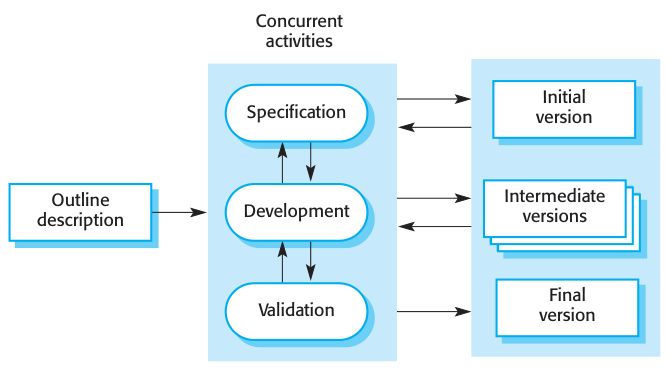
| Advantages over waterfall相对瀑布模型的优势 | Management & structural problems管理与结构隐患 |
|---|---|
| Changes cost far less because far less upfront analysis and documentation must be redone需求变更代价更低，无需大面积推翻前期分析与文档 | Low process visibility: Managers track progress through formal deliverables, which are impractical to produce for every rapid version过程可见性差：管理者依赖里程碑文档评估进度，但为每个快速迭代写正式文档并不划算 |
| Customer feedback is more reliable because users judge running software instead of abstract documents客户反馈更真实，用户可以直接试用运行中的软件而非枯燥文档 | System structure degrades: Repeatedly bolting on changes makes code messy unless the team invests in regular refactoring（重构）系统结构退化：不断叠加新功能会让代码日益凌乱，若不定期重构，后期修改将愈发困难 |
| Useful software reaches users early, delivering business value long before every feature is complete核心功能可提前上线交付，不必苦等全部功能完工才产生价值 | Multi-team large systems still need a stable upfront architecture before parallel increments can proceed smoothly多团队协作的大型系统仍需先确立稳固的体系结构，否则各增量难以对齐 |
Step 3: integration and configuration第 3 步：集成与配置
Core idea: Instead of writing software from scratch, integration and configuration locates existing off-the-shelf systems or components and adapts both the software and the requirements until they fit.核心思路：不从零手写代码，而是寻找现成的商业软件或可复用构件，通过调配软件与微调需求让两者相互契合。
Many organizational needs—such as payroll, accounting, or hotel booking—are standard across companies, so building custom code from scratch wastes time and money. Integration and configuration（集成与配置）assembles systems from commercial off-the-shelf (COTS) packages, frameworks, or web services across five stages:许多业务场景（如薪资结算、财务记账、酒店预订）在各企业间高度相似，从头编码往往费钱费力。集成与配置直接复用现成商业软件包（COTS）、框架或网络服务，过程包含以下五个阶段：
- Requirements specification: Write an outline of essential and desirable requirements without over-specifying details.需求规格说明：只列出核心与期望需求的大纲，避免过早写死实现细节。
- Software discovery and evaluation: Search for existing systems and components that cover the required capabilities and evaluate how well they fit.软件发现与评估：搜寻具备目标功能的现成系统与构件，并评估其契合度。
- Requirements refinement: Adjust the initial requirements to align with the capabilities and constraints of the selected software (or repeat discovery if no match works).需求细化：结合所选软件的能力与约束调整原有需求（若找不到合适产品则返回重搜）。
- Application system configuration: If a single off-the-shelf system meets the refined requirements, configure its rules, workflows, and parameters.应用系统配置：若单个现成系统即可满足需求，则直接配置其参数、权限与业务流程。
- Component adaptation and integration: If no single product suffices, adapt multiple components or write glue code to integrate them into a unified system.构件适配与集成：若单一产品无法胜任，则适配多个已有构件并编写粘合代码加以集成。
- Advantages: Because far less custom code is written, development cost and project risk drop substantially, and delivery is usually much faster.优势：自研代码量大幅减少，显著降低了研发成本与失败风险，交付周期也更短。
- Problems: Requirements compromises are almost unavoidable, so the final system may not perfectly match user habits; moreover, the organization loses control over future evolution because third-party vendors decide when and how underlying packages change.局限：不可避免地要在需求上妥协，系统未必完全贴合用户习惯；同时还会丧失对长期演化的控制权，因为底层产品何时升级改版全由外部供应商决定。
Step 4: choosing a model第 4 步：如何选择过程模型
| Ask about the system判断系统特征 | Best-fit model推荐模型 |
|---|---|
| Is it embedded or safety-critical with requirements that can be pinned down early?是否属于嵌入式或安全关键系统，且需求能在早期确定？ | Waterfall瀑布模型 |
| Are requirements uncertain or evolving, or is it a novel product users must try first?需求是否易变不明确，或属于用户必须试用了才知道怎么改的新系统？ | Incremental development增量开发 |
| Does off-the-shelf software already cover most of the required functionality?市场上是否已有能覆盖绝大部分功能的成熟软件？ | Integration and configuration集成与配置 |
In practice, large systems rarely rely on a single model: the overall architecture is planned upfront, well-understood or safety-critical subsystems follow waterfall or are bought off the shelf, and exploratory or user-facing features are built incrementally.现实中的大型工程很少只用单一模型：团队通常会预先规划总体体系结构，稳定或关键子系统采用瀑布模型或采购现成构件，而探索性、面向用户的模块则以增量方式迭代开发。
Practice练习
Q1. (Scenario) Choose the most suitable generic process model for each system and justify your choice in one or two sentences:Q1.（情景分析）为下列每个系统选择最合适的通用过程模型，并用一两句话说明理由：
- An antilock-braking controller in a car汽车防抱死制动控制器
- A virtual-reality system to support software maintenance用于辅助软件维护的虚拟现实系统
- A university accounting system that replaces an existing system替换旧系统的大学财务会计系统
- An interactive travel-planning system that helps users choose journeys with the lowest environmental impact帮助用户规划最低环境影响行程的交互式旅行规划系统
Answer
- Waterfall (plan-driven, possibly with formal development): As embedded, safety-critical software tightly coupled to hardware, it needs a complete specification and design for safety certification before coding starts (weakness: late changes are expensive).瀑布模型（计划驱动，必要时结合形式化开发）：该系统属于与硬件紧耦合的嵌入式安全关键软件，实现前必须具备完整规格与设计以通过安全认证（弱点：后期变更代价高）。
- Incremental development with prototyping: Because a VR maintenance interface is novel and requirements only become clear through hands-on use, early prototypes and increments let maintainers refine what works (weakness: code structure degrades without refactoring).增量开发结合原型：VR 交互界面高度新颖，需求只有让维护人员亲手试用才能摸清，原型与早期增量能持续校准方向（弱点：缺乏重构会导致结构退化）。
- Integration and configuration (with a plan-driven cutover): Accounting workflows are standardized and defined by the legacy system, so configuring an existing package lowers cost and risk while enabling a full cutover on launch day (weakness: requirements must compromise to fit the package).集成与配置（配合计划驱动切换）：财务流程高度标准化且旧系统已明确界定全部需求，配置成熟商业软件既降本避险，又能保证切换当天全功能上线（弱点：需求须向软件包妥协）。
- Incremental development (agile) combined with reuse/integration: Defining and presenting "environmental impact" requires iterative user trials, while maps, timetables, and emissions APIs can be reused from existing services (weakness: reliance on external service providers).增量开发（敏捷）结合集成复用：“最低环境影响”的指标与展示方式需靠用户反复试用完善，而地图、时刻表和碳排放计算可直接集成现有服务（弱点：受制于外部服务接口变更）。
思路：按三步判断——是否安全关键/嵌入式？需求是否稳定？有没有成熟现成产品可复用？
Q2. (Explain) In the integration and configuration process, why must the requirements activity be repeated after suitable components have been found?Q2.（解释）在集成与配置过程中，为什么找到候选构件之后必须重新开展需求活动？
Answer
Initial requirements are only an outline written before anyone knows what existing software actually supports. Once candidate packages or components are evaluated, requirements that no product covers prove prohibitively expensive and must be modified, dropped, or renegotiated—or else discovery must restart for better alternatives. Requirements and component discovery therefore iterate until a realistic match is agreed.最初的需求只是在不了解现有软件能力时写下的大纲。评估完候选软件包或构件后，那些无任何现成产品支持的需求若强行定制会极其昂贵，因此必须结合候选软件的能力对需求进行改写或删减（否则就要回到发现阶段重找替代品）。需求细化与软件发现必须往复迭代，直到双方就可行方案达成共识。
Process activities ★★★过程活动
Goal. State what happens and what is produced in each of the four fundamental activities, and explain the three testing stages alongside the V-model.目标。说明四项基本活动的工作内容与产出，并掌握三个测试阶段及 V 模型的对应关系。
Step 1: specification第 1 步：规格说明
Core idea: Specification—also called requirements engineering—discovers what stakeholders need and documents it clearly enough for both customers and developers to agree.核心思路：规格说明（即需求工程）旨在摸清利益相关者的真实诉求，并以清晰文档让客户与开发方达成共识。
Understanding what a system should do is rarely a one-shot step because users discover edge cases and conflicts as requirements are drafted. Requirements engineering（需求工程）therefore runs three interleaved sub-activities:明确系统“做什么”很少能一蹴而就，利益相关者往往在梳理过程中才意识到边界情况与需求冲突。因此，需求工程通常交错推进以下三项子活动：
- Elicitation and analysis（需求获取与分析）: Observe existing workflows, study domain rules, and interview stakeholders to uncover needs.需求获取与分析：通过观察现有业务、分析领域规则和访谈用户来挖掘需求。
- Specification（需求规格说明）: Translate those findings into structured statements recorded in a requirements document.需求规格说明：将调研所得整理为条理清晰的需求条目并写入文档。
- Validation（需求确认）: Review the requirements to ensure they are realistic, consistent, and complete.需求确认：检查需求是否切实可行、前后一致且没有遗漏。
Because customers and engineers read documents for very different purposes, the specification is written at two levels of detail:由于客户与工程师阅读文档的目的截然不同，需求通常拆分为两个抽象层次来书写：
- User requirements（用户需求）are high-level, abstract statements written in natural language and simple diagrams for customers to approve—e.g., "A customer can track an order."用户需求：面向客户与非技术管理者的概括性陈述，采用自然语言与简图描述，例如“顾客可以追踪订单”。
- System requirements（系统需求）expand those statements into precise, testable specifications that developers design and test against—e.g., "The app displays the courier's GPS coordinates on a map and refreshes every 10 seconds."系统需求：面向开发人员的详尽精确规约，作为设计、编码与验收测试的直接依据，例如“应用每 10 秒刷新一次并在地图上显示配送员的 GPS 位置”。
Step 2: design and implementation第 2 步：设计与实现
Core idea: Design defines the system's blueprint—its components, data, and interfaces—before implementation turns that blueprint into executable code.核心思路：设计在编码前勾勒出构件、数据与接口的蓝图，实现则将该蓝图转化为可运行的程序。
Designing a software system is not a single top-down pass, because structural, data, and interface decisions constrain one another. Designers iterate across four interdependent design activities:软件设计并非单向流水线，结构、数据与接口的决策彼此牵制。设计人员必须在四项相互依赖的活动间反复权衡：
| Design activity设计活动 | What it decides核心决策 | Output产出 |
|---|---|---|
| Architectural design体系结构设计 | Identifies the major components, their relationships, and how they are distributed划分核心构件、明确相互关系及其部署分布方式 | System architecture系统体系结构 |
| Database design数据库设计 | Defines the persistent data structures and how records are stored and indexed定义持久化数据结构及存储索引方案 | Database specification数据库规格说明 |
| Interface design接口设计 | Fixes the exact contracts and protocols through which components communicate规定构件之间交互的接口签名与通信契约 | Interface specification接口规格说明 |
| Component selection and design构件选择与设计 | Determines which components can be reused off the shelf and designs the new ones确定哪些构件可复用、哪些须从头设计与实现 | Component descriptions构件设计描述 |
Because changing a database table or choosing a reusable library ripples into interfaces and architecture, design rework is a normal part of engineering. During implementation, programmers also check their own code: testing establishes that a defect exists, whereas debugging（调试）locates the fault in the code and fixes it.调整一张数据库表或换用某个第三方构件，往往会波及接口与整体结构，因此设计阶段的反复修改十分正常。进入编码实现后，程序员还要同步检查代码：测试用于证明缺陷存在，而调试则是定位并修复导致缺陷的错误代码。
Step 3: validation in three testing stages第 3 步：三个测试阶段的确认
Core idea: Validation scales outward in three stages—testing isolated units first, integrated interfaces and emergent properties next, and real customer workflows last.核心思路：验证与确认按“由小到大”三步推进——先测孤立单元内部逻辑，再测集成后的接口与涌现特性，最后交由客户用真实数据验收。
| Stage阶段 | Who tests执行者 | What is tested测试对象 | What it finds主要发现的问题 |
|---|---|---|---|
| Component testing（构件测试） | Developers开发人员 | Each component or unit in isolation单独测试每个构件或程序单元 | Logic and coding defects inside individual components构件内部的逻辑与编码缺陷 |
| System testing（系统测试） | Developers or an independent test team开发人员或独立测试团队 | The integrated system as a whole集成组装后的完整系统 | Interface mismatches, unintended interactions, unmet requirements, and emergent-property failures构件接口不匹配、意外交互、未满足的需求及涌现特性问题 |
| Customer testing（客户测试） | The customer, using real operational data客户（使用真实业务数据） | The complete system prior to acceptance正式验收前的完整系统 | Errors and omissions in the original requirements and real-world usability gaps原始需求中的错误与遗漏，以及脱离真实场景的问题 |
When software is sold as a generic product rather than built for one client, customer testing takes the form of beta testing（β 测试）, in which selected early users try the product in real environments and report issues.若软件是面向大众市场的通用产品而非单一客户定制，客户测试通常以 β 测试的形式开展——邀请部分潜在用户在真实环境中试用并反馈问题。
In plan-driven projects, the V-model（V 模型）explicitly links each waterfall development phase on the left leg to its corresponding test plan and execution stage on the right leg:在计划驱动项目中，V 模型将瀑布模型的开发阶段与测试活动一一对应：左侧自上而下推进开发并同步产出测试计划，右侧自下而上逐级集成并执行测试：

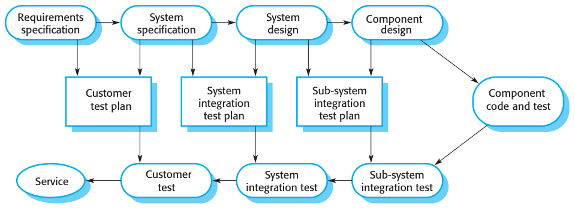
- Requirements specification → customer test plan (acceptance criteria).需求规格说明 → 客户测试计划（验收标准）。
- System specification → system integration test plan.系统规格说明 → 系统集成测试计划。
- System design → sub-system integration test plan.系统设计 → 子系统集成测试计划。
Crucially, these test plans are drafted upfront while the specifications and designs are fresh, and then executed in reverse order—from sub-system integration up to customer acceptance—as components are assembled.这一设计的关键在于：测试计划在代码写就之前便随上游文档同步拟定，待底层编码完成后，再沿 V 字右臂自底向上逆序执行。
Step 4: evolution第 4 步：演化
Because software is far cheaper and easier to modify than physical hardware—and very few systems are built completely from scratch—development and maintenance are best viewed as a single continuous lifecycle called software evolution（软件演化）, explored in detail in Chapter 8.与硬件相比，软件的修改成本低得多，且极少有系统彻底推倒重来。因此，开发与维护本质上是一个连续统一的过程，称为软件演化（详见第 8 章）。
Practice练习
Q1. (Explain) Why does requirements engineering distinguish user requirements from system requirements?Q1.（解释）为什么需求工程要将用户需求与系统需求区分开来？
Answer
The two levels serve different readers and purposes. User requirements are high-level statements written in the customer's language so nontechnical clients and end users can understand and validate what the system will do. System requirements translate those needs into precise, testable behavior that engineers use to design, build, and verify the software—while traceability links keep every system detail anchored to a real user need.两者面向的读者与用途截然不同。用户需求用客户熟悉的语言作高层表述，方便非技术背景的客户与最终用户理解并签字确认；系统需求则将其细化为精确、可验证的技术规约，供研发团队设计、编码与测试，同时通过可追溯关系确保每项技术细节都服务于真实的用户诉求。
Q2. (Classify) Identify the testing stage in which each defect is most likely discovered, and explain why:Q2.（分类）判断下列问题最可能在哪个测试阶段被发现，并说明原因：
- A function returns the wrong total when passed an empty list某个函数在传入空列表时返回错误的总计
- The billing component expects dates as DD/MM/YYYY, whereas the ordering component sends MM/DD/YYYY计费构件要求日期为 DD/MM/YYYY 格式，但订单构件发送的是 MM/DD/YYYY
- The customer's real files contain 15-digit account numbers, while all developer test data used 10 digits客户真实业务文件中有 15 位账号，而开发团队的所有测试数据都只有 10 位
- The integrated system misses its response-time target when 500 users log in concurrently, even though each component is fast alone当 500 名用户同时登录时系统响应超时，尽管单个构件独立运行时都很快
Answer
- Component testing: An internal logic defect inside a single unit, caught by testing that unit in isolation.构件测试：属于单个单元内部的边界逻辑缺陷，单独测试该单元即可暴露。
- System testing: An interface format mismatch between two components, which only appears once they are integrated.系统测试：两个构件间的接口数据格式不一致，只有集成联调后才会显现。
- Customer testing: Real customer data exercises formats and assumptions omitted from the developers' test suite, revealing a requirements omission.客户测试：真实业务数据打破了开发测试集的假设，暴露出需求规格中的遗漏。
- System testing: Response time under concurrent load is an emergent non-functional property of the integrated system (though customer testing could also encounter it if missed earlier).系统测试：并发负载下的响应时间属于集成系统的涌现非功能特性，须在系统集成后检验（若遗漏也会在客户测试中暴露）。
Q3. (Discuss) Why should software testing be an incremental, staged activity, and are programmers the best people to test their own code?Q3.（讨论）为什么软件测试应当是增量式、分阶段的活动？程序员是否是测试自己代码的最佳人选？
Answer
Why testing must be staged and incremental:测试必须分阶段增量进行的原因：
- Fault localization: Testing a huge system all at once makes it hard to tell which component or interaction caused a failure; adding tested units incrementally isolates faults to the newest change.便于定位故障：若等系统全部拼完再一次性大测，报错时极难排查根因；分批纳入已测构件，新异常往往就落在最新改动中。
- Targeting distinct defect classes: Unit tests catch internal logic errors, system tests catch interface and emergent-property issues, and customer tests catch misunderstood requirements.分层拦截不同缺陷：单元测试抓内部逻辑错，系统测试抓接口与涌现问题，客户测试抓需求误解。
- Lower repair cost: Catching and fixing bugs while code is fresh prevents one fault from masking others and avoids an unpredictable test crunch at the end.降低修复代价：趁代码记忆犹新及早排错，能防止缺陷相互掩盖，避免项目尾声陷入无休止的测试泥潭。
Are programmers the best testers? For component testing, yes—they understand the internal code structure and can target edge cases efficiently. For system and acceptance testing, no—programmers carry their own blind spots and requirements misunderstandings into tests and tend to verify happy paths rather than trying to break the code. Plan-driven projects therefore assign system testing to an independent test team and final acceptance to the customer.程序员是否适合自测：在构件测试阶段，程序员熟悉内部逻辑，能够高效设计边界用例，是合适人选；但在系统与验收测试阶段则不然，因为作者容易把对需求的误解与思维盲点带入测试，且本能地验证“代码能跑通”而非“找茬破坏”。因此计划驱动过程通常由独立测试团队负责系统测试，并由客户执行最终验收测试。
Coping with change ★★★应对变化
Goal. Explain the two strategies for reducing the cost of change, state when prototyping is used and why prototypes are normally discarded, and weigh the advantages and limits of incremental delivery.目标。说明降低变更代价的两种策略，阐明何时使用原型及为何通常将其丢弃，并评估增量交付的利弊。
Core idea: Teams cut change costs either through change anticipation—spotting likely changes before heavy investment—or change tolerance—structuring increments so late changes affect little.核心思路：降低变更成本有两条路：变更预见在大量投入前摸清易变点；变更容忍则把系统切分为增量，让后期改动波及面尽量小。
| Approach策略 | Idea核心思想 | Main technique典型手段 |
|---|---|---|
| Change anticipation（变更预见） | Predict likely changes early before extensive design or coding depends on them在大量设计与代码依赖形成前，提前探索并识别可能变化的需求 | Prototyping原型开发 |
| Change tolerance（变更容忍） | Organize development and code structure so each change touches only a small part合理切分开发步骤与代码结构，使单次修改只影响局部 | Incremental development and delivery; refactoring增量开发与交付、持续重构 |
Step 1: prototyping第 1 步：原型开发
A prototype（原型）is a rapidly built, stripped-down early version of a system created purely to explore ideas and answer questions—for example, clickable screens of a food-delivery app without real payment processing behind them.原型是为快速探索与验证想法而搭建的简化早期版本，例如只有可点击界面的外卖应用草图，背后并无真实的支付逻辑。
- In requirements engineering, letting users try a prototype reveals missing steps and hidden assumptions far more effectively than asking them to read text specifications.在需求工程中：让用户亲手试用原型，比让他们阅读枯燥的文字规格更能暴露遗漏与误解。
- In system design, prototypes help test architectural feasibility (such as database throughput) and provide the only reliable way to validate a user interface with end users.在系统设计中：原型可用于验证技术可行性（如数据库性能方案），更是与终端用户共同敲定交互界面的唯一可靠途径。
Prototyping follows four steps: establish explicit objectives, define what functionality to include and leave out, build the prototype rapidly, and evaluate it with users. To achieve speed, a prototype deliberately omits full functionality, error handling, non-functional requirements (such as performance and security), and organizational quality standards. Consequently, prototypes should normally be thrown away rather than evolved into production software—throwing away a rough sketch saves money compared with trying to patch an undocumented, fragile codebase for years.原型开发包含四个步骤：明确目标、划定功能取舍、快速开发、组织评估。为了求快，原型往往刻意省略部分功能、异常容错、性能与安全等非功能需求以及常规质量规范。正因如此，原型通常在完成使命后予以丢弃，而非勉强上线——扔掉一份探路草稿，远比日后长期修补没有文档、结构脆弱的“原型代码”划算得多。
Step 2: incremental delivery第 2 步：增量交付
Core idea: Incremental delivery ships the real system into production piece by piece, deploying the highest-priority services first.核心思路：增量交付将真实可用的系统按优先级分批上线，把核心价值最先交到客户手中。
- Define the outline requirements and ask the customer to rank services by business priority.先确定概要需求，请客户按业务重要性排序。
- Assign services to increments and design an overall architecture capable of supporting future additions.将服务分配至各增量，并规划好能承载后续扩展的总体体系结构。
- For each increment, specify its details, develop and validate it, integrate it with earlier increments, and deploy it into customer use.针对每个增量依次完成细化规约、开发、确认、与既有增量集成，并部署至客户现场投入运行。
While a specific increment is under development, its own requirements are frozen so the team can finish cleanly; requirements for upcoming increments, however, remain open to revision.在某一个增量开发期间，该增量的需求必须冻结以保障交付进度，但后续增量的需求仍可灵活调整。
Advantages优点
- Early increments serve as live "prototypes" that help customers refine what they need next—while remaining part of the production system.早期增量既能像原型一样帮助客户摸清后续需求，本身又作为正式系统资产保留下来。
- Customers gain immediate business value from the most critical services without waiting for the entire system.客户最核心的业务诉求能在早期兑现，无需等到全部功能完工。
- Requirements changes remain inexpensive because modifications affect only future increments or a single small increment.变更成本低，改动通常只落入尚未开工的后续增量或当前小增量内。
- Because the highest-priority services ship first, they are re-integrated and regression-tested with every later release, receiving the heaviest testing.最核心的服务最早交付，并随后续每次集成反复经历回归测试，测试最为充分。
Problems局限
- Replacing legacy systems: Users expect all existing capabilities on cutover day and resist operating a half-finished replacement alongside an old system.替换旧系统：业务人员切换当天就需要旧系统的全部功能，往往无法接受新旧并行或残缺上线。
- Identifying shared facilities: Core utilities used across many services are difficult to design properly when requirements are detailed only one increment at a time.识别共享基础设施：需求逐批细化时，很难在早期看清所有模块共用的底层设施。
- Fixed-scope contracts: Customers often demand a complete upfront specification in the contract, which does not exist until the final increment is specified.固定范围合同：传统采购合同往往要求开局附带完整规格说明，而增量模式在末期之前无法提供。
| Dimension维度 | Prototype原型 | Delivered increment已交付增量 |
|---|---|---|
| Purpose目的 | Learn: elicit and validate requirements, or test design options学习探索：获取并确认需求，或验证设计方案 | Deliver a working, production-ready slice of the real system交付真实系统中可直接投入使用的功能切片 |
| Quality质量标准 | Reduced: non-functional requirements, error handling, and coding standards are relaxed放宽要求：常省略非功能需求、异常处理与工程规范 | Production quality生产级质量 |
| Fate最终去向 | Normally discarded通常用后丢弃 | Kept and integrated with subsequent increments保留并持续与后续增量集成 |
| Change strategy应对策略 | Change anticipation变更预见 | Change avoidance and change tolerance变更规避与变更容忍 |
Practice练习
Q1. (Explain, beyond the pages) Your manager is impressed by a prototype and wants to put it straight into production, adding new features as needed "to avoid the expense of system development." Give four arguments against this proposal.Q1.（解释，拓展应用）经理对你的原型非常满意，想直接把它作为生产系统上线并按需追加功能，以“省去正式开发费用”。请给出四条反对理由。
Answer
- Neglected non-functional requirements: Prototypes skip performance, security, scalability, and reliability engineering, and the quick architecture may be impossible to tune afterward.忽视非功能需求：原型为求快省略了性能、安全、容错与可靠性设计，后期往往根本无法调优补救。
- Missing documentation: Rapid prototyping leaves no specification or design documentation, forcing future maintainers to treat messy prototype code as the only record.文档缺失：快速迭代过程中几乎没有规格说明与设计文档，后续维护人员只能硬啃原型代码。
- Degraded code structure: Repeated ad-hoc patches wreck structural cleanliness, driving up the cost and defect rate of every future feature.代码结构恶化：反复临时修补破坏了模块边界，后续每加一个新功能都会越来越慢且更容易引入缺陷。
- Relaxed quality standards: Testing, code reviews, and coding standards were bypassed because the prototype was never meant to last, leaving hidden faults for real users to encounter.质量标准放宽：原本当作一次性演示，跳过了严格测试与评审流程，直接上线会把大量隐患暴露给真实用户。
Recommendation: Use the prototype as an agreed behavioral specification, then engineer the production system properly.建议：将原型用作确认需求的参考规格，再按工程规范重头打造正式生产系统。
Q2. (True or false, justify) Evaluate each statement:Q2.（判断并说明理由）判断下列陈述正误：
- While an increment is being developed, the customer may still change its requirements.在某个增量开发期间，客户仍可随时修改该增量的需求。
- Incremental delivery works just as well for replacing an old system as for launching a brand-new one.增量交付用于替换旧系统的效果与用于上线全新系统一样好。
- In incremental delivery, the most important services receive the most testing.在增量交付中，最重要的服务得到的测试最充分。
Answer
- False. Requirements for the increment currently in development are frozen so the team can complete it cleanly; new changes are deferred to later increments.错误。正在开发的当前增量其需求是冻结的，新增或修改的需求只能排入后续增量。
- False. Users replacing an old system rely on all legacy features at once and refuse an incomplete replacement, and running old and new systems in parallel is rarely practical.错误。替换旧系统时用户需要旧系统的完整功能，难以接受残缺版本，同时维护两套并行系统通常也不现实。
- True. Highest-priority services are delivered in the earliest increments and are re-integrated and regression-tested whenever subsequent increments are added.正确。核心高优服务最先交付，并在后续每个增量集成时反复接受回归测试。
Process improvement ★★过程改进
Goal. Describe the process improvement cycle, name the five maturity levels in order, and contrast the process maturity approach with the agile approach.目标。说明过程改进循环的三阶段，按序记住五个成熟度级别，并对比过程成熟度方法与敏捷方法。
Many project overruns and quality failures stem not from weak programming tools, but from poorly coordinated engineering processes. Process improvement（过程改进）systematically refines how an organization develops software—either to raise product quality or to reduce cost and delivery time.许多项目的延期与质量事故并非源于编程工具落后，而是过程管理失序所致。过程改进旨在系统性地优化软件研发流程，以提升产品质量或降低成本、缩短交付周期。
The improvement cycle改进循环
Core idea: Process improvement runs as a continuous feedback loop—measure the current baseline, diagnose bottlenecks, introduce a targeted change, and measure again to verify the gain.核心思路：过程改进是一个持续闭环：先度量建立基线，再分析找准瓶颈，然后实施针对性变革，最后复测验证成效。
- Measure: Collect quantitative attributes of the process or product (such as post-release defect density or rework hours); the initial measurements establish the baseline.测量：采集过程或产品的量化指标（如上线后缺陷密度或返工工时），首次采集的数据构成评估改进的基线。
- Analyze: Examine the current workflow and data to pinpoint weaknesses, bottlenecks, and sources of delay.分析：结合数据剖析现有流程，识别薄弱环节、效率瓶颈与返工根源。
- Change: Introduce process or practice changes targeting those weaknesses, then repeat measurements using the exact same metrics to assess whether the change helped.改进：针对薄弱环节引入流程或实践调整，随后采用相同口径重新度量，检验改善效果。
Example: A team logs 4.0 post-release defects per 1,000 lines of code (KLOC), introduces peer code inspections, and measures 2.8 defects/KLOC in subsequent releases—a relative improvement of \((4.0 - 2.8) / 4.0 = 30\%\).示例：某团队记录到上线后每千行代码（KLOC）有 4.0 个缺陷；引入代码审查后，后续版本降至 2.8 个/KLOC，相对降幅达 \((4.0 - 2.8) / 4.0 = 30\%\)。
Two approaches to improvement两种改进思路
| Dimension维度 | Process maturity approach过程成熟度方法 | Agile approach敏捷方法 |
|---|---|---|
| Focus关注点 | Strengthening process discipline, project management, and formal engineering practices强化过程规范、项目管理与标准化工程实践 | Iterative delivery and trimming management overhead推进迭代交付，削减繁琐的过程开销 |
| Primary goals主要目标 | Consistent product quality and predictable schedules/costs稳定的产品质量与高度可预测的进度和成本 | Rapid feature delivery and fast adaptation to shifting requirements快速交付可用功能，并敏捷响应需求变化 |
| Philosophy核心理念 | Adopting standardized, measurable technical and management practices raises organizational maturity采纳越多经验证的规范技术与管理实践，组织过程就越成熟 | The best process is the lightest one that imposes minimal non-coding overhead最好的过程是管理负担最轻、能让团队专注交付的过程 |
| Overhead过程开销 | Rooted in plan-driven engineering; introduces significant documentation and governance overhead源于计划驱动传统，引入较多文档、评审与管理活动开销 | Code-centric; intentionally minimizes ceremony, formal approvals, and heavy documentation以代码交付为中心，刻意将形式化审批与冗长文档降至最低 |
The five maturity levels五个成熟度级别
Originated by the Software Engineering Institute's Capability Maturity Model (CMM), the five-level scale tracks how an organization progresses from ad-hoc project execution—where success depends on individual heroics—to standardized, statistically controlled, and self-optimizing processes:源于软件工程研究所（SEI）能力成熟度模型（CMM）的五个级别，刻画了组织如何从依赖“个人英雄主义”的即兴开发，一步步迈向标准化、量化控制乃至数据驱动自我优化的工程体系：
| Level级别 | Name名称 | Key organizational capability组织具备的能力特征 |
|---|---|---|
| 1 | Initial（初始级） | Goals are somehow met and work scope is communicated, but processes are informal and largely ad hoc能明确工作范围并把活干完，但过程随意无章法，成败高度依赖个人能力 |
| 2 | Managed（已管理级） | Organizational policies govern process use; projects maintain documented plans and monitor resources and progress项目级建立书面计划，并对成本、进度与资源进行跟踪监控，但各项目做法尚未全公司统一 |
| 3 | Defined（已定义级） | An organization-wide standard process set exists; each project tailors its process from it and collects process assets/metrics形成全组织统一的标准过程库，各项目从中裁剪落地，并留存过程资产与度量数据 |
| 4 | Quantitatively managed（定量管理级） | Subprocesses are placed under statistical control; quantitative product and process metrics actively guide management decisions对关键子过程实施统计控制，用过程与产品的量化指标直接指导管理决策 |
| 5 | Optimizing（优化级） | Measurements continuously drive proactive process innovation and adaptation to changing business needs基于量化趋势分析持续开展主动流程革新，动态适应不断演变的业务诉求 |
- Benefits: Focuses attention on the practices teams actually use, gives customers a common benchmark to evaluate contractors, and provides a clear roadmap for raising quality and predictability.优势：促使管理层关注团队实际落地的工作方法，为客户评估外包商提供客观标尺，也为提升质量与可预测性指明路线。
- Limits: Heavy governance and documentation overhead makes it unaffordable for small companies, and its document-centric criteria fit agile teams poorly—so adoption is largely limited to large enterprises.局限：正规评估与管理开销对小企业而言过于沉重，且其偏重文档与规范的准则难以衡量轻量敏捷团队，因此实践中主要由大型组织采用。
Practice练习
Q1. (Classify) Assign a maturity level to each organization and justify your answer, then state what Organization C must add to reach Level 5:Q1.（分类）判断下列组织所处的成熟度级别并说明理由，再说明组织 C 还需补充什么才能升至第 5 级：
- Projects maintain documented plans and track resources, but each project uses its own methods with no organization-wide standard process.项目均制定书面计划并监控资源，但各项目各自为政，缺乏全组织统一的标准过程。
- An organization-wide standard process set exists; each project tailors one of them and logs process measurements for future use, without statistical control.已建立全组织标准过程库，项目从中裁剪使用并归档度量数据，但尚未实行统计控制。
- Statistical techniques monitor and control subprocesses, and collected metrics guide management decisions.运用统计方法控制关键子过程，并用采集到的量化指标支撑管理决策。
Answer
- Level 2 (Managed): Project-level planning and resource monitoring are established, yet processes are not standardized across the organization.第 2 级（已管理级）：项目层面已具备计划与资源监控能力，但尚未形成组织级统一标准。
- Level 3 (Defined): Organizational standardization, project tailoring, and data collection exist, but statistical process control has not been introduced.第 3 级（已定义级）：具备全组织标准过程、项目裁剪与资产收集，但尚未达到统计控制要求。
- Level 4 (Quantitatively managed): Subprocesses are under statistical control. To reach Level 5 (Optimizing), Organization C must use quantitative trend analysis to drive continuous process improvement and adapt its workflows to evolving business needs.第 4 级（定量管理级）：已实现子过程统计控制。要跃升至第 5 级（优化级），组织 C 必须利用量化趋势分析持续推动流程改进，主动适应业务变化。
Q2. (Discuss) State two advantages and two disadvantages of the process maturity approach to software process improvement.Q2.（讨论）列举过程成熟度方法在软件过程改进中的两个优势与两个局限。
Answer
- Advantages: (1) It spotlights actual engineering and management practices, driving measurable gains in capability; (2) the five-level scale gives customers an objective yardstick to compare suppliers and gives organizations a clear path toward higher quality and predictability.优势：(1) 引导团队聚焦真正落地的工程与管理实践，切实提升组织能力；(2) 五级阶梯既方便客户横向评估供应商，也为组织提供了提升质量与可预测性的清晰路线图。
- Disadvantages: (1) Formal assessments, documentation, and process governance impose excessive overhead on small companies; (2) maturity is difficult to gauge for agile teams that deliberately minimize formal ceremony and paperwork.局限：(1) 正式评估、文档与治理成本过高，小公司难以负担；(2) 对刻意精简文档与仪式的敏捷团队，成熟度往往难以准确衡量。
Terms to recognise ★需要认识的术语
| Term术语 | What to know核心释义 |
|---|---|
| Feasibility study（可行性研究） | A quick, low-cost study conducted before requirements engineering to check whether a system is worthwhile and technically and financially viable在需求工程启动前开展的简短低成本调研，评估系统是否值得建设，以及在技术与预算上是否可行 |
| Formal system development（形式化系统开发） | A waterfall variant that transforms a mathematical specification step by step into verified code; costly, so reserved almost exclusively for critical systems瀑布模型的严格变体，通过数学推理将形式化规格逐步精化为代码；成本高昂，几乎仅用于安全关键系统 |
| Rational Unified Process (RUP)统一过程（RUP） | A hybrid framework blending generic models across four iterative phases: inception, elaboration, construction, and transition融合多种通用模型优势的混合过程框架，划分为初始、细化、构建与移交四个阶段 |
| Spiral model（螺旋模型） | Boehm's risk-driven process model, where each loop around the spiral represents a phase combining engineering work with explicit risk analysisBoehm 提出的风险驱动模型，螺旋的每一圈对应一个阶段，且在推进工程活动前先开展显式风险评估 |
| Verification and validation (V&V)验证与确认（V&V） | Verification asks "Are we building the system right?" (conformance to spec); validation asks "Are we building the right system?" (real user needs). See Section 7.1验证（Verification）核对“是否正确地构建系统”（符合规格）；确认（Validation）核对“是否构建了正确的系统”（满足真实需求），详见第 7.1 节 |
| Test-driven development（测试驱动开发） | Writing automated tests before the production code they verify; covered in Section 7.5先编写自动化测试再编写实现代码的开发实践，详见第 7.5 节 |
| Refactoring（重构） | Improving the internal structure of existing code without altering its external behavior; covered in Section 2.3在不改变外部可观测行为的前提下优化既有代码内部结构，详见第 2.3 节 |
| Configuration management（配置管理） | Supporting discipline that tracks, versions, and controls changes to software artifacts throughout evolution在软件持续演化过程中负责追踪版本、管理变更与保持一致性的支撑活动 |
| Capability Maturity Model (CMM)能力成熟度模型（CMM） | The Software Engineering Institute framework defining the five organizational process maturity levels软件工程研究所（SEI）提出的经典框架，五个过程成熟度等级即源自于此 |
Exam-style questions考试题型练习
Q1. (Scenario, 12 marks) A software company bids for three projects: (i) control software for an automatic train-door system; (ii) a mobile app for a start-up testing a new business idea whose requirements remain vague; and (iii) a ministry payroll system replacing a 10-year-old system under a fixed-price contract with a complete specification.Q1.（情景分析，12 分）某软件公司竞标三个项目：(i) 列车自动门控制软件；(ii) 初创公司用于市场试水的新概念移动应用，需求尚不明确；(iii) 某政府部门的薪资系统，须在附带完整规格的固定总价合同下替换运行十年的旧系统。
- Choose the most suitable generic process model for each project and give two reasons for each choice. (6 marks)为每个项目选择最合适的通用过程模型，并各给出两条理由。（6 分）
- State one weakness of each chosen model in that project context. (3 marks)分别指出所选模型在该项目背景下的一个弱点。（3 分）
- Suppose a large system contains subsystems like (i) alongside subsystems like (ii). Explain why a hybrid process is appropriate. (3 marks)若大型系统同时包含类似 (i) 与类似 (ii) 的子系统，解释为何应当采用混合过程。（3 分）
Answer
(a) Model selection and reasons (6 marks):(a) 模型选择与理由（6 分）：
- (i) Train-door controller — Waterfall (plan-driven, possibly formal): It is embedded software tightly coupled to physical door sensors and actuators, so behavior cannot be left undefined until coding; furthermore, as a safety-critical system, it requires complete specifications and designs upfront for safety certification.(i) 列车自动门控制器——瀑布模型（计划驱动，必要时结合形式化方法）：该系统属与硬件紧耦合的嵌入式软件，功能不能留待编码阶段才敲定；且作为安全关键系统，编码前必须具备完备的规格与设计以供安全认证。
- (ii) Start-up mobile app — Incremental development (with agile planning): Requirements are uncertain and volatile, so incremental development keeps change cheap by modifying only current or future increments; rapid early releases also deliver quick market feedback.(ii) 初创公司移动应用——增量开发（配合敏捷规划）：需求模糊易变，增量开发能把改动限制在当前或后续增量从而压低变更代价；同时早期上线能迅速验证市场反馈。
- (iii) Ministry payroll replacement — Integration and configuration: Payroll rules are standard business functionality, so configuring an existing commercial payroll package cuts cost, risk, and delivery time; incremental delivery fits poorly because users require full legacy capability on cutover day and the fixed-price contract already supplies a complete specification.(iii) 部门薪资替换系统——集成与配置：薪资核算属标准化业务，直接配置成熟商用薪资系统可大幅降本提速；此处不宜增量交付，因为用户要求切换当天即具备旧系统全部功能，且固定总价合同已给出完整规格。
(b) One weakness per model (3 marks):(b) 各模型的对应弱点（3 分）：
- (i) Waterfall: Late changes require expensive rework of signed-off documents, tempting teams to freeze requirements too early.(i) 瀑布模型：后期需求修改会导致已签署文档大面积返工，容易迫使团队过早冻结需求。
- (ii) Incremental: Management visibility suffers without intermediate milestone documents, and system structure degrades unless refactored continuously.(ii) 增量开发：缺乏阶段性文档导致管理透明度不足，且若不持续重构，代码结构会逐渐腐化。
- (iii) Integration & configuration: Compromises to match the commercial package are unavoidable, and the ministry loses control over the vendor's future product evolution.(iii) 集成与配置：必须迁就现有软件而在部分需求上妥协，且客户丧失对供应商后续升级节奏的控制权。
(c) Why a hybrid process fits large mixed systems (3 marks):(c) 大型混合系统为何适用混合过程（3 分）：
A large system's foundational architecture depends on core requirements and cannot be improvised incrementally. Well-understood or safety-critical subsystems can therefore be specified and built with waterfall (or purchased and configured), while exploratory, user-facing parts are built incrementally, sharing reusable components across both. Relying on one model alone would be either too rigid for volatile features or too informal for critical subsystems.大型系统的总体体系结构依赖核心需求，不能靠零散增量拼凑；因此稳定的核心或安全关键模块可采用瀑布开发（或采购配置），而易变、探索性的前端模块则以增量方式演进，并在其间复用共享构件。单一过程模型无法兼顾两类子系统的迥异诉求。
思路：先抓三大判断锚点——“安全关键/嵌入式”“需求是否确定”“有无成熟产品/是否替旧系统”，每问各落到关键得分点，并牢记补上“各自弱点”。
Q2. (Compare, 10 marks) (a) List the five phases of the waterfall model in order. (2 marks) (b) Explain why customers and developers often freeze requirements prematurely in waterfall projects, and state two consequences. (3 marks) (c) Give three advantages of incremental development over waterfall. (3 marks) (d) State two management problems of incremental development. (2 marks)Q2.（比较，10 分）(a) 按顺序列出瀑布模型的五个阶段。（2 分）(b) 解释瀑布项目中客户和开发人员为何常过早冻结需求，并指出两个后果。（3 分）(c) 列举增量开发相对于瀑布模型的三个优点。（3 分）(d) 从管理视角指出增量开发的两个问题。（2 分）
Answer
(a) Five waterfall phases (2 marks): Requirements analysis and definition → System and software design → Implementation and unit testing → Integration and system testing → Operation and maintenance.(a) 五个阶段（2 分）：需求分析与定义 → 系统与软件设计 → 实现与单元测试 → 集成与系统测试 → 运行与维护。
(b) Premature freezing and consequences (3 marks): Because each waterfall phase ends with formal signed-off documents, flaws uncovered later (such as infeasible requirements spotted during design or design flaws exposed during coding) force costly document rewrites and re-approvals. To avoid delays, both sides freeze the specification prematurely. Consequences: (1) unresolved issues are ignored or bypassed in code, yielding software that fails real user needs; (2) design flaws patched by coding workarounds leave a poorly structured, hard-to-maintain system.(b) 过早冻结的原因与后果（3 分）：由于每个阶段结束都需要签字批准文档，后期发现的问题（如设计时发现需求不现实、编码时暴露设计漏洞）会引发高昂的文档改写与重审成本。为躲避拖延，双方往往早早把规格写死。后果包括：(1) 隐患被搁置或绕开，交付系统背离真实需求；(2) 用代码技巧强行弥补设计漏洞，留下结构混乱、难以维护的系统。
(c) Three advantages of incremental development (3 marks): (1) Lower cost of accommodating changing requirements (far less analysis/documentation is redone); (2) faster, more reliable customer feedback on running software rather than abstract documents; (3) earlier delivery and deployment of useful business value before all features are built.(c) 增量开发的三个优势（3 分）：(1) 拥抱需求变更的代价更低，无需推翻大量前置分析与文档；(2) 基于可运行软件获得客户反馈，比评审文档更直观准确；(3) 核心有用功能能提前交付上线，无需等到全部功能完工。
(d) Two management problems (2 marks): (1) Poor process visibility—managers normally track milestones via formal deliverables, which are too expensive to write for every rapid version; (2) structural degradation—successive increments erode code architecture unless time is budgeted for refactoring.(d) 两个管理问题（2 分）：(1) 过程可见性差——管理者缺乏每个快速版本的正式交付物来追踪进度；(2) 结构逐渐退化——持续叠代容易把代码改乱，若不安排重构，后期维护成本飙升。
易错：增量开发的优势是“应对需求变更成本低”，而非“总开发成本一定更低”。
Q3. (Validation and testing, 14 marks) (a) Define software validation (V&V) and distinguish testing from debugging. (3 marks) (b) Name the three testing stages, stating who conducts each and one defect class it uncovers. (6 marks) (c) Identify the three V-model test plans and the development documents they derive from. (3 marks) (d) Define beta testing and explain when it is used. (2 marks)Q3.（确认与测试，14 分）(a) 定义软件确认（V&V），并区分测试与调试。（3 分）(b) 说出三个测试阶段的名称、各自执行者以及主要发现的一类缺陷。（6 分）(c) 指出 V 模型的三份测试计划及其对应的上游开发文档。（3 分）(d) 什么是 β 测试？通常何时采用？（2 分）
Answer
(a) V&V and testing vs. debugging (3 marks): Verification and validation (V&V) demonstrates that a system conforms to its specification and satisfies the customer's real expectations, with program testing as its primary technique. Testing establishes that defects exist; debugging locates and corrects those underlying faults.(a) V&V 与测试/调试之别（3 分）：验证与确认（V&V）旨在证明系统既符合规格说明，又满足客户真实期望，程序测试是其核心手段。测试负责发现缺陷存在，调试负责定位故障根因并修正代码。
(b) Three testing stages (6 marks):(b) 三个测试阶段（6 分）：
- Component testing: Conducted by developers on individual units in isolation; finds defects inside a component.构件测试：开发人员单独测试各单元，发现构件内部逻辑或编码缺陷。
- System testing: Conducted by developers or an independent test team on the integrated system; finds interface mismatches, unanticipated component interactions, and emergent-property or unmet requirement failures.系统测试：开发人员或独立测试团队测试集成后的整套系统，发现接口不匹配、意外交互及涌现特性或需求未达标问题。
- Customer testing: Conducted by the customer (or representative users) using real data; finds errors and omissions in requirements, usability mismatches, or unacceptable real-world performance.客户测试：客户或潜在用户使用真实业务数据测试，暴露需求本身的错误、遗漏以及不符合实际场景的问题。
(c) V-model test plans (3 marks):(c) V 模型三份测试计划（3 分）：
- Customer test plan ← derived from the requirements specification.客户测试计划 ← 源自需求规格说明。
- System integration test plan ← derived from the system specification.系统集成测试计划 ← 源自系统规格说明。
- Sub-system integration test plan ← derived from the system design.子系统集成测试计划 ← 源自系统设计。
(d) Beta testing (2 marks): Beta testing is customer testing for a generic software product: selected early users install and use the pre-release product in real environments and report failures so developers can uncover unanticipated defects before general sale.(d) β 测试（2 分）：面向通用软件产品的客户测试方式：由选定的潜在用户群体在真实环境下试用并反馈问题，借此在正式发售前发现研发团队未预料到的缺陷。
Q4. (Coping with change, 12 marks) A city council wants an online parking-permit system, can only outline its needs roughly, and its staff refuse to read long specifications.Q4.（应对变更，12 分）某市议会拟建在线停车许可系统，但只能粗略描述需求，且工作人员不愿阅读冗长规格文档。
- Distinguish change anticipation from change tolerance, and state which strategy prototyping and incremental delivery primarily support. (4 marks)区分变更预见与变更容忍，并说明原型与增量交付各自主要支持哪一种。（4 分）
- Developers plan a UI prototype. Give two possible objectives, two items you would omit from the prototype, and two pitfalls that can distort its evaluation. (6 marks)开发团队计划先做界面原型，请列出两个合理目标、两项应略去的内容以及两个可能使评估失真的问题。（6 分）
- The council proposes deploying the prototype directly into production "to save money." Give two reasons against this. (2 marks)市议会提议直接将原型投入生产以“省钱”，请给出两条反对理由。（2 分）
Answer
(a) Strategies (4 marks): Change anticipation embeds early activities (such as prototyping) to surface likely requirement shifts before costly code is written. Change tolerance designs the process and system structure so incoming changes are cheap to absorb—primarily supported by incremental delivery (and change avoidance), where changes fall into future or small isolated increments.(a) 两种策略（4 分）：变更预见通过早期活动（如原型开发）提前探明易变需求，以免投入重金后返工；变更容忍通过合理的架构与迭代切分降低改动代价，主要由增量交付（配合变更规避）支撑，使修改落入后续或局部小增量。
(b) UI prototyping choices (6 marks):(b) 界面原型设计要点（6 分）：
- Objectives (any two): Explore and refine the user interface; validate functional workflows; demonstrate feasibility to council managers.目标（任选二）：打磨用户交互界面；确认核心业务功能；向管理层演示方案价值。
- Omissions (any two): Peripheral features; non-functional requirements (response time, security, memory limits); full error handling; production reliability and coding standards.略去内容（任选二）：次要功能；响应速度与安全等非功能需求；完备的错误处理；生产级可靠性与工程规范。
- Evaluation pitfalls (any two): Users behave differently with a mock prototype than in real daily work; testers may not represent typical staff; insufficient training time skews results; slow prototype response causes evaluators to skip slow features.评估失真因素（任选二）：试用心态与真实工作不同；受测者不具代表性；培训时间过短；原型运行卡顿导致评估者绕开慢功能。
(c) Reasons against deploying the prototype (2 marks): Any two of: ignored non-functional requirements (security, performance, reliability) may be impossible to retrofit; rapid edits left no documentation; degraded code structure makes long-term maintenance prohibitively expensive; quality and testing standards were relaxed.(c) 反对原型直接上线的理由（2 分）：任选两条：忽略的性能/安全等非功能需求难以事后调优；缺乏文档导致代码成为唯一依据；结构腐化使维护昂贵；测试与质量规范被放宽。
Q5. (Process improvement, 12 marks) A software company has never collected process metrics.Q5.（过程改进，12 分）某软件公司从未采集过过程度量数据。
- Describe the three stages of the process improvement cycle and explain why the first cycle must collect data first. (4 marks)描述过程改进循环的三个阶段，并解释为何首个循环必须包含数据收集。（4 分）
- Before introducing code inspections, the company recorded 180 defects across 60 KLOC; afterward it measured 55 defects across 25 KLOC. Compute defect density before and after, and the relative improvement. (3 marks)引入代码审查前，该公司在 60 KLOC 中测得 180 个缺陷；引入后在 25 KLOC 中测得 55 个缺陷。计算改进前后的缺陷密度及相对改进率。（3 分）
- The company is assessed at maturity Level 2. Contrast Levels 2 and 3, and state what it must add to reach Level 3. (3 marks)该公司目前处于成熟度第 2 级，请对比第 2 级与第 3 级，并说明升至第 3 级须补充什么。（3 分）
- Give two reasons why a small agile firm might skip the formal maturity approach. (2 marks)给出一家小型敏捷公司可能不采用正式成熟度方法的两条理由。（2 分）
Answer
(a) Improvement cycle (4 marks): The cycle repeats three stages: process measurement (collecting product/process attributes to establish a baseline), process analysis (diagnosing weaknesses and bottlenecks, e.g., via process maps), and process change (introducing targeted fixes before re-measuring the same metrics). Without initial data collection, there is no baseline to judge whether any change actually improved performance.(a) 改进循环（4 分）：由过程测量（采集指标建立基线）、过程分析（定位薄弱环节与瓶颈）和过程改进（实施变革并按同口径复测）三阶段循环构成。若不在首轮采集基线数据，便无从判断改进措施是否真正见效。
(b) Defect density calculation (3 marks):(b) 缺陷密度计算（3 分）：
- Before: \(180 / 60 = 3.0\) defects/KLOC.改进前：\(180 / 60 = 3.0\) 个缺陷/KLOC。
- After: \(55 / 25 = 2.2\) defects/KLOC.改进后：\(55 / 25 = 2.2\) 个缺陷/KLOC。
- Relative improvement: \((3.0 - 2.2) / 3.0 = 0.267\), a 26.7% reduction in defect density.相对改进率：\((3.0 - 2.2) / 3.0 = 0.267\)，即缺陷密度下降 26.7%。
(c) Level 2 vs. Level 3 (3 marks): At Level 2 (Managed), organizational policies govern when processes are used, and individual projects maintain documented plans, resource tracking, and monitoring. At Level 3 (Defined), an organization-wide standard process set exists, projects tailor their own process from it, and process assets/measurements are archived for future improvement. To advance to Level 3, the company must establish organization-wide standard processes, require projects to tailor them, and systematically collect process assets and measurements.(c) 第 2 级与第 3 级对比（3 分）：第 2 级（已管理级）要求项目层面具备书面计划、资源管理与进度监控，但方法尚未跨项目统一；第 3 级（已定义级）则要求建成全组织标准过程库，由各项目裁剪使用并归档度量资产。要升至第 3 级，公司必须制定组织级标准过程、推行项目裁剪落地并系统收集过程资产与度量数据。
(d) Why small agile firms skip maturity frameworks (2 marks): Formal assessments and documentation overhead consume too much time away from coding for a small team, and maturity is hard to assess meaningfully for agile processes that intentionally minimize ceremony.(d) 小型敏捷公司不采用的原因（2 分）：正式过程评估与文档开销对小团队而言负担过重，且刻意精简仪式与文档的敏捷过程本身也难以按传统成熟度框架准确评级。
易错：改进率公式为 (前 − 后) / 前，切记先换算成相同单位（缺陷数 / KLOC）再作差。
Textbook exercises课后习题
Textbook exercises with answers: 10 questions教材习题及答案（共 10 题，点击展开）
E1. (Exercise 2.1) Suggest the most appropriate generic software process model for managing the development of each system below, explaining your answer based on system type:E1. （习题 2.1）请为下列系统建议最合适的通用软件过程模型作为管理开发的基础，并结合系统类型说明理由：
- A system to control antilock braking in a car汽车防抱死制动（ABS）控制系统
- A virtual-reality system to support software maintenance辅助软件维护的虚拟现实系统
- A university accounting system replacing an existing system替换既有系统的大学财务会计系统
- An interactive travel-planning system that helps users choose journeys with the lowest environmental impact帮助用户规划环境影响最低行程的交互式旅行规划系统
Answer
Process selection depends on four system properties: requirement stability, cost of failure, suitability for incremental rollout, and availability of reusable software.模型选型取决于系统的四项核心属性：需求稳定性、失效代价、是否适合分批交付，以及是否存在可复用现成软件。
- Waterfall (plan-driven): An embedded, safety-critical controller tied closely to wheel-speed sensors and brake actuators. Its requirements stem from physics and safety standards and remain stable, while safety certification demands complete upfront specifications and designs before coding. Incremental delivery is impractical because a half-built brake controller cannot safely run in a vehicle. Weakness: late requirement changes are very costly.瀑布模型（计划驱动）：属于与轮速传感器、制动执行器紧耦合的嵌入式安全关键系统，需求受物理规律与安全法规约束而稳定，安全认证必须在编码前基于完整规格与设计完成，且半成品控制器无法装车。弱点：后期需求变更代价高昂。
- Incremental development with prototyping: Virtual reality offers novel interaction styles whose usability maintainers cannot articulate upfront; requirements emerge only through hands-on trials of prototypes and early increments. Freezing an early specification would rely purely on guesswork. Weakness: code structure degrades without disciplined refactoring, and managers get fewer formal documents to track progress.增量开发与原型开发：VR 交互方式新颖，维护人员难以事先说清需要什么界面与交互，必须通过试用原型与早期增量不断摸索。若一开始写死规格只能靠猜。弱点：缺乏持续重构会导致结构退化，且文档较少不利于管理跟踪。
- Waterfall (plan-driven), implemented via integration and configuration where a package fits: The legacy system defines stable, well-understood requirements, and users need all existing accounting capabilities on cutover day—making incremental rollout awkward and requiring complete data-migration and cutover plans. Because university accounting uses standardized workflows, configuring a commercial package saves money compared with building from scratch. Weakness: requirement compromises to match the package and dependence on the vendor's upgrade schedule.瀑布模型（计划驱动），若有成熟产品则结合集成与配置：旧系统已明确界定稳定需求，且切换日必须全功能就绪，因此需要周密的数据迁移与切换计划，不适合零碎增量交付；财务流程高度标准化，配置成熟商业软件比自研更经济。弱点：须在局部需求上向软件包妥协，且受制于供应商后续演进。
- Incremental development with prototyping, combined with integration and configuration: Both how "environmental impact" is calculated and how trade-offs are visualized require trials with real travelers, favoring incremental iterations. Meanwhile, maps, schedules, routing, and emissions data can be integrated from existing external web services. Weakness: dependence on external services outside the team's control.增量开发与原型开发，并结合集成与配置：“最低环境影响”的定义及可视化交互需要真实旅客试用才能打磨清晰，适合增量探索；同时地图、时刻表、路线检索与排放估算可直接复用外部 Web 服务。弱点：依赖不受己方控制的第三方外部服务。
思路：紧扣系统特征（安全关键？需求稳定？可复用现成软件？替换旧系统？），每题先给选型，再摆理由与一项弱点。
E2. (Exercise 2.2) Incremental software development could be very effectively used for customers who do not have a clear idea about the systems needed for their operations. Discuss.E2. （习题 2.2）对于并不清楚自身业务究竟需要何种系统的客户，增量软件开发可能非常有效。请对此展开讨论。
Answer
Incremental development interleaves specification, development, and validation: starting from an outline, the system grows increment by increment so customers can inspect working features before specifying details. For uncertain customers, this approach is highly effective for four reasons:增量开发将规格说明、开发与确认交错推进：从轮廓需求出发逐批产出可运行增量，让客户边用边明晰后续需求。对于自身诉求尚不清晰的客户，该模式极为有效，原因有四：
- No premature freeze: Only a broad outline is needed to start, whereas waterfall demands a complete specification before design begins.无需过早冻结规格：只需粗略轮廓即可起步，不必像瀑布模型那样在动手前把所有细节定死。
- Feedback on working software: Evaluating live functionality is far more reliable than reviewing abstract specifications, surfacing misunderstandings in weeks instead of at project end.基于真实软件的早期反馈：客户试用可运行功能比审阅纸面文档可靠得多，误解能在数周内暴露而非拖到项目收尾。
- Low cost of change: When customers revise their priorities, only current or upcoming increments change, sparing extensive document rework.变更代价低：客户改主意时只需调整当前或后续增量，免去大面积重写与重签文档。
- Early value and lower risk: High-priority services reach users first and deliver quick returns, allowing the project to be redirected or halted before heavy spending occurs.尽早见效并控制风险：最核心的功能率先交付验证，尽早产生业务价值，也便于及时纠偏或止损。
Conditions and limits: The customer must stay available to test increments and prioritize work; managers lose document-based visibility; code structure degrades unless refactored regularly; fixed-price, fixed-scope contracts clash with evolving requirements; and large systems still require an upfront architectural plan.适用条件与局限：客户须能持续投入反馈与排期；缺乏阶段文档使管理可见性偏低；需持续重构防止结构退化；固定价格与固定范围合同难以配合动态需求；大型系统仍需事先规划总体体系结构。
E3. (Exercise 2.3) Consider the integration and configuration process model (stages: (1) requirements specification, (2) software discovery and evaluation, (3) requirements refinement, (4) application system configuration, (5) component adaptation and integration). Explain why it is essential to repeat the requirements engineering activity in this process.E3. （习题 2.3）考察集成与配置过程模型的五个阶段：(1) 需求规格说明，(2) 软件发现与评估，(3) 需求细化，(4) 应用系统配置，(5) 构件适配与集成。请解释为何必须在该过程中重复开展需求工程活动。
Answer
Because integration and configuration assembles a system from pre-existing applications, components, or web services, what can be built economically is bounded by what already exists. The initial specification is therefore only an outline written before candidate software is known. Repeating requirements engineering (requirements refinement) after software discovery is essential for three reasons:集成与配置依赖现成应用、构件或网络服务来组装系统，经济可行的方案受制于市场上已有哪些软件。初始规格只是了解候选软件前拟定的粗纲，因此在发现与评估之后必须重返需求活动（即需求细化），理由有三：
- Off-the-shelf software rarely matches the initial outline exactly: Requirements must be adapted to align with candidate features and constraints (or discovery repeated for alternatives); insisting on unadjusted requirements forces costly custom coding that defeats the point of reuse.现成软件极少与初始轮廓严丝合缝：必须依据候选产品的功能边界调整需求（或重新搜寻替代方案），若死守原需求强行定制开发，便会丧失复用省钱省时的意义。
- Discovery reveals cost-feature trade-offs: Evaluating real candidates shows which requirements come cheaply, which cost a fortune to customize, and which built-in capabilities the customer had overlooked—enabling informed compromises.评估过程重塑可行性与性价比认知：候选产品能让客户直观看到哪些功能开箱即用、哪些定制极贵、哪些额外功能反而很有价值，从而作出明智权衡。
- Configuration and glue code require concrete technical specs: Data formats, API contracts, configuration options, and adapter requirements can be finalized only once the actual packages or components are chosen.配置与胶水开发需要落地的接口细节：只有选定具体产品或构件后，才能敲定数据格式、接口映射、配置项以及适配粘合代码的具体需求。
Without this loop, the project risks either heavy integration rework or a system mismatched to real user needs.缺少这一迭代闭环，项目要么陷入高昂的定制集成泥潭，要么产出与真实需求脱节的系统。
E4. (Exercise 2.4) Suggest why it is important to distinguish developing user requirements from developing system requirements in requirements engineering.E4. （习题 2.4）请说明在需求工程过程中，将用户需求的开发与系统需求的开发区分开来为何十分重要。
Answer
User requirements are high-level natural-language statements and simple diagrams describing what services and constraints customers expect; system requirements are detailed, rigorous technical specifications written for engineers as the basis for design, testing, and contracts. Separating the two levels matters for four reasons:用户需求是用自然语言和简图向客户表达的宏观服务与约束；系统需求则是面向工程师编写的详尽精确规约，直接指导设计、测试与合同验收。区分这两层的原因有四：
- Different audiences: Mixing low-level technical specs into user requirements overwhelms customers and blocks validation, whereas giving developers only high-level statements forces guesswork.目标读者不同：在用户需求中塞入过多技术细节会让客户看不懂而无法确认；反过来若只给开发人员抽象描述，则会迫使他们自行臆测实现规则。
- Distinct goals (building the right system vs. building it right): User requirements capture stakeholder needs for validation; expanding one user requirement into multiple precise system requirements exposes ambiguities, conflicts, and infeasible demands early.作用不同（做对的系统 vs 把系统做对）：用户需求用于与利益相关者确认业务意图；将其展开为多条系统需求时，潜藏的歧义、冲突与不可行之处能及早暴露。
- Separating problem from solution: User requirements avoid premature design choices so architects remain free to pick the best technical approach, while system requirements pin down exact solution behavior.分离“问题”与“方案”：用户需求不绑死具体技术实现，留给设计团队充分的优化空间；系统需求则负责锁定可检验的精确行为。
- Traceability and change control: User needs evolve with business goals while system specs also shift with technical decisions; keeping both levels traceable shows exactly which technical specs are impacted when a business requirement changes.可追溯性与变更影响分析：双层映射使每条系统需求都能回溯至业务诉求，一旦业务变更，可迅速评估需连带修改哪些技术规格。
Example: User requirement "A doctor can prescribe a drug" expands into system requirements "The system shall check the prescribed dose against the drug's approved minimum and maximum range" and "The system shall display a warning if the dose lies outside that range."示例：用户需求“医生可以开具处方”会细化为两条系统需求：“系统应将所开剂量与该药批准的最小/最大剂量范围比对”以及“若超出范围，系统应弹出警告”。
E5. (Exercise 2.5) Using an example, explain why architectural design, database design, interface design, and component design are interdependent.E5. （习题 2.5）请结合实例解释，为何体系结构设计、数据库设计、界面（接口）设计与构件设计四项活动相互依赖。
Answer
Architectural design defines major components and their relationships; database design models persistent storage; interface design sets communication contracts among components, users, and external systems; and component design determines internal component logic or reuse choices. Because decisions in any one area constrain the inputs of the other three, design proceeds iteratively in parallel rather than strictly sequentially.体系结构设计确立主要构件及拓扑关系，数据库设计决定持久化数据结构，接口设计界定构件、用户与外部系统间的交互契约，构件设计决定内部逻辑或复用方案。任一环节的决策都会制约其余三项活动的输入条件，因此设计必须并行迭代推进，而不能机械地单向排队。
Example — an online hotel booking system:示例——在线酒店预订系统：
- Architecture → Database & Component: Choosing a three-tier architecture (web/mobile client, application server, relational database) requires database tables for rooms, guests, and bookings and places reservation rules inside the application server.体系结构决定数据库与构件分布：采用三层结构（客户端、应用服务器、关系数据库）后，数据库须建房间/住客/订单核心表，业务逻辑也相应落入应用服务器构件。
- Interface ↔ Database & Architecture: Client–server interfaces such as
checkAvailability(roomType, dates)depend on fast queries; if database queries lag, designers must alter the database (add indexes), change the interface (coarser summaries), or adjust the architecture (insert a caching tier).接口与数据库、体系结构联动：如checkAvailability(roomType, dates)接口受制于数据库查询速度；若查询过慢，团队就得改数据库加索引、调整接口返回粒度，或在体系结构中增设缓存层。 - Component → Database & Interface: Designing the booking component reveals concurrency conflicts (two guests booking the last room simultaneously), requiring database transactions and an explicit "unavailable" error state in the interface.构件逻辑反推数据库与接口：设计预订构件时发现并发抢房冲突，这就要求数据库提供事务支持，并在接口规范中补充“房源已售罄”的错误响应。
- New channel → Architecture & Component: Adding a mobile app later turns internal APIs into web services, reshaping both the architecture and component wrappers.新端接入牵动全局：后续新增移动端接入，接口须转为 Web 服务，进而牵动体系结构与构件封装方式的调整。
E6. (Exercise 2.6) Explain why software testing should always be an incremental, staged activity. Are programmers the best people to test the programs they have developed?E6. （习题 2.6）请解释为何软件测试应始终是一项增量式、分阶段进行的活动。程序员是否是测试自己所写程序的最佳人选？
Answer
Why testing must be incremental and staged: Testing moves from isolated component (unit) tests, through integrated system tests, to customer acceptance tests using real data for four reasons:为何必须分阶段增量测试：测试从孤立构件测试起步，经系统集成测试直至客户真实数据验收，原因有四：
- Fault isolation: When an entire system is tested in one big bang, any failure could stem from countless interactions; adding tested components gradually pinpoints new failures to the latest integration.精准定位故障：整套系统一起测时报错极难排查根因；按增量逐步叠加已测构件，新暴露的故障通常就在最新并入的部分。
- Distinct defect classes: Unit tests catch internal logic bugs, system tests uncover interface mismatches and emergent properties, and customer tests expose misunderstood requirements.拦截不同层次的缺陷：单元测试抓逻辑错，系统测试抓接口与涌现问题，客户测试才能抓住需求理解偏差。
- Cheaper early fixes: Defects caught while code is fresh cost far less to repair and prevent faults from masking each other.早发现、早修复、成本低：趁逻辑记忆犹新及时改错代价远低，也能避免缺陷层层掩盖。
- Continuous regression safety: Testing each increment alongside re-running prior tests (regression testing) stops new edits from silently breaking working features.持续回归护航：每个新增量都同步重跑既有测试（回归测试），防止新改动悄悄破坏旧功能，避免末期测试失控。
Are programmers the best testers of their own code? Only at the unit/component level, where white-box knowledge helps them craft thorough edge-case tests cheaply. Beyond unit testing, programmers are generally not the best testers: they carry their own requirement misunderstandings and blind spots into their test cases, subconsciously verify expected paths rather than adversarial inputs, and hesitate to break their own code. Independent testers should therefore conduct system testing against the specification, and customers should run acceptance tests.程序员是否适合测试自己的程序：仅在单元/构件测试阶段合适，因为编写者熟悉代码结构，能低成本设计出针对边界的白盒用例。但在更高级别测试中他们并非最佳人选——作者容易把需求误解与思维盲点带入测试，倾向于测“能跑通”的路径而避开刁钻输入。因此系统测试应交由独立测试团队对照规格执行，最终验收由客户把关。
E7. (Exercise 2.7) Imagine a government wants software to track utilization of the country's mineral resources. Because requirements were vague, a company built a prototype; impressed, the government asked to extend that prototype into the operational system. Discuss the pros and cons of this approach.E7. （习题 2.7）设想某政府委托公司为矿产资源利用跟踪系统构建了原型（因需求起初不明确），政府对原型印象深刻，要求直接将其扩展为正式投入使用的生产系统。请讨论此做法的利弊。
Answer
Extending a demonstration prototype into a national operational system trades long-term engineering quality for short-term delivery speed.将演示原型直接升级为国家级运行系统，本质上是用长期工程质量换取短期上线速度。
Pros:优势：
- Faster, lower initial outlay: A working core already exists, delivering early capability without restarting development from zero.见效快、前期投入省：已有可运行核心，可更快上线且免去了从零重建的起步成本。
- Partially validated requirements: Seeing the prototype has clarified vague goals and built shared domain understanding, lowering the risk of building the wrong functions.需求已获初步确认：原型使原本模糊的诉求变得具体，开发方也已熟悉业务领域，降低了做错方向的风险。
- Natural incremental evolution: Future policy changes can be folded into subsequent increments with continuous stakeholder feedback.顺理成章转入增量演进：此类大型政务系统后续必然不断衍生新需求，可顺势按增量模式持续迭代。
Cons:弊端：
- Neglected non-functional requirements: A national resource database demands high scalability, strict security (sensitive economic data), availability, and audit trails—properties rarely tunable into a quick demo.非功能需求先天缺失：国家级系统须承受海量数据与高并发，并具备严密安全防护、高可用性与审计追踪，仓促搭建的原型架构往往难以事后调优满足。
- Fragile structure and missing documentation: Rapid iteration leaves an undocumented, degraded codebase whose maintenance cost will skyrocket.结构腐化且无文档：频繁临时修改破坏了代码结构，且缺乏规格与设计文档，后续扩展维护将举步维艰。
- Unrealistic expectations & contract risk: A polished demo hides huge remaining effort (security hardening, integration, fault tolerance), leaving public procurement without clear acceptance specifications and locking the government into the vendor's codebase.预期失真与合同风险：光鲜的演示掩盖了安全加固、容灾与外部集成的庞大工作量，使公共项目缺乏明确验收标准并被单一供应商代码绑定。
Conclusion: Extending the prototype is defensible only after an independent architectural/code review plus a funded hardening plan covering security, documentation, and testing; otherwise, it is safer to treat the prototype as a confirmed executable specification and build the production system cleanly.结论：只有先对原型开展独立的体系结构与代码评审并制定完善的加固计划（补齐非功能指标、文档与测试），才可考虑继续扩展；更稳妥的做法是把原型视为经过确认的可执行规格说明，以此指导构建正式生产系统，仅复用其中通过质量审查的模块。
E8. (Exercise 2.8) You developed a prototype and your manager, impressed, proposes using it as the production system with features added as needed to avoid formal development expenses. Write a short report explaining why prototypes should not normally become production systems.E8. （习题 2.8）你开发的原型令经理非常满意，她提议直接将其作为生产系统上线并按需添新功能，从而省下正式开发开支。请撰写一份简短报告，向经理解释原型通常不应直接用作生产系统的原因。
Answer
Report to the manager: Why the prototype should not become the production system致经理的报告：为何原型不宜直接转为生产系统
Executive summary: While our prototype succeeded as a learning tool, deploying it into production does not avoid development costs—it merely shifts them into operation and maintenance, where fixes are far more expensive. I advise against direct deployment for five reasons:摘要：本次原型出色完成了探索验证任务，但直接上线并不能省掉研发成本，反而会把隐患与成本成倍转嫁到运维阶段。基于以下五点理由，不建议直接投入生产：
- Non-functional requirements were omitted: The prototype focused on demonstrating features, not meeting performance, security, robustness, or reliability targets that may be impossible to retrofit.未满足非功能需求：原型只为展示功能，未考虑高并发性能、安全加固、容错与可靠性，后期往往无法靠修补达标。
- No design or specification documentation: Rapid prototyping leaves raw code as the only system record, making future onboarding and long-term maintenance fragile.缺乏工程文档：快速试错未沉淀规格与设计文档，接手人员仅靠读代码难以开展长期维护。
- Degraded code structure: Repeated ad-hoc tweaks damaged modularity, ensuring that every future feature will cost more and introduce new regressions.代码结构已退化：多轮临时改动破坏了模块边界，后续每增加新功能都会越来越慢且极易改出新故障。
- Relaxed quality standards: Testing, code reviews, and coding conventions were skipped for speed, leaving latent defects that real users—not testers—would discover.质量把关被放宽：为追求演示速度跳过了规范评审与完整测试，隐藏缺陷将直接暴露给真实客户。
- Misaligned delivery expectations: Stakeholders will expect future features to arrive at "prototype speed," even as technical debt steadily slows delivery to a crawl.交付预期失控：业务方会误以为新功能都能按原型速度快速上线，殊不知技术债积累很快会让迭代举步维艰。
Recommendation: Use the prototype as an approved specification to engineer the production system with proper architecture and quality gates, reusing only code modules that pass review. If business urgency forces early pilot use, restrict access to a small test group with a firm replacement schedule.建议：将原型作为确认完毕的规格样本，按正规体系结构与质量标准构建生产系统，只保留经评审合格的代码；若确有迫切上线压力，也应限制为小范围试点并明确替换时间表。
E9. (Exercise 2.9) Suggest two advantages and two disadvantages of the process assessment and improvement approach embodied in the SEI Capability Maturity framework.E9. （习题 2.9）请指出 SEI 能力成熟度框架所体现的过程评估与改进方法的两个优点和两个缺点。
Answer
The SEI Capability Maturity framework rates organizational maturity on five levels (Initial, Managed, Defined, Quantitatively managed, Optimizing) and specifies practices required to advance.SEI 能力成熟度框架将组织过程成熟度划分为初始级、已管理级、已定义级、定量管理级与优化级五个等级，并规定了晋级所需实践。
- Advantages:优点：
- Clear roadmap and supplier benchmark: The levels tell organizations exactly where they stand and what to formalize next (e.g., project plans at Level 2, standard org processes at Level 3, statistical control at Level 4), while giving customers an objective scale for comparing contractors.清晰路线图与供应商评估标尺：各级指标明确指出了当前所处位置及下一步改进方向（如 2 级建计划、3 级定标准、4 级做统计控制），同时便于客户横向对比外包商能力。
- Discipline and predictability: Focusing attention on actual engineering and management practices builds repeatable execution, higher quality, and reusable organizational metrics.提升工程纪律与可预测性：将注意力聚焦到真实落地的过程实践上，使项目交付更具可重复性，并持续沉淀可复用的度量资产。
- Disadvantages:缺点：
- High administrative overhead: Formal assessments, documentation, and governance activities unrelated to coding are costly and slow, making the model practical mostly for large enterprises rather than small firms.管理开销过大：正式评估、文档编写与非编码治理成本高、周期长，主要适用于大型机构，中小企业往往难以负担。
- Poor fit with agile methods: Agile teams intentionally minimize formality and heavy documentation, making their maturity hard to rate under a plan-driven biased framework.与敏捷方法契合度低：敏捷开发刻意削减形式化流程与文档，在这套偏向计划驱动的评价体系下往往难以准确评估。
Caution: A maturity level rates the process, not the product—a Level 5 process alone does not guarantee innovative or defect-free software.提示：成熟度等级衡量的是“过程”而非“产品质量”本身，高等级并不自动保证做出好软件。
E10. (Exercise 2.10) Technological advances have historically reshaped labor markets and sometimes displaced workers. Discuss whether extensive process automation will have similar effects on software engineers; if job reductions occur, is it ethical for affected engineers to resist passively or actively?E10. （习题 2.10）历史上技术进步曾多次重塑劳动力市场甚至造成岗位替代。请探讨广泛的过程自动化是否会对软件工程师产生类似冲击；若确实减少就业机会，受影响的工程师被动或主动抵制该技术在伦理上是否可接受？
Answer
Will process automation displace software engineers? Automation (code generation, automated testing, CI/CD pipelines, model-driven tools, AI assistants) is likely to transform software roles more than eliminate them, though localized displacement is real:过程自动化是否会取代软件工程师：自动化工具（代码生成、自动化测试、CI/CD 流水线、模型驱动工具与 AI 编程助手）对本行业的冲击更多体现为“角色重塑”而非整体消亡，但局部岗位替代仍会发生：
- Pressure toward displacement: Routine tasks—boilerplate coding, repetitive regression testing, documentation formatting, and configuration scripting—require fewer entry-level staff, allowing employers to shrink teams or shift work.替代压力：样板代码编写、重复性回归测试、文档整理与配置管理等常规工作所需人力下降，初级或纯执行类岗位首当其冲。
- Counterforces preserving demand: Software's hardest tasks—negotiating ambiguous requirements, weighing architectural trade-offs, judging safety/ethics, and owning accountability—resist automation. Historically, productivity leaps (compilers, frameworks, reuse) lowered software cost and expanded total demand, while creating new work in specifying, integrating, and verifying automated tools.支撑需求的力量：最核心的工程工作——获取与博弈复杂需求、权衡体系结构、把关安全伦理并对结果担责——极难被自动化替代；历史上的编译器与框架普及均因压低成本而催生了更大的软件需求，自动化工具本身也需要人员去规约、集成与验证。
- Net outlook: Total employment may not collapse as in manufacturing, but skill demands shift sharply toward requirements, architecture, and verification.总体判断：行业总岗位未必像传统制造业那样锐减，但技能重心将加速向需求分析、架构设计与验证把关转移。
Is resistance ethical?抵制在伦理上是否可接受：
- Ethical resistance (open and lawful): Voicing well-founded concerns, negotiating collectively for retraining and phased rollout, and truthfully reporting tool safety flaws or limitations are legitimate ways for engineers to protect their livelihood.符合伦理的抵制（公开、合法）：坦诚表达顾虑、通过集体协商争取转岗培训与稳妥过渡，以及如实报告工具存在的安全缺陷或局限，均属正当维护职业权益之举。
- Unethical resistance (covert obstruction): Deliberately sabotaging tools, hiding information, falsifying productivity metrics, or feigning incompetence violates professional codes of honesty and duty to employers, clients, and users.违背伦理的抵制（暗中破坏）：故意破坏工具、隐瞒关键信息、虚报测试/生产数据或消极怠工，违反了职业伦理对雇主、客户与公众的诚实与尽责义务，最终还会损害软件使用者的利益。
Conclusion: Transparent, constructive negotiation is ethical and warranted; covert sabotage or deception is not. Engineers should proactively upskill while employers share transition costs through retraining.结论：公开合法的协商与建议合乎伦理，而暗中阻挠与欺骗不可接受；工程师应持续更新技能结构，雇主也应通过培训共担转型成本。
Chapter 2Agile Software Development敏捷软件开发Reading: Sommerville Ch. 3
Agile and plan-driven development ★★★敏捷开发与计划驱动开发
Goal. Contrast agile and plan-driven development, state the Agile Manifesto and its five principles, and judge when agile fits best.目标。对比敏捷开发与计划驱动开发的本质差异，掌握敏捷宣言与五项原则，并判断敏捷的适用场景。
Step 1: two ways to run a project第 1 步：两种项目管理范式
Core idea: Plan-driven engineering maps out the entire project before building, whereas agile engineering plans a little, builds a working slice, gathers feedback, and replans.核心思路：计划驱动先把全局蓝图规划完毕再施工；敏捷则小步规划、快速做出可运行版本、听取客户反馈后再滚动调整。
Think of organizing a large banquet versus cooking dinner course by course: a wedding planner locks down the guest list, menu, and timeline months ahead, while a chef serving guests directly tastes and adjusts seasoning as the evening unfolds. The first approach is plan-driven; the second is agile.可以这样类比：婚礼策划师提前几个月敲定宾客名单、菜单和流程表（计划驱动）；而现场主厨每上一道菜都会尝味微调、观察食客反应（敏捷）。
A plan-driven process（计划驱动过程）specifies all requirements completely upfront before moving sequentially into design, implementation, and testing. Every late change forces rework across signed-off documents and tests, risking delivery of software that no longer fits business needs. Even so, plan-driven engineering remains essential for safety-critical control systems requiring exhaustive upfront analysis, as well as large, long-lived systems built across multiple teams.计划驱动过程要求先敲定完整需求，再依次进入设计、实现与测试。需求一旦在后期变更，就会触发上游文档与测试的连锁返工，甚至使软件上线时已跟不上业务变化。不过，对于须经全面安全分析的控制软件，或跨多团队协作的长寿型大型系统，严谨的预先规划与文档依然不可或缺。
Agile methods（敏捷方法）emerged in the late 1990s for small-to-medium business applications where heavy planning and documentation cost more than they return. They share three defining traits, paired with informal face-to-face communication rather than formal handoff documents:敏捷方法兴起于 20 世纪 90 年代末，专为需求多变的中小型商业系统设计——在这类项目中，繁重计划与文档的开销往往得不偿失。敏捷方法以非正式的面对面沟通取代层层书面交接，核心具备三大特征：
- Interleaved activities: Specification, design, and coding run concurrently rather than in rigid sequence, keeping formal specifications and design documents minimal.活动交错并行：规格说明、设计与编码同步推进而非截然割裂，尽量省去冗长的纸面文档。
- Frequent increments: The system grows through small working releases—typically every 2–3 weeks—with customers directly involved in specifying and evaluating each one.高频小增量交付：通常每 2–3 周产出一个可运行版本，客户直接参与每轮需求的选定与试评。
- Extensive tool support: Automated testing, continuous integration, and configuration management tools handle repetitive verification and merging.强工具链支撑：借助自动化测试、持续集成和配置管理工具接管繁琐的回归检验与代码集成。

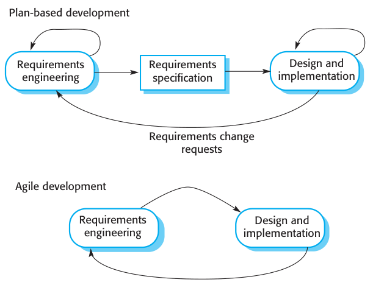
| Aspect维度 | Plan-driven计划驱动 | Agile敏捷 |
|---|---|---|
| Stages阶段组织 | Separate sequential stages with formal deliverables阶段边界清晰，各自产出正式文档 | Interleaved activities活动高度交织并行 |
| Where iteration occurs迭代所在位置 | Within each individual activity发生在各活动内部 | Across all activities simultaneously横跨所有活动进行 |
| Communication沟通方式 | Formal documents passed between stages依赖阶段间的正式书面文档交接 | Informal, face-to-face collaboration日常面对面的非正式沟通 |
| Requirements需求处理 | Specified completely upfront; late changes force specification and design rework开局完整定稿；变更迫使规格与设计返工 | Outline upfront, detailed iteratively; change is expected先定粗纲再逐轮细化，视变化为常态 |
| Delivery rhythm交付节奏 | One long end-to-end cycle单一长周期最终交付 | Working increments every 2–3 weeks每 2–3 周交付一个增量 |
| Customer role客户参与 | Concentrated at initial specification and final acceptance主要在开头定需求与末尾验收时参与 | Continuous involvement evaluating every increment全程高频介入并评审每轮增量 |
| Best fit适用场景 | Large, long-lived, critical systems; multi-team coordination大型、长寿、安全关键系统；多团队协同 | Small/medium products and internal business apps with shifting requirements需求多变的中小型软件产品与企业内部系统 |
In reality, both styles blend naturally: a plan-driven project may roll out requirements across planned increments, while an agile team may dedicate an early iteration to producing architectural models and baseline documents instead of code.实践中两者并非水火不容：计划驱动项目完全可以分阶段增量发布，而敏捷团队也能安排专门的迭代周期用来搭建体系结构模型与核心文档。
Step 2: the Agile Manifesto and the five principles第 2 步：敏捷宣言与五项原则
Core idea: The Agile Manifesto prioritizes people, working software, customer collaboration, and adaptability over rigid processes, heavy documentation, contracts, and fixed plans.核心思路：敏捷宣言将“人、可运行软件、客户协作与响应变化”置于优先地位，而非死守流程、冗长文档、合同条款和既定计划。
The Agile Manifesto（敏捷宣言）states that while the items on the right still carry value, agile teams value the items on the left more:敏捷宣言并非全盘否定右侧条目，而是强调当二者权衡时，团队更看重左侧：
| Valued more更看重 | Valued less相对次之 |
|---|---|
| Individuals and interactions个人与互动 | Processes and tools流程与工具 |
| Working software可工作的软件 | Comprehensive documentation详尽的文档 |
| Customer collaboration客户协作 | Contract negotiation合同谈判 |
| Responding to change响应变化 | Following a plan遵循既定计划 |
Across different frameworks (XP, Scrum, etc.), all agile methods rest on five shared principles:各类敏捷流派（如 XP、Scrum）虽然做法不同，但共同遵循以下五项敏捷原则：
| Principle原则 | Meaning核心含义 |
|---|---|
| Customer involvement客户参与 | Customers engage continuously throughout the project, supplying requirements, setting priorities, and evaluating each iteration客户全程深度介入，负责提出与排定需求优先级，并验收每轮迭代成果 |
| Embrace change拥抱变化 | Expect requirements to shift and structure both the process and code to absorb change cheaply坦然预期需求会变，并让过程与代码结构能够低成本接纳改动 |
| Incremental delivery增量交付 | Build and release software in small working increments whose scope is set just ahead of each cycle将软件切分为小增量持续构建交付，由客户为每轮增量确定具体范围 |
| Maintain simplicity保持简单 | Keep both the software design and the development process as simple as possible, actively stripping unnecessary complexity保持软件设计与开发流程精简克制，主动清除一切不必要的复杂性 |
| People not process人而非流程 | Trust skilled team members and empower them to choose their own working methods rather than enforcing rigid procedures充分发挥团队成员才干，允许小组自主决定工作方式而非套用僵化流程 |
Step 3: where agile works第 3 步：敏捷的最佳适用土壤
Agile methods have achieved their strongest track record in two settings:敏捷方法在以下两类项目中成功率最高：
- Commercial product development: A software vendor builds a small-to-medium product (such as most mobile and web apps) for market sale, where a product manager steers rapid releases.商业软件产品开发：企业面向市场打造中小型软件产品（绝大多数手机和 Web 应用皆属此类），由产品经理把控方向并快速迭代。
- In-house custom systems: An organization develops bespoke software internally with an active customer representative and minimal external regulators or multi-party dependencies.组织内部定制开发：单位内部自用定制系统，客户代表能全程在场对接，且外部监管或跨机构审批较少。
Both contexts succeed because a customer voice is continuously available, the system stands largely alone without complex parallel streams to coordinate, and a small co-located team can rely on quick, informal communication.这两类场景之所以如鱼得水，是因为客户能够随时沟通，系统相对独立而无需协调多条并行开发线，且同地小团队依靠高效口头交流即可推动工作。
Practice练习
Q1. (Definition) State the four value contrasts of the Agile Manifesto, and explain why "working software over comprehensive documentation" does not mean abandoning all documentation.Q1.（定义）写出敏捷宣言的四组价值对比，并解释为何“可工作的软件胜过详尽的文档”不等于完全不写文档。
Answer
The four value contrasts:四组价值对比：
- Individuals and interactions over processes and tools.个人与互动胜过流程与工具。
- Working software over comprehensive documentation.可工作的软件胜过详尽的文档。
- Customer collaboration over contract negotiation.客户协作胜过合同谈判。
- Responding to change over following a plan.响应变化胜过遵循计划。
Why documentation still matters: The manifesto acknowledges value in the right-hand items while prioritizing the left. Agile teams still produce lightweight, high-value artifacts—such as outline requirements, architectural sketches, or key user docs—whenever they serve a clear purpose; what agile eliminates is massive paperwork that goes unread or turns obsolete as soon as code evolves.为何仍需适量文档：宣言承认右侧条目亦有价值，只是优先级低于左侧。敏捷团队在确有必要时仍会产出轻量且持久有用的文档（如概要需求、核心体系结构图或用户手册），真正淘汰的是无人阅读或代码一改即作废的官僚文档。
Q2. (Explain) Explain how the five agile principles accelerate software development and deployment.Q2.（解释）说明五项敏捷原则如何共同加快软件开发与部署的速度。
Answer
- Customer involvement: On-demand answers settle requirement questions immediately instead of waiting weeks for formal document reviews.客户参与：疑问当场解决，省去漫长的正式文档往返与签字审批。
- Embrace change: Because no exhaustive specification is frozen upfront, incoming changes avoid expensive specification rewrites.拥抱变化：不预先冻结详尽规格，需求微调不会触发大面积文档与设计推翻重来。
- Incremental delivery: Useful increments ship every 2–3 weeks rather than waiting for a single big-bang release at project end.增量交付：每两三周即可上线一批高价值功能，实现早期投入使用。
- Maintain simplicity: Building only what is needed right now leaves less code and documentation to design, test, and modify.保持简单：拒绝过度设计，代码与文档体量小，开发、测试与改造成本同步降低。
- People not process: Autonomous teams decide directly face to face without losing time to bureaucratic sign-offs.人而非流程：赋权团队灵活推进，减少无谓的审批流转与会议内耗。
思路：紧扣“减等待、少返工、早上线”，把五条原则逐条挂钩。
Q3. (Application) Explain why an agile approach fits a final-year university team project.Q3.（应用）解释为何敏捷方法非常适合大学本科毕业设计（团队项目）。
Answer
A final-year project starts with vague requirements that evolve as students receive supervisor feedback. The small team works closely together—ideal for informal communication—while the supervisor acts as an accessible customer evaluating each increment. Because the academic deadline is fixed, prioritizing must-have features ensures a working, demonstrable system is ready on time even if lower-priority extras are dropped, without burning scarce weeks on unread specs beyond the final report.毕业设计初期需求往往模糊，且随导师反馈持续调整。小团队协作密切，适合非正式高效沟通，导师恰好充当随叫随到的客户角色逐轮把关增量。面对刚性截稿日期，按优先级先行交付核心功能能保证按时交出可演示的完整系统，同时避免把宝贵时间耗在无人阅读的繁琐文档上。
Extreme Programming and user stories ★★★极限编程与用户故事
Goal. Identify the ten Extreme Programming (XP) practices, map each to the agile principle it supports, and write a story card decomposed into task cards.目标。掌握极限编程（XP）的十项核心实践及其对应的敏捷原则，并能编写故事卡与拆解任务卡。
Step 1: the philosophy of Extreme Programming第 1 步：极限编程的核心思想
Core idea: Extreme Programming (XP) takes recognized engineering habits—testing, reviewing, simplifying, integrating—and pushes them to the extreme by practicing them continuously.核心思路：极限编程（XP）把已被证明有效的工程好习惯（如测试、代码审查、简化、集成）推向极致——不再阶段性突击，而是每时每刻持续践行。
In Extreme Programming (XP)（极限编程）, a team can build, integrate, and verify several working versions of a system in a single day. Customer needs are captured as short user stories and broken into engineering tasks; programmers work in pairs, write automated tests before production code, ensure the entire test suite passes on every integration, and ship frequent small releases.采用极限编程（XP）的团队甚至能在一天内多次完成系统的构建、集成与验证。团队将需求写为用户故事并拆成开发任务，程序员两两结对编写“测试先行”的代码，每次合并代码都必须跑通全部测试，并以短周期持续向外小步发布。
Select user stories for release → Break stories into tasks → Plan release
→ Develop, integrate & test (TDD + pair) → Release software → Evaluate with customer → Next release
Step 2: the ten XP practices第 2 步：十项极限编程实践
Each XP practice translates one or two of the five agile principles into concrete daily action; mapping practices back to principles is a frequent exam question.XP 的十项实践将五条敏捷原则落到了日常动作上，而“某实践服务于哪条原则”正是考试高频考点：
| Practice实践 | What it means具体做法 | Principle served支撑的敏捷原则 |
|---|---|---|
| Incremental planning增量计划 | Capture requirements on story cards; choose stories for each release based on priority and available time, then split them into tasks将需求写在故事卡上，每次发布按优先级与工时挑选故事并拆解为任务 | Incremental delivery增量交付 |
| Small releases小型发布 | Release the minimal useful feature set early, then deliver frequent incremental updates先发布最小可用功能集，随后高频增量迭代 | Incremental delivery; embrace change增量交付；拥抱变化 |
| On-site customer现场客户 | Embed an end-user representative full time with the team to clarify requirements and define acceptance tests客户代表全职驻场对接，即时答疑并参与制定验收测试 | Customer involvement客户参与 |
| Pair programming结对编程 | Two programmers share one workstation, writing and reviewing code together continuously两名程序员共用一台电脑实时编写与审查代码 | People not process人而非流程 |
| Collective ownership（集体代码所有权） | Pairs rotate across all modules so no "knowledge silos" form and any developer may improve any code结对小组轮流负责全系统模块，不留“个人专有领地”，人人皆可优化任意代码 | People not process人而非流程 |
| Sustainable pace可持续的工作节奏 | Avoid sustained overtime, which degrades code quality and medium-term productivity拒绝长期恶性加班，避免透支代码质量与中期研发效率 | People not process人而非流程 |
| Test-first development测试先行开发 | Write automated unit tests for new functionality before implementing the production code先编写自动化单元测试，再写实现功能的代码 | Embrace change拥抱变化 |
| Continuous integration（持续集成） | Integrate every completed task immediately into the main build and require all unit tests to pass每完成一个小任务就立刻合入主干构建，且必须跑通全套单元测试 | Embrace change拥抱变化 |
| Refactoring重构 | Clean up and simplify existing code continuously whenever structural flaws are spotted一旦发现结构冗余或混乱便随手整理优化，不堆积技术债 | Embrace change; maintain simplicity拥抱变化；保持简单 |
| Simple design简单设计 | Build only the design needed for today's requirements without speculative over-engineering只做恰好满足当前需求的设计，不为臆想中的未来需求过度设计 | Maintain simplicity保持简单 |
Think of collective ownership like a shared kitchen where anyone can organize any cupboard so there is never "the only person who knows where the spoons are." In industry, teams seldom adopt all ten practices strictly at once; instead, they select the practices that fit their context—frequently pairing XP engineering practices with Scrum project management.集体代码所有权就像共用厨房——谁都可以整理橱柜，绝不会出现“离了某人就没人找得到勺子”的窘境。企业实际落地时很少生搬全部十项，往往按需挑选，尤其是把 XP 的编码实践与 Scrum 的项目管理结合使用。
Step 3: user stories and task cards第 3 步：用户故事与任务卡
Core idea: A user story captures one concrete usage scenario in the customer's own words on a card, which developers then split into small, testable engineering tasks.核心思路：用户故事是用客户大白话写在卡片上的具体使用场景，随后由开发团队拆分为可估算、可单测的小型工程任务。
Because agile projects skip formal upfront specification phases, a user story（用户故事）serves as a lightweight scenario describing what a user wants to accomplish, written jointly by the customer and team on a story card:敏捷开发省去独立的前置需求文档阶段，改由客户与团队共同在故事卡上写下一个个用户故事（真实的使用片段），并按以下流程推进：
- Break each story into concrete implementation tasks, estimate effort, and clarify ambiguities through direct conversation with the customer.将每张故事卡拆解成开发任务并估算工时，借讨论过程顺带理清需求模糊点。
- Have the customer prioritize stories so the highest-value capabilities ship first (often within ~2-week increments).由客户按业务价值排定优先级，优先开发最核心且约两周内可交付的故事。
- Update or discard unimplemented stories freely when needs change; requests affecting already-delivered features become new story cards.需求变动时直接增删或改写尚未开发的故事；针对已上线部分的修改则另立新故事卡。

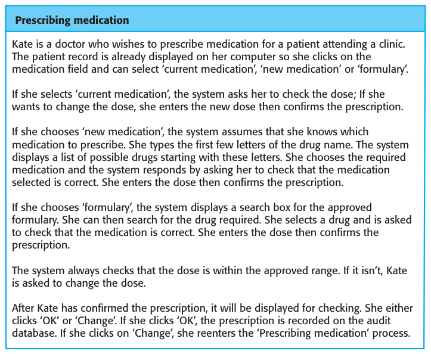

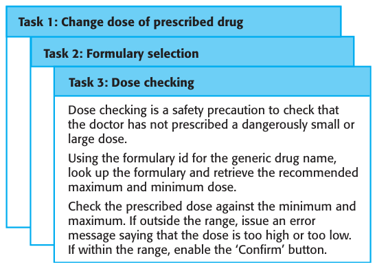
In short, a story card describes what the user does, whereas a task card defines what developers build—small enough to estimate reliably and cover with unit tests. While stories encourage active user participation, their main weakness is completeness: nobody can easily tell whether a stack of cards covers every essential requirement, and experienced users routinely omit steps they consider obvious.简言之，故事卡写“用户要干什么”，任务卡写“程序员要实现什么”，且颗粒度应细到能直接编写单元测试。用户故事虽亲切易懂、利于客户参与，但其天生弱点在于完备性——没人能轻易判断手头的卡片是否涵盖了全部必要需求，老练用户更常跳过自以为不言自明的操作步骤。
Practice练习
Q1. (Design) Write a story card for a student renewing a borrowed library book online, and break it into three task cards.Q1.（设计）为“学生在线续借图书馆图书”编写一张故事卡，并将其拆分为三项任务。
Answer
Story card — Renewing a book: Sam logs into the library portal, opens "My loans," and clicks "Renew" next to a book due tomorrow. The system verifies that no other patron has reserved the book and that Sam's unpaid fines are below the limit; if both pass, it extends the due date by one loan period and displays a confirmation, otherwise explaining why renewal was refused.故事卡——续借图书：学生 Sam 登录图书馆门户进入“我的借阅”，点击明天到期图书旁的“续借”按钮。系统校验该书无人预约且 Sam 欠费低于上限；通过则顺延一个借期并提示成功，否则明确说明拒绝原因。
Tasks:拆分任务：
- Display active loans with due dates and a Renew button.展示当前借阅列表、到期日与“续借”按钮。
- Check reservation status and unpaid-fine thresholds against borrowing rules.校验图书预约状态及欠费上限规则。
- Update the due date in the database and display the confirmation or refusal message.更新借阅到期日，并展示成功确认或拒借提示。
Q2. (Discuss) Give two advantages and two disadvantages of expressing requirements as stories on cards.Q2.（讨论）说明用故事卡表达需求的两项优点和两项缺点。
Answer
- Advantages: (1) Users understand everyday narrative scenarios far better than technical requirements documents, encouraging active participation; (2) small cards are inexpensive to estimate, split into tasks, prioritize, and reprioritize across releases.优点：(1) 叙事性场景贴近日常语言，用户比看正式规格更易理解并乐于提需求；(2) 故事颗粒度小，便于拆解任务、排优先级及跨版本灵活调整。
- Disadvantages: (1) Completeness is difficult to verify because gaps across scattered cards are hard to spot and experts skip obvious steps; (2) cards capture non-functional requirements poorly and offer weak documentation for long-term maintenance.缺点：(1) 完备性难以保证，零散卡片间易漏掉全局需求且专家常略去习以为常的步骤；(2) 难以承载非功能需求，也难以支撑后续长期系统维护。
Q3. (Recall) Match each agile principle to its supporting XP practices: incremental delivery, customer involvement, people not process, embrace change, and maintain simplicity.Q3.（记忆）列出分别支撑以下五条敏捷原则的 XP 实践：增量交付、客户参与、人而非流程、拥抱变化、保持简单。
Answer
- Incremental delivery: Small releases; incremental planning from story cards.增量交付：小型发布；基于故事卡的增量计划。
- Customer involvement: On-site customer (defining requirements and acceptance tests).客户参与：现场客户（全职沟通并制定验收测试）。
- People not process: Pair programming; collective ownership; sustainable pace.人而非流程：结对编程；集体代码所有权；可持续节奏。
- Embrace change: Small releases; test-first development; refactoring; continuous integration.拥抱变化：小型发布；测试先行开发；重构；持续集成。
- Maintain simplicity: Continuous refactoring; simple design.保持简单：持续重构；简单设计。
易错：refactoring 既属于“拥抱变化”，又属于“保持简单”。
Refactoring, test-first development and pair programming ★★★重构、测试先行开发与结对编程
Goal. Explain the mechanics, benefits, and limits of refactoring, test-first development, and pair programming, design boundary test cases from rules, and assess what a passing test suite proves.目标。理解重构、测试先行开发与结对编程的机制、收益及局限，能依据业务规则设计边界测试用例，并准确判断“测试全部通过”的证明边界。
Step 1: refactoring第 1 步：重构
Core idea: Refactoring continuously tidies and simplifies internal code structure without altering its external behavior, keeping the codebase healthy for future changes.核心思路：重构在不改变软件外部功能的前提下持续整理并简化内部代码结构，使系统始终保持易于修改的整洁状态。
Just as a chef who wipes the counter and returns utensils while cooking stays fast all evening while one who never tidies slows down by the hour, software decays if developers pile on quick fixes without cleanup. Traditional engineering tries to design for change by predicting future extensions upfront—often wasting effort on guesses that never materialize. XP replaces speculative generality with continuous refactoring（重构）, tackling structural rot as soon as it appears.就像做菜随手擦台面、归位厨具才能一直高效，只顾堆叠新需求而不清理很快会让代码步履维艰。传统工程讲究提前“为变化而设计”，猜测未来扩展方向往往做无用功；XP 则靠持续重构，一旦嗅到结构坏味道便立刻清理。
Repeated local edits naturally introduce duplicated logic, tangled dependencies, and awkward naming. Common refactorings include eliminating duplicate code, renaming classes and methods for clarity, and replacing ad-hoc snippets with clean library calls. Because a refactoring must change structure without changing observable behavior, every previously passing automated test must still pass afterward—making test automation the safety net for refactoring. In practice, however, teams often postpone refactoring under schedule pressure, and major architectural shifts cannot be achieved through local refactoring alone.频繁的局部修补容易产生重复代码与耦合混乱，典型重构手段包括抽取重复逻辑、清晰重命名以及改用标准库函数。由于重构只能改结构、不能改行为，原先通过的自动化测试在重构后必须全部保持通过——自动化测试正是重构的安全网。但在现实交付高压下重构常被一再推迟，且涉及全局架构的大改也无法仅靠局部重构完成。
Step 2: test-first development第 2 步：测试先行开发
Core idea: Test-first development writes automated tests before production code, turning each test into an unambiguous executable specification.核心思路：测试先行开发坚持“先写测试、后写代码”，让测试用例直接充当毫无歧义的可执行规格说明。
Because incremental development lacks a formal upfront specification from which separate testers could derive test suites, XP makes automated testing central through test-first development（测试先行开发）. Writing tests before code yields four major benefits:增量过程没有可供测试团队照搬的厚重规格文档，XP 便通过测试先行开发把测试前置为开发主轴，带来四大收益：
- Tests act as specifications: Defining inputs and expected outputs locks down exact interfaces and edge behavior before coding starts.测试即规格：在写代码前敲定接口签名与期望输出，精准界定边界行为。
- Ambiguities surface early: Programmers cannot write a valid test without first clarifying vague requirements with the customer.提前消灭歧义：不把规则问清楚就写不出断言，迫使开发者在编码前搞懂需求。
- No test lag: Fast coders can no longer outrun testing and skip checks under deadline pressure.消除测试滞后：杜绝“先赶代码、测试回头再补，最后干脆砍掉测试”的拖延现象。
- Direct requirement traceability: User stories break into tasks, and each task maps directly to one or more automated unit tests.清晰映射需求：用户故事拆为任务，每项任务直接对应一组可自动运行的单元测试。
Customers also collaborate to define acceptance tests（验收测试）for upcoming stories using realistic business data. After every code addition, the full automated test suite runs immediately to catch regressions right away.此外，客户还会参与编写基于真实业务数据的验收测试；每当新功能合入，全量自动化测试集立即重跑，第一时间拦截回归缺陷。
Despite its power, test-first development has three important limits:然而，测试先行开发也存在三项明显局限：
- Developer shortcuts: Programmers generally prefer building features over writing tests and may skip tedious exception paths.易走捷径：程序员往往更热衷于写功能代码而非测试，容易跳过繁琐的异常分支校验。
- Hard-to-automate logic: Visual layout, display formatting, and multi-screen interactive flows are difficult to verify incrementally via unit tests.部分逻辑难单测：UI 排版、显示细节与跨页面交互流程很难用单元测试逐项自动化覆盖。
- Illusion of completeness: A large, green test suite can foster false confidence while critical execution paths or requirements remain completely untested.完备性幻觉：成百上千条全绿的测试容易让人误以为万无一失，实则核心路径或关键需求可能根本没测到。
Step 3: pair programming第 3 步：结对编程
Core idea: Pair programming puts two developers at one workstation—rotating partners regularly—so every line of code is reviewed as it is written and knowledge spreads across the team.核心思路：结对编程让两名程序员共享一台电脑并定期轮换搭档，实现逐行实时审查与全队知识共享。
In pair programming（结对编程）, two programmers collaborate at a single computer, rotating partners frequently so everyone gains familiarity with the entire codebase. This yields three primary benefits:在结对编程中，两人同坐一机协作编码并不断轮换搭档，使每位成员都了解整个系统，主要带来三方面优势：
- Collective ownership and egoless code: Because everyone touches every area in pairs, no single person becomes a bottleneck or takes isolated blame for bugs.强化集体所有权（无我编程）：人人轮流修改各处代码，既不形成“专家孤岛”，出问题也由团队共同面对。
- Continuous informal review: Every line receives two sets of eyes on the spot; while less rigorous than formal Fagan inspections, it catches many bugs immediately without scheduling delays.即时非正式审查：每行代码当场经两人把关，虽不如正式代码审查严苛，却零等待且能早早拦下低级失误。
- Support for refactoring: Refactoring requires effort today for cleaner code tomorrow—a lone coder may skip it under stress, whereas a pair partner benefits immediately and encourages cleanup.促进持续重构：独自编码时常因赶工跳过重构，但在结对模式下，搭档立刻就能享受到整洁代码的好处，从而积极支持顺手清理。
Critics object that doubling staffing per computer halves raw typing speed, yet empirical evidence is mixed: student studies show productivity comparable to solo work thanks to reduced debugging and rework, whereas studies of experienced engineers show a net throughput drop not fully offset by quality gains. Consequently, many agile organizations combine targeted pairing on complex tasks with solo coding on routine ones.业界对结对编程的最大质疑是“双倍人力是否等于产能减半”，目前实证研究尚无定论：针对学生群体的实验表明，因返工与调试大幅减少，结对总效率几乎不输两人单干；而针对资深工程师的研究则发现产出确有下降，质量提升未能完全抵消人力翻倍成本。因此现实团队多采取“核心复杂模块结对 + 常规任务单干”的折中策略。
Practice练习
Q1. (Trace) A syrup label permits a single dose of 5–15 mL and a daily total of 10–40 mL. Give the expected output for each input (singleDose mL, dosesPerDay): (10, 3), (15, 3), (4, 4), (5, 1), (8, 5), (12, 4).Q1.（手工演算）某糖浆说明书规定单次剂量为 5–15 mL，每日总量为 10–40 mL。写出下列输入 (单次剂量 mL, 每日次数) 的预期检查结果：(10, 3)、(15, 3)、(4, 4)、(5, 1)、(8, 5)、(12, 4)。
Answer
- (10, 3): Daily total = 30 mL → OK (both rules satisfied).(10, 3)：日总量 30 mL → OK（均在范围内）。
- (15, 3): Single dose = 15 mL (valid upper boundary), but daily total = 45 mL > 40 → Error: daily total too high.(15, 3)：单次剂量踩在合法上界，但日总量 45 mL 超限 → 错误：日总量过高。
- (4, 4): Single dose = 4 mL < 5 (total 16 mL is valid) → Error: single dose too low.(4, 4)：日总量 16 mL 合规，但单次剂量低于 5 mL → 错误：单次剂量过低。
- (5, 1): Single dose = 5 mL (valid lower boundary), but daily total = 5 mL < 10 → Error: daily total too low.(5, 1)：单次剂量踩在合法下界，但日总量 5 mL 低于 10 mL → 错误：日总量过低。
- (8, 5): Daily total = 40 mL (valid upper boundary) → OK.(8, 5)：日总量恰好 40 mL 上界 → OK。
- (12, 4): Daily total = 48 mL > 40 → Error: daily total too high.(12, 4)：日总量 48 mL 超限 → 错误：日总量过高。
易错：区间端点（边界值）属于合法范围；设计用例时每次只违背一条规则，判定才无歧义。
Q2. (Explain) A system has 400 automated unit tests and all 400 pass. Explain how this passing suite could still compromise system quality.Q2.（解释）某系统有 400 个自动化测试且全部通过，解释为何该测试套件仍可能损害软件质量。
Answer
A 100% pass rate confirms only that the written assertions succeed—it can harm quality in four ways:全数通过只证明“已写出的断言跑通”，可能从四个方面掩盖并损害质量：
- False confidence despite poor coverage: Test count reveals nothing about code or requirement coverage; crucial exception handlers and edge conditions may never execute.覆盖盲区与虚假信心：测试数量不代表覆盖率，关键异常分支与边界条件可能从未被执行。
- Developer shortcuts and blind spots: Developers tend to skip tedious negative tests, and if the same author writes both tests and code, a misunderstood requirement is baked into both.同源盲点与偷懒：作者若误解需求，代码与测试会同步出错并“双双通过”；程序员也容易跳过繁琐的异常用例。
- Untestable interactive areas: Complex UI display logic and multi-screen workflows resist incremental unit testing and remain unverified.难测区域失守：复杂界面展示与跨页业务流难以靠单元单测覆盖，容易留下真空。
Remedies: Review test suites independently, measure coverage, add post-development integration tests, and run customer acceptance tests.对策：独立评审测试用例、跟踪覆盖率、补充集成测试与客户验收测试。
Q3. (Calculation) A feature takes one solo programmer 20 h to code plus 8 h of post-test repair. A pair completes coding in 12 h elapsed time and requires 2 h of single-person repair.Q3.（计算）某功能单人编程需 20 h，测试后修 bug 需 8 h；若结对开发，两人共用 12 h 完成编码，后续仅需一人花 2 h 修复。
- Compute total person-hours per feature for solo vs. pair programming.分别计算单人与结对方式的总人时消耗。
- Find the pair elapsed coding time at which total person-hours break even.求出总人时相等时结对编程的日历耗时上限。
- Give four reasons why a pair can achieve more than half the output rate of two solo developers.说明为何结对编程的有效产出率能高于两名独立程序员之和的一半（给出四条理由）。
Answer
- Solo: \(20 + 8 = 28\) person-hours. Pair: \(2 \times 12 + 2 = 26\) person-hours—a net saving of 2 person-hours (7%).单人：\(20 + 8 = 28\) 人时；结对：\(2 \times 12 + 2 = 26\) 人时，反倒省下 2 人时（7%）。
- Break-even: Solving \(2h + 2 = 28\) yields \(h = 13\) h; pairing costs no more than solo work up to 13 h (65% of solo coding time).盈亏平衡点：解方程 \(2h + 2 = 28\) 得 \(h = 13\) h，即结对耗时只要不超过 13 h（单人编码时间的 65%），总成本就不高于单干。
- Four reasons for higher-than-50% productivity: (1) Upfront design discussion prevents false starts and rework; (2) continuous real-time review catches defects before testing; (3) one partner anticipates edge cases or checks APIs while the other types; (4) shared codebase knowledge avoids getting stuck and keeps focus high with fewer distractions.效率超半的四大原因：(1) 边讨论边设计少走弯路；(2) 实时审查大幅削减后期调试修 bug 时间；(3) 导航员提前思考边界与查文档，分工互补；(4) 知识共享减少卡壳，相互督促降低分心拖延。
Scrum: agile project management ★★★Scrum：敏捷项目管理
Goal. Identify the Scrum roles and artifacts, trace the sprint cycle, and forecast remaining sprints and calendar weeks from team velocity.目标。掌握 Scrum 的角色与核心工件，理清冲刺周期流程，并能基于团队速度预测剩余冲刺数与工期。
Step 1: why Scrum, and who is who第 1 步：为何引入 Scrum，以及核心角色与工件
Core idea: Scrum wraps agile development in fixed-length timeboxes (sprints) with clear roles and artifacts, giving managers external visibility without dictating how code is written.核心思路：Scrum 用固定时长的“时间盒”（冲刺）配合明确的角色和待办工件来管理敏捷节奏，既不限制具体编码实践，又向管理层提供了清晰的进度可见性。
Traditional managers need clear visibility into what is being delivered, when, and by whom—something informal ad-hoc agile work often lacks. Scrum bridges that gap: it honors the five agile principles while prescribing no specific coding practices (making it easy to combine with XP or existing workflows), which is why it has become the most widely adopted agile management framework.传统管理层迫切需要知道“何时能交付什么、由谁负责”，而完全非正式的敏捷团队往往缺乏这种外部透明度。Scrum 正是为了弥合这一矛盾：它遵循敏捷原则却不绑定具体编码规范，因而极易融入现有研发体系（常与 XP 搭配），成为业界最普及的敏捷管理框架。
| Role / Artifact / Event角色 / 工件 / 活动 | Meaning核心职责与含义 |
|---|---|
| Development team开发团队 | A self-organizing group of at most seven developers who collectively build the software and essential project deliverables不超过 7 人的自组织开发小组，共同负责交付软件与必要项目文档 |
| Product backlog（产品待办列表） | Master prioritized list of work items: features, requirements, user stories, and supporting tasks like architecture or documentation项目全量待办条目清单，涵盖功能、需求、用户故事以及体系结构设计、文档等支撑任务 |
| Product Owner（产品负责人） | The individual (or small group)—such as a customer, product manager, or stakeholder rep—who gathers requirements, ranks backlog priorities, and reviews progress to maximize business value代表客户或业务方收集需求、持续排定待办优先级并验收结果，确保项目贴合核心商业诉求 |
| ScrumMaster（Scrum 主管） | Coaches the team on Scrum, removes organizational obstacles, and shields developers from outside interference—acting as a facilitator, not a traditional project manager保障 Scrum 规则落地、疏通跨部门障碍并保护团队免受外部干扰；职责是教练与协调者，而非传统意义上的项目经理 |
| Sprint（冲刺） | A fixed-length development iteration, typically lasting 2–4 weeks固定周期的开发迭代，通常为 2–4 周 |
| Sprint backlog（冲刺待办列表） | The subset of product backlog items selected and committed to for the current sprint从产品待办列表中挑选并纳入当前冲刺的任务子集 |
| Velocity（速度） | An empirical estimate of how many story points the team actually completes per sprint, used for forecasting and tracking improvement团队单次冲刺实际完成故事点数的经验均值，用于后续工期预测与效率跟踪 |
| Daily Scrum（每日站会） | A brief daily team sync—ideally face to face—to inspect progress, surface blockers, and coordinate the day's work每天简短碰头的团队站会（最好面对面），用于同步进展、暴露阻碍并协同当天工作 |
| Potentially shippable increment潜在可交付增量 | Working software produced by a sprint in a finished, tested state ready for integration—though not always reached in every real sprint每次冲刺结束产出的已完成且经测试的可用软件版本，理论上可直接集成发布（实践中未必每次都能完全达成） |
Think of a household organizing its week on a sticky-note board: the master shopping/chore list is the product backlog, the notes pulled for this week form the sprint backlog, and a quick five-minute morning check-in is the daily Scrum.打个生活比方：全家的总待办墙是产品待办列表，本周撕下来贴到桌面准备干完的几张便签是冲刺待办列表，每天早晨五分钟的对账碰头就是每日站会。
Step 2: the sprint cycle第 2 步：冲刺周期运转流程
Core idea: Each sprint runs as a strict timebox—select what fits current velocity, coordinate daily without top-down orders, review the working output, and never extend the deadline.核心思路：每个冲刺都是刚性时间盒——按历史速度认领任务、每日自组织协同、按时评审产出，绝不为了赶完任务而延长周期。
Product backlog → Prioritize & select items → Sprint backlog → Sprint (Daily Scrum) → Sprint review → Potentially shippable increment
- Maintain the product backlog: Holds features alongside prototyping, architecture, and documentation items, refined continuously by the Product Owner to keep near-term entries detailed.维护产品待办列表：收录功能及原型、体系结构、文档等任务，由产品负责人持续细化近期高优条目。
- Prioritize: At the start of each sprint, the Product Owner ranks items by current business value.排序：每次冲刺启动前，产品负责人依据最新业务价值重新排定优先级。
- Select and estimate: Guided by its historical velocity, the entire team estimates effort and pulls the top-priority items it expects to finish into the sprint backlog.认领与估算：团队结合历史速度评估工作量，自上而下挑选力所能及的高优条目进入冲刺待办列表。
- Execute the sprint: Over 2–4 weeks, the team self-organizes who builds what. A sprint is never extended; any incomplete items return to the product backlog for reprioritization.执行冲刺：在 2–4 周内由开发团队自主认领任务推进。冲刺周期绝不顺延，到期未做完的条目一律退回产品待办列表重新排期。
- Hold the Daily Scrum: Each member reports yesterday's progress, current blockers, and today's plan, updating the shared Scrum board while the team replans together (the ScrumMaster facilitates rather than issuing commands).每日站会：成员依次同步昨日成果、眼下阻碍与今日计划，更新任务看板并协同调整——Scrum 主管只协调不发号施令。
- Sprint review: The team demonstrates the potentially shippable increment to stakeholders and reflects on how to improve its process in the next cycle.冲刺评审与回顾：向利益相关者演示潜在可交付增量，并复盘团队下一轮协作的改进空间。
Step 3: planning with velocity第 3 步：基于速度的进度预测
Core idea: Team velocity averages recently completed story points per sprint, and dividing remaining backlog points by velocity (rounded up) forecasts how many sprints remain.核心思路：速度是近期各冲刺“实际完成”的故事点均值；将剩余待办总点数除以速度并向上取整，即可估算还需几个冲刺。
Step 4: distributed Scrum第 4 步：分布式 Scrum
Although Scrum assumes a single co-located room, companies often use offshore teams for lower costs, specialist expertise, and round-the-clock work. Adapting Scrum to distributed sites requires five supporting conditions:Scrum 原先假定成员同处一室，但企业为降低成本、吸纳专才或跨时区接力常采用分布式离岸团队。让分布式 Scrum 顺利运转需要落实五项条件：
- A local ScrumMaster sits directly with each development team to spot and resolve daily blockers.每个开发团队现场须配备 Scrum 主管，贴身察觉并解决日常阻碍。
- The Product Owner visits offshore teams periodically to build trust, supplemented by regular video conferences.产品负责人定期实地走访各团队以建立信任，日常辅以视频会议沟通。
- All sites share one unified development and tooling environment.所有站点共用同一套研发与工具平台。
- Instant messaging and video calls keep informal communication flowing across sites.依靠即时通讯与视频通话维系便捷的非正式交流。
- Continuous integration keeps the real build and test state visible to everyone at all times.通过持续集成让所有站点随时看清产品真实集成与测试状态。
Practice练习
Q1. (Calculation) A product backlog holds 85 story points and the team's velocity is 17 points per 3-week sprint.Q1.（计算）产品待办列表现有 85 个故事点，团队速度为每个 3 周冲刺 17 点。
- How many sprints and calendar weeks are needed?共需多少个冲刺及多少周？
- If the Product Owner adds 10 points of new work, compute the new forecast and explain how Scrum handles it.若产品负责人新增 10 点需求，给出新预测并说明 Scrum 如何应对。
Answer
- \(N = \lceil 85 / 17 \rceil = 5\) sprints, i.e., \(5 \times 3 = 15\) weeks.\(N = \lceil 85 / 17 \rceil = 5\) 个冲刺，即 \(5 \times 3 = 15\) 周。
- With \(W = 95\), \(N = \lceil 95 / 17 \rceil = \lceil 5.59 \rceil = 6\) sprints (18 weeks). Adding just 12% more scope adds an entire 3-week sprint because work spills past sprint 5. Because sprint length is fixed, keeping the 15-week deadline requires the Product Owner to drop 10 points of lowest-priority scope.当 \(W = 95\) 时，\(N = \lceil 95 / 17 \rceil = \lceil 5.59 \rceil = 6\) 个冲刺（18 周）。哪怕仅多出 12% 工作量，也会溢出并多占一整个 3 周冲刺。由于冲刺不能延期，若要死守 15 周档期，产品负责人必须砍掉 10 点最低优先级条目。
易错：记住永远向上取整，不可四舍五入。
Q2. (Compare) Compare Scrum with conventional plan-based project management across four dimensions: allocating staff, estimating cost, team cohesion, and handling team membership changes.Q2.（对比）从人员分配、成本估算、团队凝聚力和成员变动应对四个维度比较 Scrum 与传统计划驱动项目管理。
Answer
| Aspect维度 | Plan-based management计划驱动管理 | Scrum |
|---|---|---|
| Allocating people人员分配 | A manager assigns specialists to scheduled work-breakdown tasks upfront项目经理按预先排定的工作分解结构将人员指派到具体任务 | A small self-organizing team commits to tasks each sprint; the Product Owner sets priorities only团队在每轮冲刺计划会上自组织认领任务，产品负责人仅决定优先级 |
| Estimating cost成本估算 | Full scope is estimated upfront from specifications and tracked against baseline plans开局依据完整规格估算全项目成本并对照基线监控 | Cost equals sprint count (\(\lceil W/v \rceil\)) times sprint team cost; estimates update every sprint while scope remains variable成本由预测冲刺数乘以单轮团队成本得出，随速度每轮动态校准，通过调整范围控成本 |
| Team cohesion团队凝聚力 | Formal roles and document handoffs often isolate members across phases按角色与阶段书面交接，成员归属感较弱，需刻意建设团队凝聚力 | Daily Scrums, shared boards, and collective ownership foster high visibility, morale, and shared goals每日站会、共享看板与共同目标带来高透明度与强凝聚力 |
| Membership changes成员变动应对 | Design and requirement documents allow easier onboarding and task reassignment文档完备，新人可看文档接手，便于调配替换 | Knowledge is largely tacit inside the team, so turnover hurts velocity and requires onboarding time知识多隐含在团队默契中，人员流失会明显拉低速度并拉长适应期 |
Q3. (Application) A team tracks a 10-working-day sprint containing 40 story points using a burndown chart（燃尽图）. After day 4, 12 points are completed. Is the team on track, and how should it respond?Q3.（应用）某团队用燃尽图追踪为期 10 个工作日、共 40 故事点的冲刺进度。第 4 天结束时已完成 12 点。团队是否按计划推进？应如何处理？
Answer
- Status check: The ideal burndown drops linearly by \(40 / 10 = 4\) points/day (\(\text{remaining}(d) = 40 - 4d\)). At day 4, ideal remaining work is \(40 - 16 = 24\) points, whereas actual remaining work is \(40 - 12 = 28\) points—4 points (one full day) behind schedule.进度诊断：理想燃尽线每天均匀下降 4 点（即 \(40 - 4d\)），第 4 天应剩 24 点，但实际还剩 \(40 - 12 = 28\) 点，已落后理想进度整整 1 天。
- Projection & action: At the current pace of \(12 / 4 = 3\) points/day, the team will finish only 30 points (leaving 10 undone); catching up requires 4.7 points/day (+17%). The team raises blockers at the next Daily Scrum, removes obstacles, and works with the Product Owner to drop or split ~10 points of lowest-priority scope—never extending the sprint, and returning unfinished items to the product backlog.推算与对策：按目前日均 3 点速度，10 天只能做完 30 点（剩 10 点）；追回进度需提速至 4.7 点/天。团队应在次日站会暴露阻碍并合力清障，同时与产品负责人协商剥离或拆分约 10 点最低优条目回退至产品待办列表——绝不延长冲刺时间。
思路：实际剩余曲线高于理想直线即表示落后；应对策略永远是“清障 + 找 PO 减范围”，不延日期。
Scaling agile methods ★★敏捷方法的规模化
Goal. Explain why pure agile struggles on large systems, identify the plan-based elements added when scaling up, select a fitting approach for a scenario, and compute team communication channels.目标。阐明纯敏捷用于大型系统的瓶颈，掌握规模化时需引入的计划驱动要素，能针对复杂场景选型并计算沟通渠道数。
Agile practices were originally crafted for a single small team working in one room. Applying them to large multi-team systems is called scaling up（规模扩大），whereas rolling agile out across a large traditional enterprise is called scaling out（组织内推广）—and both stretch agile's core assumptions around informal alignment and minimal paperwork.敏捷原本是为“同处一室的小团队”量身定制的。将其应用于单团队拿不下的大型复杂系统称为规模扩大，而将其推广至历史悠久的大型传统企业称为组织内推广——这两种场景都会冲击敏捷依赖非正式沟通与极简文档的前提假设。
Step 1: problems for large systems第 1 步：大型系统面临的挑战
- Contracts: Fixed-price contracts require a defined requirements specification, which agile skips; agile projects therefore rely on time-and-materials contracts that invite disputes over blame and cost if trouble strikes.合同困境：传统固定总价合同要求明确的需求说明书，而敏捷没有；改用按工时计费合同一旦延期或出故障，甲乙双方极易就责任和额外费用发生纠纷。
- Long-term maintenance: Agile focuses on new development; over a 10–15 year lifetime, lacking coherent requirements documents makes impact assessment hard, full-time customer reps move on, and tacit knowledge vanishes when teams disband.长期维护困难：缺乏系统级需求与设计文档使日后评估改动影响十分棘手；长期保留全职客户代表不现实，原团队解散后隐性知识也随之流失。
- Distributed teams: Large systems span multiple locations and time zones, breaking face-to-face co-location.跨地域分布式协作：多地多时区团队无法依赖同室口头交流。
Even the five agile principles run into friction inside large organizations:在大型组织中，五条敏捷原则同样会遭遇落地阻力：
| Principle原则 | Difficulty in large organizations实践难点 |
|---|---|
| Customer involvement客户参与 | Hard to find a single representative who has time and speaks for all stakeholders—especially external regulators难以找到有时间且能代表全体利益相关者（尤其是外部监管机构）的单一代表 |
| Embrace change拥抱变化 | When dozens of stakeholder groups disagree, prioritizing incoming changes becomes political and slow众多利益方诉求冲突时，变更优先级极难迅速拍板 |
| Incremental delivery增量交付 | Two-week sprint plans clash with long-term marketing and procurement roadmaps needing feature commitments months ahead短周期迭代规划难以契合须提前数月锁定功能清单的市场营销与采购节奏 |
| Maintain simplicity保持简单 | Under intense schedule pressure across dependent teams, time for cleanup and simplification gets squeezed out跨团队工期压力下，简化与重构时间极易被挤压 |
| People not process人而非流程 | Large companies have wide skill variance, and some staff struggle with high-intensity collaboration大组织人员能力参差不齐，部分员工不适应高强度自组织协同 |
Step 2: choosing the approach第 2 步：如何选择开发方法
Core idea: Evaluate three groups of factors—the system, the team, and the organization; most large real-world projects adopt a hybrid of plan-driven structure and agile execution.核心思路：决策时从“系统、团队、组织”三组问题逐一权衡；现实中的大型敏捷项目往往兼具计划驱动骨架与敏捷执行方式。

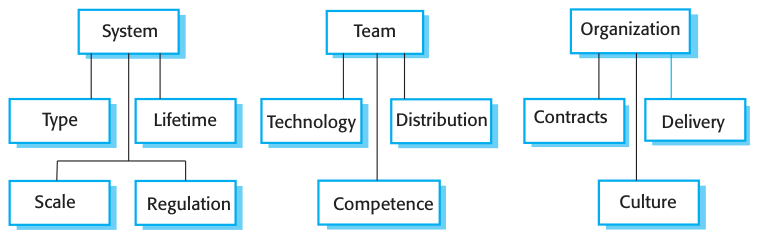
| Dimension维度 | Questions to ask核心自检问题 | Leans plan-driven when…倾向计划驱动的情形 |
|---|---|---|
| System系统 | How large? Safety-critical? Expected lifetime? Externally regulated?规模多大？是否安全关键？服役多久？有无外部监管？ | Large scale defeats informal sync; real-time/safety systems need upfront analysis; long lifetimes demand design docs for future maintainers; regulators require formal safety-case evidence系统庞大无法纯靠口头同步；实时/安全系统须事前严格分析；长寿命系统依赖文档传承意图；监管机构要求完整合规安全档案 |
| Team团队 | Skill levels? Co-located or distributed? Tooling support?团队技能分布如何？是否同地？工具链是否完善？ | Wide skill gaps (top architects design, others code to spec); distributed/outsourced teams rely on written specs; weak visualization/CI tools技能差距大（高手定设计、其他人照规格编码）；分布式或外包团队靠文档衔接；缺乏良好的可视化与 CI 工具 |
| Organization组织 | Contract rules? Incremental delivery feasible? Cultural norms?合同怎么签？能否增量上线？企业文化偏向如何？ | Contracts demand detailed upfront specifications (plan-driven requirements + agile coding); customer reps unavailable; engineering culture expects formal milestones固定合同要求详尽前置规格（可采用“计划驱动需求 + 敏捷实现”）；客户代表难抽身；传统工程文化看重阶段里程碑 |
Step 3: what large projects add第 3 步：大型项目必须补充的要素
Six structural realities explain why large enterprise systems cannot run on pure single-team agile alone:以下六个大型工程现实，决定了大项目无法照搬单团队纯敏捷：
| Characteristic大型项目特征 | Why it constrains pure agile对纯敏捷的制约 |
|---|---|
| System of systems（系统之系统） | Separate teams build interacting subsystems across time zones, each optimizing locally without seeing the whole多团队分地构建彼此通信的子系统，各顾一摊而缺乏全局视角 |
| Brownfield development（既有系统环境开发） | New code must integrate with legacy systems whose managers control interfaces and schedules, resisting rapid ad-hoc change必须迁就既有遗留系统并与原管理方协商接口变更，无法随意快速修改 |
| System configuration系统配置集成 | Most effort goes into configuring commercial packages rather than writing fresh code incrementally工作重心在于配置集成现成软件包，而非迭代编写全新代码 |
| Regulatory constraints强监管合规 | External laws and safety boards mandate traceable artifacts and audit trails法规和认证机构硬性要求可追溯文档与审计记录 |
| Prolonged procurement漫长采购周期 | Multi-year bidding and development make it hard to keep stable teams intact招标与建设周期漫长，难以长期保持熟悉业务的原班人马 |
| Diverse stakeholders多元利益相关者 | Doctors, nurses, admins, and executives hold competing views and cannot all sit in one room医护、行政、管理层诉求各异，不可能全员长期参与迭代 |
To bridge these realities, scaled agile approaches add five plan-driven elements:为此，规模化敏捷项目普遍引入以下五项计划驱动要素：
- Upfront outline requirements to partition capabilities cleanly across teams.前期概要需求：先划定各团队各自负责的功能边界。
- Multiple Product Owners negotiating priorities across subsystems.多层产品负责人：分头对接不同子系统并定期协调冲突。
- Upfront architectural design and documentation fixing core system structures, database schemas, and inter-team interfaces.前期体系结构设计与文档：提前写清总体体系结构、数据库模式与跨团队接口规范。
- Structured cross-team communication via video conferences, wikis, and shared tooling.跨团队同步机制：依靠定期视频会议、维基和统一协作工具拉齐信息。
- Regular scheduled builds instead of full-system continuous integration on every single check-in.定时全量构建：用高频定时集成构建替代“每次提交即全系统 CI”的不切实际要求。
In Multi-team Scrum, each small team keeps its own Product Owner and ScrumMaster, while team architects jointly evolve the shared architecture, release dates are synchronized, and a daily Scrum of Scrums brings one delegate from each team together. Splitting into small teams matters because pairwise communication overhead explodes quadratically with group size:在多团队 Scrum 中，每个小组仍保留各自的产品负责人与 Scrum 主管，各组架构师联合维护总体体系结构、对齐发布档期，并由每组派一名代表参加每日 Scrum of Scrums 同步会。之所以拆成多个小团队，是因为两两沟通渠道数随人数呈平方级暴涨：
Step 4: scaling out across a company第 4 步：在大型企业内部横向推广敏捷
While small product startups adopt agile enthusiastically, established large enterprises meet four stubborn barriers:小型产品公司往往天然拥抱敏捷，但大型传统企业在全公司推广时常遭遇四道阻力：
- Project managers unfamiliar with agile fear the risk of losing predictable schedules.缺乏敏捷经验的项目经理不愿承担未知的管理风险。
- Bureaucratic quality manuals and mandatory toolchains clash with agile freedom—for example, formal change-control boards demanding pre-approval for every edit clash directly with unapproved refactoring, and external QA handoffs clash with test-first development.繁琐的质量规范与强制工具链水土不服——例如事前变更审批委员会与敏捷随时重构相冲突，外部测试移交与测试先行开发相抵触。
- Large organizations span broad skill levels, whereas pure agile relies heavily on senior self-directed talent.企业内部技能水平参差不齐，而纯敏捷高度依赖高素质自治人才。
- Deeply rooted conventional engineering culture resists bottom-up change.根深蒂固的传统工程文化天然抵触流程变革。
Accordingly, agile should be introduced incrementally—starting with an enthusiastic pilot team, letting visible success build internal champions, and expanding step by step rather than forcing unwilling groups by decree.因此，推广敏捷本身也要“增量式”推进：先由有热情的小组做试点项目，以成功案例树立内部标杆，再逐步扩散，切忌靠行政命令强推给抵触团队。
Practice练习
Q1. (Scenario) Choose agile, plan-driven, or a hybrid approach for each project and justify using system, team, and organization factors:Q1.（情景分析）为下列项目选择敏捷、计划驱动或混合方法，并结合系统、团队和组织因素论证：
- A six-person start-up building a social app in one shared office一家六人创业公司在同一办公室内开发社交应用
- Flight-control software for a commercial airliner requiring regulator certification须经航空监管机构认证的民航客机飞行控制软件
- A hospital information system built by five teams across three countries for diverse clinical and admin stakeholders由三国五个团队为多元临床与管理方联合开发的医院信息系统
Answer
- Agile (Scrum + XP practices): Small product with rapidly evolving needs, co-located team of 6 supporting informal communication, no external regulator, and direct access to product leadership.敏捷（Scrum 结合 XP 实践）：需求多变的中小型软件产品，6 人同地办公适合非正式交流，无外部强制监管且客户代表触手可及。
- Mostly plan-driven: Safety-critical real-time system requiring thorough upfront analysis, long maintenance lifetime, and comprehensive certification documents for the aviation regulator (though automated unit testing and CI can still support coding).以计划驱动为主：安全关键实时系统须事前严密分析且生命周期极长，监管机构强制要求完备的认证与追溯文档（编码环节仍可借鉴自动化测试与持续集成）。
- Hybrid (plan-driven framework + multi-team Scrum): System of systems with diverse stakeholders and distributed teams; specify outline requirements, overall architecture, and documented inter-team interfaces upfront, then coordinate five small teams via multi-team Scrum, aligned releases, and a Scrum of Scrums.混合模式（计划框架 + 多团队 Scrum）：利益相关者多元且团队跨国分布；先制定概要需求、总体体系结构与书面接口契约，再由五个小组按多团队 Scrum 对齐发布并用 Scrum of Scrums 协同。
Q2. (Calculation) A programme employs 28 developers.Q2.（计算）某研发项目共有 28 名开发人员。
- How many pairwise communication channels exist if all 28 work as one flat team?若 28 人作为一个扁平大团队协作，两两之间共有多少条沟通渠道？
- If split into four 7-person Scrum teams coordinating through one representative each (a Scrum of Scrums), how many total channels exist?若拆为四个各 7 人的 Scrum 团队，每队各派一名代表参加 Scrum of Scrums 协调，总沟通渠道数是多少？
- Interpret the result and state what condition must hold for the reduction to work.解释上述对比结果，并说明实现这一降幅的前提条件。
Answer
- \(C(28) = 28 \times 27 / 2 = 378\) channels.\(C(28) = 28 \times 27 / 2 = 378\) 条沟通渠道。
- Inside each 7-person team, \(C(7) = 7 \times 6 / 2 = 21\) channels, giving \(4 \times 21 = 84\) intra-team channels; among the 4 delegates, \(C(4) = 4 \times 3 / 2 = 6\) channels. Total = \(84 + 6 = 90\) channels.每个 7 人团队内部有 \(C(7) = 21\) 条，4 个队共 \(4 \times 21 = 84\) 条；4 名代表间有 \(C(4) = 6\) 条；总计 \(84 + 6 = 90\) 条。
- Splitting eliminates \(1 - 90/378 = 76\%\) of communication paths. However, this saving holds only if cross-team dependencies actually flow through the representatives—which requires a clear upfront architecture, stable documented interfaces, and synchronized release schedules.拆分直接削减了 76%（\(1 - 90/378\)）的沟通链路；但前提是跨队协作确能经由代表与明确边界完成，这就必须依赖清晰的前置体系结构、书面接口契约及对齐的发布节奏。
Terms to recognise ★需要认识的术语
| Term术语 | What to know核心释义 |
|---|---|
| Continuous integration（持续集成） | Integrating every completed task immediately into the main system build and requiring the entire unit test suite to pass每完成一项开发任务就立刻合并到主干构建，并要求全部单元测试通过 |
| Collective ownership（集体代码所有权） | Rotating pairs across all parts of the codebase so no single-person "knowledge islands" develop结对人员轮流维护全部模块，任何人均可修改任何代码，避免产生个人“专家孤岛” |
| Sustainable pace可持续的工作节奏 | Avoiding chronic overtime because fatigue degrades code quality and long-term productivity杜绝长期超负荷加班，防止疲劳拉低代码质量与持续产出效率 |
| Test lag测试滞后 | When fast-coding developers outpace separate testers, causing tests to fall behind or get skipped开发速度远快于独立测试时，测试积压甚至被匆忙跳过的现象 |
| Potentially shippable increment潜在可交付增量 | A sprint output completed and tested to a release-ready standard requiring no extra integration work每次冲刺结束后处于完整已测状态、理论上可直接交付集成的软件增量 |
| Scrum boardScrum 看板 | A shared physical or digital board displaying the sprint backlog and task status for transparent team coordination展示当前冲刺待办条目与各任务状态的共享白板或电子看板，供全队透明协同 |
| Time-and-materials contract（按工时计费合同） | A contract paying for engineering time and effort spent rather than a fixed upfront requirements specification客户按实际投入工时与资源结算，而非按固定需求清单打包定价的合同模式 |
| Disciplined agile delivery（规范敏捷交付） | A stage in IBM's Agile Scaling Model adapting core agile practices to structured enterprise governance and non-coding disciplinesIBM 敏捷规模化模型的中阶阶段，将核心敏捷实践融入有纪律的企业工程治理活动 |
| Agility at scale（大规模敏捷） | The top stage of IBM's scaling model addressing multi-site distribution, legacy brownfield systems, and regulatory complianceIBM 规模化模型的最高阶段，进一步应对分布式团队、遗留系统与法规合规要求 |
Exam-style questions考试题型练习
Q1. (Concepts, 10 marks) (a) Define plan-driven and agile development, stating where iteration occurs in each. (3 marks) (b) State the four value statements of the Agile Manifesto and the five agile principles. (4 marks) (c) Name the two contexts where agile methods succeed best and give two reasons why. (3 marks)Q1.（概念，10 分）(a) 定义计划驱动与敏捷开发，并指明迭代各自发生在何处。（3 分）(b) 写出敏捷宣言的四条价值对比及五项敏捷原则。（4 分）(c) 指出敏捷最成功的两类项目场景并给出两条理由。（3 分）
Answer
(a) Plan-driven vs. agile and iteration (3 marks): In plan-driven development, separate sequential stages (requirements, design, coding, testing) hand off formal documents; iteration happens within individual activities. In agile development, specification, design, coding, and testing are interleaved in short increments; iteration happens across all activities simultaneously.(a) 定义与迭代位置（3 分）：计划驱动将开发切分为阶段，靠正式文档交接，迭代局限在各活动内部；敏捷开发在短增量周期内将规格、设计、编码与测试交错同步进行，迭代横跨所有活动。
(b) Manifesto and principles (4 marks):(b) 宣言与五项原则（4 分）：
- Manifesto: Individuals and interactions over processes and tools; working software over comprehensive documentation; customer collaboration over contract negotiation; responding to change over following a plan.宣言：个人与互动胜过流程与工具；可工作的软件胜过详尽文档；客户协作胜过合同谈判；响应变化胜过遵循计划。
- Principles: Customer involvement; embrace change; incremental delivery; maintain simplicity; people not process.五原则：客户参与、拥抱变化、增量交付、保持简单、人而非流程。
(c) Best-fit contexts and reasons (3 marks): (1) Small/medium commercial product development, and (2) custom systems built inside a single organization with an involved customer and minimal regulation. They work there because a customer/product manager engages continuously, stand-alone software needs no cross-stream coordination, and small co-located teams communicate informally.(c) 最佳场景与理由（3 分）：(1) 中小型商业软件产品开发；(2) 单一组织内部且少受外部监管的定制系统。原因在于客户或产品经理可持续投入反馈，独立系统无需协调并行开发流，且同地小团队适合非正式沟通。
思路：(a) 紧扣“活动内迭代 vs 跨活动迭代”；(c) 突出“客户可随时对接 + 小团队独立开发”。
Q2. (Test-first design, 10 marks) A car-park operator needs software to calculate parking fees: the first 30 minutes are free, each started hour thereafter costs $2, and the daily maximum is $15.Q2.（测试先行设计，10 分）某停车场计费规则为：前 30 分钟免费，超过后每开始 1 小时收费 $2，单日封顶 $15。
- Write one story card and break it into two task cards. (3 marks)编写一张故事卡并拆成两张任务卡。（3 分）
- Design seven boundary-focused test cases for the fee function (input: minutes parked) with expected fees. (4 marks)为计费函数设计 7 个包含边界值的测试用例（输入停车分钟数）及预期费用。（4 分）
- Explain how tests drive test-first development, plus two benefits and two limits. (3 marks)解释测试在测试先行开发中的用法，并说明两项优点与两项局限。（3 分）
Answer
(a) Story card and task cards (3 marks):(a) 故事卡与任务卡（3 分）：
- Story card — Paying at the exit: A driver inserts the parking ticket at the exit barrier; the machine displays elapsed minutes and the fee. Once paid (or immediately if stay \(\le 30\) minutes), the barrier lifts.故事卡——出口缴费：司机在出口闸机插入停车票，屏幕显示时长与应付费用；完成支付后（或停放不超过 30 分钟免费时）栏杆立即抬起。
- Tasks: (1) Calculate parking fee from minutes parked; (2) display duration/fee and open the barrier upon payment.任务卡：(1) 根据停车分钟数计算费用；(2) 展示时长与费用并在确认支付后开闸放行。
(b) Seven test cases (4 marks): Rule \(f(t) = 0\) for \(t \le 30\), else \(\min\bigl(15,\; 2\lceil (t-30)/60 \rceil\bigr)\):(b) 7 个边界测试用例（4 分）：计费公式为 \(t \le 30\) 时 \(f(t)=0\)，否则为 \(\min\bigl(15,\; 2\lceil (t-30)/60 \rceil\bigr)\)：
| \(t\) (min)分钟 | Boundary / Reason边界含义 | Expected fee预期费用 |
|---|---|---|
| 0 | Zero duration零时长入即出 | $0 |
| 30 | Exact end of free period免费时段上界 | $0 |
| 31 | Start of 1st billable hour刚跨入第 1 个计费小时 | $2 |
| 90 | Exact end of 1st billable hour第 1 个计费小时上界 | $2 |
| 91 | Start of 2nd billable hour刚跨入第 2 个计费小时 | $4 |
| 450 | 7 full billable hours (below cap)满 7 个计费小时（未封顶） | $14 |
| 451 | 8th started hour ($16 raw, capped at $15)进入第 8 小时（原算 $16，触发 $15 封顶） | $15 |
(c) Workflow, benefits, and limits (3 marks): Automated tests are written before the fee function, fail initially, and guide implementation of the simplest passing code; the full suite (e.g., via JUnit) reruns on every edit. Benefits: clarifies edge ambiguities (such as exact 30-min stays and ceiling rounding) upfront and provides instant regression checks without test lag. Limits: suites may omit negative/extreme inputs, UI/hardware barrier flows resist incremental unit tests, and passing suites create false confidence over coverage.(c) 机制、优缺点（3 分）：编码前先写好失败的自动化测试，再写出最简代码使全套测试（如 JUnit）跑通，此后每次改代码即全量回归。优点：提前消除边界歧义（如恰好 30 分钟、不足一小时向上计费），消除测试滞后；局限：易遗漏非法输入测试、界面与硬件抬杆难单测，且全绿容易带来覆盖虚假安全感。
易错：“每开始一小时”必须向上取整，且封顶阈值前后（450 与 451 分钟）要单独覆盖。
Q3. (Calculation, 10 marks) A Scrum team's last three 2-week sprints completed 24, 30, and 27 points, and the product backlog holds 160 points.Q3.（计算，10 分）某 Scrum 团队最近三个两周冲刺分别完成 24、30、27 个故事点，产品待办列表共有 160 点。
- Compute velocity and forecast required sprints and weeks. (3 marks)计算团队速度并预测所需冲刺数与周数。（3 分）
- In Sprint 1, the team selects 27 points but finishes only 21. What happens to the remaining 6 points and the sprint length? (2 marks)冲刺 1 选入 27 点但只完成了 21 点，剩余 6 点与冲刺时长如何处理？（2 分）
- Recompute velocity from the three most recent sprints and forecast remaining sprints and total duration. (3 marks)根据最近三次冲刺重算速度，预测剩余冲刺数与总工期。（3 分）
- After Sprint 1, the Product Owner adds 20 points. State the new forecast and how Scrum responds. (2 marks)冲刺 1 后产品负责人新增 20 点，给出新预测并说明 Scrum 如何应对。（2 分）
Answer
- \(v = (24 + 30 + 27)/3 = 27\) points/sprint; \(N = \lceil 160 / 27 \rceil = \lceil 5.93 \rceil = 6\) sprints = 12 weeks. (3)\(v = (24 + 30 + 27)/3 = 27\) 点/冲刺；\(N = \lceil 160 / 27 \rceil = \lceil 5.93 \rceil = 6\) 个冲刺，即 12 周。（3 分）
- The sprint is never extended; the unfinished 6 points return to the product backlog for the Product Owner to reprioritize. (2)冲刺绝不延长；未完成的 6 点退回产品待办列表，由产品负责人重新排定优先级。（2 分）
- Remaining work \(W = 160 - 21 = 139\) points. Latest three sprints: 30, 27, 21 → \(v = (30 + 27 + 21)/3 = 26\). Remaining sprints \(N = \lceil 139 / 26 \rceil = \lceil 5.35 \rceil = 6\) more sprints → 7 sprints total (14 weeks). (3)剩余工作量 \(W = 160 - 21 = 139\) 点；最近三次（30, 27, 21）均值 \(v = 26\)；还需 \(\lceil 139 / 26 \rceil = \lceil 5.35 \rceil = 6\) 个冲刺，总计 7 个冲刺（14 周）。（3 分）
- New remaining work \(W = 139 + 20 = 159\) → \(\lceil 159 / 26 \rceil = \lceil 6.12 \rceil = 7\) more sprints → 8 sprints total (16 weeks). Because timeboxes stay fixed, scope acts as the variable: dropping 20 points of lowest-priority items restores the 14-week schedule. (2)剩余增至 \(139 + 20 = 159\) 点 → 还需 \(\lceil 159 / 26 \rceil = 7\) 个冲刺，总计 8 个冲刺（16 周）。因冲刺时间固定，产品负责人可砍掉 20 点低优范围以保住 14 周交付。（2 分）
易错：速度取最近三次已完成点数均值，结果向上取整。
Q4. (Scenario, 10 marks) A medical-device company develops insulin-pump control software with 30 engineers across three countries, subject to regulator approval and a 15-year maintenance life. Management proposes pure Scrum.Q4.（情景分析，10 分）某医疗器械公司由三国 30 名工程师开发胰岛素泵控制软件，须经监管认证并维护 15 年，管理层提议纯用 Scrum。
- Give four reasons why pure agile is unsuitable. (4 marks)给出纯敏捷不适用的四条理由。（4 分）
- List the plan-based elements that should be added. (3 marks)列出应补充的计划驱动要素。（3 分）
- Describe how multi-team and distributed Scrum would organize the teams. (3 marks)说明多团队与分布式 Scrum 将如何组织研发工作。（3 分）
Answer
- (a) Why pure agile fails (4 marks): (1) Regulation: safety certification demands comprehensive traceable documentation; (2) System criticality: embedded safety-critical control needs rigorous upfront analysis and detailed design; (3) 15-year lifetime: future maintainers require coherent requirement and design documents once original teams disband; (4) Scale & distribution: 30 engineers across three countries break co-location and informal communication.(a) 纯敏捷不适用的四条理由（4 分）：(1) 监管机构要求完备的可追溯认证文档；(2) 嵌入式安全关键控制须编码前完成严密危害分析与设计；(3) 15 年长维护周期不能靠团队脑中隐性记忆，必须留存需求与设计文档；(4) 三国 30 人打破了小团队同地非正式沟通前提。
- (b) Plan-based additions (3 marks): Upfront outline requirements and hazard analysis; shared architectural design with documented inter-team interfaces and work breakdown; regulatory traceability documentation; scheduled system builds, release calendars, and multi-team configuration management.(b) 需补充的计划驱动要素（3 分）：前期概要需求与危害分析；书面化的总体体系结构、跨队接口契约与工作分解；面向监管的追溯文档；定期全系统构建计划、统一发布日历与多团队配置管理。
- (c) Multi-team & distributed Scrum setup (3 marks): Split into ~5 teams of 6, each with its own local ScrumMaster and Product Owner under a Chief Product Owner; team architects jointly steer overall architecture, synchronize releases, and meet daily via a Scrum of Scrums. Across sites, use video conferencing for Product Owner visits/ceremonies, one shared development environment, instant chat/video, and continuous integration for constant visibility.(c) 组织方案（3 分）：拆为约 5 个 6 人小组，各配现场 Scrum 主管与产品负责人并设总产品负责人；各组架构师共治总体体系结构、对齐发布日期，每日通过 Scrum of Scrums 同步；跨国站点共享同一套研发与持续集成环境，并用视频会议与即时通讯维系协作。
Q5. (Organization and maintenance, 10 marks) A bank's 400-developer IT department has a quality manual, a change-approval board, and an external QA team, and plans to adopt agile for a fixed-price customer system with a 15-year maintenance period.Q5.（组织与维护，10 分）某银行 400 人 IT 部门拥有严格的质量手册、变更审批委员会和外部测试团队，拟对一个固定总价且需维护 15 年的客户系统引入敏捷。
- Identify three organizational obstacles to adopting agile. (3 marks)指出引入敏捷的三项组织障碍。（3 分）
- Explain the fixed-price contract conflict and how agile contracts address it. (2 marks)解释固定总价合同冲突及敏捷合同的通常做法。（2 分）
- State three challenges of maintaining agile systems over 15 years. (3 marks)列出敏捷系统在 15 年维护期面临的三个问题。（3 分）
- Propose a rollout strategy for introducing agile into the department. (2 marks)提出在该部门推行敏捷的合理策略。（2 分）
Answer
- (a) Organizational obstacles (3 marks): (1) Bureaucratic procedures clash directly with agile—mandatory upfront change approvals block unapproved refactoring, and external test handoffs conflict with test-first development; (2) wide skill variation across 400 engineers undermines practices requiring senior self-direction; (3) risk-averse managers and conventional engineering culture resist change.(a) 三项组织障碍（3 分）：(1) 繁琐流程冲突——事前变更审批阻碍随时重构，外部测试团队移交抵触测试先行；(2) 400 人技能水平参差不齐；(3) 习惯传统工程的管理层与组织文化抵触变革风险。
- (b) Contract issue (2 marks): Fixed-price contracts need a complete upfront requirements spec, which agile avoids; agile therefore uses time-and-materials contracts paying for developer time spent—though disputes over blame and extra cost still arise when problems occur.(b) 合同问题（2 分）：固定总价须绑定确定规格书，而敏捷没有前置详规，因此常改用按工时计费合同；但出问题时容易引发“谁担责、谁付超时费”的扯皮。
- (c) Maintenance challenges (3 marks): (1) Missing coherent requirements/design docs needed to assess change impact; (2) difficulty keeping customer reps engaged when updates are sporadic; (3) loss of tacit knowledge when original teams disperse.(c) 维护三难题（3 分）：(1) 缺乏用于评估变更影响的完整文档；(2) 非连续迭代期间难留住全职客户；(3) 原班人马解散导致隐性知识流失。
- (d) Rollout strategy (2 marks): Introduce agile incrementally—start with an enthusiastic pilot team and internal champions, showcase early success to win buy-in, and scale gradually rather than imposing mandates on reluctant staff.(d) 推行策略（2 分）：先由自愿且热情高的试点小组切入，培育内部倡导者，以成功项目示范效应带动逐步扩散，切忌一刀切强推。
Textbook exercises课后习题
Textbook exercises with answers: 10 questions教材习题及答案（共 10 题，点击展开）
E1. (Exercise 3.1) Software engineering students typically complete a major capstone project at the end of their program. Explain why an agile methodology is especially useful for such student projects.E1. （习题 3.1）软件工程学生通常在毕业前完成大型综合项目。解释为何敏捷方法非常适合此类学生项目。
Answer
Capstone projects match agile's sweet spot—small teams (3–6 students), fixed academic deadlines, initially fuzzy requirements, and limited prior experience—in five ways:学生毕业项目恰好契合敏捷的核心适用前提（3–6 人小团队、死线固定、初期需求模糊、经验尚浅），具体益处有五：
- Short incremental delivery: Producing working, prioritized increments every couple of weeks guarantees a demonstrable system on deadline day instead of risking a last-minute integration crash.短迭代增量交付：每轮均有可运行版本，高优核心功能先落地，避免临近答辩才“大爆炸集成”翻车。
- Continuous customer feedback: Supervisors or clients review each increment, catching misunderstandings early while accommodating evolving goals.持续客户反馈：导师/客户逐轮验收增量，尽早纠偏需求误解。
- Lightweight documentation: Students invest scarce time in coding and learning rather than writing exhaustive upfront specs for a domain they are still discovering.精简前置文档：用故事卡和待办列表替代冗长前置规格，把有限精力投入实质构建。
- Teamwork & skill sharing: Stand-ups, collective ownership, pair programming, and retrospectives level up weaker members, surface free-riders early, and teach reflection.协同与传帮带：每日站会、结对编程与回顾会促进技能互补，及早暴露分工失衡。
- Visible progress & engineering habits: Backlogs, burndown charts, version control, TDD, and CI keep schedule risk visible and raise product quality.进度透明与工程习惯养成：待办看板、燃尽图配合版本控制与持续集成，直观控风险、提质量。
Necessary adaptations: Students work part-time across schedules rather than co-located 9–5, grading requires individual contribution tracking plus a final report, and supervisors should coach effort estimation.适配注意：学生并非全职坐班，评分需区分个人贡献并补充最终报告，且应由导师辅导工作量估算。
E2. (Exercise 3.2) Explain how the five principles underlying agile methods accelerate software development and deployment.E2. （习题 3.2）请解释敏捷方法的五项基本原则如何加快软件的开发与部署。
Answer
Agile accelerates delivery by eliminating waiting queues—exhaustive upfront specifications, formal sign-offs, and late big-bang integration—across all five principles:敏捷通过消除“详尽前置文档、层层签批等待与末期集中联调”三大延迟来提速，五项原则各司其职：
- Customer involvement: Instant Q&A with a representative settles ambiguities within days instead of waiting weeks for formal change reviews.客户参与：疑问当场拍板，省去漫长的书面往返确认，错误在一轮迭代内即可修正。
- Embrace change: Architecture and code expect shifts, absorbing new requests into the next sprint without reworking frozen specs.拥抱变化：不冻结规格书，变化直接纳入下一轮迭代，省去高昂返工。
- Incremental delivery: Automated tests and CI enable production slices to ship every few weeks, capturing real-user feedback immediately.增量交付：高价值功能每隔数周即上线见客，借持续集成与自动测试保障高频发布。
- Maintain simplicity: Building only current needs and refactoring continuously leaves far less code and documentation to write, test, and modify.保持简单：不做过度设计与冗余文档，待测待改的体量更小。
- People not process: Empowered developers make fast face-to-face technical calls without bureaucratic approval bottlenecks.人而非流程：赋权团队就地快速决策，大幅减少流程内耗。
E3. (Exercise 3.3) Extreme Programming expresses user requirements as stories on cards. Discuss the advantages and disadvantages of this approach.E3. （习题 3.3）极限编程用卡片上的用户故事表达需求，讨论这种做法的优缺点。
Answer
A story card captures a brief usage narrative in the customer's words, which developers split into tasks while the customer sets priorities.故事卡用客户自己的语言记录简短使用场景，由开发团队拆解任务、客户排定优先级。
Advantages:优点：
- Accessible to non-technical users: Narrative scenarios invite user participation far better than formal specifications or use-case models.通俗易懂：比正式规格书和用例模型更贴近业务语言，用户乐于参与编写与讨论。
- Lightweight and flexible: Cards are cheap to edit, split, discard, or reorder on a board as business priorities shift.轻便灵活：改写、拆分、舍弃和调整优先级成本极低。
- Planning-friendly & conversational: Stories decompose cleanly into ~2-week tasks and prompt face-to-face discussion that yields acceptance tests.便于规划与沟通：颗粒度适中，利于估时拆解、激发面对面澄清并直接转化为验收测试。
Disadvantages:缺点：
- Incompleteness: Difficult to verify whether all essential needs are covered; experts omit tacit "obvious" steps, and non-functional constraints (security, performance) fit awkwardly.完备性不足：难以核查是否遗漏关键需求，老手常跳过默认步骤，且性能、安全等非功能需求不易融入卡片。
- Weak system-wide view: Cross-story conflicts, duplicates, and dependencies stay hidden, while critical behavioral details remain in people's heads.缺少全局视角：故事间的冲突、重复与依赖不易察觉，大量细节仅停留在口头记忆中。
- Poor fit for contracts, regulation, and long-term maintenance: Cards cannot serve as binding fixed-price contracts, safety-case audits, cross-site coordination, or long-term maintenance manuals.不适应合同、强监管与长期维护：既无法充当固定总价合同或安全审计算据，也难以支撑多团队协作与多年后的维护理解。
E4. (Exercise 3.4) In test-first development, tests are written before code. Explain how the test suite may compromise the quality of the system being developed.E4. （习题 3.4）在测试先行开发中，测试先于代码编写。解释测试套件为何仍可能损害所开发系统的质量。
Answer
When "all tests pass" becomes the sole definition of done, flaws in the test suite directly undermine software quality in five ways:当团队把“测试全绿”等同于“交付合格”时，测试集自身的缺陷会从五个方面损害软件质量：
- Incomplete coverage & false confidence: Tests only cover scenarios the author imagined; edge values, malformed inputs, component interactions, and non-functional constraints can slip through behind hundreds of green checks.覆盖残缺与虚假安全感：海量绿灯容易掩盖边界值、异常输入、跨构件交互及非功能需求的测试空白。
- Shared developer blind spots: Because the same programmer writes both tests and code, a requirement misunderstanding gets encoded into both and passes cleanly; rushed developers may also write trivial happy-path tests.同源盲点与偷工减料：同一个人写测试和代码，需求误解会“双双写错并顺利通过”，且赶工时易只测正常分支。
- Hard-to-test layers left uncovered: GUIs, concurrency, database locking, and external APIs resist incremental unit tests and often go poorly tested.难测层面长期失守：UI 展示、并发竞态、数据库事务与外部集成往往难以自动化单测。
- Short-sighted "test-gaming" code: Writing just enough code to satisfy current unit tests without refactoring can yield fragmented designs lacking coherence.只为过测试的短视编码：若只写刚好过用例的代码而疏于重构，系统结构会变得支离破碎。
- Rotting test suites: Under deadline crunch, teams sometimes mute or weaken failing tests rather than fixing underlying issues.测试套件失修腐化：进度吃紧时，有人会禁用或改松失败用例，使回归安全网失效。
Mitigation: Pair test-first unit suites with peer test reviews, coverage checks, and independent integration and customer acceptance testing.对策：将测试先行与用例评审、覆盖率统计及独立系统/验收测试结合。
E5. (Exercise 3.5) Suggest four reasons why a pair of programmers may achieve more than half the productivity of two programmers working individually.E5. （习题 3.5）给出四个理由，说明结对编程的产出率为何可能超过两名独立工作程序员之和的一半。
Answer
Measuring productivity as correct, working software per person-hour (including debugging and rework, not raw lines typed), a pair often exceeds 50% of two solo outputs for four reasons:若以“每人时产出的正确可用代码（含调试与返工成本）”而非单纯敲键行数衡量，结对效率能显著高于单干之和的一半，原因有四：
- Continuous real-time review: Having two pairs of eyes on every line prevents defects immediately, slashing costly downstream debugging and formal inspection delays.实时逐行代码审查：低级错与边界疏漏当场被拦下，大幅削减后续测试修 bug 与重审返工耗时。
- Better designs and fewer false starts: Talking through options before typing catches wrong turns early and unblocks tricky problems without long stalls.更优设计与更少弯路：动手前先碰撞思路，避免一头扎进死胡同或独自卡壳空转。
- Broad knowledge sharing: Rotating pairs spreads domain and codebase knowledge across the team, avoiding waits for a single "module expert."消除知识孤岛：搭档轮换让全队熟悉代码与工具，无需苦等唯一专家答疑。
- Higher focus and engineering discipline: Mutual accountability curtails distractions and prevents skipping tests or refactoring under stress.保持专注与工程自律：彼此监督减少摸鱼分心，并坚持写测试与重构，减少技术债。
E6. (Exercise 3.6) Compare Scrum project management with conventional plan-based approaches in allocating people, estimating cost, maintaining team cohesion, and managing team membership changes.E6. （习题 3.6）比较 Scrum 与传统计划驱动项目管理在人员分配、成本估算、维持团队凝聚力及应对成员变动方面的异同。
Answer
| Dimension维度 | Scrum | Plan-based approach计划驱动方法 |
|---|---|---|
| Allocating people人员分配 | Small (\(\le 7\)) cross-functional teams stay dedicated to one product and self-assign backlog items every sprint—highly adaptive, though unable to share scarce specialists across projects7 人以下跨职能小团队专职负责单一产品，每轮自行认领待办条目；灵活及时但难以跨项目共享稀缺专家 | Managers assign staff to WBS tasks and level workloads across multiple projects—maximizing specialist utilization, though slow to replan when estimates slip经理依工作分解结构跨项目调配人力，资源利用率高且适合多团队大工程，但重新排期缓慢 |
| Estimating cost成本估算 | Sizes items in story points and forecasts sprints from velocity (\(\lceil W/v \rceil\)); accurate short-term, yet total full-scope cost stays uncertain upfront (fits time-and-materials, not fixed-price contracts)用故事点结合速度滚动预测工期与成本；近期精准但开局总预算不确定，适合按工时合同而不易签固定总价 | Estimates total effort upfront via expert judgment, analogy, or COCOMO II to establish fixed budgets and contracts—though early estimates suffer when requirements are volatile初期用专家经验或 COCOMO II 估算全局成本以支撑招标预算，但需求一变早期估算易失准 |
| Team cohesion团队凝聚力 | High cohesion via shared sprint goals, daily syncs, collective code ownership, and retrospectives (weakens when distributed)共同冲刺目标、每日站会、集体所有权与回顾会带来极强凝聚力（分布式时有所削弱） | Lower natural cohesion across large phase/role silos and formal document handoffs; requires deliberate team-building management按职能与阶段割裂、靠文档交接，天然凝聚力较弱，须靠管理层刻意维系 |
| Membership changes成员变动应对 | Disruptive: tacit knowledge leaves with departing staff and newcomers temporarily depress team velocity, requiring stable teams冲击较大：依赖团队默契与隐性知识，老人离职或新人融入都会明显拉低速度 | Better absorbed: formal roles, specs, and design docs help replacements onboard—though adding staff late still slows progress承受力更强：规范文档与明确职责便于新人按图索骥接手（尽管后期盲目加人仍会拖慢进度） |
Conclusion: Scrum excels for small-to-medium teams facing shifting needs; plan-based management suits massive multi-team programs, shared specialists, fixed-price contracts, and high staff turnover (with large projects frequently combining both).结论：需求易变的中小团队优先选 Scrum；多团队巨型工程、固定总价合同或人员流动率高时以计划驱动为主（大型系统常混合采用）。
E7. (Exercise 3.7) Your company closes physical offices to enable work-from-home, unaware that developers use Scrum. Explain what technologies can support distributed Scrum and what problems are likely to arise.E7. （习题 3.7）公司为降本减排推行全员居家办公，却不知研发团队采用 Scrum。说明可借助哪些技术支撑远程分布式 Scrum，并预判可能遇到的问题。
Answer
First, brief senior management on Scrum's core needs (daily synchronization, rapid customer feedback, and team transparency) so policies do not accidentally undermine self-organization.首先应向高层说明 Scrum 对高频同步与客户响应的依赖，避免行政政策误伤自组织节奏。
Supporting technologies:支撑技术方案：
- Communication: Video conferencing (cameras on) for Daily Scrums, planning, reviews, and retrospectives; persistent team chat channels for quick questions; shared calendars for core overlapping hours.沟通协作：开摄像头的视频会议支撑站会、计划与回顾会；常驻即时聊天频道处理日常短平快答疑；共享日历锁定核心同步时段。
- Digital artifacts: Cloud backlog and Scrum boards with automated burndown charts (e.g., Jira/Trello), wikis for decision logs, and online planning-poker/whiteboard apps.电子看板与文档：云端待办板与自动燃尽图工具（如 Jira/Trello）替代墙贴便利贴，配合维基沉淀决策和在线计划扑克估点。
- Shared engineering environment: Git pull-request code reviews, automated CI build servers showing live product health, and screen-sharing/cloud IDEs for remote pairing.统一研发平台：基于 Git PR 审查、持续集成流水线实时展示构建健康度，并以共享屏幕或云 IDE 支撑远程结对。
Likely problems & mitigations:潜在问题与对策：
- Loss of informal cues & blockers hidden: Fewer spontaneous desk chats and missing body language slow tacit knowledge flow and hide struggling members.非正式交流锐减：缺少工位旁听与肢体信号，隐性知识传递变慢，Scrum 主管更难及时察觉卡壳成员。
- Weaker cohesion, video fatigue, and time-zone friction: Isolation erodes trust, newcomers struggle to integrate, and staggered hours shrink common meeting windows.凝聚力下滑与时区冲突：孤立感与视频疲劳削弱信任、新人难融入，作息错位压缩共同在线时段。
- Tooling, security, and management clashes: Home bandwidth/VPN risks, harder remote pairing/CI discipline, and managers reverting to individual time-tracking.安全、实践退化与管理反弹：远程代码安全、结对变难，以及不了解敏捷的管理者重拾个人工时考核。
Mitigation: Set mandatory core overlapping hours, enforce strict CI and explicit decision logs, and schedule periodic in-person meetups.缓解措施：约定每日核心在线窗口、严守持续集成与书面决策留痕，并定期组织线下聚会维系信任。
E8. (Exercise 3.8) Explain why scaling agile methods to large, distributed projects requires adding plan-based practices and documentation.E8. （习题 3.8）解释为何将敏捷方法扩展至大型分布式项目时，必须引入部分计划驱动的方法与文档。
Answer
Pure agile relies on one small co-located room, informal conversation, a single customer voice, and tacit memory—all of which break down across large distributed programs:大型分布式项目打破了纯敏捷“单室小队、口头沟通、单一客户”的假设，必须靠计划驱动要素兜底，原因有六：
- Cross-team coordination: Multiple teams in different time zones cannot align solely by chatting; written interface specifications, release calendars, and schedules tell each team what others deliver and when.跨队协调：跨时区多团队不能只靠开会碰头，必须靠书面接口契约与协同发布计划对齐节奏。
- Upfront architecture & core requirements: A large system needs an early architecture to partition work across teams and resolve stakeholder conflicts—because refactoring a broken global architecture later forces every team to rework.前置体系结构与核心需求：必须先定下总体骨架以划分各组职责并校验一致性，全局架构无法靠后期局部重构“碰出来”。
- Contracts & regulation: Multi-vendor contracts and safety/financial regulators require formal specifications, traceability, and audit trails.合同与监管合规：固定总价采购与外部合规审计均要求正式规格、可追溯证据与安全档案。
- Controlled integration: Merging outputs from many teams requires scheduled integration plans, interface control, and configuration management.受控系统集成：几十人并行开发无法随时跑全量 CI，须配合接口控制与版本配置管理。
- Long-term maintenance & management visibility: Multi-decade lifespans outlast original staff, requiring design documentation for maintainers alongside milestone reports for program managers.长寿维护与管理可见性：人员流动后需靠文档留存设计意图，高层也需里程碑度量统筹全局风险与预算。
E9. (Exercise 3.9) Explain why agile methods may perform poorly in organizations with wide skill variations and deeply established formal processes.E9. （习题 3.9）解释为何敏捷方法在团队技能差距大且已建成成熟规范流程的组织中往往水土不服。
Answer
1. Wide skill and ability gaps: Agile drops detailed specifications and design blueprints, relying on self-directed engineers to make sound design calls and execute demanding practices (refactoring, TDD, pairing). In mixed-skill teams, junior staff accumulate unnoticed technical debt, extreme skill gaps stall pairs, and strong personalities dominate self-organization—whereas plan-driven teams let top architects design while others code to specification.1. 技能水平参差不齐：敏捷省去了详细设计与手把手文档，高度依赖全员自觉做出正确设计并驾驭重构、TDD 等高阶实践；能力悬殊时，新手容易堆出隐蔽技术债、结对沦为“单方代打”、自组织变成强硬者一言堂——而计划驱动正好能让顶尖高手定设计、其他人照图施工。
2. Entrenched formal processes and culture:2. 成熟流程与企业文化阻力：
- Process clashes: Mandatory change-control boards approving every edit conflict with unapproved refactoring; handing builds to separate QA teams clashes with developer test-first practices.流程冲突：事前变更审批板与敏捷随时重构水火不容，外包/独立 QA 移交与测试先行相抵触。
- Culture & resource structure: Risk-averse managers, phase-based contracts, and matrix staffing (sharing specialists across projects) block dedicated self-organizing teams.文化与用工制度阻碍：求稳怕错的管理层、阶段交付合同以及跨项目借调专家的矩阵模式，均阻碍组建专职敏捷团队。
Takeaway: Introduce agile gradually via willing pilot teams and adapt governance rather than forcing overnight mandates.启示：应从高意愿试点团队循序切入并调适制度，切忌强硬一刀切。
E10. (Exercise 3.10) When a user representative works closely with developers, they can "go native"—adopting the developers' perspective and losing touch with fellow users. Suggest three ways to prevent this, with pros and cons of each.E10. （习题 3.10）深度嵌入开发团队的用户代表容易“被同化”（只站在开发者视角思考而脱离真实用户群体）。提出三种防范策略并分析各自利弊。
Answer
- Rotate the representative periodically (e.g., every few sprints) back to their operational role.
Pros: Nobody stays long enough to lose user perspective, each rotation brings fresh field needs, and broader user voices are heard.
Cons: Disrupts continuity as newcomers relearn project context and may reverse prior priorities; increases training and staffing burden.1. 定期轮换用户代表（如每隔几次冲刺轮岗）：
优点：任期有限不易被同化，持续注入一线鲜活诉求并覆盖更多用户群；
缺点：削弱项目连续性，新人熟悉上下文耗时且可能推翻旧优先级，重复培训成本高。 - Keep the representative part-time in their user department while joining key ceremonies (sprint planning, reviews, partial stand-ups).
Pros: Preserves daily contact with user colleagues and real pain points at lower staffing cost.
Cons: Slower answers reduce on-site agility, and split responsibilities can overload the representative.2. 保留业务部门兼职岗位，仅关键节点接入开发团队：
优点：不脱离一线同事与真实痛点，对业务部门抽调压力小；
缺点：答疑响应变慢削弱了现场客户的即时优势，兼顾两头易令代表疲于奔命。 - Cross-check decisions against a wider user group via sprint demos, usability tests, pilots, and developer field observations.
Pros: Independent feedback immediately exposes whether the representative still speaks for real users and builds broad buy-in.
Cons: Demands extra coordination time; conflicting user feedback still needs one decisive Product Owner, and the representative may feel micromanaged.3. 借助更广泛用户群定期校准（冲刺演示、可用性测试、试点与现场观察）：
优点：独立反馈能立刻照出代表是否“脱节”，同时赢得广泛用户认同；
缺点：额外占用协调时间，众口难调时仍需产品负责人拍板，且易令原代表感到不被信任。
Recommendation: Combining scheduled rotation with regular wider-user sprint reviews gives the strongest safeguard.最佳实践：将“定期轮换”与“大范围用户冲刺评审”组合使用效果最佳。
Chapter 3Requirements Engineering需求工程Reading: Sommerville Ch. 4
Requirements, stakeholders and the RE process ★★需求、利益相关者与需求工程过程
Goal. Contrast user requirements with system requirements, define what makes someone a stakeholder, and describe the three core activities of requirements engineering.目标。区分用户需求与系统需求，界定利益相关者范围，并掌握需求工程的三项核心活动。
Core idea: User requirements state what the customer gets in plain, non-technical terms, whereas system requirements translate those needs into exact, testable specifications for engineers.核心思路：用户需求用客户听得懂的语言说明“系统能带来什么”，系统需求则将其转化为供研发与测试人员照章施工的精确规约。
| Aspect维度 | User requirements（用户需求） | System requirements（系统需求） |
|---|---|---|
| Content内容 | High-level services offered to users and overarching constraints面向用户的宏观服务以及系统总体约束 | Detailed functions, behaviors, interfaces, and operational limits to be implemented须精确实现的详尽功能、接口行为与运行指标 |
| Notation表述形式 | Natural language, simple tables, and intuitive diagrams自然语言、简洁表格与直观图示 | Structured natural language, graphical models, or mathematical specifications结构化自然语言、图形模型或数学规格说明 |
| Readers主要读者 | Client managers, end-users, client engineers, contractor managers, architects甲方管理者、最终用户、客户工程师、承包商经理、架构师 | End-users, client engineers, architects, developers, and testers最终用户、客户工程师、架构师、开发与测试人员 |
| Role作用定位 | Abstract problem description avoiding implementation choices停留在抽象业务层面，不绑死技术实现方案 | Direct blueprint for system design and testing; often forms part of the contract系统设计与验收测试的直接依据，常作为正式合同附件 |
For example, in a library system the user requirement reads "Members can renew borrowed books online," whereas a corresponding system requirement specifies "The system shall extend a loan by 14 days only if no other member has reserved the item."以图书馆系统为例：用户需求写的是“会员可以在线续借图书”，而展开后的系统需求则明确规定“仅当该书未被他人预约时，系统方可将借期顺延 14 天”。
A stakeholder（利益相关者）is any person or organization affected by the system or holding a legitimate interest in it—not only direct end-users, but also managers, IT administrators, funding bodies, and external regulators (e.g., library members, librarians, university IT staff, and the university administration).利益相关者指任何受系统影响或对其拥有合法利益的个人与组织——绝不仅限于直接操作软件的用户，还包括管理层、IT 运维团队、出资方和监管机构（如图书馆会员、馆员、校信息中心及校方管理层）。
Before committing major resources to RE, a brief feasibility study（可行性研究）checks three make-or-break questions; if any answer is "no," the project should usually not proceed:在全面投入需求工程之前，团队往往先开展简短的可行性研究以回答三道门槛问题（只要有一项否定，项目通常就不该仓促上马）：
- Does the proposed system contribute meaningfully to the organization's overall objectives?系统是否切实服务于组织的战略或业务目标？
- Can it be built within schedule and budget using current technology?依托现有技术，能否在既定预算和工期内建成？
- Can it integrate cleanly with other systems already operating in the organization?能否与组织内现有运行系统顺利集成？

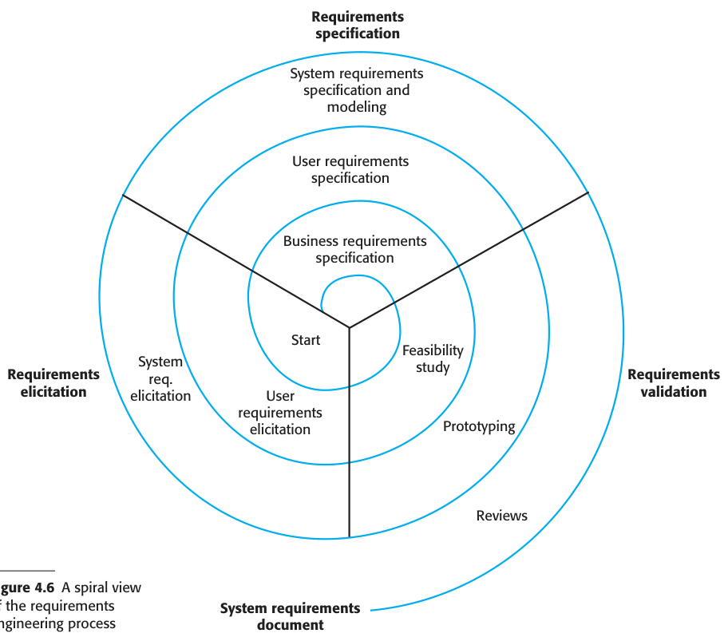
Once approved, RE proceeds through three interleaved activities arranged in a spiral: elicitation and analysis（需求获取与分析）to uncover stakeholder needs, specification（需求规格说明）to document them rigorously, and validation（需求确认）to verify that they capture what the customer genuinely wants. Each loop refines requirements from business needs down to user and system levels, culminating in the requirements document—after which requirements management（需求管理，Section 3.6）handles ongoing changes.立项后，RE 沿螺旋迭代推进三项交错活动：获取与分析（挖掘利益相关者诉求）、规格说明（按规范写成文档）与确认（检验需求是否真实合意）。每一轮螺旋依次细化业务层、用户层与系统层需求，最终形成需求文档；此后则由需求管理（第 3.6 节）接力应对持续变更。
Practice练习
Q1. (Define and apply) For a library system, write one user requirement and three system requirements that expand it, and state who reads each level.Q1.（定义与应用）针对图书馆系统，写出一条用户需求及对其进行细化的三条系统需求，并说明两层需求各自的读者。
Answer
- User requirement: "Members shall be able to renew borrowed items online." Readers: library managers and patrons, who need a clear overview of offered services without technical jargon.用户需求：“会员应能够在线续借已借阅图书。”读者：图书馆管理层与普通读者，用于了解系统提供的服务全貌。
- System requirements:系统需求：
- The system shall renew an item only if no other member holds an active reservation on it.仅当该图书无其他会员预约时，系统方可执行续借。
- A successful renewal shall extend the due date by 14 days from the current due date.续借成功后，到期日应在原到期日基础上顺延 14 天。
- The system shall reject renewal and display the reason whenever unpaid fines exceed 20 AED.若会员未缴罚款超过 20 AED，系统应拒绝续借并明确提示原因。
思路：用户需求用一句话写业务目标；系统需求则拆出触发条件、具体数值与异常拒绝规则。
Q2. (True/false) Justify your answer for each statement:Q2.（判断并说明理由）判断下列陈述正误：
- Requirements engineering ends once the requirements document is signed.需求文档签署后，需求工程即告结束。
- A feasibility study asks only whether the required technology exists.可行性研究只关心现有技术能否实现。
- Stakeholders are simply the people who directly operate the software.利益相关者就是直接操作使用该软件的人。
Answer
- False. RE is iterative, and requirements continue changing after sign-off, so requirements management extends through development and maintenance.错误。需求在签署后仍会因业务与环境变化而调整，需求管理须贯穿整个开发与维护期。
- False. Feasibility asks three questions: organizational alignment, technical/budget/schedule viability, and integration with existing systems.错误。可行性研究须考察三方面：是否契合组织目标、技术/成本/工期是否可行，以及能否集成现有系统。
- False. Stakeholders include anyone affected by or having a legitimate interest in the system—including managers, IT support, regulators, and indirect beneficiaries.错误。凡受系统影响或有合法利益关系者均属利益相关者，包括管理层、运维、监管机构等非直接操作者。
Functional and non-functional requirements ★★★功能需求与非功能需求
Goal. Classify requirements as functional or as product, organizational, or external non-functional requirements; rewrite vague goals into testable metrics; and calculate availability.目标。准确划分功能需求与产品/组织/外部三类非功能需求，将空泛目标改写为可定量测试的需求，并熟练计算可用性。
Step 1: functional requirements第 1 步：功能需求
Core idea: Functional requirements define the concrete services a system must offer, how it responds to specific inputs or situations, and occasionally what it must explicitly forbid.核心思路：功能需求描述系统必须提供的服务、对特定输入或状态的响应，以及必要时明确禁止的行为。
In a library system, functional requirements include "A member can search the catalogue by title" and "The system sends an email reminder two days before a book's due date." Closely related variants are domain requirements（领域需求）, which stem from industry rules rather than user wishes (e.g., banking interest formulas or railway braking physics), and information requirements（信息需求）, which specify what data users need to perform their jobs.例如图书馆系统中的“会员可按书名检索目录”或“系统在到期前两天发送提醒”。与之密切相关的两类需求是：领域需求（源自行业规律或法规而非用户主观愿望，如银行计息规则）和信息需求（规定用户履职所需的各类信息报表）。
Ambiguous functional wording invites costly disputes: "Users can search appointment lists of all clinics" could mean searching globally across all clinics by patient name, or selecting one clinic at a time (which is cheaper to build). Ideally, a specification is both complete (covering all required services) and consistent (free of contradictions)—though in practice, achieving full completeness and consistency is realistic only for small systems.功能描述一旦含糊就会引发履约纠纷：例如“用户可检索所有诊所的预约名单”，客户理解为“跨诊所按姓名全局检索”，开发方却可能按低成本理解成“先选定一家诊所再查”。理想的规格应兼顾完备性（无遗漏）与一致性（无自相矛盾），但现实中仅极小型系统能做到绝对完备且一致。
Step 2: non-functional requirements第 2 步：非功能需求
Core idea: Non-functional requirements constrain properties of the system as a whole (speed, reliability, security) or govern how it is built and operated under organizational and external rules.核心思路：非功能需求约束系统整体的运行品质（性能、可靠性、安全等），或规定开发与运行时须遵守的组织制度与外部法规。
Non-functional requirements are frequently more critical than individual functions: users can work around a missing minor feature, but cannot use a system that is unbearably slow, insecure, or unreliable. Because they cut across the entire system, a single non-functional constraint often dictates the software architecture and even spawns new functional requirements (for example, a confidentiality constraint generates login and access-control functions).非功能需求常比单一功能更致命：缺个小按钮用户尚可变通绕开，但系统若慢如蜗牛、频频宕机或泄密则完全没法用。它们具有全局渗透性——一条非功能约束往往决定整体体系结构，甚至衍生出具体的功能需求（如保密需求衍生出登录与权限校验功能）。
| Class大类 | Source来源 | Subtypes子类 | Mentcare exampleMentcare 示例 |
|---|---|---|---|
| Product requirements（产品需求） | Required runtime behavior of the software itself软件自身运行时必须达到的品质表现 | Usability; efficiency (performance, space); dependability; security可用性；效率（性能、空间）；可依赖性；安全性 | Available across all clinics Mon–Fri 08:30–17:30, with downtime never exceeding 5 s on any single day工作日 08:30–17:30 对全部诊所可用，且单日停机累计不超过 5 s |
| Organizational requirements（组织需求） | Policies and procedures of customer or developer organizations客户单位或开发方组织的内部规章与流程 | Operational (usage rules); development (languages, tools, standards); environmental (target hardware/OS)运行类（使用规范）；开发类（语言、工具、过程标准）；环境类（宿主机与平台） | Staff must authenticate using their health-authority identity card工作人员须使用卫生主管机构配发的身份卡进行登录认证 |
| External requirements（外部需求） | Laws, regulators, and societal norms outside the organizations独立于甲乙双方的外部法律、监管与伦理规范 | Regulatory (safety certification bodies); legislative (privacy/accounting laws); ethical (public acceptability)监管类（安全审批机构）；法律类（隐私法、会计法规）；伦理类（公众可接受性） | Patient records must comply with national patient privacy legislation患者病历存储与访问须遵守国家患者隐私保护法规 |
Step 3: making vague goals testable第 3 步：将模糊目标转化为可测试需求
Core idea: An unmeasurable wish like "the system should be fast" is only a goal—turn it into a verifiable requirement by adding a concrete number and a measurement method.核心思路：像“系统应该很快”这样无法检验的口号只是空泛目标；必须补上量化阈值与测定方式，才能变成可验收的工程需求。
| Vague goal空泛目标 | Testable requirement可测试的定量需求 |
|---|---|
| The system should be easy to use by medical staff and organized so user errors are minimized.系统应便于医护人员上手，并尽量减少误操作。 | Medical staff shall be able to use all system functions after two hours of training, and experienced users shall average no more than two errors per hour.医护人员经 2 小时培训后应能使用全部功能；熟练用户平均每使用 1 小时的误操作不得超过 2 次。 |
Common quantitative metrics for product properties:常见产品非功能属性的量化度量指标：
| Property属性 | Testable metrics典型量化指标 |
|---|---|
| Speed速度 | Transactions processed per second; user/event response time; screen refresh time每秒处理事务数（TPS）；用户/事件响应时间；界面刷新耗时 |
| Size规模/容量 | Memory footprint (MB); number of ROM chips内存/存储占用（MB）；嵌入式 ROM 芯片数量 |
| Ease of use易用性 | Required training hours; number of help screens needed上手培训时长；所需帮助文档页数或操作错误率 |
| Reliability可靠性 | Mean time to failure (MTTF); probability of failure on demand; rate of failure occurrence; availability平均无故障时间（MTTF）；按需失效概率；故障发生率；可用性 |
| Robustness健壮性 | Restart/recovery time after failure; percentage of events causing crash; probability of data corruption on failure故障后重启恢复时间；引发崩溃的异常事件占比；故障导致数据损坏的概率 |
| Portability可移植性 | Percentage of platform-specific statements; number of supported target platforms依赖特定平台的代码行占比；支持的目标系统数量 |
Even with metrics, four practical difficulties persist when specifying non-functional requirements:即便知道要量化，编写非功能需求在实践中仍面临四重困难：
- Customers often struggle to translate qualitative desires into concrete numbers or relate statistical reliability figures to daily experience.客户很难把主观期望折算成具体数字，也很难直觉体会“四个九可靠性”在日常中的意义。
- Some qualities—such as maintainability—resist simple single-number metrics.诸如可维护性等品质很难用单一直观数值衡量。
- Verifying strict quantitative thresholds (e.g., stress-testing peak load or running extended reliability trials) can be expensive.实测验证定量指标（如满负载压测、长周期稳定性试验）往往成本高昂。
- Non-functional requirements frequently conflict—for instance, requiring physical smartcard readers on every terminal conflicts with supporting mobile tablet access.不同非功能需求之间常互相打架——例如“每台终端必配实体读卡器”与“支持无卡槽平板移动接入”直接冲突。
Step 4: availability第 4 步：可用性计算
Core idea: Availability measures the fraction of required operating time during which the system is up and able to deliver service.核心思路：可用性衡量系统在应服务时间段内处于正常可用状态的占比。
Practice练习
Q1. (Classify) Classify each statement as functional or non-functional (identifying product, organizational, or external and its subtype):Q1.（分类）判断下列陈述属于功能需求还是非功能需求（若为非功能，请写明大类与子类）：
- A clinician shall be able to export a patient's record as a PDF.临床医生应能将患者病历导出为 PDF。
- The system shall be developed in Java on the university's continuous-integration server.系统须采用 Java 开发，并接入学校的持续集成服务器。
- 95% of searches shall complete within 2 s with 200 concurrent users.200 名用户并发时，95% 的检索须在 2 s 内完成。
- Patient data shall be stored in compliance with national data-protection legislation.患者数据存储须遵守国家数据保护法。
- Staff shall sign in using their staff identity card.工作人员须使用员工身份卡登录。
- The system shall be easy to learn.系统应易于学习上手。
Answer
- Functional (a user-facing service).功能需求（系统提供的具体业务服务）。
- Non-functional → Organizational → Development (language and tooling policy).非功能 → 组织需求 → 开发需求（规定开发语言与 CI 工具链）。
- Non-functional → Product → Efficiency (performance).非功能 → 产品需求 → 效率（性能）。
- Non-functional → External → Legislative.非功能 → 外部需求 → 法律需求。
- Non-functional → Organizational → Operational (mirrors the Mentcare identity-card precedent).非功能 → 组织需求 → 运行需求（与 Mentcare 刷卡认证同类）。
- Non-functional → Product → Usability, currently only a goal because it lacks a testable metric such as max training time or error rate.非功能 → 产品需求 → 可用性（易用性），但目前仅停留在“目标”，须补充培训时长或误操作率指标方可测试。
易错：(e) 的认证方式由组织规定，不要因涉及“登录动作”就错归为功能需求。
Q2. (Calculation) Two non-functional requirements are evaluated:Q2.（计算）检验以下两条定量非功能需求是否达标：
- "Experienced users shall make at most two errors per hour." In a trial, 25 experienced users worked 4 h each and logged 230 errors.“熟练用户每小时误操作不超过 2 次。”试验中 25 名熟练用户各操作 4 h，共记录 230 次误操作。
- "95% of searches shall finish within 2 s." Out of 2,000 timed searches, 1,930 finished within 2 s.“95% 的搜索须在 2 s 内完成。”在 2,000 次计时查询中，1,930 次在 2 s 内返回。
Answer
- Total user-hours = \(25 \times 4 = 100\text{ h}\). Measured error rate = \(230 / 100 = 2.3\) errors/h > 2 → Not met.总用户工时 \(25 \times 4 = 100\text{ h}\)，实测误操作率 \(230 / 100 = 2.3\) 次/小时 > 2 → 未达标。
- Success rate = \(1{,}930 / 2{,}000 = 96.5\% \ge 95\%\) → Met.达标比例 \(1{,}930 / 2{,}000 = 96.5\% \ge 95\%\) → 已达标。
Q3. (Calculation) A server has \(\text{MTTF} = 1{,}000\text{ h}\) and \(\text{MTTR} = 4\text{ h}\).Q3.（计算）某服务器 \(\text{MTTF} = 1{,}000\text{ h}\)，\(\text{MTTR} = 4\text{ h}\)。
- Calculate its availability.计算其可用性。
- Does it satisfy "unavailability at most 0.5%"?是否满足“不可用率不超过 0.5%”？
- With the same MTTF, what MTTR is required to achieve 99.9% availability?在 MTTF 不变时，要达到 99.9% 可用性须将 MTTR 降至多少？
Answer
- \(A = 1{,}000 / (1{,}000 + 4) = 0.99602\) (99.60%).\(A = 1{,}000 / (1{,}000 + 4) = 0.99602\)（99.60%）。
- Unavailability = \(1 - 0.99602 = 0.398\% \le 0.5\%\) → Yes, satisfied.不可用率 \(1 - 0.99602 = 0.398\% \le 0.5\%\) → 满足。
- Rearranging \(A = \text{MTTF}/(\text{MTTF}+\text{MTTR})\) gives \(\text{MTTR} = \text{MTTF}(1 - A)/A = 1{,}000 \times 0.001 / 0.999 = 1.001\text{ h}\) (~60 minutes on average).将可用性公式变形得 \(\text{MTTR} = \text{MTTF}(1 - A)/A = 1{,}000 \times 0.001 / 0.999 = 1.001\text{ h}\)，即平均修复时间须压缩至约 1 小时（60 分钟）。
Requirements elicitation and analysis ★★★需求获取与分析
Goal. Trace the four-stage elicitation and analysis cycle, weigh interviews against ethnography, and write a complete five-part scenario.目标。掌握需求获取与分析的四步循环，对比访谈法与人种志（现场观察），并能写出完整的五要素场景。
Simply asking stakeholders "What do you want?" rarely works, for five practical reasons:需求获取之所以棘手，源于以下五重现实障碍：
- Stakeholders often state only broad wishes and make unrealistic demands because they do not know what is technically feasible or costly.利益相关者往往只能说出笼统愿景，且因不了解技术边界而提出不切实际的要求。
- Experts use domain jargon and take tacit knowledge for granted, easily causing newcomers to misunderstand them.业务专家习惯使用行业黑话且将默会常识视为理所当然，外行工程师极易会错意。
- Different stakeholders hold conflicting views; engineers must consult all relevant sources to reconcile overlap and disagreement.不同利益相关者诉求各异，工程师必须广纳信源、甄别共识与冲突。
- Organizational politics intervene—managers may push requirements aimed at expanding their own influence.组织政治博弈介入，个别管理者可能出于扩权动机塞入特定需求。
- Business conditions shift mid-analysis, altering priorities and introducing new stakeholders.调研过程中外部环境与业务优先级也在动态变化，甚至出现新的利益方。
Step 1: the elicitation and analysis cycle第 1 步：获取与分析的迭代循环
Core idea: Elicitation runs as an iterative four-step loop—discover needs, group them, negotiate priorities and conflicts, and document findings to feed the next round.核心思路：需求获取并非一锤子买卖，而是沿着“发现理解 → 分类组织 → 排优协商 → 文档记录”不断循环螺旋收敛。

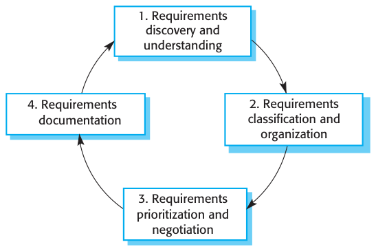
| Activity活动 | What happens核心工作 |
|---|---|
| 1. Discovery and understanding1. 发现与理解 | Interact with stakeholders, gather domain rules, and study existing system docs to uncover needs通过沟通与观察挖掘各方诉求，同时收集领域规则与既有系统资料 |
| 2. Classification and organization2. 分类与组织 | Group scattered requirements into coherent, structured clusters将零散需求按主题或模块归并为条理清晰的簇 |
| 3. Prioritization and negotiation3. 优先级排序与协商 | Rank competing needs and bring stakeholders together to negotiate trade-offs when requirements clash排定轻重缓急，组织各方当面协商并折中解决需求冲突 |
| 4. Documentation4. 文档化 | Record agreed requirements (from informal wiki notes to formal drafts) to feed the next spiral pass整理成白板笔记、维基或正式草稿，作为螺旋下一轮迭代的输入 |
To ensure no group is overlooked, analysts organize inputs by viewpoint（视角）—each representing one stakeholder class (e.g., end-users, managers) who must be consulted regularly so nobody feels sidelined and undermines the project. Because conflicting requests cannot all be built at once, teams apply MoSCoW prioritization:为避免遗漏任何群体，常按视角归集需求（每类利益相关者为一个视角），并定期回访以免遭到抵制。当多方需求冲突或预算有限时，常采用 MoSCoW 优先级法敲定取舍：
- Must have: indispensable features without which the system fails.Must have（必须有）：缺之则系统彻底不可用的底线功能。
- Should have: high-priority capabilities where a temporary manual workaround exists.Should have（应该有）：重要但短期内尚有人工变通方案的功能。
- Could have: desirable enhancements delivered if time and budget permit (dropped first when schedules slip).Could have（可以有）：锦上添花的增强项，进度吃紧时最先砍掉。
- Won't have this time: capabilities explicitly deferred to a future release.Won't have this time（本次不做）：各方一致同意延后至后续版本的内容。
Step 2: interviews and ethnography第 2 步：访谈与人种志（现场观察）
Core idea: Interviews capture what stakeholders consciously say they do and want, whereas ethnography reveals what people actually do in real practice.核心思路：访谈获取的是人们“嘴上说”的流程与诉求，而人种志（现场观察）揭示的是他们在真实工作中“实际怎么做”。
In interviews, analysts combine closed questions (structured prompts with fixed topics) and open questions (unscripted exploration). Purely open questions like "Tell me what you need" rarely yield detail, so skilled interviewers pair them with concrete springboards such as prototypes or existing forms.实际访谈通常混合使用封闭式提问（围绕固定清单逐项确认）与开放式提问（自由探讨痛点）；单纯丢出一句“你想要什么”往往毫无收获，常需借助原型草图或现行表单作为讨论抓手。
By contrast, ethnography（人种志，即现场观察）places the analyst directly inside the workplace to observe daily routines—uncovering tacit practices people omit because their habits have become second nature. It excels at capturing two often-hidden requirement sources:而人种志（现场观察）则派分析人员深入一线真实工位贴身观察，专门挖掘那些因“习以为常成自然”而在访谈中被忽略的隐性需求，尤其擅长捕捉两类关键信息：
- Actual work vs. official rules: For instance, air-traffic controllers routinely switch off overly sensitive conflict alarms and rely on informal spacing strategies instead of following the manual verbatim.实际做法与官方规程之差：例如空管员在真实作业中常嫌冲突告警过于敏感而干脆关掉，转而靠经验策略间隔飞机。
- Cooperation and situational awareness: Controllers monitor neighboring sectors to anticipate incoming traffic—meaning new software must preserve shared visibility across sector boundaries.默契协作与全局态势感知：空管员会顺便瞄一眼邻近扇区的动态以预判即将飞入的航班，因此新系统绝不能只展示本扇区而把周边信息藏起来。
Because ethnography focuses closely on current day-to-day habits, it explains existing practice well but contributes little to radical process innovation or organization-wide policy requirements.当然，人种志紧盯既有工作习惯，虽擅长还原现状，却不太善于启发颠覆性创新，也难以发现组织级宏观或跨部门法规需求。
| Dimension维度 | Interviews访谈 | Ethnography人种志（现场观察） |
|---|---|---|
| Captures捕获内容 | What stakeholders consciously say they do and want利益相关者意识层面说出的诉求与规则 | What workers actually do in real settings工作人员在真实高压环境下的实际动作 |
| Strengths擅长方面 | High-level overview, current pain points, stakeholder opinions and goals快速摸清业务全貌、现状痛点及各方主观诉求 | Tacit habits, real workflows, informal teamwork and situational awareness习以为常的隐性步骤、真实流转路径与跨工位默契协作 |
| Weaknesses薄弱方面 | Misses tacit knowledge and jargon nuances; hides organizational politics; lacks detail without a prototype难挖出默会常识，易被行话误导，往往掩盖组织政治，缺原型时细节空泛 | Does not spark major innovation; weak on enterprise-wide and domain constraints难以驱动流程革新，且不擅长获取组织级战略与合规类需求 |
Step 3: stories and scenarios第 3 步：故事与场景
Core idea: Stakeholders explain concrete real-life situations far more naturally than abstract rules, so analysts elicit requirements via narrative stories and structured five-part scenarios.核心思路：人们讲述具体经历远比概括抽象需求容易，因此可先用叙事“故事”引发讨论，再细化为五要素结构的“场景”。
Stories and scenarios turn abstract requirements into concrete usage episodes—with a story offering a high-level narrative spark and a scenario documenting one structured interaction session:故事与场景把干巴巴的需求条文还原成生动的交互片段：
| Aspect对比维度 | Story故事 | Scenario场景 |
|---|---|---|
| Form形式 | Informal narrative text通俗叙述性文字 | Structured description specifying exact inputs, outputs, and paths结构化描述，包含明确输入、输出与异常分支 |
| Level抽象层次 | High-level "big picture"宏观全景概述 | Detailed step-by-step trace of one session单次具体交互会话的精细推演 |
| Typical use常见用途 | Spark wide community discussion (e.g., on a wiki) before elaborating into scenarios激发广泛群体讨论（如维基协作），再演化为具体场景 | Propose concrete requirements and reconcile stakeholders who achieve the same goal differently提炼精确需求，并核对不同用户达成同一目标的操作差异 |
A complete scenario specifies five standard elements:一份完整的场景须包含五个标准要素：
- Initial assumption: What conditions hold true before the interaction starts.初始假设：场景开始时已成立的前提条件。
- Normal flow of events: The standard step-by-step sequence when everything goes smoothly.正常事件流：一切顺利时的标准操作步骤。
- Exception handling: What can go wrong and how the system responds.异常与处理：可能出现哪些故障或错误，以及系统如何应对。
- Concurrent activities: Other actions that may occur simultaneously.并发活动：同一时间可能正在发生哪些关联操作。
- Final state: The state of the system once the scenario finishes.最终状态：场景结束时系统所处的状态与结果。
Practice练习
Q1. (Choose and justify) A hospital plans an operating-theatre scheduling system. Which elicitation technique fits best for uncovering (a) the reports hospital administrators need and (b) how nurses and surgeons coordinate live theatre handovers? Justify both.Q1.（选择并论证）医院拟建手术室排程系统，你会用什么技术获取：(a) 行政管理者需要的统计报表；(b) 护士与外科医生实际如何衔接手术台次？请说明理由。
Answer
- (a) Interviews: Combine closed questions (report types, frequencies) with open follow-ups, then cross-check against existing forms because administrators can state explicit information needs—though interviews may still obscure departmental politics.(a) 访谈法：管理层明确知晓所需报表口径与周期，将封闭提问与开放探讨结合并核对现行报表即可，但须留意访谈容易掩盖科室利益博弈。
- (b) Ethnography (paired with prototyping): Live theatre coordination relies heavily on tacit, informal habits (mutual cover, watching neighboring theatre status) that staff do not mention in interviews; shadowing real sessions—and later showing schedule-screen prototypes—surfaces those implicit rules.(b) 人种志结合界面原型：手术室现场衔接高度依赖临场默契与周边态势感知，人员在访谈中难以言传；须由分析师实地跟班观察，再用排班原型进一步激发细节。
Q2. (Design) Write a scenario for "a student renews a library book online" covering all five standard parts.Q2.（设计）用标准五要素写出“学生在线续借图书”的完整场景。
Answer
- Initial assumption: The student is authenticated in the library portal and holds at least one active loan.初始假设：学生已登录图书馆门户，且名下至少有一本在借图书。
- Normal flow: The student opens "My loans," selects an item, and clicks Renew. The system verifies no hold/reservation exists and unpaid fines are below the limit, extends the due date by 14 days, displays a confirmation, and sends a confirmation email.正常事件流：学生进入“我的借阅”选中目标图书点击续借；系统确认该书无预约且欠费未超上限，顺延到期日 14 天，显示成功页面并发送确认邮件。
- Exception handling: If reserved by another user, refuse renewal and show expected return date; if fines exceed the threshold, refuse and state the balance owed; if the catalogue database is unreachable, show an error and leave the loan unchanged.异常处理：若已被他人预约，拒借并提示预计可借日期；若欠费超限，拒借并列出欠款金额；若目录库失联，报错且保持原借期不变。
- Concurrent activities: A librarian at the service desk may simultaneously process a physical return of the same copy; concurrency control ensures the later action sees the updated loan status.并发活动：同一时刻柜台管理员可能正在办理该书的线下归还操作，事务控制须保证后续请求读取最新状态。
- Final state: Either the loan due date is extended and logged, or the loan remains unchanged with an explanatory notice displayed.最终状态：借阅到期日已更新并留存日志，或保持原样并向用户展示明确拒绝原因。
Requirements specification and the requirements document ★★★需求规格说明与需求文档
Goal. Choose the right requirement notation, complete a structured specification form, trace the insulin dose decision table, and justify how detailed a requirements document should be.目标。选择合适的需求表示法，填写结构化规格说明表单，演算胰岛素剂量决策表，并论证需求文档应写到多详细。
Step 1: user and system requirements第 1 步：用户需求与系统需求
Requirements specifications are written at two distinct levels for two distinct audiences. User requirements are meant for non-technical clients and managers, so they rely on plain natural language, simple tables, and diagrams to describe only observable external behaviour without design jargon. System requirements serve as the technical specification and often form part of a binding contract; although they focus on what the system must do rather than how, design considerations cannot be excluded completely for three reasons:需求规格说明分两个层次撰写，分别面向不同读者。用户需求主要面向非技术背景的客户与管理人员，因此采用自然语言、简单表格与直观图表，仅描述外部可见行为而不涉足设计细节或行话。系统需求则更加细致，常作为正式合同的技术依据；尽管它聚焦于“做什么”而非“怎么做”，但设计信息仍不可能完全剥离，原因有三：
- An initial high-level architecture may be needed to organize and structure the document itself.文档本身可能需要借助一个初始高层体系结构来划分章节、理顺结构。
- The new system must interoperate with existing systems, whose interfaces and constraints directly restrict design choices.新系统必须与现有系统协同工作，已有系统的接口与约束会直接限制设计空间。
- A stringent non-functional requirement (such as high reliability via N-version programming) or an external regulator may mandate a specific architecture.严格的非功能需求（例如通过 N 版本编程保障高可靠性）或行业监管机构可能强制要求采用特定体系结构。
| Notation表示法 | Description & trade-offs说明与权衡 |
|---|---|
| Natural language sentences自然语言句子 | Individually numbered sentences, each expressing one requirement; easy to read, but prone to ambiguity逐条编号的自然语言句子，每句表达一条需求；通俗易懂，但容易产生歧义 |
| Structured natural language结构化自然语言 | Natural language constrained to a standard form or template whose fixed fields capture specific aspects of a requirement限定在标准表单或模板内的自然语言，以固定字段规范需求的各个要素 |
| Graphical notations图形化表示法 | Visual models paired with text annotations—most commonly UML use case diagrams and sequence diagrams图形模型配以文字注释——最常用的是 UML 用例图和时序图 |
| Mathematical specifications数学规格说明 | Formal models based on finite-state machines or sets; mathematically unambiguous, yet hard for most clients to read or verify, making them reluctant to sign them into contracts基于有限状态机或集合论的形式化模型；在数学上无歧义，但绝大多数客户看不懂也难以核验，因而往往不愿将其写入合同 |
Step 2: natural language, with rules第 2 步：带规范的自然语言
Core idea: natural language is understood by everyone but invites ambiguity, so discipline its style with fixed writing rules.核心思路：自然语言人人能读懂，但极易含混不清，因此必须用固定的书写规范加以约束。
Unconstrained prose frequently suffers from vague phrasing, readers and authors assuming different domain conventions, multiple requirements bundled into a single sentence, and inconsistent document organization. Even so, natural language remains the universal baseline because no formal alternative has achieved broad customer acceptance. Five practical guidelines keep ambiguity in check:不加约束的自然语言常常暴露出四大毛病：措辞含糊、作者与读者的专业背景有落差、一句话里硬塞进多条需求，以及文档缺乏统一结构。尽管如此，自然语言仍是实际工程中的首选，因为尚未有哪种替代表示法能被客户广泛接受。遵循以下五条准则可有效减少误解：
- Standardize format: Give each requirement the same template style, written concisely in one or two sentences.格式统一：所有需求采用固定句式模板，控制在简短的一两句话之内。
- Distinguish obligation cleanly: Reserve "shall" strictly for mandatory requirements and "should" for desirable ones.区分强制与期望：强制性需求统一使用 "shall"（必须/应当），期望性需求统一使用 "should"（宜/尽量）。
- Highlight key elements: Use formatting or emphasis to make critical subjects, actions, or numeric thresholds stand out.突出关键词：通过排版加粗等方式凸显核心对象、关键动作或量化阈值。
- Avoid jargon and unexplained abbreviations: Write in plain terminology accessible to both clients and developers.避免行话与生僻缩写：用双方都能理解的通俗专业词汇撰写。
- Attach rationale and source: Explain why the requirement exists and record who proposed it, so teams know whom to consult if a change is later proposed.附带理由与来源：注明每条需求为何提出（rationale）及由谁提出（source），日后需求变更时便能迅速找到拍板与沟通对象。
Example: "The pump shall measure the blood sugar every 10 minutes. Rationale: blood sugar changes slowly, so more frequent sampling is unnecessary."示例：“胰岛素泵必须（shall）每 10 分钟测量一次血糖。理由说明：血糖变化较为缓慢，无需更频繁地采样。”
Step 3: structured and tabular specification第 3 步：结构化与表格式规格说明
Core idea: structured templates trap missing inputs, outputs, conditions, and side effects by forcing every requirement into standardized fields.核心思路：结构化模板通过强制填写输入、输出、前提条件与副作用等固定字段，避免书写遗漏，而决策表则能无歧义地锁定复杂运算规则。
When plain sentences start feeling too loose, a structured specification（结构化规格说明）imposes discipline without abandoning readable English by capturing each function on a standard seven-field form.当单靠自然语言容易遗漏边界信息时，结构化规格说明在不放弃可读性的前提下引入严谨格式，将每个功能的规格落入标准七栏表单之中：
| Field字段 | Content填写内容 |
|---|---|
| Function & description功能与描述 | A concise summary of the function or entity being specified简要概括所规格化的功能或实体 |
| Inputs & source输入与来源 | Data values consumed and where they come from接收的输入数据及其来源 |
| Outputs & destination输出与去向 | Results produced and where they are sent产生的输出结果及其去向 |
| Requires前置依赖 / 所需信息 | Stored data, context, or other entities required to perform the computation完成该计算所需依赖的已存信息或其他实体 |
| Action执行动作 | The exact processing or transformation carried out具体执行的处理逻辑或运算步骤 |
| Precondition & postcondition前置条件与后置条件 | What must hold true immediately before the function runs, and what holds true once it finishes调用前必须满足的状态约束，以及执行完毕后必须成立的状态结果 |
| Side effects副作用 | Any persistent state changes or secondary effects beyond the primary output (if any)除直接输出外对系统状态产生的其他影响（如无则注明“无”） |

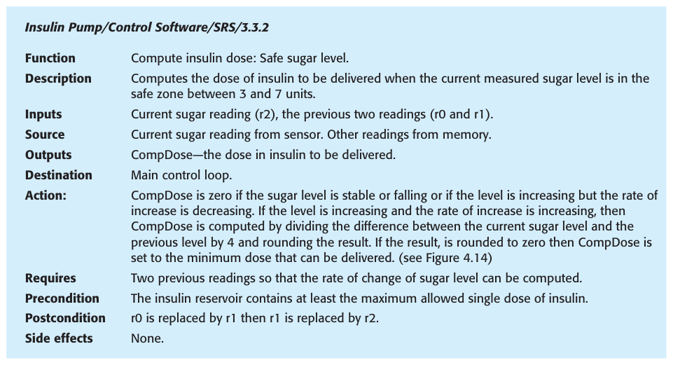
Even on a form, multi-branch numeric calculations remain awkward to express purely in prose. Pairing the form with a decision table eliminates ambiguity by enumerating every mutually exclusive condition alongside its exact formula—as in the insulin pump's safe-zone dosing rule based on the current reading and the two preceding ones.即便用了结构化表单，涉及多分支条件和数值运算的逻辑依然很难用文字讲清。此时把表单与决策表搭配使用，把每一种互斥工况及对应动作并列写出即可彻底消除歧义——典型的例子就是胰岛素泵依据当前读数及前两次读数计算安全区剂量的规则。
Hand-trace steps for any \((r_0,r_1,r_2)\):考场手工追踪三步法：
- Compare \(r_2\) with \(r_1\): if \(r_2\le r_1\) (falling or flat), return \(\text{CompDose} = 0\) immediately.先比 \(r_2\) 与 \(r_1\)：若 \(r_2\le r_1\)（下降或持平），直接得 \(\text{CompDose} = 0\)。
- Compare the latest rise \((r_2-r_1)\) with the previous rise \((r_1-r_0)\): if the rise is slowing \((r_2-r_1 < r_1-r_0)\), return \(0\).再比最近升幅 \((r_2-r_1)\) 与上次升幅 \((r_1-r_0)\)：若升速放缓，同样给 \(0\)。
- Otherwise (steady or accelerating rise), compute \(n = \text{round}((r_2-r_1)/4)\); deliver \(\text{MinimumDose}\) if \(n=0\), else deliver \(n\).若匀速或加速上升，则算 \(n = \text{round}((r_2-r_1)/4)\)；若取整为 0 则用 \(\text{MinimumDose}\)，否则输出 \(n\)。
Step 4: use cases and the requirements document第 4 步：用例与需求文档
A use case（用例）captures a discrete user–system interaction through a stick-figure diagram paired with explanatory text: actors (people or external systems) connect to named ellipses representing individual tasks such as "Renew book". Because use cases zoom into a single low-level interaction, they are often too fine-grained for early stakeholder alignment and become most valuable once system design begins (Chapter 4).用例通过简图与配套说明刻画用户与系统之间的一次交互：小人符号代表参与者（人或外部系统），椭圆代表具体交互任务（如“续借图书”）。由于用例粒度较细，直接拿它与高层利益相关者讨论往往偏琐碎，它更常用于衔接后续系统设计（第 4 章）。
All verified requirements ultimately come together in the software requirements document（软件需求规格说明书, SRS）, the official statement of what developers must implement, commonly structured along the classic IEEE template:各类需求最终汇总形成软件需求规格说明书（SRS），作为开发团队必须交付内容的正式依据，其标准篇章通常借鉴经典的 IEEE 结构：
| Chapter章节 | Content核心内容 |
|---|---|
| Preface前言 | Intended readership and version history with rationale and change summaries预期读者对象，以及包含变更理由与摘要的版本历史 |
| Introduction引言 | Why the system is needed, its overall functions, and how it fits with external systems建设背景与必要性、系统总体功能，以及与周边系统的协作方式 |
| Glossary术语表 | Definitions of domain and technical terms assuming no prior reader expertise界定业务与技术术语，假定读者不具备先验背景知识 |
| User requirements definition用户需求定义 | User services and high-level non-functional requirements expressed via plain language and diagrams以自然语言和图表描述用户所需服务与高层非功能需求 |
| System architecture系统体系结构 | High-level overview of the anticipated architecture, highlighting reused components预期体系结构的高层概览，并标明拟复用的构件 |
| System requirements specification系统需求规格说明 | Detailed functional and non-functional requirements together with external system interfaces详细的功能与非功能需求规格，以及与其他系统的接口定义 |
| System models系统模型 | Graphical models showing relationships among components, the system, and its environment刻画构件、系统与其环境之间关系的图形模型 |
| System evolution系统演化 | Underlying design assumptions and anticipated future changes in hardware or user needs系统所依赖的基本假设及可预见的硬件或需求演变方向 |
| Appendices附录 | Application-specific hardware, database, or platform details特定应用的硬件配置、数据库模式等补充细节 |
| Index索引 | Alphabetical index alongside indexes of diagrams and functions字母索引及图表与功能清单索引 |
Because the SRS must balance the competing needs of five very different reader groups, its format and depth are always a practical compromise:由于 SRS 须同时服务五类立场各异的读者，其体例与详略程度本质上是一种工程折中：
- System customers review it to check business fit and specify requirement changes.客户方用来核对功能是否贴合实际诉求，并据此提出需求变更。
- Managers rely on it to prepare project bids, cost estimates, and development plans.项目管理者据以制定投标预算与研发计划。
- System engineers use it to understand cleanly what must be architected and built.系统工程师据此厘清待构建系统的精确轮廓。
- Test engineers derive system validation tests directly from its requirements.测试工程师直接从中推导出确认测试用例。
- Maintenance engineers consult it later to trace system structure and component dependencies.维护工程师日后靠它理解系统脉络与各部分依赖关系。
The appropriate level of detail depends directly on organizational boundaries, system criticality, and process style:至于文档该写多厚，则取决于协作边界、系统关键性与开发模式：
- Comprehensive & detailed when development is outsourced under contract, split across distributed teams, or involves safety/security-critical systems where hazards must be thoroughly analysed upfront.详尽严格型：用于外包合同开发、多团队跨地域协同，或高安全关键系统——后者的隐患必须在编码前完成严谨分析。
- Concise & high-level for generic software products, business systems, or in-house iterative builds: capture core user requirements and key non-functional constraints upfront, then elaborate details incrementally.简明概要型：用于通用商品软件、内部业务系统或院内迭代开发——只定下用户需求与核心非功能底线，细节随迭代逐步充实。
- Lightweight agile teams capture short user stories on index cards or backlogs, though keeping a brief summary document of system-wide and non-functional requirements remains valuable.敏捷轻量型：以卡片或待办条目记录简短用户故事，但保留一份全系统级约束与非功能底线的简要备忘依然非常有益。
Practice练习
Q1. (Trace) Use the insulin dose rule to compute \(\text{CompDose}\) for \((r_0,r_1,r_2)\) = (1, 3, 7), (5, 6, 7), (4, 6, 7), and (7, 5, 3).Q1.（手工演算）依据胰岛素剂量规则，分别计算 \((r_0,r_1,r_2)\) 为 (1, 3, 7)、(5, 6, 7)、(4, 6, 7) 与 (7, 5, 3) 时的 \(\text{CompDose}\)。
Answer
- (1, 3, 7): \(r_2 > r_1\) and latest rise \(7-3=4 \ge 3-1=2\) (rise accelerating); \(\text{round}(4/4)=1 \implies \text{CompDose} = \mathbf{1}\).(1, 3, 7)：\(r_2 > r_1\) 且最近升幅 \(7-3=4 \ge 3-1=2\)（加速上升），\(\text{round}(4/4)=1\)，故 \(\text{CompDose} = \mathbf{1}\)。
- (5, 6, 7): \(r_2 > r_1\) and \(7-6=1 \ge 6-5=1\) (rise steady); \(\text{round}(1/4)=\text{round}(0.25)=0 \implies \text{CompDose} = \mathbf{\text{MinimumDose}}\).(5, 6, 7)：\(r_2 > r_1\) 且 \(1 \ge 1\)（匀速上升），\(\text{round}(1/4)=\text{round}(0.25)=0\)，触发最小剂量兜底：\(\text{CompDose} = \mathbf{\text{MinimumDose}}\)。
- (4, 6, 7): Latest rise \(7-6=1 < 6-4=2\) (rise slowing) \(\implies \text{CompDose} = \mathbf{0}\).(4, 6, 7)：最近升幅 \(7-6=1 < 6-4=2\)（上升减缓），故 \(\text{CompDose} = \mathbf{0}\)。
- (7, 5, 3): \(r_2=3 < r_1=5\) (falling) \(\implies \text{CompDose} = \mathbf{0}\).(7, 5, 3)：\(r_2 < r_1\)（血糖下降），故 \(\text{CompDose} = \mathbf{0}\)。
Q2. (Explain) Why should user requirements omit design details, whereas system requirements cannot avoid them completely?Q2.（解释）为什么用户需求应避免写进设计细节，而系统需求却无法彻底避免？
Answer
User requirements are written for non-technical clients and managers to validate external behaviour. Injecting design detail clutters business needs and prematurely locks in one solution—which in competitive tendering would block contractors from proposing better architectures.用户需求主要供非技术背景的客户与管理层核对外在行为，混入设计细节不仅会掩盖真实业务诉求，还会过早钉死实现方案（在招投标中更会妨碍承包商给出更优架构）。
System requirements must be detailed enough to serve as an engineering blueprint and legal contract, so three sources inevitably pull in architectural information: (1) an initial architecture needed to structure the SRS itself, (2) interoperability constraints from existing systems, and (3) a specific architecture mandated by strict non-functional requirements or regulators.系统需求则须具体到足以作为研发蓝图与合同条款，因此三类情形必然带入设计信息：（1）组织规格文档本身所需的初始体系结构；（2）必须兼容现有系统的接口与设计限制；（3）为达成关键非功能需求或合规要求而必须采用的特定体系结构。
Q3. (Rewrite) Rewrite "The system should have good response and the UI should be OK for everybody; logs must be kept for a long time" following the five natural-language guidelines.Q3.（改写）请应用五条自然语言写作准则，改写下面这句含糊需求：“The system should have good response and the UI should be OK for everybody; logs must be kept for a long time.”
Answer
The original draft bundles three separate requirements into one sentence, relies on unmeasurable adjectives ("good", "OK", "long time"), and uses "should"/"must" inconsistently. Splitting into one numbered, testable statement per requirement with rationale and source (illustrative targets to confirm with stakeholders):原句将三条独立需求混写在一句话中，使用不可测试的模糊词，且混用了情态词。拆分成独立编号需求并补充量化指标、理由与来源（数值为示例，须与利益相关者确认）：
- R1: 95% of search requests shall return results within 2 s under a load of 200 concurrent users. Rationale: reception staff query records while patients wait at the counter. Source: clinic managers.R1：在 200 名并发用户负载下，95% 的检索请求必须（shall）在 2 s 内返回结果。理由说明：前台需在患者现场等候时即时调档。来源：诊所管理层。
- R2: A first-time user should complete the "register patient" task unaided within 10 minutes after reading a one-page guide. Rationale: high turnover among reception staff makes fast onboarding essential. Source: head receptionist.R2：首次使用系统的用户在阅读一页操作指南后，应当（should）能在 10 分钟内独立完成“患者登记”任务。理由说明：前台流动性较高，需降低培训门槛。来源：接待主管。
- R3: The system shall retain immutable audit logs for 7 years from creation. Rationale: statutory medical record retention period. Source: hospital legal office.R3：系统必须（shall）自生成之日起将不可篡改的审计日志保存满 7 年。理由说明：遵守法定医疗档案留存年限。来源：医院法务部门。
思路：先一分为三，再用“shall/should + 可测数字 + 理由 + 提出人”逐条改写。
Requirements validation ★★需求确认
Goal. State the five validation checks, explain the three validation techniques, and match concrete requirement defects to the check that uncovers them.目标。说出五项需求确认检查维度与三种确认技术，并能将具体需求缺陷准确对应到相应的检查项。
Core idea: requirements validation verifies that the specification truly describes the system the customer needs and expects.核心思路：需求确认旨在核验文档中所写的需求是否真实反映了客户想要的系统——五项检查查缺陷，三种技术落方法。
| Check检查维度 | Question to verify核查的核心问题 |
|---|---|
| Validity有效性 | Do the requirements accurately reflect current user needs, given that business circumstances may have shifted since elicitation?需求是否真实反映用户的当前需要？（自获取以来业务流程或外部条件可能已变） |
| Consistency一致性 | Are all requirements free of mutual conflicts—such as contradictory constraints or inconsistent definitions of the same function?各条需求之间是否存在矛盾，例如约束条件互斥或对同一功能写出两种说法？ |
| Completeness完备性 | Are every intended service, boundary case, and constraint explicitly defined with nothing left unspecified?用户期望的所有功能、异常分支与约束是否均已定义完整？ |
| Realism现实性 | Can these requirements actually be implemented with available technology within the project's budget and schedule?在现有技术条件、预算经费与工期限制下，这些需求能否真实落地？ |
| Verifiability可验证性 | Can objective tests demonstrate that the delivered system meets each requirement, preventing customer–contractor disputes at acceptance?能否设计出一组客观测试来证明交付系统满足每条需求，从而减少验收时的扯皮争议？ |
Three practical validation techniques can be applied individually or combined to surface different classes of defects:工程中常用的三种确认技术可单独采用，也常配合使用以暴露不同层面的问题：
| Technique确认技术 | How it works实施机制 |
|---|---|
| Requirements review（需求评审） | A joint customer–developer team inspects the SRS methodically for omissions, anomalies, and contradictions, logs every issue, and negotiates resolutions.由客户与开发方组成联合小组逐行审阅需求文档，排查错漏、异常与矛盾之处，集中记录后再协商解决。 |
| Prototyping（原型法） | Developers build an executable model so end-users and customers can try workflows firsthand and feed back misunderstandings or missing features.构建可运行原型交由最终用户与客户上手试用，通过直观体验暴露误解并补充真实反馈。 |
| Test-case generation（测试用例生成） | Engineers draft acceptance tests directly from requirements during validation. Whenever a requirement is impossible or awkward to write a test for, that signals an ambiguity or unrealistic demand that must be revisited immediately (closely aligned with Chapter 7's test-first thinking).在确认阶段即尝试依据需求编写测试用例。若发现某条需求根本写不出测试或极难设计测试，往往意味着该需求本身含糊或难以实现，必须马上推敲修改（与第 7 章测试先行理念相呼应）。 |
Validation is inherently challenging because stakeholders must mentally picture an unfamiliar system in their daily workflow. Even thorough validation leaves some latent misunderstandings, which is why change management remains essential after baseline sign-off.需求确认天生棘手，因为用户不得不在头脑中“脑补”尚未建成的系统如何融入日常工作。即便经过多轮确认，仍会有隐性问题在后续使用中浮现，这也是需求签字后依然需要完善变更管理的原因。
Practice练习
Q1. (Identify the check) Match each requirement defect below to the validation check that detects it:Q1.（识别检查项）请指出下列各条需求缺陷分别会由哪一项确认检查发现：
- "The system shall be user friendly."“系统应当对用户友好。”
- R4 specifies daily reports at 17:00, whereas R9 specifies daily reports at 18:00.R4 规定每日报表于 17:00 生成，而 R9 规定于 18:00 生成。
- No requirement specifies what the system does when a payment card is declined.没有任何需求说明银行卡被拒付时系统应如何处理。
- Real-time 3D full-body scanning demanded on a budget that barely funds a basic web app.仅够开发基础网页应用的预算下，要求实现实时三维全身扫描。
- A requirement faithfully automating an internal approval workflow that the company abolished last year.要求忠实实现一项去年已被公司正式废止的审批流。
Answer
- Verifiability: "user friendly" cannot be objectively tested until replaced by measurable usability criteria.可验证性：在量化为可测指标前无法通过客观测试判定。
- Consistency: R4 and R9 give mutually contradictory definitions of the same reporting behaviour.一致性：对同一日报功能的触发时间存在前后冲突。
- Completeness: an essential failure-handling behaviour is missing.完备性：遗漏了关键异常情况的处置需求。
- Realism: cannot be achieved within the given budget and technological constraints.现实性：在给定预算与资源约束下无法工程落地。
- Validity: reflects outdated practice rather than what users actually need today.有效性：需求已脱离当前真实的业务诉求。
Q2. (Explain) To minimize logging errors during a formal requirements review, an organization assigns two scribes. Describe two practical ways to organize their work.Q2.（解释）为减少正式需求评审中的记录差错，某组织决定安排两名记录员。请说明可采用哪两种具体分工方式。
Answer
- Redundant parallel recording: Both scribes record every defect, decision, and action independently without comparing notes during the meeting. Afterward they cross-check line by line and reconcile any discrepancy with the review chair before publishing a single agreed log (analogous to double data entry).双人独立冗余记录：两名记录员在会上彼此独立地完整记录所有问题、决议与行动项，不互看笔记；会后逐行比对两份记录，就漏记或出入之处与评审主席核实后合并为唯一正式纪要（类似双人双录校对）。
- Division of labour (defects vs decisions / recorder vs checker): Either one scribe logs technical defects and severity while the other tracks decisions, owners, and deadlines—or the second scribe acts as a real-time checker comparing entries against spoken discussion.职责切分（按内容分工或一记一核）：一名记录缺陷与严重程度，另一名专记决议事项、责任人与截止日期；或者一人负责主记录、另一人实时对照发言内容现场复核纠偏。
- Safeguard common to both: Before closing each topic or ending the session, the review chair reads back the logged decisions aloud while memories are fresh, preventing corrupted notes from derailing downstream negotiation.共同保障动作：不论采用哪种方式，评审主席都应在散会前当场复述核心记录，趁记忆清晰及时纠错，避免有误的纪要误导后续修改协商。
Requirements change and management ★★需求变更与管理
Goal. Explain why requirements evolve continuously, walk through the three stages of formal change management, and trace ripple effects using a traceability matrix.目标。说明需求持续变化的根源，梳理正式变更管理的三个阶段，并能利用可追溯性矩阵追踪变更的连锁影响。
Step 1: why requirements change第 1 步：需求为何必然变化
Core idea: requirements never freeze cleanly because the operating environment, organizational buyers, and stakeholder priorities continually shift.核心思路：外部环境在变、买单方与使用方诉求不同、多方优先级博弈不断重谈，决定了一套大型系统的需求不可能一成不变。
- Changing business & technical environment: New hardware arrives, partner systems change interfaces, strategic priorities shift, and new regulations take effect.业务与技术环境变化：新硬件上线、周边协同系统调整、组织战略转向或新法规出台都会倒逼需求修正。
- Split between buyers and users: The managers or sponsors who fund a system are rarely the end-users who operate it daily, creating persistent tension between cost control and day-to-day usability.出钱方与用的人分离：为系统买单的管理层和一线操作人员往往不是同一批人，预算控制与一线便利诉求天然容易冲突。
- Conflicting stakeholder priorities: Large systems serve diverse user communities whose compromises frequently have to be renegotiated once development exposes trade-offs.多元利益相关者优先级冲突：大型系统面向众多群体，开发过程中一旦暴露取舍代价，早期达成的折中方案往往需要推翻重谈。
In planning, separate enduring requirements（稳定需求）—tied to core organizational work that changes slowly—from volatile requirements（易变需求）—tied to supporting workflows or policies that change frequently.规划时应有意识地区分与组织核心主业绑定、长期稳定的稳定需求（enduring requirements），以及随配套流程、政策频繁波动的易变需求（volatile requirements）。
Step 2: requirements management第 2 步：需求管理
Requirements management（需求管理）tracks individual requirements and their dependency links across the lifecycle so teams can predict the ripple effect of any proposed change. Effective planning establishes four mechanisms upfront:需求管理旨在系统化跟踪每条需求及其相互依赖关系，使团队能在变化来临时精准预估波及范围。前期规划须敲定以下四项要点：
| Issue管理议题 | Decision needed核心决策内容 |
|---|---|
| Requirements identification需求标识 | Assign a unique ID to every requirement so it can be referenced unambiguously and tracked in traceability checks.为每条需求分配全局唯一编号，确保交叉引用和追溯评估时指代明确。 |
| Change management process变更管理过程 | Define the workflow and decision authority for assessing the impact and cost of proposed changes.规定由谁、按何种流程对变更提案开展影响分析与成本估算。 |
| Traceability policies可追溯性策略 | Decide which dependency links (between requirements, sources, and design/tests) must be recorded and kept current.明确须记录哪些依赖链接（需求间、需求与来源/设计/测试间），以及如何随版本同步更新。 |
| Tool support工具支持 | Select appropriate tooling—ranging from shared spreadsheets/databases for small systems to dedicated tools such as DOORS for large programs.按项目规模选型：小型系统可用共享表格或轻量数据库，大型复杂项目则使用 DOORS 等专业工具。 |
Three practical tool capabilities—requirement storage (shared repository), change tracking (workflow & status log), and traceability management (link analysis)—hold these records together. Traceability captures three fundamental link types:实际支撑需要三类工具能力：统一需求存储库、变更状态跟踪和可追溯链路检索。其中，可追溯性重点维系以下三类关联：
- Source traceability: Links each requirement back to the stakeholder or document that proposed it.来源可追溯：需求 \(\to\) 提出该需求的利益相关者或原始依据。
- Requirements traceability: Links dependent requirements to one another.需求间可追溯：需求 \(\to\) 依赖或受其约束的其他需求。
- Design traceability: Links each requirement forward to the design components that implement it.设计可追溯：需求 \(\to\) 具体实现该需求的设计构件（及对应测试）。
A traceability matrix puts requirements along both rows and columns, using a mark to indicate "row depends on column." To evaluate a change to requirement \(R_j\), scan down column \(R_j\) for every marked row \(R_i\), then recursively check each affected \(R_i\)'s column to catch multi-hop chains before inspecting their linked design components.可追溯性矩阵将全部需求同时列作行与列，单元格打标记代表“该行依赖于该列”。考题若问修改 \(R_j\) 会波及谁：先顺着 \(R_j\) 所在竖列往下扫出所有打标记的行，再把找到的每一条反查其对应的列，顺藤摸瓜追完整条传递依赖链，最后一并核对关联的设计构件。
Step 3: change management第 3 步：变更管理
Core idea: no proposed change goes straight into code—it passes sequentially through problem validation, impact & cost analysis, and controlled implementation.核心思路：任何需求变更都不能拍脑袋直接改代码，必须严格走完“问题核实 \(\to\) 影响与成本评估 \(\to\) 受控实施”三部曲。

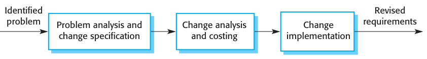
| Stage阶段 | Activity核心活动 |
|---|---|
| 1. Problem analysis and change specification1. 问题分析与变更说明 | Verify that the reported problem or change request is genuine and well-formed, feeding findings back to the requestor who may refine or withdraw the proposal.核查所提交的问题或变更提案是否属实、表述是否成立，并将分析结果反馈给请求人以便修订或撤回。 |
| 2. Change analysis and costing2. 变更分析与成本估算 | Use traceability data and system knowledge to measure the ripple effect and estimate the cost of modifying the SRS, design, and code—producing the data needed to accept or reject the change.借助可追溯性与系统知识评估修改波及面，并估算改文档、改设计与改代码的综合成本，以此作为批复或驳回变更的决策依据。 |
| 3. Change implementation3. 变更实现 | Update the requirements document and, where affected, the software design, implementation, and tests consistently.同步修订需求文档，并在受影响范围内跟进修改设计、实现代码与测试。 |
- Emergency changes: When production demands an urgent hotfix first, the SRS must still be updated immediately afterward; otherwise, documentation updates are forgotten and specification drifts apart from the live system.紧急变更风险：若生产故障迫使团队先改线上代码再补流程，事后必须立刻回写 SRS，否则文档更新极易被遗忘，导致规格说明与真实系统渐行渐远。
- Agile trade-offs: Users re-prioritize the backlog and trade off existing scope for new stories—flexible, yet limited because end-users often underestimate technical implementation costs.敏捷变更权衡：敏捷团队常请客户重新排定待办优先级并置换旧特性；做法灵活，但弱点是业务用户往往低估改动的真实技术成本。
Practice练习
Q1. (Explain) State three reasons why requirements change after delivery, name the three stages of formal change management, and identify what Stage 2 produces.Q1.（解释）说明系统交付后需求仍会变化的三条原因，列出正式变更管理的三个阶段，并指出第 2 阶段的产出结果。
Answer
Three drivers of change:三条变化动因：
- The business and technical environment evolves (new hardware, partner interfaces, organizational priorities, or laws).业务与技术环境演变（新硬件、互联系统调整、战略优先级或法规变更）。
- Buyers (who pay) and end-users (who operate the system) are seldom the same people, creating competing demands.出钱买单的人与一线使用者往往不是同一批人，各自诉求产生摩擦。
- Large systems have diverse stakeholders whose conflicting priorities often force compromises to be revisited.大型系统涉及多方利益相关者，早期的优先级妥协常需重新协商。
Three stages & Stage 2 output: Problem analysis and change specification \(\to\) Change analysis and costing \(\to\) Change implementation. Stage 2 produces a traceability-based impact assessment alongside a cost estimate covering updates to the SRS, design, and implementation, providing the evidence base for accepting or rejecting the change.三阶段及第 2 阶段产出：问题分析与变更说明 \(\to\) 变更分析与成本估算 \(\to\) 变更实现。第 2 阶段产出一份依据可追溯性梳理出的影响范围评估报告，以及涵盖修订 SRS、设计与代码在内的成本估算，用于拍板是否批准变更。
Q2. (Beyond the text) In the traceability matrix below, an x means "row depends on column":Q2.（迁移应用）在下示可追溯性矩阵中，x 表示“行依赖于列”：
| R1 | R2 | R3 | R4 | R5 | R6 | |
|---|---|---|---|---|---|---|
| R1 | ||||||
| R2 | x | |||||
| R3 | x | |||||
| R4 | x | |||||
| R5 | x | |||||
| R6 |
(a) Which requirements must be re-examined if R2 changes? (b) If R1 changes? (c) If R6 changes?（a）若 R2 变更，哪些需求须重新审查？（b）若 R1 变更呢？（c）若 R6 变更呢？
Answer
Scan down the changed requirement's column to find directly dependent rows, then chase their columns transitively (and inspect linked design components for every affected requirement):按“竖看列找直接依赖，再顺藤追踪间接传递链”的原则排查（并对每条受影响需求同步核对关联的设计构件）：
- (a) R2 changes: Scanning column R2 finds R3 and R4 directly; scanning columns R3 and R4 finds R5 depending on R4. Affected: R3, R4, and R5 (also sanity-check that revised R2 does not contradict R1).(a) R2 变更：沿 R2 列往下直接受影响的有 R3、R4；再查 R4 列发现 R5 依赖 R4。受影响需求：R3、R4、R5（同时顺便确认修改后的 R2 不与 R1 冲突）。
- (b) R1 changes: Scanning column R1 hits R2, which propagates as above to R3, R4, and R5. Affected: R2, R3, R4, and R5.(b) R1 变更：沿 R1 列命中 R2，顺着 R2 链继续传导至 R3、R4、R5。受影响需求：R2、R3、R4、R5。
- (c) R6 changes: Column R6 is empty, so no other requirement is affected (only the design components and tests linked directly to R6 need review).(c) R6 变更：R6 列全空，故无其他连带需求受影响（仅需检查与 R6 本身关联的设计构件与测试）。
Terms to recognise ★需要认识的术语
| Term术语 | What to know核心要点 |
|---|---|
| Domain requirements（领域需求） | Requirements dictated by the application domain rather than user wishes; key risk: domain experts take them for granted, so engineers may overlook missing ones.源于应用领域本身而非用户主观愿望的需求；主要风险在于领域专家往往视为常识而不提，导致工程师漏记。 |
| Information requirements（信息需求） | What information staff actually need to perform their work; replaces a detailed functional specification when buying and tailoring a commercial off-the-shelf product.人们开展日常工作所需的信息内容；当采用现成商用套装软件时，它常取代详尽的功能规格说明。 |
| Viewpoint（视角） | Organizes requirements around a coherent class of stakeholders and shows whom to consult when gathering each set of needs.按特定利益相关者群体的站位组织需求，用于指明哪类需求该找哪方收集。 |
| VOLERE | A structured requirements shell that documents every requirement on a standardized card alongside its rationale, dependencies, source, and supporting evidence.一种结构化需求卡片方法，要求把每条需求连同其理由、依赖关系、提出人与支撑材料一起记录在标准化卡片上。 |
| N-version programmingN 版本编程 | Fault-tolerance approach in which independently developed software versions execute in parallel and vote on outputs—an architectural requirement often driven by ultra-high reliability needs.一种高可靠容错措施：由独立团队分别开发多个版本并行运行并投票表决结果，这种可靠性目标往往会强制决定系统体系结构。 |
| Wicked problem（棘手问题） | An ill-defined problem that cannot be formulated completely upfront, guaranteeing that requirements remain incomplete and evolve continuously.难以在起点就界定清楚的问题，因此其需求必然不完整且会持续演变。 |
| Enduring and volatile requirements稳定需求与易变需求 | Enduring: tied to core domain activities, changing slowly; volatile: tied to supporting processes or policies, changing frequently.稳定需求对应核心主业，演变缓慢；易变需求对应配套支持活动或政策流程，变化频繁。 |
| DOORS | An industrial requirements management system supporting link tracking and version control; small teams often manage with shared spreadsheets or lightweight databases instead.商业化的专业需求管理工具，支持版本与可追溯链路管理；小型系统通常用共享表格和简单数据库替代。 |
Exam-style questions考试题型练习
Q1. (Classification and quantification) A university plans a campus parking system and gathers six draft statements:Q1.（分类与量化）某大学拟建校园停车系统，初步收集到六条需求陈述：
- A driver shall be able to reserve a space up to 24 hours in advance.驾驶人应能提前至多 24 小时预约车位。
- The system should be easy to use.系统应当易于使用。
- Payment records shall be kept as national data-protection law requires.支付记录须按国家数据保护法规定留存。
- The system shall be written in Java and run on the university's existing Linux servers.系统须采用 Java 编写，并运行在大学现有的 Linux 服务器上。
- The system shall be available all day.系统应当全天可用。
- Staff shall sign in with their university single sign-on account.教职工应使用大学单点登录（SSO）账户登录。
- Classify each statement as functional or non-functional (product, organizational, or external), naming its subtype. (6 marks)将每条陈述分类为功能需求或非功能需求（产品、组织或外部需求），并标明子类别。（6 分）
- Rewrite (ii) and (v) into testable requirements and state how each is verified. (4 marks)将（ii）和（v）改写为可测试的量化需求，并说明各自的验证方法。（4 分）
- Why are non-functional requirements often more critical than any single functional requirement? (2 marks)为什么非功能需求往往比单条功能需求更关键？（2 分）
Answer
(a) Classification:(a) 分类结果：
- (i) Functional requirement (a user service).(i) 功能需求（提供给用户的业务服务）。
- (ii) Non-functional \(\to\) Product, usability (stated only as an untestable goal).(ii) 非功能需求 \(\to\) 产品需求，可用性（目前仅是不可测试的空泛目标）。
- (iii) Non-functional \(\to\) External, legislative.(iii) 非功能需求 \(\to\) 外部需求，法律合规类。
- (iv) Non-functional \(\to\) Organizational: implementation/development constraint (Java) and environmental constraint (existing Linux servers).(iv) 非功能需求 \(\to\) 组织需求：兼含开发实现约束（Java）与环境约束（现有 Linux 服务器）。
- (v) Non-functional \(\to\) Product, dependability (availability) / efficiency (vague "all day" target).(v) 非功能需求 \(\to\) 产品需求，可依赖性（可用性）/效率类（“全天可用”表述模糊）。
- (vi) Non-functional \(\to\) Organizational, operational (mandated organizational authentication procedure, analogous to Mentcare's staff ID card).(vi) 非功能需求 \(\to\) 组织需求，运行约束（遵守校方既有身份认证规程，类似 Mentcare 的员工证要求）。
(b) Testable rewrites:(b) 可测试改写与验证方式：
- (ii): "A first-time driver shall complete a reservation unaided within 3 minutes of reading a one-page guide, and experienced users shall make at most 1 input error per 20 reservations." Verification: controlled usability trials with logged completion times and error rates.(ii)：“首次使用的驾驶人在阅读一页指南后，必须（shall）能在 3 分钟内独立完成车位预约；熟练用户每 20 次预约中的输入错误率不得超过 1 次。”验证方法：开展记录耗时与出错率的可用性测试。
- (v): "System availability shall be at least 99.5% in every calendar month." (In a 30-day month of 720 h, permitted downtime is at most \(0.005 \times 720\text{ h} = 3.6\text{ h}\).) Verification: automated uptime monitoring and service logs.(v)：“每个自然月的系统可用率必须（shall）不低于 99.5%。”（按 30 天共 720 小时计，允许停机上限为 \(0.005 \times 720\text{ h} = 3.6\text{ h}\)。）验证方法：审计连续运行监控日志与故障时长统计。
(c) Criticality: Users can usually work around a missing or awkward single feature, whereas an unreliable, unusably slow, or non-compliant system renders the entire product unusable or uncertifiable (e.g., an avionics system failing reliability targets is grounded). Non-functional constraints also shape the overall architecture and are disproportionately expensive to retrofit later.(c) 关键性原因：用户通常能绕开缺失或不好用的个别功能，却无法容忍系统频繁崩溃、过慢或违法不合规——任何全局底线失守都会让整套系统报废或无法通过认证（如航空软件不达可靠性标准就禁止放飞）。此外，非功能需求直接决定系统体系结构，后期返工代价极高。
思路：先按“约束对象”归类，再用“具体数值 + 测试手段”把目标落成可测条款。
Q2. (Elicitation) Air traffic controllers (ATCs) will use a new automated control system.Q2.（需求获取）空中交通管制员（ATC）即将启用一套新的自动化管制系统。
- Name the four activities of requirements elicitation and analysis and explain how they interact. (4 marks)说出需求获取与分析的四项活动，并说明它们之间的协作关系。（4 分）
- Early interviews produced an initial list of requirements. Give two reasons why interviews alone are insufficient, and illustrate with one ATC example what ethnography adds. (5 marks)前期访谈产出了第一批需求清单。请给出仅凭访谈不够充分的两点理由，并结合一项 ATC 实例说明人种志观察能补充什么。（5 分）
- Distinguish a story from a scenario and list the five elements of a scenario. (3 marks)区分故事与场景，并列出一份完整场景的五个组成部分。（3 分）
Answer
(a) Elicitation & analysis cycle: The four activities are (1) requirements discovery and understanding, (2) classification and organization, (3) prioritization and negotiation, and (4) documentation. Rather than running once in sequence, they form an iterative spiral with continuous feedback: each round starts in discovery, outputs documented requirements that seed the next iteration of stakeholder discussion, deepens mutual understanding, and concludes when a complete SRS is produced.(a) 获取与分析循环：四项活动依次为（1）需求发现与理解、（2）分类与组织、（3）优先级排序与协商、（4）文档化。它们并非单程流水线，而是持续反馈的迭代螺旋：每轮从发现出发、至文档收尾，刚写出的文档随即成为下一轮深度探讨的输入，认识逐轮深化，直到最终交付需求文档方才结束。
(b) Limits of interviews & value of ethnography:(b) 访谈的局限与人种志的价值：
- Why interviews fall short: First, tacit domain knowledge becomes second nature—controllers struggle to articulate ingrained habits and use subtle professional jargon engineers easily misinterpret. Second, interviews rarely surface organizational politics or unstated operational workarounds (and without prototypes, users struggle to give fine-grained specifications).访谈局限：其一，隐性知识早已融入日常本能，管制员很难口头说清习惯做法，且业内行话极易被外行误读；其二，访谈很难暴露组织内部利益顾忌（且缺乏原型时用户也难以给出精细要求）。
- What ethnography uncovers (ATC example): Observing controllers live in the control room surfaces practical coping strategies and teamwork. For instance, analysts noticed controllers intentionally switching off overly sensitive conflict alerts and maintaining situational awareness of adjacent sectors to predict incoming aircraft—showing the new system must calibrate alerts properly and display adjacent-sector activity.人种志收获（ATC 实例）：跟班实地观察管制员实时作业，能捕捉真实协同与非正式策略。例如观察发现管制员会刻意关掉过于敏感的冲突告警，且高度依赖对相邻扇区动态的感知来预判飞入航班——由此得出新系统必须精准调优告警阈值并展示相邻扇区态势。
(c) Story vs scenario: A story gives an informal narrative overview ("big picture"), whereas a scenario is a structured specification of one concrete interaction episode with explicit inputs and outputs. Its five parts are: (1) initial assumption, (2) normal flow of events, (3) exception handling (what can go wrong), (4) concurrent activities, and (5) final system state.(c) 故事与场景对比：故事是以叙述口吻描绘总体用法的“宏观图景”；场景则是对单次具体交互回合的结构化刻画，明确写清输入、输出与分支。场景的五要素包括：（1）初始假设、（2）正常事件流、（3）异常处理、（4）并发活动、（5）最终状态。
Q3. (Specification and calculation) An insulin pump computes \(\text{CompDose}\) from current reading \(r_2\) and previous readings \(r_1\), \(r_0\): \(\text{CompDose} = 0\) if \(r_2 \le r_1\) or the latest rise \(r_2 - r_1 < r_1 - r_0\); otherwise \(\text{CompDose} = \text{round}((r_2 - r_1)/4)\), with \(\text{CompDose} = \text{MinimumDose}\) whenever the rounded value is 0.Q3.（规格说明与计算）胰岛素泵根据当前读数 \(r_2\) 及前两次读数 \(r_1\)、\(r_0\) 计算剂量 \(\text{CompDose}\)：若 \(r_2 \le r_1\) 或最近升幅 \(r_2 - r_1 < r_1 - r_0\)，则 \(\text{CompDose} = 0\)；否则 \(\text{CompDose} = \text{round}((r_2 - r_1)/4)\)，且当取整结果为 0 时取 \(\text{CompDose} = \text{MinimumDose}\)。
- List the fields that a structured specification of this function should contain. (4 marks)列出该功能的结构化规格说明表单应包含的全部字段。（4 分）
- Compute \(\text{CompDose}\) for \((r_0, r_1, r_2)\) = (4, 5, 6), (2, 3, 7), (3, 6, 7), and (7, 6, 5), naming each case. (5 marks)计算 \((r_0, r_1, r_2)\) 分别为 (4, 5, 6)、(2, 3, 7)、(3, 6, 7) 与 (7, 6, 5) 时的 \(\text{CompDose}\)，并说明所匹配的分支情形。（5 分）
- Give three reasons for specifying this computation in a table rather than prose. (3 marks)给出用决策表而非纯自然语言段落来规定该计算规则的三个理由。（3 分）
Answer
(a) Structured-specification fields: Function & description; inputs & their source; outputs & their destination; required information/dependencies (here the two prior readings); the processing action; precondition & postcondition; and any side effects.(a) 结构化模板字段：功能与描述；输入及其来源；输出及其去向；前置依赖/所需信息（此处为前两次历史读数）；执行动作；前置条件与后置条件；以及副作用（如有）。
(b) Calculations:(b) 逐组计算：
- (4, 5, 6): Latest rise \(1 \ge\) previous rise \(1\) (steady rise); \(\text{round}(1/4) = \text{round}(0.25) = 0 \implies \text{CompDose} = \mathbf{\text{MinimumDose}}\).(4, 5, 6)：最新升幅 1 \(\ge\) 上次升幅 1（匀速上升）；\(\text{round}(1/4) = \text{round}(0.25) = 0\)，故 \(\text{CompDose} = \mathbf{\text{MinimumDose}}\)。
- (2, 3, 7): Latest rise \(4 \ge\) previous rise \(1\) (accelerating rise); \(\text{round}(4/4) = 1 \implies \text{CompDose} = \mathbf{1}\).(2, 3, 7)：最新升幅 4 \(\ge\) 上次升幅 1（加速上升）；\(\text{round}(4/4) = 1\)，故 \(\text{CompDose} = \mathbf{1}\)。
- (3, 6, 7): Latest rise \(1 <\) previous rise \(3\) (rise slowing) \(\implies \text{CompDose} = \mathbf{0}\).(3, 6, 7)：最新升幅 1 \(<\) 上次升幅 3（上升减缓），故 \(\text{CompDose} = \mathbf{0}\)。
- (7, 6, 5): \(r_2=5 < r_1=6\) (falling) \(\implies \text{CompDose} = \mathbf{0}\).(7, 6, 5)：\(r_2 < r_1\)（血糖下降），故 \(\text{CompDose} = \mathbf{0}\)。
(c) Benefits of a decision table: (1) Pairs every condition explicitly with its action, eliminating prose ambiguity; (2) lets reviewers verify row by row that cases are exhaustive and mutually exclusive; (3) maps each row cleanly into an individual test case.(c) 决策表的三项优势：（1）条件与动作一一对应，消除纯文字歧义；（2）便于逐行核对所有工况是否穷尽且互斥；（3）每一行天然对应一条可验证的测试用例。
思路：(b) 先定位工况（降/平/减速 \(\to 0\)，匀速/加速才算四分之一），再留意 0.25 四舍五入为 0 须取最小剂量。
Q4. (Documents, validation and change) A hospital outsources a safety-critical medication-ordering system while building an in-house staff-rota tool whose needs shift monthly.Q4.（文档、确认与变更）某医院将一套可能危及患者安全的药品医嘱系统外包开发，同时自研一款需求每月都在变化的员工排班工具。
- For each system, state how detailed the SRS should be and whether formal change management is needed; justify your answer. (4 marks)分别说明两套系统的 SRS 应当多详细，以及是否需要正式的变更管理流程，并给出理由。（4 分）
- Validation of the outsourced requirements uncovers: (i) R12 schedules reports at 17:00 while R31 says 18:00; (ii) nothing defines out-of-stock handling; (iii) "The system shall respond quickly." Name the check catching each defect and how to fix it. (3 marks)确认外包系统的需求时发现：(i) R12 要求 17:00 出报表，R31 却写 18:00；(ii) 未说明药品缺货时如何处置；(iii) “系统应当快速响应。”指出各自对应的检查项与修正方法。（3 分）
- Outline the three stages of change management for a proposed change to R12. (3 marks)简述对 R12 提出变更时变更管理的三个阶段。（3 分）
- An urgent fix is applied to the live medication system. What must happen to the SRS, and why? (2 marks)线上的医嘱系统做了一次紧急热修，之后需求文档必须如何处理？为什么？（2 分）
Answer
(a) SRS depth & change control:(a) 文档详略与变更流程：
- Medication-ordering system: Needs a detailed, rigorous SRS because outsourcing turns the SRS into a contractual reference, and safety criticality demands thorough upfront hazard analysis. Also requires a formal change management process so every proposed modification is systematically evaluated for clinical safety impact and contract cost.药品医嘱系统：须编制详尽严密的 SRS——外包意味着文档具有合同约束力，且高安全关键性要求编码前完成细致的安全隐患审查；同时须实行正式变更管理流程，确保每项改动均经统一的安全影响与成本评估。
- In-house rota tool: Suits a lightweight/short SRS (high-level user and non-functional requirements, or agile user stories backed by a brief summary) elaborated iteratively; users can re-prioritize routine changes each iteration (bringing in an independent arbiter only if departments disagree).内部排班工具：适用简明轻量文档（仅定用户需求与高层非功能底线，或用敏捷用户故事配合简表），细节随内部迭代补足；日常变动可在迭代中由用户排定优先级（仅当多部门利益冲突时引入独立裁决人）。
(b) Validation checks & fixes:(b) 确认检查项与修改：
- Consistency: Confirm the true schedule with stakeholders and amend the conflicting requirement.一致性：与利益相关者核实正确时间，修正矛盾条款。
- Completeness: Add explicit requirements specifying out-of-stock alerting and alternative workflows.完备性：补全药品缺货时的告警及处理流程需求。
- Verifiability (and realism if targets are unattainable): Quantify into measurable criteria, e.g., "95% of order screens shall render within 2 s."可验证性（若指标离谱则兼涉现实性）：改为可测阈值，如“95% 的医嘱界面的加载响应应在 2 s 内完成”。
(c) Three stages for changing R12: (1) Problem analysis & change specification—validate the request and return feedback so the proposer can clarify or withdraw it; (2) Change analysis & costing—use traceability to identify linked requirements/design, estimate modification cost, and decide approval; (3) Change implementation—update the SRS and any impacted design, code, and tests.(c) R12 变更三阶段：（1）问题分析与变更说明——核实提案成立性并反馈请求人完善或撤回；（2）变更分析与成本估算——依托可追溯性评估连带需求与设计影响、核算改动代价并拍板决策；（3）变更实现——修订需求文档并同步修改受波及的设计与实现。
(d) Emergency hotfix rule: Update the SRS as soon as possible; once live code is patched directly, postponed documentation updates are routinely forgotten, causing specification and running software to drift apart.(d) 紧急修复后续：尽快回写更新需求文档——代码一旦直接上线急救，事后补文档极易被遗忘，最终导致规格说明与真实运行系统彻底脱节。
Q5. (Analysis and design) Draft requirements for a search-and-recovery drone state: "The drone, a quad chopper, will be very useful in search and recovery operations, especially in remote areas or in extreme weather conditions. It will click high-resolution images. It will fly according to a path preset by a ground operator, but will be able to avoid obstacles on its own, returning to its original path whenever possible. The drone will also be able to identify various objects and match them to the target it is looking for."Q5.（分析与设计）某搜救无人机系统的原始需求片段如下：“The drone, a quad chopper, will be very useful in search and recovery operations, especially in remote areas or in extreme weather conditions. It will click high-resolution images. It will fly according to a path preset by a ground operator, but will be able to avoid obstacles on its own, returning to its original path whenever possible. The drone will also be able to identify various objects and match them to the target it is looking for.”
- Identify five distinct ambiguities or omissions. (5 marks)指出其中的五处歧义或遗漏。（5 分）
- Rewrite the obstacle-avoidance behaviour as a structured specification, resolving ambiguities sensibly. (4 marks)将“自主避障并返航”行为改写为结构化规格说明，并合理消除相关歧义。（4 分）
- Write two testable non-functional requirements: one covering safety and one covering response time. (3 marks)编写两条可测试的非功能需求：一条关于安全性，一条关于响应时间。（3 分）
Answer
(a) Key ambiguities & omissions:(a) 主要歧义与遗漏：
- "Very useful": subjective value judgment, untestable.“非常有用”：主观评价而非可测需求。
- "Remote areas / extreme weather": no operational range, radio-link reach, wind speed, rainfall, or temperature limits defined.“偏远地区 / 极端天气”：未界定作业半径、通信距、最大耐受风速、雨量及温度阈值。
- "Click high-resolution images": informal wording missing pixel count, still vs video mode, capture cadence, storage vs live streaming.“click high-resolution images”：口语化表达，缺少具体像素、静帧还是视频、拍摄周期及机载存储还是图传要求。
- "Preset path / whenever possible": missing waypoint entry/in-flight edit rules, link-loss behaviour, and when detouring yields to path tracking.“预设路径 / 尽可能返回”：未规定航路点录入与途中改线、断链处置，也未说明何时放弃绕障。
- "Avoid obstacles / identify various objects": missing obstacle types, sensor range/clearance, target object classes, accuracy thresholds, and post-match actions.“避障 / 识别各种物体”：未定义障碍物种类、探测距离与安全间距，也未界定目标类别、识别准确率及命中后动作。
- Major omissions: battery endurance & low-battery return rule, speed/altitude ceilings, and aviation/privacy regulations.重大遗漏：电池续航与低电返航策略、速度/高度上限及空域/隐私合规约束。
(b) Structured specification — Avoid obstacle (illustrative values confirmed with stakeholders):(b) 结构化规格说明 —— 避障功能（示例阈值须经利益相关者确认）：
| Field字段 | Specification规格内容 |
|---|---|
| Function & description功能与描述 | Avoid obstacle on preset path: detects an obstacle ahead of the flight path, steers cleanly around it, and rejoins the path.预设航线避障：探测前方航线障碍物，绕飞避让并重新切回原航线。 |
| Inputs & source输入与来源 | Obstacle distance and bearing (forward sensors); live position (navigation unit); stored waypoint path.障碍物距离与方位（前向传感器）；实时位置（导航单元）；已存航线数据。 |
| Outputs & destination输出与去向 | Control commands (flight controller); obstacle-encounter alert (ground operator display).姿态转向指令（飞控系统）；障碍物告警（地面操作员屏幕）。 |
| Requires前置依赖 / 所需信息 | Stored waypoint path and computed obstacle coordinates.当前预设航线及解算后的障碍物坐标。 |
| Action执行动作 | Upon detecting an obstacle within 20 m, slow to 2 m/s, fly a detour maintaining at least 3 m clearance, and rejoin the path beyond the obstacle; if no clear path is found within 60 s, hover and alert the operator.在 20 m 内探测到障碍物时减速至 2 m/s，保持至少 3 m 安全间距绕飞并在障碍物后方切回航线；若 60 s 内无可用绕行路线，则悬停并呼叫操作员接管。 |
| Precondition & postcondition前置条件与后置条件 | Pre: autonomous mission mode active with sufficient battery for detour and return. Post: drone back on preset path beyond obstacle, or hovering with operator alerted.前置：处于自主巡航模式，且剩余电量够绕行及返航；后置：已绕过障碍回归原线，或悬停并已告警操作员。 |
| Side effects副作用 | Extended mission duration and higher battery consumption.航时延长，电池消耗增加。 |
(c) Testable non-functional requirements:(c) 可测试的非功能需求：
- Safety: "If the radio link to the ground station is lost for more than 5 s, the drone shall autonomously climb to safe altitude, return to its launch point, and land."安全性：“若与地面站的无线链路中断超过 5 s，无人机必须（shall）自主爬升至安全高度、飞返起飞点并自动降落。”
- Response time: "The drone shall initiate an avoidance manoeuvre within 0.5 s of detecting an obstacle inside 20 m in at least 99% of 1,000 simulated encounters."响应时间：“在 1,000 次仿真遇障试验中至少 99% 的场景下，无人机在探测到 20 m 内障碍物后必须（shall）于 0.5 s 内启动避障机动。”
思路：逐句挑空泛词与遗漏边界，再用七栏模板写清避障输入输出与前后条件，最后补可测数值。
Textbook exercises课后习题
Textbook exercises with answers: 10 questions教材习题及答案（共 10 题，点击展开）
E1. (Exercise 4.1) Identify and briefly describe four types of requirements that may be defined for a computer-based system.E1.（习题 4.1）识别并简要描述可为计算机系统定义的四种需求类型。
Answer
Requirements can be categorized either by intended audience and level of detail (user vs system requirements) or by what they specify (functional vs non-functional requirements). Together these define four foundational types:需求既可按读者对象与详略深度划分（用户需求与系统需求），也可按约束的内容属性划分（功能需求与非功能需求）。这构成了四种最基本的需求类型：
| Type类型 | Description定义与特征 | Example (patient information system)示例（患者信息系统） |
|---|---|---|
| User requirements用户需求 | High-level statements written in plain natural language, simple tables, and diagrams describing user services and operational constraints for customers, managers, and end-users.面向客户、管理者与一线用户的抽象陈述，借助自然语言、简表和示意图说明系统提供的服务与运行边界。 | "The system shall generate monthly reports showing the cost of drugs prescribed by each clinic."“系统必须每月生成报表，列出各诊所开具处方药的费用。” |
| System requirements系统需求 | Detailed technical specifications of functions, services, and operational constraints precise enough to drive design, implementation, and contract acceptance testing.对功能、服务及运行约束的详尽技术说明，精确到足以指导架构设计、研发实现与验收测试，常写入正式合同。 | "On the last working day of each month the system shall produce, for each clinic, the drugs prescribed, doses, and total cost."“在每月最后一个工作日，系统必须按诊所汇总输出所开药品名称、剂量明细与总费用。” |
| Functional requirements功能需求 | Statements specifying the concrete services the system must provide, how it reacts to particular inputs or states, and—where critical—what it must not do.规定系统须提供哪些服务、如何响应特定输入与状态，并在必要时指明系统禁止执行的行为。 | "The system shall generate each day, for each clinic, a list of patients scheduled to attend appointments that day."“系统必须每日为每家诊所生成当天预约就诊患者清单。” |
| Non-functional requirements非功能需求 | System-wide quality constraints (performance, reliability, security) or process/external constraints (standards, regulations), classified into product, organizational, and external groups; often more critical than any single feature.对系统整体质量属性（性能、可靠性、安全性）或开发及合规过程（标准、法规）施加的约束，分为产品、组织与外部三类，往往比单条功能更关键。 | "The system shall be available from 08:30 to 17:30 on weekdays, with at most 5 s of downtime in any single day."“系统在工作日 08:30 至 17:30 期间必须保持可用，单日累计停机不得超过 5 秒。” |
Additional subtypes such as domain requirements (arising from domain physics or conventions rather than stakeholder wishes) and information requirements usually surface either as specific functional items or constraints upon them. Notice that the same stakeholder need commonly appears at two levels: a brief user requirement paired with one or more precise system requirements.此外还有源于应用领域规律的领域需求以及聚焦工作所需信息的信息需求，它们最终多落入功能需求或其附属约束中。工程中同一诉求常分两层书写：先由用户需求概括意图，再由细化的系统需求锁定行为边界。
思路：双维度记忆——按“读者与粒度”分用户/系统需求，按“约束对象”分功能/非功能需求，各配一例即可拿全分。
E2. (Exercise 4.2) Discover ambiguities or omissions in the following statement of the requirements for part of a drone system intended for search and recovery: "The drone, a quad chopper, will be very useful in search and recovery operations, especially in remote areas or in extreme weather conditions. It will click high-resolution images. It will fly according to a path preset by a ground operator, but will be able to avoid obstacles on its own, returning to its original path whenever possible. The drone will also be able to identify various objects and match them to the target it is looking for."E2.（习题 4.2）请找出下列搜索与回收无人机部分需求描述中的歧义与遗漏：“The drone, a quad chopper, will be very useful in search and recovery operations, especially in remote areas or in extreme weather conditions. It will click high-resolution images. It will fly according to a path preset by a ground operator, but will be able to avoid obstacles on its own, returning to its original path whenever possible. The drone will also be able to identify various objects and match them to the target it is looking for.”
Answer
An ambiguity is wording open to multiple conflicting interpretations, while an omission is an essential capability or boundary left unmentioned. Inspecting the paragraph phrase by phrase exposes both:歧义指文字存在多重解读空间，遗漏指系统必备条件或边界根本只字未提。逐短语体检原文如下：
| Phrase原文短语 | Ambiguity or omission存在的问题（歧义或遗漏） |
|---|---|
| "very useful ... remote areas ... extreme weather"“非常有用……偏远地区……极端天气” | Subjective praise rather than a testable requirement. Both "remote" and "extreme" lack quantitative bounds: no maximum link range from the operator, no wind/rain/temperature/visibility limits, and no rule on what the drone does outside those envelopes.属于主观评价而非可测需求；“偏远”与“极端”全无量化界限：缺少最大作业遥控距离，缺少风速、降水、温域与能见度上限，也未说明超限后如何自保。 |
| "search and recovery"“搜索与回收” | Recovery of what and by whom? Leaves unspecified whether the drone merely locates targets and relays coordinates, or physically lifts and retrieves objects.“回收”对象与责任归属不清：究竟只负责定位目标并回传坐标，还是无人机本身需吊装搬运物体？ |
| "a quad chopper"“a quad chopper” | Colloquial phrasing that could mean either a four-rotor multi-copter or a small four-blade helicopter; basic physical limits (size, payload weight, cruise speed, ceiling altitude, battery life) are all missing.口语化表述存在歧义（究竟指四轴多旋翼飞行器还是某种直升机），且尺寸、载荷、巡航速度、升限与电池续航全部缺失。 |
| "click high-resolution images"“click high-resolution images” | "Click" is informal slang and "high-resolution" specifies no megapixel threshold. Leaves open still vs video, trigger interval (continuous, waypoints, manual command), spectrum (visible, IR, thermal), onboard storage vs real-time downlink, and GPS/time metadata.“click”过于口语化，“高分辨率”无具体像素标准；未明确静态照还是视频、触发方式（定时/航点/手控）、波段（可见光/红外/热成像）、机存还是实时图传，以及是否附带时空坐标戳。 |
| "path preset by a ground operator"“地面操作员预设路径” | Unclear how paths are entered (waypoints vs grid survey), validated, edited mid-flight, or flown (speed/altitude), as well as navigation in GPS-denied areas and behaviour upon radio-link loss.未说明航线录入与校验方式（航点还是区域扫描）、飞行中能否改线、飞速与定高规则、GPS 弱区定位方案及控制链路断联时的处置。 |
| "avoid obstacles on its own"“自主避障” | Silent on obstacle classes (trees, power lines, masts, birds, other aircraft), sensor range, safety clearance, avoidance manoeuvre, whether the operator is notified, and fallback behaviour when completely blocked.未界定避让对象类型（树林、电线、塔台、飞鸟或其他飞行器）、探测距与传感器类型、安全间距、避让机动及彻底受阻时如何处理。 |
| "returning to its original path whenever possible"“尽可能返回原路径” | "Whenever possible" gives no decision criterion: does it rejoin at the departure point or next nearest waypoint, and when must safety/low battery override path-following? Leaves autonomous override priority undefined.“尽可能”缺乏判定标准——应回切脱离点还是前方最近航点？低电或路障持续阻塞时如何取舍？预设航线与自主避障的优先级冲突并未言明。 |
| "identify various objects and match them to the target"“识别各种物体并匹配目标” | "Various" is open-ended (people, vehicles, animals, wreckage?), target format is undefined (photo, attributes, thermal profile), accuracy/false-alarm bounds are missing, and onboard vs ground processing and post-match actions remain unstated.“各种”毫无范围（人员、车辆、动物还是残骸？），未说明目标如何下发（模板图/外观特征/热特征）、误报漏报置信度阈值、机载端还是地面端识别，以及命中后悬停还是继续巡航。 |
Critical omissions not mentioned anywhere: battery endurance and low-battery return triggers, take-off/landing procedures, fail-safe handling (motor/sensor or link loss), response-time bounds, radio-link range/encryption, airspace and privacy regulations, operator UI, and data retention.通篇彻底漏掉的关键内容：电池续航与低电返航门槛、起降规范、失联/电机或传感器故障的失效保护机制、响应时延要求、通信链路加密与传输距、空域飞行与隐私法规、操作员控制台设计及数据留存周期。
思路：先逐短语抓无数值、口语化和未定义的词，再补一圈全篇压根没提的工程底线（续航、断联安全、响应时间、法规）。
E3. (Exercise 4.3) Rewrite the description of the search-and-recovery drone in Exercise 4.2 using the structured approach described in this chapter. Resolve the identified ambiguities in a sensible way.E3.（习题 4.3）采用本章介绍的结构化方法改写习题 4.2 中搜索与回收无人机的需求描述，并给出合理的消歧决策。
Answer
Step 1: Resolve ambiguities explicitly (all numbers below are sensible illustrative values to confirm with stakeholders):第 1 步：显式敲定消歧边界（以下阈值均为合理工程示例，落地前须与利益相关者确认）：
- "Search and recovery": The drone locates targets and transmits ground coordinates; a ground team retrieves targets, so the drone carries no recovery payload.“搜索与回收”：无人机仅负责大范围搜寻并回传坐标，地面救援队实施打捞/救援，机上不装载回收吊舱。
- "Quad chopper": A four-rotor quadcopter with max cruise speed 10 m/s, 30 min endurance, and 5 km line-of-sight range over a direct encrypted radio link (no cellular coverage assumed).“Quad chopper”：明确为四旋翼多轴飞行器，最大巡航速度 10 m/s、续航 30 min，依托直接加密无线链路在距地面站 5 km 半径内作业（不依赖公网基站）。
- "Extreme weather": Wind speeds up to 12 m/s, light-to-moderate rain, and temperatures from \(-10^\circ\text{C}\) to \(+40^\circ\text{C}\); take-off is inhibited outside this envelope.“极端天气”：限定为风速 \(\le 12\text{ m/s}\)、小至中雨、环境温度 \(-10^\circ\text{C}\) 至 \(40^\circ\text{C}\)；超出限值禁止起飞。
- "Preset path": Ordered sequence of waypoints (latitude, longitude, altitude) uploaded pre-flight and editable by the operator in mid-flight.“预设路径”：起飞前下传地面站编排的有序航点列表（经纬高），支持操作员在飞行途中动态修改。
- "High-resolution images": Visible-light still frames of at least 12 megapixels (MP), geotagged and timestamped.“高分辨率图像”：不低于 1200 万像素（12 MP）的可见光静态照片，均写入地理坐标与时间戳。
- "Whenever possible": Rejoin the original track past the obstacle; if no unobstructed detour exists within 60 s, hover safely and hand over to the operator.“尽可能返回”：绕过障碍物后在前方切回原航线；若 60 s 内无法规划安全绕飞路线，则原地悬停并请求操作员处置。
- "Identify & match": Pre-flight target definition (object class such as person/vehicle plus colour/size, or reference image); matches above 80% confidence trigger a report.“识别与匹配”：起飞前由操作员下发目标特征（类别如人员/车辆配颜色尺寸，或参考样图）；机上识别置信度达 80% 及以上即触发告警。
Step 2: Structured specification forms第 2 步：按标准七栏模板编写核心功能规格
Function 1: Follow path功能 1：沿路径巡航（Follow path）
| Field字段 | Content规格内容 |
|---|---|
| Description功能与描述 | Flies the drone sequentially from take-off through all stored waypoints and back to the launch point.控制无人机自起飞点按序飞经全部已存航路点，完成后飞返降落。 |
| Inputs & source输入与来源 | Waypoint path (ground station); live position and velocity (navigation unit).航点路径（地面站）；实时位置与速度（导航单元）。 |
| Outputs & destination输出与去向 | Steering commands (flight controller); 1 Hz telemetry (operator display).转向与动力指令（飞控）；每秒 1 次位置状态回传（操作员界面）。 |
| Requires前置依赖 / 所需信息 | Stored waypoint path and valid navigation fix.已保存的航线及有效的空间定位解。 |
| Action执行动作 | Fly toward each successive waypoint at up to 10 m/s within 5 m cross-track tolerance; after the final waypoint, return to launch and land.以不高于 10 m/s 的速度逐点巡航并将偏航控制在 5 m 内；飞越末航点后自动返航着陆。 |
| Precondition前置条件 | Path loaded and operator-confirmed; position fix locked; battery full; weather inside operating limits.航线已加载并经人工确认；定位正常；电量满格；气象条件处于允许范围内。 |
| Postcondition后置条件 | Drone landed safely at launch point, or hovering with operator alerted.无人机已安降起飞点，或因异常悬停并已告警操作员。 |
| Side effects副作用 | Battery consumption; flown track written to flight log.消耗电池电量；实际轨迹写入飞行日志。 |
Function 2: Avoid obstacle功能 2：自主避障（Avoid obstacle）
| Field字段 | Content规格内容 |
|---|---|
| Description功能与描述 | Detects obstacles obstructing the planned path, executes a clearance detour, and rejoins the path.探测前方航线上的障碍物，控制安全绕飞并在障碍后方回归原航线。 |
| Inputs & source输入与来源 | Obstacle range and bearing (forward sensors); live position (navigation unit); stored waypoint path.障碍物距离与方位角（前向传感器）；实时位置（导航单元）；预设航线。 |
| Outputs & destination输出与去向 | Evasive flight commands (flight controller); obstacle alert (operator display).避让控制指令（飞控）；遇障提示告警（地面显示器）。 |
| Requires前置依赖 / 所需信息 | Stored waypoint path and computed obstacle coordinates.已存航线与解算得到的障碍物空间坐标。 |
| Action执行动作 | When an obstacle appears within 20 m, decelerate to 2 m/s, navigate a detour keeping at least 3 m clearance, and rejoin the path beyond it; if no detour clears within 60 s, hover and notify the operator.在 20 m 内探测到障碍物时减速至 2 m/s，以至少 3 m 安全间距绕飞并在障碍后切回原航线；若 60 s 内找不到安全绕飞路径，则悬停并向操作员求援。 |
| Precondition前置条件 | Autonomous flight mode active; remaining battery covers detour plus safe return.处于自主飞行模式，且当前电量足以支持绕行及返航。 |
| Postcondition后置条件 | Drone back on preset path beyond obstacle, or hovering with operator alerted.已安全切回障碍物后方航线，或悬停并已告警操作员。 |
| Side effects副作用 | Longer mission duration and additional battery draw.巡航耗时增加，耗电量上升。 |
Function 3: Capture image功能 3：图像采集（Capture image）
| Field字段 | Content规格内容 |
|---|---|
| Description功能与描述 | Captures downward visible-light still images and saves them with geographic and time metadata.拍摄正下方可见光静态画面，并连同地理位置与时间信息一同存储。 |
| Inputs & source输入与来源 | Shutter trigger (every 2 s along search legs or manual operator command); raw frame (camera); position and time (navigation unit).触发信号（搜索航段每 2 s 自动触发或操作员手动拍照）；图像帧（相机）；位置与时间（导航单元）。 |
| Outputs & destination输出与去向 | Tagged still image \(\ge 12\) MP (on-board storage); latest preview frame on request (operator display).不低于 12 MP 带坐标时间戳图像（机载存储）；按需下传最新预览图（地面显示器）。 |
| Requires前置依赖 / 所需信息 | Available on-board storage capacity and ready camera state.机载存储剩余空间与相机就绪状态。 |
| Action执行动作 | Capture frame, embed coordinates and timestamp, save to storage, and alert operator if free capacity drops below 10%.曝光采图、写入位置与时间标签并落盘；当剩余存储不足 10% 时提醒操作员。 |
| Precondition前置条件 | Camera healthy and free storage available.相机运行正常且存储未满。 |
| Postcondition后置条件 | Geotagged image persisted in on-board storage.带有坐标与时间戳的照片已写入机载存储。 |
| Side effects副作用 | Consumes storage capacity and battery energy.占用机载存储并消耗电量。 |
Function 4: Identify target功能 4：目标识别匹配（Identify target）
| Field字段 | Content规格内容 |
|---|---|
| Description功能与描述 | Detects candidate objects in each frame, scores them against the target profile, and reports likely matches.检测每张航拍图中的候选目标并与设定目标特征比对，达到阈值即上报告警。 |
| Inputs & source输入与来源 | Captured image (on-board storage); target specification (class, colour, size, or reference photo loaded pre-flight by operator).待检图像（机载存储）；目标描述（操作员起飞前下发的目标类别、颜色尺寸或参考图像）。 |
| Outputs & destination输出与去向 | Match report containing cropped patch, estimated ground coordinates, and confidence score (operator display); detection log (on-board storage).含裁剪图块、反算地面坐标与置信度的匹配报告（地面屏幕）；识别日志（机载存储）。 |
| Requires前置依赖 / 所需信息 | Active target profile; camera pose and altitude to map pixels to ground coordinates.目标特征档案；拍摄时相机姿态与高度（用于解算目标地面坐标）。 |
| Action执行动作 | Classify all candidate objects within 1 s of capture; for any match \(\ge 80\%\) confidence, transmit a match report and continue the path unless ordered to hover.在成像后 1 s 内完成目标分类；若置信度达 80% 及以上即回传匹配报告并继续巡航，直至收到操作员悬停指令为止。 |
| Precondition前置条件 | Valid target profile loaded.已成功加载目标特征描述。 |
| Postcondition后置条件 | Image classified and every \(\ge 80\%\) match reported.当前帧分类完成且所有高置信度匹配均已上报。 |
| Side effects副作用 | Compute and battery draw; false positives increase operator inspection load.增加机载算力与电量开销；误报会加重地面操作员复核负担。 |
思路：先给所有含糊词定下合理阈值（消歧决策表/列表），再按“功能、输入输出、依赖、动作、前后置条件、副作用”逐项填齐核心功能。
E4. (Exercise 4.4) Write a set of non-functional requirements for the drone system, setting out its expected safety and response time.E4.（习题 4.4）为无人机系统编写一组非功能需求，明确规定其预期的安全性与响应时间。
Answer
Non-functional requirements only add engineering value when they carry measurable criteria and clear verification methods (values below are realistic illustrative figures):非功能需求只有具备明确数字与可检验手段才有工程价值。以下按安全与响应时间两类给出示例规格：
Safety requirements安全性需求
| ID | Requirement需求表述 | Verification检验方法 |
|---|---|---|
| S1 | The drone shall not collide with any static obstacle wider than 0.5 m when cruising up to 10 m/s.以不高于 10 m/s 巡航时，无人机严禁（shall not）与宽度超过 0.5 m 的静态障碍物发生碰撞。 | Zero collisions across 1,000 simulated encounters and 50 instrumented obstacle-course flights.在 1,000 次仿真测试与 50 次标准障碍场地试飞中保持零碰撞。 |
| S2 | If the ground-station data link drops for more than 5 s, the drone shall climb to safe altitude, autonomously fly back to launch, and land.若地面数据链路中断超过 5 s，无人机必须（shall）自主爬升至安全高度并自动飞返起飞点降落。 | Cut data link at 20 distinct mission points during test flights; verify autonomous landing within 5 m of launch every time.试飞中随机选 20 个时刻断链，验证每次均能降落在起飞点 5 m 半径内。 |
| S3 | When remaining battery reaches return-flight energy plus a 20% reserve, the drone shall abort search, alert the operator, and return to launch.当剩余电量降至返航所需能量外加 20% 余量时，无人机必须（shall）中止搜索、告警并启动返航。 | Flight tests using partially discharged batteries verifying automatic RTH triggers at the exact reserve threshold.低电量加载试飞，验证系统在设定阈值处准确触发返航。 |
| S4 | If measured wind speed exceeds 12 m/s for over 10 s, the drone shall abort and return to launch; take-off shall not occur above 12 m/s.若实测风速持续 10 s 以上超过 12 m/s，无人机必须（shall）中止任务返航，且超限风况下严禁（shall not）起飞。 | Controlled wind-tunnel / anemometer-monitored test flights.风洞测试或配套风速计实测风场试飞验证。 |
Response-time requirements响应时间需求
| ID | Requirement需求表述 | Verification检验方法 |
|---|---|---|
| R1 | The drone shall begin an avoidance manoeuvre within 0.5 s of detecting an obstacle inside 20 m.在 20 m 内探测到障碍物后，无人机必须（shall）在 0.5 s 内开始执行避让机动。 | Met in at least 99% of 1,000 simulated trials (at most 10 exceptions).1,000 次仿真遇障试验至少 99% 达标（不达标不超过 10 次）。 |
| R2 | The drone shall acknowledge operator commands (hover, return, path update) within 1 s and begin execution within 2 s.无人机必须（shall）在 1 s 内确认操作员指令（悬停、返航、改线），并在 2 s 内启动动作。 | 95% of 100 live-flight commands meet both bounds, with zero exceeding 5 s.实飞下发 100 条指令，95% 满足双项阈值且最坏延迟不超 5 s。 |
| R3 | A match report shall reach the operator display within 5 s of image capture (onboard classification \(\le 1\) s).目标匹配报告必须（shall）在拍照后 5 s 内送达操作员屏幕（其中机上分类耗时 \(\le 1\) s）。 | 95% of 200 live-link test matches meet the 5 s end-to-end deadline.无线链路上 200 次目标识别实测中 95% 在 5 s 内送达。 |
| R4 | The drone shall transmit telemetry (position and status) to the ground station at intervals of at most 1 s.无人机必须（shall）按不长于 1 s 的间隔向地面站发送位置与健康状态遥测。 | Inspection of telemetry logs across a full mission flight (enabling 5 s link-loss detection in S2).核查全程飞行遥测日志间隔，确保支撑 S2 的 5 s 断链检测。 |
Sanity-checking internal consistency across numbers:关键参数物理自洽校核：
- Stopping distance vs sensor range: At top speed \(v=10\text{ m/s}\), reaction delay \(t_r=0.5\text{ s}\) (R1) covers \(v t_r = 5\text{ m}\), and braking at \(a=5\text{ m/s}^2\) takes \(v^2/(2a) = 10\text{ m}\)—a 15 m total stopping distance safely inside the 20 m sensor horizon (S1).制动距离与探测距匹配：极速 \(v=10\text{ m/s}\) 下，0.5 s 反应距离 5 m 加上减速距离 \(v^2/(2a)=10\text{ m}\) 共需 15 m，稳稳落在 20 m 探测距之内并留有 5 m 冗余（保障 S1 成立）。
- Endurance vs operating radius: Returning from the 5 km boundary at 10 m/s takes 500 s (8.3 min), leaving S3's 20% reserve (10 min = 600 s out of 30 min) sufficient for safe RTH.航程与电量余量匹配：从 5 km 最远点以 10 m/s 返航需 500 s（约 8.3 min），与 S3 预留的 20% 电量余量（30 min 中的 10 min）刚好配套自洽。
思路：安全和响应都要写进具体数值和检验方式，最后补一句“物理参数自洽检查”（探测距大于制动距，续航大于往返加余量）特别显专业。
E5. (Exercise 4.5) Using the standard natural-language template (numbered concise statements, shall/should, and rationale), write plausible user requirements for:E5.（习题 4.5）应用标准自然语言模板（编号短句、区分 shall/should 并附理由），分别为以下三项功能编写合理的用户需求：
- an unattended petrol (gas) pump with a credit-card reader (swipe card, specify fuel amount, dispense fuel, debit account);带信用卡读卡器的无人值守加油泵（刷卡、设定油量、供油、从账户扣款）；
- the cash-dispensing function of a bank ATM;银行 ATM 机的取现功能；
- internal funds transfer between two same-bank accounts in an Internet banking system.网银系统内同银行两个账户间的资金互转功能。
Answer
Every requirement below uses one or two clear sentences, separates mandatory obligations (shall) from desirable features (should), states exception safeguards explicitly, and includes a concise rationale:下述每条需求均控制在简洁的一两句话内，严格区分强制条款（shall）与期望条款（should），补齐常见边界异常并逐条附带理由：
(a) Unattended petrol pump(a) 无人值守加油泵
| ID | Requirement需求表述 | Rationale理由说明 |
|---|---|---|
| P1 | The pump shall read the customer's credit card and obtain pre-authorization from the card issuer before any fuel is delivered, and shall not retain card details once the transaction completes.在供出任何燃油前，加油泵必须（shall）读取信用卡并获发卡行预授权，且交易结束后严禁（shall not）留存卡片敏感信息。 | Unattended pumps must secure payment upfront; storing card data invites fraud.无人站须先锁款再供油，不留存卡号可降低数据泄露与盗刷风险。 |
| P2 | Once the card is authorized, the customer shall be able to specify the fuel amount by volume or currency value up to the authorized limit.卡片授权通过后，顾客必须（shall）能按升数或不超过授权限额的金额设定本次加油量。 | Lets customers control spend while respecting issuer authorization caps.兼顾顾客消费选择与授权限额风控。 |
| P3 | The pump shall stop delivery immediately when the specified amount is reached, the nozzle trigger is released, or the nozzle is holstered.达到设定量、松开油枪扳机或将油枪放回挂槽时，加油泵必须（shall）立即停泵断油。 | Prevents over-dispensing and ensures safe shut-off.防止超额供油及溢油安全隐患。 |
| P4 | Upon completion, the system shall debit the customer's account only for the exact fuel dispensed and release any remaining authorization hold.供油结束后，系统必须（shall）仅按实际加注燃油价款扣账，并释放其余预授权额度。 | Customers must never be billed for fuel not received.确保多退少补、仅按实加金额结算。 |
| P5 | If card reading fails or issuer authorization is declined, the pump shall not dispense fuel and shall display the reason.若读卡失败或发卡行拒批，加油泵严禁（shall not）出油，并必须（shall）清晰提示原因。 | Prevents unpaid fuel loss and guides the customer on next steps.杜绝无授权供油并告知顾客如何重试。 |
| P6 | The pump should print a paper receipt upon request.顾客点击需要收据时，加油泵应当（should）打印纸质凭条。 | Provides proof of purchase when needed.在需要时提供报销与交易凭据。 |
(b) Cash dispensing at an ATM(b) 银行 ATM 取现
| ID | Requirement需求表述 | Rationale理由说明 |
|---|---|---|
| A1 | The ATM shall dispense cash only after authenticating the customer using a valid card and the matching PIN.ATM 必须（shall）在凭有效卡及正确 PIN 码完成身份认证后，方可执行出钞。 | Protects customer accounts against unauthorized access.防止盗取他人账户资金。 |
| A2 | The customer shall be able to pick a preset amount or enter a custom amount that is a multiple of the smallest available banknote denomination.顾客必须（shall）能选择预设金额或自行输入机内最小纸币面额整数倍的金额。 | Physical ATMs cannot dispense coins/fractions; presets speed common withdrawals.钞箱只能出整张纸币；快捷金额提升取款效率。 |
| A3 | The ATM shall reject any amount exceeding available balance, daily withdrawal limit, or machine cash denominations, inform the customer why, and prompt for another amount.若金额超出可用余额、单日限额或现有纸币面额组合上限，ATM 必须（shall）拒绝请求、提示原因并允许重新输入。 | Prevents overdrafts and unserviceable dispensations without aborting the session.防透支、防卡钞且让顾客可顺畅调整金额。 |
| A4 | The ATM shall return the bank card before dispensing cash.ATM 必须（shall）先退还银行卡，再打开出钞口出钞。 | People routinely pocket cash and walk away forgetting cards left in the slot.防止顾客拿了现金后转身忘卡被吞。 |
| A5 | The account shall be debited strictly for cash dispensed; if hardware jams or uncollected cash is retracted after 30 s, the debit shall be reversed automatically.账户必须（shall）仅按实际出钞数扣账；若出钞故障或逾 30 s 未取被吞钞，扣款必须（shall）自动冲正退回。 | Customers must never pay for cash they never physically received.保障未实得现金绝不误扣账。 |
| A6 | The ATM should offer a printed receipt showing date, time, amount, and only the last four digits of the account number.ATM 应当（should）支持打印包含日期、时间、金额及脱敏（仅末四位）账号的回执单。 | Gives transaction proof without leaking sensitive account identifiers on discarded slips.兼顾交易凭证与废纸条隐私保护。 |
(c) Same-bank funds transfer in Internet banking(c) 网银同银行账户互转
| ID | Requirement需求表述 | Rationale理由说明 |
|---|---|---|
| T1 | An authenticated customer shall be able to transfer money between any two accounts held at the same bank by selecting the source account, specifying the destination account, and entering the amount.已登录客户必须（shall）能通过选定转出账户、填写收款账号及金额完成同银行内资金互转。 | Core transfer service requiring no external interbank clearing.同库房行内转无需跨行清算，为核心功能。 |
| T2 | The system shall verify sufficient source-account funds and compliance with transfer limits; otherwise it shall block the transfer and explain why.系统必须（shall）校验余额充足且未超转账限额，不满足则拦截并提示明确原因。 | Prevents unintended overdrafts and limits misuse losses.阻止透支并控制盗刷损失。 |
| T3 | Before executing the transfer, the system shall display source account, destination account number and holder name, and amount for explicit customer confirmation.正式动账前，系统必须（shall）回显转出账号、转入账号与户名及转账金额供客户二次确认。 | Catches account-number typos before money moves irreversibly.在不可逆入账前拦截手误输错收款人。 |
| T4 | Debiting the source account and crediting the destination account shall either both complete atomically or neither shall take effect.转出扣款与转入入账必须（shall）原子性同时成功或同时回滚。 | A mid-flight crash must never destroy or duplicate money.防止中途宕机造成账平失衡或凭空增减资金。 |
| T5 | Upon completion, the system shall display a confirmation with a unique reference number and record the transaction on both account statements.转账成功后，系统必须（shall）展示唯一交易流水号，并将明细同步记入双方对账单。 | Provides verifiable proof to the user and a full bank audit trail.提供客户凭据与银行对账审计追踪线索。 |
| T6 | For transfers exceeding a bank-configured threshold, the system should prompt for an extra one-time verification code.对于超出银行设定额度的大额转账，系统应当（should）追加一次性动态验证码校验。 | Adds defense-in-depth if login credentials are compromised.账号密码被窃时用二次校验兜底高风险转账。 |
思路：按编号 + shall/should + 一句话 + 理由的格式；写完常规主路径别忘补鉴权、超额拒绝与故障回滚三条防守需求。
E6. (Exercise 4.6) Suggest how an engineer responsible for drawing up a system requirements specification might keep track of the relationships between functional and non-functional requirements.E6.（习题 4.6）建议负责编写系统需求规格说明（SRS）的工程师如何系统地跟踪功能需求与非功能需求之间的关联关系。
Answer
Engineers cannot rely on memory to track cross-cutting constraints; instead they embed explicit links in a structured traceability scheme:全凭人脑记忆必会遗漏交叉约束，工程上应依托明确的可追溯机制管理功能与非功能需求之间的关联：
- Unique IDs & metadata: Assign every functional (\(F\)) and non-functional (\(N\)) requirement a unique ID, category, rationale, and source for unambiguous cross-referencing.统一编号与元数据：为每条功能需求（\(F\)）与非功能需求（\(N\)）分配全局唯一编号、类别、理由与来源，方便相互引用。
- Typed directional links: Record explicitly whether each \(N\) requirement constrains a function (response time \(\to\) transfer speed), generates new functions (security \(\to\) login/audit), or conflicts with another requirement (strong encryption vs low latency). Global constraints attach to the whole system rather than duplicating links to every single function.区分链接语义类型：明确标出某条 \(N\) 是约束（constrains）某功能（如时延约束转账）、衍生（generates）新功能（如安全要求衍生登录审计），还是与某项需求冲突（conflicts）（如高强加密与低延迟）；全局约束则直接挂在系统层或功能组上，避免重复连线。
- Traceability matrix or tool repository: Place \(N\) requirements as rows and \(F\) requirements as columns in a matrix marked with link codes (
c,g), or maintain them in a requirements database such as DOORS tied downstream to design components and tests.矩阵或工具库承载：可用“\(N\) 为行、\(F\) 为列”的可追溯性矩阵在交点标注关系代码（如c、g），大型系统则存入 DOORS 等工具并一并挂接下游设计构件与测试用例。 - Impact analysis & conflict checks: Reading across an \(N\) row reveals every function affected if \(N\) changes; reading down an \(F\) column lists all \(N\) constraints that function must simultaneously meet (and flags orphan \(N\) requirements missing tests).利用矩阵做变更与冲突排查：横看行可知改动 \(N\) 会波及哪些功能，竖看列可知某个功能必须同时达标的 \(N\) 及彼此是否打架，还能迅速发现漏绑测试的孤立 \(N\) 条目。
- Disciplined upkeep & architecture view: Update trace links during Stage 2/3 change control so they never go stale, and spotlight emergent-property requirements (reliability, performance) in a dedicated SRS section.随变更维护并突出涌现特性：把更新链接纳入变更管理必做动作以防失效，并在文档中单辟章节凸显决定全局涌现特性（性能、可靠性等）的关键非功能约束。
Example matrix (c = constrains, g = generates):示例交叉追溯矩阵（c = 约束，g = 衍生）：
| F1 Transfer fundsF1 资金转账 | F2 Print statementF2 打印对账单 | F3 Log inF3 登录 | |
|---|---|---|---|
| N1 Transfer completes within 3 sN1 转账 3 s 内完成 | c | ||
| N2 Only authorized users view accountsN2 仅授权用户可读账 | c | c | g |
| N3 Statements exported as PDFN3 对账单导出为 PDF | c |
思路：唯一编号 + 标明“约束/衍生/冲突”三类链接 + 用 N×F 追溯矩阵或 DOORS 保管，变更时横竖一扫即得全貌。
E7. (Exercise 4.7) Using your knowledge of how an ATM is used, develop a set of use cases that could serve as a basis for understanding the requirements for an ATM system.E7.（习题 4.7）结合日常 ATM 使用经验，设计一组可作为理解 ATM 系统需求基础的用例，并按规范表写出其中一个典型用例。
Answer
Identify three external actors—Customer, Bank account system, and ATM service engineer (cash loading and hardware maintenance)—and name each use case with a clean verb–noun phrase:首先确定三个外部参与者——顾客、银行账户系统及ATM 维护工程师（装钞与检修）——然后用“动词+名词”概括每项独立交互任务：
| Use case用例名称 | Actors参与者 | Description核心描述 |
|---|---|---|
| Authenticate customer顾客身份验证 | Customer, Bank顾客、银行系统 | Reads bank card and checks PIN with the bank; retains card after three consecutive wrong PINs.读取卡片并与银行核验 PIN；连续输错三次则吞卡留置。 |
| Withdraw cash取现 | Customer, Bank顾客、银行系统 | Customer picks amount; bank validates & debits account; ATM returns card then dispenses notes.选定金额后经银行核验扣款，ATM 先退卡后出钞。 |
| Check balance查询余额 | Customer, Bank顾客、银行系统 | Fetches and displays the current available balance of the selected account.向银行拉取并展示选定账户的当前可用余额。 |
| Deposit cash or cheque存入现金或支票 | Customer, Bank顾客、银行系统 | Customer inserts notes/cheque; ATM accepts and credits account following validation.客户放入钞票或支票后经清点或后续核验入账。 |
| Transfer funds资金转账 | Customer, Bank顾客、银行系统 | Moves funds between two accounts owned by the authenticated customer.在本人名下或授权账户之间完成资金划转。 |
| Change PIN修改 PIN 码 | Customer, Bank顾客、银行系统 | Customer confirms current PIN and enters new PIN twice; bank updates stored PIN.校验旧 PIN 后两次输入新密码，同步至发卡行更新。 |
| Print mini-statement打印简易对账单 | Customer, Bank顾客、银行系统 | Retrieves and prints recent transactions on the chosen account.打印选定账户近期若干笔交易明细。 |
| Print receipt打印交易收据 | Customer顾客 | Optional printed slip confirming a withdrawal, deposit, or transfer.取款、存款或转账完成后可选印的纸质凭证。 |
| Replenish cash & paper补充现金与凭条纸 | ATM engineerATM 维护工程师 | Loads fresh note cassettes and receipt rolls, resets counters, and logs status with the bank.更换钞箱、加装热敏纸卷、清零计数器并报备银行。 |
| Collect deposits & retained cards清收存款与被吞卡片 | ATM engineerATM 维护工程师 | Retrieves deposited envelopes/cheques and retained cards and logs inventory.安全取出暂存存款件及滞留卡并登记台账。 |
| Run diagnostics & report faults运行自检与故障上报 | ATM engineer, BankATM 维护工程师、银行系统 | Executes hardware self-tests and uploads fault telemetry to the monitoring centre.排查硬件模块并将状态与异常码回报银行监控中心。 |
Use-case relationships: Association lines between actors and ellipses have no arrowheads. Every customer transaction except Print receipt links via a dashed «include» arrow to Authenticate customer (factoring out login once), while Print receipt attaches via «extend» to withdrawal, deposit, and transfer because printing only runs when requested.用例间关系说明：参与者与用例椭圆之间的连线不带箭头。除“打印收据”外，其余顾客服务用例均以虚线 «include» 指向“顾客身份验证”（避免重复绘制登录校验）；“打印收据”则作为可选环节以 «extend» 挂接在取现、存款与转账上，仅当顾客选择打印时触发。
Detailed tabular description — Withdraw cash:典型用例详表 —— 取现（Withdraw cash）：
| Field字段 | Withdraw cash取现细节 |
|---|---|
| Actors参与者 | Customer; Bank account system.顾客；银行账户系统。 |
| Description描述 | The customer selects an amount from an account linked to the inserted card; after checking available funds, daily limit, and machine cash stock, the bank debits the account and the ATM dispenses notes.顾客选择与插入银行卡关联账户上的取款数额；系统校验余额、日限额与钞箱存钞后扣款并吐钞。 |
| Data数据 | Card number, PIN, requested amount, account balance, daily withdrawal limit, cassette inventory.卡号、PIN 码、申请金额、账户余额、每日限额、钞箱面额库存。 |
| Stimulus触发刺激 | Customer inserts card, authenticates, and chooses "Withdraw cash."顾客插卡鉴权并选择“取现”。 |
| Response系统响应 | Card ejected first, cash dispensed, account debited, optional receipt printed.先退卡、后出钞、同步扣账，若要求则打印收据。 |
| Comments备注与异常 | Includes Authenticate customer. Exceptions: unreadable card (eject); over-limit/unmakeable sum (explain & re-prompt); bank offline (abort & eject card); uncollected cash after 30 s (retract & reverse debit).包含“顾客身份验证”。典型异常：坏卡直接退卡；超限/无法配钞提示重选；银行失联中止并退卡；30 s 未取钞则回收并自动冲正扣款。 |
思路：先认清所有外部角色（顾客、银行后端、运维工程师），按“动词+名词”列用例，公用步骤用 «include»、可选分支用 «extend»，最后挑核心用例补全六栏明细与异常。
E8. (Exercise 4.8) To minimize mistakes during a requirements review, an organization decides to allocate two scribes to document the review session. Explain how this can be done.E8.（习题 4.8）为尽量减少需求评审过程中的记录差错，某机构安排了两名记录员共同负责会议记录，请说明可如何实施。
Answer
Assigning a second scribe introduces an independent cross-check against missed comments or misrecorded decisions. Two practical workflows work well:配置第二名记录员的核心用意是建立独立复核机制以消除错漏，常见有两种分工组织形式：
- Parallel independent logging (high-rigour reviews): Both scribes sit separately and record every raised issue (requirement ID, defect category such as omission/conflict/ambiguity, resolution decision, owner, and due date) on identical templates without conferring. After each agenda item, the review chair reads decisions aloud for confirmation; afterward the scribes reconcile their logs line by line, settling discrepancies with the chair or meeting recording before issuing one master record (much like double data entry).双人独立并行记录（适用于高风险评审）：两名记录员使用统一模板互不看笔记，各自独立记下全部争议需求 ID、缺陷类别（遗漏/冲突/歧义等）、决议、责任人与期限；每项议程结束由评审主席宣读复核，会后逐行比对两份记录并就分歧与主席或录音核对，合并为唯一正式纪要（原理同双人双录校对）。
- Recorder and live checker (routine reviews): Scribe 1 drafts minutes live while Scribe 2 follows the spoken discussion closely, catching omissions or wording drift in real time. Reconciliation is instantaneous, though independence is lower because Scribe 2 may anchor on what is already typed.主记与即时核对分工（适用于常规评审）：一人主笔撰写纪要，另一人紧盯现场讨论逐条比对文字，发现跑偏或漏记当场纠偏；这种方式会后几乎零对账成本，但独立性略弱，因为核对者易受已打字内容锚定。
Operational guardrails for either mode: Neither scribe should be the SRS author or the review leader (freeing them from defending or steering discussion), both must enforce identical requirement IDs, and the agreed log should be circulated within one day and archived with the SRS.通用保障规则：无论选哪种模式，记录员都不得由文档作者或评审主持人兼任（避免既当选手/裁判又分心）；两人必须用相同需求编号体系，并将确认版纪要在会后一天内分发全体与会者留档。
思路：本质是“双岗冗余纠错”——要么双人背靠背独立记再对账，要么一记一审当场校对，且记录员严禁由作者或主持人兼任。
E9. (Exercise 4.9) When emergency changes have to be made to systems, the system software may have to be modified before changes to the requirements have been approved. Suggest a model of a process for making these modifications that will ensure that the requirements document and the system implementation do not become inconsistent.E9.（习题 4.9）面对系统突发紧急状况时，往往必须在需求变更正式获批前先行修改软件代码。请设计一种变更过程模型，确保需求文档与系统实现不致因此失步。
Answer
Spec–code drift happens when emergency teams patch software immediately and treat SRS updates as an optional afterthought later. The fix is to couple code and document changes tightly upfront while deferring only formal committee approval retrospectively:规格与代码脱节的病根，在于急救时只改代码而把补文档拖成“以后再说”。根治办法是强制让代码修订与文档草稿同步绑定发生，仅仅把正式审批后置补办：
Emergency problem found
|
[1 Open an emergency change record (ECR); the duty change authority authorizes the fix]
|
[2 Fix the system AND write the matching change in the requirements document,
marked "provisional (ECR-n)"; quick peer review; deploy]
|
[3 Within three working days run the normal change process retrospectively:
problem analysis -> impact analysis and costing (traceability) -> decision]
|
<change approved?> --[yes]--> [4a Provisional text becomes approved;
| update design, tests and trace links]
| [rejected or modified]
[4b Revise or back out the fix and the provisional text together]
|
<requirements, design, code and tests agree?> --[no]--> back to step 4
| [yes]
[5 Close the ECR]
Four enforceable rules guarantee long-term consistency:支撑该模型的四条硬性一致规则：
- Zero lag at deployment: Step 2 modifies code and SRS simultaneously, visibly flagging unratified edits as
provisional (ECR-n).上线零滞后：第 2 步强制同时改动代码与需求文档，并将未走完审批的段落显著标为provisional (ECR-n)临时状态。 - Single tracking key: Both the patch commit and the SRS edit share the same ECR ID so every emergency tweak stays auditable.单号强绑定：代码补丁与需求条目共享同一 ECR 编号，任何急救修改都可双向检索追溯。
- Gated release & closure: Open/overdue ECRs sit in a live register blocking formal baseline releases until requirements, design, code, and tests agree; rejected fixes revert code and provisional SRS text together.阻断关单与回滚联动：台账中若仍有未完结或超期 ECR 即冻结后续正式基线发布；唯有需求、设计、代码与测试完全对齐才允许结案（被否决则代码与文档草稿一并回退）。
Although this adds a few minutes during crisis recovery, the SRS stays a trustworthy mirror of production.尽管紧急关头多花了几分钟记录，却换来需求文档始终真实映射线上运行系统，避免债务越积越重。
思路：改代码时必须同步在文档里标上“临时（ECR-n）”一起发布；审批允许滞后几日补走正常三阶段，但文档与代码若不一致则冻结后续版本发布。
E10. (Exercise 4.10) You have taken a job with a software user who has contracted your previous employer to develop a system for them. You discover that your company's interpretation of the requirements is different from the interpretation taken by your previous employer. Discuss what you should do in such a situation. You know that the costs to your current employer will increase if the ambiguities are not resolved. However, you also have a responsibility of confidentiality to your previous employer.E10.（习题 4.10）你跳槽到一家客户公司，而该公司正外包你的前雇主为其开发系统。你发觉现任东家与前雇主对需求的理解存在分歧：若不澄清这些歧义，现雇主的开销将显著增加；但你对前雇主又负有商业保密义务。请讨论此时应如何行事。
Answer
Here two legitimate ethical duties collide: loyalty and competent diligence toward your current employer (preventing avoidable cost overruns) versus continuing confidentiality toward your former employer (protecting internal estimates, design choices, and private requirement readings learned there). Under professional standards such as the ACM/IEEE Software Engineering Code of Ethics, you must uphold both commitments simultaneously.此处构成典型的双重职业伦理冲突：一方面，你对现雇主负有忠实尽责、帮其避免不必要成本激增的义务；另一方面，你对前雇主负有保守商业秘密（内部报价估算、设计意图及私下解读）的契约与道德义务。依据 ACM/IEEE 软件工程职业道德规范，二者均不可偏废。
Evaluating your options:备选方案利弊权衡：
- Stay silent: Protects former confidentiality at the expense of knowingly letting your current employer incur preventable financial harm—failing your duty of care.选择沉默：保住了前雇主保密义务，却明知现雇主即将踩坑增耗而不预警，违背对现东家的职业尽责要求。
- Disclose the supplier's private interpretation: Helps your new manager immediately, but breaches confidentiality and risks violating an NDA or employment law.私下泄露前雇主内部解读：看似急新主之所急，实则直接破坏保密义务，极易触犯竞业/保密协议甚至引发法律纠纷。
- Surface the textual ambiguity strictly from shared artifacts (Recommended): Point out objectively how the mutually accessible SRS, contract, and deliverables themselves permit two interpretations—disclosing nothing confidential.仅凭双方共有文件公开提出文本歧义（推荐正道）：仅依托双方共同持有的 SRS、合同与交付件客观指出条款可作两解，做到零涉密泄露。
Concrete actions under Option 3:选择方案 3 的具体落地方案：
- Declare the conflict upfront: Inform your current manager honestly that you previously worked for the supplier and therefore cannot divulge confidential supplier information.主动报备利益冲突：坦诚告知现任经理你曾就职于该外包商，有严格不能透露的保密边界。
- Trigger formal clarification using public text: Demonstrate strictly from the shared SRS/contract why clause X allows two conflicting readings, and recommend asking the supplier formally in writing via contractual clarification, joint review, prototypes, or agreed acceptance tests.循正式渠道书面澄清：单纯依据双方共有的需求文本展示条款 X 的两义性，建议现雇主正式发函请外包商书面说明口径，并在联合评审、原型确认或验收测试约定中拍板统一。
- Keep strict information hygiene: Never hint at anything privately known from your past role (unless already stated openly in joint minutes), double-check your prior NDA/legal counsel if unsure, and hand review responsibility to an unconflicted colleague if separation feels compromised.严守信息隔离底线：绝不暗示任何曾私下获知的供应方底牌（除非已在双方公开纪要中明言）；如有疑虑核对原保密协议并咨询法务，必要时主动申请回避并移交无利益关联同事跟进。
Because textual ambiguity is observable by any diligent reader of the shared contract, flagging it neutrally protects your current employer from late rework while honouring your duty of confidentiality.文本本身的歧义任何细心读者都能独立发现，按规范指出疑点既帮现雇主及早止损，又毫发无伤地守住了前雇主的商业机密。
思路：明确伦理双难——沉默害新主，泄密背旧主，唯一正解是“报备回避 + 仅凭双方共有文本触发正式澄清会”，绝不夹带前雇主私货。
Chapter 4System Modeling系统建模Reading: Sommerville Ch. 5
Models, perspectives and the UML ★★模型、视角与 UML
Goal. Define what a system model is, distinguish abstractions from alternative representations, match each of the four perspectives to its UML diagrams, and gauge required rigour across uses.目标。界定系统模型的概念，区分抽象与替代表示，将四种视角对应到具体 UML 图，并说明不同用途对模型严谨度的要求。
Core idea: a system model is a simplified graphical abstraction viewing a system from one deliberate angle—never trying to capture every detail on one canvas.核心思路：系统模型是从单一视角切入的简化抽象图示——有意省略无关细节，因此需要多张互补的模型共同拼出系统全貌。
In modern software engineering, system modeling relies primarily on the graphical notation of the Unified Modeling Language (UML). Because every abstraction highlights one aspect at the expense of others, engineers combine multiple complementary views; an individual model can be entirely accurate while remaining deliberately incomplete.现代工程中的系统建模主要采用统一建模语言（UML）图形记法。正因每种抽象只照亮系统的某一个侧面，团队需要绘制多组互补模型；单个模型即便省略了其他侧面，依然可以是完全正确且有价值的。
The four perspectives四种视角
Just as inspecting a house calls for different drawings—a street map for surroundings, a walking route for movement, a floor plan for room layout, and wiring logic for how switches turn lights on—complex software is modelled across four orthogonal perspectives:好比看房要分别对照小区区位图、室内动线图、户型结构图和开关控制说明，软件系统同样从四个互不重复的视角建模：
| Perspective视角 | Core question回答什么问题 | Primary UML diagrams对应 UML 图 |
|---|---|---|
| External (context)外部（上下文） | Where is the system boundary and which neighbours surround it?系统边界划在哪里，周围有哪些互联系统？ | Context model (boxes & links); activity diagram for surrounding business processes上下文模型（框图）；业务流程活动图 |
| Interaction交互 | How do users and external systems—or internal components—exchange messages?系统与外界、或内部各部分之间如何来往交互？ | Use case diagram, sequence diagram用例图、时序图 |
| Structural结构 | How is the system organized statically and how are its data entities linked?系统与数据实体如何按静态结构组织与关联？ | Class diagram (alongside component, package, and deployment diagrams in Chapter 5)类图（以及第 5 章介绍的构件图、包图与部署图） |
| Behavioral行为 | How does the running system respond dynamically to incoming data or events?运行中的系统如何响应数据流或实时事件刺激？ | Activity diagram (data-driven), state diagram (event-driven), sequence diagram活动图（数据驱动）、状态图（事件驱动）、时序图 |
Although UML defines 13 diagram types in total, five workhorse diagrams cover nearly all practical needs: activity, use case, sequence, class, and state diagrams (Sections 4.2–4.5).尽管 UML 共定义了 13 种图形，日常工程与考试聚焦五种主力图足矣：活动图、用例图、时序图、类图与状态图（详见第 4.2–4.5 节）。
Three uses of models模型的三种用途
How strictly you follow UML syntax depends on why you are drawing the diagram—ranging from whiteboard sketches to compilable blueprints:画图时对 UML 语法到底要抠得多严，取决于建模目的：
| Use用途 | Completeness完整性 | Correctness正确性 | Notation style记法严谨度 |
|---|---|---|---|
| Facilitate team discussion (agile modelling)激发与聚焦讨论（敏捷建模） | No—capture only the discussion points否，仅抓核心议题 | Informal非正式即可 | Flexible sketches used informally可灵活使用非正式草图 |
| Document an existing system为现有系统编制文档 | No—selected subsystems may suffice否，可按需局部归档 | Yes—accurate syntax and faithfully mirrors system是，须记号正确且符合实际 | Standard UML applied accurately规范使用 UML 记号 |
| Detailed specification for code generation用于自动代码生成 | Yes必须完整 | Yes必须准确 | Strict: subtle distinctions (e.g., stick vs hollow/solid arrowheads) carry formal semantics高度严格：线形箭头与实心/空心三角箭头的细微差别都会影响语义编译 |
Practice练习
Q1. (Concept) Define a system model, distinguish an abstraction from an alternative representation, and explain why no single model suffices.Q1.（概念）定义系统模型，区分抽象与替代表示，并解释为何仅靠单一模型不够。
Answer
A system model is an abstracted graphical representation presenting a system from one chosen viewpoint. Unlike an alternative representation (which preserves all original information, like translating text), an abstraction omits secondary detail deliberately so key properties stand out.系统模型是从单一选定角度刻画系统的抽象描述。与全面保留原信息的替代表示（如文字翻译）不同，抽象有意滤除次要细节，使关键特征得以凸显。
Because each abstraction focuses on just one angle, teams combine complementary models spanning external context, interactions, static structure, and dynamic behaviour.正因单一抽象只暴露一个切面，必须联用覆盖上下文、交互、结构与行为的互补模型才能读懂整个系统。
Q2. (Matching) Match each scenario below to its modeling perspective and appropriate UML diagram:Q2.（匹配）为下列每种建模需求指明所属视角及应采用的 UML 图：
- Showing which external systems exchange data with a library platform.展示哪些外部系统与图书馆平台交换数据。
- Tracing the exact sequence of calls among a UI object, database object, and authorization service.追踪用户界面对象、数据库对象与授权服务之间的消息调用先后顺序。
- Representing the domain classes of a hospital system and their association multiplicities.描绘医院系统中的类以及各关联的多重性数量关系。
- Specifying how an elevator controller reacts to incoming door-sensor signals.刻画电梯控制器如何响应门传感器发来的各类信号。
- Illustrating the sequential steps, decision branches, and parallel checks of a loan-approval workflow.展现贷款审批业务流程中的步骤顺序、条件分支与并行审查。
Answer
- External (context) perspective: Context model.外部（上下文）视角：上下文模型。
- Interaction perspective: Sequence diagram.交互视角：时序图。
- Structural perspective: Class diagram (with multiplicities).结构视角：带多重性的类图。
- Behavioral perspective (event-driven): State diagram.行为视角（事件驱动）：状态图。
- Process / external context perspective: Activity diagram with guarded decisions.业务过程（上下文）视角：带判定守卫的活动图。
易错：(e) 关注组织步骤流转而非对象间的方法调用，因此选活动图而不选时序图。
Context models and activity diagrams ★★★上下文模型与活动图
Goal. Define system boundaries and context models, draw process activity diagrams using guarded decisions, forks, and joins, and calculate elapsed execution time across parallel branches.目标。说明系统边界与上下文模型的含义，画出含守卫判定、分叉与汇合的过程活动图，并能计算并行分支耗时。
Step 1: the system boundary and the context model第 1 步：系统边界与上下文模型
Core idea: a context model puts the target system at the center surrounded by labelled neighbour systems connected by plain links—showing scope cleanly, though omitting how data actually flows.核心思路：上下文模型用一张框线图圈出目标系统与外部相邻系统的边界连线；它管“谁和谁相连”，却不管流程怎么走，因此须配搭活动图一起看。
Teams establish the system boundary early alongside stakeholders. Boundaries are clear-cut when replacing an existing manual or computerized system whose environment stays fixed, and flexible when creating a novel workflow—shaped by organizational, political, or site-autonomy concerns just as much as technical trade-offs.团队应在早期联合利益相关者界定系统边界。当新软件只是替换环境固定的旧系统时，边界往往明确清晰；若是全新业务探索，边界则具灵活性（组织权责划分与本地部署诉求往往和纯技术因素一样决定边界位置）。
A context model（上下文模型）uses simple architectural boxes tagged «system» to depict every neighbouring system linked to the target software—illustrated below for the Mentcare mental-health clinic system.上下文模型本身是极简高层框图，每个方框标上 «system»，用连线展现核心软件及其周边相邻系统——下图即 Mentcare 心理诊所系统的上下文模型：

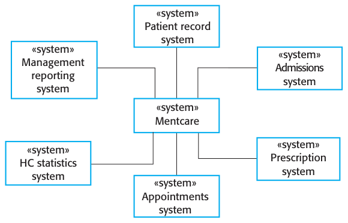
Because a context model reveals only static links—without showing whether neighbours produce data, consume data, or share storage—engineers pair it with business process models rendered as UML activity diagrams.不过，上下文模型仅画出了“有连接”，并未交代邻系统究竟在发送数据、读取数据还是共享数据库；因此它总是搭配以 UML 活动图绘制的业务过程模型来补全流程细节。
Step 2: activity diagrams第 2 步：活动图
Core idea: an activity diagram tracks workflow step by step using rounded action boxes, guarded diamonds for branches, and thick solid bars for parallel forks and joins.核心思路：活动图用圆角矩形画活动步骤、用带守卫菱形分支、用实心粗横条表达并行分叉与同步汇合，把人机协作流程串成一条龙。
Consider ordering a pizza via app: enter order, authorize card (looping back to pick another card if declined), then run kitchen baking, courier assignment, and SMS confirmation in parallel before final delivery. Activity diagrams use a compact set of standard symbols:试想手机订披萨流程：下单、刷卡支付（拒付则换卡重试），接着同时触发后厨烘烤、指派骑手与发送短信确认，全部妥当后再外出配送。活动图通过以下规范符号刻画这种流转：
| Element要素 | Drawn as符号画法 | Meaning语义说明 |
|---|---|---|
| Initial node初始节点 | Solid filled black circle实心黑圆点 | Process entry point流程开始 |
| Final node终止节点 | Filled circle enclosed inside an outer ring圆环嵌套实心圆（牛眼） | Process completion point流程终点 |
| Activity活动 | Rounded rectangle圆角矩形 | A discrete task or subprocess carried out须完成的一步作业或子过程 |
| Control flow控制流 | Solid arrow linking activities连接各活动的实线箭头 | Ordering of execution from one step to the next执行流转先后次序 |
| Decision / merge判断分支 | Diamond with [guard] labels on every outgoing arrow菱形框，每条出边须标 [guard] 守卫条件 |
Mutually exclusive selection—exactly one outgoing branch executes互斥抉择——恰好仅沿一条出边继续 |
| Fork / join分叉 / 汇合 | Thick solid synchronization bar实心粗横条 | Fork: splits into concurrent branches. Join: blocks until all incoming branches finish.分叉：派生多路并行；汇合：等待所有流入分支均完成后方继续。 |
| Data object数据对象 | Sharp-cornered rectangle直角矩形 | Data passed between or updated by activities在活动之间流转传递的数据 |
| Stereotype（构造型） | Label in chevrons, e.g., «system»双尖括号标注如 «system» |
Identifies the external/supporting system performing or backing an activity指明支撑相应活动的具体系统元素 |

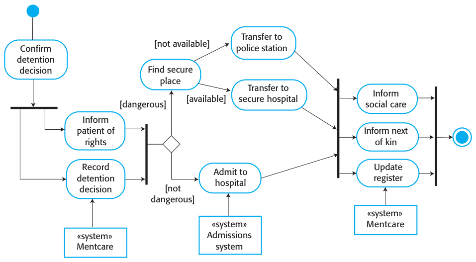
«system» 框In the Mentcare involuntary-detention workflow above, a dangerous patient routes to a secure unit while others go to an ordinary ward; three subsequent reporting activities fork from a single concurrency bar in parallel, while «system» rectangles reveal which supporting systems connect to each step.在 Mentcare 非自愿留院流程图中，具危险性患者分流至安全隔离场所，其余进入普通病房；下方三条通报与归档动作从并发横条同步分岔运行，而旁侧的 «system» 矩形精准锚定了各步骤调用的外围系统。
Step-by-step recipe for drawing an activity diagram:考试绘制活动图六步法：
- List all process steps as concise verb phrases (e.g., "Record detention decision").用简短“动词+名词”短语列出全部流程动作。
- Place the initial black dot and wire sequential tasks cleanly with arrows.画起点实心圆，按主干顺序用实线箭头串起基本步骤。
- Insert a diamond at every choice and label every outgoing arrow with mutually exclusive, exhaustive
[guards].在每次分支选择处插入菱形，并给每一条出边写清互斥且完备的[guard]。 - Bracket independent parallel activities between a matching fork bar and join bar.把相互独立的并发步骤夹在一组配对的“分叉横条—汇合横条”之间。
- Attach
«system»boxes or data rectangles whenever process context or data flow is requested.若题干要求体现系统边界或数据流，在相应步骤旁挂出«system»或数据矩形。 - Trace every branch to confirm every execution path reaches a final node without dead ends.从头逐路追踪所有分支，确保无死胡同且每条路径最终抵达终止牛眼节点。
Step 3: elapsed time of parallel branches第 3 步：并行分支的经过时间
Core idea: because a join blocks until every concurrent activity completes, a forked block runs only as fast as its slowest branch.核心思路：汇合横条须等全部并发分支收工方才放行，因此整段并行耗时由耗时最长的那一条“瓶颈分支”决定。
Practice练习
Q1. (Explain) Scope creep is the continual expansion of project scope that inflates cost. Explain how an explicit context model helps contain it.Q1.（解释）范围蔓延指项目范围无节制扩大并推高成本。解释明确的上下文模型如何抑制这一问题。
Answer
A context model locks down the stakeholder-agreed system boundary upfront, clarifying which functions live inside the software and which belong to external systems or manual workflows. Every newly requested feature is tested against that boundary: anything belonging outside is rejected or routed to the neighbouring system, while anything expanding the boundary becomes visibly an architecture/interface change that must go through formal costing, schedule impact review, and stakeholder approval instead of creeping in silently.上下文模型将早期与利益相关者商定的系统边界明确固化在图上，清晰区分哪些职责归本软件、哪些归外部系统或人工环节。每当出现新需求即对照边界核验：落在外界系统内的直接拒收或转交邻系统；凡需新增本系统职责或外部接口的均显露出“越界”事实，必须走评估工期成本与正式审批的变更流程，防止工作量悄无声息地不断膨胀。
Q2. (Design) Model the process context for an event- and party-planning system as an activity diagram, annotating the system element used at each step.Q2.（设计）为活动与聚会策划系统绘制过程上下文活动图，并标明各阶段所依托的系统元素。
Answer
(*) -> [Set date, budget, guest list] «Planning system»
-> [Book venue] «Venue booking system»
-> <venue available?> [no] -> back to [Book venue]
[yes] -> ====== fork ======
[Send invitations] «Mailing system»
[Book catering] «Supplier ordering system»
[Book entertainment] «Booking system»
====== join ======
-> [Collect replies, confirm numbers] «Guest database»
-> [Pay deposits] «Payment system»
-> ((*))
Three independent booking tasks execute concurrently between the fork and join bars because final confirmations wait for all three; the venue check carries mutually exclusive guards on every outgoing branch.场地敲定后三项外联预订彼此独立，故夹在分叉与汇合横条间并行加速，待全部敲定后再统计回执与支付定金；场地判定菱形的所有出边均有互斥守卫条件。
Q3. (Calculation) In a process, a fork launches tasks A (4 h), B (2 h), and C (5 h) in parallel, followed by a join and then task D (1 h). Compute the minimum elapsed time with the fork vs strictly sequential execution.Q3.（计算）某流程中，分叉同时启动活动 A（4 h）、B（2 h）和 C（5 h），汇合后接活动 D（1 h）。求并行最少耗时与纯串行耗时的对比。
Answer
With the fork, the join blocks until the slowest branch finishes: \(\max(4, 2, 5) = 5\text{ h}\), followed by D (1 h), yielding \(5 + 1 = \mathbf{6\text{ h}}\). Without the fork, all four run sequentially: \(4 + 2 + 5 + 1 = \mathbf{12\text{ h}}\).采用分叉时，汇合点耗时由最慢分支决定：\(\max(4,2,5) = 5\text{ h}\)，接续 D（1 h）共需 \(5 + 1 = \mathbf{6\text{ h}}\)；若全部顺序执行，则耗时 \(4 + 2 + 5 + 1 = \mathbf{12\text{ h}}\)。
Interaction models: use cases and sequence diagrams ★★★交互模型：用例和时序图
Goal. Draw a clean use case diagram with a tabular specification, draw a scenario sequence diagram using an alt frame, and state when each diagram is used.目标。画出规范的用例图并填写用例说明表，画出包含 alt 框的场景时序图，并能对比说明二者的用途差异。
Core idea: use case diagrams zoom out to show who uses the system for what high-level goals, whereas sequence diagrams zoom into a single scenario to trace which objects exchange messages in strict time order.核心思路：用例图看全局静态概览（谁用系统办什么事），时序图钻进单一场景看动态明细（对象之间按从上到下时间线互发什么消息）。
These two interaction diagrams complement one another directly: a use case diagram surveys every external service, and a sequence diagram steps through the internal mechanics of one scenario.两种交互图一粗一细、相辅相成：用例图先盘清全系统有哪些对外功能菜单，时序图再把某道菜内部端盘上菜的对象协作细节逐帧摊开。
Step 1: use case diagrams第 1 步：用例图
A use case encapsulates a complete, self-contained user goal achieved through one discrete interaction (such as "Register patient").一个用例对应用户与系统完成一次有价值交互的完整目标任务（如“登记患者”）。
| Element要素 | Drawn as符号画法 | Meaning含义 |
|---|---|---|
| Use case用例 | Ellipse enclosing a concise verb phrase ("Transfer data")标注简短“动词+名词”短语的椭圆（如“传输数据”） | One complete user-visible task provided by the system系统对外提供的单一项服务目标 |
| Actor参与者 | Named stick figure placed outside the box置于边界外且带角色名的小人符号 | External human role, hardware sensor, or collaborating software system位于系统外的人类角色、外设或互联软件系统 |
| Association关联连线 | Plain solid line linking actor to ellipse连接参与者与用例的无箭头实线 | Indicates participation in that interaction表示该参与者介入此用例交互 |
| System boundary系统边界框 | Large labelled rectangle surrounding the ellipses包住全部用例椭圆的矩形框 | Separates internal system capabilities from outside actors明确哪些功能归属本系统内部实现 |
In formal UML, actor–use case associations carry no arrowheads because a use case involves bidirectional message exchange (arrows are only used informally to hint who initiates contact, and «include»/«extend» arrows connect use cases to use cases).严谨 UML 规范中，参与者与用例椭圆之间的关联线不画箭头，因为一次完整交互必然伴随着双向信息收发（箭头仅见于非正式草图以示谁发起，或用于用例之间的虚线 «include» / «extend» 关系）。

Because ellipses carry little detail by themselves, engineers pair the diagram with a structured six-field table:由于椭圆自身信息量有限，实际规格中常配合标准六栏说明表补充细则：
| Field字段 | Content for "Transfer data"“传输数据”用例内容 |
|---|---|
| Actors参与者 | Medical receptionist, Patient Records System (PRS)医务接待员、卫生机构通用病人记录系统（PRS） |
| Description描述 | Receptionist uploads updated personal details (address, phone) or a diagnosis/treatment summary from Mentcare to the central health-authority PRS.医务接待员将更新后的个人资料或诊疗摘要自 Mentcare 传送至卫生主管机构的中心病历库。 |
| Data数据 | Patient personal details or treatment summary患者个人联系资料或诊疗摘要 |
| Stimulus触发刺激 | Transfer command triggered by the medical receptionist医务接待员发出传输操作指令 |
| Response系统响应 | Confirmation returned once the PRS update succeeds回传 PRS 更新成功确认 |
| Comments备注 | Requires appropriate security clearance for both Mentcare records and external PRS access.接待员须具备访问本地病历及外网 PRS 的双项安全权限。 |
Four steps to build a use case diagram:绘制用例图四步法：
- Identify every external actor (people, external systems, hardware) interacting with the software.识别全部外部参与者（人、外联系统或硬件设备）。
- For each actor, list the self-contained goals it invokes using clean verb–noun labels.梳理各参与者期望完成的核心任务，用“动词+名词”命名用例。
- Draw the boundary box, place use-case ellipses inside and actors outside, and connect them with plain lines.画系统边界矩形，椭圆置内、小人置外，并用无箭头直线连接。
- Document important use cases further with a six-field table or sequence diagram.为关键用例补写六栏详表或进一步展开为时序图。
Step 2: sequence diagrams第 2 步：时序图
Core idea: participants stand along the top with vertical dashed lifelines flowing downward in time, exchanging labelled horizontal call arrows inside structured alt branch frames.核心思路：参与对象排成一排、虚线生命线自顶向下代表时间流逝，水平箭头依次调用对应类的方法，遇条件分叉用 alt 框隔开互斥路径。
| Element要素 | Drawn as画法 | Meaning含义 |
|---|---|---|
| Participant参与对象 | Top rectangle obj: Class or stick figure (actor)顶部方框 对象: 类 或外部参与者小人 |
Interacting actor or runtime object instance参与协作的外部角色或类实例 |
| Lifeline生命线 | Vertical dashed line hanging below each participant各参与对象下方的竖直虚线 | Existence of that instance across scenario time (top \(\to\) bottom)实例在时间自顶向下推进期间的存续期 |
| Activation bar（激活条） | Thin vertical rectangle along a lifeline叠在生命线上的窄长条矩形 | Interval while the instance actively processes a call对象正在执行当前调用的活动时段 |
| Call message调用消息 | Solid arrow labelled operation(params) with filled head标明 operation(params) 的实线实心箭头 |
Invokes an operation belonging to the receiving object's class调用接收方类所定义的具体方法 |
| Return message返回消息 | Return arrow back (dashed line in strict UML)回指发送方的箭头（严格 UML 中画虚线） | Passes computed result or confirmation back to caller将返回值或处理状态交还调用者 |
Alternatives (alt) framealt 备选分支框 |
Box tagged alt split by dashed divider with [guard] labels左上角标 alt 的大框，内用虚线分段并写 [guard] |
Conditional branching—strictly one guarded segment executes条件分流——仅运行守卫成立的那一段交互 |
| Object creation动态创建对象 | Call arrow pointing directly into a participant box lowered on the page箭头直接射向向下平移画出的新对象顶框 | Instantiates a new runtime object mid-scenario在该交互时刻才动态实例化新对象 |

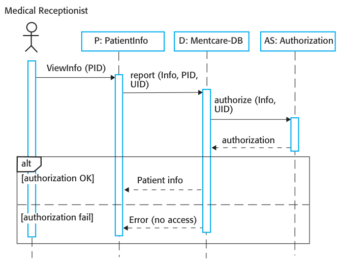
alt 鉴权分流Trace View patient information from top to bottom:自顶向下通读“查看病人信息”交互流程：
- The medical receptionist initiates
ViewInfo(PID)on patient-info controllerP.医务接待员向P发起ViewInfo(PID)（传入患者标识）。 Pqueries databaseDviareport(Info, PID, UID), forwarding user IDUIDfor security validation.P调用数据库D的report(Info, PID, UID)，携带员工编号UID以便鉴权。Dchecks access viaauthorize(Info, UID)on authorization serviceAS.D请求授权系统AS执行authorize(Info, UID)并等待答复。- Inside the
altframe,[authorization OK]returns the requested record whereas[authorization fail]rejects with "no access."在alt框中按结果分岔：[authorization OK]放行返回病历，[authorization fail]返回无权提示。

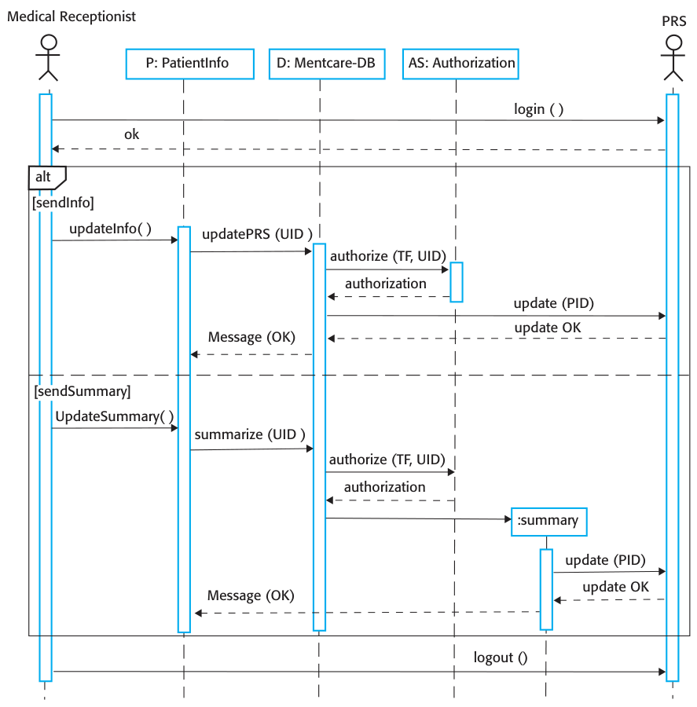
alt 框及运行时新建 Summary 对象的典型示例In the second Mentcare diagram (Transfer data), notice direct actor-to-external-system messages (login, status, logout) plus dynamic runtime creation of a new Summary object mid-way down the canvas.第二幅 Mentcare 时序图（传输数据）进一步展示了参与者与外联系统间的直接会话（登录、状态、登出），以及在流程中途按需动态生成 Summary 对象的规范画法。
Six-step checklist for drawing a sequence diagram:绘制时序图六步清单：
- Pick one scenario (usually the main success flow plus critical error cases of one use case) and put the initiating actor leftmost.选定单一场景（主成功流配典型异常），把触发交互的外部参与者放在最左侧。
- Draw participant boxes/stick figures across the top with vertical dashed lifelines.顶部横排摆出参与者与对象方框，下方垂落虚线生命线。
- Arrange messages strictly top-to-bottom in chronological order, labelling every call with
operation(parameters)and adding key returns.严格按时间由上至下画消息，调用标清operation(parameters)，关键步骤加虚线返回。 - Place thin activation bars on lifelines while instances execute requests.在对象执行处理的时间段内加上细长激活矩形。
- Enclose conditional alternatives inside an
altframe split by a dashed divider with[guards]; draw newly created objects vertically at creation height.条件分路框进alt矩形并用虚线隔开各守卫分支；中途创建的对象的框须下移画在创建箭头所指高度。 - Cross-check consistency: every call arrow must match an operation on the receiver's class in your class diagram.交叉一致性核对：确保每条发向对象的消息都是其类图定义中真实存在的操作方法。
Practice练习
Q1. (Design) Propose Mentcare use cases for a doctor who examines patients and prescribes medication and treatments, table-specify one use case, and explain how to avoid duplicating authorization checks across every diagram.Q1.（设计）为在 Mentcare 中接诊并开药、开治疗方案的医生设计一组用例，以六栏表详写其中一个，并说明如何避免在每个用例里重复写授权检查。
Answer
Actors & use cases: External actors are Doctor and Prescription system. Five core ellipses sit inside the Mentcare boundary: View patient information, Record consultation, Prescribe medication, Prescribe treatment, and Refer patient. Doctor connects to all five via plain lines; Prescription system connects only to Prescribe medication.参与者与用例：外部参与者为医生与处方系统。系统框内设五个主用例：查看病人信息、记录就诊、开具药物、开具治疗方案、转诊病人。医生连线全部五个，处方系统仅连线“开具药物”。
| Field字段 | Prescribe medication开具药物 |
|---|---|
| Actors参与者 | Doctor, Prescription system医生、处方系统 |
| Description描述 | During a consultation the doctor chooses a drug and dosage; Mentcare validates the order and dispatches an electronic prescription.接诊期间医生选定药品与剂量，系统生成并外发电子处方。 |
| Data数据 | Patient identifier, medication, dose, duration患者编号、药名、剂量、疗程 |
| Stimulus刺激 | Prescription command issued by the doctor医生点击下达处方指令 |
| Response响应 | Confirmation that the electronic prescription is logged and saved with the consultation返回电子处方已生成并随诊次归档确认 |
| Comments备注 | Doctor must hold valid prescribing authorization.要求医生具备合法处方权限。 |
Factoring out authorization once: Create one shared use case Check authorization and draw a dashed arrow labelled «include» from every base use case needing it to Check authorization.共享检查的复用画法：单独抽取一个检查授权用例，再由所有需鉴权的主用例画出虚线箭头指向它并标上 «include» 即可只描述一次。
Q2. (Design) Draw a sequence diagram for a student enrolling in a capacity-capped course using an electronic course catalog. If capacity is 30 and 29 seats are filled, trace the next two requests.Q2.（设计）绘制学生通过电子课程目录选修限额课程的时序图。若上限 30 人且已占 29 席，说明随后两次请求会怎样流转。
Answer
Participants (left \(\to\) right): Student (actor), C: Catalog, R: Registration, K: Course (-> call, --> return):参与方（左至右）：Student（参与者）、C: Catalog、R: Registration、K: Course（-> 调用，--> 返回）：
Student -> C: browse(subject)
C --> Student: list of courses
Student -> R: register(studentID, courseID)
R -> K: places(courseID)
K --> R: n (n = capacity - enrolled)
alt [n > 0]
R -> K: enrol(studentID)
K --> R: ok
R --> Student: confirmation
else [n = 0]
R --> Student: "course full"
end
Trace for remaining seats: With capacity 30 and 29 filled, request #1 finds \(n = 30 - 29 = 1 > 0\), enters [n > 0], enrols, and drops \(n\) to 0; request #2 sees \(n = 0\) and takes the [n = 0] branch receiving "course full."名额推演：初始 \(n = 30 - 29 = 1 > 0\)，第 1 个选课请求进入 [n > 0] 分支成功入班并将名额降为 0；紧接着第 2 个请求因 \(n=0\) 走入 else 分支并收到“课程已满”提示。
思路：对象排顶部、时间向下走、名额分支用 alt 配 [guard] 隔离。
Structural models: class diagrams ★★★结构模型：类图
Goal. Construct a UML class diagram featuring associations, two-way multiplicities, generalization, and aggregation, and translate any multiplicity relationship fluently into plain English or Chinese.目标。画出含关联、双向多重性、泛化继承与聚合关系的类图，并能双向准确口述任一多重性含义。
Core idea: a class diagram maps the persistent entity types of a domain, their attributes and operations, and the cardinality rules linking them.核心思路：类图描绘系统内部有哪些核心实体类、各自管什么数据与行为，以及实例之间严格遵循几对几的关联约束。
Class diagrams capture the static software structure. Early in design, classes mirror concrete domain concepts such as patient, doctor, consultation, and prescription.类图表达系统的静态骨架。分析初期，类名往往直接对应现实业务名词（病人、医生、诊次、处方等）。
Step 1: classes, associations and multiplicities第 1 步：类、关联和多重性
An association（关联）joins two classes with a solid line indicating objects of one know about objects of the other. The multiplicity（多重性）annotation attached to one end tells how many objects of that end's class can link to one object of the opposite class:关联用实线连接两个类，表示实例之间存在业务联系；而写在某条关联一端的多重性，精确规定了另一端类的 1 个对象可以连到这一端类的多少个对象：
| Notation记法 | Meaning含义 |
|---|---|
1 |
Strictly one恰好 1 个 |
0..1 |
Zero or one (optional single link)0 个或 1 个（可选） |
* or 0..* |
Zero or more (unbounded optional)0 个或多个（任意数量，含零） |
1..* |
One or more (mandatory at least one)1 个或更多（至少 1 个） |
1..4 |
Bounded interval (between 1 and 4 inclusive)具体区间（例如 1 至 4 个） |

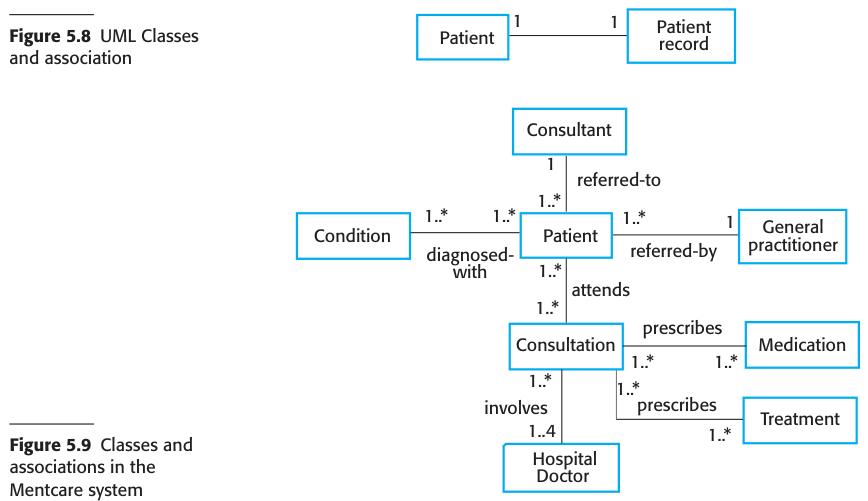
Reading two sample Mentcare associations aloud in both directions:对照上图双向试读两组典型关联：
Patient 1 — 1 Patient record: every patient owns strictly one record, and every record belongs to strictly one patient.Patient 1 — 1 Patient record：每位患者恰有一份病历，每份病历恰归属一位患者。Patient 1..* — 1..* Condition: one patient suffers from one or more conditions, and one condition affects one or more patients.Patient 1..* — 1..* Condition：一位患者可诊断出多种病情，一种病情也可对应多名患者。
Everyday check: in a food-delivery app, a customer places zero or more orders (0..* at Order end), whereas each order belongs to strictly one customer (1 at Customer end).生活秒检：外卖点餐软件中，每位顾客可下 0..* 个订单（数字写在 Order 端），而每个订单恰属 1 位顾客（数字写在 Customer 端）。
Step 2: classes with attributes and operations第 2 步：带属性和操作的类
A full UML class rectangle contains three stacked compartments: the class name on top, attributes (stored fields) in the middle, and operations (callable methods) at the bottom.完整 UML 类框纵向切作三格：顶格写类名，中格写属性（状态数据），底格写操作（可执行方法）。
+--------------------------+
| Consultation |
+--------------------------+
| Doctors |
| Date |
| Time |
| Clinic |
| Reason |
| Medication prescribed |
| Treatment prescribed |
| Voice notes |
| Transcript |
+--------------------------+
| New() |
| Prescribe() |
| RecordNotes() |
| Transcribe() |
+--------------------------+
Step 3: generalization第 3 步：泛化
Core idea: generalization factors common attributes and behaviour out of specialized subclasses into a shared superclass to eliminate duplication.核心思路：泛化把若干子类共有的属性和操作抽提进一个更抽象的父类（超类），子类只需声明自身特有的拓展。
Just as Starter and Dessert subclasses inherit name and price from a general Dish superclass, UML draws a hollow-triangle generalization（泛化）arrow pointing from each specialized subclass up to its shared superclass—subclasses automatically inherit everything above without repeating it.如同头盘（Starter）和甜点（Dessert）共用菜品（Dish）的名称与价格一样，UML 中用空心三角的泛化箭头由子类指向超类，子类无需重写即直接继承超类的全部属性与方法，只补写独有成员：
Doctor Name, Phone #, Email; register(), de-register()
^-- General practitioner Practice, Address
^-- Hospital doctor Staff #, Pager #
^-- Trainee doctor (just graduated, supervised)
^-- Registered doctor (works unsupervised in a consultant's team)
^-- Consultant (senior doctor, full decision-making responsibility)
Every doctor shares a name and phone number; hospital doctors specialize by adding a staff number and pager, whereas general practitioners add a clinic practice and address.图中所有医生共有姓名、电话与邮箱，医院医生专门添置工号与传呼机，全科医生则另添诊所名称及地址。
Step 4: aggregation第 4 步：聚合
An aggregation（聚合）represents a "whole–part" composition where one aggregate object contains constituent objects (such as an order composed of order lines), drawn with an open diamond attached firmly to the whole end.聚合表达“整体—部分”包含关系（例如一份订单由若干订单明细行构成），规范画法是将空心菱形画在整体类那一端。

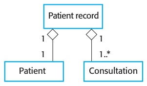
Patient record 一端Six steps to build a class diagram:绘制类图六步法：
- Scan the specification and underline domain nouns representing persistent entities to model as classes.标出需求陈述中的核心业务名词作为候选类。
- Draw named class boxes and join related ones with verb-labelled association lines.绘制类框并以动词短语命名两者间的关联连线。
- Assign multiplicities on both ends of every link by checking "one A connects to how many B?" and vice versa.逐条关联双向发问“1 个 A 对几个 B / 1 个 B 对几个 A”，在两端标清多重性。
- Pull shared attributes and operations up into superclasses using generalization arrows pointing to the parent.提取共有成员进父类，用空心三角箭头指向上层超类。
- Mark whole–part containers with an aggregation diamond on the aggregate (whole) end.用紧贴整体一端的菱形区分“整体—部件”聚合关系。
- Populate key attributes and operations—ensuring every sequence-diagram message exists as an operation on its target class.充实重要类的属性与方法，并确保所有时序图调用的消息均落在对应接收类的操作栏中。
Practice练习
Q1. (Multiplicity) A patient has strictly one record (1—1), and a record aggregates one or more consultations (1—1..*):Q1.（多重性）每位病人恰有一份病历（1—1），每份病历聚合一次或多次就诊（1—1..*）：
- Read both associations aloud in both directions.用完整语言双向读出这两个关联的含义。
- Three patients attend 4, 2, and 5 consultations respectively. How many
Patient recordandConsultationobjects exist?若 3 位病人各自就诊 4、2、5 次，共有多少个Patient record对象与多少个Consultation对象？ - Can a valid
Patient recordexist with zero consultations?系统中能否存在不含任何就诊记录的空白病历？
Answer
- Every patient owns strictly one record, and each record belongs to strictly one patient. Every record comprises one or more consultations, and each consultation belongs to strictly one record.每位病人恰有一份病历，每份病历恰属于一位病人；每份病历包含至少一次就诊，每次就诊恰属于一份病历。
- One record per patient gives 3 Patient record objects; total consultations = \(4 + 2 + 5 = \mathbf{11\text{ Consultation objects}}\).1 位病人对应 1 份病历，共 3 个 Patient record 对象；就诊总数为 \(4 + 2 + 5 = \mathbf{11\text{ 个 Consultation 对象}}\)。
- No. The
1..*multiplicity on the Consultation side mandates at least one consultation per record (so 3 records demand at least 3 consultations).不能。Consultation 端的多重性1..*强制规定每份病历下至少绑定 1 次就诊（故 3 份病历至少须有 3 次就诊）。
Q2. (Design) Examine how messages and folders/mailboxes work in an email client and model the key classes implementing Mailbox and Message.Q2.（设计）结合电子邮件客户端的工作机制，为实现 Mailbox（邮箱）与 Message（邮件）建立对象类模型。
Answer
Mailbox 1 <>-------------- 0..* Message 1 <>-------------- 0..* Attachment
Mailbox Message Attachment
name sender fileName
owner recipients size
capacity subject, body, date type
------------------ status (read / unread) ----------------
add(Message) ------------------------ open()
delete(Message) send(), reply(), forward()
search(text) markRead()
A Mailbox acts as the whole aggregating any number of messages (0..*), while each Message lives in one mailbox (1) and aggregates its own Attachment objects (0..*). Distinct folder types like Inbox, Sent, and Drafts can subclass Mailbox via generalization whenever their operations diverge.Mailbox 作为整体聚合任意封邮件（0..*），每封 Message 恰归属一个邮箱（1）并进一步聚合自身携带的 0..* 个附件。若收件箱、已发送与草稿箱具有独特行为（如草稿可编辑），可通过泛化让它们继承 Mailbox。
Behavioral models: data-driven and event-driven ★★★行为模型：数据驱动和事件驱动
Goal. Decide when to use data-driven vs event-driven models, draw and trace UML state diagrams, and apply superstates to tame state explosion.目标。分清何时选用数据驱动模型或事件驱动模型，能绘制并手工推演状态图，且会用超状态抑制状态爆炸。
Core idea: behavioural models specify how a running system reacts to incoming stimuli—following data transformations in business processing, or tracking event-driven state transitions in real-time control.核心思路：行为模型回答系统跑起来之后怎么响应外部刺激——业务核算追着数据流走（数据驱动），实时控制盯着事件与状态跳变走（事件驱动）。
| Data-driven数据驱动 | Event-driven事件驱动 | |
|---|---|---|
| Typical systems典型应用 | Business data-processing pipelines商业与批处理数据系统 | Embedded & real-time control systems实时控制与嵌入式系统 |
| What drives control驱动机制 | Arrival of input data triggers sequential transformations数据到达即激活流水线加工 | Discrete events trigger transitions between states离散事件（刺激）引发状态迁移 |
| Everyday example经典示例 | Phone billing: call records \(\to\) rate calculation \(\to\) printed invoice话费账单：通话详单录入 \(\to\) 费率计价 \(\to\) 出账打印 | Phone switchboard: lifting handset triggers dial tone; keypad tones build digits固定电话交换：摘机触发拨号音，按键逐位采集号码 |
| Preferred UML diagram常用 UML 视图 | Data-flow style UML activity diagram (or left-to-right sequence diagram)数据流风格的 UML 活动图（或单向时序图） | UML state diagramUML 状态图 |
Step 1: data-driven models第 1 步：数据驱动模型
Core idea: trace input data step by step through each processing stage until final outputs emerge.核心思路：顺着数据的生命线，看原始输入如何一站接一站被加工成最终输出。
A data-flow model（数据流模型）captures every processing step alongside the intermediate data objects flowing between them, commonly drawn in UML using activity diagrams (rounded rectangles for tasks, sharp rectangles for data). In phone billing, raw call logs flow into charge computation and exit as customer invoices; the insulin pump below tracks the exact same pipeline from sensor readings down to physical pump commands.数据流模型描绘每一步数据处理环节及环节之间传递的数据对象，在 UML 中常借活动图呈现（圆角矩形表运算步骤，直角矩形表数据对象）。如下图所示，胰岛素泵把传感器原始读数逐级加工为剂量计算与泵体控制脉冲：

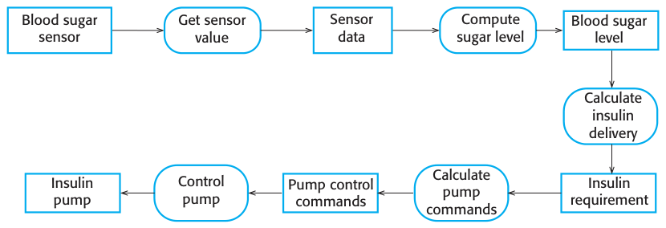
While a strictly left-to-right sequence diagram can also illustrate end-to-end processing, sequence diagrams spotlight object interfaces whereas activity/data-flow diagrams emphasize the processing steps—making them far easier for non-technical clients to validate.单向推进的时序图虽也能表现数据处理链，但它偏重对象接口调用；以活动图画出的流程则直接聚焦运算步骤，非技术客户往往一眼就能读懂。
Step 2: event-driven models and state diagrams第 2 步：事件驱动模型与状态图
Core idea: model real-time systems as finite states waiting for external events, where each valid event drives a labelled transition to a target state.核心思路：将实时系统抽象为有限个“等待态”，外部事件触发带标签的迁移箭头，把系统带往新状态；状态图只管状态跳变，不画数据流。
An event-driven system rests in one of a finite number of states until an external event triggers a transition（状态转移）to another state. Unlike activity diagrams, UML state diagrams omit data flow cleanly to focus strictly on modal control.事件驱动系统拥有有限个稳定状态，仅当外部事件到来时沿状态转换边跳转到下一状态，因此极其契合实时与嵌入式控制。与活动图相反，状态图完全不表示数据流向。
| Element要素 | Drawn as符号画法 | Meaning含义 |
|---|---|---|
| State状态 | Named rounded rectangle; optional do: action, entry:, or exit:带名圆角矩形，可内嵌 do: / entry: / exit: 动作 |
Stable situation during which specified internal actions run系统停驻的某种情形及驻留/进出时执行的动作 |
| Transition状态转换 / 转移 | Arrow labelled event [guard] / action标有 event [guard] / action 的有向箭头 |
External trigger moving system from source state to target state触发系统从源状态迁移至目标状态并可伴随瞬间动作 |
| Initial state初始状态 | Filled black circle pointing to opening state实心黑点引出箭头指向起始状态 | Starting point upon activation系统上电或启动后的初始态 |
| Final state终止状态 | Filled circle inside outer ring圆环嵌套实心圆 | Termination point生命周期终止 |
| Superstate超状态 | Rounded outer container enclosing nested substates (often expanded separately)包住一组子状态的大圆角框（可在另图详展） | Packages related states so shared outbound transitions are drawn only once封装内部细节并把共有外跳箭头合并为一笔，高层视角宛如单状态 |
Consider a microwave oven offering full/half power switches, a numeric timer keypad, a Start button, and a safety interlock preventing operation whenever the door is open:来看一台带全/半功率按钮、时间数字键与启动键的微波炉（附安全互锁：炉门敞开时严禁加热）：

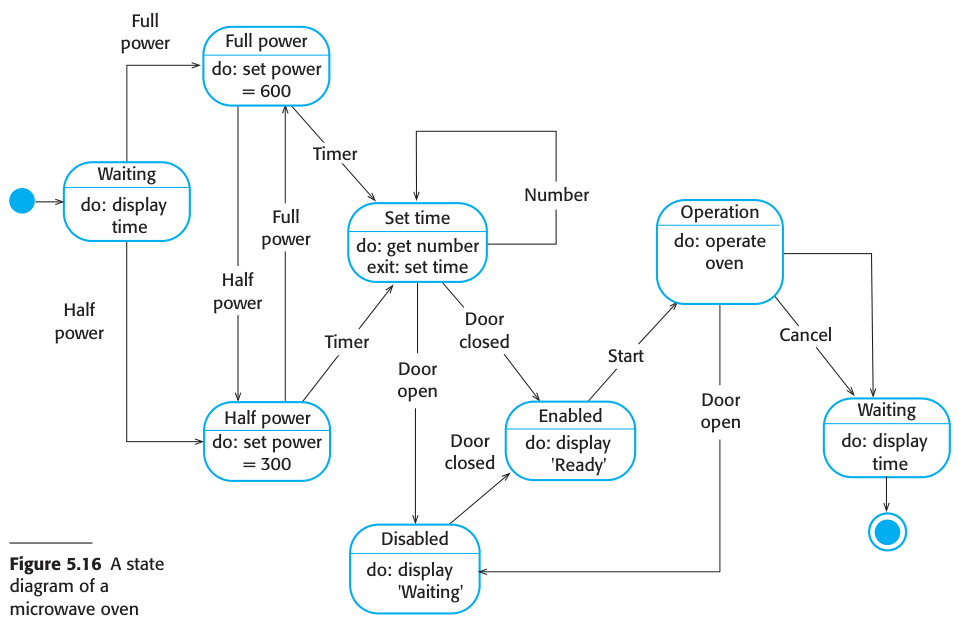
Beginning in Waiting, selecting a power button moves to Half power or Full power (switching freely between them), pressing digits moves to Set time, closing the door reaches Enabled (opening leads to Disabled), and pressing Start enters the Operation superstate until cooking finishes or stops:微波炉自 Waiting 起步，按键切入功率选择并可反悔切换，输完数字进入 Set time，关门进入 Enabled（开门即退入 Disabled），按 Start 才进入 Operation 超状态直到倒计时结束或中途取消/开门：
| From起始状态 | Event触发事件 | To目标状态 |
|---|---|---|
| WaitingWaiting（等待） | Full power / Half power | Full power / Half power |
| Full power \(\leftrightarrow\) Half power | Other power button另一功率按键 | Half power / Full power |
| Full power, Half power | Number | Set time |
| Set time | Door closed / Door open | Enabled / Disabled |
| Disabled | Door closed | Enabled |
| Enabled | Door open / Start | Disabled / Operation |
| OperationOperation（运行中） | Cooking time over, or Cancel计时结束 或 Cancel（取消） | WaitingWaiting（等待） |
| OperationOperation（运行中） | Door open | Disabled |
Notice one vital execution rule: any event lacking an outgoing transition from the current state is silently ignored (e.g., pressing Start while in Waiting does nothing).牢记一条关键追踪法则：若当前状态没有针对某事件的出边箭头，则该事件直接被忽略，系统保持原地不动（如在 Waiting 下误按 Start 毫无反应）。
Step 3: state explosion and superstates第 3 步：状态爆炸与超状态
When a flat state diagram models every combination of independent boolean features explicitly, states multiply exponentially—causing state explosion（状态爆炸）. A superstate（超状态）combines related substates inside one outer boundary so shared transitions (like Cancel or Power off) only need to be drawn once from the container edge.若把所有独立功能开关的组合强行铺在平面状态图里，状态数量会随特征数呈指数暴增，即状态爆炸。超状态把同一运行大阶段内的子状态拢进一个外框，让诸如“取消”或“断电”的公用跳出边只需在框边画一次。

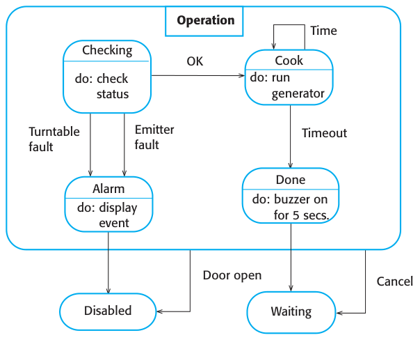
Operation 超状态内部展开图：含 Checking、Cook、Done、Alarm 子状态，而 Door open 与 Cancel 仅自外框引出各一条边Expanding Operation above exposes four internal substates (Checking, Cook, Done, Alarm), yet Door open and Cancel leave the outer box just once—requiring 2 arrows instead of 8.展开 Operation 内部包含 Checking、Cook、Done 与 Alarm 四个子状态；多亏外层超状态框，Door open 与 Cancel 各只用从外框引一条边，将原本 \(4 \times 2 = 8\) 条线锐减为 2 条。
Six-step checklist for drawing a state diagram:绘制状态图六步检查单：
- Identify stable operational states (waiting, ready, active, fault) and mark the initial state with a filled black dot.列出所有稳定停驻状态（如等待、就绪、运行、故障），并用实心黑点标出起始态。
- List every possible trigger event (button presses, sensor interrupts, timeouts, messages).穷举外源触发事件（按键、传感器信号、超时闹钟、外部命令）。
- For every state ask: "Which events can arrive here and where do they lead?" Add safety transitions (such as door opening).逐状态拷问“这里收到哪些事件会跳去哪”，千万别漏安全紧急事件（如运行中突开炉门）。
- Attach internal actions (
do:,entry:,exit:) inside boxes and[guards]on arrows whenever one event splits across conditions.状态内部标出entry:/do:/exit:动作，同一事件分不同情况走不同路径时用[guard]区分。 - Wrap groups sharing global exit triggers (Cancel, Power off, Fault) into a superstate to avoid arrow clutter.把共享“取消/断电/故障”出边的子状态装进超状态框，公用边仅在框缘画一笔。
- Sanity-check reachability and determinism: every state is reachable, and no identical event+guard points to two destinations.核查所有状态皆可达，且不存在同状态+同事件+同守卫竟指向两个去向的二义冲突。
Practice练习
Q1. (Trace) Starting in Waiting, the microwave receives: Full power \(\to\) Half power \(\to\) Number \(\to\) Door open \(\to\) Door closed \(\to\) Start \(\to\) Door open \(\to\) Door closed. Write the resulting state trajectory.Q1.（手工演算）微波炉从 Waiting 起依次遭遇事件：Full power、Half power、Number、Door open、Door closed、Start、Door open、Door closed，请追踪全部状态序列。
Answer
Waiting \(\xrightarrow{\text{Full power}}\) Full power \(\xrightarrow{\text{Half power}}\) Half power \(\xrightarrow{\text{Number}}\) Set time \(\xrightarrow{\text{Door open}}\) Disabled \(\xrightarrow{\text{Door closed}}\) Enabled \(\xrightarrow{\text{Start}}\) Operation \(\xrightarrow{\text{Door open}}\) Disabled \(\xrightarrow{\text{Door closed}}\) Enabled.状态演化：Waiting \(\to\) Full power \(\to\) Half power \(\to\) Set time \(\to\) Disabled \(\to\) Enabled \(\to\) Operation \(\to\) Disabled \(\to\) Enabled。
Notice that opening the door during Operation aborts heating into Disabled; re-closing the door returns to Enabled rather than auto-resuming, so the user must press Start again. Zero events were ignored.要点解读：运行中途开门触发安全保护退回 Disabled；重新关门后只回到 Enabled（准备就绪）而不会自动续热，必须重按 Start。本序列无事件被忽略。
Q2. (Design) Model the control software of a DVD player (power, open/close tray, play, pause, fast-forward, stop) as a state diagram using a superstate.Q2.（设计）为 DVD 播放机控制软件（含开关机、舱门开合、播放、暂停、快进与停止）设计含超状态的状态图。
Answer
States: Off (initial) and superstate On containing No disc, Tray open, Stopped, Playing, Paused, and Fast-forward:状态划分：初始态 Off 与超状态 On（内含 No disc、Tray open、Stopped、Playing、Paused 与 Fast-forward）：
| From起始状态 | Event [guard]事件 [守卫条件] | To目标状态 |
|---|---|---|
| Off | Power [disc in tray] | Stopped |
| Off | Power [tray empty] | No disc |
| No disc, Stopped | Open | Tray open |
| Tray open | Close [disc on tray] | Stopped |
| Tray open | Close [tray empty] | No disc |
| Stopped | Play | Playing |
| Playing | Pause | Paused |
| Paused | Pause or Play | Playing |
| Playing | FF | Fast-forward |
| Fast-forward | Play | Playing |
| Playing, Paused, Fast-forward | Stop | Stopped |
| Playing | End of disc播放到碟片末尾 | Stopped |
| On (any substate)On（任意子状态） | Power | Off |
Each table row translates into a directed arrow, while the final row leaves the outer On boundary once instead of replicating six separate Power lines. Quick sanity trace: Off \(\to\) Stopped \(\to\) Playing \(\to\) Paused \(\to\) Playing \(\to\) Fast-forward \(\to\) Playing \(\to\) Stopped \(\to\) Tray open \(\to\) No disc \(\to\) Off.最后一行从超状态 On 外框引一条 Power 边直返 Off，省去在六个子状态重复画线。
思路：先列状态配起点，再逐状态追“哪些事件合法、去向哪里”；公共断电转移从超状态外缘统一出线。
Model-driven engineering and architecture ★模型驱动工程与体系结构
Model-driven engineering (MDE)（模型驱动工程）elevates models from passive documentation to the primary engineering artifacts from which working code is generated. Its concrete design-and-build subset is Model-driven architecture (MDA)（模型驱动架构）, which separates domain logic cleanly from deployment technology across three stacked model levels:模型驱动工程（MDE）使模型超越单纯的辅助文档，成为直接驱动代码生成的研发核心产物；其中聚焦设计与实现的部分称为模型驱动架构（MDA），它把业务规则与具体技术平台解耦为三层模型：
| Model模型层级 | What it describes抽象内容 |
|---|---|
| CIM（计算无关模型） | Computation Independent Model: high-level domain abstractions independent of software mechanisms (e.g., security concepts such as "asset" and "role").计算无关模型：不涉及任何软件计算实现的高层业务领域概念（如安全领域里的“资产”“角色”）。 |
| PIM（平台无关模型） | Platform Independent Model: specifies how the software operates structurally and behaviourally without tying to any vendor middleware or framework.平台无关模型：精确描述系统静态结构与动态行为，但不绑定 J2EE、.NET 等具体运行平台。 |
| PSM（平台相关模型） | Platform Specific Model: refines the PIM for one concrete implementation stack (e.g., J2EE or .NET), directly feeding source code generation.平台相关模型：向 PIM 注入特定运行平台细节（如 J2EE 或 .NET 版本），紧接其后即可生成可执行代码。 |
Automated translators transform CIM \(\to\) PIM \(\to\) separate PSMs per target platform \(\to\) runnable code; supporting a new platform only requires writing a new PIM-to-PSM translator. While PIM \(\to\) PSM automates smoothly using pattern libraries, CIM \(\to\) PIM still demands skilled human judgment—so MDA repays its tooling cost chiefly on complex, long-lived product families in mature domains.模型转换器沿 CIM \(\to\) PIM \(\to\) 各平台 PSM \(\to\) 代码 逐级编译；每迁往新平台只需换一套 PIM 转 PSM 转换器即可。工程中 PIM 转 PSM 极易自动完成，而 CIM 转 PIM 牵涉跨领域语义对齐，仍须人工把关——因此 MDA 主要在生命周期漫长、领域知识成熟的大型系统产品线上体现出回报优势。
Practice练习
Q1. (Concept) Classify each MDA model type below and state which transformation step is easiest to automate:Q1.（概念）判断下列描述分别属于哪种 MDA 模型，并说明哪一步模型转换最容易实现自动化：
- Contains domain abstractions such as "asset" and "role."仅包含“资产（asset）”“角色（role）”等业务领域抽象概念的模型。
- Targets J2EE deployment conventions specifically.专门面向 J2EE 平台技术栈定制的模型。
- Describes complete system behaviour and structure without naming an implementation platform.在不绑定任何实现平台的前提下描述系统运行的模型。
Answer
- (a) CIM (Computation Independent Model—here, a security domain model).(a) 计算无关模型（CIM）（此处对应安全领域概念模型）。
- (b) PSM (Platform Specific Model tied to J2EE).(b) 平台相关模型（PSM）（已注入 J2EE 具体技术规范）。
- (c) PIM (Platform Independent Model).(c) 平台无关模型（PIM）。
- Easiest to automate: PIM \(\to\) PSM, since code/model translators apply repeatable platform rule libraries; by contrast, CIM \(\to\) PIM still relies heavily on human domain reasoning.最易自动化步骤：PIM 到 PSM（已有成熟的平台映射模板库支撑）；相反，CIM 到 PIM 因依赖领域语义对齐与工程判断，仍是需人介入的研究难点。
Terms to recognise ★需要认识的术语
| Term术语 | What to know核心要点 |
|---|---|
«include» and «extend»«include» 与 «extend» |
Dashed UML use-case arrows: «include» factors out mandatory shared steps always invoked by the base case; «extend» attaches optional behaviour under a stated condition.用例间虚线关系箭头：«include» 表示基用例必调的公用步骤；«extend» 表示满足特定条件才触发的可选扩展步骤。 |
opt, loop, par |
Sequence-diagram combined fragments marking an optional segment (opt), a repeated block (loop), or concurrent execution (par).时序图组合片段框，分别标示可选块（opt）、循环块（loop）与并行执行块（par）。 |
| Composition（组合） | Strong-ownership aggregation drawn with a filled diamond: part lifetimes bind strictly to one whole and vanish when it is destroyed.带实心菱形的强拥有聚合：部分只能归属唯一整体，整体销毁时部分亦随之销毁。 |
| Semantic data model（语义数据模型） | An attribute-and-relation class diagram omitting operations, widely used in database schema design to map entities cleanly.省略操作栏的实体关系类图，常用于数据库设计以刻画实体、属性与基数关联。 |
| Component, package & deployment diagrams构件图、包图与部署图 | Architectural UML diagrams mapping software modules, namespaces, and physical hardware nodes (expanded in Chapter 5).面向系统宏观架构的 UML 视图（见第 5 章详解）。 |
| Communication diagram通信图 | Alternative UML interaction view equivalent to a sequence diagram, emphasizing object topology with numbered messages.与时序图等价的替代交互表示法，突出对象连接网络与消息编号。 |
| SysML | UML profile tailored for holistic systems engineering spanning mechanical, electrical, and hardware subsystems—not merely software.面向包含软硬件在内的复杂物理系统的通用系统工程建模语言变体。 |
| Static vs dynamic structural model静态与动态结构模型 | Static shows design-time source/class hierarchy; dynamic shows executing runtime structure of processes or objects.静态结构描绘设计期的类/模块组织，动态结构描绘系统运行期的进程或对象格局。 |
| Stereotype（构造型） | Guillemet-wrapped UML classifier tag such as «system» extending base notation semantics.双尖括号标注如 «system»，用于向已有 UML 符号注入特定分类语义。 |
| Executable UML（可执行 UML） | A compact UML 2 subset carrying formal action semantics tight enough for automated compilation and code generation.带有严密可执行语义的 UML 2 精简子集，可直接作为全自动模型编译与代码生成基础。 |
Exam-style questions考试题型练习
Q1. (Concepts, 10 marks) (a) Define a system model and explain the difference between an abstraction and an alternative representation (3). (b) Name the four modeling perspectives and one UML diagram for each (4). (c) A team uses diagrams (i) in a design discussion, (ii) to document an existing system, (iii) to generate code. State for each use how complete and how correct the diagram must be (3).Q1.（概念，10 分）(a) 定义系统模型，并解释抽象与替代表示的区别（3 分）。(b) 说出四种建模视角，并各给出一种 UML 图（4 分）。(c) 某团队将图分别用于 (i) 设计讨论、(ii) 为现有系统编写文档、(iii) 自动生成代码。分别说明这三种用途下，图需要达到怎样的完整程度与正确程度（3 分）。
Answer
(a) A system model is an abstract description of a system viewed from one specific perspective. Because it is an abstraction, it deliberately omits incidental detail to highlight the most salient characteristics; an alternative representation, by contrast, preserves all information from the original (much like translating a book into another language).(a) 系统模型是从某一特定视角出发对系统所作的抽象描述。它是一种抽象，刻意舍弃次要细节以突出最关键的特征；而替代表示则完整保留原对象的全部信息（如同把一本书翻译成另一种语言）。
(b) Four perspectives and representative UML diagrams:(b) 四种建模视角及其代表性 UML 图：
- External (context): context model or business-process activity diagram.外部（上下文）视角：上下文模型或业务过程活动图。
- Interaction: use case diagram or sequence diagram.交互视角：用例图或时序图。
- Structural: class diagram.结构视角：类图。
- Behavioral: activity diagram (data-driven) or state diagram (event-driven).行为视角：活动图（数据驱动）或状态图（事件驱动）。
(c) Required completeness and correctness by purpose:(c) 不同用途对完整性与正确性的要求：
- (i) Discussion: may be incomplete and informal in notation, provided it communicates the key design ideas.(i) 设计讨论：可以不完整，记号也可以非正式，只要把核心思路讲清楚即可。
- (ii) Documentation: need only cover selected parts of the system, but must be correct—using UML notation properly and reflecting the real system accurately.(ii) 编写文档：不必覆盖全系统，但所画内容必须正确——记号规范且与实际系统一致。
- (iii) Code generation: must be both complete and correct, leaving no ambiguity between visually similar symbols such as stick and block arrowheads.(iii) 生成代码：必须同时做到完整且正确，甚至不能混淆线形箭头与块状箭头等外形相近的符号。
Q2. (Context and activity diagram, 15 marks) A bank wants software for cash withdrawal at ATMs. (a) Explain why the system boundary is decided early and give two examples of how it affects complexity and cost (4). (b) Draw an activity diagram of the withdrawal: insert card, PIN check, amount, funds check, debit, then cash dispensing and receipt printing in parallel, return of the card (8). (c) Dispensing takes 8 s and printing 5 s. What is the elapsed time of the parallel part, and what would it be sequentially? What does the join bar mean (3)?Q2.（上下文与活动图，15 分）某银行拟开发 ATM 取款软件。(a) 解释为何需要尽早确定系统边界，并举两例说明边界划分如何影响复杂度与成本（4 分）。(b) 画出取款流程的活动图：插卡、核对 PIN、输入金额、核查资金、扣款，随后并行执行出钞与打印凭条，最后退卡（8 分）。(c) 出钞耗时 8 s，打印耗时 5 s。并行部分总耗时是多少？若顺序执行呢？汇合横条代表什么语义（3 分）？
Answer
(a) The system boundary draws the line between software responsibilities and surrounding systems or manual procedures. Fixing it early bounds the scope and cost of requirements analysis and design. Two boundary trade-offs:(a) 系统边界明确软件自身负责哪些功能、哪些交给外部系统或人工环节处理；尽早定下边界，才能控制需求分析与设计的规模和成本。典型权衡有两类：
- Account management: if the ATM software maintains customer accounts itself, its codebase, database, and security footprint expand dramatically. Calling the bank's existing account system avoids duplicating data, at the price of slower remote calls and ATM unavailability whenever that system is offline.账户管理：若 ATM 软件自行维护客户账户，系统规模、数据存储与信息安全开销都会大幅膨胀；若改为调用银行现有账户系统，则可避免数据冗余，但会受制于远程通信延迟及对方系统的可用性。
- Fraud detection: building card-fraud analytics in-house adds development complexity and cost, whereas delegating to an external fraud service trades internal complexity for integration effort and ongoing service fees.欺诈检测：自研欺诈识别模块会推高内部复杂度与开发成本；改接外部反欺诈服务，则是用集成工作量与服务费换取核心系统的精简。
(b)
(*) start
v
[Insert card] -> [Read card data] -> [Enter PIN]
v
<PIN valid?> --[no]--> [Eject card] --> ((*))
| [yes]
v
[Enter amount]
v
<balance >= amount and within daily limit?> --[no]--> [Show message] --> [Eject card] --> ((*))
| [yes]
v
[Debit account]
v
=====fork=====
| |
[Dispense cash] [Print receipt]
| |
=====join=====
v
[Return card] --> ((*))
Rounded rectangles denote activities, diamonds denote decisions with mutually exclusive guards on every outgoing arrow, and heavy bars denote fork and join. Data objects (card data, PIN, amount, balance) may be placed in rectangles between activities.圆角矩形表示活动，菱形表示判定（每条出边须标注守卫条件），粗横条表示分叉与汇合；数据对象（卡片信息、PIN、金额、余额）可用矩形标在活动之间。
(c) Because the join bar synchronizes both parallel branches, the concurrent stage takes \(\max(8, 5) = 8\text{ s}\), compared with \(8 + 5 = 13\text{ s}\) sequentially. The join bar means that all incoming concurrent flows must finish before execution proceeds past the bar.(c) 汇合横条会等待两条并行分支全部执行完毕，因此并行段总耗时为 \(\max(8, 5) = 8\text{ s}\)，而顺序执行则需要 \(8 + 5 = 13\text{ s}\)。汇合横条的含义是：所有汇入的活动必须全部完成后，流程才能继续向下推进。
Q3. (Interaction models, 15 marks) For a library system: (a) draw a use case diagram with the actors Member and Librarian and at least four use cases (4); (b) describe "Borrow book" in the table format (4); (c) draw a sequence diagram of "Borrow book" that handles a member who may not borrow and a book that is not available (7).Q3.（交互模型，15 分）针对某图书馆系统：(a) 画出包含参与者会员（Member）与图书管理员（Librarian）的用例图，且至少含四个用例（4 分）；(b) 用表格格式描述“借书”用例（4 分）；(c) 画出“借书”的时序图，要求涵盖“会员无借阅资格”与“图书不可借”两种异常情形（7 分）。
Answer
(a) Draw stick-figure actors outside the system boundary box Library system and connect them with plain association lines (no arrows) to the ellipses inside:(a) 在“图书馆系统（Library system）”系统边界框外绘制小人图形表示参与者，用不带箭头的直线将其连向边界内的用例椭圆：
- Member: Search catalog, Reserve book, Borrow book, Return book.会员（Member）：连接“检索目录”“预订图书”“借书”“还书”。
- Librarian: Borrow book, Return book, Register member, Add book.图书管理员（Librarian）：连接“借书”“还书”“登记会员”“添加图书”。
(b)
| Field字段 | Borrow book借书 |
|---|---|
| Actors参与者 | Librarian, member图书管理员、会员 |
| Description描述 | The librarian lends an available book to an eligible member; the system records the loan and sets the due date图书管理员将可借图书借给有资格的会员；系统记录借阅信息并确定到期日期 |
| Data数据 | Member identifier, book identifier, due date会员编号、图书编号、到期日期 |
| Stimulus刺激 | The librarian scans the member card and the book图书管理员扫描会员卡与图书条码 |
| Response响应 | Loan recorded; due date printed on the receipt借阅记录入库，并在凭条上打印到期日 |
| Comments备注 | The member must be below the loan limit and have no unpaid fines会员当前借书数须低于上限，且无未缴罚款 |
(c) Participants (left to right): Librarian (actor), S: LoanScreen, M: Member, B: Book, and L: Loan (created dynamically). Messages flow top to bottom (-> synchronous call, --> return):(c) 参与者从左到右依次为：图书管理员、S: LoanScreen、M: Member、B: Book 以及动态创建的 L: Loan。消息自上而下传递（-> 表示调用，--> 表示返回）：
Librarian -> S: borrow(memberID, bookID)
S -> M: canBorrow(memberID)
M --> S: yes / no
S -> B: isAvailable(bookID)
B --> S: yes / no
alt [both yes]
S -> B: checkOut(bookID)
S -> L: create(memberID, bookID, dueDate) (box L appears here)
S --> Librarian: receipt(dueDate)
else [otherwise]
S --> Librarian: error(reason)
end
Place the guard conditions in square brackets inside the alt frame, separated by a dashed horizontal line. The create(...) message arrow should point directly to the lifeline header box of L positioned at the height where instantiation occurs.alt 组合框内用方括号标出守卫条件，两个分支间以虚线隔开；创建消息箭头须直接指向 L 的对象框，且该对象框画在实例化发生时的对应高度。
Q4. (Structural models, 15 marks) A university department: students and lecturers are persons with a name and an e-mail address. A student enrols in at most 6 courses; a course has between 5 and 100 students. A lecturer teaches 1 to 3 courses; each course has exactly one lecturer. A course consists of one or more sessions. (a) Draw the class diagram with multiplicities, generalization and aggregation (8). (b) Read the enrolment association in words in both directions (3). (c) 24 students each enrol in exactly 5 courses. What are the smallest and the largest possible numbers of courses (4)?Q4.（结构模型，15 分）某大学的一个系：学生和讲师都是拥有姓名与电子邮件的人员。一名学生至多选修 6 门课；一门课有 5 至 100 名学生。一名讲师讲授 1 至 3 门课；每门课恰有一名讲师。一门课由一节或多节课次组成。(a) 画出含多重性、泛化与聚合关系的类图（8 分）。(b) 分别从两个方向口头读出选课关联的含义（3 分）。(c) 现有 24 名学生每人恰好选修 5 门课，问课程数量最少和最多各可能是多少（4 分）？
Answer
(a)
Person name, email
^-- Student studentID
^-- Lecturer staffID
Student 5..100 ---- enrols in ---- 0..6 Course
Lecturer 1 ---- teaches ---- 1..3 Course
Course 1 <>---- 1..* Session
Student and Lecturer inherit name and email from Person (generalization arrow points to the superclass). The aggregation diamond sits on Course, the whole. Remember the reading rule: the multiplicity beside one class specifies how many objects of that class link to a single object of the class at the opposite end.Student 与 Lecturer 从 Person 继承 name 与 email（泛化箭头指向父类）；聚合菱形位于整体类 Course 一端。读图法则：贴近某一类端的多重性，表示“对端类的一个对象”能关联到“本端类”多少个对象。
(b) A student enrols in between 0 and 6 courses; a course enrols between 5 and 100 students.(b) 一名学生选修 0 至 6 门课程；每门课程招收 5 至 100 名学生。
(c) Total enrolments are \(24 \times 5 = 120\). Bound the number of courses from both ends:(c) 总选课人次为 \(24 \times 5 = 120\)，从上下两界夹出课程总数：
- Minimum: every student must enrol in 5 distinct courses, so at least 5 courses must exist. With 5 courses, each holds \(120 / 5 = 24\) students, which satisfies the \(5..100\) limit.最少：每名学生要选 5 门不同的课，因此至少要有 5 门课；恰好 5 门课时每门课 \(120 / 5 = 24\) 人，满足 \(5..100\) 的容量约束。
- Maximum: every course requires at least 5 students, giving at most \(120 / 5 = 24\) courses.最多：每门课至少需 5 名学生，因此至多开出 \(120 / 5 = 24\) 门课。
Hence the department can offer between 5 and 24 courses.因此，课程数量必在 5 至 24 门之间。
思路：多重性贴在哪一端，就数那一端有多少个对象；(c) 先算选课总人次，再用单课人数上下限卡出课程数范围。
Q5. (Behavior and model-driven engineering, 15 marks) (a) Draw the state diagram of an automatic washing machine with programs for different clothes (8). (b) Explain state explosion and how a superstate helps; use your diagram (3). (c) Distinguish PIM and PSM and explain why a PIM helps when a new platform appears (4).Q5.（行为模型与模型驱动工程，15 分）(a) 画出可按不同衣物选择程序的全自动洗衣机的状态图（8 分）。(b) 解释什么是状态爆炸，并结合你的图说明超状态如何缓解这一问题（3 分）。(c) 区分 PIM 与 PSM，并说明当新平台出现时 PIM 为何能发挥价值（4 分）。
Answer
(a) Top-level states are Idle (initial), Program selected, Ready, the superstate Running (substates: Filling, Washing, Draining, Rinsing, Spinning), Paused, and Finished. Choosing a program saves target temperature, wash time, and spin speed as parameters rather than duplicating states per fabric type.(a) 顶层状态包括 Idle（初始）、Program selected、Ready、超状态 Running（含子状态 Filling、Washing、Draining、Rinsing、Spinning）、Paused 与 Finished。选定程序时只需把温度、洗涤时间与脱水转速存入参数，而无需为每种衣物复制一套状态。
| From起始状态 | Event [guard] / action事件 [守卫条件] / 动作 | To目标状态 |
|---|---|---|
| Idle, Program selectedIdle、Program selected | Select program / store parameters选择程序 / 保存参数 | Program selected |
| Program selected | Door closed关门 | Ready |
| Ready | Door open开门 | Program selected |
| Ready | Start启动（Start） | Running (Filling)Running（Filling） |
| Filling | Water level reached水位达到 | Washing |
| Washing | Wash time over洗涤时间结束 | Draining |
| Draining | Water empty水已排空 | Rinsing |
| Rinsing | Rinse over [spin speed > 0]漂洗结束 [脱水转速 > 0] | Spinning |
| Rinsing | Rinse over [spin speed = 0]漂洗结束 [脱水转速 = 0] | Finished |
| Spinning | Spin over脱水结束 | Finished |
| Running (any substate)Running（任一子状态） | Door open开门 | Paused |
| Paused | Door closed关门 | Running (resumes interrupted phase)Running（恢复被中断的阶段） |
| Running (any substate)Running（任一子状态） | Cancel取消 | Idle空闲 |
| Finished | Door open开门 | Idle空闲 |
Finished carries the entry action entry: buzzer on for 5 s. Each table row maps to one labelled arrow; transitions leaving Running (any substate) originate from the outer boundary of the superstate.Finished 状态带有入口动作 entry: buzzer on for 5 s。表中每行对应一条带标签的转换箭头；从 Running (any substate) 出发的转换均直接从超状态外框引出。
(b) State explosion occurs because each independent binary feature doubles the number of states: \(n\) features generate \(2^n\) combinations (10 features already give 1024 states), making flat diagrams unreadable. A superstate collapses a group of related states into one container whose internal substates are expanded separately. In the washing machine, Door open and Cancel apply identically across all five phases of Running; drawing them once from the boundary of Running takes 2 arrows instead of \(5 \times 2 = 10\).(b) 状态爆炸源于独立布尔特征对状态数的指数级放大：每多 1 个二值特征，组合状态数就翻一倍，\(n\) 个特征会产生 \(2^n\) 个状态（10 个特征即达 1024 个），扁平状态图会迅速失去可读性。超状态将一组相关状态收纳为单一容器并在内部分层展开；例如洗衣机的 Door open 与 Cancel 对 Running 内全部五个阶段均有效，只要从超状态边界各引 1 条箭头，就能把 \(5 \times 2 = 10\) 条线简化为 2 条。
(c) A PIM (platform-independent model) captures system structure and event-driven behavior without referencing any implementation platform, whereas a PSM (platform-specific model) augments the PIM with concrete target-platform details (such as J2EE or .NET) from which code is generated. When a new platform emerges, engineers only build a new PIM-to-PSM translator—the PIM stays intact, allowing existing models to be re-hosted automatically.(c) PIM（平台无关模型）在不涉及具体实现平台的前提下刻画系统结构与事件响应行为；PSM（平台相关模型）则在此基础上补充目标平台细节（如 J2EE 或 .NET），用于进一步生成代码。当新平台出现时，团队只需新增一个 PIM 到 PSM 的转换器，原有 PIM 无需改动即可自动迁移到新平台。
Textbook exercises课后习题
Textbook exercises with answers: 10 questions教材习题及答案（共 10 题，点击展开）
E1. (Exercise 5.1) Scope creep can be defined as a continuous increase in the scope of a project that can significantly increase project cost. Explain how a proper model of the system context can help prevent scope creeps.E1.（习题 5.1）范围蔓延是指项目范围持续、不受控制地扩张，进而显著推高成本。请解释恰当的系统上下文模型如何帮助防止范围蔓延。
Answer
Scope creep erodes budgets and schedules through incremental, unpriced feature additions. A well-defined context model prevents it in four ways:范围蔓延会通过渐进、未计价的额外需求不断侵蚀预算与工期。完备的上下文模型主要从以下四方面遏制这一问题：
- Explicit boundary record: It captures the agreed system boundary in one shared artifact—showing the system itself, neighboring systems and human processes, and every information flow crossing the border. Anything inside is in scope; anything outside is not.固化系统边界：将各方商定的边界记录在同一份模型中，明确系统本身、周边外部系统、人工流程以及跨边界的数据交互——界内即范围之内，界外即范围之外。
- Immediate triage of new requests: Every incoming feature request is checked against the model. If it belongs to an external system or manual workflow, it is rejected or redirected; if adding it requires new internal capabilities or external interfaces, the boundary itself must shift.快速甄别新请求：每项新增功能都要对照上下文模型核验；若属于外部系统或人工流程，则予拒绝或转交；若必须新增内部功能或对外接口，就说明边界本身需要调整。
- Visible change control: Because boundary shifts are immediately obvious, requests enter formal change control—new functions and interfaces are counted, costed, and scheduled, forcing explicit customer sign-off rather than silent expansion.让变更显性化：边界改动一目了然，需求自然进入正式变更控制流程——统计新增功能与接口数量、重估工期与费用，要求客户签字确认而非暗中加塞。
- Shared contract baseline: Both client and engineering team see the exact original agreement, eliminating ambiguity and informal "while you're at it" additions.提供共同基线：甲乙双方对最初约定有据可查，避免扯皮或口头“顺手加一个功能”。
Example: For an inventory-control system, the request "let customers order online too" is checked against the context model, which depicts the storefront website as a separate external system. Implementing it demands new interfaces and backend services, triggering a priced change order.举例：在库存控制系统中，若提出“让客户也能在线下单”，对照上下文模型可见商店网站是独立外部系统，因此该请求需要新增接口与功能，必须按正式变更重新估价。
思路：先把边界画进上下文模型；新需求一来先对照边界——跨界就是变更，必须走估价和签字确认。
E2. (Exercise 5.2) The way in which a system boundary is defined and an appropriate context model is created may have serious implications on the complexity and cost of a project. Give two examples where this may be applicable.E2.（习题 5.2）系统边界的界定方式及上下文模型的建立，会对项目的复杂度和成本产生重大影响。请举出两个例子说明这一点。
Answer
Where you draw the system boundary dictates which functions, data stores, user roles, and external interfaces must be specified, built, tested, and certified—directly governing cost and complexity:系统边界划在哪里，直接决定了哪些功能、数据存储、用户角色和外部接口需要规约、开发、测试与认证，从而决定复杂度和成本：
- Hospital patient-record system vs. hospital pharmacy:医院病历系统与医院药房系统：
- Pharmacy inside the boundary: the product must handle drug inventory, ordering, dispensing, and controlled-substance auditing—multiplying requirements, user roles (pharmacists), security controls, and regulatory certification costs, though eliminating external integration.纳入边界之内：系统必须兼管药品库存、采购、发药及管制药品审计，需求量、角色（药剂师）、信息安全管控和合规审查成本骤增，但省去了跨系统接口。
- Pharmacy outside the boundary: the record system merely transmits electronic prescriptions to an existing pharmacy package—far cheaper and simpler internally, but requiring a specified/tested interface and creating runtime dependency on the pharmacy system's formats and uptime.置于边界之外：病历系统只向既有药房系统发送电子处方，内部大幅精简、成本显著降低，但需定义并测试集成接口，且受制于对方的数据格式、约束条件与可用性。
- Online shop vs. payment processing:网上商店与支付处理：
- Inside the boundary: storing and clearing card numbers internally demands hardened encryption, payment-card security compliance, fraud screening, and bank integrations—raising cost and legal liability.纳入边界之内：自建银行卡存储与清算需要高强度加密、支付卡信息安全合规、欺诈检测及银行直连，复杂度、成本与法律责任极高。
- Outside the boundary: delegating checkout to an external payment gateway keeps internal development lean and transfers compliance risk to the provider, at the cost of per-transaction fees, vendor lock-in, and less UI control.置于边界之外：通过接口对接第三方支付服务商，开发成本低、大部分合规风险由服务商承担，代价则是按笔付费、依赖供应商及对支付页面控制力减弱。
A boundary drawn too wide wastes budget; one drawn too narrow forces awkward manual work-arounds and duplicate data. Stakeholders should therefore negotiate and lock the boundary in the context model early.边界过宽会造成不必要的开发浪费，过窄则会迫使用户手工补救或引发数据冗余；因此应尽早与利益相关者协商敲定边界，并固化在上下文模型中。
思路：划进边界越深，要写、要做、要测的越多；每个例子紧扣“放界内”与“接外部接口”的成本—复杂度对比。
E3. (Exercise 5.3) You have been asked to develop a system that will help with planning large-scale events and parties such as weddings, graduation celebrations, and birthday parties. Using an activity diagram, model the process context for such a system that shows the activities involved in planning a party (booking a venue, organizing invitations, etc.) and the system elements that might be used at each stage.E3.（习题 5.3）你受托开发一个用于策划大型活动和聚会（如婚礼、毕业庆典、生日派对）的系统。请绘制活动图为其建立过程上下文模型，展示聚会策划涉及的活动（订场地、发邀请等）及各阶段用到的系统元素。
Answer
A process-context activity diagram depicts the end-to-end business workflow alongside the supporting software element («system») for each activity. Notation: (*) initial node, ((*)) final node, [ ] activity, < > guarded decision, ==== fork/join bar.过程上下文模型用活动图刻画端到端的业务流程，并在每个活动旁用 «system» 标出提供支撑的系统元素。记号说明：(*) 初始节点，((*)) 终止节点，[ ] 活动，< > 带守卫条件判定，==== 分叉/汇合条。
(*)
|
[1 Define the event: type, date range, budget, guest estimate] «Planning system»
|
[2 Draw up the guest list] «Guest database»
|
[3 Search for and book the venue] «Venue booking system»
|
<venue available on the date?> --[no]--> back to [3]
| [yes]
===================== fork =====================
|-- [4a Design and send invitations] «Mailing service»
|-- [4b Book catering] «Supplier ordering system»
|-- [4c Book music and decoration] «Supplier ordering system»
|-- [4d Arrange transport and accommodation] «Travel booking system»
===================== join =====================
|
[5 Collect replies and confirm the final numbers] «Guest database»
|
<numbers differ from the bookings?> --[yes]--> [Adjust bookings] --> back to [5] «Supplier ordering system»
| [no]
[6 Pay deposits and balances] «Payment system»
|
[7 Run the event from the timeline] «Schedule tool»
|
[8 Send thanks and close the accounts] «Mailing service, budget tracker»
|
((*))
Because tasks 4a–4d are independent, wrapping them between a fork and a join allows parallel execution while ensuring guest replies are not finalized until all bookings are placed. Every decision has mutually exclusive guards, and all paths terminate cleanly.由于 4a–4d 彼此独立，用分叉与汇合将它们包裹即可并行推进，并保证所有预订完成前不会贸然进入回复统计阶段；各判定的守卫条件互斥，所有路径都能正常抵达终点。
Notice how the annotations immediately clarify the system boundary: the new planning product directly powers steps 1, 2, 5, and 7 (budget, guest list, RSVP tracking, timeline), while venue booking, mailing, supplier ordering, travel, and payments are external systems—each translating into an explicit integration interface requirement.这些标注同时清晰划出了系统边界：待开发的新策划系统直接承接活动 1、2、5、7（预算日期、宾客名单、回执跟踪与日程），而场地预订、邮件服务、供应商下单、差旅预订及支付均属既有外部系统，每一个 «system» 都直接对应一项对外接口需求。
思路：先按时间线串出动词短语活动，用 fork/join 标出并行预订与分支判定，再在旁标注支撑系统即可顺势划清系统边界。
E4. (Exercise 5.4) For the Mentcare system, propose a set of use cases that illustrates the interactions between a doctor, who sees patients and prescribes medicine and treatments, and the Mentcare system.E4.（习题 5.4）针对 Mentcare 系统，提出一组用例，说明医生（负责诊治患者并开具药物和治疗方案）与 Mentcare 系统之间的交互。
Answer
Actors: Doctor (primary actor), plus the external Pharmacy system and Laboratory system (secondary actors outside Mentcare). Use cases are named with verb–noun phrases inside the boundary and linked to actors by plain association lines (no arrowheads).参与者：医生（主要参与者），以及置于 Mentcare 边界之外的药房系统与实验室系统（次要参与者）。边界内的用例采用“动宾短语”命名，并用不带箭头的关联线与外部参与者相连。
Doctor ----+---- ( View patient record )
+---- ( Record consultation )
+---- ( Prescribe medication ) ----------------- Pharmacy system
+---- ( Prescribe treatment )
+---- ( Request test ) ------------------------- Laboratory system
+---- ( Refer patient )
+---- ( Set up consultation )
«include» (dashed arrows from the base to the included use case):
each of the seven use cases ------> ( Check authorization )
( Prescribe medication ) ---------> ( Check allergies and interactions )
All ellipses lie inside the system boundary "Mentcare"; the three actors are outside it.
| Use case用例 | Description描述 |
|---|---|
| View patient record查看患者病历 | The doctor displays a patient's personal data, history, past consultations, and current medication医生调阅患者的个人资料、既往病史、历次就诊记录及当前用药 |
| Record consultation记录就诊情况 | The doctor logs the visit reason, diagnosis, and clinical notes (including voice notes and transcripts)医生记录本次就诊原因、诊断结论及备注（含语音备注与转写文本） |
| Prescribe medication开具药物 | The doctor selects drug, dosage, and duration; the prescription is saved and transmitted to the pharmacy医生选择药物、剂量和疗程，系统保存处方并发送至药房 |
| Prescribe treatment开具治疗方案 | The doctor orders and schedules a non-drug intervention (therapy, counselling, or admission)医生开立并安排非药物治疗（如理疗、心理咨询或住院） |
| Request test申请检查 | The doctor orders a lab test and later receives results directly in the record医生开具化验申请，并在结果出具后于病历中直接接收 |
| Refer patient转诊患者 | The doctor refers the patient to a specialist or external clinic and forwards the relevant summary医生将患者转诊至专科医生或其他诊所，并发送相关病历摘要 |
| Set up consultation建立会诊 | Two or more doctors in different offices inspect the same record simultaneously, with edit rights restricted to the initiator不同诊室的多名医生同步查看同一份病历，仅发起会诊的医生具备编辑权限 |
| Check authorization检查授权 | Included: verifies that the user has permission to access the record and execute the requested operation被包含用例：确认当前用户有权访问该病历并执行对应操作 |
| Check allergies and interactions检查过敏与相互作用 | Included in Prescribe medication: screens the chosen drug against documented allergies and active prescriptions包含于“开具药物”：将所选药物与患者过敏史及在用处方进行比对校验 |
Structured tabular specification for Prescribe medication:下面给出“开具药物”的结构化用例表：
| Field字段 | Prescribe medication开具药物 |
|---|---|
| Actors参与者 | Doctor; pharmacy system医生；药房系统 |
| Description描述 | During or after a consultation, the doctor specifies medication, dosage, and duration; the system screens allergies/interactions and dispatches an electronic prescription to the pharmacy在接诊中或接诊后，医生选定药物、剂量与疗程；系统自动核查过敏与配伍禁忌，并向药房发送电子处方 |
| Data数据 | Patient identifier, medication, dose, frequency, duration, allergy list, active prescriptions患者编号、药物名称、剂量、频次、疗程、过敏清单、当前处方 |
| Stimulus刺激 | The doctor selects "Prescribe medication" inside the patient record医生在患者病历界面选择“开具药物” |
| Response响应 | Confirmation that the prescription is saved with the consultation and sent; warning banner if a conflict is detected确认处方已随本次就诊记录存档并发送；若检出冲突则弹出警告 |
| Comments备注 | The doctor must hold prescribing authority; overriding any safety alert requires a recorded reason; all prescriptions are audit-logged医生须具备处方权；若强行忽略风险警告必须填写理由，且每份处方均记入审计日志 |
思路：先锁定参与者和“动宾”核心用例，共用的授权校验用 «include» 复用不重复画，再挑一个代表性用例展开写表格。
E5. (Exercise 5.5) Develop a sequence diagram showing the interactions involved when a student registers for a course in a university. Courses may have limited enrollment, so the registration process must include checks that places are available. Assume that the student accesses an electronic course catalog to find out about available courses.E5.（习题 5.5）绘制一张时序图，展示学生在大学电子选课系统中选课注册时的交互过程。课程名额可能有限，因此注册流程必须检查是否仍有空余名额，并假设学生先通过电子课程目录查询可选课程。
Answer
Participants (left to right): Student (actor), C: CourseCatalog (UI), R: Registration, S: StudentRecord, and K: Course. Time proceeds downward; -> denotes a call, --> a return, and nested alt frames branch on guard conditions.参与者从左到右依次为：学生（参与者）、C: CourseCatalog（界面）、R: Registration、S: StudentRecord 和 K: Course。时间自上而下推移，-> 表示调用，--> 表示返回，嵌套的 alt 组合框依据守卫条件选择分支。
Student -> C: searchCourses(keyword)
C -> K: getInfo() (title, schedule, places left)
K --> C: info
C --> Student: list of courses
Student -> C: register(courseID)
C -> R: register(studentID, courseID)
R -> S: checkEligibility(studentID, courseID) (prerequisites, holds, clashes)
S --> R: result
alt [not eligible]
R --> C: refused(reason)
C --> Student: "cannot register: reason"
else [eligible]
R -> K: places()
K --> R: n (n = capacity - enrolled)
alt [n > 0]
R -> K: enroll(studentID) (checks again and adds in one step)
K --> R: ok / full (if full, go to the [n = 0] branch)
R -> S: addCourse(studentID, courseID)
R --> C: confirmed
C --> Student: "registered"
else [n = 0]
R --> C: full
C --> Student: "course full" (offer the waiting list)
end
end
Walkthrough and design takeaway:流程拆解与设计要点：
- Browse & check eligibility: the student queries
C(which fetches live seat counts fromK) and submits a registration request toR, which first asksSto verify prerequisites, holds, and timetable clashes before touching course capacity.查询与资格校验：学生先通过C从K拉取实时余量，发起选课后由R先向S核对先修课、欠费冻结及时间冲突，通过后再查名额。 - Atomic seat check-and-enroll: the inner
altchecks remaining capacity (\(n > 0\)). Crucially, if another student claims the final seat betweenplaces()andenroll(),K.enroll()re-checks and updates atomically—returningfullrather than over-enrolling the class.名额校验与占座的原子性：内层alt检查余量（\(n > 0\)）；即使在places()与enroll()之间最后名额被他人抢走，K.enroll()仍会原子性地复核并更新计数，若满则直接返回full。 - Interface discovery: tracing these vertical arrows immediately identifies every operation required on
CourseCatalog,Registration,StudentRecord, andCourse.识别类接口：顺着消息箭头即可直接梳理出CourseCatalog、Registration、StudentRecord与Course各自必须提供的方法。
思路：按对象自左向右排生命线，主流程自上而下，用嵌套 alt 处理资格与名额分支，同时警惕高并发抢课的原子检查。
E6. (Exercise 5.6) Look carefully at how messages and mailboxes are represented in the email system that you use. Model the object classes that might be used in the system implementation to represent a mailbox and an email message.E6.（习题 5.6）仔细观察你日常使用的电子邮件系统如何表示邮件与邮箱，为系统实现中表示邮箱和电子邮件消息的对象类建立类模型。
Answer
Below are the core classes (name, attributes, operations) followed by their associations and multiplicities (<> sits on the whole side of an aggregation).下面给出核心类的定义（类名、属性、操作）及各关联与多重性（<> 标在聚合关系的整体端）：
Mailbox Message Attachment Address
---------------------- ------------------------------ ---------- ------------
name subject fileName displayName
owner body mimeType emailAddress
quota date size
unreadCount status (unread, read, replied)
flagged
size
---------------------- ------------------------------ ---------- ------------
addMessage(m) send() open() isValid()
removeMessage(m) reply(), replyAll() save()
moveMessage(m, target) forward()
search(text) markRead(), markUnread()
sortBy(field)
empty()
Mailbox 1 <>---------- 0..* Message (a mailbox contains messages)
Mailbox 0..1 <>------- 0..* Mailbox (sub-folders)
Message 1 <>---------- 0..* Attachment
Message 0..* --------- 1 Address (sender)
Message 0..* --------- 1..* Address (recipients: to, cc, bcc)
Key modeling decisions:关键建模决策：
- Folders vs. labels: In a folder model, one message belongs to exactly one mailbox (
1to0..*), so moving an email removes it from the source and adds it to the target. A label-based system (like Gmail) would turn that association into many-to-many (0..*on both ends).文件夹与标签模型之别：在文件夹体系下，一封邮件恰好属于一个邮箱（1对0..*），因此移动邮件就是从原邮箱移除并加入新邮箱；若采用标签体系（如 Gmail），两端都会变成0..*的多对多关系。 - Whole–part ownership: Because a message owns its attachments, deleting the message deletes them too—hence aggregation (
<>).整体-部分从属：邮件拥有其附件，删除邮件即同步清理附件，故以聚合（<>）建模。 - Shared value object:
Addressis extracted into its own class because sender, recipient lists, and address-book entries share the same validation and display structure.复用地址类：发件人、收件人列表与通讯录共用相同的校验和展示字段，因此把Address抽成独立类。 - Cohesive placement of methods: Operations live with the data they manipulate—
reply()constructs a reply fromMessagefields, whereassearch(text)scans aMailbox.操作贴近数据：方法放在所处理的数据所在的类中——reply()基于Message构造回信，search(text)则作用于Mailbox。 - Subclasses only for distinct behavior: Inbox, Sent, Drafts, and Trash merit subclasses of
Mailboxwhen their behavior diverges (e.g.,Trash.empty()permanently purges messages, Drafts permits editing); otherwise a singletypeattribute suffices.按行为差异决定是否建子类：只有当收件箱、已发送、草稿箱、废纸篓的行为确实不同（如Trash.empty()永久清空、草稿箱允许编辑）时才设子类，否则仅用一个type属性即可区分。
思路：先从名词里挑出核心类，按“谁存这些数据就把操作放谁那里”分配属性与方法，最后把文件夹/邮件/附件/地址的多重性理清。
E7. (Exercise 5.7) Based on your experience with a bank ATM, draw an activity diagram that models the data processing involved when a customer withdraws cash from the machine.E7.（习题 5.7）结合你使用银行 ATM 的经验，绘制一张活动图，对顾客通过 ATM 取现时所涉及的数据处理流程建模。
Answer
Notation: (*) initial node, ((*)) final node, [ ] activity, < > guarded decision, ==== fork/join bar; data consumed or produced at each step appear on the right.记号说明：(*) 初始节点，((*)) 终止节点，[ ] 活动，< > 带守卫判定，==== 分叉/汇合条；各步骤处理的数据标于右侧。
(*)
|
[Insert card] --> [Read card data] data: card number, expiry date
|
<card readable?> --[no]--> [Eject card] --> ((*))
| [yes]
[Enter PIN] <------------------------------------+ data: PIN
| |
[Verify PIN with bank] | data: card number, PIN -> result
| |
<PIN correct?> --[no, fewer than 3 tries]--------+
| \--[no, third failure]--> [Retain card] --> ((*))
| [yes]
[Select "Withdraw cash"]
|
[Enter amount] <-----------------------------------+ data: amount
| |
<amount allowed?> --[no]--> [Show the reason] -----+ (multiple of note value, within daily limit,
| [yes] enough banknotes in the machine)
[Request withdrawal from bank] data: card number, amount -> approval, new balance
|
<bank approves?> --[no]--> [Show "declined"] --> [Return card] --> ((*))
| [yes]
[Return card] --> [Dispense cash]
|
<cash taken within 30 s?> --[no]--> [Retract cash] --> [Reverse the debit at the bank] --> ((*))
| [yes]
===================== fork =====================
|-- [Print receipt, if requested]
|-- [Update the cash count]
|-- [Write the transaction log]
===================== join =====================
|
((*))
Structural highlights:建模要点：
- Compensating reversal: The bank debits the account upon approval, so if the customer fails to take the notes within 30 s, the ATM retracts them and sends a compensating reversal request.超时冲正：银行批准取现时即已扣款，因此若顾客 30 s 内未取走钞票，ATM 吞钞后必须发起反向冲正。
- Complete guards and bounded loops: Guards at every diamond are mutually exclusive and exhaustive (three outcomes on PIN check guarantee the retry loop terminates after 3 failures), and every path exits cleanly—with Cancel paths omitted only to keep the layout readable.完备守卫与有限循环：每个菱形的出边互斥且穷尽（PIN 校验设三条分支确保输错 3 次必退出），且所有路径均通往终点（仅出于版面清晰省略了“取消”分支）。
- Parallel wrap-up: Printing the receipt, updating internal cash inventory, and writing the audit log have no ordering dependency, so they sit inside a
fork/joinblock.并行收尾：打印凭条、更新机内现钞计数与写交易日志互不依赖，放进fork/join块内并行完成。
思路：活动图看“流程＋数据”：每道判定守卫互斥穷尽、循环必设上限出口、独立收尾动作并用 fork/join，同时在右侧标明流转数据。
E8. (Exercise 5.8) Draw a sequence diagram for the same system. Explain why you might want to develop both activity and sequence diagrams when modeling the behavior of a system.E8.（习题 5.8）为同一个银行 ATM 系统绘制一张时序图，并解释在为系统行为建模时为何往往需要同时使用活动图和时序图。
Answer
Participants (left to right): Customer (actor), R: CardReader, A: ATM, B: Bank (account host), and D: CashDispenser, modeling the cash-withdrawal scenario from Exercise 5.7.参与者从左到右依次为：顾客（参与者）、R: CardReader、A: ATM、B: Bank（银行账户主机）以及 D: CashDispenser，对应习题 5.7 的取现场景。
Customer -> R: insertCard()
R -> A: cardRead(cardNo)
A --> Customer: promptPIN()
Customer -> A: enterPIN(pin)
A -> B: verifyPIN(cardNo, pin)
B --> A: pinResult
alt [PIN wrong]
A --> Customer: showMessage("wrong PIN") (after the third failure: A -> R: retainCard())
else [PIN correct]
A --> Customer: showMenu()
Customer -> A: selectWithdraw()
A --> Customer: promptAmount()
Customer -> A: enterAmount(amount)
A -> B: withdraw(cardNo, amount) (bank checks balance and limit, then debits)
B --> A: approved / declined(reason)
alt [declined]
A --> Customer: showMessage(reason)
A -> R: ejectCard()
else [approved]
A -> R: ejectCard()
R --> Customer: card
A -> D: dispense(amount)
D --> Customer: banknotes
opt [cash not taken within 30 s]
D --> A: retracted
A -> B: reverse(cardNo, amount)
end
opt [receipt requested]
A --> Customer: printReceipt()
end
end
end
Why both diagrams complement each other:为何两种图往往需并用、互相补充：
| Dimension对比维度 | Activity diagram活动图 | Sequence diagram时序图 |
|---|---|---|
| Primary question核心视角 | What steps happen, in what order, with which decisions and concurrent branches做什么、按何顺序流转、有哪些条件分支与并行路径 | Who collaborates: which objects/components exchange which messages over time由谁协作完成：哪些对象或构件按时间顺序互发哪些消息 |
| Scope适用范围 | End-to-end process across all branches in one view, independent of concrete classes单张图囊括全流程及全部分支，不绑定具体类划分 | One scenario per diagram; alternatives rely on alt and opt boxes每次聚焦单一交互场景；分支需靠 alt 与 opt 框表达 |
| Typical engineering use典型用途 | Requirements elicitation, stakeholder walkthroughs, deriving workflow test paths需求分析、与利益相关者对齐流程、识别测试路径 | Object-oriented design: assigning responsibilities and discovering class interfaces面向对象设计：划分对象职责、确定类与构件的接口方法 |
The two views cross-check each other: an activity diagram hides which component owns each task, while a sequence diagram obscures the global control flow. Mapping every activity to concrete messages exposes missing steps or edge cases (such as reversing an unclaimed cash withdrawal).两图相辅相成：活动图讲“做什么、按什么顺序做”却隐藏了执行主体，时序图亮出“谁向谁发消息”却弱化了全局分支结构。把每个活动逐一对应到具体消息调用时，很容易揪出遗漏步骤或边界异常（如未取钞时的冲正调用）。
思路：活动图回答“流程顺序与并行”，时序图回答“对象职责与接口调用”；画完两张互相核对最容易发现缺漏。
E9. (Exercise 5.9) Draw state diagrams of the control software for: (a) an automatic washing machine that has different programs for different types of clothes; (b) the software for a DVD player; (c) the control software for the camera on your mobile phone. Ignore the flash if you have one on your phone.E9.（习题 5.9）为以下设备的控制软件绘制状态图：(a) 针对不同衣物类型提供不同程序的全自动洗衣机；(b) DVD 播放机；(c) 手机相机（若带闪光灯则忽略）。
Answer
Each solution below lists the states first and specifies every transition as one row (event [guard] / action). Any event absent from a state row is ignored; superstates enclose their substates as rounded containers.以下各小题均先列出状态集，再以转移表（event [guard] / action）表示每条带标签转换；某状态下未列出的事件默认忽略，超状态在绘图中画作包住其子状态的圆角外框。
(a) Washing machine(a) 全自动洗衣机
States: Idle (initial), Program selected, Ready (door closed), Paused, Finished (entry action: unlock door, buzzer 5 s), Fault, and superstate Running (substates: Filling—open valve, Heating—heater on, Washing—rotate drum, Draining—pump on, Rinsing—fill and rotate, Spinning—spin at \(S\) rpm).状态：Idle（初始）、Program selected、Ready（门已关）、Paused、Finished（入口动作：解锁门、蜂鸣 5 s）、Fault，以及超状态 Running（包含子状态 Filling 开进水阀、Heating 加热、Washing 滚筒转、Draining 排水泵开、Rinsing 注水漂洗、Spinning 以 \(S\) rpm 脱水）。
Crucially, fabric type is modeled as program data—target temperature \(T\), wash duration, rinse count \(N\), and spin speed \(S\)—rather than duplicating states (e.g., cotton 60 °C/40 min/N=3/1200 rpm; synthetics 40 °C/30 min/N=2/800 rpm; wool 30 °C/20 min/N=2/400 rpm; delicates cold/15 min/N=2/0 rpm).关键设计在于把衣物类型参数化为程序数据（温度 \(T\)、洗涤时长、漂洗次数 \(N\)、脱水转速 \(S\)），而不用为每档衣物复制状态。例如：棉质 60 °C/40 min/\(N=3\)/1200 rpm；化纤 40 °C/30 min/\(N=2\)/800 rpm；羊毛 30 °C/20 min/\(N=2\)/400 rpm；精细衣物冷水/15 min/\(N=2\)/不脱水（\(S=0\)）。
| From起始状态 | Event [guard] / action事件 [守卫条件] / 动作 | To目标状态 |
|---|---|---|
| Idle, Program selectedIdle、Program selected | Select program(p) / load parameters of p选择程序(p) / 加载 p 的参数 | Program selected |
| Program selected | Door closed关门 | Ready |
| Ready | Door open开门 | Program selected |
| Ready | Start / lock door, rinses done := 0启动（Start）/ 锁门，rinses done := 0 | Filling |
| Filling | Water level reached [T = cold]达到水位 [T = cold] | Washing |
| Filling | Water level reached [T > cold]达到水位 [T > cold] | Heating |
| Heating | Temperature reached达到目标温度 | Washing |
| Washing | Wash time over洗涤时间结束 | Draining |
| Draining | Water empty [rinses done < N]水已排空 [rinses done < N] | Rinsing |
| Rinsing | Rinse time over / rinses done := rinses done + 1漂洗结束 / rinses done := rinses done + 1 | Draining |
| Draining | Water empty [rinses done = N and S > 0]水已排空 [rinses done = N 且 S > 0] | Spinning |
| Draining | Water empty [rinses done = N and S = 0]水已排空 [rinses done = N 且 S = 0] | Finished |
| Spinning | Spin time over脱水时间到 | Finished |
| Running (any substate)Running（任一子状态） | Pause暂停 | Paused |
| Paused | Start启动（Start） | Running (resumes interrupted substate)Running（恢复被中断的子状态） |
| Running, PausedRunning、Paused | Cancel / pump out water取消 / 排水 | Idle |
| Running (any substate)Running（任一子状态） | Fault detected / stop motor, show error code检测到故障 / 停机并显示错误码 | Fault |
| Fault | Cancel / pump out water取消 / 排水 | Idle |
| Finished | Door open开门 | Idle |
Trace for cotton: Idle -> Program selected -> Ready -> Filling -> Heating -> Washing -> Draining -> Rinsing -> Draining -> Rinsing -> Draining -> Rinsing -> Draining -> Spinning -> Finished (3 rinses, 4 drains). Parameterizing programs keeps the model at 6 active running substates rather than \(4 \times 6 = 24\) duplicated states, while Pause, Cancel, and Fault each leave the Running border once.棉质程序走查：Idle -> Program selected -> Ready -> Filling -> Heating -> Washing -> Draining -> Rinsing -> Draining -> Rinsing -> Draining -> Rinsing -> Draining -> Spinning -> Finished（3 次漂洗、4 次排水）。把程序作为参数处理，仅需 6 个运行子状态而不用复制出 \(4 \times 6 = 24\) 个状态；Pause、Cancel 与 Fault 也只需从 Running 边界各引一次。
(b) DVD player(b) DVD 播放机
States: Standby (initial) and superstate On with eight substates: No disc, Tray open (moving tray), Reading disc (loading TOC), Error (shows "cannot read disc"), Stopped (shows menu, saves position), Playing (decoding A/V), Paused (still frame), and Scanning (2x/4x/8x FF or REW).状态：Standby（初始）与超状态 On，其内含八个子状态：No disc（无碟）、Tray open（托盘打开）、Reading disc（读盘中）、Error（报错“无法读取光盘”）、Stopped（停止，显示菜单并记忆断点）、Playing（播放音视频）、Paused（静止画面）、Scanning（以 2/4/8 倍速快进或快退）。
| From起始状态 | Event [guard] / action事件 [守卫条件] / 动作 | To目标状态 |
|---|---|---|
| Standby待机 | Power [disc in tray]电源键 [托盘有碟] | Reading disc读盘中 |
| Standby待机 | Power [tray empty]电源键 [托盘无碟] | No disc |
| On (any substate)On（任一子状态） | Power / stop playback, close tray电源键 / 停止播放并合上托盘 | Standby待机 |
| On (any except Tray open)On（除 Tray open 外任一子状态） | Open/Close / stop playback出仓键 / 停止播放 | Tray open |
| Tray open | Open/Close [disc placed]出仓键 [已放入光盘] | Reading disc读盘中 |
| Tray open | Open/Close [tray empty]出仓键 [托盘为空] | No disc |
| Reading disc读盘中 | Disc recognized识别成功 | Stopped |
| Reading disc读盘中 | Disc unreadable, or 10 s timeout无法读取或 10 s 超时 | Error错误 |
| Stopped | Play播放 | Playing |
| Playing | Pause暂停 | Paused |
| Paused | Pause or Play暂停或播放 | Playing |
| Playing | Fast forward or Rewind快进或快退 | Scanning扫描 |
| Scanning扫描 | Play播放 | Playing |
| Playing | Next or Previous chapter / jump to chapter下一章或上一章 / 跳至指定章 | Playing |
| Playing, Paused, ScanningPlaying、Paused、Scanning | Stop / remember position停止 / 记住播放位置 | Stopped |
| Playing, ScanningPlaying、Scanning | End of disc碟片播完 | Stopped |
Grouping the active states under On lets Power leave once instead of duplicating 8 outgoing arrows.超状态 On 让“电源键关机”只需画 1 条边，而不必从 8 个子状态各自重复引出。
(c) Mobile phone camera (without flash)(c) 手机相机（不含闪光灯）
States: Closed (initial) and superstate Camera on containing Viewfinder (live preview), Focusing (AF/AE lock), Capturing (sensor exposure), Recording (A/V capture), and Saving (encode and write file). Shooting mode (photo vs. video) and free storage act as guard variables rather than separate states.状态：Closed（初始）与超状态 Camera on，包含五个子状态：Viewfinder（实时取景）、Focusing（自动对焦与测光）、Capturing（传感器曝光）、Recording（音视频录制）、Saving（压缩写盘）。拍照/录像模式与存储空间状态均作为守卫条件中的变量判断，不单独拆状态。
| From起始状态 | Event [guard] / action事件 [守卫条件] / 动作 | To目标状态 |
|---|---|---|
| Closed关闭 | Open camera / start the sensor打开相机 / 启动传感器 | Viewfinder取景 |
| Viewfinder取景 | Zoom, switch camera or change mode / apply setting变焦、切换前后摄或切换模式 / 应用设置 | Viewfinder取景 |
| Viewfinder取景 | Shutter [storage full] / show "storage full"快门 [storage full] / 提示空间已满 | Viewfinder取景 |
| Viewfinder取景 | Shutter [storage free and mode = photo]快门 [storage free 且 mode = photo] | Focusing对焦 |
| Viewfinder取景 | Shutter [storage free and mode = video] / start microphone快门 [storage free 且 mode = video] / 开启麦克风 | Recording录制 |
| Viewfinder取景 | Close or Home key关闭或返回桌面 | Closed关闭 |
| Focusing对焦 | Focus locked, or 2 s timeout对焦锁定，或 2 s 超时 | Capturing拍摄 |
| Capturing拍摄 | Image captured图像采集完成 | Saving保存 |
| Recording录制 | Shutter, storage full, or battery below 5% / stop recording快门、空间已满或电量低于 5% / 停止录制 | Saving保存 |
| Saving保存 | File written / update thumbnail文件落盘 / 刷新缩略图 | Viewfinder取景 |
Notice that Close only exits from Viewfinder: ignoring close requests during Focusing, Capturing, Recording, or Saving guarantees no photo or video is lost mid-write.留意“关闭相机”仅在 Viewfinder 状态下生效，在 Focusing、Capturing、Recording 与 Saving 期间会被自动忽略，从而确保文件写入完成前不会丢片。
思路：先列状态并标初态，再逐个状态问“触发什么事件、满足什么守卫去哪”，每条答案就是转移表一行；把洗衣档位和相机模式写成数据/守卫，避免状态成倍爆炸。
E10. (Exercise 5.10) In principle, it is possible to generate working programs from a high-level model without manual intervention when using model-driven architectures. Discuss some of the current challenges that stand in the way of the existence of completely automated translation tools.E10.（习题 5.10）原则上，采用模型驱动架构时无需人工干预就能从高层模型直接生成可运行程序。请讨论目前阻碍全自动模型转换工具普及的主要挑战。
Answer
In Model-Driven Architecture (MDA), automated toolchains aim to translate a Computation-Independent Model (CIM) into a PIM, then a PSM, and finally executable code. Full automation remains rare in practice for five main reasons:模型驱动架构（MDA）的理想流程是从计算无关模型（CIM）依次自动转换到 PIM、PSM 直至可执行代码，但在实践中仍面临五大障碍：
- CIM-to-PIM mapping requires human semantic judgement: Concepts across separate domain viewpoints must be aligned—for instance recognizing that a "role" in an access-control model corresponds to a "staff member" in a hospital model—an open semantic-integration problem beyond pure automation.从 CIM 到 PIM 依赖人的语义判断：不同领域视角的概念需要人工对齐（例如识别安全模型中的“role”即医院模型中的“staff member”），这类跨模型语义映射目前仍是难解问题。
- Models must be completely unambiguous and executable: Typical UML captures structure and sketchy behavior, whereas full code generation demands formal semantics for every operation, validation rule, edge case, and algorithm (executable UML). Modeling then becomes nearly as detailed as coding, merely shifting effort rather than removing it.模型必须完备且精确可执行：常规 UML 多半只画主干结构与示意行为，而全自动生成代码要求把每个操作、数据校验、异常与算法都形式化写全（可执行 UML），建模工作量几乎等同于手写代码。
- Heterogeneous local runtime environments: Real applications depend on in-house legacy libraries, external services, and custom UI toolkits. Off-the-shelf generators rarely support all local targets, forcing teams to write bespoke translators or hand-crafted glue code—and making organizations wary of vendor lock-in to niche modeling tools.本地集成环境高度异构：真实程序必须对接内部私有库、第三方接口与特定 UI 框架；通用代码生成器难以覆盖所有目标环境，团队仍需定制转换器或补写胶水代码，还会带来对小众工具链的依赖风险。
- Non-functional requirements (NFRs) and round-tripping pain: Performance tuning, concurrency, and security depend on low-level platform trade-offs absent from a PIM. Hand-optimizing generated code is difficult to sync back into the model without being overwritten on the next generation, and debugging generated code must map back to model abstractions.非功能需求（NFR）与双向同步难题：性能调优、并发控制与信息安全往往依赖于平台底层权衡，PIM 无法表达；对生成代码手工调优后若不回写模型，下次生成就会被覆盖，调试时也难以在代码与模型间来回映射。
- Economic ROI and tension with agile workflows: Multi-platform independence pays back mainly in huge, long-lived systems; for standard enterprise stacks, heavy MDE tooling costs more than it saves, ignores the fact that requirements, security, and testing dominate complexity, and clashes with lightweight agile iteration.经济账与敏捷流程冲突：平台无关性主要在超大型、长寿命产品中才划算；对普通栈而言重型工具得不偿失，既解决不了真正耗时的需求、安全与集成测试痛点，也与敏捷短周期迭代背道而驰。
Accordingly, full push-button generation is practical chiefly for stable, long-lived product families in mature domains; elsewhere, teams use partial generation (DTOs, persistence scaffolding, UI boilerplate) paired with hand-written business logic.因此，完全“一键生成”目前仅在需求成熟、寿命极长的产品线领域现实可行；多数项目更务实的做法是部分生成（骨架、数据访问层与界面样板）辅以手工编码。
思路：五道坎——CIM→PIM 语义对齐难、模型必须详尽到近似写代码、本地生态千差万别、NFR 难表达且手改易丢、重建模与敏捷冲突。
Chapter 5Architectural Design体系结构设计Reading: Sommerville Ch. 6
Architecture and design decisions ★★★体系结构与设计决策
Goal. Define software architecture, justify designing it early, review key architectural decisions, link non-functional goals to structural guidelines, and calculate request latency and system availability.目标。定义软件体系结构，论证为何必须及早拍板，列举核心架构决策要素，对照非功能目标选择结构准则，并会计算请求耗时与系统可用性。
Step 1: what architecture is and why it comes early第 1 步：什么是体系结构，以及为什么要尽早设计
Core idea: software architecture defines the macro-organization of major communicating components, linking requirements engineering to detailed design.核心思路：软件体系结构把系统刻画为少数核心大型构件及其通信关系，是承上（需求）启下（详细设计）的第一道关键设计决策。
Architectural design（体系结构设计）identifies a system's primary structural components and their relationships, outputting an architectural model that bridges Chapter 3 requirements and Chapter 6 detailed design.体系结构设计是软件设计的开端：它确定系统的主体结构构件与相互连接关系，产出体系结构模型，将第 3 章的需求工程与第 6 章的详细对象设计贯通起来。
- Requirements and architecture co-evolve: Except on tiny systems, teams sketch an abstract architecture early to group requirements into subsystems and give stakeholders something concrete to evaluate.需求与体系结构早期交织并行：除极小型程序外，工程团队通常较早拟出抽象体系结构来归类功能包，辅助利益相关者核对需求。
- Even agile teams decide early: While detailed coding proceeds incrementally, changing a fundamental architecture mid-stream touches nearly every component and multiplies rework.敏捷开发同样尽早定骨架：细节实现可以迭代补充，但核心架构一旦推翻重来就会波及全系统绝大多数构件。
Explicitly designing and documenting the architecture yields three major advantages:显式开展体系结构设计与归档带来三大收益：
- Stakeholder communication: Provides an uncluttered high-level diagram everyone can understand and debate.促进利益相关者沟通：一张高层全貌图能让各方在同一语境下聚焦讨论。
- System analysis: Allows engineers to assess upfront whether strict performance, reliability, and maintainability targets are achievable.支撑早期系统分析：在编码投入前即可验算性能、可靠性与可维护性是否可及。
- Large-scale reuse: Enables an entire organization to share a common core architecture across similar applications or a software product line（产品线, Chapter 9).支持大规模复用：同类项目乃至整条产品线（第 9 章）得以直接复用同一核心骨架。
Step 2: the architectural design decisions第 2 步：体系结构设计决策
Core idea: rather than following a mechanical formula, an architect works systematically through eight core structural and control questions.核心思路：架构设计没有固定套用公式，架构师必须结合领域与非功能目标，逐一答好八大核心设计决策。
Specific architectural choices depend on the application domain, requirements, and the architect's experience, guided by eight overarching questions:最终形态取决于系统类型、非功能需求与架构师经验，核心围绕以下八个关键问题展开：
- Is there a proven generic application architecture to adopt as a starting template?是否存在现成的通用应用体系结构可当作模板起点？
- How will system components be distributed across physical cores, processors, or network nodes?系统如何在硬件核、处理器或多台机器间分布部署？
- Which standard architectural patterns or styles fit best?应选用哪些成熟的体系结构模式或风格？
- What fundamental structural organization shapes the whole system?采用何种基本组织形式统领整体结构？
- How are major structural components decomposed internally into subcomponents?宏观结构单元如何进一步拆解为子构件？
- What control strategy governs runtime execution across components?采用哪种控制策略协调构件运行？
- Which structure best satisfies critical non-functional requirements?哪种组织形式最利于达成关键非功能目标？
- How and in how much detail will the architecture be documented?如何对体系结构编制文档？
Named solutions to these recurring structural choices are called architectural patterns（体系结构模式, e.g., layered, client–server). In particular, question 6 selects between two fundamental control models（控制模型）:针对重复出现的结构难题，业界沉淀了诸如“分层”“客户端-服务器”等体系结构模式。其中第 6 题涉及两大基本控制策略：
- Centralized control（集中控制）: one coordinating component drives execution—either via a call–return subroutine hierarchy or a manager process starting and stopping concurrent worker processes.集中控制：由单一主控构件支配其他构件运行；变体包括调用-返回（沿函数层级向下同步调用）与管理者模型（主控进程调度启停各并发子进程）。
- Event-based control（事件驱动控制）: components react dynamically to external events—either via broadcast (events sent to all components, handled by subscribers) or interrupt-driven dispatch (hardware/real-time interrupts routed directly to handlers).事件驱动控制：系统随外源事件流触发动作；变体包括广播式（事件发往所有构件，命中者各自响应）与中断驱动式（实时系统中按中断类型直跳对应处理例程）。
Step 3: non-functional requirements drive the structure第 3 步：非功能需求决定结构
While individual components implement domain functions, system-wide qualities come primarily from architecture. Choosing for one non-functional goal often penalizes another:具体功能靠单个构件实现，但性能、安全、可维护性等全局质量几乎全由体系结构形态决定，且各准则往往相互掣肘：
| Critical requirement关键需求 | Architectural guideline体系结构指导原则 | Why it helps背后机理 |
|---|---|---|
| Performance性能 | Localize critical operations into a few coarse-grained co-located components (plus replication across nodes if load scales).将高频关键操作聚拢在同机部署的少数大构件内（高并发时横向复制）。 | Replaces slow cross-network messaging with fast local in-memory calls.大幅削减跨网络远程通信开销。 |
| Security信息安全（Security） | Organize as concentric security layers placing sensitive assets in the innermost layers with strict validation.采用严格分层纵深结构，核心敏感资产置入最内层并施加强校验。 | Forces any attacker to breach multiple independent defensive checks.纵深关卡迫使入侵者连过重重检验。 |
| Safety功能安全（Safety） | Isolate safety-critical operations together inside one or very few small dedicated components.将危及生命/设备的安全关键逻辑集中隔离在极少数专职构件中。 | Cuts certification/validation scope and lets an independent safety monitor shut hazards down cleanly.缩小安全审查验证范围，且便于独立保护罩直接紧急停机。 |
| Availability可用性 | Design redundant component replicas so live swap or node failure does not halt service.部署冗余副本构件，支持热更新与单节点容灾接管。 | Eliminates single points of failure.杜绝单点损坏拖垮全局服务。 |
| Maintainability可维护性 | Decompose into fine-grained, self-contained components; separate data producers from consumers and avoid shared data structures.拆为细粒度、高自包含小构件；分离数据生产与消费端，避免共享隐式数据结构。 | Confines modifications locally without cascading side effects.把需求变动的影响圈关在单个小构件里。 |
Because these guidelines pull in opposite directions—e.g., coarse co-located blocks speed up performance yet hurt maintainability, while deep security layers slow down requests—architects routinely partition systems and mix styles per subsystem.对照可见明显冲突：大构件提速却伤可维护性，深分层保安全却降性能；成熟架构师会在不同子系统间权衡折中、混用结构模式。
Step 4: request time and availability第 4 步：请求时间与可用性
Core idea: packing interacting features into one component turns slow network calls into ultra-fast local calls, while replicating weak series links breaks availability bottlenecks.核心思路：把高频协作放进同一构件能让网络延迟跌成内存直调，而在串联瓶颈处加副本才能打破木桶最短板。
For instance, 10 remote hops at 2 ms take \(T = 20\text{ ms}\); consolidating 8 of them inside one component at 0.1 ms cuts total latency to \(T = 2(2) + 8(0.1) = \mathbf{4.8\text{ ms}}\).示例：10 次各 2 ms 的跨网调用总耗时 \(T=20\text{ ms}\)；若把其中 8 次整合到单构件内部变为 0.1 ms 本地直调，总延迟锐减至 \(T=2\times 2 + 8\times 0.1 = \mathbf{4.8\text{ ms}}\)。
Availability（可用性）is the probability that a component is operational when needed (e.g., 0.99 means 1% downtime). Assuming independent failures, components that must all succeed act in series—so overall availability drops below the weakest link—whereas identical replicas（副本）act in parallel, requiring only one surviving unit:可用性是构件在被请求时刻正常可用的概率（如 0.99 代表年停机 1%）。假定故障彼此独立：串联的必需部件只要坏一个就全盘瘫痪（总体可用率甚至低于最弱一环）；并联冗余副本只需至少一台活着即可继续服务：
For example, chaining a 0.99 web tier with a 0.98 database yields only \(0.99\times0.98 = 0.9702\); duplicating the web tier boosts that stage to \(1-0.01^2 = 0.9999\), yet leaving any non-replicated database or server creates a single point of failure（单点故障）that caps the entire system's availability.示例：可用率 0.99 的 Web 层串联 0.98 的数据库后整条链跌至 \(0.9702\)；即便把 Web 层加为双副本飙升到 \(0.9999\)，只要核心数据库未设副本就构成单点故障，牢牢封死整个系统的可用率上限。
Practice练习
Q1. (Explain) Why do architects often begin designing system architecture before the detailed requirements specification is complete?Q1.（解释）为什么往往不等需求规格说明彻底敲定就必须率先着手设计体系结构？
Answer
Except for tiny systems, requirements and architecture co-evolve iteratively: an early abstract architecture organizes requirements into coherent subsystems, gives non-technical stakeholders a concrete high-level picture for discussion, reveals early whether strict NFR targets conflict or require infeasible costs, enables parallel team planning, and prevents disastrous late structural rewrites.除极小型系统外，需求与架构总是同步演进：前期抽象体系结构能先把海量需求归纳进清晰的子系统骨架，供利益相关者聚焦评审、提早验证关键非功能指标是否互斥可行、划分并行研发工作包，并规避后期大改骨架的高昂返工成本。
思路：点明“需求与架构早期间交织演进”，用抽象骨架促成沟通与可行性摸底。
Q2. (Calculation) One request performs 20 inter-feature calls. Remote network calls take 1.5 ms vs 0.02 ms inside one component. Fine-grained Design A leaves all 20 calls remote; coarse-grained Design B consolidates modules so only 4 remain remote. Compute request latency for A and B, the speed-up, and the trade-off price of B.Q2.（计算）某请求需完成 20 次功能交互；跨网调用单次 1.5 ms，同构件内部调用仅 0.02 ms。细粒度设计 A 使 20 次全走网络，粗粒度设计 B 归并后仅剩 4 次跨网。算各自耗时、加速比及方案 B 付出的代价。
Answer
\(T_A = 20 \times 1.5 = \mathbf{30\text{ ms}}\); \(T_B = 4 \times 1.5 + 16 \times 0.02 = 6 + 0.32 = \mathbf{6.32\text{ ms}}\). Speed-up \(= 30 / 6.32 \approx \mathbf{4.7\times}\). Co-locating 16 calls inside larger components makes Design B far faster, at the price of lower maintainability because future edits touch bigger components.\(T_A = \mathbf{30\text{ ms}}\)；\(T_B = 4 \times 1.5 + 16 \times 0.02 = \mathbf{6.32\text{ ms}}\)，提速约 4.7 倍。代价在于大构件耦合增大，可维护性降低。
Q3. (Calculation, extension) A service has availability \(a = 0.95\) with independent failures:Q3.（计算与拓展）某单机服务可用率 \(a = 0.95\)，假设故障独立：
- What is the availability with two replicas (either sufficient)?部署 2 个副本（任一正常即可）时可用率是多少？
- How many replicas are needed to guarantee at least \(0.9999\) availability?至少需多少个副本才能达到 \(0.9999\) 可用率？
- Why does a single non-replicated data repository bottleneck the whole system?为何一个未做副本的数据仓库会封死整套系统的可用率上限？
Answer
- \(A_2 = 1 - (1 - 0.95)^2 = 1 - 0.05^2 = \mathbf{0.9975}\).\(A_2 = 1 - (1 - 0.95)^2 = \mathbf{0.9975}\)。
- Require \(0.05^n \le 10^{-4} \implies n \ge \ln(10^{-4})/\ln(0.05) = 3.07 \implies \mathbf{n = 4}\) (3 give 0.999875 \(< 0.9999\); 4 give 0.99999375).要求 \(0.05^n \le 10^{-4}\)，得 \(n \ge \ln(10^{-4})/\ln(0.05)=3.07\)，向上取整需 4 个副本（3 个仅 0.999875，不够）。
- Because the central repository sits in series with every dependent component, multiplying \(A_{\text{sys}} = A_{\text{repo}} \times \dots \le A_{\text{repo}}\) regardless of how heavily other tiers are replicated—eliminate the single point of failure via replication.单点仓库与业务链路呈串联依赖，无论前面复制多少台，系统总可用率永远不超过仓库自身可用率——须对仓库做冗余备份。
易错：串联用乘法，副本用 \(1-(1-a)^n\)；算副本数宁多勿少必须向上取整。
Architectural views and notations ★★体系结构视图与记法
Goal. Name the standard architectural views, match each view to the engineering concern it answers, and weigh block diagrams, UML, and formal ADLs.目标。说出经典体系结构视图，能将各视图精准匹配到对应工程问题，并比较框图、UML 与 ADL 记法的得失。
Step 1: the views第 1 步：各个视图
Core idea: Kruchten's 4+1 model organizes architecture across four orthogonal views tied together by shared scenarios (plus an abstract conceptual view for non-technical communication).核心思路：Kruchten 4+1 模型用四大正交视图各司其职，由“+1”场景串起脉络；工程中还常添一张抽象“概念视图”专用于对客户沟通与产品线规划。
Kruchten's classic 4+1 architectural view model links four complementary views using common use cases or scenarios ("+1"):Kruchten 经典的 4+1 视图模型利用典型用例或场景（即“+1”）将以下四个互补视图贯通一体：

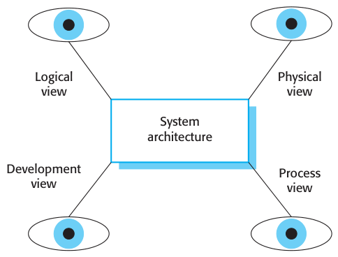
| View视图 | What it shows展示重点 | Who uses it & why主要用途 |
|---|---|---|
| Logical（逻辑视图） | Core system abstractions organized as classes and objects.以类与对象形式组织系统关键业务抽象。 | Trace functional requirements cleanly onto design entities.将功能需求追溯映射至具体设计实体。 |
| Process（进程视图） | Runtime processes and how they communicate dynamically.运行期进程拆分、并发及跨进程通信机理。 | Analyze runtime performance, throughput bottlenecks, and availability.评估响应性能、并发冲突与系统可用性。 |
| Development（开发视图） | Software breakdown into discrete modules/packages owned by developers or teams.软件源码与目录按团队工作包拆分出的模块构件。 | Project managers and programmers assigning parallel build tasks.项目经理派工切块、程序员组织源码仓库。 |
| Physical（物理视图） | Physical hardware nodes and how software processes deploy across them.物理服务器/网络硬件及软件部署拓扑映射。 | Systems engineers planning hardware procurement and deployment.系统运维/基础设施工程师规划算力机器与网络上架。 |
Hofmeister and colleagues propose adding an abstract conceptual view（概念视图）sitting above code/platforms—decomposing high-level requirements, spotting reusable product-line subsystems (e.g., vision, package selection, arm/gripper control, and conveyor control in a packing robot), and explaining the system simply to stakeholders. Almost every project draws the conceptual view, adding any of the 4+1 views only where needed.此外，Hofmeister 等人还提出极为常用的概念视图：它完全抽离代码细节，专用于拆解高层需求、识别产品线复用构件（如装箱机器人拆为视觉、选箱、机械臂控制与传送带控制四大块），几乎每个项目都会先画一张给各方建立共识，其余四个视图按需选用。
Step 2: notations第 2 步：记法
Architectural diagrams serve two very different purposes: uncluttered discussion with stakeholders vs complete documentation of component interfaces and connectors:架构记法在“直观讨论”与“严密归档”两端面临截然不同的取舍：
| Notation表示法 | Strengths优势 | Weaknesses短板 |
|---|---|---|
| Informal block diagram（非正式框图）：boxes + nested boxes + flow arrows框套框加流向箭头 | Intuitive for managers and domain experts, fast to sketch; often the only architectural model used.非技术人员一望即知、手绘成本极低，很多项目全靠它。 | Does not specify relationship semantics or precise external component properties.看不出连线精确语义，也缺外部可见接口约束。 |
| UML | Widely known standard, strong for detailed OOP/MDA documentation.行业通用标准，适合详细文档化与模型驱动开发。 | Class abstractions can pull focus too close to implementation; often used informally.偏重面向对象与具体代码类，日常常仍被非正式简用。 |
| Architecture Description Language (ADL)（体系结构描述语言） | Formal syntax separating components, connectors, and well-formedness rules—unambiguous.构件、连接件与合法性规则严谨形式化，近乎零歧义。 | Steep learning curve for domain specialists, expensive tooling, and scarce mainstream adoption.领域专家难读懂、工具开销大且性价比不明，未成主流。 |
In agile projects where comprehensive design documents go unread, stick to views that genuinely improve team communication—reserving rigorous UML or ADL documentation for safety-critical systems.敏捷团队认为厚重设计文档鲜有人翻阅，因此日常只需绘制真正促进沟通的视图，唯独关键安全系统才值得投入严格 UML/ADL 归档。
Four steps to sketch the right view:按需绘图的四步口诀：
- State the exact question the diagram must answer (e.g., "Will response times hold?").先定问题（例如“吞吐响应撑得住吗？”）。
- Select the matching view: Process (speed/availability), Physical (servers/deployment), Development (team assignment), Logical (requirements-to-class trace).对号选视图：看性能查进程、看买机器查物理、看派活查开发、看需求对应查逻辑。
- Draw one named box per relevant entity at that view's abstraction level.在该抽象层为每个构件画一个命名方框。
- Connect communicating boxes with arrows labelled clearly as data flow or control.拉出连线箭头，注明传递的是数据还是控制信号。
Practice练习
Q1. (Match) Select the Kruchten 4+1 view tailored to each question:Q1.（匹配）下列每项工程任务分别对应 Kruchten 4+1 模型中的哪种视图？
- Deciding which team builds which subsystem package.决定把哪些构件工作包指派给哪支开发团队。
- Checking whether two concurrent processes sharing one CPU still meet response deadlines.评估共享单颗 CPU 的两个进程能否满足实时响应限值。
- Planning which cloud VMs or servers host each runtime component.规划各构件最终部署在哪几台物理/虚拟服务器上。
- Tracing which object classes realize functional requirement R5.追踪需求条款 R5 具体落在了哪些对象类中实现。
Answer
- Development view (software modules split per team).开发视图（面向团队分工拆解模块）。
- Process view (runtime concurrency, performance, availability).进程视图（面向运行性能与并发调度）。
- Physical view (hardware topology and software allocation).物理视图（面向硬件与节点部署）。
- Logical view (domain objects realizing system requirements).逻辑视图（面向需求与类/对象抽象映射）。
Q2. (True or false) "Because informal block diagrams omit relationship types and interface properties, architects should replace them entirely with formal ADLs." Evaluate this claim.Q2.（判断）“非正式框图既不说明连线类型也无详细接口约束，因此架构师应全面弃用并改用严格 ADL。”评价正误并说明理由。
Answer
False. Although block diagrams lack formal precision for complete contractual documentation, they are intuitive, fast to sketch, and uncluttered—making them the premier vehicle for stakeholder communication and early planning. Heavyweight ADLs carry high tooling/training costs justified only for critical systems requiring exhaustive documentation.错误。必须区分“沟通讨论”与“严谨归档”两种目的：框图作为详细规格确有不足，却胜在直观、少干扰且随手可得，是团队讨论与高管沟通的最高效媒介；只有极关键高可靠系统才值得付出 ADL 的高昂学习与维护成本。
思路：按“讨论用 vs 归档用”区分工具性价比，而非盲目追求最重的形式化语言。
Architectural patterns: MVC and layered ★★★体系结构模式：MVC 与分层
Goal. State the idea, applicability, advantages, and disadvantages of both MVC and layered patterns, trace a user interaction step by step through MVC, and pick the better fit for a scenario.目标。说清 MVC 与分层模式的思路、适用场景及优缺点，能一步步演算一次 MVC 交互流，并准确判断场景选型。
An architectural pattern documents proven structural wisdom across systems—capturing a memorable name, core mechanism with diagram, concrete example, applicability criteria, and trade-off pros/cons.体系结构模式是对跨项目验证过的成熟结构实践的程式化总结，固定包含名称、图解核心结构、实例、适用场景以及利弊权衡。
Step 1: Model–View–Controller第 1 步：模型-视图-控制器（MVC）
Core idea: decouple underlying system data (Model) cleanly from display formats (Views) and user input handling (Controller) so multiple synchronized views share one source of truth.核心思路：把“后台数据状态（Model）、前台多视图展示（View）和用户操作调度（Controller）”三方独立拆开，实现“改一处数据，多张屏幕自动同频刷新”。
Think again of that restaurant: the kitchen maintains the real food state (Model), plates and menus present it in various formats (Views), and waitstaff translate guest orders into kitchen requests (Controller).对应上面的餐厅比喻：后厨管真材实料即 Model，菜单和摆盘呈现各异视觉效果即 View，服务员接听客人点击点单再向后厨下令即 Controller。
| Aspect考察维度 | Model–View–Controller, MVC（模型-视图-控制器） |
|---|---|
| Core idea核心思想 | Decouples presentation and interaction from core data: the Model manages state and operations, each View renders data, and the Controller maps user actions (clicks/keys) to Model updates and View selection.将界面展示和交互从底层数据解耦：Model 掌管数据与业务操作；View 负责渲染展示；Controller 接收按键鼠标事件并转成模型更新与视图切换。 |
| When to use适用场景 | When the same underlying state needs multiple simultaneous or interchangeable views/interactions, or future UI needs are fluid.同一份数据须同时以多种形式呈现交互，或后期展示样式可能频繁扩充替换。 |
| Advantages优点 | Data and UI evolve independently; multiple views coexist over one data source; edits through one view refresh every linked view automatically.数据与表现独立演化；支持同一份数据外挂多样视图；任一处改数，所有关联视图同步更新。 |
| Disadvantages缺点 | Introduces extra abstraction classes, boilerplate wiring, and indirection when data and UI are dead simple.面对极其简单的数据与界面，会平添额外的样板代码与架构复杂度。 |

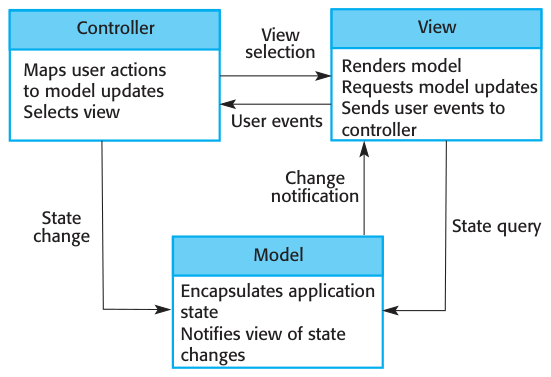
Trace a single user edit step by step:追踪一次用户交互在 MVC 中的完整闭环：
- The user modifies a value inside a View, firing an input event to the Controller.用户在某 View 中修改数值，操作事件发往 Controller。
- The Controller validates the input and invokes the matching update operation on the Model.Controller 校验后映射并调用 Model 的对应修改操作。
- The Model mutates its internal state and notifies all registered Views.Model 刷新内部状态，并广播通知名下所有已注册的 View。
- Each View queries fresh state from the Model and re-renders (while the Controller may also switch active Views).各 View 主动向 Model 查询最新数据并重新绘制（Controller 亦可顺势切换新视图）。
In web applications, the browser triggers events, server controllers process HTTP requests/validation, views assemble dynamic HTML, and the model owns domain rules and database persistence.在 Web 应用中：浏览器发送 HTTP 请求至服务端 Controller 处理路由鉴权，Model 落实业务逻辑与数据库存取，View 负责拼装返回动态网页。
Step 2: the layered architecture第 2 步：分层体系结构
Core idea: stack capabilities horizontally so every layer builds strictly on the public interface of the single layer directly below it.核心思路：将软件纵向垒成若干层次，严令每层只调用紧邻其下方那一层的接口——换掉某一层接口不变，上层稳丝不动。
Like a company hierarchy where clients speak only to the front desk, the front desk escalates to a manager, and only the manager instructs the warehouse, clean layering forbids skipping intermediate layers.如同职场不越级汇报：客户只找前台、前台只找经理、经理再调度仓库。规范的分层架构禁止高层绕过中间层直接戳到底层。
| Aspect考察维度 | Layered architecture（分层体系结构） |
|---|---|
| Core idea核心思想 | Organizes services as a stack of layers where each layer calls strictly the layer immediately below it; core platform services sit at the bottom.系统按职责纵向堆叠，每层仅依赖紧邻下层的对外接口服务，全系统共用的基础支持置于最底层。 |
| When to use适用场景 | Building atop legacy systems, splitting work across parallel layer teams, or enforcing multi-level security validation.在既有老系统之上扩新功能、按层把任务分包给独立团队，或须部署多层递进安全审查。 |
| Advantages优点 | Enables whole-layer replacement behind stable interfaces; supports incremental layer delivery; localizes interface edits to adjacent layers; isolates hardware/OS dependencies for easy porting; enables redundant security checks across layers.守住接口即可整层替换；支持自底向上增量交付；改接口最多仅波及邻近层；屏蔽硬件/系统差异便于跨平台移植；可逐层布防鉴权提升可信度。 |
| Disadvantages缺点 | Clean isolation is hard in practice when upper layers bypass levels for efficiency; passing and re-interpreting requests through many layers degrades performance.严格隔离在实践中常被迫妥协跨层直调；每次请求须穿越多层逐级解译，造成明显性能损耗。 |
A classic layered business architecture comprises four stacks (though layer count is arbitrary): (1) User interface, (2) UI management & authentication/authorization, (3) Core business logic & utilities, and (4) System support (OS & database).经典四层业务架构（层数本身视需求而定）自顶向下依次为：（1）用户界面层；（2）用户交互管理与身份认证授权层；（3）核心业务逻辑与公用工具层；（4）系统支撑层（操作系统与数据库）。
Practice练习
Q1. (Trace) On a sales dashboard displaying both a table and a bar chart over shared data, the user edits a cell in the table. Trace the full MVC interaction step by step, and explain what happens if a pie chart is added later.Q1.（手工演算）销售看板同时以表格与柱状图显示同一业绩数据，用户在表格内改写了一行数字。请追踪完整 MVC 调用链，并说明后续新增饼图会改动哪些部分。
Answer
- The table View forwards the user edit event to the Controller.表格视图将用户输入事件转交 Controller。
- The Controller validates the entry and maps it into a state update on the Model.Controller 校验合法后调用 Model 接口更新数据。
- The Model stores the revised value and broadcasts a state-change notification to all registered Views.Model 落库新值，并向名下全部注册视图发变更通知。
- Both the table View and the bar-chart View query the Model's fresh value and re-render cleanly.表格视图与柱状图视图双双回查最新 Model 并各自重绘。
Adding a pie chart later: Implement one new pie-chart View and register it with the Model; neither the Model nor existing table/bar views require code edits thanks to MVC separation.新增饼图的影响：只需新写饼图视图类并注册到 Model，原有 Model 与两张旧视图代码零改动。
Q2. (Explain) Why is a layered architecture favoured when security is critical, and what engineering price does it impose?Q2.（解释）为什么面向高信息安全需求的系统往往首选分层架构？这么做必须付出什么代价？
Answer
Placing core sensitive assets inside the innermost layers enforces multi-layer security barriers (with optional redundant authentication/validation checks per layer), forcing attackers through multiple checks before reaching protected data. The main engineering price is reduced performance (every request must pass through and be translated across several tiers) plus design tension when programmers feel tempted to bypass layers for speed.分层能将核心涉密资产藏在最内层防线之后，外围层层部署独立的身份认证与输入核验关卡，迫使攻击者须冲破多重壁垒；付出的代价则是性能损耗（请求须逐层解包转发）以及部分高效操作被迫绕层带来的架构退化风险。
思路：安全收益 + 性能代价成对必答。
Architectural patterns: repository, client–server, pipe and filter ★★★体系结构模式：仓库、客户端-服务器、管道-过滤器
Goal. Characterize each pattern (core idea, use case, advantages, disadvantages), compare them systematically, and choose and justify the optimal pattern for a given system.目标。掌握这三种模式的思想、适用场景、优缺点与对比矩阵，并能在考题场景中果断选型、自圆其说。
Step 1: repository第 1 步：仓库
Core idea: all components share and communicate strictly through one central data repository instead of calling one another directly.核心思路：所有独立工具/构件一律围绕唯一中央数据仓库读写协作，彼此之间完全解耦、从不私下直连。
Just as doctors, nurses, and pharmacists in a clinic work from a single central medical-records room rather than passing loose notes around, every update made by one component immediately becomes visible to all others.好比诊所里的医生、护士与药房都只去中央病历室查填同一份病历，从不彼此互传零散小纸条——任何一方改写病历，其余角色立即可见最新事实。
| Aspect维度 | Repository（仓库模式） |
|---|---|
| Core idea核心思想 | Shared system data lives in one central repository; components never exchange messages directly and interact solely via that store.全体共享数据汇总在唯一中央存储库中，构件彼此互不相识、只经仓库间接通信。 |
| When to use适用场景 | Systems generating and storing large volumes of shared persistent data, or data-driven workflows where new data triggers tools.须长期存管大规模共享数据的系统，或写入特定数据即触发对应工具运行的场景。 |
| Advantages优点 | Components remain decoupled and independent; any data change propagates to all immediately; data backups, security, and consistency sit in one place.工具构件彼此高度独立易增删；单点写入全员同步可见；备份、权限与一致性策略得以集中统一管控。 |
| Disadvantages缺点 | Central repository is a single point of failure; funneling all exchanges through one store can create throughput bottlenecks; hard to distribute consistently across machines; forces all components onto one agreed data schema (blocking incompatible tools).中央仓库构成单点故障；全量通信皆绕仓库易生性能瓶颈；跨机多副本分布同步难度高；所有新旧工具必须迁就同一套数据模型妥协。 |
An Integrated Development Environment (IDE) exemplifies the repository model, uniting code editors, generators, analyzers, and debuggers atop a shared project store:集成开发环境（IDE）就是仓库模式的典型代表——代码编辑器、分析器、翻译器与生成器围绕项目仓库统一协作：

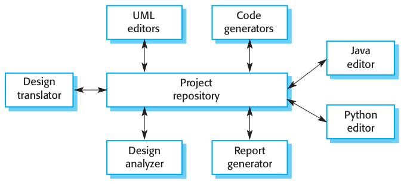
Unlike a passive repository where tools poll for data, an active blackboard（黑板模型）variant automatically triggers relevant components whenever matching data arrives—ideal for unstructured data (such as speech or vision) where the right processor is selected only after examining incoming payloads.上述被动仓库由外部工具主动发起读写；而在主动的黑板模型（Blackboard）变体中，只要特定数据落入仓库就会主动唤醒合适构件介入——非常契合语音/图像等非结构化数据在分析后才拍板调用谁的场景。
Step 2: client–server第 2 步：客户端-服务器
Core idea: organize runtime services across independent servers accessed over a network by many clients via request–reply protocols such as HTTP.核心思路：将系统运行时拆为专职提供网络服务的服务器端集群与广泛分布的轻量客户端，按 HTTP 等请求-应答协议跨网调用。
Just as office workers send print jobs to one shared print server without the server needing to track who owns which laptop, clients know server endpoints and submit requests using a request–reply protocol（请求-应答协议）:好比全楼员工的电脑都知道网络打印服务器地址却互相不知彼此存在，客户端发来请求后等待服务器给出应答：
| Aspect维度 | Client–server（客户端-服务器） |
|---|---|
| Core idea核心思想 | Runtime services run on separate servers; clients invoke them remotely over a network using synchronous request–reply protocols (e.g., HTTP).功能被拆分成一组独立运行的服务器，由客户端跨网络以请求-应答方式同步取用服务。 |
| When to use适用场景 | Shared data or services must be reached from many distributed locations under fluctuating load (servers can be replicated dynamically).共享数据或算力须由多地客户端远程取用，或并发访问量波动大须靠服务器复制扩容的场景。 |
| Advantages优点 | Supports clean network distribution; centralizes shared utilities cleanly; servers can be scaled, upgraded, or replicated without rewriting clients.天然契合分布式联网部署；公用资源一处托管全员共享；服务器可平滑增容、升级或复制而不改动客户端。 |
| Disadvantages缺点 | Each un-replicated server is a single point of failure vulnerable to denial-of-service attacks; network latency makes performance unpredictable; cross-organization governance complicates operations.每台单机服务器都是单点故障且易遭拒绝服务攻击；受限于公网波动导致响应延迟难预测；跨组织运维边界易扯皮。 |
Multiple logical servers (catalogue, video streaming, web front end) can coexist on one host or scale across separate machines as client instances multiply:目录、点播视频、图片与 Web 等多类服务可共用主机亦可分台部署，应对海量客户端并发接入：

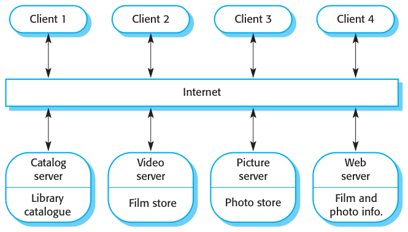
Key exam distinction: a Repository defines static data-sharing structure where components never call one another, whereas Client–server defines dynamic runtime process distribution where clients explicitly send service requests to servers.必考核心区分：仓库刻画的是静态期“工具如何共用一份中央数据”（互相不见面）；客户端-服务器刻画的是运行期“进程如何按网络服务分布”（客户端点名向服务器发调用）。
Step 3: pipe and filter第 3 步：管道-过滤器
Core idea: transform input streams step by step along an assembly line of independent single-purpose filters connected by data pipes.核心思路：数据像流水线车体一样流经串接的一站站单一职责“过滤器”，各自独立完成一步变换后经“管道”直传下一站。
Like an automated car wash passing vehicles sequentially through soap, high-pressure rinse, and blow-dry booths—or Unix pipelines such as cat words.txt | sort—each processing unit is a self-contained filter（过滤器）joined by pipes（管道）.犹如全自动洗车房依次经过打沫、冲洗与风干，或是 Unix 管道命令 cat words.txt | sort，每个处理工位都是独立可复用的过滤器：
| Aspect维度 | Pipe and filter（管道-过滤器模式） |
|---|---|
| Core idea核心思想 | Discrete functional transformations (filters) process streaming or batched inputs sequentially or concurrently, exchanging data solely through connecting pipes.独立变换构件（过滤器）之间仅通过管道单向传送数据流，可逐条流式推进也可成批处理并支持阶段并发。 |
| When to use适用场景 | Batch or transaction data-processing systems transforming structured input sequences through distinct stages, and pipeline-style embedded processing.账单核算等批处理/流水线式数据转化业务，以及连续传感数据过滤型嵌入式流水线。 |
| Advantages优点 | Simple, transparent data flow mirrors real business workflows; filters are modular, reusable, easily extended by inserting steps, and run cleanly either sequentially or concurrently.直观贴合业务步调；过滤器模块高度内聚易复用与插拔升级；天然支持单机串行或管道级并行执行。 |
| Disadvantages缺点 | Forces a uniform shared interchange format; every filter spends CPU overhead parsing input and formatting output; incompatible schemas block reuse; poorly suited for event-driven interactive GUIs.上下游必须约定死统一交换格式；每过一站都要反复拆包解析与打包输出增加开销；极不适合鼠键实时跳转的交互式界面。 |
When filters run purely one full batch after another (common in billing and payroll systems), this specialization is called batch sequential（批处理顺序）mode; conversely, event-driven GUI apps are awkward to force into streams.当各站按顺序吞吐整批文件时，特称为常见于财务计费的批处理顺序模型；然而它并不擅长刻画随时随地触发鼠标点击的交互式图形软件。

Step 4: combining patterns第 4 步：多模式组合
Real systems routinely weave multiple patterns together—for instance, a modern web application uses client–server across network tiers, layered separation inside its backend, MVC in its interactive UI, and pipe and filter for batch reporting or media encoding.真实大型软件从不拘泥单模式：常见 Web 应用外层呈客户端-服务器分布，后端内部严守分层防线，前端交互借力 MVC，而夜间的账单或媒体入库则由管道-过滤器流水线默默驱动。
Practice练习
Q1. (Compare) Contrast Repository vs Client–server across four dimensions: architectural concern, communication mechanism, key weakness, and classic domain examples.Q1.（比较）从关注焦点、通信方式、主要弱点与典型应用四个维度对比仓库模式与客户端-服务器模式。
Answer
| Repository仓库模式 | Client–server客户端-服务器 | |
|---|---|---|
| Primary focus描述侧面 | Static architecture: how tools share persistent data静态数据架构：多构件如何共享同一数据源 | Dynamic runtime: how distributed processes invoke network services动态运行分布：跨网络客户与服务器进程协同 |
| Interaction交互方式 | Indirectly solely via central store (never direct calls)彼此零直接通信，全凭读写共享中心库传递影响 | Direct request–reply calls from clients to servers客户端显式发请求包并等待服务器应答 |
| Key weakness主要短板 | SPOF repository; rigid unified schema bottleneck中心单点故障；全员被迫迁就单一数据模式难分布 | Un-replicated servers form SPOF; network jitter/latency单机服务器易成单点瓶颈；响应受网络延迟支配 |
| Examples典型应用 | IDEs, CAD suites, command-and-control systems集成开发环境、CAD 工具链、指挥控制系统 | Web apps, remote video libraries, bank branch networksWeb 商店、流媒体影库、跨城联网查询业务 |
Q2. (Trace) Given words.txt holding lines cat, dog, cat, bird, cat, dog, trace the output after every stage of cat words.txt | sort | uniq -c | sort -nr | head -2 and explain why it matches the pipe-and-filter pattern.Q2.（手工演算）设文件 words.txt 含逐行词 cat, dog, cat, bird, cat, dog，追踪 Unix 命令管道 cat words.txt | sort | uniq -c | sort -nr | head -2 各阶段产出并说明为何符合管道-过滤器。
Answer
sort:bird, cat, cat, cat, dog, dog.sort排序后：bird、cat、cat、cat、dog、dog。uniq -c:1 bird, 3 cat, 2 dog.uniq -c归并计数：1 bird、3 cat、2 dog。sort -nr:3 cat, 2 dog, 1 bird.sort -nr按频次降序：3 cat、2 dog、1 bird。head -2:3 cat, 2 dog.head -2截取前二：3 cat、2 dog。
Each command acts as an independent single-purpose filter transforming an input text stream while Unix pipes stream outputs cleanly to the next stage (allowing concurrent execution with zero interactive GUI input needed).每条独立命令都是单职责过滤器，仅认统一纯文本行流协议，借系统管道串联形成可并行的非交互数据处理链。
Q3. (Design) Explain how several architectural patterns combine cleanly inside an autonomous cattle-herding drone system with optional remote human control.Q3.（设计）说明自主放牧牛群且支持远程人工接管的无人机系统如何恰当地组合多种体系结构模式。
Answer
Because each concern operates at a different system level, five patterns collaborate cleanly without conflict:各关注点处于系统不同侧面，五种模式各司其职且互不抵触：
- Pipe and filter (on-board perception): camera frames flow through detection \(\to\) tracking \(\to\) herd-velocity estimation \(\to\) trajectory commands.管道-过滤器（机载视觉流水线）：视频帧流经检测、跟踪、牛群势态判断直到飞控动作生成。
- Layered (on-board drone architecture): hardware drivers, flight stabilization/safety, herding logic, and radio communications isolate safety-critical flight code below mission AI.分层（单机内部软件）：由传感器驱动、飞行平稳控制、驱赶决策到通信栈逐层隔离，守住飞控核心安全。
- Client–server (fleet networking): a ground server distributes telemetry, maps, and overrides to drones and operator consoles over wireless links.客户端-服务器（天地协同）：地面站服务器对多架巡飞无人机与多个监控端按请求提供地图、遥测与遥控下发。
- MVC (ground console): shared local herd/fleet state acts as Model rendered simultaneously on map, live video, and alarm Views while joystick input acts through the Controller.MVC（地面操控台）：态势模型统一驱动地图、监控画面与告警窗同步刷屏，摇杆操作走控制器转指令。
- Repository (central state store): field maps, no-go zones, cattle locations, and drone plans reside in one shared ground datastore.仓库（地面全局态势库）：统筹地理围栏、牛群坐标与各机任务规划，防冲突。
Crucial reliability safeguard: Because the ground server is a single point of failure, each drone maintains autonomous local failsafe flight control upon radio link loss.注：地面站为单点故障，故每架无人机底层必须自备失联悬停或自主返航保底机制。
Application architectures ★★应用体系结构
Goal. Explain generic vs reference application architectures, trace atomic transaction processing, size servers across multi-tier web systems, and describe the six core components of a compiler.目标。说明通用应用架构与参考体系结构的作用，追踪原子事务的提交与回滚，计算三层信息系统各层服务器配置，并阐述编译器的六大组成部分。
Step 1: generic application architectures第 1 步：通用应用体系结构
Core idea: domain applications share common needs, so generic application architectures serve as reusable domain blueprints rather than inventing every design from scratch.核心思路：同行业系统在结构上高度趋同，通用应用体系结构把成熟骨架沉淀为可直接复用的起步蓝图与查漏清单。
Because businesses in a sector solve recurring structural problems, a generic application architecture provides teams with a proven starting design, a completeness checklist, a division-of-work structure, an evaluation baseline for buying COTS components, and a shared engineering vocabulary. A broader reference architecture（参考体系结构）catalogues every feature potentially occurring across an entire domain solely to evaluate and compare concrete architectures.由于同行业系统总是在解相似的问题，通用应用体系结构为研发团队充当起步样板、设计查漏表、任务分工依据、现成构件适配比对标准及统一行业术语。视野更宽的参考体系结构则囊括某领域内可能用到的全集元素，专作评估与对比具体设计方案的参照基准。
Step 2: transaction processing systems第 2 步：事务处理系统
Core idea: an atomic transaction bundles dependent operations so either every step commits permanently together or a rollback undoes every partial effect.核心思路：原子事务把一组相互牵连的操作捆绑成“要么全做、要么全不做”的不可分单元，靠提交落盘或故障回滚死守账目平衡。
In a bank transfer debiting account A and crediting account B, crashing halfway after debiting A must never erase customer funds silently.譬如银行转账“先扣 A 再加 B”，绝不能允许扣完 A 后服务器断电却没给 B 入账，让钱凭空蒸发。
Inbound requests pass through I/O processing into application-specific logic, which constructs transactions and delegates execution to a transaction manager (typically embedded inside the DBMS) that ensures clean completion before replying.外部请求先经 I/O 处理送至应用业务逻辑，由其编排事务并全权交托内置于数据库管理系统（DBMS）的事务管理器保驾护航，确认全部落盘后再反馈应用层。
Step 3: information systems第 3 步：信息系统
An information system（信息系统）provides controlled access to large repositories (e.g., library catalogues, clinical records) organized along a generic four-layer stack: (1) User interface, (2) User communications with authentication & authorization, (3) Information retrieval & modification (application logic), and (4) Transaction management & database:信息系统为庞大数据集（如馆藏目录、医疗病历）提供受控访问，其通用四层骨架自上而下包括：（1）用户界面层；（2）通信与认证授权层；（3）信息检索修改逻辑层；（4）事务管理与数据库层：

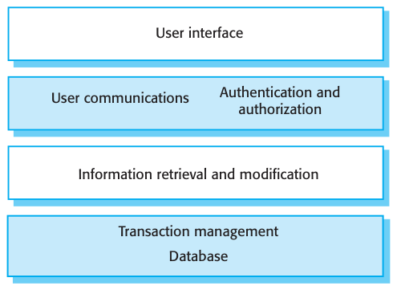
Over the Web, these systems deploy as multi-tier（多层）client–server architectures across three server roles: a web server managing browser sessions, an application server running domain rules and queries, and a database server executing transactions and persistence.在 Web 架构下，这四层通常落成三类服务器分工的多层（multi-tier）客户端-服务器系统：Web 服务器专管通信交互，应用服务器执行业务逻辑，数据库服务器处理事务与磁盘存取。
To size servers per tier, divide total request load by one server's capacity and round up—recognizing that overall system throughput is strictly capped by the slowest bottleneck tier:规划各层需要几台机器时，拿到达总负载除以单机吞吐上限再向上取整；整套系统的最大吞吐力死死受制于产能最低的瓶颈那一层：
Step 4: language processing systems第 4 步：语言处理系统
A language processing system（语言处理系统, e.g., compiler or query translator) pairs a translator—validating syntax/semantics and emitting instructions for an abstract machine—with an interpreter that executes those instructions:语言处理系统（如编译器、自然语言转 SQL 引擎）由两大部组成：翻译器做语法语义检查并生成抽象机指令，再由解释器取指运行：

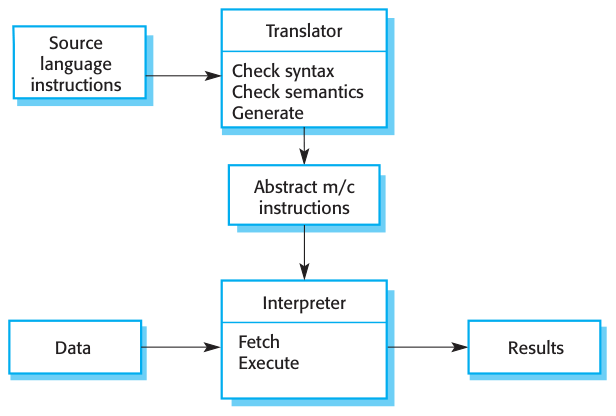
Inside a compiler, six canonical components collaborate sequentially:一个标准编译器内设六个核心构件协同推进：
- Lexical analyzer（词法分析器）: scans raw characters into internal tokens.词法分析器：切分输入字符流为内部词法记号（tokens）。
- Symbol table（符号表）: tracks identifiers, types, and scope metadata across phases.符号表：集中登记录入所有标识符的名称、数据类型与作用域。
- Syntax analyzer（语法分析器）: checks grammar rules and constructs the syntax tree.语法分析器：依文法核查句法结构，装配出抽象语法树。
- Syntax tree（语法树）: internal hierarchical AST representing program structure.语法树：程序逻辑构成的内部树状表示。
- Semantic analyzer（语义分析器）: verifies type safety and semantic coherence against tree & symbol table.语义分析器：核查类型匹配、声明先导等深层语义合法性。
- Code generator（代码生成器）: traverses the validated AST to emit abstract machine code.代码生成器：遍历语法树生成可运行的抽象机指令序列。
Notice a neat pattern hybrid: batch compilers arrange phases sequentially as a pipe and filter chain sharing the symbol table and AST, whereas interactive IDEs (e.g., syntax-directed editors and live debuggers) turn those shared structures into a central repository so any edit updates every tool immediately.注意模式混用巧妙之处：批处理编译器呈管道-过滤器直线推进，但若用于边敲代码边标红提示的交互 IDE，就把符号表与语法树升级为中心仓库，令编辑器、查错器与重构工具时刻共享同一份实时树表。

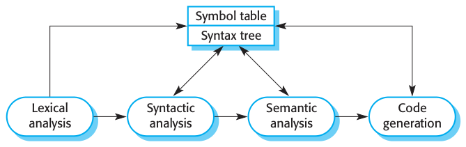
Practice练习
Q1. (Calculation) An online store expects 9,000 transactions/min. Capacities per server are: Web = 2,000/min, Application = 750/min, Database = 5,000/min.Q1.（计算）某网上商城需承载每分钟 9,000 笔交易；单台服务器上限分别为 Web 2,000/min、应用 750/min、数据库 5,000/min：
- How many servers are needed in each tier to serve full load?为扛住峰值负载，三层各需部署几台服务器？
- What total throughput does a deployment of 3 Web, 8 Application, and 2 Database servers deliver, and which tier bottlenecks it?现有部署“3 台 Web、8 台应用、2 台数据库”的总产能是多少？谁拖了后腿？
Answer
- Web: \(\lceil 9000 / 2000 \rceil = \lceil 4.5 \rceil = \mathbf{5}\); Application: \(\lceil 9000 / 750 \rceil = \mathbf{12}\); Database: \(\lceil 9000 / 5000 \rceil = \lceil 1.8 \rceil = \mathbf{2}\). Total = 19 servers.Web：\(\lceil 9000/2000\rceil=\mathbf{5}\) 台；应用：\(\lceil 9000/750\rceil=\mathbf{12}\) 台；数据库：\(\lceil 9000/5000\rceil=\mathbf{2}\) 台，合计 19 台。
- Tier capacities: Web \(= 3 \times 2000 = 6000\); Application \(= 8 \times 750 = 6000\); Database \(= 2 \times 5000 = 10000\). System capacity \(= \min(6000, 6000, 10000) = \mathbf{6,000\text{ tx/min}}\). Both Web and Application tiers jointly limit throughput—adding extra Database servers would yield zero speedup.三层上限分别为 6000、6000 与 10000，整系统吞吐取最小值 6,000 tx/min；Web 层与应用层并列成为瓶颈，此时加买数据库服务器毫无作用。
Q2. (Trace) Trace compilation (lexical, syntax, semantic analysis, code generation) and execution for z = a * b + 4; when \(a = 3\) and \(b = 5\).Q2.（手工演算）已知 \(a=3, b=5\)，列出 z = a * b + 4; 经历词法、语法、语义、代码生成直到执行的完整推演。
Answer
- Lexical & symbol table: 8 tokens
z,=,a,*,b,+,4,;; symbol table notesz, a, basint.词法与符号表：切出 8 个记号；z, a, b登记为int。 - Syntax tree:
assign(z, add(mul(a, b), 4)).语法树：assign(z, add(mul(a, b), 4))。 - Semantic check: integer operands and target match validly.语义：运算与赋值类型一致，检验合法。
- Code & execution:
LOAD a(\(\to 3\)),MUL b(\(\to 15\)),ADD 4(\(\to 19\)),STORE z(\(z = \mathbf{19}\)).汇编与运行：依次执行LOAD a(3)、MUL b(15)、ADD 4(19)、STORE z，得 \(z = \mathbf{19}\)。
Terms to recognise ★需要认识的术语
| Term术语 | What to know核心要点 |
|---|---|
| Reference architecture参考体系结构 | A generic architectural template encompassing the full set of features that may appear across applications in a domain, used to evaluate and compare concrete designs囊括某一应用领域中可能出现之全部要素的通用体系结构模板，用于评估和对比具体设计 |
| Architectural description language (ADL)体系结构描述语言（ADL） | A formal notation specifying components, connectors, and well-formedness rules—highly precise, yet expensive to author and maintain用于精确定义构件、连接件及良构规则的形式化语言；表达严谨，但编写与维护成本较高 |
| Blackboard黑板模型 | An event-driven variant of the repository pattern that notifies and triggers specialized components whenever matching data arrive仓库模式的一种主动变体：一旦特定数据写入共享黑板，便触发相应的处理构件工作 |
| Batch sequential批处理顺序 | A non-interactive pipe-and-filter variant in which each stage processes an entire dataset as a batch before passing results downstream, typical of billing runs管道-过滤器的一种变体，每个阶段对整批数据进行完整处理后再交予下游，常见于计费结算场景 |
| ACID | Atomicity, Consistency, Isolation, Durability—the four transactional guarantees enforced by a transaction manager原子性、一致性、隔离性、持久性——由事务管理器保障的四大事务特性 |
| Commit and rollback提交与回滚 | Commit makes all updates in a transaction permanent; rollback undoes every change on failure or abortCommit 使事务内的全部修改永久生效；rollback 则在出错或中止时撤销所有改动 |
| Shopping cart购物车 | A classic transaction boundary pattern: browsing and adding items occur in separate lightweight transactions, whereas final checkout executes as one atomic purchase transaction典型的事务边界划分模式：加购物品属于各自独立的轻量事务，最终付款则合并为单一原子购买事务 |
| Syntax-directed editor语法制导编辑器 | An interactive code editor that validates syntax as you type by operating directly on a compiler's shared abstract syntax tree repository边输入边检查语法的交互式编辑器，底层依托围绕语法树构建的仓库式编译器结构实现 |
| Product line产品线 | A core system architecture designed for systematic reuse across related products through planned variation points (Chapter 9)通过预设扩展点与变体配置，在系列相关产品间复用的核心体系结构（详见第 9 章） |
Exam-style questions考试题型练习
Q1. (Concept, 12 marks)Q1.（概念，12 分）
- (a) Define software architecture and explain why architectural design is the critical link between requirements engineering and design. (2 marks)（a）定义软件体系结构，并解释为什么体系结构设计是需求工程与设计之间的关键纽带。（2 分）
- (b) Give three advantages of designing and documenting the architecture explicitly. (3 marks)（b）列举显式设计与文档化体系结构的三大好处。（3 分）
- (c) State the architectural guideline for each of performance, security, safety, availability and maintainability. (5 marks)（c）分别写出性能、信息安全、功能安全、可用性与可维护性对应的体系结构指导原则。（5 分）
- (d) Explain why performance and maintainability conflict and how the conflict can be handled. (2 marks)（d）解释为什么性能与可维护性相互冲突，以及如何化解这一冲突。（2 分）
Answer
(a) Software architecture defines the high-level organization of a system as a set of communicating components and their relationships. Architectural design bridges requirements engineering and detailed design because it decomposes requirements into major structural components—directly fixing the structure on which non-functional qualities depend.（a）软件体系结构是将系统组织为一组相互通信的构件及其交互关系的高层结构。体系结构设计之所以成为需求工程与详细设计之间的关键纽带，是因为它既要把需求映射为主要结构构件，又从结构上直接决定了系统非功能特性的达成上限。
(b) Three benefits of an explicit, documented architecture:（b）显式设计与文档化体系结构的三大收益：
- Stakeholder communication: Provides an intuitive high-level blueprint for aligning customers, managers, and developers.促进利益相关者沟通：充当清晰的高层蓝图，方便客户、管理者与开发团队在统一视角下讨论。
- System analysis: Enables early verification of whether non-functional targets (performance, reliability, maintainability) are feasible before coding begins.支持系统早期分析：能在编码前评估性能、可靠性、可维护性等关键目标是否可行。
- Large-scale reuse: Exposes structural commonality so entire architectures can be reused across similar systems or product lines.支撑大规模复用：便于识别结构共性，使相似系统或产品线直接复用整套体系结构。
(c) Architectural guidelines by quality attribute:（c）五大质量属性对应的体系结构指导原则：
- Performance: Concentrate critical operations in a small number of large, co-located components (replicated if needed) to minimize inter-component communication.性能：将关键计算集中在同一主机上的少数大粒度构件中（必要时加以复制），以减少跨节点通信开销。
- Security: Organize into concentric layers placing critical assets in the innermost layer, backed by strict validation at each boundary.信息安全（Security）：采用分层防御架构，将核心资产置于最内层，并在各层边界实施严格校验。
- Safety: Isolate safety-critical operations within a single component or a tiny set of tightly localized components to simplify validation and certification.功能安全（Safety）：将安全关键操作高度集中在单一或极少数构件内，以便集中验证与认证。
- Availability: Incorporate redundant components and failover mechanisms so failed or upgraded units can be replaced without halting service.可用性：引入冗余构件与故障切换机制，使局部失效或升级维护无需中断整体服务。
- Maintainability: Use fine-grained, self-contained components, separate data producers from consumers, and avoid shared mutable data structures.可维护性：采用细粒度、高内聚的自包含构件，隔离数据生产者与消费者，避免共享数据结构。
(d) Performance favors large, coarse-grained co-located components that cut communication overhead, whereas maintainability favors small, decoupled components that localize changes. Architects reconcile this by partitioning the system: keep performance-critical cores coarse-grained and co-located, while structuring peripheral modules as fine-grained components.（d）性能偏爱大粒度、共置的构件以减少通信开销，而可维护性偏爱细粒度、松耦合的构件以限制修改波及范围，二者在构件粒度上天生矛盾。工程上的折中策略是分区域差异化设计：对性能瓶颈核采用粗粒度共置，其余辅助部分则保持细粒度拆分。
思路：(c) 逐条写明“结构手段 + 背后的理由”，尤其注意区分 Security（防攻击分层）与 Safety（关键逻辑收敛）；(d) 点明粗/细粒度矛盾与分域折中。
Q2. (Calculation, 12 marks) A three-tier web system has web, application and database tiers with availabilities 0.99, 0.98 and 0.97. Failures are independent and all three tiers are needed. Use 1 year = 8,760 h.Q2.（计算，12 分）某三层 Web 系统包含 Web 层、应用层和数据库层，可用性分别为 0.99、0.98 与 0.97。假设各层故障相互独立且三层缺一不可，按 1 年 = 8,760 h 计算。
- (a) Find the system availability and the expected downtime per year. (4 marks)（a）求整套系统的可用性及每年预期停机时间。（4 分）
- (b) Each tier is duplicated with an identical independent replica, and one working replica per tier suffices. Find the new availability and downtime. (4 marks)（b）为每层增设一个完全相同且故障独立的副本（每层只需至少 1 个副本正常即可），求新的系统可用性与年停机时间。（4 分）
- (c) The budget allows duplicating one tier only. Which tier, and what availability results? (3 marks)（c）若预算仅够复制其中一层，应选哪一层？新系统的可用性是多少？（3 分）
- (d) Which weakness of the repository and client–server patterns does this exercise illustrate? (1 mark)（d）这道计算题揭示了仓库模式与客户端-服务器模式的哪一项共同缺陷？（1 分）
Answer
(a) Because all three tiers form a series dependency, total availability is the product:（a）三层构成串联依赖，系统总可用性等于各层可用性之积：
\[A = 0.99 \times 0.98 \times 0.97 = 0.941094 \approx 0.9411\]
Expected annual downtime is \((1 - 0.941094) \times 8760 \approx 516\text{ h}\) (roughly 21.5 days).预期年停机时间为 \((1 - 0.941094) \times 8760 \approx 516\text{ h}\)（约 21.5 天）。
(b) Adding one parallel replica per tier turns each tier's availability into \(1 - (1 - a)^2\):（b）各层采用双机并联冗余后，单层可用性提升为 \(1 - (1 - a)^2\)：
- Web: \(1 - 0.01^2 = 0.9999\); App: \(1 - 0.02^2 = 0.9996\); DB: \(1 - 0.03^2 = 0.9991\).Web 层：\(1 - 0.01^2 = 0.9999\)；应用层：\(1 - 0.02^2 = 0.9996\)；数据库层：\(1 - 0.03^2 = 0.9991\)。
- System availability: \(A = 0.9999 \times 0.9996 \times 0.9991 \approx 0.9986\); downtime \(\approx 0.00140 \times 8760 \approx 12.3\text{ h/year}\).系统总可用性：\(A = 0.9999 \times 0.9996 \times 0.9991 \approx 0.9986\)；年停机时间降为 \(\approx 0.00140 \times 8760 \approx 12.3\text{ h}\)。
(c) Duplicate the database tier because it is the weakest link (\(0.97\)) and yields the largest gain:（c）应当复制数据库层，因为它是可用性最低的短板（\(0.97\)），冗余后提升幅度最大：
- Database duplicated: \(0.99 \times 0.98 \times 0.9991 = \mathbf{0.9693}\) (best).复制数据库层：\(0.99 \times 0.98 \times 0.9991 = \mathbf{0.9693}\)（最优）。
- Comparison—application duplicated: \(0.99 \times 0.9996 \times 0.97 = 0.9599\); web duplicated: \(0.9999 \times 0.98 \times 0.97 = 0.9505\).对比——仅复制应用层得 \(0.9599\)，仅复制 Web 层得 \(0.9505\)。
(d) It illustrates the single point of failure risk: any un-replicated central server or repository caps the availability of the entire system.（d）揭示了单点故障（single point of failure）隐患：未作冗余的中心服务器或共享仓库会直接拖垮整套系统的可用性上限。
易错：串联求积，并联冗余先算全部宕机概率 \((1-a)^n\) 再用 \(1-(1-a)^n\)，千万别把副本可用性直接相乘。
Q3. (Design, 15 marks) An online music store sells and distributes music over the Internet: users browse a catalogue, buy tracks, download or stream them, and keep a personal library on several devices.Q3.（设计，15 分）某在线音乐商店通过互联网销售和分发音乐：用户可浏览曲库、购买曲目、下载或在线流式收听，并在多台设备上同步个人音乐库。
- (a) Name the three most important non-functional requirements and justify them. (3 marks)（a）列出三项最关键的非功能需求并说明理由。（3 分）
- (b) Propose an architecture, naming the architectural patterns it is based on and the main components. (8 marks)（b）提出一套体系结构方案，指明所采用的体系结构模式及主要构件。（8 分）
- (c) Give two weaknesses of your design and a mitigation for each. (4 marks)（c）指出该设计的两个潜在弱点，并各给出一种缓解措施。（4 分）
Answer
(a) Key non-functional requirements:（a）三项核心非功能需求：
- Availability: Customers expect 24/7 access; downtime translates directly into lost revenue.可用性：商店必须全天候可用，任何宕机都会直接损失营收。
- Security: Customer accounts, payment credentials, and licensed audio assets must be protected against theft and tampering.信息安全：必须保护用户账户、支付凭证及受版权保护的音频内容。
- Performance under variable load: Popular album releases trigger spikes of concurrent browsing, downloads, and streaming.高并发负载下的性能：热门新歌发布时会吸引大量用户同时检索、下载与流式播放。
(b) Proposed architecture and constituent patterns:（b）推荐体系结构及组合模式：
- Client–server (runtime distribution): Desktop/mobile/browser clients interact with dedicated catalogue/search, account, payment, and media-delivery servers; the media server is separated (and replicated) to isolate heavy streaming bandwidth from transactional traffic.客户端-服务器（运行时分布）：浏览器/移动客户端连接各自独立的曲库搜索、账户、支付及媒体分发服务器；将媒体服务器单独拆分并水平复制，避免大流量流媒体阻塞交易服务。
- Layered (back-end security & modularity): Browser/client gateway \(\to\) user authentication & comms \(\to\) business logic (browsing, cart, purchase, licensing) \(\to\) persistent database and file storage, placing payment/licence data in protected inner layers.分层（后端安全与隔离）：依次划分为接入网关层、认证与通信层、业务逻辑层（检索、购物车、下单、授权）及数据存储层，将支付与许可证数据妥善护于内层。
- MVC (client UI): Local library/playlists act as the Model, store/player screens as multiple synchronized Views, and playback/purchase actions as the Controller.MVC（客户端界面）：曲库与歌单作为模型，商店页与播放页等多重视图自动同步展示，用户操作由控制器调度。
- Pipe and filter (content ingestion): Incoming label audio passes sequentially through validation, multi-bitrate encoding, DRM watermarking, and publication filters.管道-过滤器（音频入库流水线）：唱片公司提交的母带依次流经格式校验、多码率转码、版权水印嵌入及上架发布各阶段。
- Repository & atomic transactions (data consistency): Search and recommendation engines share a central catalogue/metadata repository, while checkout executes as an atomic database transaction (reserve, charge, grant licence).仓库与原子事务（数据一致性）：检索与推荐工具共用中心化的曲库元数据仓库；购买结算则作为原子数据库事务执行（预占、扣款、发证同成或同撤）。
(c) Two weaknesses and mitigations:（c）两大弱点与缓解措施：
- Single points of failure: Critical servers and the shared repository can fail—mitigate with server replication, clustering, and automated failover.单点故障风险：中心服务器或共享仓库一旦宕机将波及全站——对策是采用多副本部署、集群化与自动故障切换。
- Layer traversal overhead: Multi-layer hops slow down high-throughput media delivery—mitigate by letting the dedicated media server/CDN stream audio on a short path outside the full application stack.分层转发开销：请求逐层穿透会拖慢高带宽流媒体分发——对策是为音视频流开设旁路短路径，直接由就近的媒体服务器或 CDN 交付。
思路：大题作答三步走——先定 NFR（决定取舍方向），再按“运行时 / 后端分层 / 前端 UI / 流水线 / 共享存储”各找最匹配的模式，最后针对所用模式点出短板与补救方案。
Q4. (Application architectures, 14 marks)Q4.（应用体系结构，14 分）
- (a) AED 200 is transferred from account A (balance 1,000) to account B (balance 450) by debiting A and then crediting B. The server crashes between the two steps. Give the balances (i) if the two updates are separate and (ii) if they form one atomic transaction, and explain the role of the transaction manager. (4 marks)（a）从账户 A（余额 1,000）向账户 B（余额 450）转账 AED 200，系统先从 A 扣款再向 B 入账，并在两步之间突然崩溃。分别给出以下两种情况的最终余额，并解释事务管理器的作用：(i) 两次更新互为独立操作；(ii) 两次更新组成一个原子事务。（4 分）
- (b) Name the three servers of a multi-tier web information system and state what each does. (3 marks)（b）写出多层 Web 信息系统的三类服务器，并说明各自职责。（3 分）
- (c) Design the architecture of a system that accepts natural-language commands and translates them into SQL. Name the components and the data flow, and choose between pipe and filter and repository, with a reason. (7 marks)（c）设计一个将自然语言命令翻译为 SQL 查询的系统体系结构：列出主要构件与数据流，并在管道-过滤器与仓库模式之间作出选择并给出理由。（7 分）
Answer
(a)
- (i) Separate updates: A = 800, B = 450; AED 200 simply vanishes (combined balance drops from 1,450 to 1,250).(i) 独立更新：A = 800，B = 450，凭空丢失 AED 200（两账户总额由 1,450 跌至 1,250）。
- (ii) Atomic transaction: Because the commit never completed, the transaction manager (normally part of the DBMS) automatically rolls back the debit, restoring A = 1,000 and B = 450 (or had both finished before the crash, A = 800 and B = 650). Its role is to enforce all-or-nothing atomicity: changes become permanent together or not at all.(ii) 原子事务：由于事务尚未提交，通常内置在 DBMS 中的事务管理器会自动回滚已执行的扣款，使余额恢复为 A = 1,000、B = 450（若崩溃前已完成提交，则应为 A = 800、B = 650）。事务管理器的职责就是保证“全做或全不做”的原子性，确保多步更改同成同退。
(b) Three tiers of a web-based information system:（b）Web 信息系统的三类服务器：
- Web server: Manages HTTP/HTTPS communication and delivers the browser-based user interface.Web 服务器：处理所有网络通信与会话连接，向浏览器交付用户界面。
- Application server: Executes domain-specific business logic and generates structured storage/retrieval requests.应用服务器：承载领域业务逻辑，并将请求转化为数据检索与修改操作。
- Database server: Reads/writes persistent storage and manages ACID transactions. Each tier can be scaled horizontally with additional servers as load grows.数据库服务器：负责底层数据读写与事务管理。三层均可随负载增长按需横向扩容。
(c) Architecture using the generic language-processing model (translator + abstract machine):（c）基于通用语言处理模型（翻译器 + 抽象机）的体系结构：
- Lexical analyser: Tokenizes the command string into normalized words, numbers, and names using a lexicon.词法分析器：借助词典将自然语言句子切分并规范化为词法单元（如识别表/列名同义词与数值）。
- Syntax analyser: Parses tokens against the supported command grammar to construct a syntax tree.语法分析器：依据受控命令文法检查词法序列，构造语法树。
- Semantic analyser: Consults the data dictionary/symbol table (holding table schemas, columns, and types) to map words to schema entities and resolve ambiguities.语义分析器：对照数据字典与符号表（含数据库表结构、字段与类型），将词语映射为模式对象并检验语义合理性。
- Query generator: Traverses the checked tree to emit executable SQL text (e.g.,
"list patients older than 60"\(\to\)SELECT * FROM patients WHERE age > 60;).查询生成器：遍历校验后的语法树生成 SQL 语句（如"list patients older than 60"\(\to\)SELECT * FROM patients WHERE age > 60;）。 - Interpreter (DBMS): Acts as the abstract machine, executing the generated SQL and returning result rows.解释器（DBMS）：作为抽象机执行生成的 SQL 并返回查询结果。
Pattern choice: If commands are translated one-shot without user interaction, a pipe-and-filter pipeline accessing a shared dictionary/schema works cleanly and keeps stages modular. If the tool must interactively ask users to clarify ambiguous phrases or offer live autocomplete while typing, a repository architecture centered on the shared syntax tree and symbol table is superior.模式抉择：若命令是单条批处理转译、无需中途交互，选用管道-过滤器搭配共享词典即可，结构清晰且便于替换各阶段；若系统需要在用户输入时实时提示补全或追问消歧，则更适合围绕共享语法树与符号表组织的仓库模式。
思路：语言处理系统 = 翻译器（词法 \(\to\) 语法 \(\to\) 语义 \(\to\) 生成） + 抽象机（这里换成 DBMS）；单向批处理用管道，实时交互用仓库。
Textbook exercises课后习题
Textbook exercises with answers: 10 questions教材习题及答案（共 10 题，点击展开）
E1. (Exercise 6.1) When describing a system, explain why you may have to start the design of the system architecture before the requirements specification is complete.E1.（习题 6.1）描述系统时，请解释为什么常常必须在需求规格说明尚未定稿前就开始设计系统体系结构。
Answer
In theory, a specification should remain free of design choices; in practice, for anything larger than a trivial system, requirements engineering and architectural design overlap and co-evolve for five reasons:理论上需求规格说明不应掺入设计细节，但对于稍具规模的系统，需求工程与体系结构设计往往并行交织、协同演进，主要原因有五点：
- Structuring the specification: A massive requirements document cannot be organized or reasoned about until the system is partitioned into major subsystems—which is inherently an architectural decision.组织庞大的需求文档：面对成百上千条需求，必须先将系统拆解为若干大子系统来分组归档，而这种划分本身就是体系结构决策。
- Stakeholder discussion: An uncluttered, high-level subsystem decomposition gives stakeholders a concrete picture to review, refine, and prioritize each subsystem's requirements.便于利益相关者讨论：清晰的高层子系统视图能让利益相关者直观理解系统轮廓，从而更容易核对、补漏并排定各部分需求优先级。
- Feasibility of non-functional requirements & reuse: Performance, security, and availability depend heavily on structural choices like distribution, replication, and layering. An initial architecture exposes infeasible targets, trade-offs, and integration constraints from pre-existing systems before requirements are locked.检验非功能需求与复用约束：性能、信息安全与可用性高度依赖分布、复制与分层等结构抉择；尽早搭出骨架，就能在需求冻结前识别冲突、评估成本并理清既有复用系统的约束。
- Project planning and parallelism: Once major subsystems exist, managers can estimate schedules and assign independent engineering teams to work concurrently even while peripheral details remain fluid.辅助规划与并行开发：主要子系统一经划定，管理者即可估算工作量并安排多支团队并行推进，不必等所有细节敲定后再开工。
- Cost of late structural change: Replacing a leaf component is cheap, whereas altering system architecture ripples across nearly every component. Even agile teams establish an early architectural outline before fleshing out detailed user stories.控制架构返工代价：后期替换单个小构件开销有限，推翻体系结构却会牵动绝大多数模块。因此即便是敏捷项目，也会在前期先确立总体架构骨架，再逐步细化迭代需求。
Consequently, engineers stabilize the coarse subsystem framework early and complete detailed requirements within it.因此，工程上通行的做法是先锁定顶层核心构件框架，再在其内部逐步补齐详细需求。
思路：先认一个前提（理想中需求不含设计），再列五大现实理由——拆文档、好沟通、验 NFR 可行性、可并行排期、避免后期颠覆式返工。
E2. (Exercise 6.2) You have been asked to prepare and deliver a presentation to a nontechnical manager to justify the hiring of a system architect for a new project. Write a list of bullet points setting out the key points in your presentation in which you explain the importance of software architecture.E2.（习题 6.2）请为一位非技术背景的经理准备一次汇报要点，说明为何新项目必须聘用软件系统架构师，阐明软件体系结构的重要性。
Answer
Executive presentation points framed in business terms:面向管理层的非技术语言汇报要点：
- The system blueprint: Just as you do not erect a building before drawing floor plans, software architecture defines the main structural parts and how they fit together—every coding choice rests upon it.工程总蓝图：好比盖楼前必先画结构图，体系结构决定系统的核心板块及其衔接方式，后续全部编码都建立在这一底座之上。
- Preventing catastrophic rework: Fixing one localized bug late is cheap; discovering a broken architecture mid-project forces a costly system-wide rewrite.规避天价返工：后期修一个小模块代价微薄，但若写了一半才发现骨架不对，几乎等同推倒重来、吞噬大笔预算。
- Delivering business-critical qualities: Speed, security, uptime, and ease of future updates are structural properties—extra programmers typing faster cannot rescue a flawed structure.守住业务质量底线：响应速度、信息安全、系统可靠性与后续可改造成本主要由结构决定，而非靠堆码农就能硬补出来。
- Shared alignment across teams: A clear one-page architectural diagram gives business sponsors, managers, and engineers a common vocabulary to agree on what is being built.拉齐多方认知：一张简洁的架构图能让业务方、管理层与技术团队在同一频道上达成共识，避免理解偏差。
- Early risk & budget sanity check: An architecture lets us analyze performance, availability, and conflicting requirements on paper before committing heavy coding spend.重金投入前先试算风险：无需烧钱写完代码，单凭架构评审就能提前评估性能与可靠性达标与否、揭露需求冲突。
- Predictable scheduling & parallel work: Clear component boundaries define clean work packages, allowing accurate estimates and multiple teams to build in parallel without stepping on each other.拆包排期与并行提效：清晰的构件边界就是天然的任务划分依据，既能准确定价估期，又让多团队互不阻塞地并行交付。
- Savings through reuse: An experienced architect spots proven off-the-shelf patterns and reusable assets—cutting delivery time, defect rates, and cost.复用成熟资产省钱省时：资深架构师熟知成熟模式与可复用构件，能大幅缩短周期并压低缺陷率与采购风险。
- Lower total cost of ownership: Most software spending happens in maintenance after launch; clean boundaries keep future upgrades local and inexpensive.压降全生命周期成本：软件的大头开支在上线后的多年运维与迭代；结构清晰，往后每次需求改动才能局限在小范围内低成本完成。
- Single point of technical accountability: Individual developers optimize their own pieces; the architect safeguards end-to-end system integrity and arbitrates cross-team trade-offs.全局唯一技术抓手：程序员天然聚焦各自模块，只有架构师统筹全局整合，并负责拍板跨模块冲突。
- Modest upfront investment: Hiring one seasoned architect from inception through first release costs a tiny fraction of total project spend while insuring the entire budget against structural failure.投入产出比极高：从立项到首版上线配置一名资深架构师的薪酬仅占总预算零头，却能为整个项目免于结构性失控买下一份关键保险。
E3. (Exercise 6.3) Performance and security may pose to be conflicting non-functional requirements when architecting software systems. Make an argument in support of this statement.E3.（习题 6.3）在软件体系结构设计中，性能与信息安全往往是一对相互冲突的非功能需求。请论证这一观点。
Answer
Compare the structural rules each quality demands, quantify the impact with the request-latency formula, and outline practical mitigations:下面从两条相反的结构设计原则出发，结合请求延迟公式量化冲突，并说明工程上的平衡手段：
- Architectural rule for performance: Localize critical operations in a few large components on the same machine to replace slow remote calls with fast local calls. Under \(T = n_{\text{remote}}\,t_{\text{remote}} + n_{\text{local}}\,t_{\text{local}}\), latency plunges when \(n_{\text{remote}}\) shrinks.性能导向原则：将核心操作聚拢在同一主机上的少数大构件中，尽量把高延迟远程通信压缩为本地调用。按公式 \(T = n_{\text{remote}}\,t_{\text{remote}} + n_{\text{local}}\,t_{\text{local}}\)，只要 \(n_{\text{remote}}\) 降低，总耗时便显著下降。
- Architectural rule for security: Enforce defense-in-depth with concentric layers placing sensitive assets inside the innermost ring, validating every crossing. This splits authentication, authorization, encryption, audit logging, and business logic into isolated components and trust boundaries.信息安全导向原则：采用纵深防御分层结构，将高敏资产置于最内层并逐层严格鉴权，通常需要把认证、授权、加解密与审计日志拆进独立构件与隔离边界。
- Why they clash (with numeric illustration):冲突机制与量化对比：
- Each protective boundary adds extra network hops plus CPU overhead for encryption, token checks, and logging.每多一道隔离层或校验环节，都会增加跨边界通信次数及加解密、验签和审计开销。
- Suppose \(t_{\text{remote}} = 5\text{ ms}\) and \(t_{\text{local}} = 0.1\text{ ms}\): a consolidated single-component design with \(n_{\text{remote}} = 1, n_{\text{local}} = 3\) takes \(T = 5.3\text{ ms}\); splitting gateway, authentication, authorization, application, and data across protected layers (\(n_{\text{remote}} = 5\)) pushes latency to \(T = 25.3\text{ ms}\)—about 4.8 times slower even before counting cryptographic CPU time.以 \(t_{\text{remote}} = 5\text{ ms}\)、\(t_{\text{local}} = 0.1\text{ ms}\) 估算：单构件集中处理（\(n_{\text{remote}} = 1, n_{\text{local}} = 3\)）仅耗时 \(T = 5.3\text{ ms}\)；而经网关、认证、授权、应用、数据五道防线（\(n_{\text{remote}} = 5\)）仅通信就升至 \(25.3\text{ ms}\)——未算密码计算开销便慢了约 4.8 倍。
- Similarly, caching and replication boost speed yet multiply copies of sensitive data and widen the attack surface, whereas collapsing everything into one fast monolith exposes all assets if breached.同理，缓存与副本虽提速却扩大了敏感数据暴露面；把一切揉进高速单体，一旦突破则全盘失守。
- Managing the trade-off: Neither attribute can be pushed to 100% alone. Architects lock critical data in protected inner tiers while giving high-volume public reads a short path, authenticate per session rather than per call, mix patterns across subsystems, and explicitly rank non-functional priorities.权衡之道：二者不可兼得极致，架构师常将敏感数据锁入深层防线而为高频公开读写开辟短路径，采用会话级鉴权而非逐次校验，并在不同子系统混用模式、明确优先级取舍。
Because the ideal topology for maximum speed directly undermines layered isolation, performance and security stand in fundamental tension.综上，对性能最有利的“扁平聚合结构”恰好削弱了信息安全所需的“分层隔离防线”，二者在架构层面上存在根本冲突。
思路：先摆各自结构准则，再借请求耗时公式算出“防线越深跨节点越慢”，最后给出分级短路径/会话级鉴权等折中招式。
E4. (Exercise 6.4) Draw diagrams showing a conceptual view and a process view of the architectures of the following systems:E4.（习题 6.4）分别为以下三套系统绘制体系结构的“概念视图”与“进程视图”：
- (a) A ticket machine used by passengers at a railway station.(a) 铁路车站供乘客自助购票的售票机。
- (b) A computer-controlled video conferencing system that allows video, audio, and computer data to be visible to several participants at the same time.(b) 计算机控制的视频会议系统，能让多名与会者同步收发视频、音频及共享计算机数据。
- (c) A robot floor-cleaner that is intended to clean relatively clear spaces such as corridors. The cleaner must be able to sense walls and other obstructions.(c) 用于清洁走廊等相对开阔区域的扫地机器人，须具备墙壁与障碍物感知能力。
Answer
A conceptual view outlines major functional components and abstract data/control flows independently of implementation technology; a process view shows concurrent runtime processes and message channels to support performance and availability analysis.概念视图抽象描绘系统的主要功能构件及其数据/控制流向，不绑定具体实现；进程视图则刻画运行时并存的并发进程及其通信信道，用于分析并发性能与可用性。
(a) Ticket machine. Conceptual view:(a) 自动售票机。概念视图：
+------------------+ +------------------+ +------------------+
| User interface | | Sale control | | Fare and |
| (screen, keypad) |<-------->| (dialogue, |<-------->| timetable data |
| | | price, cancel) | | |
+------------------+ +------------------+ +------------------+
| |
+-----------------------------+-----------------------------+ |
v v v |
+------------------+ +------------------+ +------------------+
| Payment | | Ticket printer | | Central link |
| (cash, card) | | and dispenser | | (sales, faults, |
| | | | | fare updates) |
+------------------+ +------------------+ +------------------+
Sale control coordinates the workflow: guiding the passenger UI, querying fares, driving payment hardware, triggering ticket printing, and syncing sales/faults over the central link.Sale control 是逻辑枢纽：驱动界面对话、查票价、调用支付设备、命令出票，并通过中央链路上传销售与故障状态。
Process view:进程视图：
+------------------+ +------------------+
| Monitor process | report | Central system |
| (devices, log) |<--------->| (external) |
+------------------+ +------------------+
^
| sale log, faults
|
+------------------+ +------------------+ +------------------+
| Dialogue process | events | Sale controller | pay/paid | Payment process |
| (screen, keypad) |<--------->| process |<--------->| (cash, card) |
+------------------+ +------------------+ +------------------+
^
| print/done
v
+------------------+
| Printer process |
| (ticket) |
+------------------+
Five concurrent processes coordinate via messages: dialogue (UI/timeouts), sale controller (state machine for one transaction at a time), payment (cash/card I/O), printer, and a background monitor checking consumables/faults and syncing with the central server.五个进程并发运行：对话进程负责屏幕按键与超时取消，售票控制进程以状态机推进单笔交易，支付与打印进程分别驱动各自外设，监控进程后台巡检耗材与故障并对接中央系统。
(b) Video conferencing system. Conceptual view (each participant's terminal both sends, top, and receives, bottom):(b) 视频会议系统。概念视图（每位与会者终端既发送上行流，也接收下行流）：
+----------------------+ +----------------------+
| Camera and | | Shared screen |
| microphone | | and documents |
+----------------------+ +----------------------+
| |
| raw A/V |
v |
+----------------------+ |
| Audio/video | data updates |
| encoder | |
+----------------------+ |
| |
| compressed streams |
v v
+----------------------------------------------------+
| Conference server |
| session control, audio mixer, |
| video switch, data distribution |
+----------------------------------------------------+
| |
| mixed streams |
v |
+----------------------+ |
| Audio/video | data updates |
| decoder | |
+----------------------+ |
| |
| raw A/V |
v v
+----------------------+ +----------------------+
| Display and | | Shared-data |
| loudspeakers | | viewer |
+----------------------+ +----------------------+
Encoders and decoders compress A/V streams, while the central conference server mixes audio, switches or tiles video feeds, and broadcasts shared-document updates.编解码器负责压缩与还原音视频，中心会议服务器则承担混音、视频画面切换/拼接以及共享文档的实时分发。
Process view:进程视图：
+------------------+ +------------------+ +------------------+
| Video capture | RTP/UDP | | | |
| and encode |---------->| | | |
+------------------+ | Media mixer | RTP/UDP | Decode, |
| (audio mix, |---------->| synchronise |
+------------------+ | video switch) | | and render |
| Audio capture | RTP/UDP | | | |
| and encode |---------->| | | |
+------------------+ +------------------+ +------------------+
+------------------+ +------------------+ +------------------+
| Data-sharing | TCP | Data distributor | TCP | Shared-data |
| process |---------->| |---------->| viewer process |
+------------------+ +------------------+ +------------------+
+------------------+ +------------------+ +------------------+
| Conference | TCP | Session | TCP | Conference |
| control process |<--------->| controller |<--------->| control process |
+------------------+ +------------------+ +------------------+
Media streams take separate timestamped RTP/UDP processes so packet drops do not stall playback (synchronized before rendering), whereas shared documents and session control (join/leave/floor control) run over reliable TCP processes.音视频走容忍丢包、带时间戳的 RTP/UDP 并发进程（接收端渲染前同步对齐），而屏幕文档共享与会议控制信令（入会、退会、麦序）则运行在可靠 TCP 进程通道上。
(c) Robot floor cleaner. Conceptual view:(c) 扫地机器人。概念视图：
+------------------+ +------------------+
| Wall and | | Supervisor |
| obstacle sensors | | (start/stop, |
| | | battery level) |
+------------------+ +------------------+
| |
| readings | commands
v v
+------------------+ +------------------+ +------------------+
| Obstacle and | obstacles | Navigator | motion | Drive control |
| wall detection |---------->| (path planning, |<--------->| (wheel motors) |
| | | wall following) | | |
+------------------+ +------------------+ +------------------+
|
| on/off
v
+------------------+
| Cleaning unit |
| control |
+------------------+
The Navigator acts as the logical core, fusing obstacle readings with supervisor commands (battery/start/stop) to steer wheel drive and toggle the cleaning unit.Navigator 为控制核心，融合障碍检测结果与监控指令（启停与电量状态），进而驱动轮毂并控制清扫单元启停。
Process view:进程视图：
+------------------+ +------------------+ +------------------+
| Sensor reader | readings | Obstacle | contact | Safety monitor |
| (periodic) |---------->| detector |---------->| (top priority) |
| | | (event-driven) | | |
+------------------+ +------------------+ +------------------+
| |
| obstacles | stop
v v
+------------------+ +------------------+ +------------------+
| Supervisor | commands | Navigator | speed | Drive controller |
| (periodic) |---------->| (control loop) |---------->| (motor loop) |
+------------------+ +------------------+ +------------------+
|
| on/off
v
+------------------+
| Cleaner |
| controller |
+------------------+
Periodic sensor/supervisor/control loops run alongside an event-driven obstacle detector; crucially, the Safety monitor holds highest scheduling priority so a bumper contact halts the motors immediately even under heavy navigation load.周期性采样的传感、监督与导航控制回路协同运行，外加事件触发的障碍检测进程；其中 Safety monitor 优先级最高，确保一旦保险杠触发物理碰撞，哪怕导航正忙也能立刻刹停电机。
思路：概念视图画“有哪些功能部件、互换什么数据”；进程视图画“运行时有哪些并发进程、靠哪条通道（实时/可靠/优先级）交互”。
E5. (Exercise 6.5) A software system will be built to allow drones to autonomously herd cattle in farms. These drones can be remotely controlled by human operators. Explain how multiple architectural patterns can fit together to help build this kind of system.E5.（习题 6.5）拟构建一套农场无人机自主赶牛系统，同时支持人工操作员远程接管。请说明如何将多种体系结构模式有机组合来支撑该系统的构建。
Answer
Architectural patterns operate at different structural scopes rather than competing with one another—each addresses one specific design concern:多种体系结构模式各管一摊、互不排斥，恰好分别解决系统不同层次上的核心问题：
- Client–server (runtime distribution): A ground-station server manages shared mission state while operator consoles and drones act as clients—making it easy to add drones without re-architecting the server. Because the server is a single point of failure, each drone carries an autonomous link-loss failsafe (hover or return-to-home).客户端-服务器（运行时分布）：地面站充当中心服务器维护任务与全局状态，操作员控制台和无人机均为客户端，扩充无人机数量无需改动服务端；因服务端存在单点风险，每架无人机须自备断链失效安全机制（悬停或自动返航）。
- Layered (on-board drone structure): Stacks four layers cleanly—mission/herding \(\to\) perception \(\to\) flight control \(\to\) sensors & motors—so hardware/vision algorithms swap easily and safety-critical flight control remains isolated for independent validation.分层（单机软件结构）：机载软件按“任务决策 \(\to\) 环境感知 \(\to\) 飞行控制 \(\to\) 传感器与电机”逐层调用，既方便替换硬件或视觉算法，又把安全关键飞控隔离在底层便于独立验证。
- Pipe and filter (perception stream): Raw camera frames pass sequentially through cattle-detection, tracking, and herd-velocity estimation stages—ideal for reusable, concurrent stream processing.管道-过滤器（视觉感知流）：机载相机画面依次流经牛只识别、目标跟踪与牛群速度估计滤镜，契合流式传感器数据的并发与复用。
- Repository (shared world model): Ground planners, consoles, and multiple drones coordinate indirectly through one shared store holding paddock maps, no-go zones, cattle tracks, and mission logs (replicated to eliminate bottlenecks).仓库（共享世界模型）：牧场地图、禁飞区、牛群与机群定位及任务计划集中存放在共享数据仓库中，使多架无人机无需点对点互联即可协同（生产环境可加副本容错）。
- MVC (operator console): The local copy of the world model feeds synchronized Views (map overlay, video stream, alerts) while joystick/button commands flow through the Controller.MVC（操作员控制台）：世界模型本地副本驱动地图、视频、告警多视图同步刷新，操纵杆与指令按钮由控制器统一转译下发。
+--------------------------------------------------------------+
| Operator console (client) |
+--------------------------------------------------------------+
| MVC: View = field map, video feed, alerts |
| Controller = go to, herd, return home |
| Model = local copy of the world model |
+--------------------------------------------------------------+
^
| commands up, world model down
v
+--------------------------------------------------------------+
| Ground station (server) |
+--------------------------------------------------------------+
| Mission service; gateway to operators and drones |
| Repository = shared world model: field map, no-go zones, |
| cattle and drone positions, mission plans, logs |
+--------------------------------------------------------------+
^
| missions down, telemetry up
v
+--------------------------------------------------------------+
| Drone (client), one per drone, layered |
+--------------------------------------------------------------+
| 4 Mission and herding behaviour: path planning, safety |
| 3 Perception pipeline: frame > detect > track > herd state |
| 2 Flight control: stabilise, navigate, failsafe |
| 1 Sensors and motors: camera, GPS, rotors |
+--------------------------------------------------------------+
Each pattern governs a distinct dimension without collision; non-functional needs decide placement (real-time flight safety lives on-board regardless of radio links, while remote commands require security authentication). The main trade-off of combining patterns is additional inter-component interfaces to specify and test.五大模式各自管辖分布、分层、流式感知、共享状态与交互界面，彼此毫无冲突；具体落位由非功能需求决定（实时飞控与保护留在机载，远程指令必须认证保证信息安全），而混用模式的代价则是需要多维护并测试层间与节点间的衔接接口。
思路：切忌干巴巴报模式名，要逐个说清“它管系统的哪一层面 + 为什么正好解决这一层的问题 + 彼此如何衔接”。
E6. (Exercise 6.6) Suggest an architecture for a system (such as iTunes) that is used to sell and distribute music on the Internet. What Architectural patterns are the basis for your proposed architecture?E6.（习题 6.6）请为一个类似 iTunes 的互联网音乐销售与分发系统设计体系结构，并指明所依据的体系结构模式。
Answer
A multi-tier client–server architecture paired with specialized content-delivery and ingestion pipelines fits well:推荐采用多层客户端-服务器体系结构，并配合独立的媒体分发网络与内容入库流水线：
+------------------+ +------------------+ +------------------+
| Client app | HTTPS | Store server | charge | Payment gateway |
| (MVC: browse, |<-------->| (search, cart, |<-------->| (external) |
| preview, play) | | licensing) | | |
+------------------+ +------------------+ +------------------+
^ ^
| download | SQL
| v
+------------------+ +------------------+
| Content delivery | | Repository |
| network (CDN) | | (catalogue, |
| audio files | | accounts, |
| | | purchases) |
+------------------+ +------------------+
^ ^
| files | metadata
| |
+------------------------------------------------+
| Ingestion pipeline |
| validate > encode > watermark > publish |
+------------------------------------------------+
Desktop/mobile clients manage browsing, playback, and the personal library over HTTPS with the store server, which runs catalogue search, cart, and licensing against a shared repository. High-volume audio files stream off a Content Delivery Network (CDN) to shield store servers from bandwidth spikes, payments delegate to an external gateway, and record-label uploads go through an ingestion pipeline.客户端应用兼作音乐库、播放器与商店前端，通过 HTTPS 与商店服务器交互；商店服务器基于共享仓库完成搜索、购物车及授权逻辑。大体积音频由内容分发网络（CDN）就近交付以替商店服务器卸压，支付对接外部网关，唱片公司供稿则经专用入库流水线处理。
Underlying architectural patterns:所依托的核心体系结构模式：
- Multi-tier client–server: Separates clients, replicated load-balanced store servers, and data/CDN delivery so each tier scales independently.多层客户端-服务器：拆分客户端、负载均衡后水平复制的商店服务器以及数据/CDN 分发层，各自独立扩缩容。
- Layered: Isolates presentation (client), business logic (store server), and storage/content (repository and CDN) for clean maintainability and security.分层：按表示、业务逻辑与存储内容分层解耦，提升可维护性与安全管控能力。
- Repository: Storefront, recommendations, and reporting read/write one authoritative catalogue and purchase store, preserving consistency.仓库：商城浏览、个性化推荐与报表共用同一套权威目录与订单库，避免数据不一致。
- MVC (client): Keeps library and playlist state synchronized seamlessly across store, library, and player views.客户端 MVC：让曲库/歌单模型变动自动同步到商店、曲库及播放器视图。
- Pipe and filter (ingestion): Pushes new label tracks sequentially through validation, multi-format encoding, DRM watermarking, and publication.管道-过滤器（内容入库）：母带文件顺次完成格式校验、多码率转码、数字水印及上架发布，新工序可随时插入。
- Transaction processing (checkout): Wraps card charge, purchase logging, and licence issuance into one atomic transaction so users never get charged without a licence (or vice versa).事务处理（购曲结账）：将扣款、记账与颁发播放许可打包为单一原子事务，杜绝“扣了钱没发证”或“白拿许可”。
E7. (Exercise 6.7) An information system is to be developed to maintain information about assets owned by a utility company such as buildings, vehicles, and equipment. It is intended that this will be updatable by staff working in the field using mobile devices as new asset information becomes available. The company has several existing asset databases that should be integrated through this system. Design a layered architecture for this asset management system based on the generic information system architecture shown in Figure 6.18 (four layers: user interface; user communications and authentication; information retrieval and modification; transaction management and database).E7.（习题 6.7）拟开发一套公用事业资产管理系统，记录公司拥有的建筑、车辆与设备等信息；现场工作人员可用移动设备随时现场更新，同时系统还需整合公司既有的多座资产数据库。请以图 6.18 所示通用四层信息系统架构（用户界面；用户通信与认证；信息检索与修改；事务管理与数据库）为基础，设计该资产管理系统的分层体系结构。
Answer
In the generic four-layer model, each layer consumes only services exposed by the layer immediately beneath it:按照通用四层模型“每层仅调用紧邻下层服务”的原则，为资产管理系统设计如下结构：
+--------------------------------------------------------------------+
| User interface |
+--------------------------------------------------------------------+
| Field staff: mobile app with forms, GPS position, photo, |
| barcode scan and offline cache |
| Office staff: web client |
+--------------------------------------------------------------------+
^
|
v
+--------------------------------------------------------------------+
| User communications, authentication, authorisation |
+--------------------------------------------------------------------+
| Secure gateway (TLS); login and roles (field staff add and update) |
| Synchronisation of offline updates; input validation |
+--------------------------------------------------------------------+
^
|
v
+--------------------------------------------------------------------+
| Asset information retrieval and modification |
+--------------------------------------------------------------------+
| Asset service: create, update, search buildings, vehicles, |
| equipment; common asset model; one adapter per existing |
| asset database; duplicate detection; conflict resolution |
+--------------------------------------------------------------------+
^
|
v
+--------------------------------------------------------------------+
| Transaction management and databases |
+--------------------------------------------------------------------+
| Transaction manager: an update reaches all affected |
| databases or none |
| Integrated asset database, or views over the existing |
| buildings, vehicles and equipment databases |
+--------------------------------------------------------------------+
- User interface: A mobile app for field crews (asset entry forms, GPS tagging, photos, barcode scanning, offline local queue) paired with a browser UI for office staff.用户界面层：现场人员移动端支持表单采集、GPS 定位、拍照、扫码与离线缓存队列；办公室人员使用 Web 客户端。
- User communications, authentication, and authorization: TLS gateway, user/device login, role permissions (e.g., field staff can create/update assets but not delete them), input sanity checks, and offline batch synchronization.通信、认证与授权层：TLS 加密网关校验人员与设备身份，依角色授权限权（如外勤可增改但禁删），并承担离线变更入网同步。
- Information retrieval and modification: Core asset domain logic across buildings, vehicles, and equipment under a single unified asset schema—plus deduplication, concurrent-edit conflict resolution, and reporting.信息检索与修改层：围绕统一资产模型提供跨类别检索、创建、修改、查重、并发编辑冲突消解与统计报表功能。
- Transaction management and databases: A transaction coordinator guaranteeing cross-database atomicity (an update hits all target databases or rolls back everywhere).事务管理与数据库层：由事务管理器协调多库一致提交，确保单次资产修改要么同步落入全部关联库，要么全部回滚。
Integrating existing databases & field offline support: The business layer shields upper tiers behind one canonical asset model (ID, type, location, condition, owner, history) and wraps each legacy database in its own schema adapter—allowing legacy stores to be queried in place or replicated into a new master database without exposing legacy quirks upward. Deploying the layers across replicated web, application, and database tiers handles load growth while supporting delayed mobile sync.遗留库集成与离线同步要点：核心技巧是在业务层确立“统一资产标准模型”，为每个既有资产库配置独立适配器进行模式转换（底层既可就地联邦读写，也可同步汇入新集成库）——如此一来，未来增替老旧数据库只需调整对应适配器，上层毫无感知。物理上可将各层映射至可复制的 Web/应用/数据库三层节点，兼顾高并发与移动外勤离线回传。
E8. (Exercise 6.8) Using the generic model of a language processing system presented here, design the architecture of a system that accepts natural language commands and translates these into database queries in a language such as SQL. (The generic model has a translator, which checks syntax, checks semantics and generates instructions for an abstract machine, and an interpreter, which executes these instructions.)E8.（习题 6.8）基于通用语言处理系统模型（包含语法/语义校验与指令生成的翻译器，以及执行指令的解释器），设计一个将自然语言指令翻译为 SQL 等数据库查询的系统体系结构。
Answer
In this mapping, the translator converts natural-language commands into SQL, while the abstract machine is the DBMS that executes those queries. Like a compiler, sequential translation stages collaborate via shared dictionary, grammar, and tree structures:在此架构下，翻译器把自然语言指令编译为 SQL，充当抽象机的数据库管理系统（DBMS）负责解释执行。翻译器参照编译器经典组织方式，各处理阶段依次推进，并通过词典、文法、数据字典与语法树等共享数据协作：
+--------------------------+
| User command |
| (natural language) |
+--------------------------+
|
v
+--------------------------+ +----------------------------+
| Lexical analyser | | Lexicon |
| words > tokens |<------>| (words, synonyms, names) |
+--------------------------+ +----------------------------+
| tokens
v
+--------------------------+ +----------------------------+
| Syntax analyser | | Grammar of the command |
| tokens > syntax tree |<------>| language; syntax tree |
+--------------------------+ +----------------------------+
| syntax tree
v
+--------------------------+ +----------------------------+
| Semantic analyser | | Data dictionary |
| words > tables, columns, |<------>| (schema: tables, columns, |
| values | | types), symbol table |
+--------------------------+ +----------------------------+
| checked tree
v
+--------------------------+
| Query generator |
| tree > SQL text |
+--------------------------+
| SQL
v
+--------------------------+ +----------------------------+
| DBMS (interpreter) | | Database |
| executes the SQL |<------>| |
+--------------------------+ +----------------------------+
- Lexical analyser: Splits input text into tokens, normalizes case/plurals/synonyms via the lexicon, and tags literals (numbers, dates, proper names).词法分析器：切分输入文本，利用词典完成大小写、单复数及同义词归一化，并识别数字、日期与人名/地名等字面值。
- Syntax analyser: Validates token order against the controlled command grammar to produce a syntax tree.语法分析器：依据受控命令语言文法检查词序合法性，构造语法树。
- Semantic analyser: Consults the data dictionary and symbol table to bind terms to actual tables, columns, and types, flagging or prompting the user on ambiguity.语义分析器：查阅数据字典与符号表，将词语绑定至真实表名、列名和数据类型；遇到无法自动消解的歧义时可向用户追问澄清。
- Query generator: Walks the validated tree to synthesize SQL syntax.查询生成器：遍历经语义校验的语法树，输出目标 SQL 文本。
- DBMS (interpreter): Executes the SQL against the live database and returns result rows.DBMS（解释器）：执行生成的 SQL 查询并将结果集返回给用户。
Trace for "list the names of customers in Dubai":以命令 "list the names of customers in Dubai" 为例走查各阶段输出：
| Stage阶段 | Result处理结果 |
|---|---|
| Lexical analysis词法分析 | tokens: list, the, names, of, customers, in, Dubai (Dubai tagged as candidate literal)切分为 list、the、names、of、customers、in、Dubai（Dubai 标为候选取值） |
| Syntax analysis语法分析 | tree: list(attr: names, entity: customers, filter: location = Dubai)构造语法树：list(attr: names, entity: customers, filter: location = Dubai) |
| Semantic analysis语义分析 | customers \(\to\) table CUSTOMER, names \(\to\) column NAME, Dubai \(\to\) value in CITY映射 customers \(\to\) 表 CUSTOMER，names \(\to\) 列 NAME，Dubai \(\to\) CITY 列取值 |
| Query generation查询生成 | SELECT name FROM customer WHERE city = 'Dubai'; |
| Execution解释执行 | DBMS executes the SQL and returns matching rowsDBMS 执行查询并返回匹配客户行 |
Because natural language is inherently ambiguous, semantic analysis bears the heaviest load; restricting accepted phrasing to a controlled English subset and generated output to read-only SELECT queries keeps the system safe. Interactive clarification dialogs strongly favor a repository structure over a single-pass batch pipeline.自然语言极易产生歧义，因此语义分析是核心难点；将输入限定为受控语言子集、且输出严格限制为只读 SELECT 查询能大幅保障安全性。若需支持向用户追问澄清交互，则围绕共享语法树与表结构的仓库架构明显优于单向批处理管道。
思路：套用编译前端“词法 \(\to\) 语法 \(\to\) 语义 \(\to\) SQL 生成”再接 DBMS 充当抽象机解释执行，交互消歧则选仓库。
E9. (Exercise 6.9) Using the basic model of an information system, as presented in Figure 6.18, suggest the components that might be part of an information system that allows users to view box office events, available tickets and prices, and to eventually buy tickets. (The basic model has four layers: user interface; user communications and authentication; information retrieval and modification; transaction management and database.)E9.（习题 6.9）利用图 6.18 所示的四层通用信息系统模型（用户界面；用户通信与认证；信息检索与修改；事务管理与数据库），为一站式演出售票信息系统划分构件，使公众可查询场次活动、余票及票价并在线购票。
Answer
+--------------------------------------------------------------------+
| User interface |
+--------------------------------------------------------------------+
| Browser or mobile app: browse and search events, seat map, |
| availability and prices; basket, checkout, confirmation |
+--------------------------------------------------------------------+
^
|
v
+--------------------------------------------------------------------+
| User communications, authentication, authorisation |
+--------------------------------------------------------------------+
| Web server (HTTPS); registration and login; sessions, baskets |
| Roles: customer, box-office staff, administrator |
+--------------------------------------------------------------------+
^
|
v
+--------------------------------------------------------------------+
| Information retrieval and modification |
+--------------------------------------------------------------------+
| Event search; availability and pricing; timed seat hold |
| Purchase workflow: payment interface, e-ticket, e-mail |
| Box-office reports |
+--------------------------------------------------------------------+
^
|
v
+--------------------------------------------------------------------+
| Transaction management and database |
+--------------------------------------------------------------------+
| Transaction manager: reserve seats, record payment and |
| issue tickets as ONE transaction (no double sale) |
| Databases: events and venues, seat plans, ticket stock, |
| prices, customers, orders |
+--------------------------------------------------------------------+
- User interface: Responsive web and mobile views for event discovery, interactive seat maps with live availability/pricing, shopping basket, checkout, and e-ticket confirmation.用户界面层：浏览器与移动客户端页面，涵盖演出检索、实时余票/票价座位图、购物篮、结账表单及出票确认页。
- User communications, authentication, and authorization: HTTPS web tier managing sign-up/login, session baskets, role permissions (customer, box-office clerk, admin), and input sanitization; raw card details route directly to the payment gateway without local storage.通信、认证与授权层：HTTPS Web 层负责注册登录、会话购物篮、输入校验及角色分权（普通观众/售票员/管理员）；银行卡敏信息直传支付网关，不在本地留存。
- Information retrieval and modification: Domain services for event search, seat-tier inventory lookup, discount pricing rules, timed checkout seat holds, payment/e-ticket/email orchestration, and box-office reporting.信息检索与修改层：包含活动查询、分档余票服务、票价与折扣计算、付款期限时锁座、支付对接与电子票/邮件发送流程，以及售票处运营报表。
- Transaction management and database: Transaction coordinator atop event, venue, seat-map, ticket-stock, pricing, customer, and order tables—bundling seat allocation, payment confirmation, and ticket issuance into one atomic transaction so two customers can never buy the same seat.事务管理与数据库层：在场次、场馆、座位图、库存、票价、用户及订单库之上运行事务管理器，将“锁座核销、记录付款与出票”打包为单一原子事务，彻底杜绝一票多卖。
Browsing events is read-only across the top layers, whereas purchasing mutates ticket inventory and therefore requires strong authentication and ACID transactions. Physically, the layers deploy across scalable web, application, and database server clusters to absorb ticket-on-sale traffic surges.查场次与票价仅涉及只读查询，而购票涉及修改稀缺库存，必须结合身份鉴权与强事务保障；物理部署时可将各层映射至可水平复制的 Web、应用与数据库服务器集群，轻松应对热门演出开票瞬时洪峰。
E10. (Exercise 6.10) Should there be a separate profession of ‘software architect’ whose role is to work independently with a customer to design the software system architecture? A separate software company would then implement the system. What might be the difficulties of establishing such a profession?E10.（习题 6.10）业界是否应当设立独立的“软件架构师”职业——像建筑师一样仅独立协助客户完成系统体系结构设计，再交由另一家软件公司负责开发实现？建立这一独立职业会面临哪些现实困难？
Answer
Case in favour: Modeled on civil architects, an independent software architect owes loyalty strictly to the client rather than a vendor—producing a neutral architecture against which competing contractor bids can be judged fairly, validating critical NFRs early, and introducing clear professional accountability.支持理由：类比土建建筑师，独立软件架构师只向客户负责、与承建商无利益绑定，能拿出厂商中立的蓝图供多方公平竞标，在前期由专家把关非功能需求，并强化专业问责。
Six practical obstacles to making the role standalone:推行完全独立外包制架构师的六大现实困难：
- Architecture is inseparable from implementation reality: Performance, security, and availability depend heavily on real platforms, compilers, and engineering skill; only running code truly validates an architecture, so a "hands-off" architect risks designing infeasible or overpriced blueprints.脱离实现细节难以评判架构优劣：性能、信息安全与可用性高度绑定具体技术栈与实现水平，架构成败最终要靠上线运行检验；不参与写代码的“纸上架构师”容易画出难以落地或造价虚高的蓝图。
- Requirements and architecture co-evolve: Architectures mature iteratively alongside code rather than freezing neatly upfront; in agile projects especially, every mid-flight change would force messy three-way contract renegotiations across two companies.需求与架构在迭代中同步演化：真实项目并不存在“架构一次性定稿交工”的分水岭；尤其在敏捷模式下，每次需求调整都会牵涉客户、设计方与开发方三边变更合同，摩擦极高。
- Semantic loss across handover: Informal sketches stay ambiguous while rigorous ADLs are too costly to maintain, leaving contractors prone to misinterpreting intent without anyone policing architectural conformance.跨公司交接导致意图失真：通俗框图易生歧义，严谨的体系结构描述语言（ADL）又少有人愿意维护，承建方极易误解原意甚至暗中跑偏，且无人全程监督一致性。
- Blurred liability when targets fail: If the delivered product fails latency or security goals, blaming faulty architecture vs. sloppy implementation turns into endless contractual finger-pointing.质量不达标时责任难以切割：系统一旦性能崩盘或出现漏洞，究竟是架构蓝图先天不足还是外包方实现低劣，合同上极易互相推诿。
- Lack of standardized accreditation: Unlike civil engineering, software lacks universally standardized notations, regulated licensing exams, and rapidly stabilizing tools—leaving non-technical clients unable to vet an architect's competence.缺少行业认证与规范基础设施：软件业缺乏像注册建筑师那样通行统一的绘图规范、执业资格考评体系与稳定技术基线，客户极难甄别独立架构师的真实水准。
- Added cost and lost organizational reuse: Small budgets cannot fund a separate firm, while implementation vendors naturally build atop proprietary frameworks and product-line architectures that an outsider's clean-slate design may fail to leverage.额外成本与复用冲突：中小项目负担不起第三方架构咨询费；更现实的是，开发商往往基于自身既有框架与产品线资产交付，外部独立设计反而可能水土不服、拖高报价。
Conclusion: The architect role is vital, yet succeeds best when embedded with responsibility through implementation—either inside the delivery team or as the client's ongoing milestone reviewer—rather than tossing a finished diagram over the wall to a separate contractor.结论：“架构师”岗位不可或缺，但最高效的形态是让架构师持续全程护航至落地——要么融入开发团队把控实现，要么作为客户方长期顾问在各里程碑做评审验收，而非画完蓝图就彻底甩手交包。
思路：开放论述题“正反两面＋落脚折中”：先给中立竞标等好处，再摆脱离实现、需求同步演变、交接失真、追责难、缺执业体系与复用冲突六大瓶颈，最后收在“全程参与优于一纸外包”。
Chapter 6Design and Implementation设计与实现Reading: Sommerville Ch. 7
Design process, system context and architecture ★★设计过程、系统上下文与体系结构
Goal. Name the five activities of object-oriented design, distinguish a context model from an interaction model, and explain the listener architecture of the wilderness weather station.目标。 掌握面向对象设计的五项活动，区分上下文模型与交互模型，并解释荒野气象站采用的监听者体系结构。
Software design translates requirements into concrete system components and their relationships, while implementation turns that design into executable code; in practice the two activities proceed iteratively and are closely interleaved. How rigorously you document design varies by project: agile teams often rely on lightweight whiteboard sketches (Section 2.1), whereas formal projects standardize diagrams in the UML（统一建模语言）. Teams must also weigh build or buy（自研还是外购）early—buying a COTS（商用现成软件）package shifts effort from custom object modeling to configuration.软件设计是从需求出发创造性地识别系统构件及其关系的活动，实现则是将设计转化为可运行程序，二者在工程实践中交替推进、紧密交织。设计的文档化程度因场景而异：敏捷团队常靠白板草图即可推进（第 2.1 节），规范项目则多采用 UML（统一建模语言）绘图；同时团队还须及早敲定自研还是外购——若选用 COTS（商用现成软件），核心工作便会转向系统配置而非从零建模。
Step 1: the five activities第 1 步：五项活动
Core idea: object-oriented design = fix the surroundings, choose the big subsystems, identify objects, draw models, and agree on interfaces.核心思路：面向对象设计 = 先划外部边界，再定大子系统，接着找主要对象、画设计模型，最后敲定接口。
Object-oriented design（面向对象设计）comprises five core activities, illustrated throughout this chapter on embedded software for a remote wilderness weather station that logs local climate metrics and relays them over satellite to a central weather information system:面向对象设计包含五项核心活动（本章将以一台部署在荒野、通过卫星链路上报数据的嵌入式气象站为主线案例贯穿讲解）：
- Understand and define the system context and its external interactions.理解并界定系统上下文及其与环境的外部交互。
- Design the high-level system architecture.设计高层系统体系结构。
- Identify the principal object classes.识别系统中的主要对象类。
- Develop structural and dynamic design models.构建静态与动态设计模型。
- Specify clean interfaces between components.为构件之间制定精确的接口规格说明。
Rather than executing sequentially once, designers iterate freely across these steps—proposing a structure, refining it as new facts emerge, and revisiting earlier assumptions whenever conflicts surface.这五项活动并非“瀑布式做一遍”，而是循环迭代：先搭出初步方案，随信息补充不断细化，遇到冲突随时回退调整。
Step 2: context and interactions第 2 步：上下文与交互
Core idea: separate internal software from external systems first, then model both static links and dynamic conversations.核心思路：先划清“我管什么、外部系统管什么”，再用静/动两套模型分别刻画连接关系与业务交互。
| Model模型 | Kind类型 | Shows展示内容 | Notation表示法 |
|---|---|---|---|
| System context model（系统上下文模型） | structural结构型 | Neighboring systems in the environment and their relationships环境中的周边外部系统及其关联 | block diagram with associations and cardinalities带关联与基数的框图 |
| Interaction model（交互模型） | dynamic动态型 | How external actors use the system at runtime系统运行时如何与外部角色交互 | use case model (ellipses + structured tables)用例模型（椭圆图 + 结构化描述表） |

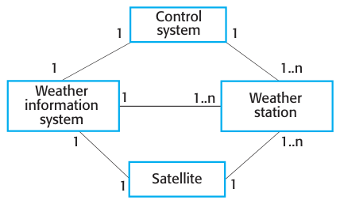
The context diagram shows each station interacting with a control system (one control system manages 1..n stations), an onboard satellite link, and one central weather information system. In the dynamic interaction model, each interaction is a use case（用例）ellipse linked to external stick-figure actors (people or external systems); the weather station supports seven use cases (such as Report weather and Restart), each documented in structured text covering System, Use case, Actors, Data, Stimulus, Response, and Comments.从上下文模型可见，每台气象站与外部的控制系统（1 个控制系统对应 1..n 台站）、机载卫星及气象信息系统相连。而在动态交互模型中，每次交互画成一个用例椭圆，连向外部代表人或系统的火柴人；本气象站共包含 7 个用例（如 Report weather、Restart），每个均按固定 7 栏（系统、用例、参与者、数据、刺激、响应、备注）给出结构化规格描述。
Step 3: architectural design第 3 步：体系结构设计
Core idea: hang independent subsystems off one shared message bus so every subsystem picks up only the broadcasts meant for it.核心思路：让各独立子系统并排挂在一条公共消息总线上，谁听见与自己相关的广播谁响应。

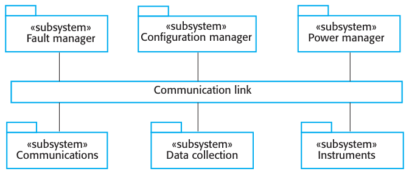
This pattern is the listener model（监听者模型）—like a school PA announcement where the principal broadcasts once and each classroom acts only if relevant. When the communications subsystem broadcasts a shutdown command, every subsystem hears it and shuts down cleanly.这正采用了监听者模型——如同校园大喇叭广播：广播员不必逐间敲门点名，各班只需监听并响应发给自己的指令。当通信子系统收到关机命令并送上总线时，所有子系统都能捕获并优雅停机。
- Benefit: Subsystems decouple completely from sender identity, making it effortless to support different station hardware configurations by adding or removing subsystems.优势：发送方无需硬编码接收者名单，删减或增配子系统（支持不同型号站点）时几乎不用改动既有代码。
- Price: Every subsystem must inspect and filter all traffic, and the sender receives no built-in guarantee that any listener actually handled the message.代价：每个子系统都要拦截并过滤全部消息；同时发送方发出即止，无法原生确认是否有人接收处理。
Practice练习
Q1. (Compare) Distinguish a system context model from an interaction model.Q1.（比较）区分系统上下文模型与交互模型。
Answer
A system context model is structural: a block diagram with associations and cardinalities depicting neighboring systems in the environment (e.g., weather information system, satellite, and control system). An interaction model is dynamic: a use-case model pairing elliptical interactions with stick-figure external actors and structured text fields. Used together, they lock down the system boundary—what our software builds versus what outside systems own.系统上下文模型是结构型的，用带关联和基数的框图描绘外部环境中还有哪些邻接系统（如气象信息系统、卫星与控制系统）；交互模型是动态型的，用椭圆用例、外部火柴人与结构化说明表刻画外部如何触发并使用系统。二者合用共同锁定系统边界——划清本系统职责与外部依赖。
Q2. (Design) Specify the Report status use case of the weather station in the tabular format. State your assumptions.Q2.（设计）用结构化表格描述气象站的 Report status 用例，并声明合理假设。
Answer
Assumption: Each status report packages the self-test outcomes of every installed instrument.前提假设：每次状态报告均汇集站内全部已安装仪器的自检结果。
| Field字段 | Report status状态报告 |
|---|---|
| System系统 | Weather station气象站 |
| Use case用例 | Report status |
| Actors参与者 | Weather information system, weather station气象信息系统、气象站 |
| Data数据 | Station identifier; ID and self-test status (working or failed) of each instrument气象站标识；每台仪器的 ID 及自检结论（正常或故障） |
| Stimulus刺激 | The weather information system opens a satellite link and requests a status report气象信息系统建立卫星链路并发起状态查询 |
| Response响应 | The station runs instrument self-tests and transmits the assembled status report气象站逐一自检各仪器并回传汇总的状态报告 |
| Comments备注 | Stations operate unattended in remote terrain, so hardware faults must surface in every report荒野站点无人值守、器件易损，因此故障状态必须在报告中显式体现 |
思路：填表盯住“交换什么数据、谁触发 Stimulus、怎么响应 Response”，别忘了先交代合理前提假设。
Object classes and design models ★★★对象类与设计模型
Goal. Extract classes, attributes, and operations from problem text, organize common features into an inheritance hierarchy, and judge which design models and detail levels a project needs.目标。 学会从需求文本提取类、属性与操作，提炼共性构造继承层次，并能根据项目场景判断需要绘制哪些设计模型及精细程度。
Section 4.4 introduced classes and inheritance syntax; here we focus on the practical craft of identifying the right classes from scratch.第 4.4 节已介绍类图与泛化语法，本节重点解决工程第一步：面对纯文字需求时，如何系统地把类“找出来”。
Step 1: identifying object classes第 1 步：识别对象类
Core idea: identify classes systematically by analyzing nouns and verbs in text, inspecting domain entities, and walking through usage scenarios.核心思路：先借需求文本的“名动分析”打底，再用物理领域实体与具体场景查漏补缺。
Designers combine three complementary identification techniques (and add utility/service classes such as search or validation during refinement):工程中常将以下三种选类方法结合使用，并在细化时补充检索、校验等通用服务类：
| Approach方法 | Rule识别规则 |
|---|---|
| Grammatical analysis（语法分析） | Extract nouns in natural-language specs as candidate objects/attributes, and verbs as candidate operations提取需求正文中的名词作候选对象或属性，动词作候选操作 |
| Tangible entities有形实体与领域概念 | Scan the application domain for physical things (aircraft), roles (manager), events (request), interactions (meeting), locations (office), and units (company)在领域中搜寻具体物体（飞机）、角色（经理）、事件（请求）、交互（会议）、地点（办公室）与组织单元（公司） |
| Scenario-based analysis基于场景的分析 | Trace each runtime scenario step by step to expose missing objects, attributes, and methods needed to run it逐个推演使用场景，补出完成业务必须涉及的对象、字段与操作 |
A repeatable five-step hand-analysis recipe:手算做题五步法：
- Underline every noun and verb in the problem description.通读题干，划出全部名词与动词。
- Promote nouns representing persistent entities with behavior to classes; demote descriptive nouns belonging to another entity to attributes.需要独立存储且有行为的名词升格为类；仅用于修饰描述另一实体的名词降格为属性。
- Discard external actors, duplicate synonyms, and the overall system name itself.剔除外部参与者、同义重复词以及“系统本身”这类笼统名词。
- Attach each verb as an operation on the class responsible for performing it.把动词作为操作挂在真正执行动作的那个类上。
- Walk through every normal and failure scenario to add overlooked state or helper operations.对照正常与异常场景走查一遍，补齐遗漏状态或操作。
Step 2: the classes of the weather station第 2 步：气象站的类

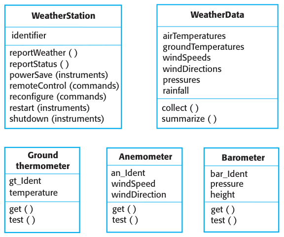
| Class类 | Identified from识别来源 | Responsibility职责定位 |
|---|---|---|
WeatherStation |
system & scenario descriptions系统与场景描述 | External interface of the station whose methods mirror the use cases (reportWeather, reportStatus, powerSave, remoteControl, reconfigure, restart, shutdown). One facade-like class simplifies interaction compared with splitting one class per use case气象站对外的统一界面，操作与用例一一对应（reportWeather、reportStatus 等）；用一个类统筹所有外部交互比每个用例拆一个类更紧凑 |
WeatherData |
system & scenario descriptions系统与场景描述 | Coordinates weather reporting: stores measurements and provides collect() and summarize() before transmission执行气象上报逻辑：保存采集读数，并提供 collect() 与 summarize() 方法 |
Ground thermometer, Anemometer, Barometer |
application domain (tangible hardware)应用领域（有形硬件） | Drive physical sensors autonomously at configured frequencies, buffer locally, and supply readings to WeatherData按设定频率自主采样并本地暂存，应请求向 WeatherData 交付读数 |
Domain intuition enriches these initial classes—for instance, because unattended instruments fail, each needs a test() operation, and because multiple stations exist, each carries a unique identifier. Only after stabilizing objects (without worrying about concrete data structures yet) do you extract shared features into an inheritance hierarchy（继承层次）, such as an abstract Instrument superclass declaring id, get(), test(), and collection frequency.随后还要靠领域常识补齐细节：无人仪器难免坏损，须补上 test()；站点众多，需唯一标识 ID。注意此阶段聚焦“对象责任”，暂不纠结底层数据结构；等核心类找稳后再抽提共性建立继承层次（如抽象超类 Instrument 统一声明 id、get()、test() 与采样频率）。
Step 3: which design models, and how detailed?第 3 步：选择哪些设计模型，画多细？
Core idea: pair structural models (what the parts are) with dynamic models (what they do over time), scaled to team communication needs.核心思路：用结构模型交代“有哪些部件”、动态模型刻画“运行时怎么交互”，精细度按团队沟通需求裁剪。
| Kind类型 | Describes描述内容 | UML examples代表性模型 |
|---|---|---|
| Structural model（结构模型） | Static software architecture: classes, packages, and associations (generalization, usage, composition)静态结构：类、包及静态关系（泛化、依赖、组合） | context, class, and subsystem (package) models上下文模型、类图与子系统模型 |
| Dynamic model（动态模型） | Runtime behavior: sequences of service calls and event-triggered state transitions运行时动态交互：消息调用序列与事件驱动的状态转换 | use-case, sequence, and state-machine models用例模型、时序图与状态机模型 |
A subsystem model（子系统模型）clusters related classes into logical packages; although UML defines 13 diagram types, most systems need only a small subset tailored to the development setting:其中子系统模型把紧密相关的类打包成逻辑包。UML 虽有 13 种图，工程中只需按研发模式精选核心视图与粒度：
| Situation适用情境 | Recommended level of modeling建议建模粒度 |
|---|---|
| Agile teams, or close co-located contact between analysts, designers, and developers敏捷团队，或需求、设计与开发人员紧密共处一室 | Lightweight outline sketches (e.g., whiteboard models), settling details directly in code概要白板草图即可，细节在编码迭代中随时敲定 |
| Plan-driven projects, or distributed design vs. implementation teams计划驱动项目，或设计与编码团队异地分工 | Detailed models systematically refined from abstract diagrams to ensure shared comprehension从高层抽象逐层细化出详尽设计模型，充当跨团队无歧义契约 |
Practice练习
Q1. (Apply) Use grammatical analysis on: "A member searches the catalogue by title and reserves a book. A librarian adds new books to the catalogue." List candidate classes, attributes and operations, and say which noun you reject as a class.Q1.（应用）对以下描述做语法分析：“A member searches the catalogue by title and reserves a book. A librarian adds new books to the catalogue.” 列出候选类、属性与操作，并说明哪一个名词应被排除出类清单。
Answer
- Extracted nouns & verbs: Nouns—member, catalogue, title, book, librarian; Verbs—searches, reserves, adds.提取词根：名词有 member、catalogue、title、book、librarian；动词有 searches、reserves、adds。
- Classes:
Member,Catalogue,Book,Librarian(withMemberandLibrarianpotentially inheriting from a sharedUsersuperclass).候选类：Member、Catalogue、Book、Librarian（其中Member与Librarian可提取共同超类User）。 - Operations:
Catalogue.search(title),Catalogue.addBook(book),Book.reserve(member).操作：Catalogue.search(title)、Catalogue.addBook(book)、Book.reserve(member)。 - Rejected noun & scenario refinement: Reject title as a class—it merely describes a book and becomes an attribute
Book.title. Walking through scenarios (e.g., reserving a checked-out book) further uncovers astatusattribute onBook(available vs. reserved).剔除项与场景补漏：剔除 title，它仅描述书名应作Book.title属性；后续用“预借已被占图书”的场景走查还能补出Book.status（在架/已预订）属性。
易错：切莫见名词就当类；属性、同义词与外部系统要过滤掉，再用业务场景补齐遗漏状态。
Q2. (Design) Design an inheritance hierarchy for 2-D and 3-D shapes with at least five concrete classes.Q2.（设计）为二维与三维几何图形设计继承层次，至少包含五个具体类。
Answer
Shape (position, name; move(), draw())
Shape2D (area(), perimeter())
Circle (radius)
Rectangle (width, height)
Triangle (base, height)
Ellipse (two semi-axes)
Shape3D (volume(), surfaceArea())
Sphere (radius)
Cuboid (width, height, depth)
Cylinder (radius, height)
Common attributes/actions live once in Shape, dimensional measures belong to intermediate abstract classes Shape2D and Shape3D, and each concrete subclass holds only its specific dimensions while polymorphically implementing area() or volume().共有特征收拢到根超类 Shape；二维/三维专属度量分别落在抽象父类 Shape2D 与 Shape3D；具体子类只保存各自尺寸，并通过多态分别实现 area() 或 volume()。
Q3. (True or false) "Every project must produce detailed UML models of all objects before coding starts." Justify.Q3.（判断正误）“任何项目都必须在编码开始前为所有对象产出详尽的 UML 模型。”请判断并说明理由。
Answer
False. Modeling depth depends on the development process, team topology, and technology:错误。建模详尽程度应由开发过程、团队协作方式与技术栈决定：
- Agile / co-located teams: Informal outline sketches suffice because requirements analysts, designers, and coders communicate directly and finalize details in code.敏捷/集中办公团队：成员沟通紧密，白板概要草图已够用，细节留在迭代编码中完善。
- Plan-driven / distributed teams: Detailed upfront UML models are essential to maintain a single contract across separate design and implementation sites.计划驱动/异地协同项目：设计与开发分处两地时，必须靠详细模型统一语义理解。
- Poor-fit contexts: Dynamically typed scripting languages and configured off-the-shelf COTS packages gain little from heavy UML, and over-modeling wastes budget while locking down implementation choices prematurely.低收益场景：动态语言开发或配置现成商业软件包时 UML 收益有限；盲目过度建模只会抬高成本并过早锁死实现细节。
Sequence models, state machine models and interfaces ★★时序模型、状态机模型与接口
Goal. Read and draw a sequence diagram, trace a state diagram event by event, and explain why interfaces declare operations without attributes.目标。 读懂并绘制时序图，逐事件手工演算状态机转换，并说明接口为何只规定操作而不包含属性。
Step 1: sequence models第 1 步：时序模型
Core idea: a sequence diagram traces who sends which message to whom from top to bottom in chronological order.核心思路：时序图按时间自上而下，精确刻画“哪个对象在何时向谁发出什么消息”。
Produce one sequence diagram for each key interaction (or one per use case when a use-case model exists):通常为每个核心交互（或用例模型中的每个用例）绘制一张时序图，核心符号如下：
| Symbol符号 | Meaning含义 |
|---|---|
| Top object box + vertical dashed line顶部方框与下方竖线 | An object instance and its timeline (lifeline)对象实例及其生命线 |
| Horizontal arrow between lifelines生命线间的水平箭头 | A message requesting a service or operation消息调用（请求执行某操作） |
| Stick (open) arrowhead细棒（开口）箭头 | Asynchronous message: sender continues without waiting异步消息：发送方不等待直接继续 |
| Squared-off (solid) arrowhead方形（实心）箭头 | Synchronous call: sender waits until a reply returns同步调用：发送方阻塞等待答复 |
| Vertical top-to-bottom ordering自上而下的纵坐标顺序 | Elapsed chronological order of calls消息发生的时间先后次序 |

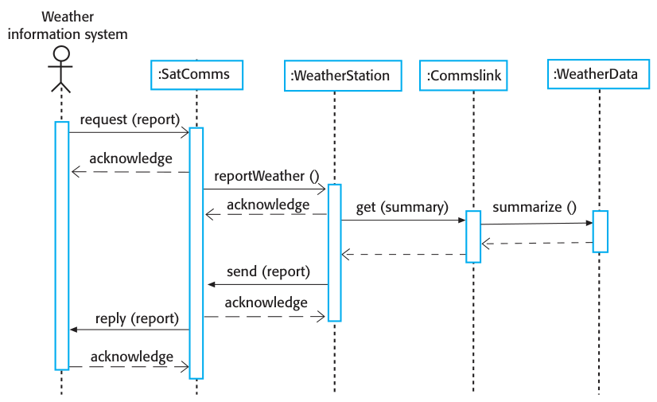
SatComms、WeatherStation、Commslink 与 WeatherData 依次交互完成汇总上报Tracing the figure top to bottom: SatComms receives request(report) and fires an asynchronous reportWeather() to WeatherStation. WeatherStation then makes a synchronous get(summary) call to Commslink (waiting because the report cannot transmit before creation), which in turn synchronously calls summarize() on WeatherData, before WeatherStation sends the completed report back via SatComms.send(report).自上而下读图：SatComms 收到 request(report) 后异步发送 reportWeather() 通知 WeatherStation；随后 WeatherStation 向 Commslink 同步调用 get(summary) 并阻塞等待（因为必须先拿到摘要），Commslink 再同步触发 WeatherData.summarize()；摘要就绪后，WeatherStation 最终通过 SatComms.send(report) 发回报告。
Step 2: state machine models第 2 步：状态机模型
Core idea: a state machine models how a single object jumps between states in response to incoming events.核心思路：状态机聚焦单个对象“自身可能处于哪些状态、遇到什么事件切向何处”。
Whereas a sequence diagram tracks collaboration across multiple objects, a state machine model（状态机模型）(drawn as a UML state diagram) isolates how one object reacts to events—starting from the filled black dot marking the initial state (here, Shutdown):时序图看的是多对象协作，而状态机模型（UML 状态图）聚焦单个对象对外部事件的响应机制；实心黑圆点指出初始状态（本例为 Shutdown）：

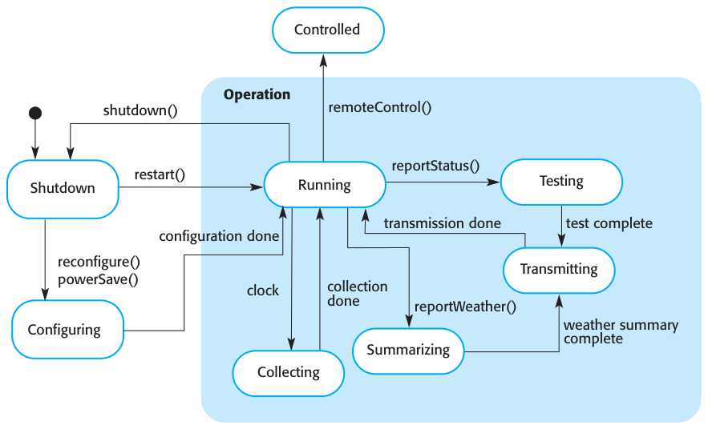
| From起始状态 | Event事件 | To目标状态 |
|---|---|---|
| Shutdown | restart() | Running |
| Shutdown | reconfigure() or powerSave()reconfigure() 或 powerSave() | Configuring |
| Configuring | configuration done配置完成 | Running |
| Running | shutdown() | Shutdown |
| Running | reportWeather() | Summarizing |
| Summarizing | weather summary complete气象摘要完成 | Transmitting |
| Running | reportStatus() | Testing |
| Testing | test complete测试完成 | Transmitting |
| Transmitting | transmission done发送完成 | Running |
| Running | clock signal时钟信号 | Collecting (polls each instrument in turn)Collecting（依次采集各仪器读数） |
| Collecting | collection done采集完成 | Running |
| Running | remoteControl() | Controlled operation |
Notice that reconfiguration is permitted only while shut down (Running defines no reconfigure() transition). How to trace any event sequence by hand:注意重新配置仅在停机后生效（Running 状态下没有 reconfigure() 出边）。考试手工演算事件序列遵循三步：
- Begin at the initial state marked by the filled dot.从实心黑点指向的初始状态出发。
- For each event in sequence, check whether a transition matches the current state and event.逐个读入事件，查找从“当前状态”出发且匹配该事件的转移边。
- If a transition exists, jump to the target state; otherwise remain in the current state and mark the event ignored.找到转移则切入目标状态；找不到就原地不动并记作“ignored（忽略）”。
Step 3: interface specification第 3 步：接口规格说明
Core idea: an interface publishes what services an object provides while deliberately hiding how it stores data internally.核心思路：接口只公布“能调用哪些操作”，绝不暴露“内部怎么存数据”。
Fixing clean interfaces early lets teams build objects and subsystems in parallel with stable contracts. An interface（接口）specifies operation signatures and semantics (often expressed in OCL，对象约束语言), drawn in UML like a class stereotyped «interface» with the attribute compartment omitted:尽早冻结接口契约能让不同子系统的团队并行开发、各不相扰。接口规定一组服务的签名与语义（语义可用 OCL 对象约束语言精确刻画）；UML 中将接口画作带 «interface» 构造型标记、且刻意省去属性栏的类框：
«interface» Reporting
weatherReport (WS-Ident): Wreport
statusReport (WS-Ident): Sreport
«interface» Remote Control
startInstrument (instrument): iStatus
stopInstrument (instrument): iStatus
collectData (instrument): iStatus
provideData (instrument): string
Omitting attributes guarantees information hiding: callers invoke methods without knowing whether internal state sits in an array, linked list, or database, allowing implementers to swap internal storage freely without breaking client code.省去属性栏体现了信息隐藏原则：调用方只能通过方法访问状态，无从得知底层究竟用数组、链表还是数据库存储，从而允许实现方随时重构内部数据结构而不破坏任何调用方代码。
Practice练习
Q1. (Trace) The weather station starts in its initial state. Give the state after each event: reportWeather(), restart(), clock signal, collection done, reportWeather(), weather summary complete, transmission done, reconfigure(), shutdown(), reconfigure().Q1.（手工演算）气象站从初始状态出发，按顺序接收以下事件：reportWeather()、restart()、clock signal、collection done、reportWeather()、weather summary complete、transmission done、reconfigure()、shutdown()、reconfigure()。写出每步后的状态。
Answer
| # | Event事件 | State before事件前状态 | State after事件后状态 |
|---|---|---|---|
| 1 | reportWeather() | Shutdown | Shutdown (ignored: no transition)Shutdown（忽略：无出边） |
| 2 | restart() | Shutdown | Running |
| 3 | clock signal时钟信号 | Running | Collecting |
| 4 | collection done采集完成 | Collecting | Running |
| 5 | reportWeather() | Running | Summarizing |
| 6 | weather summary complete气象摘要完成 | Summarizing | Transmitting |
| 7 | transmission done发送完成 | Transmitting | Running |
| 8 | reconfigure() | Running | Running (ignored: allowed only when Shutdown)Running（忽略：仅关机态可配置） |
| 9 | shutdown() | Running | Shutdown |
| 10 | reconfigure() | Shutdown | Configuring |
Final state: Configuring.最终停留在 Configuring 状态。
易错：遇到当前状态没画出来的事件，务必写成“忽略、保持原状”，不要脑补一条新转移。
Q2. (Design) List the messages of a sequence diagram for "a member reserves a book" with the objects :Member, :Catalogue and :Book. Mark each message as synchronous or asynchronous.Q2.（设计）为“会员预订图书”交互列出 :Member、:Catalogue 与 :Book 之间的时序消息列表，并标注每条消息的同步/异步类型。
Answer
Member -> Catalogue:search(title)— synchronous (waits for matching book list).Member -> Catalogue：search(title)—— 同步（等待返回匹配书目）。Member -> Catalogue:reserve(bookId)— synchronous.Member -> Catalogue：reserve(bookId)—— 同步。Catalogue -> Book:reserve(memberId)— synchronous (Bookupdates and returns new status).Catalogue -> Book：reserve(memberId)—— 同步（Book变更并返回最新状态）。Catalogue --> Member: reservation confirmation return.Catalogue --> Member：返回预订成功确认。Catalogue -> Member(later):notifyAvailable()— asynchronous (open stick arrowhead; catalogue pushes alert without blocking for a reply).Catalogue -> Member（图书回架后）：notifyAvailable()—— 异步（开口细箭头；系统仅推送到货提醒，不阻塞等待会员回应）。
Synchronous calls suspend the caller until a return arrives; asynchronous messages do not.判别标准很直接：发送方需立即等返回值再往下走用同步，发完推送即算结束用异步。
Design patterns ★★★设计模式
Goal. Define a design pattern with its four elements, describe the Observer pattern and its runtime collaboration, and match patterns cleanly to short scenarios.目标。 用四大要素定义设计模式，阐述观察者模式的类结构与协作流程，并能为具体业务场景准确选用合适模式。
Step 1: what a pattern is第 1 步：什么是设计模式
Core idea: a design pattern is a reusable, battle-tested architectural template for a recurring design problem—adapted to your context rather than copied verbatim.核心思路：设计模式是针对高频设计问题沉淀出的可复用解题模板——复用的是结构思想，落地时按场景灵活定制。
A design pattern（设计模式）distills a recurring design problem together with the core of its proven solution so engineers can apply it across different systems. Rather than a rigid specification, it encapsulates accumulated design wisdom (typically using inheritance and polymorphism) and gives designers a crisp shared vocabulary—naming a pattern conveys an entire collaboration structure at once.设计模式提炼某一反复出现的设计难题及其成熟解法精髓，使其能在不同系统中广泛复用。它并非死板的详细规约，而是通常依托继承与多态沉淀下来的经验结晶；同时，模式为团队提供了高信息密度的共同词汇——点出一个模式名，整套协作结构便不言自明。
Every pattern definition contains four essential elements:完整的模式定义包含四大基本要素：
| Element要素 | Content核心内容 |
|---|---|
| Name名称 | A concise, meaningful identifier for communicating the pattern便于工程师快速交流与索引的规范名称 |
| Problem description问题描述 | The context, forces, and conditions indicating when the pattern applies面临的问题域以及判断模式适用的前提条件 |
| Solution description解决方案 | A reusable template naming the participating classes, relationships, and responsibilities抽象结构模板，规定各参与部分、关联关系及职责分工 |
| Consequences后果与权衡 | The benefits, costs, and design trade-offs that determine whether the pattern fits采用后的收益、代价及局限性，用于评估是否契合当前取舍 |
Step 2: the Observer pattern第 2 步：观察者模式
Core idea: separate data ownership from its views—when state changes, the subject notifies subscribers so every display pulls the fresh data without coupling the subject to concrete view types.核心思路：数据与展示彻底解耦——状态一变，主题只管发出通知，各视图按抽象协议自取更新，主题完全不用认识具体视图。
Think of an email newsletter: subscribers sign up, the publisher broadcasts a short alert whenever new content lands, and each reader fetches what they care about—without the publisher needing to know who the readers are or how they read. The Observer（观察者模式）pattern works the same way, decoupling state management from multiple interchangeable displays:就像邮件订阅：读者先登记订阅，发布者有更新时群发通知，各读者随后自取正文，发布者无需关心谁在读或用什么设备读。观察者模式正是将对象状态与多视图展示解耦，确保一处变动、多处联动刷新：
| Element要素 | Observer观察者模式 |
|---|---|
| Problem问题 | Multiple displays (e.g., graph + table) must stay consistent with one state, new display formats may be added later, and the state holder should not depend on concrete displays同一状态需要多种视图（如图表与数据表）同步呈现，未来还可能增减视图类型，且存储状态的对象不应与具体视图耦合 |
| Solution解决方案 | Abstract Subject and Observer classes paired with ConcreteSubject (holds state, inherits Attach/Detach/Notify, exposes GetState()) and ConcreteObserver (holds a cached copy, implements Update() to pull state and re-render)设置抽象的 Subject 与 Observer：ConcreteSubject 保存真实状态并继承注册/注销/通知操作，同时提供 GetState()；ConcreteObserver 维护本地副本并实现 Update() 主动拉取状态重绘界面 |
| Consequences后果 | Minimal coupling (subject sees only abstract Observer); however, display-specific optimization is impractical and a single state change can trigger redundant or cascading updates耦合度极低（主题只认识抽象观察者）；代价是无法针对特定视图做批量优化，且单次变更可能触发连串多余刷新 |

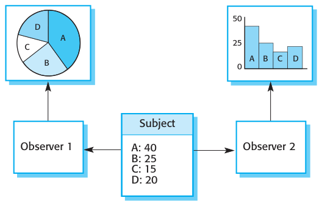

Subject（Attach、Detach、Notify）和 Observer（Update）及其对应具体子类Four classes collaborate via a clean pull-based protocol—notice how diagrams express the solution structure while motivation and applicability form the problem element:图中的四个类（Subject、Observer、ConcreteSubject、ConcreteObserver）按经典的“推通知 + 拉数据”协议协作：
Subject.Notify(): for all o in observers: o -> Update()
ConcreteObserver.Update(): observerState = subject -> GetState()
ConcreteSubject.GetState(): return subjectState
- Each view subscribes via
Attach().各具体视图先调用Attach()向主题注册。 ConcreteSubjectmutates its internal state.ConcreteSubject内部状态发生变化。Notify()iterates over attached subscribers and callsUpdate().Notify()遍历订阅列表，逐一调用每个观察者的Update()。- Each observer pulls the latest state via
GetState()and redraws itself.每个观察者反向调用GetState()拉取最新状态并刷新显示。
Across the classic Gang of Four (GoF) catalogue, 23 foundational patterns fall into three families:著名的 GoF《设计模式》目录将 23 种经典模式归纳为三大类别：
| Category类别 | Concern核心关注 | Examples代表模式 |
|---|---|---|
| Creational（创建型） | Decoupling how objects are instantiated把对象的创建方式与使用方解耦 | Singleton, Factory Method, Abstract Factory, Builder, Prototype单例、工厂方法、抽象工厂、生成器、原型 |
| Structural（结构型） | Composing classes and objects cleanly类与对象的组合与接口整理 | Adapter, Façade, Decorator, Composite, Proxy, Bridge, Flyweight适配器、外观、装饰器、组合、代理、桥接、享元 |
| Behavioral（行为型） | Coordinating interaction and responsibility across objects对象间的运行协作与职责分配 | Observer, Iterator, Strategy, Command, State, Template Method观察者、迭代器、策略、命令、状态、模板方法 |
Step 3: other patterns to recognise第 3 步：需要熟识的高频模式
| Pattern模式 | Problem it solves解决的问题 | Everyday analogy日常类比 |
|---|---|---|
| Observer观察者模式 | Keep any number of dependents synchronized whenever one object's state changes一个对象状态改变时，自动通知任意多个依赖对象同步更新 | Multiple scoreboards showing one live game score赛场多块电子屏实时同步同一比赛比分 |
| Façade（外观模式） | Provide a clean, unified front-end interface over a sprawling set of incrementally built classes为演化混乱、接口繁杂的旧类群罩上一层简洁统一的对外入口 | One reception desk fronting a maze of back offices众多科室前面统一设一个总服务台 |
| Iterator迭代器 | Traverse every element of a collection uniformly without exposing array, list, or tree internals用一致方式顺序访问集合元素，屏蔽数组、链表或树等底层结构 | A "Next page" button working on any book无论什么装帧的书都能统一点击“下一页” |
| Decorator装饰器 | Layer extra responsibilities onto an existing object dynamically at runtime在运行时为已有对象灵活叠加额外功能，无需修改原类或静态继承 | Adding optional toppings to a prepared pizza在烤好的披萨上按需叠加不同配料 |
Note a key distinction: patterns reuse abstract design knowledge rather than ready-made code, so teams adapt the implementation to each project—and novices still need experience to spot which pattern applies among hundreds of candidates.注意模式复用的是设计思路而非现成代码，每次都要按上下文改写落地；其局限在于初学设计者往往很难在数百个模式中一眼辨明此刻该用哪一个。
Practice练习
Q1. (Definition) What is a design pattern? Give its four essential elements, one benefit and one limitation.Q1.（定义）什么是设计模式？写出它的四大基本要素、一项优点与一项局限。
Answer
A design pattern captures a recurring problem and the essence of its proven solution as an adaptable template rather than rigid code.设计模式是对高频出现的设计问题及其成熟解法精髓的抽象模板，供人在不同项目中灵活实例化，而非死板的代码规范。
- Four elements: Name; Problem description (context and applicability); Solution description (structure, roles, and collaborations); Consequences (results and trade-offs).四大要素：名称、问题描述（背景与适用条件）、解决方案（结构、参与者与协作关系）、后果（结果与权衡）。
- Benefit: Reuses design wisdom independently of specific implementations while establishing a shared team vocabulary.优点：在概念层复用经过检验的设计经验且允许具体实现自由适配，同时统一工程团队交流术语。
- Limitation: Requires design maturity to recognize when a pattern fits and locate the right one among hundreds.局限：高度依赖工程经验，新手既难察觉此处该用模式，也难在海量目录中精准选型。
Q2. (Trace) A ConcreteSubject holds A = 40, B = 25, C = 15, D = 20. A bar chart and a pie chart are attached as ConcreteObservers. A is set to 30, then D is set to 30. (a) How many Update() calls occur? (b) What angle does the pie chart give A after each notification? (c) Which consequence of the pattern does this show?Q2.（手工演算）某 ConcreteSubject 保存 A = 40, B = 25, C = 15, D = 20，挂接了柱状图与饼图两个 ConcreteObserver。若依次将 A 设为 30、再将 D 设为 30：(a) 共触发多少次 Update()？(b) 每次通知后饼图中 A 占多少圆心角？(c) 这反映了观察者模式的哪条后果？
Answer
- (a) Each mutation triggers
Notify()across both observers: \(2\text{ changes} \times 2\text{ observers} = \mathbf{4}\)Update()calls.(a) 每次变更均触发一次Notify()并调用 2 个观察者：\(2 \times 2 = \mathbf{4}\) 次Update()。 - (b) Sector angle \(= (\text{value} / \text{total}) \times 360^\circ\): after
A = 30, total \(= 30+25+15+20 = 90\), soAgets \((30/90)\times 360^\circ = \mathbf{120^\circ}\) (B \(100^\circ\), C \(60^\circ\), D \(80^\circ\)). AfterD = 30, total \(= 100\), soAgets \((30/100)\times 360^\circ = \mathbf{108^\circ}\) (B \(90^\circ\), C \(54^\circ\), D \(108^\circ\)).(b) 扇区角 \(= (\text{分量}/\text{总和})\times 360^\circ\)：A = 30时总和 90，A占 \(30/90\times 360^\circ = \mathbf{120^\circ}\)（B \(100^\circ\)、C \(60^\circ\)、D \(80^\circ\)）；D = 30后总和 100，A占 \(30/100\times 360^\circ = \mathbf{108^\circ}\)（B \(90^\circ\)、C \(54^\circ\)、D \(108^\circ\)）。 - (c) Shows two key consequences: the intermediate frame (\(120^\circ\)) was immediately overwritten—illustrating cascading/unnecessary updates when batch changes aren't coalesced—while keeping the subject totally decoupled from concrete charts (adding a 3rd view raises calls to 6 with zero subject edits).(c) 既体现了低耦合优势（新增第 3 张图时主题代码零改动，仅调用变 6 次），也暴露了“多步连改无法合并优化、产生多余中间重绘（\(120^\circ\) 刚画完就被 \(108^\circ\) 覆盖）”的后果。
Q3. (Apply) Name the pattern: (a) a legacy payment library has twelve classes developed incrementally and clients only need charge() and refund(); (b) a report must visit every element of a collection without knowing whether it is an array, a list or a tree; (c) a window object must get optional scroll bars and borders at run time; (d) a price object must refresh a table and a chart whenever the price changes.Q3.（应用）为下列四个场景匹配设计模式：(a) 遗留支付库经多年迭代积累了 12 个类，调用方其实只想用 charge() 和 refund()；(b) 报表需要遍历集合中每个元素，却不愿关心底层是数组、链表还是树；(c) 窗口对象须在运行时动态挂载可选的滚动条或边框；(d) 价格变动时须自动刷新关联的表格与折线图。
Answer
- (a) Façade: wraps the twelve chaotic legacy classes behind one simple interface exposing only
charge()andrefund().(a) 外观模式（Façade）：在混乱的 12 个旧类外包上一层仅暴露charge()和refund()的清爽门面。 - (b) Iterator: provides standard sequential traversal decoupled from underlying collection storage.(b) 迭代器模式（Iterator）：提供统一遍历协议，彻底屏蔽数组、链表或树的实现差异。
- (c) Decorator: dynamically wraps optional borders or scrollbars onto an object at runtime.(c) 装饰器模式（Decorator）：运行时按需为已有对象动态套壳增强职责。
- (d) Observer: alerts all registered displays automatically whenever the subject's price changes.(d) 观察者模式（Observer）：价格作为主题一变动即通知所有挂载视图自动同步更新。
Implementation issues: reuse, configuration management and host-target development ★★实现问题：复用、配置管理与宿主-目标开发
Goal. Name the four levels and four cost components of software reuse, describe the four configuration management activities, and evaluate host-target development and component deployment trade-offs.目标。 掌握软件复用的四大层次与四项成本公式，理解配置管理的四项核心活动，并学会分析宿主-目标开发与分布式部署决策。
Step 1: reuse第 1 步：软件复用
Core idea: avoid reinventing existing software, but weigh total reuse cost—finding, buying, adapting, and integrating—against building from scratch.核心思路：绝不重复造已有轮子，但算账不能只看买价——搜寻评估、授权采购、适配定制与系统集成四项成本加起来低于自研才划算。
Reuse-based development（基于复用的开发）is now standard practice across web, scientific, and embedded software, spanning four granularity levels:基于复用的开发如今已成为 Web、科学计算乃至嵌入式研发的常态，复用可发生在四个由抽象到整体的粒度层级上：
| Level层次 | What is reused复用内容 | Example典型例子 |
|---|---|---|
| Abstraction抽象层 | Proven design knowledge and architectural ideas rather than source code成功的抽象思想与设计经验（非直接代码） | Observer pattern; layered architecture观察者模式；分层体系结构 |
| Object对象层 | Individual off-the-shelf classes or functions from a library工具库中的单个对象类或方法 | JavaMail library for email handling收发邮件直接复用 JavaMail 类库 |
| Component构件层 | Coordinated collections of objects/classes forming a subsystem or framework that you extend协同提供一组完整服务的类群或框架，再填入自有业务代码 | A GUI framework providing event loops and rendering while you supply layouts and data bindingsGUI 框架负责事件与绘制，你只写布局与数据连接 |
| System系统层 | Whole application suites adapted via configuration, product-line tuning, or wrapping完整应用系统的配置定制或产品线派生集成 | A commercial ERP package configured for an enterprise client按客户业务规则配置的商用 ERP 套件 |
Reuse speeds delivery, lowers cost and risk, and improves reliability (reused code has already been battle-tested elsewhere). However, four explicit costs must be budgeted before choosing reuse:复用的好处在于研发更快、成本与风险更低、可靠性也因成熟资产经受过大量实战检验而更高；但立项前务必算清四笔显性成本：
- Search & assessment: locating candidate software and testing it inside your environment.搜寻与评估：查找候选方案并在自身环境下试测可行性。
- Purchase / licensing: acquiring commercial rights—substantial for enterprise packages.购买/许可费：采购商用授权费用（大型套件往往不菲）。
- Adaptation & configuration: tailoring parameters or writing adapters to match local requirements.适配与配置：调整参数、编写封装或改写以契合本地需求。
- Integration: gluing reused parts together and to new code—complicated when vendors make conflicting usage assumptions.集成：将不同来源的复用构件与自研代码粘合联调（各供应商假设不一致时尤其费力）。
Step 2: configuration management第 2 步：配置管理
Core idea: configuration management preserves sanity when teams edit software concurrently—preventing overwrites, keeping builds reproducible, tracking bugs, and cleanly shipping releases.核心思路：配置管理给多人并发改代码建立秩序——互不覆盖、版本可随时精确复现、缺陷可追踪、发布不混乱。
Just as five students editing one unshared file risk wiping out each other's paragraphs, parallel software engineering requires configuration management（配置管理）—the discipline of tracking and coordinating an evolving system across four core activities:就像五位同学同改一份文档却没有版本控制会互相覆写一样，软件团队需要配置管理来系统地管控变更，涵盖四大活动：

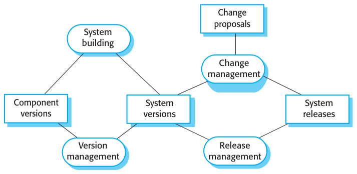
| Activity活动 | Purpose核心职责 | Example tools代表工具 |
|---|---|---|
| Version management（版本管理） | Track component histories, coordinate concurrent edits, and prevent accidental overwrites记录各构件演进历史，协调多人并行开发并防止代码相互覆写 | Subversion, GitSubversion、Git |
| System integration（系统集成） | Pin exact component versions per system build and automate compiling, linking, and packaging定义系统各发行版由哪些准确构件版本拼装，并自动化编译链接构建 | GNU build systemGNU 构建系统 |
| Problem tracking（问题跟踪） | Log user/tester bug reports, assign ownership, and track resolution status publicly登记用户与测试提交的缺陷单，明确责任人与修复进度 | Bugzilla |
| Release management（发布管理） | Plan feature scopes for upcoming customer releases and package software reliably for distribution规划各发行版特性清单并确保交付与分发的一致性 | none named（不限特定工具） |
Essential version-control terminology:必识版本控制基础术语：
- Repository（仓库）: central database holding every recorded version of source code and artifacts.仓库：集中保管代码与工程制品全部历史版本的共享库。
- Check out（检出）: fetch a local working copy from the repository.检出：从仓库拉取一份本地工作副本供修改。
- Commit（提交）: push local edits back; the VCS flags or merges conflicting updates.提交：将本地改动写回仓库，遇并发冲突时拒绝或触发合并。
- Branch（分支）: an isolated parallel development line (e.g., bug fixes alongside new features) merged back later.分支：独立的并行修改线（如维护线与新特性线并行），事后再合并回主干。
- Baseline（基线）: a frozen snapshot of exact component versions enabling exact rebuilds of a release.基线：一组被冻结的精确构件版本组合，确保随时可原样复现某一发布版。
- Continuous integration（持续集成）: automatically compiling and running test suites on every commit to catch integration breaks early.持续集成：每次提交自动触发构建与全套测试，在改动尚小时第一时间暴露集成故障。
Step 3: host-target development第 3 步：宿主-目标开发
Core idea: build on a developer workstation (host) and execute on production hardware (target), bridging differences with simulators and deliberate deployment choices.核心思路：在功能齐全的宿主机编码调试、到异构的目标机落地运行；必要时用模拟器替跑，并发起面向延迟与可用性的节点部署权衡。
Most professional systems—especially embedded and mobile apps—separate the development host from the deployment target. A simulator（模拟器）mimics target sensors and events right on the host, avoiding slow hardware flashing cycles; however, simulators are costly and typically exist only for popular architectures, and if essential target middleware carries host-unfriendly licensing limits, developers must transfer builds directly onto target hardware to test.除同构桌面应用外，嵌入式与移动软件普遍采用宿主机-目标机双平台模式。宿主机上的模拟器能仿真传感器和外部事件，省去反复烧录硬件的麻烦；但模拟器研发成本高昂，往往只针对主流芯片提供。此外，若目标平台赖以运行的专用中间件因授权限制无法装到宿主机上，代码就仍须传上真实目标硬件实测。
When deploying distributed components across multiple hosts, three factors govern placement (recorded via UML deployment diagrams，部署图):当软件分布式部署在多台硬件节点上时，需权衡以下三大部署因素（常用 UML 部署图记录）：
| Factor决策因素 | Deployment rule部署原则 |
|---|---|
| Hardware & software requirements软硬件依赖需求 | Place each component only on hosts providing its required CPU, OS, or libraries只能部署在满足该构件全部硬件资源与软件依赖的节点上 |
| Availability requirements可用性要求 | Replicate critical components across multiple independent platforms for fault tolerance对高可用要求极高的构件必须分散复制到多台独立节点以防单点宕机 |
| Inter-component communication构件间通信频率 | Co-locate chattier components on the same or adjacent hosts to minimize network latency（延迟）高频通信的构件应紧邻同机或同机柜部署，以削减传输延迟 |
With \(n\) identical independent platforms each having availability \(a\) (where any one healthy node suffices), overall availability becomes:当某一构件在 \(n\) 台故障彼此独立的同构平台上做热备部署时，整体可用性按如下公式计算：
For example, two independent nodes with \(a = 0.99\) raise availability to \(A_2 = 1 - 0.01^2 = 0.9999\) (99.99%).例如单机可用性 \(a = 0.99\) 时，部署两台独立冗余节点即可将可用性拉高至 \(A_2 = 1 - 0.01^2 = 0.9999\)（即 99.99%）。
Practice练习
Q1. (Calculation) A team needs a stock-control module. Option A: develop it, 10 person-months (PM). Option B: reuse a commercial component with 1 PM of search and assessment, a license fee of $15,000, 2.5 PM of adaptation and 2 PM of integration. One PM costs $9,000. (a) Compare the costs. (b) Up to which license fee does reuse still win? (c) The integration effort turns out to be double the estimate: does reuse still win?Q1.（计算）某团队需要一个库存控制模块：方案 A 自研需 10 人月（PM）；方案 B 复用商业构件需 1 PM 搜寻评估、$15,000 许可费、2.5 PM 适配与 2 PM 集成。每人月成本 $9,000。(a) 对比总成本。(b) 许可费最高涨到多少复用仍划算？(c) 若实际集成耗时翻倍，复用还胜出吗？
Answer
- (a) Build: \(10 \times \$9{,}000 = \$90{,}000\). Reuse: \((1 + 2.5 + 2) \times \$9{,}000 + \$15{,}000 = \$49{,}500 + \$15{,}000 = \$64{,}500\). Reuse wins by $25,500 (saving 28.3%), explicitly accounting for search (1 PM), purchase ($15k), adaptation (2.5 PM), and integration (2 PM).(a) 自研 \(10 \times \$9{,}000 = \$90{,}000\)；复用 \((1 + 2.5 + 2)\times \$9{,}000 + \$15{,}000 = \$64{,}500\)。复用省 $25,500（节约 28.3%），涵盖全部四项费用。
- (b) Break-even license cap: \(\$90{,}000 - \$49{,}500 = \mathbf{\$40{,}500}\).(b) 盈亏平衡许可费上限：\(\$90{,}000 - \$49{,}500 = \mathbf{\$40{,}500}\)。
- (c) With 4 PM integration: \((1 + 2.5 + 4)\times \$9{,}000 + \$15{,}000 = \$82{,}500 < \$90{,}000\), so reuse still wins by $7,500 (it only loses once integration exceeds roughly 4.8 PM).(c) 集成升至 4 PM 后成本为 \((1+2.5+4)\times \$9{,}000 + \$15{,}000 = \$82{,}500 < \$90{,}000\)，仍便宜 $7,500（仅当集成超约 4.8 PM 时才会亏损）。
Q2. (Explain) When code is integrated into a larger system, problems may surface. Explain how configuration management helps.Q2.（解释）当新写代码集成进大型系统时常暴发冲突或故障，配置管理能提供哪些帮助？
Answer
- Version management: Logs exact author/time diffs per component so teams can diff against the last working snapshot to pinpoint the offending change without overwriting peer fixes.版本管理：详实记录各构件提交人与变更内容，可直接比对“上一次正常版本”定位故障改动，并防止修 Bug 时覆写他人代码。
- System integration: Ties each system version to pinned component versions, enabling exact rebuilds to reproduce bugs or roll back to a healthy baseline.系统集成：锁定系统与各构件版本的对应清单，确保出错版本可随时精确复现或无缝回滚至健康基线。
- Problem tracking: Logs every defect against its version and owner so issues are neither dropped nor fixed redundantly.问题跟踪：关联缺陷报告、版本号与负责人，避免漏修或多人撞车重修。
- Release management: Ensures customers receive a cleanly verified package of compatible component versions rather than a broken mix.发布管理：严格管控交付清单，防止新旧不兼容构件混装流向用户。
Open-source development ★开源开发
Open-source development（开源开发）releases source code publicly and invites external contributors to inspect, fix, and extend it—reducing acquisition cost and often boosting reliability through broad community scrutiny. Legal reuse terms hinge on the attached software license:开源开发向公众开放源码并吸纳志愿开发者协同演进，既降低采购门槛，又常因“众人审码、百般实测”而提升可靠性。使用或发布开源代码必须遵循其附带的开源许可证条款：
| License许可证 | Reciprocal?是否互惠（传染）？ | What you may do允许行为 | Obligations强制义务 |
|---|---|---|---|
| GNU GPL | Yes是 | Use/modify freely, but any distributed product incorporating GPL code must itself become open source可自由使用或修改，但任何包含 GPL 代码的对外发布产品也必须整体开源 | Publish your complete combined source code必须公开整合后的整套源代码 |
| GNU LGPL | Partly部分互惠 | Write proprietary components that link to an unmodified LGPL library without opening your own code允许闭源商业代码通过动态链接调用该库，无需开源自有业务代码 | Publish any modifications made directly to the LGPL library itself若改动了该 LGPL 库本身，须开源你对库所作的修改 |
| BSD (MIT is a close variant)BSD（MIT 为其相近变体） | No否 | Embed freely inside commercial, closed-source products可直接嵌入闭源商业产品并售卖 | Retain attribution notices acknowledging original authors; no obligation to share source保留原作者版权署名；无源码公开义务 |
Organizations regularly weigh two strategic choices—reusing open-source components internally, or releasing proprietary software as open source:企业在开源战略上通常要权衡两道选择题（用别人的开源构件 vs 把自家产品开源）：
- Adopting open-source components: Ideal for rapid, low-budget delivery, though third-party components may clash with legacy internal stacks.何时引入开源：适合压降初期投入并抢占上市窗口，但须排查它与现有老系统是否兼容。
- Releasing your software open source: Sensible when revenue comes from support, hosting, or customization rather than license sales, when community effort lowers upkeep, or when large buyers demand auditability and self-support; beware leaking proprietary domain secrets and remember that open sourcing does not automatically summon volunteer maintainers.何时对外开源：当盈利依托支持、咨询、云托管或定制开发而非卖授权费，或需要借助社区降本、客户强烈要求防供应商锁定时尤为合适；但切忌泄露核心商业机密，且开源后仍需主力维护团队，不能指望社区无条件接盘。
A reciprocal license（互惠许可证）passes its sharing rules downstream—so closed-source products must steer clear of GPL code and strictly track every third-party component alongside the exact license version valid when it was adopted.因为互惠许可证会将开源义务传染给衍生作品，希望保持闭源的产品必须避开 GPL，并为所有引入的第三方构件建立清单、留存引入当时有效的许可证文本。
Practice练习
Q1. (Apply) A company sells a closed-source product and considers three libraries: X under the GPL, Y under the LGPL, Z under the BSD license. What may and must it do with each?Q1.（应用）某公司拟在其售卖的闭源产品中评估三个开源库：X（GPL）、Y（LGPL）与 Z（BSD）。对三者各有哪些允许事项与强制义务？
Answer
- X (GPL — reciprocal): Incorporating X obliges the company to publish the source code of its entire product under the GPL, so X must be avoided for closed-source software.X（GPL，强互惠）：只要集成进发布产品就依法必须整体开源，闭源商业项目应果断避开。
- Y (LGPL — partially reciprocal): Proprietary modules may link against Y without disclosing their own code, provided the company publishes any edits made to Y itself.Y（LGPL，部分互惠）：可从闭源模块链接调用而保住自有源码不公开，但若修改了 Y 库源码本身则须把该修改开源。
- Z (BSD — permissive): May be bundled inside the commercial closed-source product with zero requirement to share changes, provided original copyright/attribution notices are preserved.Z（BSD，宽松非互惠）：可放心塞进闭源商用产品售卖且无任何开源要求，仅需按规定保留原作者署名致谢。
Across all choices, log each adopted component and retain its exact license terms at adoption time.无论采用哪种方案，均须建档记录构件及其引入时适用的具体许可证版本。
Terms to recognise ★需要认识的术语
| Term术语 | What to know核心要点 |
|---|---|
| Build or buy自研还是外购 | COTS packages are parameterized and configured rather than custom-designed from object models商用现成软件（COTS）靠配置落地而非重头设计对象模型 |
| Listener model监听者模型 | Subsystems share a common broadcast channel and filter messages selectively; senders have no delivery guarantee各子系统共挂广播消息总线按需拾取，发送方解耦但不保证有人必收 |
| Producer–consumer pattern（生产者–消费者模式） | Decouples data producers from consumers inside subsystems such as embedded sensor data collection把产数据的源头与消费数据的模块解耦（常见于嵌入式采集子系统内部） |
| Subsystem model子系统模型 | A structural UML package view grouping logically related classes into modular subsystems把逻辑相关的类打成 UML 包，展示子系统级划分 |
| Host and target宿主机与目标机 | Develop on a rich workstation (host) for execution on constrained hardware (target), aided by host simulators在开发机编写编译，在异构目标机运行；宿主机常配合模拟器先行验证 |
| Gang of Four catalogueGoF 四人组目录 | The classic catalog organizing 23 general object-oriented design patterns into Creational, Structural, and Behavioral最经典的设计模式总录，涵盖创建、结构、行为三大类共 23 种模式 |
Exam-style questions考试题型练习
Q1. (Design process, 12 marks) A fully automated filling station works as follows. The driver swipes a credit card through a reader on the pump; the card is verified by contacting a credit company computer and a fuel limit is set; the driver then takes fuel. When delivery is complete and the hose is back in its holster, the card account is debited with the cost of the fuel and the card is returned. An invalid card is returned before any fuel is dispensed.Q1.（设计过程，12 分）某全自动无人加油站流程如下：司机在油泵读卡器刷信用卡；系统联系信用卡公司主机验卡并设定加油限额；随后司机提枪加油；加完并将油枪放回挂架后，按油费金额从卡内扣款并退卡；若卡无效，则在放油前直接退卡。
- (a) List the five activities of object-oriented design and name the external entities of the pump software. (3 marks)（a）列出面向对象设计的五项活动，并指出油泵软件面临的外部实体。（3 分）
- (b) Use grammatical analysis to identify five candidate classes and give an attribute and an operation for two of them. (3 marks)（b）运用语法分析识别五个候选类，并为其中两个类各列出一个属性与一个操作。（3 分）
- (c) Give the state machine of the pump as a table of transitions. (4 marks)（c）用状态转移表描述该油泵的状态机。（4 分）
- (d) Give the message sequence of a successful fill and mark the synchronous messages. (2 marks)（d）列出一次正常加油的消息序列，并指明同步消息。（2 分）
Answer
(a) Five OO design activities: define context & external interactions; design system architecture; identify principal objects; develop design models; specify interfaces. External entities: driver, card reader, credit company computer, and fuel dispensing hardware (holster sensor, flow meter, valve).（a）五项设计活动：界定上下文与外部交互、设计体系结构、识别主要对象、构建设计模型、规定接口。外部实体：司机、读卡器、信用卡公司主机、加油硬件（枪套传感器、流量计、阀门）。
(b) Grammatical analysis: From nouns (pump, card reader, credit card, hose, fuel, cost, limit, credit company), select five candidate classes: Pump, CardReader, Hose (with holster sensor), Transaction, and CreditCompany (external proxy).（b）语法分析：从名词中筛出五个候选类——Pump、CardReader、Hose（含枪套传感器）、Transaction 与 CreditCompany（外部主机代理）；卡号、限额、油量与费用作 Transaction 属性，不单设类。
Pump: attributepricePerLitre; operationsauthorise(limit),computeCost().Pump：属性pricePerLitre；操作authorise(limit)、computeCost()。CardReader: attributecardNumber; operationsreadCard(),returnCard().CardReader：属性cardNumber；操作readCard()、returnCard()。
(c) Transition table:（c）状态转移表：
| From起始状态 | Event事件 | To目标状态 |
|---|---|---|
| Idle (initial)空闲（初始） | card swiped刷卡 | Verifying验证中 |
| Verifying验证中 | card valid, limit set卡有效，限额已设 | Authorised已授权 |
| Verifying验证中 | card invalid卡无效 | Returning card退卡中 |
| Authorised已授权 | hose lifted提起油枪 | Dispensing加油中 |
| Dispensing加油中 | hose returned to holster油枪放回挂架 | Debiting扣款中 |
| Debiting扣款中 | debit complete扣款完成 | Returning card退卡中 |
| Returning card退卡中 | card returned卡已退出 | Idle空闲 |
Thus an invalid card cycles Idle -> Verifying -> Returning card -> Idle without ever authorizing fuel flow.无效卡只走 空闲 -> 验证中 -> 退卡中 -> 空闲，全程绝不打开油阀。
(d) Successful fill message sequence:（d）正常加油消息序列：
Driver -> CardReader:swipe(card).Driver -> CardReader：swipe(card)。Pump -> CreditCompany:verify(card)— synchronous (pump blocks waiting for approval).Pump -> CreditCompany：verify(card)—— 同步（油泵必须等校验响应）。CreditCompany --> Pump:valid(limit).CreditCompany --> Pump：valid(limit)。- Driver dispenses fuel; pump monitors hose lift and return.司机加油；油泵采集油量并感应放回油枪。
Pump -> CreditCompany:debit(card, cost)— synchronous (card stays locked until debit clears).Pump -> CreditCompany：debit(card, cost)—— 同步（须确认扣款成功再退卡）。Pump -> CardReader:returnCard().Pump -> CardReader：returnCard()。
思路：先按名词找类/属性、动词找操作，再顺着业务流一节一节写出状态转移与等待回复的关键同步边。
Q2. (Design patterns, 10 marks) A stock server holds the current price of a share. A table display and a chart display must always show the current price, and more displays may be added later.Q2.（设计模式，10 分）某股票服务器维护当前股价，表格与折线图视图须时刻刷新最新价，后续还可能追加其他展示视图。
- (a) Define a design pattern and name its four essential elements. (3 marks)（a）定义设计模式并列举其四大基本要素。（3 分）
- (b) Which pattern fits? Name its participants and describe what happens when the price changes. (4 marks)（b）应采用何种模式？说出各参与角色，并说明股价变更时的协作过程。（4 分）
- (c) Give one advantage and one disadvantage of the pattern here. (2 marks)（c）指出该模式在此场景中的一项优势与一项不足。（2 分）
- (d) Why is a pattern a different kind of reuse from using a component? (1 mark)（d）为什么复用设计模式与复用软件构件属于不同性质的复用？（1 分）
Answer
(a) A design pattern captures a recurring problem and the core of its reusable solution as an adaptable template (not detailed design specs). Its four elements are name, problem description, solution description, and consequences.（a）设计模式以可按场景改造的抽象模板形式概括常见问题与成熟解法核心（并非详细设计）。四要素为：名称、问题描述、解决方案、后果。
(b) Observer pattern:（b）选用观察者模式（Observer）：
- Participants: abstract
Subject(Attach,Detach,Notify) andObserver(Update);ConcreteSubject= stock server (holds price, offersGetState());ConcreteObservers= table and chart displays (each registered viaAttach()and caching a copy).角色映射：抽象基类Subject与Observer；具体主题ConcreteSubject为股票服务器（维护股价、开放GetState()）；具体观察者ConcreteObserver为表格与图表视图（先Attach()订阅）。 - Price change sequence: server calls
Notify()\(\to\) invokesUpdate()on every subscriber \(\to\) each display callsGetState()and repaints.变更流程：股价一变，服务器调Notify()遍历触发各观察者的Update()，各视图再各自调用GetState()拉取最新价重绘。
(c) Advantage: Minimal coupling—new display formats plug in via Attach() with zero edits to the server. Disadvantage: Server cannot tailor display-specific optimizations, and rapid price ticks may trigger redundant update cascades.（c）优势：耦合极低，日后扩展新视图无需修改服务器源码；不足：服务端不知道视图细节从而无法批量/针对性优化，高频变更还可能带来多余重绘风暴。
(d) A pattern reuses abstract design ideas and structural knowledge—leaving code, data structures, and interfaces flexible—whereas a component reuses concrete executable code behind fixed interfaces.（d）模式复用的是概念层面的设计思想与模板，代码和接口可自由裁定；构件复用的则是带有固定接口与实现代码的可执行制品。
Q3. (Implementation issues, 12 marks) A team writes the flight software of a small drone (running on an on-board controller) and a ground-station back end (several servers).Q3.（实现问题，12 分）某团队开发小型无人机飞控软件（跑在机载嵌入式控制器上）及地面站多机后端服务。
- (a) Explain host-target development and why simulators help here. Give one drawback. (3 marks)（a）解释宿主-目标开发，说明模拟器在此为何有用并给出一个缺点。（3 分）
- (b) Name the four configuration management activities and give the purpose of each. (4 marks)（b）写出四项配置管理活动及其各自目的。（4 分）
- (c) Two back-end components exchange thousands of messages per second and must be available 99.99% of the time; each server is available 99%. State the deployment decisions and check whether two servers suffice. (5 marks)（c）两个后端构件每秒通信数千次且要求可用性达到 99.99%，而单台服务器可用性仅 99%。说明应作何部署决策，并验算两台服务器是否足够。（5 分）
Answer
(a) Flight software is edited and compiled on a rich developer workstation (the host) but runs on distinct on-board controller hardware (the target). A host simulator emulates sensors and flight dynamics so engineers can test safely and rapidly without flashing scarce physical hardware. Drawback: building faithful simulators is costly, so they are typically available only for popular hardware targets.（a）飞控在工具齐备的 PC 宿主机编码编译，交付到硬件异构的机载控制器目标机执行。在宿主机跑模拟器可仿真传感器与飞行环境，免去频繁烧写紧缺真机的麻烦、大幅提速；缺点：模拟器研发昂贵，通常只有主流热门芯片才有现成支持。
(b) Four CM activities:（b）四项配置管理活动：
- Version management: tracks component revisions and prevents concurrent overwrites.版本管理：记录构件演进并协调协作，防覆写。
- System integration: maps pinned component versions into system builds and automates compilation/linking.系统集成：界定构建版本清单并自动化编译打包。
- Problem tracking: logs bug reports, assigns owners, and records fix versions.问题跟踪：登记故障、指派责任人并闭环跟踪修复。
- Release management: plans release scopes and packages verified builds for customer delivery.发布管理：规划版本功能并规范面向客户的交付封装。
(c) Deployment decisions & calculation:（c）部署决策与可用性验算：
- Platform fit & communications: Pick servers satisfying both components' OS/library needs, and co-locate both high-throughput components on the same server (or adjacent rack nodes) to slash messaging latency.硬件兼容性与通信局部性：选定满足两构件软件依赖的服务器，且因二者每秒交互数千次，务必共置同一服务器（或极近节点）以压低传输延迟。
- Availability check: Replicate the co-located pair onto redundant servers. With two independent servers (\(a = 0.99\)), \(A_2 = 1 - (1 - 0.99)^2 = 0.9999 = \mathbf{99.99\%}\)—theoretically just meeting the target; however, because correlated outages or non-zero failover delays erode real availability, deploying a third server (\(A_3 = 0.999999\)) provides a safe operational margin.可用性冗余验算：将整对构件复制部署到多台节点。2 台完全独立时 \(A_2 = 1-(1-0.99)^2 = \mathbf{99.99\%}\) 刚好踩线达标；但实际存在相关故障与切换耗时，建议配第 3 台服务器（\(A_3 = 0.999999\)）留足安全余量。
Q4. (Reuse and open source, 10 marks) A start-up will sell a closed-source product and considers reusing software.Q4.（复用与开源，10 分）某初创公司准备发售闭源商业软件并评估软件复用选项。
- (a) Name the four levels of reuse and give an example of each. (4 marks)（a）列出四个复用层次并各举一例。（4 分）
- (b) A component needs a $20,000 license, 1 person-month (PM) of search, 3 PM of adaptation and 2 PM of integration; developing it would take 9 PM; one PM costs $8,000. Which option is cheaper? (3 marks)（b）某构件许可费 $20,000，外加 1 人月搜寻、3 人月适配与 2 人月集成；自研需 9 人月；每人月成本 $8,000。哪种更省钱？（3 分）
- (c) Of two otherwise equal components, one is GPL and one is BSD. Which should the start-up use, and what must it do? (3 marks)（c）两个功能等同的构件分别采用 GPL 与 BSD 协议，该公司应选哪一个并履行什么义务？（3 分）
Answer
- (a) Abstraction (e.g., Observer pattern); Object (e.g., JavaMail library classes); Component (e.g., GUI framework); System (e.g., configured commercial COTS package).（a）抽象层（如观察者模式）、对象层（如 JavaMail 类库）、构件层（如 GUI 框架）、系统层（如定制配置的商用系统包）。
- (b) Reuse = \((1 + 3 + 2)\times \$8{,}000 + \$20{,}000 = \$48{,}000 + \$20{,}000 = \mathbf{\$68{,}000}\); Build = \(9\times \$8{,}000 = \mathbf{\$72{,}000}\). Reuse saves $4,000 (5.6%) and remains cheaper as long as the license fee stays below $24,000.（b）复用耗时费加许可共 \((1+3+2)\times \$8{,}000 + \$20{,}000 = \mathbf{\$68{,}000}\)，自研为 \(9\times \$8{,}000 = \mathbf{\$72{,}000}\)；复用便宜 $4,000（5.6%），许可费低于 $24,000 前均占优。
- (c) Choose the BSD component. Because BSD is non-reciprocal, it can ship inside a proprietary commercial product simply by acknowledging the original authors—whereas GPL would force the start-up to open-source its proprietary code. Regardless of license, document every adopted component and keep its exact license copy on record.（c）选 BSD 构件。BSD 属宽松非互惠协议，只需保留原作者版权署名即可嵌入闭源商用；而 GPL 强互惠条款会迫使初创公司公开整套闭源源码，违背商业计划。同时务必建档留存所用构件及其适用许可证文本。
Textbook exercises课后习题
Textbook exercises with answers: 10 questions教材习题及答案（共 10 题，点击展开）
E1. (Exercise 7.1) Using the tabular notation shown in Figure 7.3, specify the weather station use cases for Report status and Reconfigure. You should make reasonable assumptions about the functionality that is required here.E1.（课后习题 7.1）使用图 7.3 所示的表格记法，为气象站描述“状态报告（Report status）”和“重新配置（Reconfigure）”两个用例。请对其所需功能作出合理假设。
Answer
A tabular use-case description records seven standard fields: System, Use case, Actors, Data, Stimulus, Response, and Comments. Listing Stimulus and Response explicitly is especially useful for embedded systems, whose behaviour is defined by how they react to external events. Here we assume the station communicates over a satellite link, status reports cover power-supply and instrument self-tests, and reconfiguration is permitted only while shut down.用例的表格描述包含七个标准字段：系统、用例、参与者、数据、刺激、响应和备注。嵌入式系统的行为由其对外部事件的反应来定义，因此显式列出刺激与响应尤为重要。这里假设气象站通过卫星链路通信，状态报告涵盖电源与各仪器自检，且仅在关机状态下才允许重新配置。
| Field字段 | Report status状态报告 |
|---|---|
| System系统 | Weather station气象站 |
| Use case用例 | Report status状态报告 |
| Actors参与者 | Weather information system, Weather station天气信息系统、气象站 |
| Data数据 | The weather station sends a status report containing each instrument's ID and self-test outcome (working or failed) for the ground thermometer, anemometer, and barometer, together with battery level, timestamp of the last weather report, and faults detected since the previous status report.气象站发送状态报告，内容包括地面温度计、风速计和气压计的编号及自检结果（正常或故障），以及电池电量、上次天气报告时间和自上次状态报告以来检测到的故障。 |
| Stimulus刺激 | The weather information system opens a satellite communication link with the weather station and requests a status report.天气信息系统与气象站建立卫星通信链路，并请求状态报告。 |
| Response响应 | The station tests each instrument (flagging any non-responsive device as failed), compiles the status report, transmits it over the link, and resumes normal operation.气象站逐一测试各台仪器（将无应答的设备标记为故障），汇总生成状态报告并通过链路发送，随后恢复正常运行。 |
| Comments备注 | Status reports are normally requested daily or immediately after a fault alert; self-tests must not corrupt ongoing data collection, and the report payload is small relative to a full weather report.状态报告通常每日请求一次，或在故障告警后立即触发；自检不得破坏正在进行的采集数据，且该报告体积远小于完整天气报告。 |
| Field字段 | Reconfigure重新配置 |
|---|---|
| System系统 | Weather station气象站 |
| Use case用例 | Reconfigure重新配置 |
| Actors参与者 | Control system, Weather station控制系统、气象站 |
| Data数据 | The control system supplies updated configuration parameters: installed instruments (add, remove, or replace by ID), sampling frequency per instrument, reporting schedule, and communication settings.控制系统发送新的配置参数：所安装的仪器列表（按编号新增、移除或替换）、每台仪器的采样频率、报告计划以及通信设置。 |
| Stimulus刺激 | The control system shuts down the weather station, opens a satellite link, and issues a reconfiguration command carrying the new parameters.控制系统先关闭气象站，再建立卫星链路，并随新参数发送重新配置命令。 |
| Response响应 | The station validates all parameters (known IDs and valid frequencies); if valid, it applies them atomically, writes them to non-volatile memory, and sends an acknowledgement. If any item is invalid, the entire command is rejected, the previous configuration stays active, the reason is returned, and the station remains shut down until restarted.气象站校验全部参数（确认编号已知、频率在允许范围内）；全部合法后原子性地生效并写入非易失性存储器，同时回复确认。只要任一项非法，就整条拒绝，保留原配置并回报原因；气象站在收到重启命令前保持关机状态。 |
| Comments备注 | Reconfiguration is permitted only while shut down and happens rarely (e.g., sensor replacement or schedule updates). Commands must be authenticated because an invalid configuration can disable data collection.重新配置仅允许在关机状态下执行且极少发生（例如更换传感器或调整计划）。由于错误配置会瘫痪数据采集，命令必须经过认证。 |
In both cases, an external system triggers the interaction while the weather station serves as the secondary actor producing the report or applying the configuration.在这两个用例中，都是外部系统主动发起交互，而气象站作为次要参与者负责生成报告或应用新配置。
E2. (Exercise 7.2) Assume that the Mentcare system is being developed using an object-oriented approach. Draw a use case diagram showing at least six possible use cases for this system.E2.（课后习题 7.2）假设 Mentcare 系统采用面向对象方法开发。请绘制一张用例图，展示该系统至少六个可能的用例。
Answer
A use case diagram models system–environment interactions: each interaction is an ellipse, each external actor is a stick figure, and lines connect actors to the use cases they participate in. Because Mentcare manages patient records in mental-health clinics, its main actors are the medical receptionist, nurse, doctor, and health-service manager.用例图刻画系统与外部环境之间的交互：椭圆代表用例，火柴人代表外部参与者，连线表示参与者所参与的交互。Mentcare 用于管理心理健康诊所的患者病历，因此主要参与者包括医务接待员、护士、医生和卫生服务管理人员。
+----------------------------------+
| Mentcare system |
| |
O +-----+--( Register patient ) |
/|\-----+ | |
/ \ +-----+--( Schedule appointment )--+-----+
Receptionist | | |
+-----+--( View patient record )--+-----+
| | | |
| | ( Record consultation )--+-----+ O
| | | +----/|\
O | | ( Prescribe medication )--+-----+ / \
/|\-----+ | | | Doctor
/ \ | | ( Order tests )--+-----+
Nurse | | | |
| | ( Detain patient )--+-----+
| | |
+-----+--( Record treatment given ) |
| | O
| ( Generate management report )--+-----+----/|\
| | / \
| | Manager
+----------------------------------+
| Use case用例 | Actors参与者 | Purpose目的 |
|---|---|---|
| Register patient登记患者 | Receptionist接待员 | Create a new patient record with contact details为新患者建档并录入联系方式 |
| Schedule appointment安排预约 | Receptionist, Doctor接待员、医生 | Book an initial clinic visit or follow-up appointment预约初诊或复诊时间 |
| View patient record查看患者病历 | Doctor, Nurse医生、护士 | Inspect medical history, conditions, and treatments (authorized staff only)查阅病史、病情和治疗记录（仅限授权人员） |
| Record consultation记录诊疗 | Doctor医生 | Document observed symptoms, clinical notes, and treatment decisions记录症状观察、接诊笔记和确定的治疗方案 |
| Prescribe medication开具处方 | Doctor医生 | Prescribe drugs and specify dosages开具药物并注明剂量 |
| Order tests开具检查 | Doctor医生 | Request laboratory tests for the patient为患者申请实验室检查项目 |
| Detain patient强制收治患者 | Doctor医生 | Record a statutory detention decision under mental-health law记录依据精神卫生法作出的强制收治决定 |
| Record treatment given记录已实施的治疗 | Nurse护士 | Log medication doses or care actually administered登记实际执行的给药或护理操作 |
| Generate management report生成管理报告 | Manager管理人员 | Summarize patient throughput and costs for the health authority为卫生主管部门汇总就诊人数和经费开销 |
Detain patient can be modelled as an <<extend>> relationship on Record consultation, because compulsory detention occurs only in exceptional clinical cases. The diagram above covers nine use cases, exceeding the six-use-case minimum.其中，强制收治患者可建模为记录诊疗的扩展用例（<<extend>>），因为它只在极少数临床情形下触发。上图共给出 9 个用例，超过了题目要求的 6 个下限。
E3. (Exercise 7.3) Using the UML graphical notation for object classes, design the following object classes, identifying attributes and operations. Use your own experience to decide on the attributes and operations that should be associated with these objects.E3.（课后习题 7.3）请使用 UML 对象类图形记法设计下列对象类，标明各自的属性和操作，并结合实际经验确定应包含的内容：
- a messaging system on a mobile (cell) phone or tablet手机或平板电脑上的消息系统
- a printer for a personal computer个人计算机的打印机
- a personal music system个人音乐播放系统
- a bank account银行账户
- a library catalogue图书馆目录
Answer
In UML, an object class is drawn as a three-compartment box showing the class name, attributes (encapsulated state), and operations (public services offered to other objects). Data types are omitted below for clarity.在 UML 中，对象类画作三栏矩形，依次列出类名、属性（封装的内部状态）和操作（对外提供的服务）。为简洁起见，下图省略了属性与参数的数据类型。
+--------------------------------+ +--------------------------------+
| MessagingSystem | | Printer |
+--------------------------------+ +--------------------------------+
| ownNumber | | name |
| contacts | | status |
| conversations | | paperSize |
| unreadCount | | paperLevel |
| notificationsOn | | inkLevel |
+--------------------------------+ | resolution |
| send(recipient, text) | | jobQueue |
| receive(message) | +--------------------------------+
| reply(conversation, text) | | print(document) |
| attach(file) | | cancelJob(jobId) |
| markAsRead(conversation) | | pause() |
| delete(conversation) | | resume() |
| search(keyword) | | setPaperSize(size) |
| | | checkInk() |
| | | selfTest() |
+--------------------------------+ +--------------------------------+
+--------------------------------+ +--------------------------------+
| MusicPlayer | | BankAccount |
+--------------------------------+ +--------------------------------+
| library | | accountNumber |
| currentPlaylist | | holder |
| currentTrack | | balance |
| volume | | accountType |
| state | | overdraftLimit |
| shuffleOn | | interestRate |
| repeatMode | | openedOn |
+--------------------------------+ +--------------------------------+
| play() | | deposit(amount) |
| pause() | | withdraw(amount) |
| stop() | | getBalance() |
| next() | | transfer(target, amount) |
| previous() | | applyInterest() |
| setVolume(level) | | getStatement(from, to) |
| addToPlaylist(track) | | close() |
| search(keyword) | | |
+--------------------------------+ +--------------------------------+
+--------------------------------+
| LibraryCatalogue |
+--------------------------------+
| libraryName |
| entries (CatalogueEntry list) |
| lastUpdated |
+--------------------------------+
| addEntry(entry) |
| removeEntry(entryId) |
| searchByTitle(text) |
| searchByAuthor(name) |
| searchByISBN(isbn) |
| checkAvailability(entryId) |
| reserve(entryId, memberId) |
+--------------------------------+
- MessagingSystem manages contacts and conversations while sending, receiving, and searching messages; each message is typically modelled by its own
Messageclass (sender, recipient, body, timestamp, delivery status).MessagingSystem 管理联系人与会话，并负责发送、接收和搜索消息；每条消息通常再由单独的Message类（发件人、收件人、正文、时间、投递状态）表示。 - Printer tracks device state (idle, printing, error) and consumables (paper, ink) while buffering incoming documents in a job queue.Printer 维护设备状态（空闲、打印中、故障）和耗材余量，并通过作业队列接收和调度打印任务。
- MusicPlayer stores the music library, active playlist, current track, volume, and playback state, exposing transport and playlist controls.MusicPlayer 保存曲库、当前播放列表、当前曲目、音量和播放状态，并对外提供播放控制与列表管理操作。
- BankAccount encapsulates the balance and overdraft rules:
withdraw(amount)rejects requests exceedingbalance + overdraftLimit, guaranteeing that state changes happen only through validated operations.BankAccount 封装了账户余额与透支规则：withdraw(amount)必须拒绝超出“余额 + 透支额度”的取款请求，从而确保状态只能经由受控操作改变。 - LibraryCatalogue maintains a collection of
CatalogueEntryitems (ISBN, title, authors, status such as on shelf, on loan, or reserved) and supports search, availability checks, and reservations.LibraryCatalogue 维护一组CatalogueEntry目录条目（含 ISBN、书名、作者及在架/借出/已预约状态），并提供检索、馆藏查询和预约操作。
E4. (Exercise 7.4) A shape can be classified into 2-D and 3-D. Design an inheritance hierarchy that will include different kinds of 2-D and 3-D shapes. Make sure you identify at least five other classes of shapes.E4.（课后习题 7.4）图形可分为二维和三维两类。请设计一个涵盖多种二维与三维图形的继承层次结构，并确保另外识别出至少五个具体图形类。
Answer
Inheritance models an is-a relationship: a Circle is a Shape2D, which in turn is a Shape. Defining shared attributes and operations once in the superclass lets subclasses inherit them and override only what differs.继承表达“是一种（is-a）”关系：Circle 是一种 Shape2D，而 Shape2D 又是一种 Shape。把共有的属性和操作在超类中定义一次，子类即可直接继承，只需补充各自独有属性并重写存在差异的方法。
Shape (abstract) name, position, colour
| move(), rotate(), scale(), draw()
+-- Shape2D (abstract) area(), perimeter()
| +-- Circle radius
| +-- Ellipse semiMajorAxis, semiMinorAxis
| +-- Triangle sideA, sideB, sideC
| +-- Rectangle width, height
| | +-- Square (width = height)
| +-- RegularPolygon numberOfSides, sideLength
+-- Shape3D (abstract) surfaceArea(), volume()
+-- Sphere radius
+-- Cuboid length, width, height
| +-- Cube (length = width = height)
+-- Cylinder radius, height
+-- Cone radius, height
+-- Pyramid baseArea, height
- Shape defines properties common to all shapes (
name,position,colour) together with universal operations (move(),rotate(),scale(),draw()).Shape 保存所有图形共有的属性（name、position、colour）以及通用操作（move()、rotate()、scale()、draw()）。 - Shape2D and Shape3D are abstract classes that declare dimension-specific methods—
area()andperimeter()for 2-D,surfaceArea()andvolume()for 3-D—whose formulas depend on the concrete geometry. Callingarea()on anyShape2Dreference dynamically dispatches to the subclass formula (e.g., \(\pi r^2\) forCircle), demonstrating polymorphism.Shape2D 与 Shape3D 是抽象类，分别声明二维方法（area()、perimeter()）和三维方法（surfaceArea()、volume()），但暂不给出实现，因为具体公式取决于子类的几何形状。通过Shape2D引用调用area()时会自动分派到对应子类的实现（例如半径为 \(r\) 的Circle返回 \(\pi r^2\)），这正是多态的体现。 - Design breadth & mutability caveat. The tree includes twelve concrete classes—well above the five required. Making
SquaresubclassRectangle(orCubesubclassCuboid) works cleanly only if dimensions are immutable after construction; if a setter lets a caller changewidthindependently ofheight, the Liskov Substitution Principle is violated, so mutable shapes should make them sibling classes instead.覆盖度与可变性提醒。 该继承树共包含 12 个具体类，远超要求的 5 个。将Square作为Rectangle的子类（或Cube作为Cuboid的子类）只有在尺寸创建后不可变时才成立；若允许单独修改width而不改变height，就会破坏子类约束（违反里氏替换原则），此时应将它们改为兄弟类。 - Extensibility. Adding a new shape such as
HexagonorPrismrequires only a new subclass, leaving existing classes untouched.可扩展性。 日后新增Hexagon或Prism等图形时，只需添加对应子类，无需改动任何既有代码。
E5. (Exercise 7.5) Develop the design of the weather station to show the interaction between the data collection subsystem and the instruments that collect weather data. Use sequence diagrams to show this interaction.E5.（课后习题 7.5）请细化气象站的设计，展示数据采集子系统与各采集仪器之间的交互过程，并使用时序图加以刻画。
Answer
Design assumptions. The data collection subsystem comprises a WeatherData coordinator and three concrete instruments (ground thermometer, anemometer, and barometer) inheriting get() and test() from an Instrument superclass. Each sensor samples at its own cadence and buffers its latest reading, while WeatherData polls them in turn and stores timestamped records. Below, solid arrows denote synchronous calls (sender blocks for the reply) and dashed arrows denote return values.设计假设。 数据采集子系统由协调对象 WeatherData 与三台具体仪器对象（地面温度计、风速计、气压计）构成，各仪器均继承自 Instrument 超类的 get() 与 test() 方法。传感器各自按设定频率采样并暂存最新读数，WeatherData 则依次轮询各仪器并将带时间戳的数据存盘。下图中，实线箭头表示同步调用（调用方等待响应），虚线箭头表示返回值。
1. Collection cycle (triggered by a periodic clock signal):1. 采集周期（由周期性时钟信号触发）：
+----------+ +----------+ +-------------+ +-------------+ +------------+
| :Weather | | :Weather | | :Ground | | :Anemometer | | :Barometer |
| Station | | Data | | thermometer | | | | |
+----------+ +----------+ +-------------+ +-------------+ +------------+
| | | | |
| [clock signal] | | | |
| | | | |
|-- collect() -->| | | |
| | | | |
| |---- get() ---->| | |
| | | | |
| |< temperature ..| | |
| | | | |
| |------------ get() ------------>| |
| | | | |
| |<...... speed, direction .......| |
| | | | |
| |-------------------- get() -------------------->|
| | | | |
| |<.................. pressure ...................|
| | | | |
| |--+ | | |
| |<-+ store data | | |
| | | | |
|<.... done .....| | | |
| | | | |
WeatherStation invokes collect() on WeatherData, which calls get() synchronously on each instrument so every value is available before persistence, stores the record, and signals completion. Because WeatherData is the sole object coupled to the sensors, instruments can be added or swapped without affecting the rest of the station.WeatherStation 调用 WeatherData.collect()；WeatherData 随后依次同步调用每台仪器的 get()，待全部读数返回后写盘保存，最后回报完成。由于只有 WeatherData 直接与传感器交互，新增或替换仪器都不会波及气象站的其他部分。
2. Fault handling (when a status report is requested):2. 故障处理（当外部请求状态报告时）：
+----------+ +-------------+ +------------+ +---------+
| :Weather | | :Anemometer | | :Barometer | | :Fault |
| Station | | | | | | manager |
+----------+ +-------------+ +------------+ +---------+
| | | |
|------- test() ------>| | |
| | | |
|<........ ok .........| | |
| | | |
|------------------ test() ----------------->| |
| | | |
== timeout: no reply from the barometer ============+=====================+=====
| | | |
|--------------------- reportFault(barometer) -------------------->|
| | | |
|<............................ logged .............................|
| | | |
|--+ | | |
|<-+ flag failed | | |
| | | |
WeatherStation runs test() on each instrument: the anemometer returns ok, whereas the barometer times out without replying. The station reports the timeout to the fault manager for logging and flags the barometer as failed so subsequent collection cycles skip it and status reports include it.WeatherStation 对每台仪器调用 test()：风速计返回 ok，而气压计超时未应答。于是气象站向故障管理器上报该故障以便记入日志，同时将气压计标记为故障，使其在后续采集周期中被跳过并出现在状态报告中。
E6. (Exercise 7.6) Identify possible objects in the following systems and develop an object-oriented design for them. You may make any reasonable assumptions about the systems when deriving the design.E6.（课后习题 7.6）找出下列系统中可能的对象，并为其设计面向对象方案。推导设计时可作出合理假设：
- (a) A group diary and time management system is intended to support the timetabling of meetings and appointments across a group of co-workers. When an appointment is to be made that involves a number of people, the system finds a common slot in each of their diaries and arranges the appointment for that time. If no common slots are available, it interacts with the user to rearrange his or her personal diary to make room for the appointment.(a) 小组日程与时间管理系统用于支持同事之间的会议和约会排期。当预约涉及多人时，系统在所有参与者的日程表中查找共同空闲时段并安排约会；若无共同空闲时段，则与用户交互，调整其个人日程以腾出空位。
- (b) A filling station (gas station) is to be set up for fully automated operation. Drivers swipe their credit card through a reader connected to the pump; the card is verified by communication with a credit company computer, and a fuel limit is established. The driver may then take the fuel required. When fuel delivery is complete and the pump hose is returned to its holster, the driver's credit card account is debited with the cost of the fuel taken. The credit card is returned after debiting. If the card is invalid, the pump returns it before fuel is dispensed.(b) 一座无人值守全自动加油站系统：司机在加油泵的读卡器上刷信用卡；系统与信用卡公司主机通信验卡并设定加油限额，随后司机即可加油；加注完成并将油枪放回挂架后，系统按实际油费扣款并退卡；若卡无效，则在出油前直接退卡。
Answer
Using grammatical analysis of the specification, domain nouns suggest candidate classes and attributes while verbs suggest operations; external people or remote computers sit outside the system as actors or local proxy objects.通过对需求文本作语法分析，领域名词对应候选类与属性，动词对应操作；外部人员和远程主机则作为外部参与者或本地代理对象处理。
(a) Group diary. Candidate nouns: co-worker, group, diary, appointment, time slot, common slot; verbs: make appointment, find common slot, arrange, rearrange diary.(a) 小组日程系统。 关键名词：同事、小组、日程表、约会、时段、共同空闲时段；关键动词：发起预约、查找共同空闲时段、安排约会、调整个人日程。
| Class类 | Main attributes主要属性 | Main operations主要操作 |
|---|---|---|
| User | name, userId, e-mail addressname、userId、电子邮件地址 | requestAppointment(group, length, period), acceptOrDecline(appointment) |
| Diary | owner, entries, working hoursowner、entries、工作时间 | isFree(slot), freeSlots(period), add(appointment), remove(appointment), move(entry, newSlot) |
| Appointment | title, slot, attendees, location, status (proposed, confirmed, cancelled), movabletitle、slot、attendees、location、status（拟定、已确认、已取消）、movable | confirm(), cancel(), reschedule(slot) |
| TimeSlot | start, end | overlaps(other), intersect(other), duration() |
| Group分组 | name, members | add(user), remove(user), diaries() |
| Scheduler | none无 | findCommonSlot(attendees, length, period), arrange(request), askToRearrange(user, conflicts) |
Relationships & behaviour: Each User owns one Diary storing zero or more Appointments; each Appointment spans two or more attendees and one TimeSlot, while a Group aggregates one or more Users. Scheduler intersects all attendees' free slots to book an Appointment, or prompts the user via askToRearrange() when conflicts prevent a match and re-runs the search.协作与关联： 每位 User 拥有一个 Diary，其中存放零个或多个 Appointment；每个 Appointment 关联两位及以上与会者和一段 TimeSlot，而 Group 聚合多个 User。Scheduler 对所有与会者的空闲时段求交集以完成预约；若无交集，则通过 askToRearrange() 引导用户挪动冲突日程并重新查找。
(b) Filling station. Candidate nouns: driver (external actor), credit card, card reader, pump, hose, holster, fuel, limit, cost, credit company computer (represented locally by a proxy).(b) 自动加油站。 关键名词：司机（外部参与者）、信用卡、读卡器、加油泵、油管与油枪、挂架、燃油、限额、费用以及信用卡公司主机（在系统内部由代理对象代表）。
| Class类 | Main attributes主要属性 | Main operations主要操作 |
|---|---|---|
| Pump | pumpId, pricePerLitre, state | authorise(limit), startDelivery(), stopDelivery(), computeCost() |
| CardReader | cardNumberRead已读取的卡号 | readCard(), returnCard() |
| Hose | inHolster, triggerPressed | isInHolster() (raises hose-lifted and hose-returned events)isInHolster()（触发“提起油枪”和“放回油枪”事件） |
| Valve | open | open(), close() |
| FuelMeter | litresDispensed | reset(), read() |
| Display | message | show(text) |
| Transaction | cardNumber, fuelLimit, litresTaken, cost, status | setLimit(limit), addFuel(litres), close() |
| CreditCompany (proxy)CreditCompany（代理） | none无 | verify(cardNumber) returning a fuel limit or rejection; debit(cardNumber, amount)verify(cardNumber)（返回加油限额或拒绝）；debit(cardNumber, amount) |
Composition & workflow: Each Pump composes one CardReader, Hose (with holster sensor), Valve, FuelMeter, and Display, spawning one Transaction per fill and delegating authorization and settlement to CreditCompany. On a valid card, lifting the hose opens the valve while the meter tracks litres dispensed; when the hose returns to its holster or the limit is reached, the valve closes, cost is calculated, the card is debited, and the card is returned—whereas an invalid card is ejected immediately before the valve ever opens.组合与流程： 每个 Pump 组合了一个 CardReader、带挂架传感器的 Hose、Valve、FuelMeter 和 Display，每次加油创建一个 Transaction，并借助 CreditCompany 代理完成验卡与结算。卡有效时，提起油枪即开启阀门并由计量器累计升数；达到限额或油枪归位时关闭阀门、核算费用并扣款退卡；若卡无效，则在阀门开启前直接退卡。
E7. (Exercise 7.7) Draw a sequence diagram showing the interactions of objects in a group diary system when a group of people are arranging a meeting.E7.（课后习题 7.7）画一张时序图，展示小组日程系统中，一组人安排会议时各对象之间的交互。
Answer
Participants: the meeting Organiser, a coordinating Scheduler, each attendee's Diary, and the resulting Appointment. Solid arrows indicate synchronous calls, dashed arrows indicate replies, and combined fragments depict the attendee loop and branching alternatives.参与对象：会议组织者 Organiser、负责协调搜索的 Scheduler、每位与会者的 Diary，以及新建的 Appointment。实线箭头表示同步调用，虚线箭头表示返回值，组合片段分别刻画与会者循环与结果分支。
+-----------+ +------------+ +--------+ +--------------+
| Organiser | | :Scheduler | | :Diary | | :Appointment |
+-----------+ +------------+ +--------+ +--------------+
| | | |
|- arrange(group) ->| | |
| | | |
== loop: for each attendee =+=====================+=====================+=======
| | | |
| |---- freeSlots() --->| |
| | | |
| |<...... slots .......| |
| | | |
== end loop ================+=====================+=====================+=======
| | | |
| |--+ | |
| |<-+ intersect() | |
| | | |
== alt: common slot found ==+=====================+=====================+=======
| | | |
| |-------------- create(slot) -------------->|
| | | |
| |---- book(appt) ---->| |
| | | |
| |<....... ok .........| |
| | | |
|< confirmed(slot) .| | |
| | | |
== else: no common slot ====+=====================+=====================+=======
| | | |
|< noCommonSlot() --| | |
| | | |
|-------------- move(entry) ------------->| |
| | | |
|<................. ok ...................| |
| | | |
|----- retry() ---->| | |
| | | |
== end alt =================+=====================+=====================+=======
| | | |
The organiser sends arrange(group) to Scheduler, which collects free slots from each attendee's Diary and intersects them. If a common slot exists, Scheduler creates the Appointment, calls book(appt) on every attendee's Diary, and confirms the slot; otherwise, it reports the conflicting entries so the organiser can move one via move(entry) and invoke retry().组织者向 Scheduler 发送 arrange(group)；Scheduler 轮询每位与会者的 Diary 获取空闲时段并求交集。若存在共同空闲时段，则创建 Appointment、依次写入所有人的日程表并回报确认；若不存在，则提示冲突日程，由组织者调用 move(entry) 腾出空位后发出 retry() 重试。
E8. (Exercise 7.8) Draw a UML state diagram showing the possible state changes in either the group diary or the filling station system.E8.（课后习题 7.8）画一张 UML 状态图，展示小组日程系统或加油站系统之一中可能发生的状态变化。
Answer
Here we model the filling station because the Pump is strictly state-driven: valid transitions depend directly on what state the pump is currently in. The UML initial pseudostate (filled circle) is drawn as (*).这里以自动加油站为例：Pump 的行为严格受当前状态约束，因此非常适合用状态图建模。UML 初始伪状态（实心黑点）在字符画中记作 (*)。
(*)
|
v
+----------------+ swipe +----------------+ valid +----------------+
| Idle |----------->| Verifying |----------->| Authorised |
+----------------+ +----------------+ +----------------+
^ | |
| | hose lifted |
| | v
| | +----------------+
| | card invalid | Dispensing |
| | +----------------+
| | |
| | hose back |
| v v
| card returned +----------------+ debit ok +----------------+
+--------------------| Returning card |<-----------| Debiting |
+----------------+ +----------------+
| From起始状态 | Event事件 | Action动作 | To目标状态 |
|---|---|---|---|
| Idle (initial)空闲（初始状态） | card swiped刷卡 | read the card number读取卡号 | Verifying验证中 |
| Verifying验证中 | card valid卡有效 | set the fuel limit设定加油限额 | Authorised已授权 |
| Verifying验证中 | card invalid卡无效 | show a message显示提示消息 | Returning card退卡中 |
| Authorised已授权 | timeout (hose not lifted)超时（油枪未提起） | cancel the transaction取消本次交易 | Returning card退卡中 |
| Authorised已授权 | hose lifted提起油枪 | reset the meter, open the valve复位计量器并打开阀门 | Dispensing加油中 |
| Dispensing加油中 | fuel limit reached达到加油限额 | close the valve关闭阀门 | Dispensing加油中 |
| Dispensing加油中 | hose returned to holster油枪放回挂架 | close the valve, compute the cost关闭阀门并计算费用 | Debiting扣款中 |
| Debiting扣款中 | debit complete扣款完成 | none无 | Returning card退卡中 |
| Returning card退卡中 | card returned已退卡 | clear the transaction清除本次交易 | Idle空闲 |
Notice the edge cases captured cleanly by the model: an invalid card follows Idle → Verifying → Returning card → Idle without ever entering Dispensing; hitting the fuel limit closes the valve while remaining in Dispensing until the hose returns to its holster; events with no valid transition (such as swiping mid-fill) are ignored. An extra transition from Debiting to Returning card could also handle a declined settlement by logging the unpaid amount.状态机清晰地刻画了关键边界情形：无效卡依次经过 Idle → Verifying → Returning card → Idle，全程不会进入加油状态；达到限额时会立刻关阀，但仍停留在 Dispensing，直至油枪放回挂架才进入扣款；当前状态未定义的事件（如加油途中再次刷卡）则直接忽略。若需处理扣款失败，只需增加一条从 Debiting 到 Returning card 并记录未付金额的转移即可。
思路：先梳理核心状态（空闲、验卡、已授权、加油、扣款、退卡），再按正常流程连线，最后补全无效卡和超时两条异常分支。
E9. (Exercise 7.9) When code is integrated into a larger system, problems may surface. Explain how configuration management can be useful when handling such problems.E9.（课后习题 7.9）当代码集成到更大的系统中时，往往会暴露出各类问题。请解释配置管理在处理这类问题时如何发挥作用。
Answer
Integration breaks down when developers overwrite one another's edits, incompatible component versions get linked together, nobody knows what changed since the last working build, or a customer's reported configuration cannot be rebuilt. Configuration management (CM) systematically solves these failures through four coordinated activities:系统集成之所以频频出错，是因为开发者之间互相覆盖修改、不兼容版本的构件被混装在一起、无人说得清自上次正常构建后改动了什么，或者无法按故障发生时的配置复现环境。配置管理（CM）正是通过四项协同活动来根治这些问题的：
- Version management records every revision of every component along with who changed it, when, and why, preventing accidental overwrites across developers. When integration fails, diffing the broken version against the last working baseline pinpoints the culprit, and the faulty version can be rolled back cleanly.版本管理完整保存每个构件的历史版本及修改者、时间与原因，避免多人并行开发互相覆盖。集成失败时，将故障版本与最近一次正常基线对比即可迅速锁定诱因，并将问题版本安全回滚。
- System integration defines the exact bill of component versions for each system build and automates compilation and linking. Running automated builds and tests on every commit (continuous integration) surfaces integration errors while edits are still small, and ensures any historical configuration can be reproduced on demand.系统集成明确规定每个系统版本所对应的各构件精确版本号，并实现编译与链接的自动化。每次提交后自动构建与测试（持续集成）能在改动尚小时及早暴露集成冲突，同时确保任何历史配置都能精确重建以复现故障。
- Problem tracking logs every bug together with the exact system version in which it appeared, assigns ownership, and links fixes back to root-cause commits so issues are neither lost nor repaired twice.问题跟踪记录每条缺陷及对应出现的系统版本号、指派负责人并追踪解决进度，同时将修复关联到原始变更，防止问题遗漏或重复返工。
- Release management plans release contents and keeps every shipped build uniquely identifiable and reproducible, ensuring fixes reach the right release branch and customers receive the exact version that passed testing.发布管理规划各发布版本包含的内容，确保每次对外交付的构建都可标识、可复现，使补丁准确合入目标版本，且用户拿到手的正是通过测试的那一版。
Together, these four CM practices turn “something changed and the build broke” into a traceable, repeatable diagnostic process.综上，这四项配置管理活动把“不知道哪里改坏了”变成可追溯、可复现、可回滚的工程排查流程。
思路：按配置管理的四项活动逐条对照集成痛点展开说明。
E10. (Exercise 7.10) A small company has developed a specialized software product that it configures specially for each customer. New customers usually have specific requirements to be incorporated into their system, and they pay for these to be developed and integrated with the product. The software company has an opportunity to bid for a new contract, which would more than double its customer base. The new customer wishes to have some involvement in the configuration of the system. Explain why, in these circumstances, it might be a good idea for the company owning the software to make it open source.E10.（课后习题 7.10）一家小公司开发了一款专用软件产品，并针对每位客户单独配置；新客户通常会提出专属需求并付费定制集成。如今该公司有机会竞标一份新合同，若中标将使客户数量翻倍以上，而这位新客户希望一定程度上参与系统配置。请说明在此背景下，该公司将软件开源为何可能是明智之举。
Answer
Making the product open source means releasing its source code publicly and inviting customers and outside developers to inspect, configure, and extend it. In this scenario, five factors favour going open source:将产品开源，意味着公开源代码并允许客户及外部开发者查看、配置和扩展软件。在本题情境下，有五个理由支持开源决策：
- Meets the customer's participation demand. Access to source code lets the new customer inspect the architecture, configure workflows directly, and build extensions without routing every small change through the vendor.满足客户的参与诉求。 拥有源代码后，新客户可以自主审查内部机制、直接完成系统配置并开发扩展模块，而不必事事与供应商协商排期。
- Reduces customer lock-in risk. Relying on a small vendor creates supplier-continuity risk; open source reassures a large customer that it can maintain the software in-house if the small vendor ever disappears, strengthening the bid.消除供应商锁定风险。 小公司存在经营存续风险；开源能让大客户放心——即便未来供应商退出，自己也能接手维护，从而显著提升中标把握。
- Fits the existing revenue model. Customers already pay for custom engineering and configuration rather than per-seat licences. The company can keep monetizing specialized configuration, integration, support, training, and hosting—services driven by domain expertise rather than code secrecy.契合既有商业模式。 客户原本付费购买的就是定制开发与配置，而非软件许可费。开源后公司仍可依靠专业经验在配置、集成、运维支持、培训和托管服务上持续盈利，无需依赖代码保密。
- Scales development capacity and reliability. Doubling the customer base generates more feature requests than a small team can absorb alone; community or customer-contributed fixes and extensions cut cost while wider peer review boosts reliability.分摊研发压力并提升可靠性。 客户翻倍带来的定制需求远超小团队产能，吸收客户与社区贡献的缺陷修复和扩展可降低研发成本，同时更广泛的代码检视也有助于提高质量。
- Builds trust and market adoption. Transparent, auditable code fosters customer confidence and can attract additional adopters.增强信任并扩大影响。 透明可审的代码更容易赢得客户信任，并吸引更多潜在用户采用。
Conditions and risks to manage before publishing:实施开源前需把控的前提与风险：
- Competitive exposure & governance: competitors can inspect the code, and community contributions are not guaranteed, so the company must retain a core team to steer architecture and review changes.竞争暴露与社区治理： 竞争对手也能看到源码，且外部志愿者并非必然加入，公司仍需保留核心团队主导架构并把控变更。
- Licence choice: reciprocal licences such as the GPL force distributed derivatives to remain open source (which the customer may reject for proprietary extensions), whereas permissive licences (BSD/MIT) or the LGPL allow closed customer-specific extensions; all third-party dependency licences must also be compatible.许可证选择： 若选用强传染性的 GPL，基于该代码分发的扩展也必须开源，客户未必愿意接受；而宽松型的 BSD/MIT 或 LGPL 允许闭源扩展。同时需核查所有第三方构件的许可证兼容性。
- Clean separation of confidential code: customer-specific configurations, credentials, and proprietary extensions must stay outside the published open core.严格隔离涉密配置： 客户专属配置和商业机密数据必须排除在公开核心仓库之外。
Because revenue comes from engineering services and the customer specifically values transparency and involvement, open-sourcing the core—with a carefully chosen licence and clean boundary—is a strong strategic fit.只要借助恰当的许可证划清开源核心与客户私有扩展之间的边界，对于依靠工程服务盈利且面临大客户协同需求的公司而言，开源是一项合理的战略选择。
思路：紧扣“客户想参与”和“公司靠定制服务而非卖许可证赚钱”两大前提展开理由，最后补齐许可证选型与风险边界。
Chapter 7Software Testing软件测试Reading: Sommerville Ch. 8
Testing, verification and validation ★★★测试、验证与确认
Goal. Define testing, tell validation testing from defect testing, tell verification from validation, compare inspections with testing, and name the three testing stages.目标。 定义软件测试，区分确认测试与缺陷测试、验证与确认，比较静态审查与动态测试的优劣，并掌握三个测试阶段。
Step 1: what testing is for第 1 步：测试是为了什么
Core idea: testing runs a program on artificial inputs and inspects the outputs to establish confidence in requirements and expose defects.核心思路：测试是用人为构造的数据运行程序并核查结果，既用于建立需求达标的信心，也用于暴露隐藏缺陷。
Testing（测试）means executing a program with artificial data and checking the outcomes for anomalies, bugs, or non-functional evidence (such as response time). It serves two distinct goals:测试指使用人工构造的数据运行程序，以排查异常、逻辑错误或检验非功能特性（如响应时间）。它承担两类截然不同的目标：
| Validation testing（确认测试） | Defect testing（缺陷测试） | |
|---|---|---|
| Goal目标 | Demonstrate that the software meets its requirements证明软件满足其规定需求 | Discover inputs or sequences where behavior is incorrect, undesirable, or violates the specification找出导致错误行为、非预期输出或违背规格说明的输入或操作序列 |
| Test cases测试用例 | Reflect expected normal use: at least one test per requirement (custom software) or feature (generic product), plus feature combinations反映预期正常使用：定制软件至少每条需求测一次，通用产品至少每项特性测一次，并叠加特性组合 | Crafted specifically to break the code; may be unusual or edge-case inputs that rarely occur in normal use专门用于暴露故障；可以是现实中较少出现但最易出错的极端或异常输入 |
| Successful test成功的测试 | The system behaves as expected and passes系统按预期正确运行 | The test makes the system fail—exposing a crash, miscalculation, data corruption, or bad interaction测试让系统“现出原形”（失效）——暴露出崩溃、算错、数据损坏或异常交互 |
In practice the two overlap: validation runs frequently stumble upon hidden defects, while defect tests can also confirm specification compliance. For instance, in an online store, adding two items and verifying the subtotal is a validation test, whereas ordering a quantity of -1 is a defect test.实际工程中二者常常交织：确认测试途中也可能踩出隐藏缺陷，而部分缺陷测试同样能验证规格约束。例如在网上商城中，添加两件商品并核对总价属于确认测试，而尝试下单数量为 -1 则属于缺陷测试。

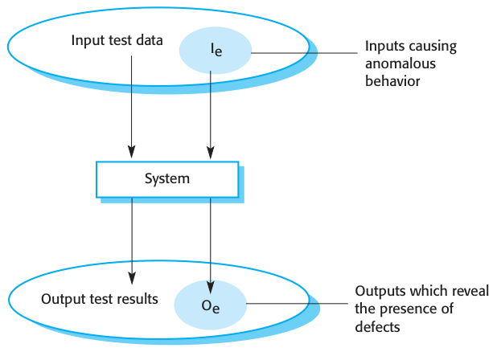
Viewed as a black box mapping input set \(I\) to output set \(O\), only a small problematic subset \(I_e\) triggers erroneous outputs \(O_e\). Defect testing hunts specifically for inputs in \(I_e\), while validation testing focuses on valid expected inputs to confirm expected outputs.若把系统看作把输入空间 \(I\) 映射到输出空间 \(O\) 的黑盒，往往只有一小块问题子集 \(I_e\) 会产生错误输出 \(O_e\)。缺陷测试的目标就是精准搜寻 \(I_e\) 中的触发点，而确认测试则用正常输入核对系统能否给出正确输出。
Because exhaustive testing is impossible—some untested input might still fail—passing tests never prove a program defect-free. As Edsger Dijkstra famously put it, "Testing can only show the presence of errors, not their absence."由于穷举所有输入在现实中做不到（未测到的输入仍可能触发故障），测试永远不能证明软件毫无缺陷。正如 Dijkstra 所言：“测试只能证明错误的存在，而不能证明错误不存在。”
Step 2: verification and validation第 2 步：验证与确认
Core idea: verification asks whether the software matches its specification; validation asks whether it solves what the user actually needs.核心思路：验证（Verification）检查是否按规格做对了产品；确认（Validation）检验是否做出了客户真正需要的产品。
Barry Boehm captured the distinction with two classic questions: Validation（确认）asks "Are we building the right product?" whereas Verification（验证）asks "Are we building the product right?" Verification stops at the written specification, while validation checks against real user expectations—because specifications often miss tacit workflow needs. For example, if a hospital report prints the exact columns written in the spec yet omits a column nurses actually rely on, verification passes but validation fails.Boehm 用两句经典提问概括二者差异：确认问的是“我们做的是正确的产品吗？（right product）”，而验证问的是“我们把产品做对了吗？（product right）”。验证只对照书面规格说明，而确认必须直面真实业务场景——因为规格常常遗漏隐性需求。比如某医院报表严格按规格打印了全部指定列，却漏掉了护士查房真正要看的一列，此时验证通过而确认失败。
Overall, V&V aims to establish confidence that the system is fit for purpose, with the required confidence level shaped by three factors:归根结底，V&V 的目标是确信系统适用其用途（fit for purpose），而所需信心的高低取决于三个因素：
- Software purpose: safety-critical controllers demand far higher reliability than throw-away prototypes.软件用途： 安全关键控制器的可靠性要求远高于一次性原型。
- User expectations: users of brand-new releases tolerate rough edges more readily than users of mature products.用户期望： 用户对全新系统的偶发小故障相对宽容，但期望成熟产品稳定可靠。
- Marketing environment: vendors may ship early to capture market share first, and buyers of low-cost software often accept modest defect rates.市场环境： 企业有时为抢占先机而提前发布；低价消费软件的用户往往也愿意以少量瑕疵换取低价。
Step 3: inspections and testing第 3 步：审查与测试
Inspections（审查）examine requirements, architecture models, and source code without executing anything, making them static verification, whereas testing executes the program and is dynamic.审查在不执行程序的情况下静态检视需求文档、设计模型和源代码（属于静态检查），而测试则必须实际运行代码（属于动态检查）。

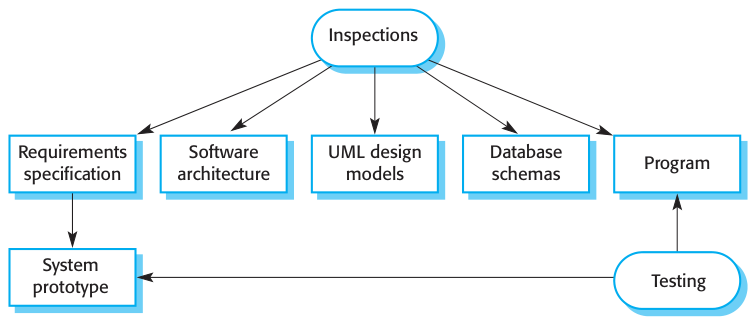
Static inspections offer three practical advantages over dynamic testing:与动态测试相比，静态审查具备三项独特优势：
- No error masking: during execution, an early crash or wrong value can obscure downstream bugs; because nothing executes in an inspection, one review pass can uncover dozens of independent faults.互不掩盖： 运行时前面一个错误往往会让后续缺陷无法触及；审查不运行代码，因此一次评审即可批量揪出多个彼此独立的毛病。
- Works on incomplete artifacts: draft specs, unfinished modules, and schemas can be inspected immediately without building expensive test harnesses.支持未成品： 需求草稿或尚未写完的模块可直接审查，不必等待专门搭建测试支架（test harness）。
- Broader quality attributes: inspections simultaneously assess coding standards, portability, maintainability, inefficient algorithms, and clarity of style.覆盖更广的质量维度： 审查能一并排查规范遵循、可移植性、可维护性、低效算法及代码风格问题。
Nevertheless, inspections cannot replace testing: human reviewers struggle to spot unexpected multi-component interactions, concurrency timing races, and runtime performance bottlenecks.但审查绝不能替代测试：人工读代码很难预测多构件集成后的意外交互、并发时序竞争以及真实运行时的性能瓶颈。
Step 4: the testing process第 4 步：测试过程
Distinguish carefully between test data (inputs alone, which can often be auto-generated) and a complete test case (inputs, expected outputs, and what requirement/property is checked—which requires human domain understanding). A commercial software system typically passes through three testing stages:应区分测试数据（仅有输入，常可自动生成）与完整的测试用例（除输入外还必须规定预期输出及所测目标，须由熟悉业务逻辑的人员编写）。商业软件通常依次经历三个测试阶段：
| Stage阶段 | Who tests测试人员 | Purpose目的 |
|---|---|---|
| Development testing（开发测试） | Designers and programmers设计人员与程序员 | Discover and fix implementation bugs during construction (primarily defect testing)在开发过程中尽早发现并修复实现缺陷（以缺陷测试为主） |
| Release testing（发布测试） | A separate testing team独立于开发团队的测试团队 | Verify independently that a complete release meets stakeholder requirements before shipping发布前独立检验完整版本是否满足利益相关者需求 |
| User testing（用户测试） | End users or customers in their own setting (or internal marketing teams for generic products)最终用户或客户在其真实环境中测试（通用产品有时由内部市场团队代为试用） | Evaluate real-world fitness; formal acceptance testing（验收测试）decides custom-system sign-off评估真实业务环境下的适用性；对于定制软件，正式的验收测试决定是否签收付款 |
Teams combine manual exploratory checks with automated scripts that re-run in seconds after every change—crucial for regression testing. Still, full automation is impossible: scripts cannot evaluate visual UI layout or notice unexpected side effects that nobody thought to assert.实际测试结合了人工探索与自动化脚本——自动化套件能在每次改动后几秒内重跑，是回归测试的基石。但测试无法彻底自动化：脚本既评判不了界面美观度，也察觉不到断言之外的意外副作用。
Practice练习
Q1. (Classify) Decide whether each scenario represents validation testing or defect testing, or a verification versus validation failure:Q1.（分类辨析）判断以下情形分别属于确认测试还是缺陷测试，以及属于验证失败还是确认失败：
- (a) Checking that a three-line invoice adds up to the exact value in the specification.(a) 核对一张三行发票的合计金额是否与规格说明公式一致。
- (b) Pasting a 5,000-character name into a 30-character database field.(b) 往限长 30 个字符的姓名框里粘贴一段 5,000 字符的文本。
- (c) Having a nurse walk through a typical home visit on a system prototype.(c) 请护士在原型上完整走一遍典型的上门随访流程。
- (d) Delivering a system that meets every line of the specification, yet users reject it in practice.(d) 交付的系统满足规格说明每一条要求，但最终用户在实践中拒绝使用。
Answer
- (a) Validation testing: a normal input with an expected output confirming that a billing requirement works.(a) 确认测试：使用正常输入和预期结果证明计费需求得到满足。
- (b) Defect testing: an extreme, abnormal input crafted to provoke truncation bugs, buffer issues, or crashes.(b) 缺陷测试：构造极端异常输入，专程测试截断异常、缓冲区溢出或程序崩溃。
- (c) Validation testing: simulates typical intended use and validates fitness against workflow expectations.(c) 确认测试：围绕典型预期工作流检验系统是否合用。
- (d) Validation failure: the team built the product right (verification passes against the spec) but built the wrong product (real needs were missed in the spec).(d) 确认失败：虽然按规格把产品做对了（验证通过），但没有做对产品（规格本身漏掉了真实业务需求）。
Q2. (Explain) A manager claims: "All 800 tests passed, so the program is defect-free."Q2.（简答）某位项目经理宣称：“800 个测试全部通过，所以程序没有任何缺陷。”
- (a) Explain why this reasoning is flawed.(a) 说明这一论断为何错误。
- (b) How does the number of known defects left at release affect product support?(b) 发布时残留的已知缺陷数量会如何影响后续产品支持？
Answer
- (a) Why flawed: testing shows only the presence of defects, never their absence. 800 tests cover an infinitesimal slice of the possible input combinations—exhaustive testing is impossible, and an unwritten test case may still fail. Passing tests raise confidence, whose required threshold varies with purpose, user expectations, and market pressures.(a) 错误原因：测试只能证明缺陷存在，不能证明没有缺陷。800 条测试只覆盖了海量输入空间中的极小一部分（穷举测试不可行），未写的用例依然可能触发故障。通过测试只能增强信心，而所需信心水平取决于软件用途、用户预期及市场环境。
- (b) Impact on support: every remaining fault encountered by customers generates help-desk calls, workaround instructions, or emergency patches—driving up support cost and eroding customer satisfaction. Maintaining clear known-defect documentation lets support staff respond promptly.(b) 对售后支持的影响：客户每踩中一个残留缺陷，就会转化为客服工单、临时规避指导或紧急补丁，推高支持成本并拉低满意度；提前归档已知缺陷清单至少能帮支持人员快速应答。
易错：全部测试通过 ≠ 没有缺陷。
Unit testing and automated tests ★★★单元测试与自动化测试
Goal. Name the three levels of development testing, structure an automated unit test in three parts, and isolate dependencies with mock objects.目标。 区分开发测试的三个层次，掌握自动化单元测试的三段式结构，并能用模拟对象隔离外部依赖。
Step 1: the three levels第 1 步：开发测试的三个层次
Core idea: development testing lets the builders inspect their own system bottom-up, from individual methods up to the integrated whole.核心思路：开发测试由构建系统的开发人员自底向上逐层排错，从单个方法测到整套系统的协同集成。
Development testing is chiefly defect testing carried out by the programmers themselves. Notice the division of labour: testing reveals that a failure occurs, whereas debugging locates the fault in code and repairs it.开发测试主要由程序员自己执行，重心在于尽可能多地揪出缺陷。注意测试与调试的分工：测试用来暴露故障确实存在，调试则是顺藤摸瓜找到代码里的根因并修改修复。
| Level层次 | What is tested测试对象 | Focus核心关注点 |
|---|---|---|
| Unit testing（单元测试） | Individual methods or object classes单个方法或对象类 | Internal logic and behavior of that isolated unit被测对象或方法自身的功能逻辑 |
| Component testing（构件测试） | Several units integrated into a composite component由多个单元集成而成的复合构件 | External component interfaces through which callers interact对外暴露的构件接口是否按契约工作 |
| System testing（系统测试） | Some or all components integrated together部分或全部构件集成后的整体 | Cross-component interactions and emergent system behavior构件间的协作交互与系统级涌现行为 |
Step 2: testing a class第 2 步：测试一个对象类
Testing a standalone method simply varies input parameters (Section 7.3). Testing a full object class is richer because state persists across calls, requiring three checks:单个方法只需用不同参数调用测试（第 7.3 节），而对象类通常持有跨调用保留的内部状态，因此需要覆盖三个维度：
- Test every operation associated with the class.测试类的每一个公开操作。
- Set and verify the value of every attribute.设置并校验每一个属性的状态。
- Exercise every reachable object state by simulating all state-changing event sequences.通过触发各类事件序列，让对象遍历每一种可能状态。
While stateless operations are tested in isolation, stateful operations require ordered sequences—for instance, testing a weather station's shutdown operation requires calling restart first. Furthermore, inheritance multiplies unit tests: proving an inherited operation works in its superclass does not guarantee correctness in a subclass, because subclasses often modify shared attributes or helper methods; every inherited operation should therefore be re-tested in every subclass.有些操作具有先后依赖，测试必须按合法序列组合（例如气象站对象须先执行 restart 才能测试 shutdown）。尤其要注意，继承会使单元测试数量成倍增加：父类里测通的方法到了子类未必依然正确，因为子类可能修改底层属性或重写依赖操作，因此应在每一个继承并使用它的子类中重新测试。
Step 3: automated tests第 3 步：自动化测试
Core idea: an automated test prepares inputs, calls the target code, and lets an assertion verify the actual output against expectation in seconds.核心思路：自动化测试通过“准备状态 → 调用代码 → 断言对比”三步结构，让机器在几秒内自动判定是否通过。
Testing frameworks such as JUnit provide reusable test runners and assertion helpers that execute whole suites in seconds. Every automated unit test follows the same three-part anatomy:JUnit 等框架提供了统一的测试运行器与断言库，能够在数秒内跑完上千条用例。每条自动化单元测试都遵循三段式结构：
- Setup: initialize objects with known inputs and define the expected outcome.准备（Setup）： 用测试数据初始化系统状态并准备好预期值。
- Call: invoke the method or component under test.调用（Call）： 触发待测对象或方法。
- Assertion: compare the actual result against the expected result; passing evaluates true, failing evaluates false.断言（Assertion）： 将实际输出与预期结果比对，一致则通过，否则报错失败。
@Test
public void maxOfThreeValues() {
int[] data = {3, 9, 4}; // setup: input
int result = ArrayUtil.max(data); // call: method under test
assertEquals(9, result); // assertion: expected value
}
Step 4: mock objects第 4 步：模拟对象
Real objects often depend on unimplemented collaborators, slow disk databases, or real-time hardware sensors. Substituting a mock object (implementing the same interface with in-memory data or scripted return values) eliminates I/O waits and makes rare triggers—such as midnight timeouts or hardware failures—completely repeatable.当被测对象依赖尚未开发完成的模块、缓慢的磁盘数据库或难以控制的外设时，可以用模拟对象代替真实依赖：只需实现相同接口并用内存数组或预设返回值应答，就能彻底摆脱等待，还能稳定复现午夜超时或传感断线等罕见事件。
Practice练习
Q1. (Write) An account starting with balance 100 must have balance 70 after withdraw(30). Write the three parts of the automated test, plus one abnormal-input test.Q1.（编写）一个余额为 100 的账户执行 withdraw(30) 后余额应为 70。写出该自动化单元测试的三段结构，并补充一条异常输入测试。
Answer
- Normal test: Setup
Account a = new Account(100);→ Calla.withdraw(30);→ AssertionassertEquals(70, a.getBalance());(true passes).正常测试： 准备Account a = new Account(100);→ 调用a.withdraw(30);→ 断言assertEquals(70, a.getBalance());。 - Abnormal-input test: calling
withdraw(150)on an account with balance 100 must fail cleanly (raise an exception or return an error) while leavinggetBalance() == 100untouched.异常输入测试： 对余额 100 的账户调用withdraw(150)，断言其被正确拒绝（抛出异常或返回错误），且余额仍保持 100 不受破坏。
Q2. (Mock objects) An AlarmController sounds an alarm from 22:00 up to, but excluding, 06:00 by reading the system clock. (a) How do you test night behavior at midday? (b) Which boundary and interior times should you supply?Q2.（模拟对象）AlarmController 读取系统时钟，在 22:00 至 06:00（不含 06:00）期间报警。(a) 如何在正午测试夜间行为？(b) 应选取哪些时间点？
Answer
- (a) Substitute a mock clock sharing the clock interface that returns any programmed timestamp, making tests fast, repeatable, and independent of wall-clock time.(a) 用相同接口的模拟时钟替换真实时钟并按需返回指定时间，使测试快速、可重复且脱离现实时间束缚。
- (b) Boundaries and midpoint:
21:59(off),22:00(on),02:00(on),05:59(on), and06:00(off).(b) 关键边界与中点：21:59（关闭）、22:00（报警）、02:00（报警）、05:59（报警）、06:00（关闭）。
思路：模拟对象把不可控的“时间”变成了测试可控的输入参数。
Choosing test cases: partitions and guidelines ★★★选择测试用例：等价类与准则
Goal. Derive test cases from a specification by equivalence partitioning, selecting boundary values and midpoints together with expected outputs.目标。 运用等价类划分从规格说明导出测试用例，准确选取边界值、中间值并写出预期输出。
Effective test cases serve double duty: on normal inputs they verify expected behavior, while on experience-driven abnormal inputs they expose hidden flaws.高效的测试用例兼顾两头：一方面在常规操作下确认功能正确，另一方面专门针对易错情形构造异常输入以暴露隐患。
Step 1: equivalence partitioning第 1 步：等价类划分
Core idea: equivalence partitioning groups inputs that the program treats identically, then samples each group's midpoint along with its inner and outer boundaries.核心思路：等价类划分把程序处理方式一致的输入归为一类，在每类中挑典型中间值以及紧贴边界的内外两侧值进行测试。
Inputs and outputs fall naturally into sets sharing a rule—called equivalence partitions（等价类）—within which every member is expected to behave identically. Invalid inputs likewise form their own partitions. For instance, if a cinema prices tickets separately for children under 12, adults, and seniors aged 65+, age splits into three valid partitions plus an invalid partition for negative numbers.输入与输出按业务规则自然聚合成若干集合——等价类，同一集合内成员在逻辑上应受到一致对待；非法输入也各自独立成类。例如电影院对 12 岁以下儿童、成人和 65 岁及以上老人分段定价，便形成三个有效年龄等价类，外加负年龄等无效等价类。

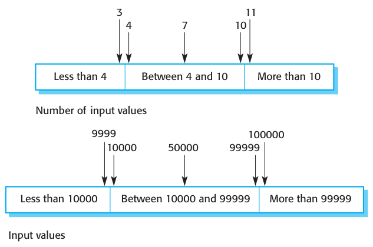
Boundary-and-midpoint rule: select test values near each partition's midpoint (covering the typical case programmers expect) and on both sides of every boundary (such as zero, minimum, and maximum), because off-by-one bugs cluster disproportionately at boundaries.边界与中点准则： 每个有效等价类都要取一个中间值（覆盖程序员最常想到的典型情况）以及紧挨边界的内外值（例如 0、最小值、最大值及其邻近越界值），因为绝大多数“差一错误（off-by-one）”都扎堆出现在边界上。
Deriving partitions purely from the specification and user docs is black-box testing（黑盒测试）because no code inspection is required; white-box testing（白盒测试）looks inside the source code to spot extra hidden sub-partitions and uncovered branches.只看规格说明和用户手册来划分等价类属于黑盒测试，完全无需阅读源码；而白盒测试则会进一步查看源代码，挖掘代码分支中隐藏的子等价类与未覆盖路径。
Step 2: guidelines第 2 步：经验测试准则
Experience-based guidelines capture recurring bug patterns, especially for collections (arrays, lists, sequences):测试准则凝结了前人踩坑总结的高发缺陷模式，尤其适用于序列、数组与列表：
- Test single-element (and empty) sequences, since programmers implicitly assume multi-element inputs.用仅含单个元素（及空序列）的输入进行测试——程序员写循环时常下意识假设序列包含多个元素。
- Vary sequence lengths across tests so buggy indexing cannot look right by coincidence.在不同用例间使用长度各异的序列，防止错误下标或硬编码偶然蒙混过关。
- Force access to the first, middle, and last elements to catch boundary indexing errors.刻意访问首元素、中间元素和尾元素，专抓数组越界和边界遗漏。
More broadly, deliberately trigger every documented error message, attempt buffer overflows, repeat the same operation many times, and push outputs toward extreme large and small values.通用准则还包括：设法触发每一条规定报错信息、冲击输入缓冲区上限、高频重复同一输入，以及逼近结果的上溢和下溢极限。
Practice练习
Q1. (Design) The method catWhiteSpace on a Paragraph object replaces every run of blank characters with a single blank. Identify equivalence partitions and derive test cases with expected outputs (_ denotes one blank).Q1.（设计）Paragraph 对象的 catWhiteSpace 方法将文本中每段连续空白替换为单个空格。请划分子等价类并写出带预期结果的测试用例（_ 表示一个空格）。
Answer
Input partitions by structural pattern: empty string, single character, single blank(s) only, run of 2+ blanks in the middle, run at start, run at end, blanks-only string, and multiple runs of varying lengths:按文本结构划分输入等价类：空段落、单字符、仅有孤立空格、段中至少两个连续空格、开头连续空格、结尾连续空格、全空格串以及多段不同长度的连续空格：
| Input输入 | Expected预期结果 | Partition等价类 |
|---|---|---|
"" |
"" |
empty paragraph空段落 |
"a" |
"a" |
single character单个字符 |
"a_b_c" |
"a_b_c" |
only single blanks仅含孤立单空格 |
"a__b" |
"a_b" |
shortest run to collapse (two blanks)最短待合并连续空格（2 个） |
"a_____b" |
"a_b" |
long run较长连续空格 |
"__a" |
"_a" |
run at start开头连续空格 |
"a__" |
"a_" |
run at end结尾连续空格 |
"___" |
"_" |
only blanks全为空格 |
"a__b___c____d" |
"a_b_c_d" |
several runs of different lengths多段不同长度的连续空格 |
"_" |
"_" |
single blank单个空格 |
思路：先按字符串结构分类，再专门盯紧“空串、单字符、首、尾、长度为 2 的最小连续串”等边界。
Q2. (True/false) "If one value from an equivalence partition passes its test, every value in that partition passes." Justify.Q2.（判断）“只要同一等价类中的一个值测试通过，该等价类里的所有值都会通过。”请说明理由。
Answer
False. Partitioning assumes uniform handling, yet code frequently mishandles atypical boundary values (like zero or maximum limits) or hides internal branches such as range-specific exception checks—which is why boundaries, midpoints, and white-box inspection are still needed.错误。 等价类划分只是先验假设程序对同一区间一视同仁，但实现代码常在零点、上下界等特殊边界上犯错，也可能暗藏分支判断或异常拦截。因此仍须单独测试边界与中点，并结合白盒审视内部代码。
Component and system testing ★★★构件测试与系统测试
Goal. Classify the three types of interface error with examples, explain what system testing uncovers that component testing misses, and design a use case-based test.目标。 掌握三类接口错误并能举例，理解系统测试与构件测试的盲区差异，并设计基于用例的系统测试。
Step 1: component (interface) testing第 1 步：构件（接口）测试
Core idea: component testing exercises a composite group of objects through its external interface because integration bugs hide between internal collaborators.核心思路：构件测试把一组协作对象封装成整体，从其对外接口注入测试，专门捕捉对象接缝处的契约错误。
A component wraps several cooperating objects behind an interface. Even if unit tests for each inner object pass, defects arise across their boundaries, so component testing feeds inputs solely to the outer interface to verify specification compliance.一个构件内部包含多个协作对象，只通过公开接口与外界交互。即便内部单个对象的单元测试全绿，衔接处依然可能出问题，因此构件测试将用例统一施加在复合构件的外接口上。

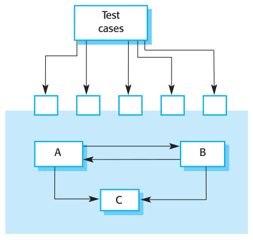
Interfaces across software systems take four main forms:软件中的构件接口主要有四种形式：
| Interface接口类型 | How components communicate构件间的通信机制 | Typical use典型应用场景 |
|---|---|---|
| Parameter参数接口 | Data or function references passed directly in calls通过调用实参传递数据或函数引用 | Methods of objects and libraries对象方法调用与函数库 |
| Shared memory共享内存 | One block of memory read and written by multiple components一个构件写入共享内存块，另一构件读取 | Embedded real-time systems (e.g., sensors updating buffers)嵌入式系统（如传感器向缓冲区写入读数） |
| Procedural过程式接口 | A component encapsulates procedures that external code invokes构件封装一组供外部调用的过程/服务 | Objects and reusable subsystems面向对象子系统与可复用构件 |
| Message passing消息传递 | Caller sends a request message and receives a reply message请求方发送请求消息，接收返回消息 | Client–server systems and loosely coupled OO systems客户端-服务器架构与松耦合面向对象系统 |
Interface faults are among the trickiest bugs in complex software and fall into three classes:接口错误是复杂系统中最高发的顽疾之一，可归为三大类别：
| Error class错误类别 | Meaning本质含义 | Example典型示例 |
|---|---|---|
| Interface misuse接口误用 | The caller violates the call syntax or parameter rules调用方未按接口签名或格式规约调用 | Wrong parameter type, count, or swapped argument order实参类型、数量错误或参数顺序写反 |
| Interface misunderstanding接口误解 | The caller makes a wrong assumption about semantic behavior or preconditions调用方对被调用方的语义行为或前置条件作出错误假设 | Passing an unsorted array to binary search将未排序的数组传给二分查找方法 |
| Timing error时序错误 | Producer and consumer run out of step over shared memory or messages in real-time systems实时系统中通过共享内存或消息交互的生产者与消费者步调失配 | Consumer reads stale sensor data before the producer refreshes the buffer生产者尚未写入最新采样值，消费者就已经读走旧数据 |
Because interface faults often surface only under unusual load or ordering conditions, follow five practical testing guidelines:鉴于接口缺陷常常只在罕见条件下露头，可采用五条经验测试准则：
- Probe external calls with parameter values at the extreme ends of their valid and invalid ranges.调用外部构件时，用参数取值范围的两端极值进行测试。
- Always inject null pointers or null references wherever addresses cross an interface.只要接口允许传递指针或引用，必须单测空指针/空引用。
- For procedural interfaces, simulate failures in the called component to verify caller resilience.针对过程式接口，故意让被调用构件失败，检查调用方能否妥善处理异常。
- In message-passing systems, run stress tests sending bursts far exceeding normal message rates.在消息传递系统中制造远超常规的突发消息流，排查拥塞与丢包。
- In shared-memory architectures, vary the activation and scheduling order of components.在共享内存系统中刻意改变各构件的启动和调度顺序，诱发竞态缺陷。
Step 2: system testing第 2 步：系统测试
Core idea: system testing integrates components incrementally to verify cross-component collaboration and validate emergent system behavior.核心思路：系统测试将构件逐步组装成完整系统，验证跨构件协作以及整体层面才出现的“涌现行为”。
System testing checks that independent components fit together cleanly, exchange valid data at the right time, and exhibit the desired emergent behavior（涌现行为）—capabilities that arise only when components cooperate (Section 1.3). For example, combining authentication with database updates yields the emergent property that only authorized users may modify records. Equally, tests must confirm that no unwanted emergent side effects appear.系统测试重点检验构件间是否兼容并按正确节奏交接数据，同时考察整体显现出的涌现行为（只有组合运行才出现的能力，见第 1.3 节）。例如“身份认证 + 数据库写入”组合后才会涌现出“仅限授权用户改库”的安全属性；测试既要验证预期涌现特性生效，也要警惕意外的负面副作用。
Use case-based testing（基于用例的测试）maps naturally onto system testing because every use case spans multiple cooperating components. Sequence diagrams explicitly show which objects interact and which inputs and outputs should be checked.基于用例的测试非常适合系统测试，因为几乎每个用例都会穿越多个构件。从用例对应的时序图中，可以直接读出涉及哪些对象以及测试要观测哪些输入输出。

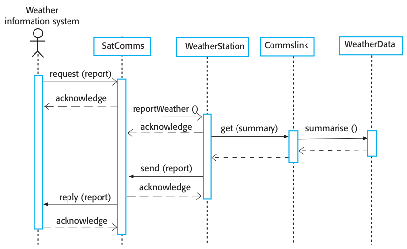
SatComms through WeatherStation and Commslink to WeatherData, returning the summary with acknowledgements采集气象数据的时序图：报告请求从 SatComms 经 WeatherStation 与 Commslink 传至 WeatherData，随后逐级返回汇总报告与确认Since exhaustive path testing across integrated components is infeasible, teams test according to explicit policies (such as ensuring every menu-reachable function runs with valid and invalid inputs and combinations, alongside statement coverage). Furthermore, components should be integrated incrementally—adding one component and re-testing before attaching the next—so any newly appearing failure immediately points to the latest addition.由于穷举集成路径不现实，团队需依据明确测试策略抽样（如遍历菜单可达的全部功能、功能组合及正反输入，配合语句覆盖准则）。集成时应坚持增量集成：每接入一个新构件就跑一遍测试，一旦冒出新故障，立刻就能把嫌疑锁定在刚刚接入的那个构件上。
Practice练习
Q1. (Classify) Identify the interface error class for each bug and design a test that exposes it:Q1.（分类设计）指出下列每处缺陷属于哪类接口错误，并设计一条能揭示它的测试：
- (a)
copy(dest, src)is mistakenly called ascopy(src, dest).(a)copy(dest, src)被误调用为copy(src, dest)。 - (b)
binarySearch(list, key)is called with an unsorted list.(b) 对无序列表调用binarySearch(list, key)。 - (c) A display reads a temperature buffer before the sensor task writes the new reading.(c) 显示模块在传感器任务尚未写入新读数前就读走了温度缓冲区。
- (d) A caller assumes an internal queue is unbounded and omits overflow checks.(d) 调用方误以为队列容量无限而从不处理溢出异常。
Answer
- (a) Interface misuse (swapped argument order): invoke with distinct, easily checked strings in source and destination and assert that destination receives source's contents.(a) 接口误用（参数位置写反）：传入内容明显不同的源和目标字符串，断言目标是否按预期获得源内容。
- (b) Interface misunderstanding (broken precondition): supply an unsorted array containing the key and check whether the specified failure/exception behavior triggers cleanly.(b) 接口误解（违背排序前置假设）：传入含目标元素的无序数组，检验接口是否按规约拒绝或返回约定错误。
- (c) Timing error: alter component activation order or introduce delay in the producer task and assert that consumers receive current data.(c) 时序错误： 调换任务激活顺序或人为延迟生产者写操作，检验消费者是否仍能读到新鲜一致的数据。
- (d) Interface misunderstanding (wrong capacity assumption): flood the queue up to and past capacity and assert that the caller handles overflow errors cleanly.(d) 接口误解（错估容量上限）：持续灌入数据直至超过队列上限，检查调用方对满队列异常的处置逻辑。
Q2. (Design) For the use case "collect weather data" (SatComms:request → WeatherStation:reportWeather → Commslink:Get(summary) → WeatherData:summarize), outline one normal test and one exception test.Q2.（设计）针对“采集气象数据”用例（SatComms:request → WeatherStation:reportWeather → Commslink:Get(summary) → WeatherData:summarize），设计一条正常测试和一条异常测试。
Answer
- Normal test: seed known raw readings and compute the expected summary; trigger the request from
SatComms; verify acknowledgement delivery, call ordering (reportWeather → Get → summarize), and exact summary equality.正常测试： 预设已知原始传感器数据及期望摘要；由SatComms发起请求，核查收到确认回执、调用链按规定顺序执行，且返回的汇总报告与预期完全吻合。 - Exception test: drop the communication link (or have
WeatherDatareturn empty data) duringGet(summary); confirm that failure reporting or retry logic activates cleanly without hanging or corrupting stored records.异常测试： 在执行Get(summary)途中模拟通信断链或WeatherData无数据返回；验证系统能够可靠上报故障或重试，既不死锁挂起也不损坏本地既有数据。
Test-driven development ★★测试驱动开发
Goal. Trace the TDD cycle, explain why a new test must fail initially, and weigh its benefits against its limits.目标。 掌握 TDD 循环步骤，阐明新测试为何必须先失败，并评价其优势与局限性。
Core idea: test-driven development (TDD) writes an automated test before implementing the behavior, turning coding into rapid test–code–refactor cycles.核心思路：测试驱动开发（TDD）先写失败的自动化测试，再补足刚好通过测试的代码并重构，以极小步幅稳步推进。
Originally popularized by Extreme Programming (Section 2.3), TDD（测试驱动开发）interleaves test authoring and coding in tight increments: the next increment starts only when every existing test is green.TDD 源自极限编程（第 2.3 节），将写测试与写代码紧密交织成一个个小增量：只有当已有测试全部亮绿灯时，才动手做下一项功能。

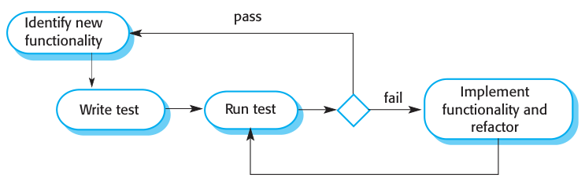
- Identify the next small increment of functionality.确定下一个最小功能增量。
- Write an automated test covering that increment (Section 7.2).为它编写自动化单元测试（第 7.2 节）。
- Run the whole suite; the new test must fail because the functionality does not yet exist.跑一遍完整测试集，新测试按预期失败（红）——说明目标功能确实缺失。
- Write just enough code to pass the test and re-run; refactor（重构）to tidy structure without altering behavior.写出刚好使测试通过的实现并重跑，在保证全绿的前提下顺手重构优化内部结构。
- Once all tests pass, move to the next increment.全部测试通过后，继续下一个增量。
Why fail first? If a newly written test passed immediately, either the feature already existed elsewhere or the test assertion was incapable of catching missing behavior—in either case, the test proves nothing.新测试为何必须先失败？ 若刚写好的一条测试未经改代码就立刻通过，要么功能早已实现，要么测试本身存在漏洞抓不住错误——无论哪种都毫无验证价值。
Key benefits: writing the test first forces clarity on requirements and interfaces, ensures every new code segment has test coverage and executable documentation, pinpoints defects straight to recent edits, and organically grows a fast, low-cost regression suite.主要优势： 先写测试倒逼开发者动手前彻底想清接口与需求；每段新代码天生配有测试并形成活文档；一旦挂掉即可把问题锁定到刚才的小步修改，更重要的是自然积累出一套低成本的回归测试集。
Limits:主要局限：
- Hard to apply when adapting large reused components or legacy monoliths that cannot be carved into small testable units.面对庞大难拆的大型复用构件或遗留系统，难以切成细小增量来测试驱动。
- Ineffective for nondeterministic multithreaded code, where thread interleavings differ on every execution.对多线程并发系统效果有限，因为每次运行线程交错顺序均不相同，难以稳定复现。
- Does not replace system testing, which validates integrated behavior against all stakeholder requirements.不能替代系统测试——整体组装后的系统确认仍须依据全部利益相关者需求开展。
Practice练习
Q1. (Calculation) A suite has 400 tests. Manual execution takes 5 minutes per test, whereas the automated suite runs in 20 seconds total. Compare the cost of 10 regression runs and state the implication for TDD.Q1.（计算）某测试套件包含 400 条用例：人工执行每条需 5 分钟，而自动化运行全套只需 20 秒。对比跑 10 次回归测试的耗时成本，并说明这对 TDD 有何决定性意义。
Answer
- Manual cost: \(400 \times 5\text{ min} = 2{,}000\text{ min} = 33.3\text{ h}\) per run (\(\approx 4.2\) working days of 8 h), so 10 runs require 333 h.人工耗时： 单次 \(400 \times 5\text{ min} = 2{,}000\text{ min} = 33.3\text{ h}\)（约 4.2 个 8 小时工作日），10 次回归累计 333 小时。
- Automated cost & speed-up: 10 runs take \(10 \times 20\text{ s} = 200\text{ s} \approx 3.3\text{ min}\), giving a per-run speed-up of \(2{,}000 \times 60 / 20 = 6{,}000\times\).自动化耗时与加速比： 10 次仅需 \(10 \times 20\text{ s} = 200\text{ s} \approx 3.3\text{ 分钟}\)，单次运行提速高达 6,000 倍。
- Consequence for TDD: at manual cost teams inevitably skip regression tests or sample only a few; cheap 20-second automation enables running the full suite after every tiny edit, which TDD's rapid loop demands.对 TDD 的影响： 若靠人工回归，团队必然因为太贵太慢而偷工减料；只有借助 20 秒全量自动回归，才能支撑 TDD“每改几行就全测一遍”的微循环。
Q2. (True/false) Justify each statement:Q2.（判断并说明理由）
- (a) A new TDD test should pass the very first time it runs.(a) 新写的 TDD 测试在第一次运行时就应该通过。
- (b) TDD makes system testing unnecessary.(b) 采用 TDD 后便不再需要系统测试。
- (c) TDD fits a team wrapping a monolithic legacy system.(c) TDD 非常适合正封装大型遗留系统的团队。
Answer
- (a) False: it must fail first to prove the behavior is missing and the test actually detects failures; an immediately green test verifies nothing.(a) 错误： 必须先失败，以证明功能确实尚未实现且断言能抓出缺失；一写就过的测试没有验证意义。
- (b) False: system testing is still required to validate integrated interactions, performance, reliability, and overall compliance with stakeholder requirements.(b) 错误： 仍须通过系统测试校验跨构件交互、性能、可靠性以及整体需求满足情况。
- (c) False: legacy monoliths cannot easily be decomposed into small testable increments, so tests must largely target the wrapped system as a whole.(c) 错误： 庞大遗留系统往往紧耦合且难以切分成小增量单测，通常只能在整体层面编写接口或系统测试。
Release testing ★★发布测试
Goal. Contrast release testing with development system testing, and explain requirements-based, scenario, performance, and stress testing.目标。 说明发布测试与开发系统测试的核心区别，并掌握基于需求、场景、性能与压力四类测试方法。
Core idea: release testing puts a release candidate through independent black-box validation against the requirements before shipping.核心思路：发布测试指在软件交付前，由独立于开发团队的人员仅对照规格说明对候选发布版作黑盒确认。
Whereas development testing hunts for code bugs internally, release testing aims to convince the supplier that a release built for external deployment is genuinely ready to ship.相比开发阶段重在“修补程序瑕疵”，发布测试旨在向供应方管理层提供充足依据：当前打包好的对外发布版本已满足客户要求，可以放心交付。
| System testing (development)开发期间的系统测试 | Release testing发布测试 | |
|---|---|---|
| Who执行团队 | The development team原开发团队 | A separate, independent testing team未参与编写代码的独立测试团队 |
| Purpose核心目的 | Defect testing to uncover remaining implementation bugs以缺陷测试为主，尽可能暴露实现故障 | Validation testing to confirm requirements are met and release quality suffices确认系统满足需求并达到可交付水准 |
| Basis测试依据 | Component internals and architecture; source knowledge allowed允许结合构件内部结构与源码知识 | Specification only: pure black-box / functional testing（功能测试）仅看外部规格说明：纯黑盒（功能）测试 |
Requirements-based testing基于需求的测试
Good requirements must be testable. Requirements-based testing（基于需求的测试）systematically designs a test suite for each stated requirement—usually several cases per requirement—linked back via traceability records to demonstrate validation coverage.合格的需求必须具备可测试性。基于需求的测试为每条需求导出配套用例（通常一条需求需要多条正反测试），并通过需求可追溯性矩阵登记映射关系，以证明没有漏测。
Scenario testing场景测试
Scenario testing（场景测试）derives realistic end-to-end stories covering multiple requirements together—such as a nurse printing a visit schedule, downloading encrypted records to a laptop, visiting clinics, updating notes, and syncing back. By role-playing real users and making deliberate mistakes (like entering wrong passphrases), testers check both cross-feature flows and error recovery.场景测试围绕典型使用故事一次串联多条需求——例如护士打印随访名单、下载加密病历至笔记本、出门巡诊录入记录后再回传同步。测试员扮演用户并故意犯错（如输错解码口令），从而在单次流程中检验跨功能配合与容错处理。
Performance and stress testing性能与压力测试
Performance testing verifies throughput and latency under realistic workloads by scaling traffic according to an operational profile（运行剖面）—a test mix mirroring real production traffic proportions (e.g., if 90% of live requests are Type A, then \(1{,}800\) of \(2{,}000\) test transactions are Type A) until response degrades unacceptably.性能测试按照真实业务比例构建运行剖面（例如生产流量中 A 类交易占 90%，则 2,000 次测试交易中分配 1,800 次 A 类），逐步加压至响应超出可接受阈值为止，以此检验设计负载下的承载能力。
Stress testing（压力测试）goes further by pushing workload beyond design limits (e.g., driving a 300-tps server well past 300 tps until failure). Because faults cluster at resource saturation, stress testing checks two critical goals:压力测试则刻意把负载推到设计上限之外（例如对设计指标 300 tps 的系统持续加压直至崩溃），因为许多致命缺陷只在极限拥塞时爆发。压力测试聚焦两大目标：
- Failure behavior: verify the system "fails soft"（平稳降级）—rejecting excess load gracefully without corrupting stored data or leaking sensitive errors.过载失效表现： 检查系统是否做到平稳降级（fail soft）——宁可温和拒绝超额请求，也绝不损坏数据或静默丢单。
- Hidden defects: uncover deadlocks, memory leaks, or race conditions that never materialize at moderate load.潜伏极限缺陷： 逼出平时中低负载下根本不露面的死锁、内存泄漏与竞争条件。
Practice练习
Q1. (Design) Requirements: R1: "Lock an account after three consecutive failed log-ins." R2: "A successful log-in resets the failure count." Derive traceable tests (W = wrong password, C = correct password).Q1.（设计）需求：R1“连续 3 次登录失败后锁定账户”；R2“一次成功登录会清零失败计数”。导出带可追溯记录的测试用例（W=错密码，C=对密码）。
Answer
| Test编号 | Sequence操作序列 | Expected预期结果 | Covers追溯需求 |
|---|---|---|---|
| T1 | W, C |
Log-in succeeds登录成功 | R2 |
| T2 | W, W, C |
Succeeds; not locked (two failures, one short of limit)登录成功；未锁定（仅失败两次，未达阈值） | R1 |
| T3 | W, W, W, C |
Locked after third W; subsequent C rejected第三次 W 后立即锁定；随后的正确密码 C 亦被拒绝 |
R1 |
| T4 | W, W, C, W, W |
Not locked: C reset count, leaving only two consecutive Ws未锁定：中间 C 将计数清零，后续仅两次连续失败 |
R2 |
Each requirement maps to multiple tests, and the Covers column provides explicit traceability.每条需求均覆盖正反边界用例，“追溯需求”列即构成需求可追溯记录。
Q2. (Discuss) Give arguments for and against developers testing their own code, and explain which stage must stay independent.Q2.（讨论）分析开发者自己测代码的正反理由，并指出哪个测试阶段必须独立。
Answer
- For: developers know internal code structure and spot and patch defects cheaply without handover delays (unit tests and TDD).支持理由： 开发者最懂内部实现，编写白盒、单元测试与修缺陷成本最低且无需交接等待。
- Against: shared requirement misunderstandings pollute both code and tests; authors unconsciously confirm code works rather than trying to break it.反对理由： 若开发者误解了需求，会把同一错误同时写进代码和测试里；且人天性倾向验证自己做对了而非找茬破坏。
- Independence needed: developers handle unit, component, and development system testing, while an independent team must execute release testing to validate requirements objectively without author bias.独立性边界： 开发人员负责单元、构件及开发系统测试；而发布测试必须由独立团队执行，在不带实现偏见的前提下对照需求作客观黑盒把关。
User testing ★★用户测试
Goal. Distinguish alpha, beta, and acceptance testing, and recall the six stages of acceptance testing.目标。 区分 α 测试、β 测试与验收测试，并按顺序掌握验收测试的六个阶段。
Core idea: user testing exposes software to real users or customers in operational environments no test lab can faithfully reproduce.核心思路：用户测试把软件放进测试实验室难以完全模拟的真实工作环境中，由真实用户或客户直接试用与把关。
Even exhaustive lab testing misses workplace realities that shape reliability, performance, and usability—for instance, hospital staff juggling emergencies while talking to anxious relatives. User testing closes that gap in three forms:实验室测得再仔细，也复制不出医院急诊室里一边抢救一边安抚家属的喧闹高压现场——而真实环境恰恰会直接冲击软件的可用性、性能和可靠性。用户测试主要包括三种形式：
| Type测试类型 | Who tests测试人群 | What is tested测试对象 | Typical software适用软件类型 |
|---|---|---|---|
| Alpha testing（α 测试） | A small, selected group working closely alongside developers一小批受邀与开发团队紧密配合的用户 | Early pre-release builds during development开发过程中的早期版本 | Shrink-wrapped products, apps, or agile custom software通用软件产品、应用及敏捷定制软件 |
| Beta testing（β 测试） | A broad audience (often anyone volunteering)人数众多、分布广泛的普通用户群体 | Early or nearly finished builds in users' own diverse environments准正式或早期公测版本，暴露跨环境兼容与交互问题 | Generic products running on diverse hardware and OS configs运行环境五花八门的通用商品化软件 |
| Acceptance testing（验收测试） | The paying customer using real business data付费客户亲自使用自有业务数据检验 | Completed system to decide formal sign-off, payment, and deployment待交付的完整系统，用于决定是否正式接收部署并付尾款 | Custom-built contract systems合同定制开发系统 |
For bespoke contract software, acceptance testing（验收测试）triggers final payment and typically follows six formal stages:对于合同定制系统，验收测试直接关联最终验收付款，标准流程包含六个阶段：

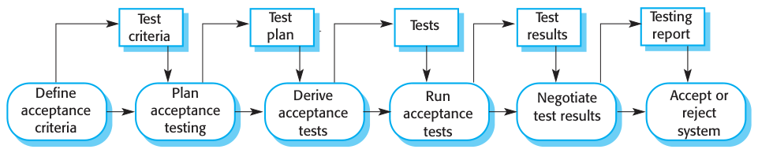
| Stage阶段 | Content核心工作 |
|---|---|
| 1. Define acceptance criteria1. 定义验收标准 | Ideally agreed before contract signing; hard in practice because requirements evolve and lack early detail理想应在签合同前写入条款，但实践中前期需求常不完备且易变 |
| 2. Plan acceptance testing2. 规划验收测试 | Allocate budget, schedule, required coverage, test order, and risk mitigations (crashes, slow throughput)安排经费、人力、排期、需求覆盖率目标、测试顺序及崩溃/性能不达标的应对预案 |
| 3. Derive acceptance tests3. 导出验收测试 | Cover both functional and non-functional targets; fuzzy criteria often leave room for interpretation disputes设计覆盖功能与非功能（性能等）指标的测试集；客观标准难定，易产生达标争议 |
| 4. Run acceptance tests4. 执行验收测试 | Preferably in the live customer environment (or a close replica); interactive tasks resist full automation and staff may need training优先在真实生产环境（或高保真镜像环境）跑数，人工交互环节难自动化，常需提前培训操作员 |
| 5. Negotiate test results5. 协商测试结果 | Since all tests rarely pass cleanly, client and supplier negotiate whether defects block launch and set repair schedules现实中极少百分之百全过；双方据实协商现有缺陷是否妨碍上线及修复排期 |
| 6. Reject/accept system6. 拒收或接收系统 | Formal review decides sign-off; if rejected, bugs are fixed and acceptance testing repeats召开验收评审会拍板：接收上线，或拒收整改后重新走验收 |
Because few large systems pass every test on first delivery while delaying launch carries heavy operational costs, clients often agree to conditional acceptance（有条件验收）: deployment proceeds immediately on the condition that the supplier promptly patches critical issues. Meanwhile, in agile approaches like XP, there may be no separate acceptance phase at all because an embedded customer writes automated story acceptance tests continuously—though an embedded representative may not reflect every end user.由于复杂系统很少首次测试即全数通过，而推迟上线又意味着人员与硬件闲置成本高昂，现实中常采取有条件验收——先允许上线部署，供应商承诺限期紧急修复高危缺陷。而在极限编程等敏捷实践中，驻场客户把用户故事直接写成自动化验收测试，从而取消了独立验收阶段（但需谨防单个驻场代表不具广泛代表性）。
Practice练习
Q1. (Classify) Identify whether each scenario describes alpha, beta, or acceptance testing:Q1.（分类）判断下列场景分别属于 α 测试、β 测试还是验收测试：
- (a) A studio releases an unfinished game build to thousands of volunteer players worldwide.(a) 游戏工作室把未完成的抢先版本开放给全球数千名志愿玩家试玩。
- (b) A bank runs a custom loan system on real data in a shadow environment before paying the final instalment.(b) 银行在影子环境中用真实业务数据检验定制信贷系统，然后决定是否支付尾款。
- (c) Five key customers work directly alongside developers to test each early milestone build.(c) 五位核心客户随开发进度在每个早期构建出炉时与程序员一起试用排错。
Answer
- (a) Beta testing: large distributed crowd trying an early product across uncontrolled real-world setups.(a) β 测试： 广泛用户群体在各自五花八门的环境下体验早期产品。
- (b) Acceptance testing: the paying customer tests custom software with real data to decide contractual sign-off and final payment.(b) 验收测试： 定制软件客户在真实数据上验证系统并决定合同验收与付款。
- (c) Alpha testing: a hand-picked group collaborating tightly with developers during construction.(c) α 测试： 精挑细选的小组在研发期间贴身配合开发团队测试。
Q2. (Process) List the six stages of acceptance testing in order and explain why conditional acceptance is so common.Q2.（流程）按顺序列出验收测试的六个阶段，并解释为何实践中常出现“有条件验收”。
Answer
- Define acceptance criteria → 2. Plan acceptance testing → 3. Derive acceptance tests → 4. Run acceptance tests → 5. Negotiate test results → 6. Accept or reject the system.① 定义验收标准 → ② 规划验收测试 → ③ 导出验收用例 → ④ 执行验收测试 → ⑤ 协商测试结果 → ⑥ 接收或拒收系统。
Why conditional acceptance occurs: rarely do 100% of acceptance tests pass, yet delaying deployment costs more than temporary workarounds (hardware sitting idle, staff retrained, workflows converted). The customer accepts deployment while binding the supplier to rush urgent fixes.常见有条件验收的原因： 大系统首轮很少全部通过，而硬件已到位、人员已培训，无限期推迟上线的停摆损失远高于临时规避风险；因此客户往往先签收启用，同时要求供应商限期紧急补丁修复关键缺陷。
Terms to recognise ★核心辨识术语
| Term术语 | What to know考试要点 |
|---|---|
| Path testing（路径测试） | White-box technique exercising every independent execution path through a component so every statement runs at least once覆盖构件每条独立控制路径的白盒方法，可保证每条语句至少执行一次 |
| Cyclomatic complexity（圈复杂度） | Number of independent paths through a control-flow graph; equals decision count plus one控制流图中独立路径的数量，在单入口单出口函数中等于判定节点数加一 |
| Stub（测试桩） | Minimal stand-in mimicking an unbuilt lower-level module by returning canned responses代替尚未实现的下层被调模块、返回预设值的简易替身 |
| Driver（测试驱动） | Harness code that invokes a lower-level module directly so it can be tested standalone主动调用底层模块以支持其独立测试的外壳程序 |
| Top-down, bottom-up & big-bang integration自顶向下、自底向上与大爆炸集成 | Top-down requires stubs; bottom-up requires drivers; big-bang merges everything at once, making fault isolation very hard自顶向下需用测试桩；自底向上需用测试驱动；大爆炸一次性全拼装，故障定位极难 |
| Test planning（测试计划） | Resourcing and scheduling testing activities: scope, order, effort, and pass/recording rules统筹安排测试的资源、进度、顺序及记录规范 |
| Cleanroom process净室过程 | Disciplined process emphasizing formal inspections and mathematical checks, claiming >90% error removal before execution重度依赖严格审查与形式化验证的流程，主张运行前即清除 90% 以上错误 |
| Fail soft平稳降级 | Graceful degradation under overload without corrupting data or crashing critical services abruptly系统过载时不损坏数据也不剧烈崩溃，而是维持核心服务并有秩序地拒绝超额请求 |
Exam-style questions考试题型练习
Q1. (Concepts, 10 marks)Q1.（概念辨析，10 分）
- (a) Define verification and validation using Boehm's two questions and give one example of each for a hospital drug-prescribing system. (4 marks)(a) 用 Boehm 提出的两个经典问题定义验证与确认，并结合医院开药系统各举一例。（4 分）
- (b) Using the input–output model of testing, distinguish validation testing from defect testing. (3 marks)(b) 借助测试的输入-输出黑盒模型，区分确认测试与缺陷测试。（3 分）
- (c) Give two advantages of inspections over testing and one defect category inspections cannot reliably find. (3 marks)(c) 列举静态审查相对于动态测试的两项优势，以及审查难以可靠发现的一类缺陷。（3 分）
Answer
- (a) V&V definitions & examples:
- Verification asks "Are we building the product right?" (checking conformance against stated requirements). Example: verifying that prescribing a patient's allergic medication pops up the warning specified in the requirements.验证（Verification）问“是否把产品做对”，检查软件是否符合书面规格。例：检验开具患者过敏药物时是否严格按规格弹窗预警。
- Validation asks "Are we building the right product?" (checking fitness for customers' real expectations beyond written specs). Example: observing busy ward doctors to ensure alert frequency does not cause warning fatigue where alerts get blindly dismissed.确认（Validation）问“是否做对了产品”，超越规格本身检验是否契合真实临床期望。例：观察查房医生实际使用时是否因弹窗过密而麻木忽略。
- (b) Input–output model: modelling the system as mapping inputs \(I\) to outputs \(O\), an erroneous subset \(I_e \subset I\) triggers defective outputs \(O_e \subset O\). Defect testing hunts specifically for inputs in \(I_e\) (often obscure edge cases), whereas validation testing supplies normal expected inputs outside \(I_e\) to demonstrate that requirements are satisfied—though in practice the two overlap.(b) 输入-输出模型： 将软件看作映射 \(I \to O\)，异常输入子集 \(I_e\) 会激发出暴露缺陷的输出 \(O_e\)。缺陷测试专门构造并搜索落入 \(I_e\) 中的偏门用例来“找茬”；确认测试则使用预期正常输入验证系统能否给出合格输出（实践中二者界限并不绝对）。
- (c) Inspections vs testing: advantages—(1) errors never mask one another since code is not executed, letting one session catch multiple faults; (2) unfinished artifacts need no expensive test harnesses (and style/maintainability are checked simultaneously). Limitation: inspections struggle to catch unexpected multi-component interactions, timing races, and runtime performance bottlenecks.(c) 审查优势与局限： 优势：① 不执行代码故错误互不遮蔽，一次会议可揪出大批问题；② 无需搭建测试支架即可检验未完成草稿（还可一并审视规范与可维护性）。局限： 审查很难发现跨构件意外交互、并发时序竞争与实际性能瓶颈。
思路：先写 Boehm 两问并配医院实例，再用 \(I_e / O_e\) 区分两类测试，最后列静态审查的双优势与一盲区。
Q2. (Test design, 12 marks) A function price(q) computes the price of \(q\) items at $20 each. Input \(q\) must be an integer from 1 to 100: 1–9 items get 0% off, 10–49 get 5% off, and 50–100 get 10% off; any other input raises an error.Q2.（测试设计，12 分）函数 price(q) 计算 \(q\) 件商品总价（单价 $20）。要求 \(q\) 为 1 至 100 间的整数：1–9 件不打折，10–49 件打九五折（5% 折扣），50–100 件打九折（10% 折扣）；其余输入一概报错。
- (a) Identify all input equivalence partitions. (3 marks)(a) 列出全部输入等价类。（3 分）
- (b) Derive test inputs using the boundary-and-midpoint rule together with every expected output. (6 marks)(b) 使用边界与中点规则选取测试输入，并给出各条预期输出。（6 分）
- (c) State whether this is black-box or white-box design, and give one white-box refinement. (3 marks)(c) 说明这属于黑盒还是白盒设计，并给出一条白盒补充做法。（3 分）
Answer
(a) Six input equivalence partitions:(a) 六个输入等价类：
- Invalid range below lower limit (\(q < 1\)) and invalid range above upper limit (\(q > 100\))低于下限（\(q < 1\)，无效）与高于上限（\(q > 100\)，无效）
- Three valid integer bands: \(1\text{–}9\) (0%), \(10\text{–}49\) (5%), and \(50\text{–}100\) (10%)三个有效区间：\(1\text{–}9\)（不打折）、\(10\text{–}49\)（5% 折扣）、\(50\text{–}100\)（10% 折扣）
- Invalid non-integer type (e.g.,
2.5or"abc")非法数据类型（如小数2.5或字符串"abc"）
(b) Twelve boundary & midpoint test cases:(b) 12 条边界与中点测试用例：
| q | Partition等价类 | Expected output预期输出 |
|---|---|---|
| 0 | below 1小于 1 | error错误 |
| 1 | 1 to 9, lower bound1 至 9，下界 | $20 |
| 5 | 1 to 9, midpoint1 至 9，中点 | $100 |
| 9 | 1 to 9, upper bound1 至 9，上界 | $180 |
| 10 | 10 to 49, lower bound10 至 49，下界 | $190 (\(200 \times 0.95\)) |
| 30 | 10 to 49, midpoint10 至 49，中点 | $570 (\(600 \times 0.95\)) |
| 49 | 10 to 49, upper bound10 至 49，上界 | $931 (\(980 \times 0.95\)) |
| 50 | 50 to 100, lower bound50 至 100，下界 | $900 (\(1{,}000 \times 0.90\)) |
| 75 | 50 to 100, midpoint50 至 100，中点 | $1,350 (\(1{,}500 \times 0.90\)) |
| 100 | 50 to 100, upper bound50 至 100，上界 | $1,800 (\(2{,}000 \times 0.90\)) |
| 101 | above 100大于 100 | error错误 |
| 2.5 | non-integer非整数 | error错误 |
Boundary insight: testing 49 ($931) beside 50 ($900) immediately reveals that 50 items cost less than 49—an anomaly the tester should flag to the requirements owner to confirm intent.边界洞察： 把 49（$931）与 50（$900）并排测出后，立刻暴露出买 50 件比买 49 件还便宜的现象，测试人员应向需求方核实这是否确属业务本意。
(c) Classification & white-box addition: this is black-box design derived solely from the specification. For white-box refinement, inspect the implementation for distinct type-guard vs range-guard branches and apply branch coverage to confirm every discount and error path runs.(c) 属性与白盒补充： 仅依据规格说明推导，属于黑盒测试设计；若作白盒补充，应审视源码中的类型校验与范围校验异常处理分支，并用分支覆盖率确认全部折扣及报错路径均已执行。
Q3. (Component and system testing, 10 marks) An irrigation controller comprises three components: SensorReader writes soil-moisture values into a shared buffer; ValveController reads that buffer to toggle valves; Scheduler calls ValveController.open(zone, minutes) in response to mobile app commands like "water zone 3 for 10 minutes".Q3.（构件与系统测试，10 分）某灌溉控制器含三个构件：SensorReader 将土壤湿度写入共享缓冲区；ValveController 读该缓冲区以开关阀门；Scheduler 接收手机 App 发来的指令（如“给 3 区浇水 10 分钟”）并调用 ValveController.open(zone, minutes)。
- (a) Name the interface type between each pair of components. (2 marks)(a) 指出每对构件间使用的接口类型。（2 分）
- (b) Give one concrete example each of interface misuse, misunderstanding, and timing error here. (3 marks)(b) 在此系统中分别为接口误用、接口误解与时序错误各举一例。（3 分）
- (c) Apply three interface-testing guidelines to this controller. (3 marks)(c) 将三条接口测试准则具体应用到该系统上。（3 分）
- (d) Outline a use case-based system test for "water zone 3 for 10 minutes". (2 marks)(d) 概述“给 3 区浇水 10 分钟”的基于用例系统测试方案。（2 分）
Answer
- (a) Interface types:
SensorReader ↔ ValveControlleruses shared memory;Scheduler → ValveControlleruses a procedural (parameter-passing) interface; Mobile app ↔Scheduleruses message passing.(a) 接口类型：SensorReader ↔ ValveController为共享内存；Scheduler → ValveController为过程式接口；手机 App ↔Scheduler为消息传递。 - (b) Three interface error examples:
- Misuse:
Schedulerpasses swapped arguments asopen(minutes, zone).接口误用：Scheduler把实参顺序写反调成open(minutes, zone)。 - Misunderstanding:
Schedulerassumesopen()queues a command when a valve is already open, whereasValveControllerdrops it.接口误解：Scheduler误以为阀门开启期间再调用open()会自动排队，而实际被调方直接丢弃。 - Timing error:
ValveControllerreads stale moisture data beforeSensorReaderfinishes writing the current reading.时序错误：SensorReader尚未写完最新采样，ValveController已读走过期旧数据作出错误开关判断。
- Misuse:
- (c) Three guidelines applied (any three): (1) test extreme boundary values (
zone = 0/ max zone,minutes = 0/ max duration); (2) pass null references if object handles cross interfaces; (3) forceValveControllerto fail (jammed valve) and check error handling; (4) burst-loadScheduler's message port far past normal command rates; (5) startValveControllerbeforeSensorReader's initial write to expose startup races.(c) 三条测试准则落地（任选三条）：① 以极端边界参数（区域 0 或最大区号、时长 0 或上限）调open()；② 针对跨接口引用传入空指针；③ 人为制造ValveController阀门卡死故障检查容错反应；④ 向消息接口注入远超预期的突发指令流压测；⑤ 在SensorReader写入初值前率先启动ValveController。 - (d) Use-case system test: follow the sequence diagram—send the app command, verify acknowledgement, assert
Schedulercallsopen(3, 10), verify sensor checks, valve 3 opening and closing after 10 minutes, plus exception paths (zone busy or sensor timeout).(d) 基于用例的系统测试： 沿时序图端到端驱动——App 下发指令 → 核查确认回执 → 确认调用open(3, 10)→ 校验湿度读数与 3 号阀按时开启及 10 分钟后关闭，并补测区忙与传感器失灵异常分支。
Q4. (TDD and regression, 10 marks)Q4.（TDD 与回归测试，10 分）
- (a) Describe the TDD cycle and explain why each new test must fail initially. (4 marks)(a) 简述 TDD 流程，并解释为何新测试必须首先失败。（4 分）
- (b) A function
grade(score)returns"pass"for 50 or more and"fail"otherwise. Show the first two TDD cycles. (3 marks)(b) 函数grade(score)在分数 ≥50 时返回"pass"，否则返回"fail"。写出前两个 TDD 循环。（3 分） - (c) A suite has 250 automated tests running in 30 s total, whereas manual runs take 4 min per test. Compute one regression run's cost both ways, the speed-up, and why this difference matters. (3 marks)(c) 某套 250 条自动化测试总耗时 30 s，人工跑每条则需 4 min。计算两种方式跑一次回归的总时间与加速比，并说明意义。（3 分）
Answer
- (a) Cycle & fail-first rule: pick one small increment → write an automated test → run all tests and observe the new test fail → implement minimal passing code and refactor → re-run until all pass → repeat. Initial failure proves the behavior is genuinely missing and that the test assertion is effective; an immediately passing test checks nothing.(a) 循环与先失败原则： 挑小增量 → 写测试 → 跑全套验证新测试失败（红） → 写最小实现并重构 → 复测全绿 → 下一增量。先失败用于证实功能确未实现且测试能抓出缺失，防止写出永远通过的无效空测试。
- (b) Two cycles for
grade(score):- Cycle 1: test
grade(80) == "pass"fails (function missing) → implementreturn "pass"→ passes.循环 1： 测试grade(80) == "pass"失败 → 写入return "pass"→ 通过。 - Cycle 2: test
grade(30) == "fail"fails (returns"pass") → update toreturn "pass" if score >= 50 else "fail"→ both pass. Addinggrade(50)andgrade(49)afterwards expands the permanent regression suite.循环 2： 测试grade(30) == "fail"失败 → 改写为return "pass" if score >= 50 else "fail"→ 两条皆过，再补50与49边界用例长期留存。
- Cycle 1: test
- (c) Cost & impact: manual = \(250 \times 4\text{ min} = 1{,}000\text{ min} \approx 16.7\text{ h}\) (\(\approx 2.1\) 8-h workdays); automated = \(30\text{ s}\); speed-up = \(1{,}000 \times 60 / 30 = 2{,}000\times\). Near-zero execution cost allows running the entire suite after every tiny edit so newly injected bugs are caught immediately instead of piling up when slow manual suites get skipped.(c) 成本与意义： 人工 = \(250 \times 4\text{ min} = 1{,}000\text{ min} \approx 16.7\text{ h}\)（约 2.1 个工作日）；自动化 = \(30\text{ s}\)；加速比 = 2,000 倍。近乎零成本使开发者敢于每次微小提交都全量回归，从而把新缺陷扼杀在刚写出代码的几分钟内。
Q5. (Release and user testing, 10 marks) A company builds (i) a custom hospital bed-management system and (ii) a consumer fitness app for two million users.Q5.（发布测试与用户测试，10 分）某公司同步研发两款软件：(i) 为某医院定制的床位管理系统；(ii) 面向两百万大众用户的消费级健身 App。
- (a) State two differences between release testing and system testing during development. (2 marks)(a) 指出发布测试与开发期间系统测试的两项不同。（2 分）
- (b) Recommend and justify user testing methods for (i) and (ii). (4 marks)(b) 分别为 (i) 与 (ii) 推荐合适用户测试形态并说明理由。（4 分）
- (c) Acceptance testing on (i) finds one urgent issue and twelve minor bugs, yet the hospital must launch next week. What outcome is likely and what should both sides agree? (2 marks)(c) 系统 (i) 验收测出 1 个紧急故障与 12 个小瑕疵，但医院下周必须上线。最可能的裁决是什么？双方应如何约定？（2 分）
- (d) Why should a tester role-playing a nurse make deliberate mistakes in a scenario test? (2 marks)(d) 场景测试中扮演护士的测试员为何要故意犯错？（2 分）
Answer
- (a) Release vs development testing: release testing is performed by an independent team (not developers) strictly as black-box validation against the specification to decide release readiness, whereas development system testing is developer-led defect testing permitted to exploit code internals.(a) 区别： 发布测试由独立团队执行、纯以规格说明为黑盒依据作“交付确认”；开发期间系统测试则由原开发者主导“找缺陷”，允许参考代码实现。
- (b) User testing choice: (i) Acceptance testing—a bespoke contract system verified by the hospital on its own data and environment to decide contractual acceptance and final payment (optionally preceded by focused alpha sessions with staff); (ii) Beta testing—a mass-market product operating across countless devices and OS variations that the lab cannot replicate, leveraging real crowds both for environmental bug discovery and product marketing.(b) 选型理由： (i) 采用验收测试，由付费医院使用自有数据在真实环境中验证是否签收付款（早期亦可配合少量医护做 α 试用）；(ii) 采用β 测试，通用产品硬件和网络碎片化极高，测试室无力覆盖，需广泛大众实测兼作市场预热。
- (c) Likely outcome: conditional acceptance—since postponing launch costs more than temporary workarounds, the hospital deploys on schedule while contracting the supplier to rush an emergency patch for the urgent defect and schedule fixes for the twelve minor issues.(c) 裁决结论： 有条件验收——推迟上线的代价高于临时人工规避成本，因此医院如期启用，同时在协议中责成供应商限期火速修复紧急问题并排期解决其余 12 个小缺陷。
- (d) Deliberate mistakes: intentionally entering wrong inputs (e.g., an invalid passkey when decoding records) tests error-handling paths and recovery messages that happy-path scenarios never reach.(d) 故意犯错的作用： 人为制造误操作（如解码病历时输错口令）能检验正常业务流从不触及的异常处理与提示机制，补齐面向缺陷的测试覆盖。
易错：客户拍板“收不收货”叫验收测试；厂商内部独立 QA 测“能不能发”叫发布测试。
Textbook exercises课后习题
Textbook exercises with answers: 10 questions教材习题及答案（共 10 题，点击展开）
E1. (Exercise 8.1) Explain how the number of known defects remaining in a program at the time of delivery affects product support.E1.（课后习题 8.1）解释软件交付时残留的已知缺陷数量会如何影响后续产品支持。
Answer
Known defects are discovered bugs intentionally left unfixed at shipment because software only needs to be fit for purpose. Every shipped defect turns into an ongoing post-release support liability in five ways:“已知缺陷”是测试阶段已经测出、但因风险可控且软件已够用而决定暂不修复带病上线的故障。交付后，每多留一个已知缺陷就会在五个方面加重售后负担：
- Support workload: user-facing bugs generate help-desk tickets, bug reports, and workaround requests—scaling not only with defect count but also with execution frequency and impact (one bug on a hot path costs far more than ten on obscure paths).客服工单压力： 被用户踩中的每个缺陷都会转化为求助工单与故障报告，工作量与缺陷数、触发频率及危害度成正比（高频主路径上留一个坑比冷门角落留十个代价更大）。
- Post-release repair cost: after launch, repairing a fault means reproducing field reports, re-running regression suites, and shipping patches across customer sites and multiple supported versions—far pricier than fixing pre-release.事后修复代价陡增： 上线后再改不仅要远程复现现场故障、全量回归，还得向成批客户的多套在运行版本分发补丁，成本远超发布前。
- Support planning & documentation: support teams must publish known-issue notes with workarounds, staff help desks, triage severities, and schedule patch drops—documented known defects are noticeably cheaper to triage than surprises.支持计划与知识库维护： 团队须编写已知问题清单与临时规避指引、按严重度排补丁排期并配置人力；提前建档的已知问题远比未知突发故障省事。
- Customer trust & contractual penalties: visible bugs erode credibility, trigger SLA penalties, or lose sales—and in safety-critical systems any known safety defect is unacceptable.声誉受损与违约风险： 显眼毛病会拖累口碑甚至触发合同违约罚款；在安全关键系统中更是零容忍。
- Shipping trade-off: shipping with known defects is only rational when the downstream support budget and risk have been explicitly priced in.发布权衡底线： 唯有当后续支援预算与业务风险都在可控且已被预算覆盖的范围内，带已知缺陷上线才算合理决策。
思路：已知缺陷 = 递延到售后的支持负债，总成本取决于“数量 × 触发频度 × 严重程度”。
E2. (Exercise 8.2) Testing is meant to show that a program does what it is intended to do. Why may testers not always know what a program is intended for?E2.（课后习题 8.2）测试本应证明程序完成了预期目标，但为什么测试人员有时并不清楚程序究竟应该做什么？
Answer
Every complete test requires an expected output (a test oracle), yet testers frequently lack unambiguous knowledge of true intent for five reasons:完整的测试用例必须写出预期输出，但测试人员往往难以准确把握软件的真实意图，原因有五：
- Incomplete, ambiguous, or stale specs: requirements shift mid-project, agile teams rely on brief story cards and conversations, and legacy systems often lack docs.规格缺失、歧义或过时： 需求持续变更、敏捷团队只留简短用户故事和口头约定，遗留系统甚至无文档可查。
- Gap between written spec and tacit need: formal specs record what stakeholders articulated rather than unwritten domain habits (like hospital clinical workflow norms that non-medical testers miss).书面条款与隐性常识脱节： 文档只写明“说了什么”，漏掉医生临床习惯等默认领域常识，非领域背景的测试人员无从知晓。
- Conflicting stakeholder goals: end users, buyers, and managers may expect incompatible system responses in the same scenario.利益相关者口径冲突： 终端操作员、采购方与管理层对同一场景往往各有各的预期。
- Organizational distance: an independent release-testing team rarely attended early requirements workshops or design discussions.信息传递隔离： 独立发布测试团队未曾参加早期的需求调研与设计决策会。
- Non-oracle properties: qualities such as "intuitively usable," "fast enough," or outputs producing novel predictive forecasts admit no exact golden answer.难以预设精确基准： 如“操作够不够顺手”、科学计算/预测模型输出等本质上没有唯一标准答案。
Mitigation: without a clear oracle, testers risk logging valid behavior as bugs or passing defects; reduce the gap through requirements traceability, prototypes/scenarios, and reviewing test plans jointly with product owners and users.缓解对策： 预期不清极易出现误报和漏报，应通过需求可追溯矩阵、场景/原型对照，以及拉上产品负责人和用户联合评审测试用例来及时拉齐认知。
E3. (Exercise 8.3) Some people argue that developers should not be involved in testing their own code but that all testing should be the responsibility of a separate team. Give arguments for and against testing by the developers themselves.E3.（课后习题 8.3）有人主张程序员不应参与测试自己的代码，所有测试都应交由独立团队承担。请分析开发人员自测的正反双方论据。
Answer
Arguments FOR developer self-testing:支持开发人员自测的理由：
- Intimate knowledge of internal code enables targeted white-box cases, sharp boundary inputs, and instant root-cause diagnosis.最熟悉内部实现结构，易写出高命中率的白盒、边界测试并瞬间定位根因。
- Faults are caught early while repairs are cheapest, eliminating handover lag and cross-team explanation overhead.缺陷就地消灭在研发早期，改错成本最低，免去团队间流转与讲解负担。
- Unit testing and TDD deliver second-by-second feedback and accumulate a durable automated regression suite.单元测试与 TDD 提供即时反馈，自然沉淀出高价值的自动化回归保护网。
- Preserves quality ownership so authors do not treat QA as a safety net ("throwing buggy code over the wall").守住作者的第一质量责任意识，防止养成“甩锅给测试团队”的心态。
Arguments AGAINST (favouring an independent team):反对全由开发自测（支持独立测试团队）的理由：
- Any misconception of the specification gets baked symmetrically into both implementation and tests, remaining invisible.作者若误解了某条需求，写出的代码与测试会一起“错得严丝合缝”，根本查不出来。
- Psychological confirmation bias makes authors want to prove code works rather than invent nasty cases to break it.存在思维盲区与证实偏见——开发者潜意识希望代码通过，而非千方百计把它搞垮。
- Under deadline pressure, authors trim testing first; an independent QA team protects dedicated validation time.工期紧时开发往往先砍自测；独立 QA 团队拥有独立职责和排期保护。
- Independent testers view the software from the user's black-box viewpoint against stated requirements (and regulated critical domains legally require independent testing).独立测试从用户黑盒视角依据需求核查，且航空、医疗等强监管行业往往强制要求独立验证。
Balanced verdict: combine both—developers handle unit, component, and development system testing for speed and white-box depth, while an independent team owns release testing against the specification.工程结论： 二者互补而非替代——开发团队负责开发期单元/构件/系统测试抓早期实现 bug，独立团队把关发布前的黑盒需求确认。
E4. (Exercise 8.4) You have been asked to test a method called catWhiteSpace in a “Paragraph” object that, within the paragraph, replaces sequences of blank characters with a single blank character. Identify testing partitions for this example and derive a set of tests for the catWhiteSpace method.E4.（课后习题 8.4）请为 “Paragraph” 对象中将连续空白序列归并为单个空格的 catWhiteSpace 方法划分测试等价类，并导出一套测试用例。
Answer
Assumptions: "blank" denotes the ASCII space character (_ below; tabs/newlines stay untouched); mutation occurs in place; isolated single blanks stay unchanged.前提假设： “空白字符”特指普通空格符（下文记为 _，制表符与换行符不属于此类）；方法原地修改段落文本，单个孤立空格保持原样。
Partitions: group inputs by empty/minimal string, single spaces only, two-vs-many run length, position (start, middle, end, both ends, all blanks), non-space whitespace, and very long text; outputs split into unchanged, shortened, or collapsed to a single blank (never containing adjacent blanks).等价类划分： 输入按空串/单字符、仅有孤立单空格、最小待合并长度（2 个 vs 多于 2 个）、连续空格所在位置（段中/开头/结尾/两端/全空格）、其他空白符（Tab）以及超长文本划分；输出对应“不变”“缩短”与“只剩单个空格”（且输出绝不允许残存两个相邻空格）。
| Test编号 | Input输入 | Expected output预期输出 | Partition covered覆盖的等价类 |
|---|---|---|---|
| T1 | "" |
"" |
empty paragraph空段落 |
| T2 | "a" |
"a" |
single character单字符 |
| T3 | "_" |
"_" |
single blank (run length 1)单个空格（长度 1） |
| T4 | "a_b_c" |
"a_b_c" |
only isolated single blanks仅含孤立单空格 |
| T5 | "a__b" |
"a_b" |
shortest run that changes (length 2)最短待归并序列（长度 2） |
| T6 | "a_____b" |
"a_b" |
long run (length 5)较长连续空格（长度 5） |
| T7 | "__a" |
"_a" |
run at start位于开头 |
| T8 | "a__" |
"a_" |
run at end位于结尾 |
| T9 | "__a__" |
"_a_" |
runs at both ends同时位于首尾两端 |
| T10 | "___" |
"_" |
all blanks全为空格 |
| T11 | "a__b_c" |
"a_b_c" |
run next to isolated blank (single blank preserved)紧邻单空格（保留单个空格） |
| T12 | "a__b___c____d" |
"a_b_c_d" |
multiple runs of varying lengths多处不同长度连续空格 |
| T13 | "a\t\tb" |
"a\t\tb" |
tabs are not spaces (unchanged)制表符不归并（保持原样） |
| T14 | "a__" repeated 20,000 times (60,000 chars) |
"a_" repeated 20,000 times (40,000 chars) |
very long string: no buffer overflow or quadratic slowdown超长文本：不溢出且非 \(O(n^2)\) 退化 |
Invariant assertions per test: no adjacent blanks remain, non-blank characters stay intact in order, string length never grows, and calling catWhiteSpace() twice yields identical output (idempotence).每条用例均校验四项不变式： 无连续两空格残留、非空白字符及顺序毫厘不差、文本长度绝不增加，且连续调用两次结果完全一致（幂等性）。
思路：围绕输入结构（空、单字、首、尾、长度 2 最短待归并串、非空格、极限长度）布阵并逐条写死期望输出。
E5. (Exercise 8.5) What is regression testing? Explain how the use of automated tests and a testing framework such as JUnit simplifies regression testing.E5.（课后习题 8.5）什么是回归测试？说明自动化测试与 JUnit 等测试框架如何简化回归测试。
Answer
Regression testing（回归测试）re-runs previously passing tests after any code edit—bug fix, new feature, refactoring, or platform upgrade—to verify that existing functionality did not break and integrates cleanly with new code. A formerly passing test failing after an edit signals a regression.回归测试指每次修改代码（改缺陷、加功能、重构或升级平台）后，重新跑一遍原本通过的测试集，确保旧功能未被破坏且能与新代码和谐共处；凡“以前通过、如今失败”即标志发生回归退化。
Manual regression is costly, slow, and prone to human omission; automated suites built with frameworks like JUnit streamline it in five ways:手工回归费时易漏，而基于 JUnit 等框架的自动化测试从五个层面带来质变：
- Self-contained executable specs: each test encodes setup, call, and expected outcome once, running repeatedly with zero extra human labour.一次编码永久执行： 用例把输入、调用与预期写死在代码里，日后重跑零边际人工成本。
- Ready-made test harness: JUnit provides annotations, setup/teardown hooks, assertions, runners, and reports—so engineers author only test logic.框架包办脚手架： JUnit 自带生命周期注解、前置后置清理、断言库与汇总报告，开发者只专注用例本身。
- Single-command full runs: running every test in seconds on every commit removes cherry-picking bias and oversight.一键秒级全量跑： 每次提交触发全量测试，不再有人为挑测漏测的风险。
- Objective pass/fail judgment: machine assertions verify exact values without fatigue, pinpointing the broken unit immediately by failing-test name.机器客观判别： 断言自动核查不走眼，失败测试名直接指向出事模块。
- Living version-controlled safety net: suites live alongside production code under version control, growing cumulatively with every feature and bug fix while mocks isolate slow dependencies.随源码演进的保护网： 测试与代码同步纳入版本库，每修一个 bug 添一条用例，配合模拟对象保持极速。
Limitation: test code itself requires updating when public interfaces evolve, cannot judge UI aesthetics, and detects only regressions covered by assertions.局限提醒： 接口变更时测试也需同步维护，且脚本无法评价 UI 美感、只能防范已写进断言的回归风险。
E6. (Exercise 8.6) The Mentcare system is constructed by adapting an off-the-shelf information system. What do you think are the differences between testing such a system and testing software that is developed using an object-oriented language such as Java? (Mentcare is a patient information system for mental health care.)E6.（课后习题 8.6）Mentcare 系统通过定制改造一款现成（off-the-shelf）信息系统而成。比较测试此类系统与测试从零用 Java 等面向对象语言自研系统的区别。
Answer
Adapting an off-the-shelf product means most underlying code belongs to a closed vendor base that your team cannot modify or inspect, shifting test effort away from white-box internals toward configuration, data migration, and black-box system validation:改造现成商业套件时，主体代码归供应商所有且不可查看修改，团队自身工作聚焦于参数配置、扩展集成与数据迁移——测试重心因此由源码白盒彻底转向系统级黑盒：
| Aspect对比维度 | Adapted off-the-shelf system现成系统定制改造 | In-house custom Java system自研 Java 面向对象系统 |
|---|---|---|
| Source code access源码可见性 | Vendor code hidden → restricted largely to black-box testing核心源码归厂商且不可见 → 基本限于黑盒测试 | Full source owned → white-box inspection and coverage metrics possible源码全掌握 → 可做白盒测试与代码覆盖率度量 |
| Unit & component tests单元与构件测试 | Limited to custom scripts, extensions, and adapters; vendor classes untestable in isolation仅能覆盖自编插件、配置脚本与胶水接口，无法单测厂商内部类 | Every class, method, and state tested via JUnit, mocks, and TDD全面开展类/方法/状态 JUnit 单测、模拟对象与 TDD |
| Primary test focus测试主战场 | Configuration rules (forms, workflows, RBAC roles), legacy data migration, external DB links业务配置（表单、流程、角色权限）、历史数据迁移与外部系统对接 | Algorithmic correctness at unit level followed by incremental component integration各层自研代码逻辑正确性及增量集成交互 |
| Defect handling缺陷处置 | Cannot patch vendor core directly: log tickets, await vendor hotfixes, or devise workarounds改不了厂商内核：只能提单等补丁或设计业务变通方案 | Team fixes bugs directly and verifies via regression suite本团队直接修改代码并用回归套件即时验证 |
| Upgrade impact升级影响 | Vendor patches or version upgrades can break local customizations, forcing full system re-testing厂商大版本升级易冲坏本地定制配置，须重新全量回归 | Changes remain fully under internal version and release control演进完全自主可控 |
| Test balance阶段侧重 | Concentrates on system, scenario, performance, security, and acceptance testing高度聚焦系统、场景、性能、安全与客户验收测试 | Balances unit/component/development testing with release and user testing兼顾开发三层测试与独立发布、用户验收测试 |
Requirements-based, scenario, stress, security, and acceptance testing remain vital in both models—simply with black-box requirements dominating adapted systems.无论是哪种模式，基于需求的黑盒确认、场景测试、压测、信息安全及客户验收都不可或缺——只是现成系统改造几乎全靠系统级黑盒验证兜底。
E7. (Exercise 8.7) Write a scenario that could be used to help design tests for the wilderness weather station system. (The station is unattended: it collects readings from its instruments, summarizes them and reports to a remote computer.)E7.（课后习题 8.7）为无人值守的荒野气象站编写一个典型使用场景，并据此导出系统测试用例。
Answer
A scenario weaves normal operations and realistic faults into an end-to-end narrative that exercises multiple subsystems and state transitions together.测试场景通过一个连贯的现场故事把多项业务操作和异常状态串联在一起，用以系统化导出端到端测试。
Scenario — Storm Warning Under Low Power: Remote station WS-17 sits on a mountain ridge on solar/battery power, communicating by satellite. Meteorologist Kofi monitors incoming data ahead of an approaching storm:场景——低电量下的暴风预警： 偏远山脊上的无人气象站 WS-17 靠太阳能板与蓄电池供电、卫星回传数据。暴风临近，气象员 Kofi 开展一系列监控与运维操作：
- Station runs normally, polling thermometer, anemometer, wind vane, barometer, and rain gauge.气象站正常运行，周期采集温度计、风速计、风向标、气压计和雨量计读数。
- Kofi requests a weather report; the station computes period min/max/mean and total rainfall and returns it.Kofi 请求天气报告，气象站汇总该时段最值、均值和降雨总量并发送回传。
- Thick clouds starve solar charging; battery drops below threshold, triggering power-save mode. Kofi requests a status report and sees low battery, power-save mode, and a failed wind vane.浓云蔽日致使电池跌破阈值，气象站切入省电模式；Kofi 调取状态报告，查出低电量、省电状态及风向标故障告警。
- Kofi issues a remote
reconfigurecommand removing the broken wind vane; the station applies it live without rebooting.Kofi 远程下发重新配置命令摘除故障风向标，系统无需重启即刻生效。 - Mid-transmission on the next weather report, the satellite link drops; the station buffers the unsent data and transmits once connectivity returns.下次发送报告中途卫星断链，气象站妥善缓存待发数据，待链路恢复后自动补发。
- Battery drains completely and the station shuts down safely; after sunrise it boots, runs self-tests, restores preserved config, and resumes sampling.电量耗尽后气象站安全关机；天亮复电后自动自检重启，保留此前配置并恢复采集。
Tests derived from the scenario:由该场景导出的测试用例：
| Step对应步骤 | Test测试输入与动作 | Expected result预期结果 |
|---|---|---|
| 1–2 | Feed mock sensors known values (\(10, 12, 14\text{ °C}\)); request weather report向模拟传感器注入 \(10, 12, 14\text{ °C}\) 并请求天气报告 | Max 14, min 10, average 12 returned with valid acknowledgement正确回报最大值 14、最小值 10、均值 12 并收到回执 |
| 3 | Drop simulated battery below threshold; request status report模拟电量跌破阈值后请求状态报告 | Power-save mode active, slower sampling rate, low-battery & failed-instrument flags visible系统切入省电降频模式，报告明确列出低电量与故障仪器标识 |
| 4 | Send reconfigure omitting wind vane; request next report下发移除风向标的重新配置命令并再次拉取报告 |
Applied without restart; subsequent reports exclude wind vane while keeping remaining channels valid无需重启直接生效；后续报告剔除风向数据且其余读数保持准确 |
| 5 | Drop satellite link mid-transfer, then restore传输途中人为切断卫星链路再恢复 | Zero data loss or duplication; full buffered report delivered on reconnect数据无丢失、无重复，链路恢复后完整补传 |
| 6 | Simulate full power loss followed by restart模拟断电关机后重新通电 | Self-test executes; saved configuration and archived data survive intact; collection resumes执行上电自检，非易失配置与暂存数据无损保留，自动恢复采集 |
| Added errors刻意误操作 | Send unknown command, reconfigure unknown ID, or request report while shut down发非法指令、配置不存在仪器，或关机时请求数据 | Rejected cleanly with error message; station state unchanged明确报错拒绝且不破坏系统内部状态 |
Test rig required: mock sensors, controllable simulation clock and battery gauge, and a fault-injectable satellite link emulator.配套测试环境： 需模拟各传感器、可编程时钟与电量计，以及支持断链故障注入的卫星通信模拟器。
E8. (Exercise 8.8) What do you understand by the term stress testing? Suggest how you might stress-test the Mentcare system.E8.（课后习题 8.8）谈谈你对“压力测试”的理解，并设计对 Mentcare 系统实施压力测试的方案。
Answer
Stress testing intentionally drives a system progressively beyond its maximum design load until it breaks, pursuing two objectives: verifying that the system fails soft (rejecting excess traffic gracefully without corrupting stored records) and exposing latent concurrency or saturation defects that appear only under extreme load. Distributed multi-client systems are especially susceptible to non-linear overload collapse.压力测试有意逐步施加远超系统最大设计负载的压力直至失效，核心目的有二：① 验证过载时系统能否做到平稳降级（fail soft）而不损毁数据；② 逼出中低负载下从不显现的并发死锁与资源枯竭隐患。分布式多端系统对重压退化尤其敏感。
Stress plan for Mentcare (assuming design limits of 400 concurrent users and 100 transactions/s across clinic workstations, mobile laptops, and central DB):Mentcare 压测方案（假设系统设计上限为 400 并发用户、100 事务/秒，含诊所桌面端、外勤笔记本与中心库）：
- Step-wise load escalation: use a load generator at 50%, 100%, 120%, 150%, 200%, and 300% of rated capacity (50 → 300 tps; 200 → 1,200 simulated users), pushing upward until breakdown.阶梯式超载加压： 用压测引擎按设计容量 50%、100%、120%、150%、200%、300% 分档施压（即每秒 50 至 300 笔事务，对应 200 至 1,200 名并发虚拟用户），直至系统出现失效拐点。
- Synchronized peak bursts: simulate all clinics logging in simultaneously at opening time plus nurses batch-uploading field updates at shift end against a vastly oversized patient database.真实峰值并发冲击： 在装入数倍于预期规模病历数据的库上，模拟早高峰全诊所同时登录及晚间大批巡诊护士集中同步离线病历。
- Resource & failure injection: combine heavy traffic with throttled/flaky networks, nearly full disks, and mid-load database failovers/restarts.资源极限与故障注入： 在重压期间叠加网络抖动丢包、磁盘空间接近耗尽以及数据库主节点突然重启。
Metrics & invariants monitored:压测期间重点观测五项底线指标：
- Response-time curve and error rate as saturation hits (identifying the safe admission-control cut-off).响应时间拐点与报错率走势（借此标定过载限流阈值）。
- Clean, explicit rejection of surplus requests rather than silent timeouts.超额请求是否得到明确拒绝提示，而非无限挂起超时。
- Zero lost or corrupted acknowledged writes when cross-checked against database ground truth.对比数据库底账，确认已回报成功的写操作无一丢失或写乱。
- Intact safety and security controls—allergy alerts never skipped, authentication never bypassed, no patient info leaked in stack traces.功能安全与信息安全机制不掉链子——过敏警告绝不漏发、认证鉴权不被绕过、异常报文不泄漏患者隐私。
- Clean automatic recovery once traffic drops back within normal bounds.流量回落后系统能否自愈并恢复正常响应。
E9. (Exercise 8.9) What are the benefits of involving users in release testing at an early stage in the testing process? Are there disadvantages in user involvement?E9.（课后习题 8.9）在测试早期阶段邀请用户参与发布测试有哪些益处与潜在弊端？
Answer
Early user involvement usually takes the form of alpha testing, where a chosen user cohort evaluates pre-release builds alongside developers.在测试早期让用户介入通常采取 α 测试的形式，由少量受邀用户随早期构建版本与研发协同试用。
Benefits:主要益处：
- Authentic workplace pressure: users bring real interruptions, emergency multitasking, and hardware quirks that labs never replicate.还原真实高压场景： 引入现场打断、多任务急救与办公习惯等实验室仿不出的变量。
- Cheaper early validation: missed requirements and usability friction surface while design revisions are still cheap, avoiding costly acceptance disputes.低成本尽早确认： 需求遗漏或交互别扭在早期改动最便宜，避免拖到终验才撕扯返工。
- Realistic test data & prioritization: users supply edge-case workflows missing from specs and show which faults hurt productivity most.收获真实数据与缺陷分级： 用户会带来规格遗漏的边缘用例，并帮团队分辨哪些毛病最痛。
- User buy-in: early participation builds familiarity and ownership, smoothing rollout and training while improving documentation.提前培养认同感： 用户提早熟悉系统与手册，降低正式上线与培训阻力。
Disadvantages:主要弊端：
- First-impression damage: unstable, buggy early builds frustrate busy users and breed lasting distrust.拉低信任观感： 早期版本缺陷频发，容易耗尽用户耐心并留下挥之不去的负面印象。
- Unrepeatable, narrow feedback: users test only personal tasks ad hoc with inconsistent bug reports, so it never replaces systematic QA.覆盖片面且不可重复： 用户只测自己手头常用操作，记录随意，无法替代系统性测试。
- Time cost & scope creep: user time is scarce, handling raw feedback strains engineers, and users frequently request extra features disguised as bug reports.时间开销与范围蔓延： 占用业务人员宝贵时间、消化杂乱反馈成本高，用户常顺势提出额外新需求。
- Live safety/privacy hazards: defects on real patient or financial data risk corruption, confidentiality breaches, or harm.合规与数据风险： 在真实敏感环境中试跑可能导致业务数据损毁或隐私泄露。
Recommendation: involve a small representative user group on reasonably stable builds using mixed scripted scenarios and free exploration inside a sandboxed environment with synthetic test data, reserving open beta testing for later stabilization.落地建议： 挑选有代表性的小规模用户，在相对稳定的版本上采用“指定场景 + 自由探索”，并严格限定使用脱敏测试数据；大规模公测留待后期稳定阶段再开。
E10. (Exercise 8.10) A common approach to system testing is to test the more important functionalities of a system first, followed by the less important functionalities until the testing budget is exhausted. Discuss the ethics involved in identifying what “more important” means.E10.（课后习题 8.10）系统测试中常见先测“更重要”的功能、再测“次要”功能直至耗尽预算的策略。请讨论在界定“更重要”时涉及的工程伦理问题。
Answer
Prioritizing tests under finite budgets is practical necessity since exhaustive testing is impossible. The ethical hazard lies in who defines "importance" and what gets left untested at the back of the queue:在有限预算下排序测试合情合理，因为穷举不可能实现。但真正的伦理拷问在于：由谁、按何种尺度来定义“更重要”？因为排在队尾的功能往往到头来根本没测就随版本发布：
- Whose values dominate? Clients or managers often rank by revenue, visible demos, or contractual penalties—sidelining silent end users, patients, drivers, or minority groups who bear physical, financial, or privacy harm if deferred features fail.谁的利益优先？ 客户或管理者往往偏重营收核心流程、演示亮点或合同违约金；而真正承受故障后果的一线患者、公众或弱势群体却毫无话语权。
- Usage frequency \(\neq\) criticality: rare features—such as emergency shutoffs, allergy overrides, privacy locks, backups, or accessibility support—sit at the bottom of usage-frequency rankings yet carry catastrophic failure impact.高频不等于关键： 紧急制动、过敏拦截、权限隐私检查、灾备恢复或无障碍功能平时极少触发，一旦按使用频率排序就会被挤到预算耗尽区，而出事后果可能是灾难性的。
- Concealed residual risk: silently shipping untested modules once money runs out deceives the customer; ethical engineering requires explicit disclosure of coverage gaps and residual risk.隐瞒未测风险： 预算烧光后若对客户只报喜不报忧、隐瞒未测试模块，便违背诚实原则；必须如实书面披露测试盲区与遗留风险。
- Commercial conflict of interest: developers paid to hit launch dates face pressure to declare testing "enough." Under the ACM/IEEE Software Engineering Code of Ethics, public safety overrides client expediency: software must only be signed off when adequately tested and believed safe.商业利益冲突： 开发商往往受催促早日交货收款，存在降低测试门槛的冲动。依据 ACM/IEEE 软件工程伦理准则，公众安全利益高于甲乙方工期方便。
Responsible engineering practice: define priority explicitly as risk (\(\text{failure likelihood} \times \text{severity of harm to safety, security, privacy, and compliance}\)) alongside business value; agree and record criteria transparently with safety and user representatives; guarantee mandatory testing of every safety-critical and legal function regardless of budget cuts; and put residual risks in writing—refusing sign-off if cuts render safety unverifiable.负责任的工程实践： 应以“风险期望（触发概率 × 对功能安全、信息安全、隐私与合规造成的伤害严重度）”联合商业价值共同排序；与安全专家及用户代表共议标准并留档；无论预算怎么砍都底线保障关键与法定功能必测，并书面报告剩余风险——若预算压缩到无法证明系统安全，工程师有责任拒绝签发上线。
Chapter 8Software Evolution软件演化Reading: Sommerville Ch. 9
Why software evolves ★★为什么软件必须演化
Goal. Explain why operational systems must keep changing, distinguish evolution, maintenance, and servicing, and apply Lehman's laws to predict long-term system dynamics.目标。 说明运行中的系统为何不得不持续变化，区分演化、维护与服务，并运用 Lehman 定律预测系统长期演化趋势。
Large business systems commonly run for 10 to 30+ years, and staying useful forces continuous adaptation—often consuming 60–90% of total lifetime software cost—for five reasons:大型企业软件往往服役 10 至 30 年以上，持续适应外部变化通常会吞掉全生命周期总成本的 60–90%。系统必须不断改变源自五个现实压力：
- Business shifts and rising user expectations continually generate new requirements.业务发展与用户期望升级不断催生新需求。
- Operational faults and security flaws emerge during live use.线上实际运行期间持续暴露出新故障与漏洞。
- Underlying hardware, operating systems, or middleware platforms change.底层硬件、操作系统或支撑平台更新换代。
- Performance, scalability, or dependability expectations must be improved.性能、可用性等非功能指标需持续调优提升。
- Competitors introduce features that force feature parity.竞争对手推出新特性，倒逼己方跟进升级。
Evolution, maintenance and servicing演化、维护与服务
Core idea: evolution spans ongoing major changes while the architecture remains healthy; maintenance emphasizes post-handover changes by a separate team; and servicing covers minimal late-life patches before retirement.核心思路：演化指体系结构尚健康时的大幅持续改进；维护特指由非原开发团队接手后的交付后修改；服务则是临近退役前只修不改的微调阶段。
- Software evolution describes both continuous lifelong change and the active stage where major architectural and functional updates remain cost-effective.软件演化既泛指终身变化过程，也专指能够划算开展重大结构与功能迭代的活跃阶段。
- Software maintenance（软件维护）traditionally applies to custom systems when post-delivery ownership passes unsmoothly to a different team without full documentation.软件维护通常指交付后开发权并不平顺地移交给了不熟悉源码（甚至缺文档）的接手团队。
- Servicing denotes a mature phase in which only essential bug fixes or minor tactical tweaks remain worthwhile.服务指系统进入暮年，只做零星战术性修补而不再投入大改。
Because authors sometimes use "maintenance" broadly for all post-delivery work, state your convention clearly on exams. The staged model（阶段模型）frames these as four overlapping stages across a system's lifetime:由于部分文献也将“维护”宽泛用于统称交付后修改，考场作答最好顺手点明口径。阶段模型将软件一生划分为四个时间上略有重叠的阶段：
| Stage阶段 | Changes made变更特点 | Typical situation典型特征与转折 |
|---|---|---|
| Development开发阶段 | Initial system constructed从零构建首个版本 | Concludes at first successful production use首次成功投入实际使用时结束 |
| Evolution演化阶段 | Substantial changes to architecture and capabilities; many stakeholder requirements added大刀阔斧调整体系结构与功能，响应大量新需求 | Successive edits degrade structure until large updates stop paying off (transition point)持续修改逐步侵蚀结构，直至大改不再具备成本效益（到达转折点） |
| Servicing服务阶段 | Small tactical patches only; near the end, strictly critical fixes仅做小修小补，末期只保留保命修复 | Still useful in production while users work around limitations and leadership plans replacement软件仍有业务价值但难改，用户靠变通凑合使用，管理层开始筹划替换 |
| Retirement退役阶段 | No further code updates停止所有功能变更 | System shut down; historical data migrated to replacement (often costly)下线停服并将关键数据迁移至新系统（数据清理成本高） |
Lehman's lawsLehman 定律
Core idea: Lehman's laws summarize why large real-world programs evolve in remarkably predictable empirical patterns: change is mandatory, complexity grows unless actively fought, and throwing extra staff at a system rarely speeds releases.核心思路：Lehman 定律揭示大型真实软件随时间演化的八条实证规律：必须持续改变、结构会自发变乱，且单纯加人并不会成倍加快发布节奏。
Studies of program evolution dynamics（程序演化动力学）produced Manny Lehman's eight laws governing long-lived systems:围绕程序演化动力学的实证研究归纳出关于大型系统的八条 Lehman 定律：
| # | Usual name定律名称 | Meaning in plain words通俗释义 |
|---|---|---|
| 1 | Continuing change持续变化 | Any system used in a real-world domain must adapt continually or lose usefulness现实环境中使用中的系统若不持续变化，就会逐渐失去实用价值 |
| 2 | Increasing complexity复杂度递增 | Every modification degrades structure unless explicit effort goes into simplifying it每次修改都在弄乱原有结构，除非刻意投入工作量重构简化 |
| 3 | Large program evolution大型程序演化 | Release size, intervals between releases, and defect rates remain roughly statistically invariant大系统各版本的增量规模、发版周期和缺陷数在统计上大致恒定 |
| 4 | Organizational stability组织稳定性 | Average development rate stays roughly constant regardless of added resources无论额外塞进多少人手资源，系统演进的平均速率大体保持稳定 |
| 5 | Conservation of familiarity熟悉度守恒 | Incremental change per release stays roughly bounded by how much change teams and users can digest每版改动量受限于开发人员和用户所能消化的上限，故大体守恒 |
| 6 | Continuing growth持续增长 | Functional scope must keep expanding to maintain user satisfaction功能必须持续扩充，才能继续留住并满足用户期望 |
| 7 | Declining quality质量下降 | Perceived quality drops unless the software continually adapts to its changing operating environment如果不主动跟进适配环境与需求变化，系统在用户眼中的质量必然下滑 |
| 8 | Feedback system反馈系统 | Evolution forms a multi-loop feedback process linking users, managers, and developers演化是多环反馈闭环，持续的改进离不开用户与外部环境的真实反馈 |
Practice练习
Q1. Distinguish software evolution, software maintenance, and servicing, and identify when a system crosses from evolution into servicing.Q1. 辨析软件演化、软件维护与服务三者差异，并说明系统何时会跨入服务阶段。
Answer
- Evolution is continual lifelong change (and the active stage supporting substantial architectural/functional updates).演化指系统全生命周期的持续演进，也专指能低成本开展大幅结构与功能改动的活跃期。
- Maintenance describes post-delivery modification when ownership transfers non-seamlessly to a separate team needing program understanding.维护强调非无缝移交后，接手团队需先费力读懂系统再做交付后修改。
- Servicing performs only small tactical patches near end of life.服务指临近寿命末端时仅保留必要小补丁。
- Transition trigger: a system enters servicing once accumulated structural decay makes further major changes and new requirements economically unjustifiable, even though the system remains operationally valuable.转型临界点： 当累积修改把内部结构侵蚀到“大改投入高于业务回报”时即跨入服务期——尽管软件依然每天在支撑业务。
易错：切勿写成“软件没用了才进入服务阶段”。
Q2. (Calculation) A system currently measures 100 KLOC, historically growing by roughly 12 KLOC per release. Management doubles the engineering team expecting twice the output. Predict its size after 6 more releases using Lehman's laws.Q2.（计算辨析）某系统现有规模 100 KLOC，历史每版约增加 12 KLOC。管理层将团队人数翻倍以期提速。请依据 Lehman 定律预测再发 6 个版本后的代码规模。
Answer
Under Law 4 (Organizational stability), development throughput stays roughly constant independent of added headcount, and under Law 5 (Conservation of familiarity), per-release increments remain bounded by what engineers and users can safely absorb. Growth therefore remains \(\approx 12\text{ KLOC/release}\), yielding \(100 + 6 \times 12 = \mathbf{172\text{ KLOC}}\) rather than \(100 + 6 \times 24 = 244\text{ KLOC}\), as extra personnel primarily add communication and onboarding overhead.根据第 4 定律（组织稳定性），演化速率与人数投入基本无关；根据第 5 定律（熟悉度守恒），团队与用户每版能消化的变动量有上限。因此每版增量仍约 12 KLOC，6 版后预计规模为 \(100 + 6 \times 12 = \mathbf{172\text{ KLOC}}\)（而非翻倍预算算出的 244 KLOC）——盲目加人主要消耗在沟通协调与新人熟悉成本上。
思路：加人 ≠ 增速，紧扣第 4、5 定律作答。
The evolution process ★★演化过程
Goal. Trace the standard evolution cycle in order, classify changes into three categories, and explain emergency repairs along with their long-term harm.目标。 按顺序复述标准演化闭环流程，识别三类软件变更，并阐明紧急修复流程及遗患。
The general process一般演化流程
Core idea: structured evolution cycles continually through collecting requests, analyzing their ripple effects, planning releases, implementing and testing updates, and shipping.核心思路：正规演化流程围绕“收请求 → 析影响 → 排计划 → 改代码验证 → 发新版”五步闭环不断迭代。

Suppose riders complain that a taxi app displays trip fare too late:以打车软件“乘客抱怨车费弹出太慢”为例，五个步骤依次推进：
- Change requests arrive formally or informally (here, passenger feedback triggers a request).变更请求： 通过工单或反馈收集正式或非正式诉求（此处即乘客投诉）。
- Impact analysis（影响分析）identifies which components must change and estimates cost and blast radius (pricing engine + fare-display UI).影响分析： 排查波及哪些构件并估算成本与改动范围（此处涉及计费模块与价格界面）。
- Release planning（发布规划）balances all pending requests and schedules selected items for the next release.发布规划： 权衡所有待办需求优先级，拍板哪些进入下一版本。
- Change implementation designs, codes, and regression-tests each approved change across three change types.变更实现： 完成设计、编码与验证，涵盖下表三类变更。
- System release ships the new build to users before the cycle repeats.系统发布： 打包交付新版，随后进入下一轮循环。
| Kind of change变更类型 | Meaning核心含义 | Taxi app example打车软件示例 |
|---|---|---|
| Fault repair故障修复 | Fix a functional defect or security vulnerability修复程序错误或安全漏洞 | Fix crash when pickup address is empty修复上车地址为空导致的闪退 |
| Platform adaptation平台适应 | Keep software working on updated hardware/OS platforms适配新硬件、新系统或新中间件 | Update APIs for the next mobile OS release适配新版手机操作系统接口 |
| System enhancement系统增强 | Add or alter capabilities to meet new needs扩充新功能或调整业务能力 | Add an in-app driver tipping option新增行程结束线上小费功能 |
Whenever an unfamiliar team handles implementation, change begins with program understanding（程序理解）—studying code structure and dependencies first so fixes do not break hidden invariants.若改代码的是新接手团队，实施前还必须先行开展程序理解——理清既有架构与依赖关系，防止盲目改动触发连锁事故。
Emergency repair紧急修复
Core idea: emergency repair bypasses requirements and design to restore service immediately—trading future maintainability for immediate uptime.核心思路：紧急修复跳过需求与设计文档直接改源码救火，是用未来的维护债换眼下的火速恢复。
Some failures cannot wait for a normal release cycle—specifically: (1) critical outages or severe security breaches blocking operation; (2) unexpected runtime environment shifts crippling normal use; or (3) sudden business shocks such as competitor moves or new regulation.三类突发状况等不及常规发版节奏：① 阻断业务的重度故障或高危安全漏洞；② 运行环境突变引发的严重失常；③ 监管新规或竞品冲击等突发商业变故。
Under pressure, teams follow a shortened four-step path: change request → analyze source code → modify source code → release modified system. Skipping requirements and design gets a fast patch live, yet creates two structural hazards:此时团队往往走一条压缩的四步捷径：变更请求 → 分析源码 → 直改源码 → 紧急交付。这种以“可用为王、不顾结构”的急救会埋下两颗定时炸弹：
- Documentation drift: specs, design models, and live code diverge permanently because the next fire always outranks catching up paperwork.文档失真脱节： 需求、设计文档与线上源码自此对不上账，且下一场火警永远比补文档更急，结果账目再也拉不齐。
- Accelerated software ageing: quick hacks distort module boundaries and escalate future change cost.软件老化加速： 临时硬编码打乱架构边界，越往后改越费劲、越容易改碎。
Consequently, teams must follow up as soon as stability returns by refactoring the workaround into a clean fix and bringing documents and tests back into sync.因此，风波平息后必须及时“还债”——重构简化临时补丁，检查有无更优雅方案，并将需求、设计与测试同步补齐。
Agile methods and evolution敏捷方法与软件演化
Core idea: agile teams transition smoothly into post-delivery evolution because iterations and automated tests continue unchanged, whereas cross-paradigm handovers strip away the artifacts the incoming team depends on.核心思路：同为敏捷团队时“开发转演化”近乎无缝；一旦跨范式移交给不同风格团队，对方往往找不到自己赖以开工的制品。
Because agile development delivers incrementally via TDD suites, user stories, and Scrum product backlogs（待办列表）, keeping the same team evolving post-release requires no workflow break. Friction erupts, however, during cross-paradigm handovers:敏捷开发本就依托 TDD 测试集、用户故事和待办列表小步迭代，同团队无缝接续运维最顺畅；但只要在截然不同的开发模式团队间交接，冲突立刻显现：
| Development原开发团队 | Evolution team接手演化团队 | Problem核心摩擦 |
|---|---|---|
| Agile敏捷开发 | Plan-based计划驱动接手 | Expects thorough written specs and design docs that agile processes intentionally omit习惯依详尽规格与设计说明书开工，却发现敏捷交付缺少权威书面文档 |
| Plan-based计划驱动开发 | Agile敏捷团队接手 | Lacks automated regression suites (must write tests from scratch) and clean refactored code; may need upfront reengineering缺乏现成自动化测试集且代码未常重构简化，往往须先补测试甚至做再工程 |
Practice练习
Q1. (Classify) Label each change as fault repair, platform adaptation, or system enhancement, and flag likely emergency-repair candidates:Q1.（分类辨析）将下列变更归入故障修复、平台适应或系统增强，并指出哪些可能触发紧急修复：
- (a) Null-pointer crash inside the report generator.(a) 报表生成器发生空指针崩溃。
- (b) Supporting an upcoming operating-system upgrade.(b) 适配即将发布的新版操作系统。
- (c) Adding multi-currency invoice billing.(c) 新增多币种账单结算功能。
- (d) Closing an exploitable SQL-injection hole.(d) 封堵可被利用的 SQL 注入漏洞。
Answer
- (a) Fault repair (emergency candidate if the crash halts vital daily operations).(a) 故障修复（若导致核心日常业务瘫痪，则属紧急修复）。
- (b) Platform adaptation.(b) 平台适应。
- (c) System enhancement.(c) 系统增强。
- (d) Fault repair (security vulnerability — primary emergency-repair candidate).(d) 故障修复（高危安全漏洞，属于典型的紧急修复场景）。
Q2. (Scenario) On Friday evening a bug surfaces allowing users to view other customers' records:Q2.（情景题）周五傍晚线上暴露漏洞，普通用户竟能越权查看他人账单记录：
- (a) Which trigger for urgent change applies?(a) 符合哪一类紧急变更诱因？
- (b) Outline the emergency repair sequence.(b) 概述紧急修复执行流程。
- (c) What cleanup must follow, and why?(c) 事后必须补做什么工作？原因何在？
Answer
- (a) Closing a serious operational/security defect to keep service safe and running.(a) 修复影响继续安全运行的严重安全漏洞/重大故障。
- (b) Change request → inspect source code → apply quick workable patch → release patched system immediately (bypassing specification/design revisions).(b) 变更请求 → 直查源码 → 快速修改生效补丁 → 火速发布上线（暂跳过需求与设计变更流程）。
- (c) Refactor the rushed patch, evaluate a cleaner architectural fix, and realign specifications, design diagrams, and regression tests; otherwise documentation drifts away from code, knowledge fades, and software ageing drives up every future change's cost.(c) 随后须重构简化临时补丁、审视更稳妥方案，并更新规格说明、设计文档与回归测试；否则文档与源码长久脱节、软件加速老化，往后每次改代码都代价飙升。
Legacy systems ★★遗留系统
Goal. Explain why legacy systems are socio-technical, list their six elements, explain replacement risks, and calculate replacement break-even years.目标。 说明遗留系统的社会技术属性、六大构成要素、直接推倒重来的风险，并能计算替换盈亏平衡年限。
Legacy systems（遗留系统）are older production systems built with languages, hardware, and practices no longer chosen for new projects. Years of patching leave their code tangled, yet organizations retain them because critical day-to-day operations rely on them.遗留系统是依托早已过时的语言、硬件或架构长期服役的旧系统。历经多年补丁后内部往往杂乱不堪，但因关键业务日夜依赖而难以轻言撤换。
The six elements六大构成要素
Core idea: a legacy system is a six-layer stack spanning hardware, system tools, application code, business data, operational workflows, and organizational policies.核心思路：遗留系统是包含硬件、支撑工具、应用代码、海量数据、业务流程与规章政策的六层整体。
| Element要素 | Typical legacy problem常见历史隐患 |
|---|---|
| System hardware系统硬件 | Obsolete servers, scarce spare parts, expensive upkeep, violates modern IT procurement standards机型停产、备件难寻、运维高昂，或不符合当前 IT 采购规范 |
| Support software支撑软件 | Unsupported operating systems, compilers, and utilities lacking security patches依赖的操作系统、编译器与工具库已停服断更、无人修补 |
| Application software应用软件 | Sprawling suite of programs written over decades, often tightly interwoven with peer apps跨年代堆砌而成的多套程序，常与其他系统深度耦合共用模块 |
| Application data应用数据 | Huge volume, duplicated across incompatible files, inconsistent, or split over vendor DBs体量庞大，散落在多个异构库/文件中且存在大量重复与脏数据 |
| Business processes业务过程 | Staff workflows shaped strictly around what the old software allows or fails to automate公司日常办公流程长期迁就旧系统能力与缺陷而定型 |
| Business policies and rules业务政策与规则 | Legal, pricing, or approval constraints baked implicitly into software usage合规条款、费率与审批规则与系统操作绑定在一起 |
Why a change in one layer reaches the others为何一层的变动会波及其他层
Core idea: although layered interfaces aim to isolate changes, technical and organizational ripples regularly travel both up and down the stack.核心思路：尽管分层接口本应隔离变动，现实中硬件、软件与业务需求的变化常常在六层之间上下传导、产生连锁反应。
While preserving clean layer interfaces theoretically shields neighbors, three real forces spread change across layers:理论上保持层间接口不变就能局部修改，但实践中变化往往从三个路径双向蔓延：
- Lower-layer upgrades introduce capabilities (such as web-accessible databases) that spark new upper-layer business processes.下层赋能上层： 新硬件或支持 Web 的新库催生出原本想不到的新业务流程。
- Slower software forces hardware upgrades, which in turn unlock resource-hungry features previously ruled impossible.上层逼迫下层再反哺： 软件变慢倒逼换强硬件，而新算力又让原本跑不动的新需求变为可能。
- Hardware migrations (especially in embedded systems) rarely preserve identical low-level interfaces, forcing substantial application rewrites.底层接口突变： 换新硬件（尤其嵌入式设备）常无法完全兼容旧驱动接口，迫使上层应用大幅重构。
Why not simply replace it?为什么不直接推倒重建替换？
Core idea: throwing out a legacy system means risking undocumented business rules, tangled workflows, and major greenfield development failures.核心思路：推倒重建意味着要把连书面文档都没有留下的隐性规则和业务磨合从零重写一遍。
Even when old systems bring retired authors, unpatched holes, and integration friction, full replacement remains costly and dangerous for four reasons:尽管留用旧系统饱受原作者退休、安全漏洞和对接困难困扰，直接重建替换仍极具风险，原因有四：
- Missing specification: original docs are lost or obsolete, making an exact functional clone impossible to specify.缺乏完备规格： 原始说明书早年遗失或严重过期，谁也说不清旧系统究竟藏着哪些边角行为。
- Intertwined business processes: human workflows co-evolved around the system's quirks and break unpredictably during replacement.流程高度绑定： 员工多年业务流程围绕旧系统脾气长成，硬换系统会牵一发而动全身。
- Embedded business rules: vital constraints live only inside legacy code (e.g., an insurer discarding hidden underwriting rules could misprice risky claims).隐含业务规则深埋源码： 如保险系统里的风险核保规则只写在老代码里，重写一旦漏掉就会招致巨额误赔。
- New-project failure risk: fresh builds frequently slip schedules, overrun budgets, or fall short of real needs.新研项目自身风险： 大型全新研发本就容易延期、超预算乃至偏离真实业务。
Break-even of a replacement替换方案的盈亏平衡计算
Core idea: compare the one-time replacement price tag against yearly maintenance savings to find how many years a new system needs to pay for itself.核心思路：用新系统的一次性建造费除以每年省下的运维费，即得收回投资所需的年数。
Cost-justified replacement makes financial sense only when expected remaining service life exceeds \(t_{\text{BE}}\).只有当系统预计还要继续服役的时间超过 \(t_{\text{BE}}\) 时，纯粹出于省钱目的的替换才算回本。
Why old systems are costly to change老系统为何修改代价高
Core idea: decades of multi-author patching under obsolete tooling and fading documentation compound into six structural cost drivers.核心思路：几十年由不同人用落后工具持续打补丁却不补文档，留下一堆“改一处动全身”的顽疾。
- Inconsistent coding styles left by waves of different authors.经手人员过多导致代码风格五花八门。
- Obsolete programming languages with scarce skills requiring costly specialists.语言过于陈旧，懂行工程师稀缺，外包费用畸高。
- Inadequate or out-of-date documentation, forcing source code to serve as the sole spec.文档残缺或严重失真，只能硬啃源代码猜意图。
- Degraded architecture from ad-hoc patches bolted onto the edges.大量临时外挂功能长期侵蚀并瓦解原始模块结构。
- Hardware-specific space/speed hacks incomprehensible to modern developers.早年为迁就老硬件省内存提速而写满晦涩底层黑魔法。
- Fragmented, duplicated, and dirty data spread across incompatible files and vendor databases.数据格式各异、分散多库且充满冗余与错误，清洗成本极高。
Section 8.4 presents a quantitative decision framework across all four strategic options.面对如此昂贵又难舍弃的遗留系统，第 8.4 节给出了一套定量决策评估方法。
Practice练习
Q1. (Explain) Why must a legacy system be treated as a socio-technical system rather than mere old code? List its six elements.Q1.（简答）为什么遗留系统不能仅被视为“旧代码”，而必须视作社会技术系统？列出其六大要素。
Answer
Because the software is inseparable from surrounding infrastructure, data, operational workflows, and organizational rules: processes evolved around its quirks and business rules live inside it, so altering software forces operational change—while obsolete hardware or support software can equally force software replacement. The six elements are system hardware, support software, application software, application data, business processes, and business policies and rules.旧软件与周围的运行环境、业务流程及规章深度嵌合：组织流程迁就系统而定型，核保等规则也写死在代码里，因此改软件必牵动业务流程；反之硬件或支撑软件断代也会倒逼应用替换。六大要素为：系统硬件、支撑软件、应用软件、应用数据、业务过程、业务政策与规则。
Q2. (Calculation) A replacement costs $2.4M to build and $0.4M/yr to operate; keeping the legacy system costs $0.7M/yr and it retires in 5 years regardless. Is replacement financially justified?Q2.（计算）新建替换系统一次性花 $2.4M、年运行 $0.4M；沿用旧系统年维护 $0.7M，且 5 年后无论如何必将退役。从财务上讲值得替换吗？
Answer
Annual saving = \(0.7 - 0.4 = \$0.3\text{M/yr}\), giving break-even \(t_{\text{BE}} = 2.4 / 0.3 = \mathbf{8\text{ years}}\). Since only 5 years of service remain (\(5 < 8\)), replacement fails to pay back its build cost—while also adding new-development risk (and omitting time discounting).年均节省 \(0.7 - 0.4 = \$0.3\text{M/年}\)，盈亏平衡时间 \(t_{\text{BE}} = 2.4 / 0.3 = \mathbf{8\text{ 年}}\)。由于剩余寿命仅 5 年（小于 8 年），光靠省运维费收不回成本；外加新系统开发本身有延期失败风险，因此不应仅因成本而强行替换。
思路：回本年限 = 一次性建设成本 ÷ 年度差额节省，再对比剩余寿命。
Managing legacy systems ★★★遗留系统管理与评估决策
Goal. State the four strategic options, score a legacy system along business value and technical quality, assign it to one of four quadrants, and defend an action.目标。 掌握处理遗留系统的四项战略选择，学会从业务价值与技术质量两维度评分归类，并为具体系统拍板对策。
Step 1: the four strategic options第 1 步：四种战略选择
Core idea: every legacy system faces one of four strategic paths: scrap it, keep maintaining it, reengineer its internals, or replace it.核心思路：面对遗留系统无非四条路：直接废弃、照旧维护、内部再工程翻新，或彻底替换。
| Option战略选项 | Choose it when适用条件 |
|---|---|
| Scrap the system废弃系统 | No longer contributes usefully—typically after business process changes rendered it obsolete因业务转型已不再产生有效业务价值，继续维持纯属浪费 |
| Maintain unchanged常规维护（保持现状） | Still required by operations yet fairly stable, generating few change requests仍被需要但状态稳定，日常变更需求极少 |
| Reengineer it实施再工程 | Maintainability has badly degraded, yet ongoing changes are still requested结构老化导致越改越贵，但未来仍不断有新需求待响应 |
| Replace all or part全部或部分替换 | Hardware/platform death makes continuing infeasible, or an off-the-shelf package fits affordably平台停服等原因实在撑不下去，或市场上刚好有高性价比现成方案 |
In practice, replacement is frequently evolutionary: major subsystems swap out incrementally for off-the-shelf packages while usable pieces stay.现实中的替换往往并非推倒重来，而是渐进演化——用现成商品软件逐块换掉关键部分，其余可堪用的构件继续复用。
Step 2: assess business value第 2 步：评估业务价值
Interview end-users and managers across four value criteria; a system rates low value when these conditions fail:围绕四个问题访谈一线用户与管理者，综合判断业务贡献高低：
- Use: is it used rarely or by very few staff? Watch out: infrequent but mission-critical use (such as annual student registration) still carries high value.使用频度与人数： 若极少有人用，价值通常较低；但务必警惕“用得少却关乎命脉”的系统（如一年只跑一次的高校迎新注册系统仍属高价值）。
- Business processes: does rigid legacy behavior force staff into slow, outdated processes?业务过程支撑： 僵化难改的系统是否反而拖累组织被迫延续低效流程？
- Dependability: do outages directly harm customers or pull staff away into manual firefighting?可信性后果： 一旦故障停摆，是否直接冲击客户或耗费员工大量时间救火？
- Outputs: are its outputs indispensable to operations, or bypassed cheaply via alternatives (like staff booking flights directly on airline websites)?输出不可替代性： 业务决策是否离不开它的产出，还是员工早已绕开它用别处方案凑合？
Step 3: assess technical quality第 3 步：评估技术质量
Technical quality combines seven environment factors (hardware, OS, compilers, maintenance tools) and eight application factors (code, data, tests, team skills):技术质量须同时诊查七项支撑环境因素与八项应用自身因素：
| Environment factor支撑环境因素 | Diagnostic questions评估要点 |
|---|---|
| Supplier stability供应商稳定性 | Is the vendor still solvent and supporting the hardware/OS, or are third-party maintainers left?原厂是否还在正常运营并持续维保？否则有无可靠第三方接盘？ |
| Failure rate环境故障率 | How frequently do hardware faults or OS crashes force restarts?底层硬件与系统软件是否频发宕机重启？ |
| Age平台年限 | How old are the hardware and support tools relative to current platforms?硬件与基础工具链距今有多陈旧过时？ |
| Performance运行性能 | Does throughput/latency still satisfy daily user operations?现有平台性能是否够用，还是频繁卡顿耽误办公？ |
| Support requirements本地支持负担 | How much costly specialized support do old machines and OS require?维持旧机房与老环境需要多少特殊本地运维成本？ |
| Maintenance costs许可与维保费 | What are annual hardware support contracts and legacy software license fees?硬件维保合约及配套基础软件授权续费高不高？ |
| Interoperability互操作性 | Can modern tools interface with it cleanly without fragile emulators?与现行系统及现代编译器/网络环境互联是否困难？ |
| Application factor应用自身因素 | Diagnostic questions评估要点 |
|---|---|
| Understandability代码可理解性 | How readable are control structures and variable names?源码控制流有多混乱、命名是否有语义、新人难不难懂？ |
| Documentation文档完备度 | Are design, spec, and ops documents complete, consistent, and current?文档是否齐全且与当前线上代码相符？ |
| Data数据健康度 | Is there a clean data model, or massive duplication and stale inconsistencies?有无清晰数据模型？冗余、脏数据与不一致性是否严重？ |
| Performance应用性能 | Does application execution speed impede users noticeably?软件自身算法与查询响应是否明显拖拽用户体验？ |
| Programming language编程语言生态 | Do modern compilers exist and is the language still active?语言是否还有现代工具链并活跃于新项目？ |
| Configuration management配置管理 | Are source and running binary versions accurately tracked and reproducible?各构件版本与生产运行环境构建是否受控可追溯？ |
| Test data测试资产 | Do test data and regression records exist to validate changes safely?是否留有可用测试数据集与历史回归校验记录？ |
| Personnel skills团队技能储备 | Are qualified staff available who understand both language and domain?现有团队里还有没有既懂该老技术又懂业务的人手？ |
Three quantitative indicators give quick objective signals: high change-request counts indicate structural decay; numerous separate user interfaces multiply inconsistency; and huge data volumes correlate with high error cleansing cost.另外还有三个客观定量指标堪称“晴雨表”：变更请求数越多说明结构越脆弱；用户界面数越多说明越容易前后不一致；存量数据量越大则清洗出错数据的代价越高。
Step 4: the four quadrants第 4 步：四象限决策矩阵
Core idea: plot each legacy system on business value × technical quality and match its quadrant to the corresponding strategy.核心思路：把系统标在“技术质量 × 业务价值”二维坐标上，落入哪个象限就采纳对应策略。

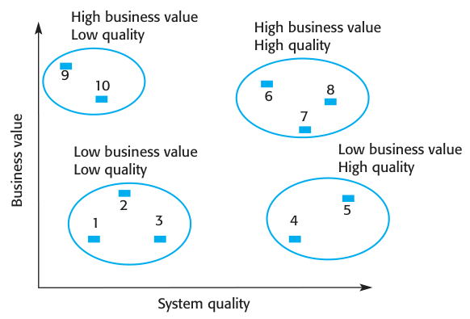
| Quadrant (cluster)所属象限（聚类） | Reasoning评估依据 | Strategy推荐策略 |
|---|---|---|
| Low quality, low value低质量、低价值 | Costly to keep running while yielding little business benefit运维烧钱多、业务回报极低 | Scrap直接废弃 |
| Low quality, high value低质量、高价值 | Indispensable to the business yet painfully expensive to change业务离不开但极难维护、成本居高不下 | Reengineer (or replace if an affordable COTS package fits)再工程翻新（若有高性价比现成替代品亦可替换） |
| High quality, low value高质量、低价值 | Cheap to maintain cleanly; not worth rewriting despite modest payoff自身健壮且改起来便宜，留着用不吃亏；但价值低不值得大投替代 | Keep on normal maintenance while cheap; scrap if major costly changes ever become forced常规维护凑合用，日后若逼出高昂改造或换硬件需求再废弃 |
| High quality, high value高质量、高价值 | Business-critical and already healthy; transformation adds risk without gain既关键又健康，完全不必盲目大改折腾 | Normal maintenance保持常规维护 |
Real-world choices also face organizational and budget constraints: after mergers the stronger party often imposes its own systems; mandatory hardware refreshes force replacement; and tight capital budgets frequently leave organizations stuck maintaining poor-quality systems longer than ideal.现实决策往往还参杂政治与预算现实：企业并购后常保留强势一方的系统；机房硬件强制换代会倒逼提前淘汰；若缺转型预算，即便长期维护更烧钱也只能先硬撑着维护。
Practice练习
Q1. (Classify) Five legacy systems are scored 0–10 on technical quality and business value (\(\ge 5\) counts as high):Q1.（分类决策）五个遗留系统在质量与业务价值上的 0–10 评分如下（\(\ge 5\) 视为高）：
| System系统 | A | B | C | D | E |
|---|---|---|---|---|---|
| Quality技术质量 | 3 | 2 | 8 | 9 | 4 |
| Business value业务价值 | 2 | 8 | 3 | 9 | 7 |
Assign each system to its quadrant and recommend an action.将各系统归入对应象限，并提出处理策略。
Answer
- A (Q=3, V=2 — low/low): Scrap—high upkeep with negligible business return.A（双低）： 废弃——费钱少产。
- B (Q=2, V=8 — low quality, high value): Reengineer (or replace via COTS if suitable).B（低质高值）： 再工程（若有匹配成熟商品套件可替换）。
- C (Q=8, V=3 — high quality, low value): Maintain routinely while cheap; scrap if expensive changes arise.C（高质低值）： 继续常规维护，若未来需高昂改造再废弃。
- D (Q=9, V=9 — high/high): Retain with normal maintenance—no disruptive transformation needed.D（双高）： 保留并常规维护即可，切忌画蛇添足大折腾。
- E (Q=4, V=7 — low quality, high value): Reengineer (or replace); alongside B, E is a prime reengineering target.E（低质高值）： 再工程（或替换），与 B 同属重点翻新对象。
Q2. (Evaluate) A university registration system runs only at the start of each academic year, so a consultant proposes scrapping it due to low usage. Evaluate this claim.Q2.（评价分析）某高校选课注册系统仅每学年开学启用几天，咨询顾问以“使用率极低”为由建议将其废弃。请评价此建议。
Answer
Flawed recommendation. Usage frequency alone confuses activity with business criticality: without enrollment, students cannot matriculate, so organizational dependence on its outputs makes its business value high. Value assessment must check all four factors (use, process support, dependability, outputs); low usage signals low value only when outputs can be cheaply obtained elsewhere (as with an unused internal travel portal).该建议站不住脚。 把“使用天数少”等同于“业务价值低”是典型误区：新生注册虽属低频操作却牵系整学年办学运转，一旦缺席便无法入学，业务价值极高。评估价值必须综合使用、过程支撑、可信性及输出可替代性四个方面——唯有输出轻易能在别处平替时，低频系统才算真低价值。
易错：用得少 ≠ 价值低，核心看业务对其输出的刚性依赖度。
Q3. (Explain) How can failing support software force replacement of a well-written application?Q3.（简答）为什么哪怕应用代码本身写得尚可，底层支撑软件出问题也可能迫使企业不得不替换整个系统？
Answer
Every application relies on its OS, compilers, utilities, and database engine. When support software goes unsupported—losing security patches, lacking compilers on new hardware, crashing frequently, costing steep legacy licenses, or failing to interface with modern APIs—the application eventually cannot run safely on current infrastructure and must be partly or wholly replaced.应用系统依托操作系统、编译器、工具库和数据库运行。一旦支撑软件原厂停服断更，安全漏洞长期敞口、新硬件找不到对应编译器、频繁崩溃或授权费暴涨、与外部新系统无法互通，即便应用层源码质量尚可，也会因底座报废而被迫全部或部分替换。
Software maintenance ★★★软件维护
Goal. State the three maintenance categories and their effort shares, explain four reasons maintenance costs more than new development, interpret process metrics for maintenance prediction, and compute cyclomatic complexity.目标。 掌握三类软件维护及其工作量占比，说明维护比新开发成本更高的四个原因，利用过程度量预测可维护性，并计算圈复杂度。
Step 1: three types of maintenance第 1 步：三种维护类型
Core idea: post-delivery maintenance spans fixing faults, adapting to changed environments, and—biggest of all—adding or changing functionality.核心思路：交付后维护涵盖修复缺陷、适配变化环境以及增添修改功能，其中功能扩展占绝大部分成本。
| Type维护类型 | Purpose核心目的 | Cost note成本特征 |
|---|---|---|
| Fault repair（缺陷修复） | Eliminate coding, design, requirements defects, and vulnerabilities修复代码、设计与需求缺陷及安全漏洞 | Coding bugs are cheap; design defects require multi-component rewrites; requirements defects trigger costly redesign代码错误最便宜；设计错误牵涉重写多个构件；需求错误往往引发大面积返工最昂贵 |
| Environmental adaptation（环境适应） | Adjust software to new hardware, OS, or middleware platforms适配新硬件、新操作系统或支撑软件变动 | Triggered whenever external infrastructure evolves只要外部运行环境变动就不得不改 |
| Functionality addition（功能增加） | Support new or shifting organizational and user requirements响应组织或业务变化带来的新功能诉求 | Change scale is typically far larger than repairs or ports改动体量通常远超一般修错与环境移植 |
In practice these boundaries blur: porting to a new platform frequently exposes features, while "bugs" often stem from unanticipated usage better resolved by adjusting functionality. Classical literature labels these corrective (fault repair), adaptive, and perfective maintenance—plus optional preventive maintenance (e.g., refactoring to forestall future trouble)—so clarify which convention you follow.实际工作中三者界限往往交叠：适配新平台常顺带扩充功能，用户按未预料方式操作引发的异常也常须调整业务逻辑才能根治。经典术语常称之纠错性（corrective）、适应性（adaptive）与完善性（perfective）维护，有时另加预防性（preventive）维护（如重构），答题时宜说明口径。

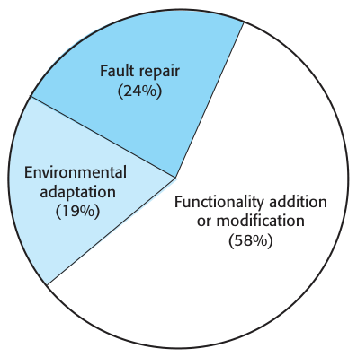
Crucially, bug fixing is not the dominant share (these rounded percentages sum to 101%); adding and changing features consumes nearly three-fifths of maintenance spend.值得注意的是，修缺陷绝非最大开销（上述数字四舍五入后总计 101%）；增添与修改功能独揽近六成维护费用。
Step 2: why maintenance costs more than development第 2 步：为什么维护比新开发成本更高
Core idea: adding a feature post-delivery costs more than building it initially because original authors have dispersed and contractors lack incentives to build easily maintainable code.核心思路：上线后再改一处，代价常高于开发期顺手写出——根源在于原班人马散尽，且开发商没有动力把代码写得好改。
| Reason原因 | Classic factor教材经典因素 | Why深层解释 |
|---|---|---|
| 1. New team must learn the code1. 新团队必须重新理解代码 | Team stability团队稳定性 | Original builders moved on; maintainers must reverse-engineer design rationale before safe edits原开发团队已解散，接手者得先费时费力搞懂设计初衷与隐藏约束 |
| 2. Zero incentive for maintainability2. 缺乏可维护性激励 | Contractual responsibility合同责任划分 | Separate build and maintenance contracts leave builders unrewarded for clean design, encouraging shortcuts开发与维护由不同合同或不同厂商承接，开发方写得再好改也不加钱，反而偷工减料赶工期 |
| 3. Maintenance is unpopular3. 维护不受重视 | Staff skills人员技能分布 | Low organizational prestige pushes maintenance onto junior staff who may also struggle with legacy languages运维地位偏低，常塞给经验最浅的新人去接盘还要硬啃过时语言 |
| 4. Structure decays with age4. 结构随年龄持续退化 | Program age and structure程序年限与结构 | Successive patches erode modularity; lost docs, legacy optimizations, and weak CM slow every edit多轮补丁不断腐化模块结构，加上缺文档与版本混乱，改一处愈发举步维艰 |
Factors 1–3 stem from splitting development and maintenance into separate organizational silos; treating software as continually evolving with equal prestige fixes them long term, while factor 4 is directly tackled via reengineering and refactoring (Section 8.6).前三条归根结底属于组织割裂问题，出路在于把开发与维护视为一体化持续演进并给予同等重视；只有第 4 条属于技术退化，恰可通过第 8.6 节的再工程与重构直接缓解。
Step 3: maintenance prediction第 3 步：维护预测
Core idea: maintenance prediction combines architectural volatility indicators with four live process metrics to forecast change hotspots and rising support cost.核心思路：维护预测一面看架构界面与易变需求，一面紧盯四项日常过程指标，在彻底失控前预警成本飙升。
Maintenance prediction integrates three connected forecasts:维护预测包含前后衔接的三项预判，前两项共同支撑第三项预算规划：
- Predicting changes: count interface complexity, volatile requirements likely to shift, and linked business processes to see where change requests will cluster.预测变更分布： 通过接口数量与复杂度、易变需求数目以及支撑的业务流程数，预判哪里将频繁来单。
- Predicting maintainability: estimate per-component change cost from internal complexity—and monitor four post-release process metrics.预测可维护性： 先凭构件复杂度估算改动难易，上线后重点监控四项过程指标。
- Predicting costs: combine change volume and maintainability trends with historical data to budget next-year and lifecycle spend.预测年度及寿命成本： 将变化频度、维护难度与历史经验结合，核算经费预算。
| Process metric过程度量指标 | A rising trend indicates数值持续攀升的信号含义 |
|---|---|
| Number of corrective maintenance requests纠错性维护请求数 | More faults are being injected during edits than resolved改代码时新引入的 bug 比修掉的还多 |
| Average time for impact analysis影响分析平均耗时 | Coupling worsened so each change ripples through more components耦合度升高，每次小改动波及的构件越来越多 |
| Average time to implement a change request变更实现平均耗时 | Editing code, docs, and tests after impact analysis is growing harder定位影响后实际改代码、测试并同步文档越来越吃力 |
| Number of outstanding change requests待处理变更请求积压数 | Work queue backlog is compounding as maintainability drops需求处理速度追不上来单速度，积压雪球越滚越大 |
When all four process metrics climb together across releases, maintainability is actively deteriorating.当上述四项指标连续几个季度齐头并涨时，就是系统可维护性亮红灯的铁证。
Step 4: cyclomatic complexity第 4 步：圈复杂度
Core idea: cyclomatic complexity counts independent execution paths through a component—simply decision points plus one for a single function.核心思路：圈复杂度衡量函数控制流中的独立路径总数——单入口函数的速算口诀是“分支判定点总数加一”。
For example, a function with one if and one while has two decisions, giving \(V = 2 + 1 = 3\); values well above 10 warrant splitting into simpler units.比如含 1 个 if 和 1 个 while 的函数有 2 个判断点，于是 \(V = 2 + 1 = 3\)；一旦显著高出 10，就应拆分重构。
Practice练习
Q1. (Classify & calculate) (a) Match each task to fault repair, environmental adaptation, functionality addition, or preventive maintenance and state its classical name: (i) fixing a rounding bug in tax math; (ii) porting to a new OS release; (iii) adding mobile ordering; (iv) splitting a 600-line method without altering behavior. (b) On a $2.5M annual maintenance budget using typical shares, how much goes to fault repair vs functionality addition?Q1.（分类与计算）（a）判断下列任务分别属于哪种维护（附传统称谓）：（i）修正计税舍入错误；（ii）移植到新版操作系统；（iii）新增移动端下单界面；（iv）在不改变行为前提下拆分 600 行长方法。（b）若年维护预算 $2.5M，按典型比例各分配多少给缺陷修复与功能增添？
Answer
- (a) Classification: (i) Fault repair (corrective); (ii) Environmental adaptation (adaptive); (iii) Functionality addition (perfective / enhancement); (iv) None of the big three—it is refactoring / preventive maintenance. Note that real tasks overlap (OS ports often bundle features).(a) 归类：（i）缺陷修复（纠错性）；（ii）环境适应（适应性）；（iii）功能增添（完善性 / 增强）；（iv）属重构 / 预防性维护（实践中跨平台常夹带新功能，彼此重叠）。
- (b) Budget split: Fault repair = \(0.24 \times \$2.5\text{M} = \mathbf{\$0.60\text{M}}\); Functionality addition = \(0.58 \times \$2.5\text{M} = \mathbf{\$1.45\text{M}}\) (adaptation \(\approx \$0.48\text{M}\); rounded percentages sum to 101%). Over half the budget pays for new/modified capabilities.(b) 预算划分： 缺陷修复 = \(0.24 \times 2.5 = \mathbf{\$0.60\text{M}}\)；功能增添 = \(0.58 \times 2.5 = \mathbf{\$1.45\text{M}}\)（环境适应约 $0.48M，取整比例和 101%）。可见逾半资金流向新增与改造功能。
Q2. (Interpret) Quarterly maintenance data:Q2.（趋势解读）某系统季度维护观测指标如下：
| Quarter季度 | Corrective requests纠错性维护请求 | Impact analysis (hours)影响分析（小时） | Implementation (days)实现（天） | Outstanding requests未处理请求 |
|---|---|---|---|---|
| Q1 | 40 | 6 | 3 | 25 |
| Q2 | 46 | 7 | 3 | 31 |
| Q3 | 55 | 9 | 4 | 44 |
| Q4 | 63 | 12 | 6 | 70 |
What do these numbers reveal about maintainability, and how should the team respond?这组数据说明可维护性处于什么走势？团队应当如何应对？
Answer
Between Q1 and Q4, corrective requests jumped 57.5% (\(40 \to 63\)), impact-analysis duration doubled (\(6 \to 12\text{ h}\)), implementation doubled (\(3 \to 6\text{ d}\)), and backlog swelled \(2.8\times\) (\(25 \to 70\)). All four indicators worsen together, proving falling maintainability (edits introduce new faults and touch wider component webs). The team should target the most fault-prone/frequently changed components for refactoring or reengineering before stacking on new features.Q1 至 Q4 间，纠错请求飙升 57.5%（40→63），影响分析翻倍（6→12 h），修改实现翻倍（3→6 天），积压单暴增 2.8 倍（25→70）。四项指标全线飘红，清楚表明可维护性持续衰退。团队应在继续堆新需求前，先锁定缺陷与变更最密集的核心构件实施重构或再工程。
思路：四指标同升 = 可维护性亮红灯，先治本清理再加功能。
Q3. (Extension) Compute the cyclomatic complexity of the snippet below (a) by counting decision points and (b) via its control-flow graph (\(E - N + 2P\)), then interpret the score:Q3.（计算拓展）用（a）统计判断点法和（b）控制流图公式 \(E - N + 2P\) 两种方式求下面代码的圈复杂度，并评价其结果：
count = 0
while n > 0:
if n mod 2 = 1 and n > 10:
count = count + 1
n = n - 1
return count
Answer
- (a) Decision-point shortcut: three decisions—
while,if, and the compound booleanand—yield \(V = 3 + 1 = \mathbf{4}\).(a) 判断点速算： 含while、if以及短路的and复合判定共 3 个判断点，故 \(V = 3 + 1 = \mathbf{4}\)。 - (b) Control-flow graph: \(N = 7\) nodes (
init,while,n mod 2 == 1,n > 10,count += 1,n -= 1,return) and \(E = 9\) edges (init→while,while→test1,while→return,test1→test2,test1→n-=1,test2→count+=1,test2→n-=1,count+=1→n-=1,n-=1→while), with \(P=1\) → \(V(G) = 9 - 7 + 2(1) = \mathbf{4}\).(b) 控制流图公式： 共 \(N = 7\) 个节点（初始化、while 判定、test1、test2、count+1、n-1、return）与 \(E = 9\) 条有向边（含循环回边），\(P=1\) → \(V(G) = 9 - 7 + 2 = \mathbf{4}\)。 - Interpretation: path coverage requires at least 4 test cases, and \(V = 4\) sits comfortably below the maintainability threshold of 10.结果解读： 达到全路径覆盖至少需要 4 条测试用例；\(V = 4\) 远低于警戒线 10，模块清晰易维护。
Reengineering and refactoring ★★★再工程与重构
Goal. Define reengineering and refactoring, outline the five reengineering activities, diagnose common bad smells with their fixes, and compare the two approaches.目标。 区分再工程与重构，掌握再工程的五项活动，识别常见代码异味及对应重构手法，并比较二者差异。
Step 1: reengineering第 1 步：再工程
Core idea: reengineering applies large-scale, mostly automated clean-up to revitalize a degraded legacy system while keeping external behavior intact.核心思路：再工程对已明显老化的遗留系统借助工具做大规模“大修翻新”，改善结构与文档的同时保持对外功能不变。
Years of speed optimizations and ad-hoc patches make legacy software hard to read and risky to change. Software reengineering（软件再工程）revives such systems—redocumenting design, translating legacy code to modern languages, simplifying control flow, and cleaning data—while avoiding changes to user functionality or radical architectural overhauls. Compared with building a brand-new replacement, reengineering delivers lower risk (avoiding lost specs) and lower cost.多年积弊让老系统极其晦涩难改，软件再工程通过补全文档、翻译现代化语言、理顺控制流、模块化乃至清洗数据让它重获可维护性，通常尽量不改动业务功能和大架构。相较推倒重来，它具备风险更低与花费更少两重明显优势。

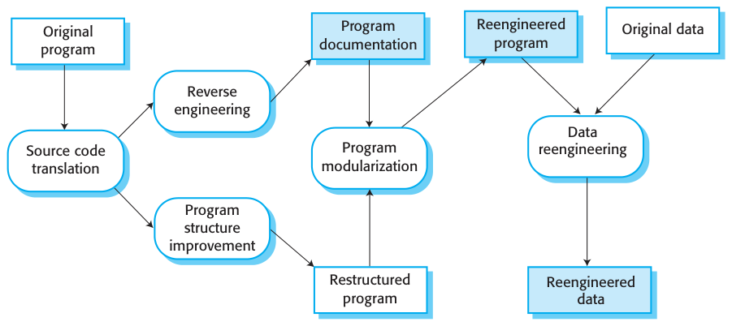
Up to five reengineering activities take a legacy system as input and yield a cleaner, redocumented counterpart:完整再工程流程通常包含五项递进活动：
| # | Activity活动名称 | What it does核心作用 | Automation自动化程度 |
|---|---|---|---|
| 1 | Source code translation源代码翻译 | Converts source to a newer dialect of the same language or a modern language将旧语法或冷门语言转译为同一语言的现代版或主流新语言 | Automated via tools主要靠工具自动转换 |
| 2 | Reverse engineering（逆向工程） | Extracts design architecture and specification summaries directly from source code从现有源码反向抽取出架构组织、模块依赖与规格说明文档 | Usually fully automated通常高度自动化 |
| 3 | Program structure improvement程序结构改进 | Analyzes and cleans tangled control flows (e.g., removing gotos) for readability理顺控制流、消除跳转 spaghetti 代码，提升可读性 | Partly automated + manual review部分自动 + 少量人工核改 |
| 4 | Program modularization程序模块化 | Groups related routines and strips redundancy; may refactor multiple data stores into a shared repository归并同类模块、剥除冗余，甚至整合分散存储库做局部体系结构重构 | Largely manual主要靠人工设计整理 |
| 5 | Data reengineering数据再工程 | Updates schemas, converts databases, corrects invalid entries, and deduplicates records重构数据模式、迁移转库、纠错及合并重复脏数据 | Very expensive and prolonged费钱费时且最易拖长工期 |
Not every project runs all five steps: omit translation when staying in the same language, skip reverse engineering when transforms are fully automated, and defer data reengineering unless schemas must evolve. Afterwards, adaptor services（适配器服务）can wrap legacy entry points with clean modern interfaces.具体项目无需僵化全做：语言不换则省去翻译，全流程自动化可跳过人工逆向，数据结构不变就不动数据再工程。翻新之后还可用适配器服务在旧接口外侧加一层清爽的现代门面接口。

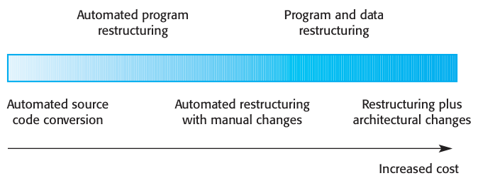
Cost rises sharply with depth—from cheap automated language conversion to expensive architectural restructuring. Crucially, reengineering has clear limits: automated tools cannot convert procedural code into true object-oriented designs or automatically scrub corrupted databases, so a reengineered system rarely reaches the maintainability of a system written cleanly from scratch.投入成本随深度逐级飙升——最便宜是自动翻译，最贵则是动及体系结构与数据库模式。同时再工程能力存在天花板：工具既无法凭空把过程式代码变成优雅面向对象设计，也不能全自动清洗历史脏数据，因此翻新系统虽可用且省钱，长期维护性通常还是比不上全新设计的现代系统。
Step 2: refactoring第 2 步：重构
Core idea: refactoring continually improves internal code cleanliness in small, behavior-preserving increments guarded by regression tests—acting as everyday preventive maintenance.核心思路：重构是在不改变对外行为的前提下，依托回归测试保障，平时顺手小步整理代码、预防腐化。
Introduced earlier alongside agile practice (Section 2.3), refactoring（重构）cuts complexity and boosts readability across both OO and non-OO languages, slowing Lehman's second law (increasing complexity). Running automated regression suites immediately after each tiny step proves behavior stays intact.无论是否使用面向对象语言，重构都能降低复杂性、提高代码可读性，是抵御架构持续腐化的日常“预防性维护”（第 2.3 节）。每次微调后立刻跑自动化回归测试，一旦改坏功能当场亮红灯，从而保证零恐惧持续优化。
Martin Fowler's classic bad smells（代码异味）signal spots begging for refactoring:Martin Fowler 总结了五个最常见的代码异味及其典型治本手段：
| Smell代码异味 | Symptom典型表现 | Typical fix常用重构对策 |
|---|---|---|
| Duplicate code重复代码 | Same or nearly identical logic copied across multiple places相同或极其相似的逻辑散落各处复制粘贴 | Extract into a single shared method提取方法（Extract Method）统一调用 |
| Long methods过长方法 | One bloated method handles too many distinct steps一个大方法包揽过多杂事、动辄数百行 | Split into small, focused helper methods拆分为职责单一的一组短方法 |
| Switch (case) statementsSwitch 分支蔓延 | Duplicated type-code branching scattered over many methods围绕同一类型标识到处写重复 switch 判断 | Replace conditionals with polymorphism改用子类继承与多态分派 |
| Data clumping数据泥团 | Same bundle of fields or parameters repeatedly travelling together固定几个字段或参数总成群结队在参数列表里晃 | Encapsulate the bundle into its own parameter/domain object封装成一个专门对象打包传递 |
| Speculative generality过度泛化 | Unused hooks, abstractions, or parameters kept "just in case"打着“以后可能用得到”旗号留下的多余抽象和死参数 | Delete the speculative extra layers cleanly果断删减简化 |
Three everyday primitive refactorings（基本重构）are: (1) Extract method (pull repeated logic into one helper); (2) Consolidate conditional expression (merge scattered checks into one condition); and (3) Pull up method (lift identical subclass methods into the superclass). Below, extracting withTax() leaves behavior identical while leaving a single edit point if tax rates change:三种核心基本重构手法为：① 提取方法；② 合并条件表达式；③ 上移方法（将子类共有方法提入超类）。下例提取 withTax() 后，业务行为丝毫不差，今后调税率却只需改一处：
// Before: the same tax calculation appears twice
double invoiceTotal(double net) { return net + net * 0.2; }
double quoteTotal(double net) { return net + net * 0.2; }
// After: Extract method. One place to change.
double withTax(double net) { return net + net * 0.2; }
double invoiceTotal(double net) { return withTax(net); }
double quoteTotal(double net) { return withTax(net); }
When structural rot runs too deep for local tidy-ups, teams must perform heavier design refactoring—reorganizing code around established design patterns (Chapter 6) at substantially higher cost.一旦代码架构彻底腐坏、局部小修已难挽回，就必须付出更高代价实施设计重构——引入第 6 章的设计模式重塑类间关系。
Step 3: reengineering versus refactoring第 3 步：再工程 vs 重构对比
| Reengineering再工程 | Refactoring重构 | |
|---|---|---|
| When时机 | Reactive—after years of decay push maintenance costs too high事后抢救：长期维护退化、成本高企之后发起专项 | Proactive & continuous throughout development and evolution事前预防：贯穿研发与演进全周期持续顺手开展 |
| Aim目标 | Rescue an aged legacy system into a maintainable state拯救落后遗留系统恢复可维护性 | Prevent structure and code degradation from accumulating防微杜渐，从源头延缓代码和结构腐化 |
| Means手段 | System-wide automated tools (translation, redocumentation, data migration)借工具针对系统全局转译、提取文档、重组与数据清理 | Small behavior-preserving programmer edits backed by IDE tools and regression suites靠程序员借 IDE 与回归测试保护小步局部梳理 |
| Common ground共同本质 | Both boost understandability and changeability; neither adds new user-facing features二者都旨在让代码更易懂易改，且都不增添任何新业务功能 |
Practice练习
Q1. (Select) A team reengineers a 20-year-old C system: the programming language and database schema stay unchanged, while restructuring is manual because no refactoring tool covers this legacy dialect. Which of the five reengineering activities are required?Q1.（分析筛选）某团队对 20 年老旧 C 语言系统做再工程，语言和数据库模式均保持不变，且无现成工具需大量手工整理。五项再工程活动中哪些必不可少？
Answer
Omit source code translation (C stays C) and data reengineering (schemas stay unchanged). Three activities are needed: reverse engineering (to recover architecture and undocumented behavior since docs are weak and transforms are manual), program structure improvement (partially manual control cleanup), and program modularization (manual grouping and deduplication).省去源码翻译（语言不变）与数据再工程（模式不变）。真正必须开展三项：逆向工程（手工梳理文档薄弱的旧代码前必须先还原结构与意图）、程序结构改进（手工+半自动精简控制流）以及程序模块化（人工归并职责并去冗余）。
Q2. (Design) A subsystem has low technical quality yet high business value and runs continuously for front-office staff. Outline a low-disruption reengineering plan.Q2.（方案设计）一个低质量高价值的业务核心子系统全天服务前台员工。请设计对现场运营扰动最小的再工程实施方案。
Answer
Wrap first, then modernize incrementally behind the facade: build an automated regression baseline, place adaptor services in front to freeze external contracts, restructure/modularize highest-defect modules step by step without adding features or changing macro-architecture, shadow-test old and new builds in parallel, cut over off-peak with rollback ready, and schedule isolated data reengineering last.先封装、后增量：先建回归基线测试网 → 用适配器服务锁住对外稳定接口 → 按缺陷热点逐模块翻新重组（不乱加功能、不动主架构）→ 新旧并行影子比对 → 低峰期带回滚预案分批切换，把最重的数据模式清洗留到最后单独完成。
思路：包装隔接口 → 回归兜底 → 逐模块迭代 → 影子并跑 → 数据殿后。
Q3. (True/false) Justify each statement:Q3.（辨析判断）说明理由：
- (a) Reengineering adds new functionality while restructuring code.(a) 再工程在整理结构的同时也会增添新功能。
- (b) Refactoring is applicable only in object-oriented languages.(b) 重构只适用于面向对象程序。
- (c) A reengineered system equals a brand-new build in maintainability.(c) 再工程后的系统可维护性与全新开发的系统完全相当。
Answer
- (a) False: reengineering strictly preserves external functionality.(a) 错误： 再工程保持对外行为功能不变。
- (b) False: extracting procedures, simplifying conditionals, and renaming apply across procedural and functional code too.(b) 错误： 提取子过程、化简条件与清理冗码在各种编程范式下都适用。
- (c) False: automated transforms cannot convert procedural designs into modern OO/layered architectures or radically fix data layouts, leaving maintainability below greenfield code.(c) 错误： 工具没法自动把过程式设计变身现代分层面向对象架构，翻新产物的可维护性通常低于现代全新开发系统。
Terms to recognise ★核心辨识术语
| Term术语 | What to know考试要点 |
|---|---|
| Brownfield development（棕地开发） | Engineering and maintaining software constrained by integrations with existing operational systems, where edits can force cascading changes围绕并依赖众多既有运行系统展开的新建与改造工程，变动极易引发连环适配修改 |
| Technical debt（技术债务） | Expedient design or code shortcuts that save effort today at the price of extra overhead on every subsequent edit until repaid用眼前偷工省事换来的隐形欠债——在后续偿还清理前，每次改代码都要多交“利息” |
| Evolutionary replacement渐进式替换 | Replacing major legacy subsystems incrementally with COTS/new modules while continuing to reuse stable neighbors用现成包或新模块逐块替换核心老子系统，同时留用尚可运作的其他构件 |
| COCOMO 2 (maintenance)COCOMO 2 维护成本模型 | Cost model estimating maintenance effort from the cost of understanding existing code combined with new change development effort成本估算模型，综合“读懂旧代码的开销”与“编写新改动的工作量”预测总维护工作量 |
| Wrapper / legacy wrapping包装器 / 遗留系统封装 | Adaptor services hiding outdated interfaces behind clean modern service facades—foundational to service reuse (Chapter 12)在老系统外加一层现代适配器接口隐蔽内部杂乱实现，也是构建粗粒度服务的关键手段（第 12 章） |
Exam-style questions考试题型练习
Q1. (Process, 10 marks)Q1.（过程机制，10 分）
- (a) Describe the steps of the standard software evolution process and name the three kinds of change implementation. (4 marks)(a) 简述标准软件演化闭环过程，并列出三类变更实现。（4 分）
- (b) A severe vulnerability surfaces in production. Outline the emergency repair sequence, explain how it harms long-term maintainability, and state the mandatory follow-up steps. (6 marks)(b) 线上暴露严重安全漏洞。描述紧急修复流程、说明其如何伤害长期健康度，并指出事后必须采取的补救动作。（6 分）
Answer
- (a) Evolution loop & change types: triggered by change requests → impact analysis estimates cost and affected component share → release planning prioritizes fixes/ports/enhancements for the next version → change implementation (preceded by program understanding for unfamiliar teams, covering fault repair, platform adaptation, and system enhancement, plus doc updates) → system release repeats the loop.(a) 演化循环与变更类型： 变更请求触发 → 影响分析评估波及构件与成本 → 发布规划筛选排入下一版 → 变更实现（陌生团队先做程序理解，落实故障修复、平台适应、系统增强三类改造并更新文档） → 系统发布后闭环重开。
- (b) Emergency repair & cleanup:
- Urgent path: change request → analyze source code → modify source code → release immediately, skipping spec/design revisions in favour of fast relief.紧急路径： 变更请求 → 直析源码 → 速改源码 → 立即上线（跳过需求设计只求止血）。
- Harm: specs, design, and code go permanently out of sync (new emergencies displace paperwork) while crude shortcuts accelerate software ageing, inflating future change costs.危害： 文档与源码长期分裂（总有下一次急诊挤掉补文档排期），临时硬编码则加速软件老化、推高日后变更代价。
- Mandatory cleanup: once stable, refactor and seek a clean long-term fix, then update requirements, design models, and regression suites.事后补救： 局势稳住后立刻重构粗糙补丁、寻求更佳方案，并把规格、设计与测试回归体系全面拉齐。
思路：(a) 五步闭环 + 三变更；(b) 跳文档 → 脱节老化 → 事后重构补齐。
Q2. (Scenario, 12 marks) A bank operates a 25-year-old COBOL mainframe system; original developers retired and specifications are lost. The CIO wants a packaged replacement within 18 months.Q2.（情景决策，12 分）某银行仍运行一套 25 年历史的 COBOL 大型机核心系统，原始开发已退休且规格书丢失，CIO 提议 18 个月内采购通用产品一举替换。
- (a) Explain why the system is a socio-technical system and list its six elements. (3 marks)(a) 阐明它为何属于社会技术系统，并列出六大要素。（3 分）
- (b) Give four reasons why full replacement is expensive and risky. (4 marks)(b) 说明直接完全替换昂贵且高风险的四点原因。（4 分）
- (c) Given high business value and low technical quality, recommend and justify a strategy, naming two application-assessment factors you would inspect. (5 marks)(c) 若评估判定其高业务价值、低技术质量，请建议并论证应采纳的策略，同时指出两项待核查的应用层面评估因素。（5 分）
Answer
- (a) Socio-technical nature: it binds mainframe hardware, OS/compilers/DB (support software), COBOL code (application software), customer/account records (application data), staff workflows like account opening and settlements (business processes), and credit/interest compliance (business policies & rules)—six coupled layers where changing one perturbs the others.(a) 社会技术系统： 该资产不止 COBOL 程序本身，更将大型机系统硬件、操作系统/编译器/库等支撑软件、应用软件、海量账务数据、柜面清算等业务过程以及利息授信等业务政策规则紧锁为六层耦合体，动软件必牵全局。
- (b) Replacement risks: (1) lost specification prevents writing an exact clone spec; (2) banking workflows are entrenched around legacy behavior and change unpredictably; (3) critical interest/credit business rules live only in COBOL code and risk catastrophic omission; (4) large greenfield IT projects face severe delay/overrun risk—especially under an 18-month deadline.(b) 替换四大风险： ① 原始规格散失导致新系统需求极易漏项；② 行内操作流程高度迁就旧系统，换轨协调成本不可测；③ 核心利息风控规则深埋老源码，丢失将触发严重资损；④ 大型新建替换工程天生高发延期与超支，18 个月工期尤为凶险。
- (c) Strategy & factors: recommend reengineering behind stable interface wrappers (reverse engineering, structure cleanup, modularization, data cleansing)—never scrapping a business-critical core, and replacing only if a well-vetted COTS system provably fits at acceptable risk (noting reengineering delivers lower risk/cost yet stops short of brand-new maintainability). Inspect application factors such as source understandability, documentation state, data consistency, and COBOL staffing availability.(c) 策略推荐与评估项： 首选套壳再工程（逆向梳理文档、改良结构、模块化并清洗数据，绝不可弃用核心；仅在确有契合现成套件且风险可控时考虑替换），在更低成本风险下挽救可维护性（但产物仍不及全新系统易改）。重点核查的应用因素如：代码可理解性、文档残缺程度、数据清洁度、COBOL 技师可及性。
思路：六要素立住“社会技术体” → 四条替换险 → 高价值低质量选再工程并带应用评估指标。
Q3. (Calculation, 10 marks) Maintaining a legacy system costs $1.2M/yr. Option R (replace): $4.5M upfront + $0.45M/yr. Option E (reengineer): $1.5M upfront + $0.6M/yr.Q3.（定量分析，10 分）现有遗留系统年维护费 $1.2M。方案 R（替换）： 一次性 $4.5M + 年运行 $0.45M。方案 E（再工程）： 一次性 $1.5M + 年维护 $0.6M。
- (a) Compute break-even years for Option R and Option E relative to keeping status quo. (4 marks)(a) 计算两种方案相对维持现状的盈亏平衡时间。（4 分）
- (b) Compare 10-year total cost for status quo, Option R, and Option E. (3 marks)(b) 计算维持现状、方案 R 与方案 E 的十年累计总成本。（3 分）
- (c) Recommend an option and state two non-financial factors. (3 marks)(c) 给出推荐方案并列出两项非财务考量。（3 分）
Answer
- (a) Break-even times via \(t_{\text{BE}} = C / (m_{\text{old}} - m_{\text{new}})\):
- Option R: \(4.5 / (1.2 - 0.45) = 4.5 / 0.75 = \mathbf{6\text{ years}}\).方案 R： \(4.5 / (1.2 - 0.45) = 4.5 / 0.75 = \mathbf{6\text{ 年}}\)。
- Option E: \(1.5 / (1.2 - 0.6) = 1.5 / 0.6 = \mathbf{2.5\text{ years}}\).方案 E： \(1.5 / (1.2 - 0.6) = 1.5 / 0.6 = \mathbf{2.5\text{ 年}}\)。
- (b) 10-year cumulative cost: Status quo = \(10 \times 1.2 = \mathbf{\$12.0\text{M}}\); Option R = \(4.5 + 10 \times 0.45 = \mathbf{\$9.0\text{M}}\); Option E = \(1.5 + 10 \times 0.6 = \mathbf{\$7.5\text{M}}\).(b) 十年总开销： 不作为 = $12.0M；方案 R = \(4.5 + 4.5 = \mathbf{\$9.0\text{M}}\)；方案 E = \(1.5 + 6.0 = \mathbf{\$7.5\text{M}}\)。
- (c) Recommendation & non-financial trade-offs: choose Option E—shortest payback (2.5 yr) and lowest 10-year spend ($7.5M); Option R costs $3.0M extra upfront to save only $0.15M/yr over Option E, needing \(3.0 / 0.15 = 20\text{ years}\) to catch up. Non-financial considerations: Option R incurs severe specification/business-rule loss and workflow disruption risks, whereas Option E preserves functionality yet leaves maintainability below a fresh build—and won't work if aging hardware forces a full platform switch.(c) 推荐结论与非财务因素： 推荐方案 E（再工程）——仅 2.5 年回本且十年最省（比现状省 $4.5M）；方案 R 多砸 $3.0M 每年才多省 $0.15M，需 \(20\) 年方能反超。非财务考量：① 替换面临规格缺失、隐含规则遗漏及业务流程重整风险；② 再工程虽保留原有逻辑，但可维护性仍不及全新开发，且一旦硬件彻底淘汰就不得不换。
思路：回本 = 建造成本 ÷ 年均节省，再比对十年累计花费与非财务风险。
Q4. (Maintenance, 10 marks)Q4.（软件维护，10 分）
- (a) Name the three maintenance categories with typical effort shares and classical names. (4 marks)(a) 说出维护三大类别、大致比例及传统术语称谓。（4 分）
- (b) Explain four reasons why post-delivery feature additions cost more than initial development. (4 marks)(b) 说明交付后新增功能比开发期更昂贵的四个原因。（4 分）
- (c) Do engineers hold an ethical duty to write maintainable code even unprompted by employers? Briefly argue. (2 marks)(c) 即使雇主并未明确要求，软件工程师是否仍有职业道德义务编写易维护代码？简述观点。（2 分）
Answer
- (a) Three overlapping categories: fault repair (corrective) ~24% (bugs/vulnerabilities); environmental adaptation (adaptive) ~19% (OS/hardware/platform shifts); and functionality addition/modification (perfective / enhancement) ~58%—proving enhancements, not bug fixes, consume most lifetime cost.(a) 三类（实践中互相交叠）： 缺陷修复（纠错性）约 24%；环境适应（适应性）约 19%；功能增添/改造（完善性）约 58%——这组比例三十年变化甚微，改需求远比修 bug 烧钱。
- (b) Four cost drivers: (1) team stability—new maintainers must learn system design from scratch; (2) contractual responsibility—separate build/support contracts remove incentives for maintainable code; (3) staff skills—low-prestige maintenance falls to junior staff unfamiliar with legacy languages; (4) program age & structure—patch erosion, missing docs, and poor CM slow changes. Note factors 1–3 are organizational while factor 4 is technical.(b) 四大成本动因： ① 团队稳定性（原班撤离、新人读代码成本高）；② 合同责任（建维分离导致开发不愿多花心思写好改）；③ 人员技能（维护地位低、常派新手硬接）；④ 程序年龄与结构（反复修补侵蚀架构且文档残缺）。前三为组织根因，第四为技术根因。
- (c) Ethical duty: yes. Professional codes obligate engineers to deliver durable quality serving future users and maintainers rather than leaving hidden technical debt. Writing clean code, tests, and clear structure costs little upfront while averting steep downstream safety and financial risks.(c) 职业伦理： 应当承担。 工程伦理守则要求对后任维护者与终端公众负责；平时保持代码清晰、写好测试与注释在编写当下成本极低，却能替组织和客户省去日后巨额债务与故障风险，并应主动向雇主揭示取舍代价。
易错：(b) 中前三条属组织与合同症结，第四条才是技术症结。
Q5. (Reengineering and refactoring, 10 marks)Q5.（再工程与重构，10 分）
- (a) Define reengineering and refactoring and contrast two key differences. (3 marks)(a) 分别定义再工程与重构，并比较二者的两处显著不同。（3 分）
- (b) List the five reengineering activities and note which typically run via automation. (4 marks)(b) 列出再工程五项活动，标明各自自动化情况。（4 分）
- (c) Diagnose the bad smell in the snippet below and rewrite it cleanly. (3 marks)(c) 指出下方代码的异味并给出重构后代码。（3 分）
double area(Shape s) {
switch (s.type) {
case CIRCLE: return Math.PI * s.r * s.r;
case RECT: return s.w * s.h;
}
return 0;
}
double perimeter(Shape s) {
switch (s.type) {
case CIRCLE: return 2 * Math.PI * s.r;
case RECT: return 2 * (s.w + s.h);
}
return 0;
}
Answer
- (a) Definitions & contrast: reengineering uses automated tools to restructure, translate, and redocument aged legacy systems without altering functionality; refactoring applies small, continuous, behavior-preserving edits during everyday coding as preventive maintenance. They differ in timing (post hoc overhaul vs continuous upkeep) and mechanism/scope (system-wide tools vs local IDE-assisted programmer steps guarded by tests).(a) 定义与对比： 再工程用工具对老化系统做整体翻新（转译、重组与补文档，功能不变）；重构在日常编码中做连续小步、保持行为不变的结构整理。区别在于时机（事后抢救 vs 全程预防）与范围手段（系统级批量工具处理 vs 程序员借 IDE 与测试小步快跑）。
- (b) Five reengineering activities: (1) source code translation (automated tools); (2) reverse engineering (typically fully automated); (3) program structure improvement (partly automated + manual); (4) program modularization (manual); (5) data reengineering (prolonged and costly schema/data cleanup)—skipping translation or data steps when language/schemas remain unchanged.(b) 五项活动： ① 源码翻译（工具自动）；② 逆向工程（通常全自动）；③ 程序结构改进（半自动+人工）；④ 程序模块化（手工为主）；⑤ 数据再工程（代价极高、耗时漫长）。若语言或库表不变，对应步骤可跳过。
- (c) Bad smell & fix: duplicated switch/case statements on a type code scattered across methods → replace with polymorphism:(c) 代码异味与修复： 基于类型码的重复
switch语句散落多处方法 → 用面向对象多态（Polymorphism）替代：
abstract class Shape { abstract double area(); abstract double perimeter(); }
class Circle extends Shape {
double r;
double area() { return Math.PI * r * r; }
double perimeter() { return 2 * Math.PI * r; }
}
class Rect extends Shape {
double w, h;
double area() { return w * h; }
double perimeter() { return 2 * (w + h); }
}
Callers simply write s.area(), and supporting a new shape needs only a fresh subclass instead of hunting through every switch.此后调用方统一写 s.area()，将来新增图形只需加一个子类，再不用四处找 switch 加分支。
思路：重构 = 小步保行为；见多处同款类型 switch 直接上多态。
Textbook exercises课后习题
Textbook exercises with answers: 10 questions教材习题及答案（共 10 题，点击展开）
E1. (Exercise 9.1) Explain how advances in technology can force a software subsystem to undergo change or run the risk of becoming useless.E1.（课后习题 9.1）说明技术进步如何迫使软件子系统不断演进，否则将面临失效无用的风险。
Answer
Every subsystem operates within a surrounding technical ecosystem—hardware, operating system, libraries, protocols, security baselines, and evolving user hardware. Under Lehman's Law 1 (Continuing change) and Law 7 (Declining quality), failing to move as technology advances degrades both real utility and perceived quality:任何子系统都依托特定技术生态（硬件、操作系统、运行库、协议、安全基线及用户终端）生存。依照 Lehman 第 1 定律（持续变化）与第 7 定律（质量下降），技术环境变了而子系统原地踏步，实用性与感知质量必然滑坡：
- Vendor support ends: once an OS or runtime hits end-of-life (e.g., Windows XP, Python 2), security patches cease, leaving subsystems exposed unless ported (platform adaptation).原厂停服断更： 一旦底座平台（如旧版 OS 或语言运行库）停止维护、停发安全补丁，系统即暴露于漏洞之中，必须移植（平台适应）或退役。
- Broken backwards compatibility: new OS releases, CPUs, or browsers drop legacy APIs/plugins (e.g., Flash deprecation), halting untouched subsystems outright.接口淘汰不兼容： 新硬件、新系统或新浏览器移除老接口或旧插件（如停用 Flash）后，不改代码的子系统直接无法运行。
- Rising user expectations: shifts to mobile touchscreens or cloud workflows abandon desktop/batch-only subsystems unless enhanced.用户交互迁移： 用户全面转向移动端与云协作，只支持传统桌面或批处理的模块若不做系统增强就会遭弃用。
- Modernized security & communication standards: deprecating old TLS ciphers or protocols cuts off interoperability with partner systems.通信与安全标准升级： 旧版 TLS 或协议淘汰后，若不升级便无法与周边合作系统互联互通。
- Adjacent system evolution & skill attrition: peer systems in a system-of-systems upgrade interfaces while expertise in old tooling disappears.周边系统演化与人才断档： “系统之系统”中的邻接系统改了接口，同时熟悉老技术的工程师逐渐退出市场。
Engineering takeaway: delaying adaptation compounds structural decay into legacy debt; isolate platform dependencies behind clean interfaces and upgrade continuously.工程启示： 拖延适配只会把局部改动拖成沉重遗留债；应将平台依赖隔离在稳定接口之后，坚持定期渐进升级。
E2. (Exercise 9.2) The software evolution process consists of change requests, impact analysis, release planning, change implementation (fault repair, platform adaptation or system enhancement) and system release, so impact analysis is an important subprocess. Using a diagram, suggest what activities might be involved in change impact analysis.E2.（课后习题 9.2）影响分析是软件演化过程的关键子过程。请配合流程图说明变更影响分析通常包含哪些活动。
Answer
Impact analysis（影响分析）answers "what must change, what else could break, and what will it cost?" through six sequential activities:影响分析围绕“要改哪里、还会牵连哪里、代价多大”展开，可拆分为六步衔接的活动：
Change request
|
v
+------------------------------+
| 1. Understand and classify | fault, adaptation or enhancement;
| the request | urgency; unclear: ask the requester
+------------------------------+
|
v
+------------------------------+
| 2. Identify the affected | requirements -> design -> code -> tests
| parts of the system | (traceability links, code search)
+------------------------------+
|
v
+------------------------------+
| 3. Analyze dependencies and | calls, shared data, interfaces,
| ripple effects | other systems, hardware
+------------------------------+
|
v
+------------------------------+
| 4. Find what else must be | tests, documents, data,
| updated | user training
+------------------------------+
|
v
+------------------------------+
| 5. Estimate effort, cost, | alternatives; prototype if needed;
| time and risk | share of the system affected
+------------------------------+
|
v
+------------------------------+
| 6. Report and recommend: | impact report with the decision
| accept / reject / defer | for release planning
+------------------------------+
|
v
Release planning
- Understand & classify: confirm fault repair vs adaptation vs enhancement and assess urgency; clarify vague requests upfront.理解与归类请求： 分清是修故障、适配环境还是增功能，判断紧迫度，诉求模糊先退回澄清。
- Identify primary affected artifacts: follow traceability links across requirements, design, source code, and tests to locate core touched components.定位直接受影响部分： 顺着需求—设计—代码—测试的可追溯链条及源码检索，框定核心波及构件。
- Trace dependencies & ripple effects: inspect call graphs, shared data stores, external APIs, peer systems, and hardware links.分析依赖与连锁波及： 顺着调用链、共享数据与外围系统/硬件接口排查间接波及面。
- Scope collateral updates: include test suites, docs, stored data migrations, and user training materials.盘点连带更新项： 涵盖测试用例、需求设计文档、历史数据转换及用户培训。
- Estimate effort, cost, schedule & risk: compare alternatives (using quick prototypes where risky) and quantify percentage of system touched.估算工作量、成本、工期与风险： 必要时做技术原型验证方案，统计波及系统比例。
- Recommend decision: advise release planning to accept, reject, or defer.输出决策建议： 形成影响分析报告提交发布规划，建议采纳、驳回或延期。
Note that rising average impact-analysis time across releases doubles as a key process metric signaling structural coupling decay.此外，影响分析平均耗时不断拉长，本身就是模块耦合加重、可维护性滑坡的重要预警指标。
E3. (Exercise 9.3) Explain why legacy systems should be thought of as sociotechnical systems rather than simply software systems that were developed using old technology.E3.（课后习题 9.3）阐明为何必须把遗留系统视作“社会技术系统”，而非仅仅是用旧技术编写的普通程序。
Answer
A legacy system is a socio-technical system（社会技术系统）spanning six tightly bound layers—system hardware, support software, application software, application data, business processes, and business policies/rules:遗留系统是兼具人、制度与技术的社会技术系统，涵盖硬件、支撑软件、应用软件、应用数据、业务流程与政策规则六大紧密咬合的层次：
- Software is embedded in human workflows: business processes evolved around the system's quirks and workarounds, so changing software unpredictably alters daily staff routines.系统与人工流程深度嵌合： 组织多年形成的工作惯例早已迁就老系统的功能与脾气，动软件必然搅动一线运作。
- Critical business rules live solely in code: policies like underwriting thresholds or pricing formulas frequently lack documentation outside legacy programs.关键业务规则深埋源码： 许多风控、计费细则并未另存文字文档，重做极易无意丢规则。
- Bi-directional cross-layer ripples: hardware upgrades force OS/app edits, while modern DB layers reshape upper business workflows.六层变动双向传导： 换底层硬件倒逼应用大改，新库新工具又催生上层新业务流程。
- Human knowledge holds the key: both users' tacit habits and scarce legacy-language skills constrain feasible change.隐性知识捏在人手里： 老用户操作习惯与稀缺老语言维护技能共同决定改造上限。
- Long-lived data & organizational inertia: vast duplicated data assets plus budget, political, and regulatory realities govern decisions.存量数据与组织约束： 庞大脏数据难以搬迁，经费、部门博弈与监管合规深刻左右取舍。
Consequently, evolving or replacing a legacy system (like a bank's COBOL core) demands joint attention to business value, processes, data migration, and training—rewriting code alone never removes legacy risk.因此，只看代码把 COBOL 翻成 Java 远远不够；演化或替换遗留系统必须把技术质量、业务价值、流程重整、数据迁洗与员工培训打包通盘筹划。
E4. (Exercise 9.4) Some software subsystems are seen as “low quality, high business value.” Discuss how those subsystems can be re-engineered with minimal impact on the operations of the organization.E4.（课后习题 9.4）某些子系统处于“低质量、高业务价值”象限。讨论如何在最小化组织运营扰动的前提下对其开展再工程。
Answer
Low-quality, high-value subsystems cannot be scrapped and are too costly to maintain directly, making reengineering（软件再工程）—rather than risky full replacement—the prime option. Minimize operational disruption in six steps:“低质量、高价值”子系统既无法废弃又维护天价，首选风险与成本均低于推倒重来的软件再工程。按六步推进可将线上扰动压至最低：
- Establish a safety net first: enforce configuration management, build characterizing regression tests recording live input/output behavior, and run reverse engineering to restore architecture docs.先织牢安全保护网： 纳入严格配置管理，录制真实业务回归测试基线，用逆向工程还原架构与说明文档。
- Wrap behind stable adaptors: place adaptor services in front of messy interfaces so callers and peer systems remain isolated from internal restructuring.外包一层适配器外壳： 先架设稳定门面接口屏蔽内部混乱，确保外部对接方无感知。
- Reengineer incrementally: translate/restructure/modularize one high-pain module at a time instead of big-bang rewrites, leaving macro-architecture stable initially.分模块渐进翻新： 挑故障与改动最频繁的模块逐批转译重组，忌“大爆炸”同步全改。
- Verify continuously & shadow-run: pass regression suites after every step and run old and new components in parallel on live mirrored traffic before switching.逐批验证与并行影子跑： 每步必过回归测试，切流前新旧双跑比对输出一致性并留旧版作回退备份。
- Schedule off-peak cut-overs: deploy outside business peaks with rollback plans ready and brief staff on any minor workflow change.低峰期小步切流： 避开业务高峰上线，备妥一键回滚并提前培训一线操作差异。
- Execute data reengineering separately last: deduplicate and migrate schemas on synchronized copies reconciled prior to final cut-over.数据再工程压轴单干： 库表改造与脏数据清洗风险耗时最大，应放最后在副本环境核平对账后再切换。
Remember the trade-off: the resulting subsystem achieves low disruption and cost, though long-term maintainability remains below a fresh modern rewrite.需清醒认识取舍：这套稳妥策略用可接受的折衷换来了低风险与低成本，但成品长期可维护性仍逊于全新架构重构。
思路：立测试 → 加包装 → 分模块 → 影子并跑 → 数据最后单切。
E5. (Exercise 9.5) What are the strategic options for legacy system evolution? When would you normally replace all or part of a system rather than continue maintenance of the software?E5.（课后习题 9.5）列出遗留系统演化的四项战略选择，并说明通常何时会选择替换全部或部分系统而非继续维护。
Answer
The four strategic options follow the business-value × technical-quality assessment:遗留系统演化的四项战略选择取决于“业务价值 × 技术质量”双重评估：
| Option战略选项 | Chosen when适用情形 |
|---|---|
| Scrap the system废弃系统 | No longer contributes useful business value (processes shifted away)已无有效业务贡献（流程淘汰不再依赖） |
| Continue regular maintenance常规维护（维持现状） | High quality (or low quality/value mismatch unnecessary to transform) and relatively stable with low change demand系统稳健或变更稀少，常规维护尚经济 |
| Reengineer internals实施再工程 | Low quality yet high business value, with continuing change requests低质量但高价值，且后续仍有持续修改需求 |
| Replace all or part全部或部分替换 | Platform obsolescence blocks operation, or COTS packages offer affordable fit底层硬软件彻底无法维系，或成熟商用软件能经济替代 |
Organizations typically choose full or evolutionary partial replacement when:具体在以下五种情形下应果断替换（常以现成构件渐进替代核心块）：
- Hardware becomes unmaintainable or support software is withdrawn and porting fails.旧硬件停产或支撑软件断供且应用无法跨平台移植。
- Affordable off-the-shelf packages or reusable components fit a low-quality, high-value need (often evolutionary replacement swapping major modules cleanly).对于高价值低质量领域，市场上出现高性价比的现成产品或可复用构件（渐进式替换关键子系统）。
- Replacement break-even \(t_{\text{BE}} = C_{\text{new}}/(m_{\text{old}} - m_{\text{new}})\) falls shorter than remaining operational lifetime.替换盈亏平衡年限 \(t_{\text{BE}} = C_{\text{new}}/(m_{\text{old}} - m_{\text{new}})\) 短于预计剩余服役年限。
- Code decay and skill scarcity are too extreme for economical reengineering.代码结构已腐化到无法挽回，或相关冷门语言技师彻底断代，再工程已难落脚。
- Major organizational shifts (mergers or corporate platform standardization) retire legacy stacks.企业并购整合或集团统一新一代技术平台政策落地。
Because replacement risks lost specifications, embedded-rule loss, and budget overruns, replace only components that truly require replacement.鉴于完全替换伴随失文档、漏规则与超支风险，能局部替换绝不整套硬拆。
E6. (Exercise 9.6) Explain why problems with support software might mean that an organization has to replace its legacy systems.E6.（课后习题 9.6）解释为什么支撑软件的问题有时会迫使企业不得不替换整个遗留系统。
Answer
Application code runs atop support software—the operating system, database engine, utilities, and compilers. Even if the application's own source code is clean, failing support infrastructure can cripple operations in five ways:应用软件寄生于操作系统、数据库、编译器与系统工具构成的技术底座之上；哪怕应用代码本身质量尚可，支撑软件一旦出问题也会拖垮整个系统：
- Withdrawn vendor support: end-of-life products receive zero security or crash patches.原厂撤回支持： 产品停止维护后不再发补丁，崩溃无人修、高危漏洞长期裸奔。
- Platform lock-in mismatch: legacy support software cannot boot on modern hardware while old machines become unserviceable.新硬件不兼容： 老支撑软件跑不进新一代服务器，同时老机房机器停产无法备件维修。
- Missing development tools: legacy compilers, debuggers, and toolchains vanish alongside knowledgeable programmers, freezing updates.工具链消亡： 老编译器、调试器失踪且会用的技术人员离开，导致连重新编译一个小改动都办不到。
- Broken interoperability: outdated middleware and network stacks fail modern security protocols (e.g., current TLS) or modern APIs.互操作受阻： 陈旧底座不兼容现代通讯协议与安全标准，沦为信息孤岛。
- Rising license fees & instability: custom extended-support contracts soar in price while OS/DB crashes grow frequent.续保天价且不稳： 过保延长服务收费暴涨，同时系统运行日益频发宕机重启。
When platform emulation fails and machine-specific dependencies block porting, partial or full replacement becomes unavoidable—which is why legacy technical assessment weights environment factors as heavily as application code.当虚拟化仿真难以兜底且源码深度绑定旧机器特性无法移植时，替换遗留系统就成了唯一出路——这正是评估遗留系统必须把“支撑环境健康度”与应用源码并列考察的原因。
E7. (Exercise 9.7) As a software project manager in a company that specializes in the development of software for the offshore oil industry, you have been given the task of discovering the factors that affect the maintainability of the systems developed by your company. Suggest how you might set up a program to analyze the maintenance process and determine appropriate maintainability metrics for the company.E7.（课后习题 9.7）如果你是一家海上石油工业软件公司的项目经理，负责排查影响公司系统可维护性的关键因素并建立度量体系，请提出具体的实施与分析方案。
Answer
Because measurement programs cost real effort and repay over the long haul, keep the study lean and Goal–Question–Metric (GQM)-driven using existing change and version repositories:度量体系前期投入高而回报偏中长期，因此宜紧扣已有版本与工单数据，设计轻量化、目标驱动的 GQM（目标–问题–度量）研究方案：
- Define goals & questions (GQM): Goal: cut maintenance cost and schedule risk; Questions: which factors inflate per-change effort, which modules hurt most, and which indicators predict maintainability early?明确目标与问题（GQM）： 目标为压低维护成本与延期风险；追问哪些动因拉高单次修改工时、哪批模块最难改、哪些度量能提前预警。
- Capture minimal process data per request: tag each CM ticket with change type (repair/port/feature), trigger (offshore fault/regulation/client), impact-analysis hours, implementation hours, total effort, touched components, regression defects introduced, and quarterly backlog.采集精简过程指标： 从变更库收集每单的类型、来源（海上故障/监管新规/客户）、影响分析耗时、实现耗时、总工时、涉及构件数、引入新缺陷数及季度积压单数。
- Record component product attributes: size, cyclomatic complexity (\(V(G)\)), coupling, doc completeness, test coverage, interface count, age, churn, language, and target hardware.采集构件静态指标： 代码规模、圈复杂度 \(V(G)\)、耦合度、文档覆盖度、测试覆盖率、接口数、历史改次、语言与平台。
- Audit offshore domain factors: survey maintainers and offshore field engineers on hardware/sensor coupling, mandatory safety re-certification per edit, costly remote satellite updates, long hardware lifetimes, and client-specific variants.结合海上领域特殊因素： 访谈一线维护与海工工程师，纳入专有传感器耦合、每次改动须重跑安全认证、远海现场/卫星更新成本高、设备服役漫长与多客户分支等因素。
- Run a 6–12 month pilot: compare lowest- vs highest-cost changes across 2–3 representative systems, correlating normalized effort against product/domain factors.半年至一年小范围试点： 选取 2–3 套系统对比最省与最费的变更单，在控制规模因素后做相关性回归分析。
- Validate & distill automated metrics: verify predictors on holdout releases and keep a compact auto-collected dashboard (e.g., component \(V(G)\), doc completeness, plus the four maintenance process metrics).交叉验证并精简仪表盘： 在新系统/新版本上检验预测力，最终只保留能全自动统计的少数核心指标（如平均圈复杂度、文档齐全度及四大过程预警指标）。
- Close the loop: set alert thresholds, prioritize refactoring on worst offenders, feed findings back into greenfield design reviews, and quantify savings to leadership.闭环应用与推广： 设定警戒阈值，精准安排重构/再工程预算，反哺新项目设计评审并向管理层汇报降本收益。
E8. (Exercise 9.8) Briefly describe the three main types of software maintenance. Why is it sometimes difficult to distinguish between them?E8.（课后习题 9.8）简述软件维护的三种主要类型，并说明为何在实践中常难以把它们截然区分。
Answer
| Type类型 | Purpose目的 | Share of effort典型占比 |
|---|---|---|
| Fault repair（缺陷修复）, corrective纠错性维护 | Fix coding, design, or requirements bugs and security holes (requirements bugs cost most to repair)修复代码/设计/需求缺陷及漏洞（需求误写修复最贵） | ~24%约 24% |
| Environmental adaptation（环境适应）, adaptive适应性维护 | Port software to updated hardware, OS, or support infrastructure适应新硬件、操作系统或基础软件环境变动 | ~19%约 19% |
| Functionality addition / modification（功能增加）, perfective完善性维护 | Deliver new capabilities or behavior shifts driven by business/user change响应组织与业务演进增添或修改功能 | ~58%约 58% |
Note these rounded shares add to 101% and have changed remarkably little over 30 years—proving bug repair is not the main maintenance expense. Yet cleanly separating the three types fails in practice for four reasons:三项取整占比总和为 101%，且三十年来极其稳定——可见修 bug 远非维护最大开销。实际操作中三者边界模糊有四个原因：
- Multi-purpose changes: an OS migration often exposes features, while new features frequently require structural repairs upfront.一次改动身兼多职： 平台移植常顺便借新平台特性加功能，加新需求也常需要先顺手修补旧隐患。
- Ambiguity between bug and missing spec: failures arising from unexpected real-world workflows can be argued either as coding errors or unstated feature improvements.故障与漏需求界限不清： 用户按未曾设想的流程操作受阻，既可看作代码错误，也能算作补充新需求增强。
- Commercial conflict of incentives: vendors classify requests as paid enhancements while customers call them warranty defects.合同博弈与利益立场不同： 定性为缺陷修复可能归免费保修，定为功能增添则要另签付费合同，甲乙方往往各执一词。
- Inconsistent terminology: authors vary definitions of adaptive vs perfective, and often carve out preventive maintenance (refactoring) separately.学术与行业口径不一： 不同文献对“适应性/完善性”界定有出入，有时还单独划出“预防性维护”（重构）。
While invaluable for macro planning and budgeting, individual tickets commonly span multiple types.因此三分类在宏观预算统计上极有价值，但在具体工单定性上常相互重叠。
E9. (Exercise 9.9) Explain the differences between software reengineering and refactoring.E9.（课后习题 9.9）比较软件再工程与重构的核心差异。
Answer
Software reengineering（软件再工程）restructures, translates, and redocuments an already degraded legacy system on a broad scale, whereas refactoring（重构）applies small, continuous, behavior-preserving cleanups during normal coding as preventive maintenance:软件再工程主要在老系统明显老化后借工具做系统性翻新与文档还原；重构则是在日常开发演化中连续做小步、保持功能不变的代码梳理，属预防性维护：
| Reengineering再工程 | Refactoring重构 | |
|---|---|---|
| When实施时机 | After years of decay drive up maintenance spend系统维护多年已退化、开销飙升之后 | Continuously throughout development and evolution贯穿开发与演化全过程随时随手开展 |
| Aim直接目的 | Rescue an aged legacy system back to maintainability把腐化遗留系统拯救回可维护状态 | Prevent structure and code degradation from building up防微杜渐，从日常延缓结构退化 |
| Scope作用范围 | Whole system or large subsystem: code, docs, and data系统级或大子系统级：代码、文档与数据库 | Local: a method, single class, or small class cluster局部范围：单个方法、单个类或少量相关类 |
| Key activities典型做法 | Translation, reverse engineering, control-flow cleanup, modularization, data reengineering源码转译、逆向工程、结构改良、模块化、数据再工程 | Extract method, consolidate conditionals, pull up method, switch → polymorphism提取方法、合并条件、上移方法、以多态消去 switch |
| Means依赖工具 | Dedicated automated conversion tools managed as a standalone budgeted project重型自动化分析/翻译工具，通常单独立项预算 | Incremental developer steps assisted by IDE refactorings and regression suites开发者日常依托 IDE 与自动化回归测试安全小步推进 |
| Cost & risk成本风险 | Substantial (data reengineering highest), yet far below replacement项目级总花费较高（数据再工程最贵），但远低于重建 | Minimal per step; very low risk under test coverage单步投入微小，有回归测试护航下风险极低 |
Common ground: neither adds new user functionality, both elevate understandability and changeability, and both rely on tests to prove behavior stayed unchanged. For example, translating a 25-year COBOL core and scrubbing its schema is reengineering; extracting duplicated tax logic into one method mid-sprint is refactoring.共同本质： 二者都绝不增添新业务功能，均致力于让软件更好懂好改且靠测试验证行为等价。例如把 25 年老 COBOL 账务系统整库翻译清理属于再工程，而在迭代中把两段重复计税抽成一个公共函数属于重构。
思路：再工程 = 事后、重工具、全局大修；重构 = 全程、小步、预防保养；都不加新功能。
E10. (Exercise 9.10) Do software engineers have a professional responsibility to develop code that can be easily maintained even if their employer does not explicitly request it?E10.（课后习题 9.10）即使雇主并未明确要求，软件工程师是否仍有职业责任编写易于维护的代码？
Answer
Yes, to a baseline professional standard—while investments beyond normal craft represent legitimate engineering–business trade-offs requiring explicit discussion with management:是的，达到基本可维护性基准线属于职业本分；至于超出常规的深度重构或架构投资，则属于应与雇主公开协商的经济权衡：
Why engineers owe maintainable code:支持承担责任的论据：
- Codes of ethics: the ACM/IEEE Software Engineering Code of Ethics obliges practitioners to maintain the highest feasible product quality, treat maintenance with equal professionalism to new builds, and prioritize public welfare.职业伦理约束： ACM/IEEE 软件工程伦理准则要求追求可行的最高工程水准，将可维护性与公众利益置于短视便利之上。
- Information asymmetry: since evolution consumes 60–90% of lifecycle cost (mostly on functional change), engineers understand far better than non-technical clients how dirty code quietly bankrupts future budgets.专业信息不对等： 演化吞噬全寿命 60–90% 经费，工程师比非技术雇主更清楚“烂代码”日后会如何翻倍烧钱。
- Low upfront cost, steep future savings: clear naming, modular methods, basic docstrings, and unit tests cost almost nothing at authoring time compared with full program re-learning later.编写时极便宜、事后天价： 写代码当时把命名、函数拆分与基础测试写规范几乎不额外耗时，远胜后人重头逆向啃代码。
- Externalities on innocent parties: brittle code hurts future maintainers, locks users out of fixes, and delays critical safety/security patches affecting the public.负外部性波及无辜方： 脆弱系统拖垮后任团队与终端用户，甚至耽误高危功能安全/信息安全补丁的及时上线。
Practical limits & counterpoints:现实边界与节制考量：
- Employers hold legitimate control over budgets and deadlines; throw-away prototypes need no polish, and unsolicited gold-plating wastes company resources.雇主依法享有预算与工期支配权；一次性原型无需过度工程化，擅自“镀金”同样是对雇主资源的浪费。
- Contract structures (separate build vs maintenance vendors) often squeeze time-to-delivery relentlessly.现实建维分离合同下往往工期高压，工程师并非全权主导排期。
Balanced professional stance: always maintain the baseline of clean, tested, readable code; when schedule demands force shortcuts, explicitly brief the employer on the resulting technical debt and future maintenance surcharge; negotiate extra refactoring openly—and refuse sign-off only when poor maintainability directly threatens safety, security, or public trust.负责任的职业底线： 日常坚守可读、有结构、带测试的工程基线；若雇主明确因抢工期要求捷径，应把随之产生的技术债务与日后加倍成本书面讲清并登记在案；仅当代码劣化已直接危及人身安全、信息安全或公共利益时坚决拒签。
Chapter 9Software Reuse软件复用Reading: Sommerville Ch. 15
The reuse landscape ★★★软件复用全景
Goal. Classify software reuse across levels, weigh reuse benefits against costs, match reuse techniques to six project factors, and compute break-even project counts.目标。 判定软件复用的粒度层次，客观权衡复用的利弊代价，依据六大项目因素选型，并熟练计算盈亏平衡次数。
Step 1: four levels of reuse第 1 步：四个复用层次
Core idea: software reuse spans four granularity levels—from tiny standard library calls up to entire systems—alongside non-code concept reuse.核心思路：代码级复用按体量由大到小分为系统、应用、构件与对象/函数四层，另有一类不直接复用代码的“概念复用”。
| Level复用层次 | Everyday picture直观类比 | What is reused复用粒度 |
|---|---|---|
| System系统级 | Moving into a turnkey apartment直接拎包入住整套现成公寓 | An entire system (possibly multiple apps) embedded unchanged into a system of systems完整独立系统直接拼入更大规模“系统之系统” |
| Application应用级 | Buying a production car and picking trim/options买同一款量产车再自选配置颜色 | A whole packaged application deployed unchanged or configured per customer一整套通用应用系统按客户参数配置部署（如 ERP） |
| Component构件级 | Dropping a proven engine model into a new chassis把成熟发动机总成装进另一款车型 | Subsystems or independent components down to single API-wrapped services从大型子系统到单一业务对象，常通过标准接口或服务接入 |
| Object and function对象与函数级 | Grabbing standardized bolts from hardware stock随手选用标准型号螺丝 | Library functions or utility classes (math, graphics, string utilities)标准库或开源包中的工具类与函数 |
Distinct from code reuse, concept reuse（概念复用）reuses abstract design knowledge rather than executable artifacts—just as following a culinary recipe still requires cooking the dish fresh. Examples include design patterns and domain algorithms, plus generator-based reuse where a domain generator outputs executable code from selected solutions and configuration rules.与直接拿现成代码不同，概念复用复用的是抽象设计思想——恰如照着名厨菜谱重炒一盘菜（如设计模式或经典算法），落地时仍需具体语言编码或由基于生成器的复用（根据所选规则自动生成代码）转化为可执行构件。
Step 2: benefits and problems第 2 步：收益与现实代价
Core idea: reuse accelerates shipping and shrinks risk, yet finding, evaluating, adapting, and maintaining external components carry hidden costs.核心思路：复用既省工期又控风险，但检索、看懂、适配改造与后续受制于人的隐藏开销同样不可小觑。
| Benefit核心收益 | Meaning价值机制 |
|---|---|
| Accelerated development加快交付 | Cuts both coding and validation timelines—vital when time-to-market dominates同时压缩编写与验证周期，在抢占窗口期时尤为关键 |
| Effective use of specialists放大专家产能 | Domain specialists encode scarce expertise once into reusable assets instead of repeating it专家心血封装一次供全公司多项目复用，免于重复造轮子 |
| Increased dependability提高可信性 | Battle-tested components already survived field usage where early faults were caught已在大量线上运行中被磨合踩坑、排除过早期缺陷 |
| Lower development costs降低开发成本 | Effort scales with custom code written; reusing blocks shrinks custom volume少写大量自研代码直接摊薄开发开销 |
| Reduced process risk降低过程风险 | Existing packages carry known price tags rather than speculative estimation error margins现成软件价格与成熟度确定，显著收窄工期与成本预估偏差 |
| Standards compliance促进标准一致 | Shared UI/protocol rules inside reused libraries improve cross-app consistency and fewer user errors标准交互控件与协议内嵌于构件中，界面统一且用户更少误操作 |
| Problem主要障碍与代价 | Meaning现实约束 |
|---|---|
| Library creation & upkeep构件库建设与运维贵 | Populating, classifying, and governing an internal component catalog incurs heavy overhead搭建、分类索引与说服团队真正使用公共库代价不菲 |
| Find, understand & adapt查找、理解与适配耗时 | Engineers only search libraries if likely to find clear fits; opaque code takes longer to adapt than rewrite查不到或不透明不如自己重写，理解与胶水改造本身就花工时 |
| Higher maintenance exposure维护被动且成本可能上升 | Closed-source reused modules cannot be patched locally and drift out of sync with system evolution缺少源码时既修不了供应商缺陷，升级时也容易与自有系统脱节 |
| Weak tool integration工具链支撑不足 | IDE and embedded toolsets often assume greenfield builds rather than repository reuse不少工具链（尤以嵌入式领域为甚）与构件库集成度差 |
| Not-invented-here syndrome非我发明综合征 | Developers instinctively distrust outsiders' code or prefer the craft of writing fresh code工程师对外部代码缺乏信任，或更乐于自己重新造轮子 |
Because evaluating suitability and testing black-box components eat real budget, net savings are frequently slimmer than optimistic estimates.算上甄别、试错与黑盒验证耗时后，实际省下的开发费往往低于预期。
Step 3: choosing a technique第 3 步：复用技术选型六因素
Core idea: six concrete project factors—schedule, lifetime, skills, criticality, domain, and platform—dictate which reuse tier fits.核心思路：开发周期、预期寿命、团队技能、系统关键性、应用领域及运行平台这六项约束，共同决定采纳哪种复用路线。
| Factor决策因素 | Consequence for reuse selection选型导向 |
|---|---|
| Development schedule开发进度 | Very tight deadlines dictate whole-application reuse despite imperfect workflow fit工期极紧时优先复用现成完整应用，宁可迁就契合度也要少写代码 |
| Expected lifetime预期寿命 | Long lifetimes elevate maintainability over quick launch; prefer open source or escrow over closed vendor lock-in服役十几年以上忌盲目选无源码闭源套件，优先可长期自主维保的开源代码 |
| Team skills & experience团队技能储备 | Heavy frameworks/ERP take months to master; select techniques matching existing expertise复用栈学习曲线陡峭，应贴合团队既有技术栈（避免强上无经验的 ERP） |
| Criticality & non-functional reqs关键性与非功能约束 | Regulated certification demands auditable source for safety/security cases; tight real-time bounds may rule out slow MDE generators安全关键或涉敏系统须提交安全性论证与信息安全论证（闭源极难过审）；严苛性能指标也会限制 MDE |
| Application domain应用领域特征 | Mature domains with standard packages (manufacturing, healthcare) almost always favour buy-and-configure制造、医保等通用成熟领域买现成配置几乎必胜自研 |
| Platform运行平台 | Many component models (.NET) and COTS suites bind tightly to specific OS stacks.NET 等框架及大量商业应用强绑定特定操作系统平台 |
Step 4: when does reuse pay off?第 4 步：复用盈亏平衡测算
Core idea: generalizing a component costs extra upfront (\(C_r\)), paying off only once reused across enough projects that save \(C_n - C_u\) each.核心思路：把功能做成通用可复用件的前期费用 \(C_r\) 更高，必须摊薄到足够多个“每次能省下 \(C_n - C_u\)”的项目后才回本盈利。
With \(n^{*} = 60{,}000 / (30{,}000 - 10{,}000) = 3\), three projects spend \(\$90{,}000\) either way (\(60\text{k} + 3\times 10\text{k} = 3\times 30\text{k}\)), and net profit starts from the 4th project; fractional \(n^{*}\) values round up when identifying the first profitable project.上例中 \(n^{*} = 60{,}000 / (30{,}000 - 10{,}000) = 3\)：做 3 个项目双方打平（均花 $90,000），从第 4 个项目开始净赚差价；若算出小数，则向上取整得出开始划算的起跳项目数。
Practice练习
Q1. (Classification) Identify the reuse level (system, application, component, object & function, or concept) in each scenario:Q1.（分类辨析）判断以下五例分别属于哪一复用层次（系统、应用、构件、对象与函数，或概念）：
- (a) A simulation team links a linear-algebra library into new code.(a) 仿真团队在新建代码中直接链接线性代数算法库。
- (b) A vendor sells one accounting package to ten firms, each configuring tax rules.(b) 厂商把同一套财务软件卖给十家企业各自配参数。
- (c) A pattern-matching subsystem extracted from a word processor is integrated into a DBMS.(c) 将文本处理器的模式匹配子系统集成进数据库系统。
- (d) A team implements the Observer pattern from scratch in a new language using its spec.(d) 团队照着观察者模式设计思路用全新语言重新写了一遍。
- (e) A bank integrates its existing card-payment platform unchanged inside a broader payment portal.(e) 银行把现有银行卡支付平台原封不动并入更大支付总台。
Answer
- (a) Object & function reuse: linking specialized library routines into custom code.(a) 对象与函数级复用： 调取成熟数学函数库。
- (b) Application reuse: configuring a complete COTS application per customer.(b) 应用级复用： 同一商品应用多租户独立配置。
- (c) Component reuse: incorporating a self-contained subsystem behind its interfaces.(c) 构件级复用： 复用独立功能子系统。
- (d) Concept reuse: reusing the design abstraction rather than source code.(d) 概念复用： 仅复用模式理念、代码现写。
- (e) System reuse: embedding an intact system within a system of systems.(e) 系统级复用： 整套独立系统融入大生态。
Q2. (Explain) Name four benefits of software reuse and explain why expected lifetime should shape reuse strategy.Q2.（简答）列举软件复用的四项优势，并阐明为何规划复用时必须考量系统预期寿命。
Answer
Any four of: accelerated development, effective use of specialists, increased dependability, lower development costs, reduced process risk, or standards compliance. Because reuse pays off up front during initial build while maintenance spans decades, a long-lived system will need frequent adaptation—and closed third-party packages risk vendor bankruptcy, dropped support, or breaking upgrades, making open-source options and long-term maintainability crucial.任举四项：加快开发、高效发挥专家专长、提升可信性、压缩研发费、收窄过程风险、促进标准统一。复用红利集中在“上线快、初期省”，可后续维护账要算十几年：长寿系统必然历经平台更迭，若把核心绑死在闭源商业构件上，原厂一旦停服或大改不兼容就进退两难，故寿命越长越须看重可维护性与源码可控。
思路：预期寿命越长，后续维护主导权重越大，源码可控就越重于短期省事。
Q3. (Calculation) Making a tracking module reusable costs $90,000; building one-off costs $40,000 per project; reusing it costs $10,000 per project.Q3.（计算）将跟踪模块做成可复用版需 $90,000；每项目现写定制版需 $40,000；每次复用该模块耗费 $10,000。
- (a) Compute break-even project count \(n^{*}\).(a) 计算盈亏平衡项目数 \(n^{*}\)。
- (b) Find the cumulative dollar and percentage savings across 6 projects.(b) 计算复用 6 个项目后节省的总金额与百分比。
- (c) If only 2 projects are ever expected, should you build it reusable?(c) 若总共只打算做 2 个项目，做成可复用版划算吗？
Answer
- (a) \(n^{*} = 90{,}000 / (40{,}000 - 10{,}000) = \mathbf{3}\) projects (both cost $120,000 at 3; reuse becomes cheaper from project 4).(a) \(n^{*} = 90{,}000 / (40{,}000 - 10{,}000) = \mathbf{3}\)（第 3 个项目双方均花 $120,000 打平，第 4 个起盈利）。
- (b) 6 projects: reuse costs \(90{,}000 + 6 \times 10{,}000 = \$150{,}000\) vs one-offs \(6 \times 40{,}000 = \$240{,}000\) → saves $90,000 (37.5%).(b) 6 个项目：复用 \(90\text{k} + 60\text{k} = \$150{,}000\) vs 单写 \(240{,}000\) → 净省 $90,000（37.5%）。
- (c) No: at 2 projects reuse costs \(90{,}000 + 20{,}000 = \$110{,}000\) vs custom \(2 \times 40{,}000 = \$80{,}000\), losing $30,000.(c) 不划算： 仅 2 个项目时复用反而花 $110,000，比单写 $80,000 倒亏 $30,000。
思路：先算盈亏平衡点 \(n^{*}\)，再对照真实项目总数决定值不值得抽公共件。
Application frameworks ★★★应用框架
Goal. Define application frameworks, trace inversion of control using callback and hook methods, and explain how MVC keeps multiple UI views synchronized.目标。 理解应用框架概念，借助回调与钩子方法阐述控制反转，并完整追踪 MVC 如何保持多视图一致。
Step 1: what a framework is第 1 步：什么是应用框架
Core idea: an application framework acts like a semi-finished house with framing and plumbing installed—leaving extension slots where you plug in application logic.核心思路：应用框架好比水电墙体已砌好的毛坯房——搭好一族应用的骨架体系结构与公共控制流，开发者只填具体业务逻辑。
An application framework（应用框架）is a cooperating set of concrete and abstract classes delivering a reusable architecture for a family of related systems:应用框架是由一组相互协作的具体类与抽象类构成的半成品骨架，为同类应用提供设计级复用：
- Provides generic plumbing: e.g., a UI framework manages event queues and buttons while you provide domain screens.包办共性机制： 如界面框架处理事件分发与基础控件，开发者仅编写具体页面与响应逻辑。
- Delivers design reuse: reuses architecture and object collaborations extended via inheritance and polymorphism.复用整体设计骨架： 通过继承与多态接入框架内部预设的协作模式。
- Language-specific: classes written in one OO language generally cannot be reused directly in another.强绑定特定语言： 通常用单一面向对象语言编写，Java 框架无法直接搬进 Python 工程。
- Embeds design patterns: e.g., MVC frameworks combine Observer, Strategy, and Composite seamlessly.内嵌设计模式： 如 MVC 框架常将观察者、策略与组合模式直接固化在类结构中。
Step 2: web application frameworks and MVC第 2 步：Web 应用框架与 MVC
Core idea: MVC holds data once (Model), renders multiple synchronized presentations (Views), and routes edits cleanly via Controllers.核心思路：MVC 将唯一状态存放在模型（Model），允许多个视图（View）并行展示同一状态，并由控制器（Controller）接收操作再通知全员刷新。
Today's dominant web application frameworks（Web 应用框架, WAF）routinely structure around the Model–View–Controller (MVC)（模型-视图-控制器）pattern. Think of a bank balance stored once in an account Model: both a phone app View and a teller desktop View display that single truth and refresh automatically whenever an update passes through either Controller:当前应用最广的是围绕 MVC（模型-视图-控制器）模式构建的 Web 应用框架。比如银行账户余额只在 Model 中保留一份真身，手机 App 与柜台桌面作为两个 View 读取它；任一端通过 Controller 改完余额后，两端屏幕随之同步更新：

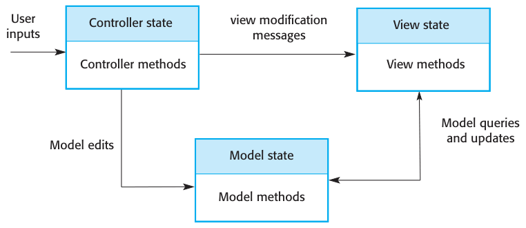
| WAF supportWAF 核心支持 | What it provides框架包办的能力 |
|---|---|
| Security信息安全支持 | Ready-made classes for user authentication (login) and role-based access control开箱即用的登录认证与权限访问控制类 |
| Dynamic web pages动态网页渲染 | HTML template engines populated dynamically from backend database queries支持由数据库查出数据实时填充网页模板 |
| Database integration数据库抽象集成 | Abstract persistence connectors/ORM APIs bridging engines like MySQL (the DB itself is external)面向 MySQL 等库的抽象访问接口类（不含数据库服务端本身） |
| Session management会话状态管理 | Creating, tracking, and expiring multi-request user sessions cleanly自动创建与维护跨越多次 HTTP 请求的用户会话 |
| User interaction富交互与多端适配 | AJAX, HTML5 primitives, and responsive interfaces across desktop, tablet, and mobile内置 AJAX、HTML5 支撑及跨终端自适应页面机制 |
Step 3: inversion of control第 3 步：控制反转
Core idea: unlike libraries that your code calls, a framework runs the main event loop itself and calls back into your hook methods—the Hollywood principle ("don't call us, we'll call you").核心思路：调库时是你的代码做主去调库；用框架时控制权反转——框架主循环全权调度，事件发生时再来回调你的钩子方法。
In a framework you don't walk into the restaurant kitchen; the server calls your table when dishes arrive. Developers extend abstract classes and register callbacks（回调）via hook methods（钩子方法）. Because framework objects—not application code—drive execution order, this inversion defines inversion of control（控制反转）:好比下馆子不用自己进后厨炒菜，做好了服务员自会叫号上桌：开发者只需继承抽象类并在钩子方法里写好回调逻辑，程序主事件循环全归框架把持，这就是控制反转：

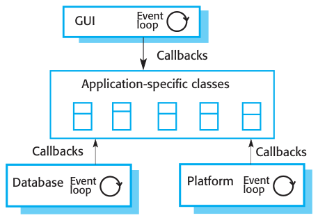
class Framework: # framework code, not modified by the developer
def run(self):
while True: # the framework owns the event loop
event = self.next_event()
if event.kind == "click":
self.on_click(event) # hook method
def on_click(self, event): # default hook: does nothing
pass
class MyApp(Framework): # application-specific class
def on_click(self, event): # callback: called BY the framework
print("Order button pressed")
Notice who owns while True: Framework.run() holds the execution loop and invokes MyApp.on_click() dynamically when "click" occurs.看源码一眼便明：真正掌控 while True 主循环的是 Framework.run()，你的代码仅仅是被动等待传唤的 on_click。
Alongside dominant web frameworks sit three additional categories:除主流 Web 应用框架外，教材还划分了另外三类框架：
| Class框架类别 | Supports支撑领域 | Examples代表实例 |
|---|---|---|
| System infrastructure系统基础设施框架 | Core system plumbing and UI/tooling building blocks辅助研发通信栈、图形桌面与编译器等基础设施 | Communications libraries, GUI frameworks, compiler front-ends通信中间件、GUI 工具包、编译器框架 |
| Middleware integration中间件集成框架 | Distributed component communication and data exchange standards提供异构构件通信与企业级集成标准 | Microsoft .NET, Enterprise JavaBeans (EJB)Microsoft .NET、Enterprise JavaBeans（EJB） |
| Enterprise application企业应用框架 | Domain-specific workflows embedding telecom/finance know-how固化电信、金融等特定行业业务逻辑 | Telecom/finance frameworks (now largely superseded by software product lines)早年电信金融框架（现多被软件产品线取代） |
Step 4: costs第 4 步：引入代价
While productive once mastered, frameworks incur heavy upfront costs: months of learning curve, expensive evaluation across candidates, and trickier debugging through abstracted execution flows.框架成型后开发神速，但入门门槛极高：选型评估费钱费时、团队往往需数月吃透机制，且调试穿透深层框架代码颇为棘手。
Practice练习
Q1. (Explain) Explain inversion of control and why integrating two systems built separately on the same framework creates conflict.Q1.（简答）解释控制反转，并说明把两套基于同款框架独立开发的系统硬整合在一起为何会出冲突。
Answer
- Inversion of control: unlike libraries called by user code, the framework runs the main event loop, detects UI/DB events, and dispatches registered callbacks via hook methods—keeping framework objects in control.控制反转： 由框架全权掌管主事件循环并在识别事件后透过钩子方法反向呼叫业务回调，一改过去应用程序主动调库的流向。
- Integration collision: each app assumes exclusive control over the single event queue, hook registries, and shared framework state (sessions, configs); merging them leaves two loops contending for events so callbacks misfire or starve.集成冲突： 两套系统原本都默认自己独占单一事件队列与全局会话状态；硬并一处时事件会投偏、漏掉，钩子与框架内部状态互相踩踏，谁也保不住完整控制流。
Q2. (Trace) In an MVC web app, a clerk edits a customer's phone number inside a form view while a separate table view shows the same customer. Trace each step.Q2.（流程追踪）在 MVC Web 应用中，职员在表单视图修改某客户电话，同时一旁的客户列表视图也展示着该客户。逐步写出内部发生了什么。
Answer
- Input arrives at the form view's Controller.修改输入送达表单视图关联的控制器。
- That Controller updates the single shared Model holding the phone number.控制器提交变更至唯一持有真值数据的模型。
- View-change notifications fire to all attached Views (both form and table), which re-query the Model and repaint.模型状态变更信号分发给所有订阅视图（表单与列表），二者回查模型最新电话并重绘。
- Both views instantly display the identical updated number because presentation is decoupled from the single Model.两个视图即刻同步展示新号码——这归功于单一数据源模型与多视图展示解耦。
Q3. (True/false) Justify each statement:Q3.（判断辨析）说明理由：
- (a) A Java framework can be reused cleanly inside a Python codebase.(a) Java 写的框架可以直接搬进 Python 项目复用。
- (b) Framework apps are always easier to debug because the framework itself is well tested.(b) 基于框架的应用肯定比手写代码好调试，因为框架早就测过了。
- (c) Enterprise application frameworks remain the most common framework type today.(c) 企业应用框架至今仍是应用最广泛的框架品类。
Answer
- (a) False: frameworks consist of concrete/abstract classes in one OO language and depend on that language runtime.(a) 错误： 应用框架绑定于特定面向对象语言及其类继承体系。
- (b) False: inversion of control routes bugs through opaque framework abstractions unfamiliar to the application developer.(b) 错误： 控制反转把执行栈埋进复杂晦涩的框架内部回调网，反而往往更难排查。
- (c) False: web application frameworks dominate modern use; enterprise application frameworks have largely been replaced by software product lines.(c) 错误： 当今使用最广的是 Web 应用框架，老牌企业应用框架大多已被软件产品线取代。
Software product lines ★★★软件产品线
Goal. Define software product lines and their three base-application component types, contrast them with frameworks, sketch four-layer domain architectures, and distinguish design-time vs deployment-time configuration.目标。 掌握软件产品线与基础应用三类构件，对比产品线与框架异同，能画出四层领域产品线架构，并清晰区分设计时与部署时配置。
Step 1: what a product line is第 1 步：什么是软件产品线
Core idea: a software product line builds related applications atop one shared base application whose core stays constant while configurable and specialised parts vary per customer.核心思路：软件产品线把多客户共有的基础应用底座抽出来固定复用，只围绕“配置开关”和“专用替换件”低成本衍生各款定制版本。
A software product line（软件产品线）is a family of applications sharing a common architecture and shared components, tailored per customer. Rather than ad-hoc copy-paste forks that rot over time, mature teams factor commonality into a modular base application reusing both code and test suites:软件产品线是共享一套公共架构与核心构件的应用族。公司起初往往靠直接复制旧项目代码改新单，越改越乱后遂主动提炼共性组成模块化基础应用，让代码与测试集一道成规模复用：

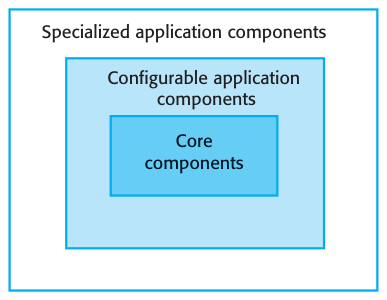
| Component type构件类别 | Role职责定位 | Changed for a new instance?派生新产品时是否改动 |
|---|---|---|
| Core核心构件 | Shared domain-independent infrastructure共性基础设施与底座服务 | Usually kept untouched一般原样保留、不改动 |
| Configurable可配置构件 | Customised by configuration (often codeless via built-in config files/rules)按客户参数或内置配置语言特化，常无需动源码 | Configured per instance按需配置启用与设参 |
| Specialised (domain-specific)特化（专用）构件 | Customer- or hardware-unique business/interface logic绑定具体客户差异、专有硬件或规则的模块 | Partially or wholly replaced部分重写或整个替换 |
Step 2: framework or product line?第 2 步：应用框架 vs 软件产品线
Core idea: frameworks offer general OO extension slots without touching framework code, whereas product lines pack rich domain/hardware specifics and allow arbitrary component rewrites.核心思路：框架偏向语言通用的类扩展（不动框架本身），而产品线深植具体行业及硬件知识且允许彻底替换改写内部构件。
| Aspect对比维度 | Application framework应用框架 | Software product line软件产品线 |
|---|---|---|
| Extension mechanism扩展机制 | OO inheritance & polymorphism; framework code stays fixed and constrains allowable changes仅限于继承与多态回调，一般不改框架源码 | Not tied to OO; any component may be modified, deleted, or rewritten cleanly不限面向对象，构件可随需要修改、删减或重写 |
| Scope应用范畴 | Broad generic infrastructure (e.g., general web apps)通用软件层支撑（如泛用型 Web 框架） | Rich domain & platform semantics (e.g., clinical health-record systems)深含特定行业与平台规则（如医疗档案产品族） |
| Hardware support硬件交互 | Software-only abstractions without device drivers纯面向软件，不含外设硬件接口构件 | Common in embedded/equipment control; directly handles hardware interfacing常见于测控与设备领域，显式包含硬件驱动适配 |
| Starting point开发起点 | Always builds atop the generic framework core固定以抽象框架本身为起点 | Starts from the closest-matching existing family member rather than generic core往往挑最接近的现有成品实例起步，而非从空泛通用核心出发 |
Note they combine cleanly: a company can build a help-desk software product line on top of an underlying web application framework.二者并非排斥关系——完全可以在一套 Web 应用框架之上再搭建垂直行业的客服工单产品线。
Step 3: the layered architecture of a product line第 3 步：产品线的四层体系结构
Many operational domains (such as police, fire, and ambulance dispatching) adopt the standard four-layer resource allocation and management architecture—separating interaction, I/O management, core resource management, and database layers so hardware or domain changes stay localized:大量行业产品线（如警务、消防与急救车辆调度）遵循统一的四层资源分配与管理体系结构——自上而下依次为交互层、I/O 管理层、资源管理层和数据库管理层，借分层将外设与规则变更隔离在局部：

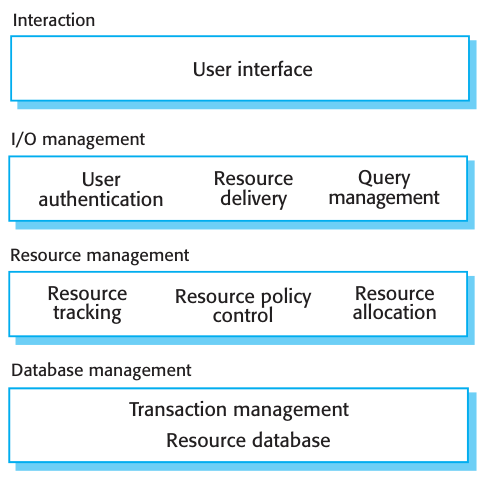

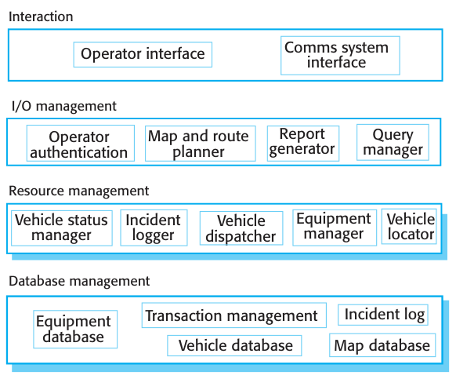
Product family members vary along four specialisation axes（专门化类型）:家族成员之间通常围绕四种专门化维度产生差异：
| Type专门化维度 | What changes变化部位 | Example代表例子 |
|---|---|---|
| Platform平台特化 | Hardware/OS abstraction adapters only; business functionality stays identical仅换硬件/操作系统适配构件，功能逻辑不变 | Shipping Windows, macOS, and Linux editions同一产品的 Windows、macOS 与 Linux 版 |
| Environment环境特化 | External peripheral and communication environment components随现场周边设备与通信环境切换接口模块 | Encrypted police radios vs standard fire dispatch comms警方加密无线电台 vs 消防常规调度链路 |
| Functional功能特化 | Adding or modifying functional domain components增改核心业务功能构件 | Public vs reference vs university library systems公共馆、科研参考馆与高校图书馆系统 |
| Process过程特化 | Adapting components to distinct operational workflows调整构件以匹配不同客户审批或办公流程 | Centralized vs distributed branch purchasing集中统筹采购 vs 分公司分散下单流程 |
Exam sketch method: draw the four labeled horizontal layers top-to-bottom → place human/external interfaces in Layer 1, auth/validation/reporting in Layer 2, core domain resource managers in Layer 3, and DB/transaction stores in Layer 4 → tag every box as Core (C), Configurable (F), or Specialised (S).考场画图六步套路： ① 自上而下画四层框；② 第 1 层填人机与外联通信；③ 第 2 层填校验、认证与报表规划；④ 第 3 层填领域核心资源调度模块；⑤ 第 4 层填事务与各类库；⑥ 为每个模块标明 C（核心）/ F（可配置）/ S（专用）。
Step 4: creating a new product instance第 4 步：派生新产品实例的五步流程
Core idea: seed every new customer build from the closest existing family member—not from scratch—and negotiate details so core changes stay minimal.核心思路：每派生新产品，不要空手从泛化核心起步，而是先挑出最像的现有成品并协商削减差异改动。

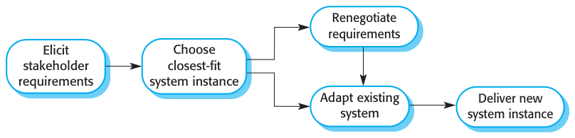
- Elicit stakeholder requirements: let stakeholders demo an existing product instance to voice desired edits.获取利益相关者需求： 让利益相关者亲自试用相近旧版系统，提出改动要求。
- Select the closest-fit existing instance as your engineering baseline.挑选最契合的现有实例作为开发基线。
- Renegotiate requirements as concrete gaps emerge so departures from the base application stay modest.重商妥协需求： 随细节浮现主动引导裁剪过于个性的要求，尽量少改共享底座。
- Adapt the system: configure existing modules and write/swap specialised components.改造适配系统： 完成可配置参数并开发替换少数专用模块。
- Deliver & archive: ship the new product family member and document it as a seed for future variants.交付并沉淀新成员： 记档关键差异供日后新项目继续当作跳板。
The more rigidly detailed upfront requirements are, the fewer existing components will fit unchanged—making flexible stakeholders the single fastest accelerator of cheap delivery.需求锁死得越精细僵硬，现有构件就越难直接套用——配合协调且愿意适度妥协的利益相关者能带来最快最省的交付。
Step 5: design-time and deployment-time configuration第 5 步：设计时配置与部署时配置
Core idea: design-time configuration modifies source code on the vendor side, whereas deployment-time configuration adapts behaviour solely through data settings on the customer side.核心思路：设计时配置由供应商动手改代码（如裁缝量体裁新衣），部署时配置由客户/顾问在不开源码的情况下改配置表（如车主调座椅）。
| Aspect对比维度 | Design-time configuration（设计时配置） | Deployment-time configuration（部署时配置） |
|---|---|---|
| Who executes实施主体 | Supplier engineers adapting core or existing instances供应商开发团队（改动核心或既有实例） | Customer staff or implementation consultants客户运维人员或现场部署顾问 |
| Mechanism实现方式 | Select, develop, or rewrite source components and code增删改源码并重新编译集成构件 | Admin tool populates config DB/files queried dynamically at runtime通过配置工具写入数据库或参数文件，由运行态通用程序动态读取 |
| Flexibility灵活程度 | Highest—arbitrary source-level customization灵活度高——只要改代码几乎不受限制 | Bounded strictly by built-in product configuration hooks局限于软件预先开放的配置选项 |
| When chosen适用情景 | Deployment-time controls cannot satisfy required variant behavior部署期配置能力无法满足特定新需求时 | Generic product already engineered with runtime configurability产品本身专为免改源码的部署期定制而设计 |
Three levels of deployment-time configuration:部署时配置通常细分为三个层次：
- Component selection: toggle optional pre-built modules (e.g., enabling X-ray imaging in a hospital record suite).构件选择： 开关启用所需的预置功能模块（如给病历系统勾选开通 X 光片管理模块）。
- Workflow & rule definition: configure multi-step process flows and data validation rules (e.g., nurse-entry sign-off by senior staff).工作流与规则定义： 设定数据校验约束与审批流转路线（如病房录入须资深护士复核）。
- Parameter definition: adjust scalar thresholds such as max surname field lengths or tax rates.参数定义： 填写具体阈值或格式化参数（如姓氏字段最大长度 40 字符）。
Practice练习
Q1. (Compare) State four differences between an application framework and a software product line.Q1.（比较）说明应用框架与软件产品线之间的四项区别。
Answer
- Extension: a framework is extended through inheritance and polymorphism, its code is not modified, and changes are limited to what it supports. A product line is not necessarily object-oriented; components are changed, deleted or rewritten, without limit in principle.扩展：框架通过继承和多态进行扩展，其代码不被修改，修改仅限于框架所支持的范围。产品线不一定是面向对象的；构件可以被修改、删除或重写，原则上不受限制。
- Scope: a framework gives general support (e.g., any web application). A product line embeds detailed domain and platform information (e.g., web applications for health records).范围：框架提供通用支持（例如任何 Web 应用）。产品线则内嵌详细的领域与平台信息（例如用于健康档案的 Web 应用）。
- Hardware: product lines are often equipment-control applications and include hardware interfacing. Frameworks are software-oriented.硬件：产品线通常是设备控制应用，并包含硬件接口。框架则面向软件。
- Starting point. A framework is the starting point you specialise from scratch. By contrast, a product line is a family of related applications owned by one organisation, so a new system normally starts from the closest existing family member rather than from the bare core.起点。 框架本身就是一切的起点，需要从零开始对其进行特化。相比之下，产品线属于同一组织的一族相关应用，因此新系统通常从最接近的现有族成员开始演化，而不是直接从空白核心重新搭起。
Q2. (Design) Suggest a layered product-line architecture for a family of remote monitoring and data collection systems (weather stations, river-level monitors, air-quality stations). Name components at each level and classify them as core, configurable, or specialised.Q2.（设计）为一族远程监测与数据采集系统（气象站、河流水位监测器、空气质量监测站）提出一种分层的产品线体系结构，列出每层的主要构件，并说明哪些属于核心构件、可配置构件或特化构件。
Answer
| Level层次 | Components构件 |
|---|---|
| 1 Interaction1 交互 | Communications interface (radio, satellite, network); local display and maintenance interface通信接口（无线电、卫星、网络）；本地显示与维护接口 |
| 2 I/O management2 I/O 管理 | Data collection scheduler, data validation and compression, report generator, authentication, query manager数据采集调度器、数据验证与压缩、报告生成器、认证、查询管理器 |
| 3 Instrument management3 仪器管理 | Instrument manager and calibration, alarm manager, data aggregation, device status and diagnostics仪器管理与校准、报警管理器、数据聚合、设备状态与诊断 |
| 4 Database management4 数据库管理 | Transaction management, measurement store, configuration database, instrument database事务管理、测量数据存储、配置数据库、仪器数据库 |
- Core components: scheduler, validation, transaction management, and authentication stay unchanged across the family.核心构件： 调度器、数据验证、事务管理和认证在整个产品族中保持不变。
- Configurable at deployment: reporting schedules and formats, alarm thresholds, and which instruments are attached.部署时可配置构件： 报告生成计划与格式、报警阈值以及所挂载的仪器清单。
- Specialised components: sensor-specific instrument drivers (environment specialisation) and drivers for each communications hardware link or platform (platform specialisation).特化构件： 面向各传感器类型的仪器驱动程序（环境特化），以及面向不同通信硬件链路或平台的驱动程序（平台特化）。
思路：沿用 4 层结构（交互、I/O、仪器/资源管理、数据库），再明确区分核心、可配置与特化构件。
Q3. (Classification) A hospital patient information system is delivered to three hospitals. Classify each change below as design-time or deployment-time configuration; if deployment-time, name the configuration level:Q3.（分类）一套医院患者信息系统交付给三家医院。判断下列每项变更属于设计时配置还是部署时配置；若属于部署时配置，请指出所处的层次：
- (a) The supplier writes a new billing module for one hospital.(a) 供应商为某家医院专门编写一个新的计费模块。
- (b) Hospital A switches on the image-management component that links X-rays to patient records.(b) 医院 A 启用了将 X 光片关联到患者病历的图像管理构件。
- (c) Hospital B sets the maximum length of the surname field to 40 characters.(c) 医院 B 将姓氏字段的最大长度设为 40 个字符。
- (d) Hospital C requires blood-test values to lie in a valid range before storage, and requires a senior nurse to approve entries made by ward nurses.(d) 医院 C 要求血液检测值在存储前必须落在有效范围内，且病房护士录入的数据须由资深护士审批。
Answer
- (a) Design-time: the supplier writes a new component and modifies the source code.(a) 设计时配置： 供应商需要新开发一个构件并修改源代码。
- (b) Deployment-time — component selection: an already-built optional component is switched on via configuration.(b) 部署时配置——构件选择： 通过配置启用现成的可选构件。
- (c) Deployment-time — parameter definition: a built-in field constraint is tuned without changing code.(c) 部署时配置——参数定义： 无需改代码，仅调整内置字段的长度参数。
- (d) Deployment-time — workflow and rule definition: a domain validation rule and an approval workflow are configured using built-in tools.(d) 部署时配置——工作流与规则定义： 利用内置配置工具定义数据校验规则与审批流程。
Configurable application systems and ERP ★★可配置应用系统与 ERP
Goal. Explain why companies adopt ERP and where mismatches arise, list the four architectural features of an ERP system, and explain why testing a configured system is harder than testing custom code.目标。 说明企业为什么选用 ERP 以及错配从何而来；列出 ERP 系统的四个体系结构特征；解释为什么测试配置系统的难度反而高于定制代码。
When business functions such as payroll, inventory, or invoicing are already well understood across an industry, building them from scratch is rarely economical. Buying an off-the-shelf configurable application system lets a vendor handle platform support and maintenance, so the customer's "development" shifts from writing code to configuring one comprehensive product. Where no single product fits, the alternative covered in the next section is to integrate several smaller systems.当薪资、库存或开票等业务在行业内已经高度成熟时，从零定制往往极不划算。购买现成的可配置应用系统后，平台提供与日常维护由供应商负责，客户侧的“开发”就变成了对单一综合产品的参数与流程配置。如果找不到能覆盖全部需求的单一产品，则可采用下一节介绍的替代方案：把多个独立系统集成起来。
| Configurable application system可配置应用系统 | Integrated application systems集成应用系统 |
|---|---|
| A single product provides all the functionality the customer needs由单一产品提供客户所需的全部功能 | Several application systems are integrated to deliver customised functionality通过集成多个应用系统来拼装定制化功能 |
| Generic solution with standardised processes通用解决方案，流程较为标准化 | Flexible solutions tailored to the customer's existing processes解决方案更灵活，能贴合客户原有流程 |
| Development focus is configuration开发重心在于配置 | Development focus is integration开发重心在于集成 |
| The vendor is responsible for maintenance系统供应商负责维护 | The system owner is responsible for maintenance系统所有者自行负责维护 |
| The vendor provides the execution platform系统供应商提供运行平台 | The system owner provides the execution platform系统所有者自行提供运行平台 |
Adopting a single configurable system over custom development brings five practical benefits:与从零定制开发相比，选用单一可配置应用系统有五项明显收益：
- Faster deployment: a proven system can be put into production far more quickly.部署更迅速： 经过市场检验的成熟系统上线周期远短于定制开发。
- Lower procurement risk: functionality is visible up front for evaluation, and other organisations' experience can guide the choice.选型风险更低： 系统功能直观可见，便于评估适用性，还能借鉴同行企业的实施经验。
- Reduced build risk: classic custom-software overrun risks are avoided, though configuration introduces new risks of its own.回避自研风险： 避开了定制软件常见的研发延期风险，尽管这种路线也带来新的配置风险。
- Focus on core business: the organisation spends effort on its main business rather than running an IT build team.聚焦核心业务： 企业可以把精力放在主营业务上，而不必投入大量人力从事底层 IT 开发。
- Vendor-managed evolution: the vendor takes responsibility for keeping the product updated as the underlying platform evolves.由供应商负责演化： 底层平台升级换代时，由供应商负责同步更新产品。
In return, buying a generic product shifts effort from coding to adaptation and creates five characteristic problems:相应的，引入通用产品会把工程工作量从编码转移到业务磨合，带来五个典型问题：
- Process disruption: requirements must be bent to fit the product, which often forces changes to established working practices.打乱现有流程： 需求必须向产品妥协，往往迫使企业调整既有的业务运作方式。
- Unchangeable core assumptions: the product rests on deep design assumptions that are virtually impossible to alter, so the customer has to adapt its business instead.核心假设难以撼动： 产品建立在几乎无法修改的底层假设之上，客户最终只能改变自己来迎合软件。
- Hard selection: choosing the right package is difficult because vendor products are often poorly or optimistically documented.选型困难： 许多商业产品文档不全或夸大宣传，很难在事前准确判断是否契合。
- Consultant dependence: lacking in-house configuration expertise, the customer relies on vendors and consultants whose advice may serve sales interests.依赖外部顾问： 企业缺乏内部配置专家，只得依赖供应商和顾问，而后者的建议有时带有商业推销倾向。
- Vendor lock-in: the vendor controls ongoing support and evolution, yet may go out of business, be acquired, or steer future releases in ways that harm the customer.供应商绑定与演化失控： 支持和升级完全受制于供应商；一旦供应商倒闭、被收购或按不利方向修改产品，客户将十分被动。
Enterprise Resource Planning企业资源规划（ERP）
Core idea: ERP = one integrated system that runs a company's orders, inventory, and manufacturing from a single shared database.核心思路： ERP = 用一套集成系统加一个共享数据库，统一支撑全公司的订单、库存与生产调度。
Rather than letting sales, warehouse, and finance run incompatible tools with duplicate data, an Enterprise Resource Planning (ERP)（企业资源规划）system integrates ordering, invoicing, inventory management, and manufacturing scheduling into one configurable suite. Configuring an ERP involves capturing detailed facts about the customer's organisation in a configuration database, usually with help from specialist consultants.为了避免销售、仓储和财务各自使用互不相通的工具并重复录入数据，企业资源规划（ERP）系统把下单开票、库存管理与生产排程整合进同一套可配置套件中。配置 ERP 需要全面梳理企业自身的业务细节，并由专业顾问协同录入配置数据库。
An ERP architecture rests on four defining features:ERP 体系结构具备四个核心特征：
- Business-function modules: large functional modules covering areas such as purchasing, supply chain management, logistics, and customer relationship management.按业务职能划分的模块： 涵盖采购、供应链管理、物流及客户关系管理等大型功能模块。
- Business process models: built-in workflow definitions inside each module, specifying steps such as how an order is created and approved.业务流程模型： 每个模块内置标准工作流，规定诸如订单创建与审批等标准步骤。
- A common database: one shared repository across all modules so that customer and inventory records are stored once without duplication.公共数据库： 所有功能共用同一数据库，避免客户与库存信息多处重复存储导致不一致。
- Company-wide business rules: constraints enforced uniformly on all data—for instance, requiring an expense claim to be approved by someone more senior than the claimant.全局业务规则： 作用于全部数据的统一约束，例如规定报销单必须由比报销人职级更高的人员审批。
Because the customer's processes must be expressed in the ERP's configuration language, the central risk is a conceptual mismatch with the vendor's view of business. For example, an ERP sold to a university assumed every external relationship revolved around a "customer" purchasing goods from a supplier—a model that fitted neither students, research funding agencies, nor charities. Resolving that mismatch took months and still only partially satisfied requirements.由于客户的业务流必须用 ERP 自带的配置语言来表达，最大的风险在于双方业务模型的概念错配。例如，一套售给大学的 ERP 围绕“向供应商采购商品的外部客户”建模，可无论是学生、科研资助机构还是慈善捐赠方都无法套进这一角色。最终解决这一错配耗费了数月时间，结果也仅仅部分满足了需求。
Testing a configured system配置系统的测试
Even though the underlying software platform is vendor-tested and no new program code may have been written, testing a configured system is often harder than testing custom software for two reasons:虽然底层平台已经过供应商充分测试，配置过程中甚至没有新写程序代码，但验证一个已配置系统往往比测试自研程序更棘手，原因有二：
- Test automation is difficult or impossible: many configurable packages lack a programmatic API for tools such as JUnit, forcing testers to key test data in manually.测试自动化难以实现： 许多可配置产品没有供 JUnit 等测试框架调用的编程接口，测试人员只能手工输入测试数据。
- Faults are subtle and process-specific: because the platform itself is reliable, failures stem from misunderstandings between system configurers and domain users—bugs that generic testers cannot spot without deep knowledge of the business workflow.缺陷隐蔽且高度依赖业务流程： 平台代码本身很可靠，故障往往源于配置人员与业务用户之间的理解偏差；不熟悉一线业务流程的测试人员根本无法察觉这类错误。
Practice练习
Q1. (Discuss) Why have many large companies chosen ERP systems as the basis of their information systems? What problems may arise when one is deployed?Q1.（讨论）为什么许多大型企业选择 ERP 系统作为信息系统的核心基础设施？在部署过程中又会遇到哪些问题？
Answer
Why companies choose ERP:企业选择 ERP 的原因：
- Unified data and processes: ordering, invoicing, inventory, manufacturing scheduling, and CRM are integrated into modules sharing one common database and company-wide business rules, eliminating duplication and inconsistency.数据与流程统一： 将订单、开票、库存、生产排程与客户关系管理整合为同一组模块，共享公共数据库与全局业务规则，彻底消除数据冗余和不一致。
- Speed and business focus: a proven system deploys much faster than custom software, lets the firm focus on its core business instead of IT development, and receives ongoing vendor updates.上线快、聚焦主业： 成熟方案比自研部署更快，使公司专注于核心业务而非 IT 开发，同时由供应商持续负责版本更新。
Problems on deployment:部署时面临的问题：
- Process mismatch and forced change: built-in modules embed the vendor's view of business; severe mismatches (such as the university "customer" model) can take months to work around and still leave requirements only partly met, or force the company to alter its processes.流程错配与业务妥协： 内置模块绑定了供应商的业务假设；严重错配（如大学“客户”概念冲突）可能耗时数月仍无法完全满足需求，或者倒逼企业改造自身流程。
- Heavy configuration cost and hard testing: large deployments require expensive consultants for months, lack automation APIs so testing is painful, and leave long-term evolution and support in the vendor's hands.配置代价高且测试困难： 大型部署往往需要外部顾问耗时数月实施，缺乏测试自动化接口导致验证艰难，且后续维护与演化受制于供应商。
Q2. (Explain) Give two reasons why testing a configured system is harder than testing a programmed one.Q2.（解释）说明测试配置系统比测试编程构建的系统更困难的两个原因。
Answer
- Limited test automation: the product rarely exposes a programming API for frameworks like JUnit, forcing manual test-data entry, while informal configuration specs make test cases hard to design without end-user help.测试自动化受限： 产品往往不提供可供 JUnit 等框架调用的编程接口，只能靠手工录入数据；同时配置规格非形式化，脱离最终用户就难以设计有效用例。
- Subtle business-process faults: because the vendor's platform is already reliable, bugs arise from misunderstandings between configurers and domain stakeholders—errors that testers unfamiliar with day-to-day business workflows cannot easily detect.隐蔽的流程类故障： 底层平台本身非常稳定，缺陷通常来自配置人员与业务方之间的误解；不熟悉具体业务流程的测试人员很难发现这类错误。
Integrated application systems ★★集成应用系统
Goal. State the three design choices when integrating application systems, distinguish an adaptor from a wrapper, and classify real cases using Boehm and Abts' four integration problems.目标。 说明集成应用系统时的三项设计选择；区分适配器与包装器；并能依据 Boehm 与 Abts 提出的四类集成问题分析实际案例。
When no single off-the-shelf product covers every requirement—or when a new package must coexist with legacy software the firm cannot replace—an integrated application system bridges the gap by combining two or more existing systems. Depending on what interfaces the packages expose, they collaborate through APIs or service interfaces, by feeding the output of one into the input of another, or by sharing a database.当没有任何单一商用产品能满足全部需求，或者新购软件必须与无法淘汰的遗留系统协同工作时，就需要构建集成应用系统，将两个或多个现有系统组合起来。根据各系统开放接口的情况，它们可以通过 API 或服务接口调用、将一个系统的输出管道接入另一个系统的输入，或者借助共享数据库来协作。
Design choices设计选择
Core idea: pick the best-fitting products, build adaptors to translate their data, and block unused features.核心思路： 选定最合适的产品组合、编写适配器转换各自数据格式，并屏蔽不必要的功能。
- Which products offer the most appropriate functionality? Identifying the right mix is difficult unless the team already has hands-on experience with the candidate products.哪些产品提供最合适的功能？ 如果团队缺乏候选产品的实际使用经验，仅靠纸面评估往往很难选准。
- How will data be exchanged? Because independent products define different data formats, developers write adaptors（适配器）that run alongside the products and translate one representation into another.数据如何交换？ 不同产品各自维护独立的数据格式，因此需要在产品旁编写并运行适配器，把一种数据表示转换为另一种。
- Which features will be used? Commercial products usually offer far more capability than needed; unused features should be disabled or blocked wherever possible so they cannot interfere with normal operation.实际使用哪些功能？ 现成产品包含的功能往往多于项目所需；只要条件允许，就应当关闭或屏蔽多余功能，避免它们干扰正常业务运行。
Service wrappers服务包装器
Core idea: a wrapper puts a clean shell around a single legacy system so its functions look like ready-to-use services.核心思路： 服务包装器是在单个遗留系统外面套上一层标准外壳，把内部功能暴露为即用型服务。
Legacy applications rarely ship with a modern API, leaving integrators reluctant to couple directly to their raw files or database tables. To solve this without rewriting the legacy code, the integrator builds a wrapper（包装器）that hides the application's internals and exposes one clean service per discrete unit of functionality, so collaborating systems never touch its private implementation.遗留应用往往缺少现代化的对外 API，直接读写其底层文件或数据库表又会带来脆弱耦合。为此，集成者可以在不重写旧代码的前提下，为系统编写一个包装器：屏蔽应用内部实现细节，只为每个独立的功能单元提供一个清晰的服务接口，使外部系统无须触碰内部结构即可协作。
Keep the two roles distinct: an adaptor sits between two systems to convert data formats, whereas a wrapper sits around one system to give it a clean service interface. Both are typically small pieces of glue code.请务必分清两者的角色：适配器位于两个系统之间负责转换数据格式，而包装器包在单个系统外部为其提供标准服务接口；两者本质上都是轻量级粘合代码。
The four problems of integration集成的四类问题
Core idea: integrating commercial packages is deceptively cheap up front, because the real pain comes from stitching together black boxes you do not control.核心思路： 商用系统集成在初期看似省钱，但真正的棘手成本在于你要把多个自己无法掌控的黑盒拼在一起。
Boehm and Abts studied COTS-based integration projects and found that buying ready-made packages eliminates initial coding but replaces it with four recurring life-cycle problems:Boehm 与 Abts 调研了多个基于现成产品的集成项目后指出，直接采购现成软件虽省去了前期编码，却引入了贯穿全生命周期的四类长期问题：
| Problem问题 | What goes wrong问题表现 |
|---|---|
| Lack of control over functionality and performance对功能与性能缺乏控制 | Published interfaces may promise facilities that run poorly or slowly; hidden background operations can interfere with callers; and vendors may ignore bug fixes, forcing users into brittle workarounds公开接口承诺的功能可能实现得很差甚至运行缓慢；隐藏的后台操作会带来意外干扰；而供应商未必愿意修复，迫使用户采取权宜变通方案 |
| Problems with system interoperability系统互操作性问题 | Each product bakes in hidden assumptions about control flow. In one study of four products, three used incompatible event models and each assumed exclusive access to the event queue—pushing effort to five times the estimate and schedule from 6 months to 2 years, especially where standards are ignored每个产品都隐含了关于控制流的假定。一项针对四个产品的研究发现，其中三个采用互不兼容的事件模型且各自假定独占事件队列，最终导致工作量暴增至预估值的 5 倍、工期从 6 个月拖成 2 年，缺乏标准遵守时尤甚 |
| No control over system evolution无法控制系统演化 | Vendors evolve products for the wider market: frequent new releases may break compatibility or bundle unwanted features, while older versions eventually lose support供应商按大众市场风向演进产品：频繁发布的新版本可能破坏旧接口兼容性或强塞多余功能，不升级则旧版早晚停服 |
| Support from system vendors系统供应商的支持风险 | Support quality varies dramatically; without source code and thorough documentation, integrators are helpless if the vendor discontinues the product or is bought out不同厂商的支持水平差距悬殊；在没有源码和详尽文档的情况下，一旦供应商砍掉产品或被收购，集成团队几乎束手无策 |
Crucially, these are whole-life-cycle issues: over several years of upgrades and workarounds, maintaining an integrated COTS system can easily cost more than maintaining a bespoke system.关键在于，这些问题都是贯穿全生命周期的：多年叠加版本适配与变通维护后，集成商用系统的长期运维成本完全可能反超定制自研系统。
Practice练习
Q1. (Explain) Why are adaptors usually needed when systems are built by integrating application systems? Suggest three practical problems in writing adaptor software.Q1.（解释）在通过集成应用系统来构建新系统时，为什么通常需要适配器？请提出编写适配器软件时可能遇到的三个实际问题。
Answer
Why adaptors are needed: independent commercial packages define incompatible data structures, formats, and interface conventions that the integrator cannot modify, so run-time adaptors are required to translate data back and forth at the boundaries.需要适配器的原因： 各自独立开发的现成产品拥有互不兼容的数据结构、格式与接口约定，且无法改动其源码，因此必须靠运行时适配器在边界处双向翻译数据。
Three practical problems in writing adaptors:编写适配器时的三个实际难题：
- Data-model mismatch: unmatched fields, differing granularity (one full-name field versus separate first/last names), and incompatible units, codes, or date formats risk losing information during translation.数据模型错配： 某些字段在另一侧无对应项、粒度不一致（单个姓名字段 vs. 拆分的名和姓），以及编码、单位或日期格式差异，导致转换时极易丢失信息。
- Restricted or absent APIs: without a clean API, an adaptor may have to scrape files or directly touch the database, bypassing business logic and breaking whenever a vendor upgrade alters storage layouts.接口受限或缺失： 若产品未提供可用 API，适配器只得直接读写文件或底层数据库，既绕过了业务逻辑校验，又会在产品升级改动存储格式时瞬间失效。
- Mismatched interaction and timing models: bridging event-driven and batch systems—or differing transaction and error recovery mechanisms—leaves states out of sync if conversion fails mid-way, while black-box internals hinder testing.交互与时序模型冲突： 事件驱动型系统与批处理系统混接，或事务与异常处理机制不同步，导致转换中途失败时会留下不一致的脏状态，且黑盒内部难以充分测试。
Q2. (Explain) What is a service wrapper? Why does it ease the integration of a legacy system?Q2.（解释）什么是服务包装器？为什么它能降低遗留系统的集成难度？
Answer
A service wrapper is a small software shell placed around a single application to hide its internals and expose each discrete unit of functionality as a standard service. By wrapping a legacy system that originally lacked a service interface, collaborating applications depend only on stable service endpoints rather than brittle internal files, screen scrapers, or private data formats.服务包装器是套在单个应用外部的小型软件外壳，用来屏蔽其内部结构，并将每个离散功能单元暴露为标准服务接口。为原本没有服务接口的遗留系统加上包装器后，其他协同系统只需依赖稳定的服务端点，而不必耦合于脆弱的内部文件或私有数据格式。
Terms to recognise ★需要认识的术语
| Term术语 | What to know掌握要点 |
|---|---|
| Not-invented-here syndrome非我发明综合征 | A human and cultural barrier to reuse where engineers distrust external components or prefer writing their own code from scratch一种阻碍复用的心理与文化障碍：工程师倾向于不信任他人编写的构件，或更偏爱亲手重写代码 |
| Base application基础应用 | The pre-built combination of core, configurable, and specialised components forming a product line's template from which new product instances are derived由核心、可配置和特化三类构件构成的软件产品线模板，新的产品实例即在此基础上衍生 |
Exam-style questions考试题型练习
Q1. (Scenario analysis; 12 marks) A national postal operator must replace its parcel-tracking system within 8 months. The system will run for 15 years, stores personal data, must pass an external security audit, and must deploy on the operator's own Linux servers. The in-house team is strong in Java and has no ERP experience. Several commercial and open-source tracking products cover most of the requirements.Q1.（情景分析；12 分）某国家邮政运营商须在 8 个月内更换其包裹追踪系统。该系统预期运行 15 年，需存储个人数据，必须通过外部安全审计，且必须部署在运营商自有的 Linux 服务器上。内部团队精通 Java，但没有 ERP 实施经验。目前已有若干商用与开源追踪产品能够满足大部分需求。
- (a) Name the six factors governing the choice of reuse technique and apply each to this scenario. (6 marks)(a) 列出决定复用技术选型的六个因素，并结合本案例逐一分析。（6 分）
- (b) Recommend a reuse approach with justification, and identify two risks together with a mitigation for each. (4 marks)(b) 推荐一种复用方案并说明理由；列出该方案的两项风险及各自对应的缓解措施。（4 分）
- (c) Making the tracking module reusable across other postal projects costs $120,000 compared with $50,000 for a project-specific version, and reusing it costs $15,000 per project. After how many projects does reuse pay off? (2 marks)(c) 将追踪模块改造成跨邮政项目可复用的版本需耗费 $120,000（项目专用版本仅需 $50,000），此后每复用一次的成本为 $15,000。至少在多少个项目后该投入才能回本？（2 分）
Answer
(a) Six reuse selection factors applied:(a) 结合案例分析六个复用选型因素：
- Development schedule (8 months): too tight for custom development or bottom-up component engineering; favour an existing application system.开发工期（8 个月）： 工期紧迫，不宜自研或从零开发构件，应优先复用现成应用系统。
- Expected lifetime (15 years): long-term maintainability outweighs initial savings; source access ensures survival beyond any single vendor, favouring open-source or source-available products.预期寿命（15 年）： 长期可维护性远比初期省钱重要；拥有源码能降低单一供应商退出的风险，因此优先选择开源或提供源码的产品。
- Team skills: strong Java skills favour extending Java products and frameworks; lack of ERP experience rules out heavyweight ERP adoption.团队技能： 精通 Java 适合选用并扩展 Java 产品与框架；团队无 ERP 经验，应避开重型 ERP 方案。
- Criticality & NFRs: handling personal data under an external security audit demands source-code inspectability.关键性与非功能需求： 存储个人数据且须通过外部安全审计，需要可审查的源代码作安全论证支撑。
- Application domain: parcel tracking is standard logistics functionality with mature commercial and open-source products, making configuration far cheaper than building anew.应用领域： 包裹追踪属于成熟物流场景，市面已有多种现成产品，通过配置适配远比从头开发经济。
- Target platform: mandatory Linux hosting excludes products locked to other operating systems.运行平台： 必须运行在自有 Linux 服务器上，排除了绑定特定非 Linux 平台的产品。
(b) Recommendation and risk mitigation:(b) 推荐方案及风险缓解：
- Recommended approach: adopt and configure an open-source Java tracking system on Linux, extend missing features on a Java web application framework, and connect legacy postal databases via adaptors. This hits the 8-month deadline, leverages Java skills, and yields inspectable source code for auditing and 15-year upkeep.推荐方案： 选用可运行于 Linux 的开源 Java 包裹追踪系统进行配置，缺失功能基于 Java Web 应用框架扩展，再通过适配器对接内部遗留数据库。这既能赶上 8 个月工期、发挥团队 Java 优势，又能提供可审计且可控的源码以支撑 15 年运行。
- Risk 1 — Process mismatch: built-in product assumptions may conflict with postal workflows. Mitigation: prototype and demonstrate the product to stakeholders early, renegotiating requirements around standard flows where feasible.风险 1——业务流程错配： 开源产品内置假设可能与邮政现有流程冲突。缓解： 尽早向利益相关者搭建原型演示，尽量协商微调业务需求以贴合产品标准流程。
- Risk 2 — Abandoned or incompatible evolution: maintainers may drop support or push breaking upgrades. Mitigation: mirror the exact source repository, pin stable versions, and secure an external support contract.风险 2——社区停更或版本不兼容： 维护团队可能停止支持或引入破坏性更新。缓解： 在内部镜像保存完整源码、冻结稳定版本，并配套签订商业支持协议。
(c) Break-even calculation:(c) 盈亏平衡计算：
- \(n^{*} = C_r / (C_n - C_u) = 120{,}000 / (50{,}000 - 15{,}000) = 3.43\).\(n^{*} = C_r / (C_n - C_u) = 120{,}000 / (50{,}000 - 15{,}000) = 3.43\)。
- At 3 projects, reuse costs \(120{,}000 + 3 \times 15{,}000 = \$165{,}000\) vs. \(\$150{,}000\); at 4 projects, reuse drops to \(\$180{,}000\) vs. \(\$200{,}000\). The reusable module pays off from the 4th project.3 个项目时，复用总成本为 \(120{,}000 + 3 \times 15{,}000 = \$165{,}000\)，高于独立开发的 \(\$150{,}000\)；到第 4 个项目时，复用成本为 \(\$180{,}000\)，低于独立开发的 \(\$200{,}000\)。因此从第 4 个项目开始回本。
思路：六因素逐条对应案例条件；推荐方案兼顾工期、技能与源码可控性，并配两条风险与缓解；第 (c) 问代公式后向上取整。
Q2. (Frameworks; 10 marks)Q2.（应用框架；10 分）
- (a) Define an application framework and explain inversion of control using the terms callback and hook method. (4 marks)(a) 定义应用框架，并借助回调（callback）与钩子方法（hook method）解释控制反转。（4 分）
- (b) List five kinds of support provided by a web application framework. (3 marks)(b) 列出 Web 应用框架提供的五类典型支持。（3 分）
- (c) Explain how MVC keeps two views of the same underlying data consistent. (3 marks)(c) 解释 MVC 如何保持同一份底层数据的多个视图始终一致。（3 分）
Answer
- (a) Framework and IoC: an application framework is a collaborating set of concrete and abstract classes providing a reusable generic architecture for a family of applications. Under inversion of control, the framework owns the main execution loop rather than the application: developers subclass framework abstractions to register callbacks, and when an event occurs (such as a button click), the framework invokes the linked hook method in user code to run the domain response.(a) 框架与控制反转： 应用框架是由具体类与抽象类协作构成的系统骨架，为一族相关应用提供可复用的通用体系结构。在控制反转机制下，主执行循环掌握在框架而非应用手中：开发者通过继承抽象类注册回调；当事件触发（如点击按钮）时，框架主动调用绑定了业务代码的钩子方法来执行响应。
- (b) Five WAF capabilities: (1) Security (authentication & access control); (2) Dynamic web page generation (templates populated from databases); (3) Database integration (abstract DB interfaces); (4) Session management; (5) Rich user interaction (AJAX, HTML5, device-independent UIs).(b) Web 应用框架提供的五类支持： (1) 安全控制（认证与访问控制）；(2) 动态网页生成（数据库驱动模板）；(3) 数据库集成（统一抽象访问接口）；(4) 会话管理；(5) 富交互支持（AJAX、HTML5 及跨设备界面）。
- (c) View consistency in MVC: the Model holds the single source of truth, and each View pairs with a Controller. Editing via one view informs its controller, which updates the model; the model notifies all registered views of the change, causing every view to query the updated state and refresh identically.(c) MVC 的视图一致性机制： 模型（Model）集中保存唯一状态，每个视图（View）配有一个控制器（Controller）。用户在某个视图中的修改通过对应控制器提交并更新模型；模型随即向所有注册视图广播变更通知，各视图重新读取模型数据并同步刷新显示。
Q3. (Product lines; 12 marks)Q3.（软件产品线；12 分）
- (a) Define a software product line and describe the three kinds of component inside its base application. (4 marks)(a) 定义软件产品线，并描述其基础应用所包含的三类构件。（4 分）
- (b) A company builds an emergency vehicle-dispatching product line for police and fire services. Describe its layered architecture and give two ways the two instances differ. (4 marks)(b) 某公司面向警察与消防部门开发应急车辆调度产品线。描述其分层体系结构，并举例说明两个具体实例之间的两处差异。（4 分）
- (c) Compare design-time and deployment-time configuration, and name the three levels of deployment-time configuration. (4 marks)(c) 比较设计时配置与部署时配置，并列出部署时配置的三个层次。（4 分）
Answer
- (a) Product line and base components: a software product line is a family of applications built around a shared architecture and common components, each tailored to a specific customer or market. Its base application contains core components (shared infrastructure, rarely changed), configurable components (tuned via parameters or configuration languages), and specialised domain components (swapped or rewritten per instance).(a) 产品线与基础应用构件： 软件产品线是共享同一体系结构与核心构件的一族应用，各自针对特定客户需求进行定制。基础应用由三类构件组成：核心构件（通用基础设施，通常不改动）、可配置构件（通过配置或配置语言调整特化）和特化领域构件（按具体产品实例替换或新写）。
- (b) Four layers and two differences: (1) Interaction: operator UI and comms interfaces; (2) I/O management: authentication, reports, route planning, queries; (3) Resource management: vehicle locator/dispatcher, status, equipment, incident log; (4) Database management: transactions plus vehicle, equipment, map, and incident databases. Two differences: police operate large fleets of few standard types whereas fire services run small fleets of highly specialised vehicles, altering database schemas; encrypted police radio hardware alters interaction-layer drivers (environment specialisation).(b) 四层体系结构与两处差异： 从上到下分为：(1) 交互层（操作员界面与通信接口）；(2) I/O 管理层（认证、报告、路径规划、查询）；(3) 资源管理层（定位调度、车辆状态、装备管理、事件日志）；(4) 数据库管理层（事务管理及车辆、装备、地图与事件库）。两处差异： 警队车型少但数量庞大，而消防队车辆少却种类高度专精，导致车辆数据库结构不同；加密警用无线电硬件还会改变交互层通信驱动（属于环境特化）。
- (c) Design-time vs. deployment-time configuration: design-time is done by the supplier before delivery by extending or replacing components and editing source code—maximally flexible when built-in options fall short. Deployment-time is done by customers or consultants without code changes, generating configuration data read by the running system across three levels: component selection, workflow and rule definition, and parameter definition.(c) 设计时配置 vs. 部署时配置： 设计时配置由供应商在交付前完成，通过开发、替换构件并修改源代码实现，灵活性最高，用于内置配置能力不足的场景；部署时配置由客户或顾问在运行期通过工具生成配置数据实现，无需改动源码，分为构件选择、工作流与规则定义以及参数定义三个层次。
Q4. (Configured application systems; 10 marks)Q4.（配置应用系统；10 分）
- (a) State the four key architectural features of an ERP system. (4 marks)(a) 说明 ERP 系统的四个关键体系结构特征。（4 分）
- (b) An ERP system sold to a university modelled a "customer" as an external buyer of goods and services. Explain the resulting difficulty and the general ERP risk it illustrates. (3 marks)(b) 某大学采购的 ERP 系统把“客户”默认定义为购买商品和服务的外部买家。请解释由此引发的困境，及其折射出的通用 ERP 风险。（3 分）
- (c) Explain why testing a configured system is harder than testing a custom-programmed one. (3 marks)(c) 解释为什么测试配置系统往往比测试编程实现的定制系统更加困难。（3 分）
Answer
- (a) Four ERP features: large functional department modules; per-module business process models; a single common database shared across all functions; and global business rules enforcing data consistency.(a) ERP 四大体系结构特征： 面向部门职能的大型功能模块；各模块内置的业务流程模型；全系统共用的单一公共数据库；以及保障跨模块一致性的全局业务规则。
- (b) University mismatch & general risk: a university deals with students, research funding councils, and charities—none fits the vendor's commercial buyer archetype, so resolving the mismatch took months and left needs only half met. This illustrates the central ERP risk: a model mismatch between the customer's real-world processes and the assumptions baked into the ERP's configuration language.(b) 大学案例错配与通用风险： 大学对接的是学生、科研基金机构和慈善捐赠方，均不符合商业买家的设定，致使配置团队耗费数月才勉强绕过冲突且未能彻底满足需求。这体现了 ERP 最核心的隐患：客户真实业务模型与 ERP 配置语言预设假设之间的模型错配风险。
- (c) Testing difficulties: (1) Automation barriers: lack of programmatic APIs rules out tools like JUnit, forcing manual input while informal specs hinder test design without users; (2) Subtle process bugs: the underlying platform is sound, so faults stem from configurer–user misunderstandings that require deep domain knowledge to detect.(c) 测试困难的原因： (1) 自动化受阻： 往往缺少供 JUnit 等框架调用的 API 而被迫手工输入，且规格非形式化，没有业务用户配合很难构造用例；(2) 隐蔽的流程故障： 底层平台稳定，问题全出自配置与业务的语义误解，缺少领域流程知识的测试人员难以发现。
Q5. (Integration; 12 marks) A large company wants a desktop procurement system by combining its legacy ordering system (linked to invoicing and delivery) with a new web e-commerce platform and its existing corporate email system.Q5.（系统集成；12 分）某大型企业拟构建桌面端采购系统，将内部关联开票与交付的遗留订购系统、新增的 Web 电子商务平台以及现有企业电子邮件系统集成在一起。
- (a) Describe the resulting architecture and explain why adaptors are necessary. (4 marks)(a) 描述集成后的系统体系结构，并解释为什么必须编写适配器。（4 分）
- (b) State the three design choices involved in integrating application systems. (3 marks)(b) 给出集成应用系统时需要权衡的三项设计选择。（3 分）
- (c) Summarise Boehm and Abts' four integration problems and illustrate each in this procurement project. (4 marks)(c) 概括 Boehm 与 Abts 提出的四类集成问题，并结合本采购项目逐一举例。（4 分）
- (d) Why can long-term maintenance cost more than maintaining a custom-built system? (1 mark)(d) 为什么此类集成系统的长期维护成本可能反超定制开发系统？（1 分）
Answer
- (a) Architecture and adaptors: a client–server architecture where desktop users run a web browser and email client while servers host the e-commerce platform, legacy ordering/invoicing system, and email server. Because independent black-box products have fixed, incompatible formats, Adaptor 1 translates orders and delivery confirmations between e-commerce and ordering formats, and Adaptor 2 turns ordering notifications into emails (a capability the legacy system lacks).(a) 体系结构与适配器作用： 系统呈客户端-服务器结构：桌面客户端为 Web 浏览器和邮件客户端，服务器端运行电商平台、遗留订购/开票系统及邮件服务器。由于黑盒产品各自格式固定且互不兼容，需编写适配器 1 在电商与订购系统间互转订单和送货确认，并由适配器 2 把旧系统发出的状态通知转换成电子邮件（旧系统原本无发信功能）。
- (b) Three design choices: (1) which candidate products best supply required features; (2) how data will be exchanged and translated via adaptors; (3) which product features to enable while blocking unused ones.(b) 三项设计选择： (1) 挑选功能最契合的候选产品；(2) 设计适配器解决系统间数据格式转换与交换；(3) 裁定开放哪些必要功能并屏蔽其余多余功能。
- (c) Boehm & Abts' four problems applied: Functionality/performance control—the legacy system may bottleneck under desktop order spikes with unfixed hidden bugs; Interoperability—mismatched assumptions between e-commerce and ordering slow down adaptor integration; Evolution control—an e-commerce upgrade can silently break Adaptor 1; Vendor support—lack of source code leaves the firm vulnerable if a vendor discontinues a package.(c) 结合案例分析 Boehm 与 Abts 四类问题： 功能与性能失控——全员桌面下单的并发峰值可能拖垮旧订购系统且厂商不愿修复隐藏缺陷；互操作性困难——电商平台与旧系统运行假设冲突，使适配器编写远超预期耗时；演化失控——电商平台升级极易破坏适配器 1 的兼容性；供应商支持风险——缺乏源码使企业在厂商停服或被并购时陷入被动。
- (d) Maintenance cost: these are whole-life-cycle issues that persist after launch, forcing continuous rework of adaptors and workarounds whenever external products change.(d) 维护成本反超原因： 这些属于全生命周期问题，交付上线后仍长期存在；每当任一外部产品升级或异动，团队都必须不断重写适配器与变通代码。
Textbook exercises课后习题
Textbook exercises with answers: 10 questions教材习题及答案（共 10 题，点击展开）
E1. (Exercise 15.1) What major technical and nontechnical factors hinder software reuse? Do you personally reuse much software and, if not, why not?E1. （课后习题 15.1）阻碍软件复用的主要技术因素和非技术因素有哪些？你个人是否经常复用软件？如果不是，原因是什么？
Answer
Software reuse is held back by both technical barriers—which make existing artifacts expensive to locate, understand, trust, and integrate—and nontechnical barriers rooted in economics, culture, and contracts:软件复用同时受制于两类障碍：技术障碍会抬高查找、理解、信任和集成现有构件的成本；非技术障碍则源于经济激励、团队文化与法律条款：
Technical factors技术因素
- Finding, understanding, and adapting components: a candidate must be retrieved from a repository, understood from often patchy documentation, and modified to fit. Once that effort exceeds writing the code afresh—especially for overly generic components—engineers write it themselves.查找、理解与适配构件的成本： 必须先在库中找到候选构件，再结合通常较粗糙的文档理解其行为并做改造。一旦这套开销超过重写代码（构件越通用就越难理解），工程师宁可自己重头写。
- Interface and assumption mismatches: independently developed components make hidden assumptions about interfaces, data formats, and control flow, forcing extra adaptors or wrappers.接口与隐含假设冲突： 独立开发的软件对接口、数据格式及控制权归属各有预设，迫使集成方额外编写适配器或包装器。
- Library construction and upkeep: classifying, versioning, storing, and curating a trusted component repository is costly.构件库建设与维护代价： 对可复用构件进行分类编目、版本管理与长期运维投入不菲。
- Higher long-term maintenance: without source code, reused black boxes cannot be patched directly and gradually drift out of step with the evolving system.长期维护风险： 缺乏源代码时无法修复第三方缺陷，被复用部件还会与系统演进节奏逐渐脱节。
- Weak tool support and quality doubts: IDEs and build pipelines often lack repository integration, while informal component specifications leave dependability and hidden behaviour hard to test.工具链欠缺与质量存疑： 开发工具未必与构件库无缝衔接，而非正式的规格说明也使可信性和隐藏副作用难以测试。
Nontechnical factors非技术因素
- Not-invented-here syndrome: engineers naturally distrust code written elsewhere or prefer the creative challenge of writing their own.非我发明综合征： 工程师往往不信任他人编写的代码，或认为自己从零编码更有趣味与掌控感。
- Economics and short-term incentives: building reusable software adds extra cost to the current project while reaping benefits mainly in later projects, which clashes with project-based budgets and rewards.经济与绩效机制错位： 通用化会增加当前项目的开销，收益却由后续项目享受；现行预算与考核机制往往偏向短期交付。
- Process adaptation and training: reuse-driven development requires negotiating requirements around available software and retraining developers.过程与技能门槛： 团队必须调整流程（根据现有构件协商需求），并为成员提供相应培训。
- Legal and commercial exposure: copyright, licence restrictions, warranty and liability clauses, and vendor survival risks.法律与商业约束： 版权归属、开源/商业许可条款、担保责任划分，以及对供应商长期存续的依赖。
Personal reflection: most developers heavily reuse standard libraries, open-source packages, and web frameworks, because they are well-documented, battle-tested, and effortless to fetch. Reuse of bespoke enterprise components or full architectures is far rarer for small features where locating, vetting, and integrating a black box feels riskier than writing a few hundred lines cleanly.个人实践体会： 日常开发中，团队在标准库、开源包与应用框架层面的复用非常普遍，因为它们文档完备、久经检验且获取成本极低；但大型业务构件与整套体系结构的跨项目复用却少得多——尤其对于体量不大的需求，寻找、评估并验证黑盒构件的风险和精力往往高于亲自编写。
思路：技术、非技术各列 4–5 条并各配一句解释；个人部分要具体（库级复用多、构件级少）并说明原因。
E2. (Exercise 15.2) List the benefits of software reuse and explain why the expected lifetime of the software should be considered when planning reuse.E2. （课后习题 15.2）列出软件复用的好处，并解释在规划复用时为什么应当考虑软件的预期寿命。
Answer
Six key benefits of reuse:软件复用的六大收益：
- Accelerated development: cutting both build and validation effort dramatically shortens time to market.加速开发交付： 同时压缩编写代码与确认测试周期，显著抢占上市时间窗口。
- Effective use of specialists: domain experts encode hard-won knowledge into reusable assets once instead of repeating it on every project.高效利用专家经验： 资深专家将专业知识沉淀为可复用构件，无需在每个项目里重复劳动。
- Increased dependability: software already proven in production has had many design and coding faults uncovered and fixed.提升可信性： 在多个生产系统中运行过的现成软件，早期隐患多已被暴露并修复。
- Lower development cost: software cost rises with the volume of new code written, so reuse shrinks initial build outlay.降低开发成本： 新代码规模直接决定研发成本，大幅复用显著减少新增代码量。
- Reduced process risk: the price and capability of off-the-shelf components are known up front, whereas estimating bespoke builds carries high uncertainty.降低过程风险： 已有软件的采购与适配成本相对确定，而全自研估算往往伴随巨大偏差风险。
- Standards compliance: standard user-interface patterns or protocol rules embedded in reusable components create consistent applications and reduce user error.促进标准统一： 把交互或接口标准固化进可复用构件中，能保持各应用一致并减少用户误操作。
Why expected lifetime matters: reuse yields savings up front during initial development, yet imposes ongoing costs across the entire operational life—no source code to patch defects directly, incompatible vendor upgrades or discontinued support, and continuous rework of adaptors as host platforms evolve. Reuse must therefore be judged by total cost of ownership over the expected lifetime \(N\):为何必须考虑预期寿命： 复用的省钱效应主要兑现在开发初期，但其代价却会贯穿系统服役的每一年——缺少源码难以自行修补缺陷、外部厂商发布不兼容升级或停服、平台演进迫使适配器持续返工。因此，必须在预期寿命 \(N\) 的全生命周期尺度上比较总拥有成本：
\[\text{TCO}(N)=C_0+N\,C_{\text{yr}}\]
Here \(C_0\) is up-front outlay and \(C_{\text{yr}}\) is annual maintenance, support, and upgrade cost. With illustrative figures (in thousand dollars): reuse (licences + adaptor upkeep) has \(C_0=100, C_{\text{yr}}=40\), whereas custom code has \(C_0=250, C_{\text{yr}}=20\). Breaking even solves \(100+40N=250+20N\), giving \(N^*=150/20=7.5\) years:其中 \(C_0\) 为前期投入，\(C_{\text{yr}}\) 为年均维护、支持与升级费用。以示例数值（单位：千美元）说明：复用方案（许可加适配器维护）取 \(C_0=100, C_{\text{yr}}=40\)，定制开发取 \(C_0=250, C_{\text{yr}}=20\)。令两者相等 \(100+40N=250+20N\)，得盈亏平衡点 \(N^*=150/20=7.5\) 年：
| Expected life \(N\) (years) | Reuse: \(100+40N\) | Custom: \(250+20N\) | Cheaper option更省方案 |
|---|---|---|---|
| 3 | 220 | 310 | reuse, by 90复用（省 90） |
| 7.5 | 400 | 400 | equal持平 |
| 12 | 580 | 490 | custom, by 90定制（省 90） |
Consequently, for a short-lived prototype or tactical tool, early savings dominate and off-the-shelf reuse wins hands down; for a long-lived enterprise system, recurring maintenance and vendor lock-in can overtake up-front gains unless source code is accessible and open standards or isolating wrappers are used.可见，对于原型或短期过渡系统，前期省钱占绝对主导，直接复用最为划算；而对于长寿命关键系统，持续的运维开销与供应商撤出风险可能逆转成本优势，此时应当首选开源/带源码方案、遵循开放标准并用包装器隔离外部依赖。
思路：先列六条收益，再讲“收益在前期、成本贯穿生命周期”，用 TCO 公式和盈亏平衡年数说明。
E3. (Exercise 15.3) How does the base application's design in the product line simplify reuse and reconfiguration?E3. （课后习题 15.3）软件产品线中基础应用的设计如何简化复用与重新配置？
Answer
A software product line（软件产品线）is a family of related systems sharing a common architecture and component set, each tailored to specific customer needs. Its base application embodies that shared core in advance through three distinct component categories:软件产品线是一组共享通用体系结构与公共构件的相关应用，各成员分别针对具体客户需求进行特化。其基础应用预先按三类构件划分了稳定核心与可变边界：
| Component type构件类型 | Role职责 | For a new product instance派生新产品实例时 |
|---|---|---|
| Core核心构件 | Shared infrastructure support提供共性基础设施支撑 | Usually reused without code changes通常原样保留、不作改动 |
| Configurable可配置构件 | Specialised via parameters or built-in configuration languages通过参数或内置配置语言完成特化（部分可免改源码） | Configured per instance按新实例需求配置 |
| Specialised (domain-specific)特化（领域专用）构件 | Customer- or hardware-specific parts与具体客户、业务规则或硬件强相关部分 | Partially or wholly replaced部分或全部替换 |
Separating invariant machinery from variation points simplifies reuse and reconfiguration in four concrete ways:通过把不变机理与变化点剥离，基础应用从四个方面显著简化了复用和重配置：
- High reuse of code and tests: the architecture and core components transfer unchanged across every product family member, lifting productivity and dependability.高比例复用代码与测试： 体系结构骨架与核心构件在产品族全员间原封不动地复用，同时带动测试资产复用。
- Isolated variation behind stable interfaces: customer differences are boxed inside configurable or specialised parts, confining changes cleanly. For example, in an emergency vehicle-dispatch product line, police and fire variants differ mainly in the vehicle database layout and interaction-layer radio hardware drivers (such as encrypted police radio), leaving I/O and resource-management layers untouched.变化局限在稳定接口之后： 客户间差异被隔离在可配置和特化构件内部。例如在应急车辆调度产品线中，警车与消防车版本主要在车辆数据库结构及交互层无线电驱动（如警用加密电台）上有所不同，其余 I/O 管理与资源管理层均直接复用。
- Code-free deployment-time configuration: customers and consultants can tailor systems via built-in component selection, rules/workflows, and parameter settings; supplier design-time source edits are needed only as a fallback.免改源码的部署时配置： 客户或顾问借助内置工具即可完成构件开关、工作流/规则设定和参数调整，仅在内置能力不足时才由供应商作设计时源码修改。
- Clear instantiation pathway: new products start from the closest family member, tweak only diverging components, and periodically fold common extensions back into the shared core.清晰的实例派生路线： 构建新实例时直接从最接近的现有家族成员起步，仅改造差异部分；多个实例共用的新能力后续可重构回共享核心。
In essence, the base application keeps everything common fixed and everything variable cleanly replaceable.归根结底，基础应用把“不变的”固化下来、把“易变的”接口化，使新产品的交付从重头研发简化为选配与局部替换。
思路：先写三类构件（核心/可配置/专用），再说它们如何带来复用（共享核心与测试）和重配置（变化被隔离、可部署时配置）。
E4. (Exercise 15.4) Explain what is meant by "inversion of control" in application frameworks. Explain why this approach could cause problems if you integrated two separate systems that were originally created using the same application framework.E4. （课后习题 15.4）解释应用框架中“控制反转”的含义，并分析若将两个原本基于同一应用框架开发的独立系统集成在一起，为何这种机制可能引发冲突。
Answer
What inversion of control means: in traditional library reuse, application code drives execution and calls library routines when needed. In an application framework with inversion of control（控制反转）, ownership reverses ("don't call us, we'll call you"): the framework runs the main event loop and owns control flow. Developers subclass the framework's abstract classes to register callbacks（回调）, and whenever UI, network, or database events arrive, the framework invokes the developer's linked hook methods（钩子方法）to supply domain behaviour.控制反转的含义： 在传统函数库复用中，由应用程序掌握执行流并在需要时主动调用库函数；而在遵循控制反转的应用框架中，控制权完全颠倒（“别来调我，我来调你”）——框架运行主事件循环并掌握整体控制权，开发者通过继承抽象类注册回调；当界面、网络或数据库触发事件时，框架再主动调用绑定了业务逻辑的钩子方法。
Why combining two framework-based systems causes friction: each application was built assuming its framework instance is the sole master of control inside the process, triggering four conflicts:为何集成两套基于同框架的系统会出问题： 两个应用都预设自身所在的框架实例独占进程控制权，合并时会引发四类冲突：
- Competing event loops: two independent event loops contend for the same thread, event queue, and UI/database listeners, risking misrouted hooks or starvation of one subsystem.双事件循环竞争： 两个框架循环争夺同一主线程、事件队列和 UI/数据库监听权，容易造成事件误分发甚至其中一个系统饿死。
- Global framework state collisions: configuration registries, session/transaction managers, hook tables, and singletons overwrite each other—especially if the two apps target different framework versions.框架全局状态碰撞： 两套实例的配置中心、会话与事务管理器、已注册钩子表和单例对象会彼此覆盖，若两系统依赖的框架小版本不同则矛盾更尖锐。
- Incompatible lifecycle and threading expectations: object creation order, locking, and event serialisation guarantees assumed by one app can be broken by callbacks fired from the other.生命周期与并发假设冲突： 框架创建对象、触发钩子及串行处理事件的顺序可能被另一应用的活动打乱。
- Opaque cross-framework debugging: execution weaves through generated framework dispatch layers that neither application team wrote.调试链路复杂： 控制流在双方团队都未编写的底层框架调度代码间来回穿梭，排查缺陷十分困难。
Practical workarounds: run each application in its own process or service with its own framework loop and link them across process boundaries using message queues, APIs, or wrappers—rather than trying to merge both inside one runtime process.解决思路： 让两个系统继续作为独立进程或服务运行，各自保留独立的事件循环，在进程边界外通过消息机制、API 或服务包装器集成，避免强行揉进单一进程。
思路：先讲清谁调用谁（框架循环调用钩子/回调，对比库），再讲冲突：两个事件循环、共享状态、生命周期假设；最后给出分进程/服务的解法。
E5. (Exercise 15.5) Using the example of the weather station system described in Chapters 1 and 7, suggest a product-line architecture for a family of applications that are concerned with remote monitoring and data collection. You should present your architecture as a layered model, showing the components that might be included at each level.E5. （课后习题 15.5）结合第 1 章与第 7 章所述的气象站系统，为一族面向远程监测与数据采集的应用设计产品线体系结构，以分层模型给出每一层可能包含的构件。
Answer
A wilderness weather station collects instrument readings (thermometers, anemometer, barometer, rain gauge), summarises them, transmits packets over satellite to a central archive, and supports remote reconfiguration, restart, and shutdown. Flood-warning, air-quality, and pipeline monitoring share this exact pattern, making a 5-layer product-line architecture ideal: field units run Levels 1–2, central servers run Levels 3–5, and the communications manager bridges them. Below, C = core, F = configurable, and S = specialised.荒野气象站从各类仪器采集环境读数，汇总后经卫星传往中央数据中心，并支持远程重配置、重启与关机。洪水预警、空气质量与管道监测均共享这一结构，极适合采用五层产品线体系结构：野外端运行第 1–2 层，中心端运行第 3–5 层，通信管理器衔接两端。下图中 C 表示核心构件、F 表示可配置构件、S 表示特化构件。
+------------------------------------------------------------------------------+
| Level 5 Presentation (central system) |
| operator console and dashboard [F]; map and chart output [S]; |
| report generator [C]; alert notification [F]; remote control [C] |
+------------------------------------------------------------------------------+
| Level 4 Analysis and rules |
| data validation [C]; aggregation and summaries [F]; |
| alarm and threshold manager [F]; |
| domain analysis: forecast, flood model, pollution index [S] |
+------------------------------------------------------------------------------+
| Level 3 Data management |
| time-series archive [C]; station and sensor registry [C]; |
| configuration database [C]; access control [C]; query manager [C] |
+------------------------------------------------------------------------------+
| Level 2 Station services and communications |
| data collector [C]; sensor manager [F]; diagnostics [F]; |
| station controller: start, stop, reconfigure, restart, shutdown [C]; |
| communications manager: store-and-forward, encryption [C]; |
| power manager [S] |
+------------------------------------------------------------------------------+
| Level 1 Hardware interface (remote station) |
| sensor adaptors, one per sensor type [S]; |
| satellite, GSM and radio drivers [S]; |
| clock and power-supply interface [S] |
+------------------------------------------------------------------------------+
- Core components [C] (shared unchanged): data collector, station controller, communications manager, time-series archive, registry, configuration database, access control, query manager, report generator, remote control, and data validation.核心构件 [C]（跨产品原样复用）：数据采集器、站控制器、通信管理器、时序归档库、站点注册表、配置数据库、访问控制、查询管理器、报告生成器、远程控制与数据校验。
- Configurable components [F] (tuned at deployment): sensor manager (sensor roster and sampling rate), aggregation rules, alarm thresholds and notifications, dashboard layout, and diagnostics suites.可配置构件 [F]（部署时调整）：传感器管理器（挂载清单与采样周期）、汇总规则、告警阈值与通知设置、仪表盘布局及诊断测试项。
- Specialised components [S] (swapped per domain or platform): hardware sensor adaptors, satellite/GSM/radio drivers, clock/power hardware interfaces, power management policies, domain analytics, and map/chart visualisations.特化构件 [S]（按环境或领域替换）：具体传感器硬件适配器、卫星/GSM/无线电驱动、时钟与电源硬件接口、电源管理策略、领域分析模型（预报、洪水模型、污染指数）以及地图图表渲染。
Deriving new family members: take the closest existing variant, tune its [F] components, and swap out [S] drivers and models. A weather network plugs in wind/rain/pressure sensors, satellite comms, solar power, and forecasting; a flood-warning instance swaps in water-level sensors, GSM radio, batteries, and flood models—reusing Levels 2 and 3 almost completely intact while confining hardware differences to Level 1 and domain differences to Level 4/5.派生新产品实例： 选取最接近的已有产品，调整其 [F] 配置项并替换 [S] 驱动和领域模型即可——例如气象网配置风压雨传感、卫星链路、太阳能与气象预报；洪水预警网换成水位传感器、GSM、电池与洪水模型。如此第 2、3 层可几乎原样复用，硬件差异被隔绝在第 1 层，业务模型差异则被封装在第 4、5 层。
思路：画分层图（硬件接口 → 站点服务/通信 → 数据管理 → 分析规则 → 展示），标出核心/可配置/专用三类构件，再说明如何派生出气象、洪水、空气质量三种产品。
E6. (Exercise 15.6) Most desktop software, such as word processing software, can be configured in a number of different ways. Examine software that you regularly use and list the configuration options for that software. Suggest difficulties that users might have in configuring the software. Microsoft Office (or one of its open-source alternatives) is a good example to use for this exercise.E6. （课后习题 15.6）多数桌面软件（如文字处理软件）都提供丰富的配置途径。请考察你日常使用的软件（如 Microsoft Word 或开源替代品），列出其主要配置选项，并分析用户在配置过程中可能遇到的困难。
Answer
Using a word processor such as Microsoft Word or LibreOffice Writer as an example, configuration options map directly onto the three deployment-time levels, and individual settings often apply across application, template, document, or organisation scopes:以文字处理软件（Microsoft Word 或 LibreOffice Writer）为例，其配置项对应部署时配置的三个层次，且同一设定往往同时存在于应用全局、模板、单篇文档与组织策略等多个作用域：
| Level层次 | Options (examples)典型配置项示例 |
|---|---|
| Component selection构件选择 | Add-ins and extensions (reference manager, grammar checker); language and proofing packs; installed fonts and templates加载项与插件（文献管理、语法检查）；语言与校对包；已安装字体与模板 |
| Workflow and rules工作流与规则 | Document styles and templates; autocorrect and autoformat rules; track-changes and review workflows; macros; mail-merge data links; protection and permissions文档样式与模板；自动更正和自动套用格式规则；修订与审阅流程；宏；邮件合并数据源；文档保护与权限 |
| Parameters参数 | Page size, margins, measurement units; default font; UI and spellcheck language; autosave interval; default file format; zoom/view; toolbars and shortcuts; printer defaults纸张大小、页边距与单位；默认字体；界面与拼写检查语言；自动保存间隔；默认文件格式；视图与缩放；工具栏及快捷键；默认打印机 |
Difficulties users encounter:用户在配置时常遇到的困难：
- Option overload and obscure naming: hundreds of settings buried inside nested tabs and technical menus make options hard to discover.选项海量且命名晦涩： 大量设置隐藏在多层选项卡与技术化菜单深处，用户根本不知有何功能可用。
- Unclear precedence rules: global defaults, templates, styles, and direct formatting silently override one another, making side effects hard to predict.优先级与覆盖关系不明： 应用默认、模板、样式和手动格式相互层叠覆盖，修改一处常引发难以预料的排版波动。
- No clear scope or preview: users rarely know whether a change affects only the active document or all future files, with no instant rollback.作用域不清且缺少预览： 往往分不清更改仅作用于当前文档还是永久修改模板，且缺少一键撤销预览。
- Silent bad defaults: wrong proofing languages or legacy compatibility flags cause latent errors discovered much later.不合理默认导致静默失误： 如错误的默认校对语言或兼容模式，往往到交付阶段才暴露问题。
- Poor portability across machines: undocumented local settings make documents shift formatting or behaviour when shared across collaborators.可移植性差： 许多配置绑定在个人主机上且极少导出文档化，文档传给协作者后版式与行为随即走样。
- Risky security/privacy switches: non-expert users can inadvertently weaken macro security or metadata protection.误调高风险选项： 非专业用户易误改宏安全策略或元数据清理选项而埋下隐患。
Well-designed tools mitigate these problems via searchable grouped preferences, live previews, clear scope indicators, easy reset-to-default buttons, and exportable team configuration profiles.针对上述痛点，良好的软件应提供可搜索的分类设置、实时预览、明确的作用域提示、“一键恢复默认”以及可导出的组织级配置模板。
思路：按“构件选择 / 工作流与规则 / 参数”三层列选项，再列困难（选项太多、层级优先级不清、无预览、默认值、可移植性、风险选项）。
E7. (Exercise 15.7) Why have many large companies chosen ERP systems as the basis for their organizational information system? What problems may arise when deploying a large-scale ERP system in an organization?E7. （课后习题 15.7）为什么许多大型公司选择 ERP 系统作为组织信息系统的核心基础？在组织中部署大规模 ERP 系统时可能遭遇哪些问题？
Answer
An ERP system（企业资源规划系统）is a large configurable suite spanning purchasing, inventory, supply chain, logistics, and customer relationship management, built from modular business-process workflows sharing one common database and global business rules.ERP 系统是一套涵盖采购、库存、供应链、物流及客户关系管理的大型可配置应用套件，由各部门业务流程模块共用同一个公共数据库和全局业务规则构成。
Why large companies adopt ERP:大型企业青睐 ERP 的四大原因：
- Enterprise-wide consistency: storing each entity once in a single shared database under uniform business rules (e.g., manager expense approval) eliminates fragmented silos and brittle adaptors.跨部门数据与规则统一： 每个实体信息只在公共数据库保留一份并受全局规则制约（如报销审批权限），取代各自为战的系统拼盘和大量适配器。
- Standardised processes and reporting: built-in best-practice workflows give management uniform control across branches and countries plus consolidated reporting.流程标准化与集中管控： 内置行业成熟流程能在跨部门与跨国分支间统一执行规范，便于集团汇总报表。
- Lower up-front risk and faster roll-out: deploying a proven package with visible features is quicker and far more predictable in cost than building an equivalent suite from scratch.部署更快、成本可控： 成熟软件功能可见且有同行先例，相比大型自研大大缩短工期并降低预算失控风险。
- Offloaded maintenance: the vendor maintains platform compatibility and updates, freeing the company to focus on its core business.降低技术运维负担： 底层平台升级由供应商兜底，企业得以聚焦自身主营业务。
Problems in large-scale deployment:大规模部署面临的六类难题：
- Business-process mismatch: the ERP encodes the vendor's generic business model (e.g., commercial "customers" failing to match a university's students and grant agencies), forcing either disruptive internal reorganisation or months of awkward workarounds.业务流程错配： 产品隐含厂商的通用商业假设（如面向商业买家的模型无法匹配大学学生与科研基金方），迫使企业要么伤筋动骨改造自身流程，要么耗时数月做折中适配。
- Expensive, months-long configuration: mapping schemas, workflows, forms, external interfaces, and parameters typically demands specialist consultants for extended periods.配置复杂且周期漫长： 梳理数据模型、规则、报表及外围接口通常离不开长期驻场的昂贵顾问团队。
- Gaps outside built-in modules: unaddressed domain needs still require add-ons or custom integration.覆盖范围存在盲区： 无法触及的特色业务仍须另购外围系统再行集成。
- Difficult testing: missing automation APIs impede scripted tests, and subtle errors originate from requirement/configuration misunderstandings rather than code crashes.测试验证困难： 缺少测试框架接口使自动化举步维艰，而隐蔽故障源于业务误解而非代码异常，极依赖业务专家介入。
- Vendor dependence: upgrades, support, and company survival stay in the vendor's hands and can clash with local customisations.供应商长期绑定： 升级节奏与服务存续完全取决于厂商，且新版补丁可能冲垮本地定制配置。
- Organisational disruption and single-point risk: legacy data migration, staff retraining, cultural resistance, and the catastrophic cost if a company-wide rollout stalls.组织震荡与全盘风险： 历史数据迁移困难、员工抵触与培训成本高；全公司命脉系于一套系统，一旦上线受阻后果极其严重。
思路：好处抓“集成统一数据库与规则、内置流程、快速低风险、供应商维护”；问题重点是流程不匹配、配置复杂、依赖供应商、测试难。
E8. (Exercise 15.8) What are the significant benefits offered by the application system reuse approach when compared with the custom software development approach?E8. （课后习题 15.8）与定制软件开发方法相比，采用应用系统复用策略能带来哪些显著优势？
Answer
An application system（应用系统）is a generic vendor product tailored to an organisation via configuration or system integration without changing its source code. Compared with building custom software from scratch, it delivers six major advantages:应用系统是供应商面向大众市场打造、客户通过配置或系统集成即可使用而无需改动源码的成熟产品。相比从零定制开发，它具有六项明显优势：
- Much faster delivery: only configuration or integration remains; for instance, an integrated procurement platform took 9 months versus an estimated 3 years for custom construction.交付速度大幅加快： 软件主体已经就绪，只需配置或集成（例如集成采购系统仅耗时 9 个月，远低于定制预估的 3 年）。
- Lower, predictable up-front cost: development costs are amortised across thousands of customers and licence pricing is known in advance, avoiding high-variance bespoke estimates.前期成本更低且可预期： 研发费用由众多买方分摊，许可报价事先透明，避免了自研预算大幅波动。
- Lower procurement risk: functionality can be inspected and piloted before buying, backed by real reference deployments at peer organisations.选型与进度风险更小： 决策前可实际试用并考察已有客户反馈，规避了众多需求分析与延期风险。
- Higher proven dependability: real-world usage across many customers has already shaken out major defects.更高的可靠性基础： 大规模商业部署已帮助提前暴露并修正大量潜在缺陷。
- Focus on core mission: the organisation saves building and staffing an internal IT development division.专注核心竞争力： 不必单独组建庞大研发团队，能将资源集中于核心业务。
- Vendor-handled platform evolution: OS and middleware upgrades are delivered by the vendor rather than rewritten internally.平台演进省心： 底层操作系统或中间件升级时，由厂商统一提供兼容更新。
Because these advantages accrue early while licence, integration, and vendor-dependence costs persist over time, decisions should still be weighed on total life-cycle cost.需要注意的是，上述优势集中在项目前期兑现，而许可、适配维护与供应商依赖风险则会持续整个运行周期，因此仍应按全生命周期总成本加以权衡。
思路：列 5–6 条好处并各配一句；最后补一句“收益在前期、成本在后期，要按生命周期总成本比较”。
E9. (Exercise 15.9) Explain why adaptors are usually needed when systems are constructed by integrating application systems. Suggest three practical problems that might arise in writing adaptor software to link two application systems.E9. （课后习题 15.9）解释为什么通过集成应用系统来构建软件时通常必须编写适配器，并指出编写连接两个应用系统的适配器软件时可能遇到的三个实际问题。
Answer
Why adaptors are indispensable: independent vendors design each COTS application for a general market with its own private data formats, APIs or events, and control-flow assumptions—and customers do not receive source code to modify them. A run-time adaptor（适配器）bridges the boundary by translating representations back and forth without touching either package (for example, converting orders between a web e-commerce platform and a legacy ordering engine, and translating ordering alerts into emails).必须使用适配器的原因： 不同厂商独立研发的应用系统各自预设了截然不同的数据结构、操作事件与控制流方式，而且客户无权修改源代码。因此必须由运行时适配器在边界上负责格式与接口翻译（例如在电商平台与遗留订购系统间互转订单、把状态通知转为电子邮件）。
Three practical engineering difficulties in writing adaptors:编写适配器时的三个实际工程难题：
- Poorly documented or closed interfaces: without source code or reliable docs, developers must reverse-engineer hidden side effects, error behaviours, and private storage layouts by trial and error—making schedules notoriously prone to overrun.接口匮乏或文档失真： 缺乏源码和精准文档时，开发者只能靠实验摸索隐藏副作用、异常表现和私有存储布局，极易造成工期数倍超支。
- Semantic and interaction-model mismatches: mismatched data granularity, mandatory fields, units, and time zones force lossy mappings or synthetic defaults, while pairing event-driven packages with batch or request–response models creates ordering, concurrency, and partial-failure hazards.深层语义与控制模型冲突： 字段粒度、必填项、计量单位和时区不同会导致信息丢失或被迫编造默认值；把事件驱动与批处理或请求-响应系统硬接还会引发乱序、并发和半途失败后的状态撕裂。
- Upgrade fragility and latency overhead: whenever a vendor ships a new release with altered formats or retired APIs, adaptors break and must be re-tested; meanwhile, every cross-system translation hop introduces run-time latency.随外部升级而脆化及性能损耗： 任一供应商发版修改接口或废弃旧格式都可能瞬间击穿适配器并迫使回归测试；每次额外序列化转换也会带来运行延迟瓶颈。
思路：为什么需要：各自独立开发、格式与假设不同、又不能改源码。三个问题：接口文档不全、语义/控制模型不匹配、供应商版本演化与性能。
E10. (Exercise 15.10) The reuse of software raises a number of copyright and intellectual property issues. If a customer pays a software contractor to develop a system, who has the right to reuse the developed code? Does the software contractor have the right to use that code as a basis for a generic component? What payment mechanisms might be used to reimburse providers of reusable components? Discuss these issues and other ethical issues associated with the reuse of software.E10. （课后习题 15.10）软件复用引发了一系列版权与知识产权问题。如果客户委托软件承包商付费开发一套系统，谁有权复用所编写的代码？承包商能否在此代码基础上抽象出通用构件？可以采用哪些支付机制回报可复用构件的提供方？请结合上述问题及相关的伦理规范展开讨论。
Answer
Code ownership and reuse rights: payment alone does not resolve ownership. In many jurisdictions, code written by an employee belongs to the employer, whereas copyright created by an independent contractor remains with the contractor unless explicitly assigned in writing—even though the client assumes paying means owning. Contracts therefore typically adopt one of three models:谁有权复用代码： 光凭“付了钱”并不足以界定归属。在许多法域下，雇员开发的代码归雇主所有，而独立承包商编写的代码除非合同书面转让，否则版权默认仍归承包商（尽管客户常理所当然认为“花钱买断即归己有”）。因此合同必须事先约定清楚，常见有三种模式：
- Customer ownership: the client owns the codebase outright and may reuse, modify, or commercialise it freely.客户独享产权： 客户完全拥有代码版权，可自由复用、修改甚至对外转售。
- Contractor ownership with licence: the contractor retains copyright and grants the client an exclusive or non-exclusive licence (often at a lower fee).承包商保留版权并授予许可： 承包商保留源码产权，向客户授予独占或非独占使用许可（通常开发报价更低）。
- Joint ownership: simple to write down on paper, yet legally awkward when either party wants to sub-license or evolve the code independently.双方共同所有： 条款写起来简单，但实际演进、对外转授权时往往互相掣肘。
Can the contractor extract a generic component? Strictly only if the contractor retained ownership or negotiated an explicit reuse clause (a licence back). If the client owns the bespoke code, copying it is forbidden—though the contractor keeps pre-existing libraries, tools, and general domain know-how and may implement a fresh component cleanly without copying client code or confidential business secrets.承包商能否以此改写通用构件： 只有当承包商保有产权或在合同中拿到了明确的回授许可（licence back）时才可以；若代码归客户所有，则严禁直接拷贝。当然，承包商仍保留自己原有的基础工具库与通用工程经验，在不复制客户代码和商业机密的前提下可另行洁净重实现。
Payment mechanisms for reusable components:可复用构件的常见回报与支付机制：
- One-off licence fees (per copy, seat, site, or enterprise) or full-rights buyout.一次性许可费（按副本、席位、站点或企业买断）或产权买断。
- Recurring SaaS subscriptions, pay-per-use metering, or per-product embedded royalties.周期性 SaaS 订阅、按调用量计费，或按集成成品销量抽取版税。
- Annual support/maintenance contracts, dual licensing (open-source + commercial), or open-source backed by consulting, hosting, and sponsorship.年度运维支持合约、双重许可（开源 + 商业双轨），或以咨询、托管与赞助变现的开源模式。
Broader ethical duties in reuse:软件复用中的其他职业伦理要求：
- Honouring licences & provenance: comply strictly with copyleft and attribution terms, never plagiarise proprietary sources, and state origins transparently.恪守许可与来源诚实： 严格遵守著佐权与署名要求，不抄袭专有源码，如实披露代码来历。
- Fairness to clients: never double-charge a client for rewriting existing code merely disguised as custom effort, and protect client-specific trade secrets from competitors.对客户诚信公平： 不应把直接复用的现成代码按全新定制人日向客户虚假收费，也不得将付费获得的客户独有业务逻辑泄露给竞争对手。
- Supporting providers sustainably: credit open-source contributors and avoid purely parasitic free-riding where commercial use depends on community maintainers.尊重并反哺维护者： 尊重开源作者署名并在商业大规模使用时尽量给予合理回馈。
- Accountability for quality, safety, and security: integrators remain responsible for verifying suitability in safety- or security-critical systems, providers must disclose known faults, and defect liability must be allocated clearly in contract.对可信性、功能安全与信息安全负责： 提供方须如实披露已知缺陷，复用方仍须承担关键场景适用性验证之责，并应在合同中明晰故障责任划分。
Sound practice settles IP ownership, reuse rights, confidentiality, pricing, and liability explicitly in writing before coding starts.归根结底，稳妥的工程实践是在项目动工前就把产权、回授复用权、保密义务、付费方式与责任边界全部写入合同。
思路：讨论题：先说“看合同”，再按所有权 / 承包商再利用 / 付费方式 / 其他伦理问题分点，结论是“合同先约定清楚”。
Chapter 10Component-Based Software Engineering基于构件的软件工程Reading: Sommerville Ch. 16
Components and interfaces ★★★构件与接口
Goal. Define a component and its five characteristics, explain provides and requires interfaces, and distinguish an embedded component from an external service.目标。 定义构件及其五个特征；解释提供接口与需求接口；区分嵌入式构件与外部服务。
Step 1: what a component is第 1 步：什么是构件
Core idea: a component = a replaceable binary building block accessed strictly through its published list of services.核心思路： 构件 = 可替换的功能积木，只能通过公开的服务清单来访问，内部实现完全透明。
A component（构件）is an independently deployable unit of composition defined completely by public interfaces, with a hidden and replaceable implementation. Because it is deployable, it can be installed and executed on its own; because it is a unit of composition, it snaps together with other components to assemble larger systems—such as a payment component in a delivery app that accepts charge(card, amount) while hiding all settlement logic. Component-Based Software Engineering (CBSE)（基于构件的软件工程）builds software systematically by defining, implementing, and composing such loosely coupled parts.构件是可独立部署的组合单元，完全由公开接口定义，内部实现对外隐藏且可替换。“可部署”意味着它能脱离原程序单独安装运行；“组合单元”则意味着它能与其他构件拼接成大型系统——例如外卖应用只需调用支付构件的 charge(card, amount)，完全不必知道资金流转细节。基于构件的软件工程（CBSE）正是通过定义、实现并组合此类松耦合构件来构建软件的工程方法。
| Characteristic特征 | Meaning含义 |
|---|---|
| Composable可组合 | All external interactions pass through public interfaces, and metadata exposes callable methods and attributes全部外部交互均经由公共接口完成，同时对外暴露可读的方法与属性元数据 |
| Deployable可部署 | Self-contained executable entity (often binary) installed on any compliant platform without recompiling; services are deployed by their providers自包含的可执行实体（通常为二进制），可在遵循相应模型的平台上独立安装运行（服务则由提供方负责部署） |
| Documented有文档 | Documented thoroughly in interface syntax and ideally semantics so potential reusers can judge fit配备完备的语法文档及理想情况下的语义说明，便于复用方评估是否适用 |
| Independent独立 | Deployable and composable without naming specific collaborator components; external needs are declared only as services in a requires interface不绑定特定伙伴构件即可组合与部署；外部依赖仅在需求接口中按服务抽象声明 |
| Standardized标准化 | Conforms to a component model covering interfaces, metadata, documentation, composition, and deployment遵守统一构件模型，规范接口、元数据、文档、组合及部署机制 |
CBSE rests on four essentials that translate into three guiding design principles:CBSE 建立在四大基础要素之上，并遵循三条核心设计原则：
- Independent components completely specified by interfaces, enabling drop-in replacement without ripple effects.完全由接口定义的独立构件： 替换底层实现时不会波及系统其他部分。
- Component standards (a component model) specifying interface definitions and inter-component communication rules.构件标准（构件模型）： 统一规定接口格式、打包及交互规范。
- Middleware providing runtime communication and shared infrastructure services across machines.支撑集成的中间件： 在分布式环境下自动搬运消息并提供共享底层设施。
- A CBSE-oriented development process in which requirements adapt dynamically to what components already exist.面向 CBSE 的开发过程： 允许需求依据市面或库中现有构件动态调整。
- Design principle 1 — Independence: hidden implementations may evolve freely without disturbing callers.设计原则 1——独立性： 隐藏实现可随时改动而不影响外部调用者。
- Design principle 2 — Interface-only communication: keeping the interface stable lets an enhanced component seamlessly replace an older one.设计原则 2——仅经清晰接口通信： 接口不动就能无缝升级替换成功能更强的新构件。
- Design principle 3 — Standard infrastructure services: relying on shared middleware cuts custom plumbing code.设计原则 3——复用标准基础设施服务： 借用中间件公共服务减少重复造轮子。
Step 2: provides and requires interfaces第 2 步：提供接口与需求接口
Core idea: provides = what I offer to callers; requires = what external services others must supply for me to work.核心思路： 提供接口 = 我能为调用者做什么；需求接口 = 别人必须先向我提供什么服务。
Every component splits its boundary into two complementary contracts:每个构件的对外边界都明确分为两个互补接口：
- Provides interface（提供接口）：lists the services the component exports (effectively its API), such as
charge(card, amount).提供接口： 声明本构件对外提供的全部操作清单（即 API），如charge(card, amount)。 - Requires interface（需求接口）：lists the external operations that another component must supply so this component can run—for instance, a
bankServicecapable of authorising card transactions.需求接口： 声明本构件正常运行所必需的外部服务，如能完成银行卡鉴权的bankService。
Crucially, a requires interface names abstract services rather than a specific supplier. Any compliant component supplying those signatures can be plugged in, preserving independence.请务必注意，需求接口只声明所需的服务能力，绝不写死具体的供应厂商或构件名——只要能提供对应操作签名，任何构件都能插上运行，从而保住独立性。

In the data-collector example above, the component reads an array of sensors and supplies aggregated readings. Its provides interface exposes operations to add, remove, start, stop, and test sensors plus report, listAll, and initialize. Its requires interface expects two generic command-string operations—sensorData and sensorManagement (for example, sensorData("collect"))—so it can talk to any sensor hardware via simple adaptors.如上图所示，数据采集器读取一组传感器并返回采样结果。其提供接口开放增删、启停、自检以及 report、listAll、initialize 等操作；其需求接口则抽象出 sensorData 和 sensorManagement 两个接受命令字符串的操作（如 sensorData("collect")），从而配合适配器即可兼容任意类型的底层传感器。
Step 3: embedded components and services第 3 步：嵌入式构件与服务
Core idea: an embedded component is packaged as a local copy inside every application; a service lives remotely on a provider's server and is only called.核心思路： 嵌入式构件会随每个应用单独打包一份本地副本；服务则独立部署在外部，调用方只按地址引用它。
Bundling an offline map library inside your app makes it an embedded component; calling an external mapping endpoint over HTTP makes it a service（服务）. Service-oriented engineering (Chapter 12) represents a lighter, looser evolution of CBSE that is steadily replacing traditional embedded component frameworks.把地图库直接打包进安装包里，它属于嵌入式构件；通过互联网实时请求外部地图平台，则属于服务。第 12 章将要讨论的面向服务的工程正是 CBSE 一种更轻量、耦合更松的新形态，并逐步取代传统的重型嵌入式构件体系。
| Embedded component嵌入式构件 | Service服务 | |
|---|---|---|
| Location部署位置 | Packaged inside each system, one copy per application直接随应用打包，每个系统各自带一份副本 | External stand-alone entity referenced remotely位于应用外部，通过网络引用调用 |
| Requires interface需求接口 | Explicitly declared显式声明 | None—any external dependencies are resolved internally by the provider无——所需后台依赖由服务提供方内部消化 |
| Models主流模型 | EJB, .NET | Web service standards (SOAP / REST)Web 服务标准 |
| Hierarchical composition层次组合 | Supported可行 | Not used不采用 |
Step 4: a component is not an object class第 4 步：构件不是对象类
Core idea: a class is a fine-grained source-code construct bound at compile time; a component is a language-independent binary building block accessed purely via interfaces.核心思路： 类是编译期绑定在单个程序里的源码级单元；构件则是跨语言、独立部署、只凭接口使用的二进制功能块。
Although components are often implemented internally using OO classes and invoked via method calls, five fundamental distinctions separate them:尽管构件内部常使用面向对象语言实现，外界甚至也以方法调用形式访问其提供接口，但构件与对象类仍有五点本质区别：
| Criterion比较维度 | Object class对象类 | Component构件 |
|---|---|---|
| Deployment部署粒度 | Compiled and linked statically into one application编译期即静态绑定到单个应用中 | Deployed independently, typically as an executable binary通常以独立二进制包形式单独部署 |
| Types类型定义 | Defines a language data type本身即定义一个数据类型 | Defines no type不定义编程语言类型 |
| Language语言绑定 | Tied to its implementation language受限于特定编程语言 | Language-independent across conforming middleware通过标准接口屏蔽实现语言差异 |
| Standard标准约束 | Follows no cross-vendor component model无统一跨厂商构件规范 | Adheres to a standardised component model严格遵守标准构件模型 |
| Source visibility使用前提 | Callers usually inspect source code使用者往往需要阅读源代码 | Consumed via interface specs alone, without source code仅凭接口说明即可调用，无须源代码 |
Practice练习
Q1. (Explain) State the three design principles underlying CBSE, and identify the two critical characteristics of a reusable component when viewed as a service provider.Q1.（解释）简述支撑 CBSE 的三条设计原则，并指出将可复用构件视为服务提供者时的两个突出特征。
Answer
Three underlying design principles:三条基础设计原则：
- Component independence: components do not interfere with each other, and hidden implementations can change without rippling through the system.构件独立性： 构件间彼此互不干扰，隐藏实现可随意修改而不牵连其余模块。
- Interface-only communication: keeping interfaces stable enables an older component to be replaced seamlessly by an enhanced one.仅通过清晰接口交互： 只要保持接口签名不变，功能更强的新构件即可原地替换旧构件。
- Standard infrastructure services: middleware handles common communication and system plumbing so teams write less bespoke glue code.共享标准基础设施服务： 通信、事务等底层设施统一交由中间件供给，极大削减新建代码量。
Two characteristics when viewed as a service provider: (1) it is an independent executable entity defined solely by its interfaces, usable externally or embedded without source code; (2) all access flows strictly through parameterised interface operations without ever exposing internal state.视为服务提供者时的两大特征： (1) 它是由接口唯一定义的独立可执行实体，无须源码即可本地嵌入或远程引用；(2) 所有访问都严格受限于参数化操作接口，内部状态永不外泄。
Q2. (Design) Design the provides and requires interfaces of a reusable Patient component for a mental-health patient information system.Q2.（设计）为精神卫生保健患者信息系统设计一个可复用的 Patient（患者）构件的提供接口和需求接口。
Answer
- Provides interface:
register(details): PatientId,getDetails(id),updateDetails(id, details),addConsultation(id, consultation),getHistory(id, from, to),prescribe(id, prescription),archive(id).提供接口：register(details): PatientId、getDetails(id)、updateDetails(id, details)、addConsultation(id, consultation)、getHistory(id, from, to)、prescribe(id, prescription)、archive(id)。 - Requires interface:
store.read(id)&store.write(id, record)(abstract persistence, no DB locked in),access.isAllowed(user, action, id)(authorisation),audit.record(event)(audit trail).需求接口：store.read(id)与store.write(id, record)（抽象持久化，不绑定具体数据库）、access.isAllowed(user, action, id)（授权判断）、audit.record(event)（审计记录）。 - Published exceptions:
UnknownPatient,DuplicatePatient,NotAuthorised.公开异常：UnknownPatient、DuplicatePatient、NotAuthorised。
Why this design works well: every requires entry names a generic service rather than a supplier, UI and database details stay completely hidden behind parameterised calls, and "patient" represents a stable domain abstraction with high reuse potential.设计亮点： 所有需求项均抽象为服务名而非特定供应商，界面与存储实现完全藏于参数化调用背后；同时“患者”作为极稳定的领域核心抽象，具备很高的跨系统复用价值。
思路：provides 写“能做什么”，requires 写“依赖什么服务”，两边都不暴露内部实现。
Component models and middleware ★★构件模型与中间件
Goal. State what a component model specifies and what middleware provides, distinguish platform services from support services, and explain how containers work.目标。 说明构件模型规定了哪些标准、中间件提供哪些服务；区分平台服务与支持服务，并解释容器的作用与取舍。
Core idea: a component model = the common rulebook guaranteeing that components built by different vendors still plug together.核心思路： 构件模型 = 全体构件厂商必须共守的标准规则手册，确保第三方构件买回来就能无缝拼接。
If two vendors build components with different parameter encodings or deployment formats, composition breaks. A component model（构件模型）prevents this by defining common standards for component implementation, documentation, and deployment that both component authors and middleware providers must follow. Classic models are EJB and .NET for embedded components, and web service standards for distributed services.如果两家厂商各自采用不同的接口规范或打包格式，构件买回来依然无法互通。为此，构件模型统一制定了实现、文档与部署三大准则，构件开发者与中间件厂商共同遵从即可保证互操作性（嵌入式构件的代表模型为 EJB 与 .NET，服务领域则为 Web 服务标准）。
| Group规范维度 | What the model specifies模型规定的具体内容 | Example示例 |
|---|---|---|
| Interfaces接口规范 | How operations, parameters, and exceptions are defined, and in which interface language操作签名、参数类型与异常如何描述，采用何种定义语言 | Java interfaces for EJBEJB 采用 Java 接口 |
| Usage使用规范 | Unique remote naming, runtime introspection metadata, and deployment-time customisation hooks远程访问唯一标识、运行时可反射的元数据及部署定制方式 | A service URIWeb 服务的 URI 地址 |
| Deployment部署规范 | How the component is packaged, upgrade/replacement rules, and accompanying documentation二进制打包格式、热替换或升级约定，以及随附文档规范 | The packaged binary archive标准化二进制部署包 |
Implementing a component model in middleware provides components with two distinct layers of runtime services:遵循构件模型构建的中间件，为上层构件供应两大类运行时服务：

- Platform services (mandatory): core distributed-communication plumbing needed by every component-based system—addressing, interface definitions, component communications, and exception management.平台服务（底层必需）： 保障分布式通信的基本能力，几乎每个基于构件的系统都不可或缺，涵盖寻址、接口定义、构件间通信与异常管理。
- Support services (shared extras): horizontal facilities needed across many business components—security, transactions, concurrency, persistence, resource management, and component lifecycle management. Implementing them once centrally saves effort and avoids subtle incompatibilities.支持服务（共性增值）： 诸多业务构件共同依赖的高层公共设施，包括信息安全、事务管理、并发控制、持久化、资源管理与构件管理；集中提供一份既降本又免除各自实现的兼容性冲突。
Models differ primarily in how those support services are delivered. In EJB and .NET, components deploy inside a heavy container（容器）that intercepts every call and automatically injects support services; in web services and frameworks like Spring, lighter libraries or frameworks provide only the services actually needed.各模型的分歧点主要在于支持服务的供给形式：EJB 与 .NET 将构件放入容器统一拦截并注入整套服务，而 Web 服务与 Spring 等框架则允许按需以程序库或轻量级框架接入：
| Approach交付方式 | How common services are provided通用服务的提供方式 | Trade-off工程权衡 |
|---|---|---|
| Container (EJB, .NET)容器模式（EJB、.NET） | Components deploy inside a managed container that wraps calls and supplies all support services构件运行于容器托管之中，所有外部请求先经容器，由容器统一提供支持服务 | Full service suite ready out of the box, yet containers are heavy and complex even for simple components服务完备省心，但哪怕面对极简构件也必须承载庞大复杂的整套容器开销 |
| Libraries (web services)程序库模式（Web 服务） | Standards for security, transactions, etc. are linked selectively as software libraries安全、事务等协议规范以独立程序库形态提供 | Lightweight: each service imports only the exact libraries it requires按需索取，服务只引入自身实际用到的支持库，负担极轻 |
| Framework (e.g., Spring)轻量框架（如 Spring） | An OO application framework supplying comparable (though slightly narrower) services (Chapter 9)以面向对象框架注入类似但更聚焦的服务（第 9 章） | Often noticeably faster and leaner than heavy EJB containers, making it widely preferred运行往往比全功能 EJB 容器更轻快高效，在实践中颇受青睐 |
Practice练习
Q1. (Explain) Why should components be based on a standard component model?Q1.（解释）为什么构件应当基于标准化的构件模型来构建？
Answer
A standard component model fixes how interfaces are specified, named, documented, packaged, and upgraded, enabling components built by different vendors—or in different languages—to interoperate cleanly without reading source code. Equally important, middleware vendors only need to implement shared platform and support services once for all conforming components. Without a shared standard, interoperability collapses: for example, .NET and J2EE components cannot talk directly, which sharply limited the early embedded-component market.标准构件模型统一了接口定义、远程命名、元信息、二进制打包及升级替换规范，使不同厂商、甚至不同语言开发的构件无须看源码即可互操作；同时中间件厂商只需一次性实现平台与支持服务，便可供全体合规构件共用。一旦标准割裂（例如 .NET 与 J2EE 互不兼容），跨体系组合立即受阻，这也正是早期嵌入式构件未能形成大市场的重要原因。
Q2. (True or false, justify) Evaluate each statement below:Q2.（判断正误并说明理由）判断以下说法：
- (i) A component deployed in an EJB container is called directly by other components.(i) 部署在 EJB 容器中的构件会被其他构件直接调用。
- (ii) A web service must run inside a container to obtain security and transaction services.(ii) Web 服务必须运行在构件容器中才能获取安全与事务支持。
- (iii) Platform services are optional extras that only some components need.(iii) 平台服务是少数构件才需要的可选增值服务。
Answer
- (i) False. Callers invoke a container interface first; the container enforces support services (security, transactions) and then delegates inward to the component.(i) 错误。 调用方总是先请求容器暴露的接口，容器顺带注入安全、事务等支持服务后，再向内转交目标构件。
- (ii) False. Web-service security and transaction standards are delivered as modular libraries, allowing each service to import only what it needs without a heavy container.(ii) 错误。 Web 服务的相关规范以轻量级程序库形态提供，服务按需引入即可，无须重型容器。
- (iii) False. Platform services (addressing, interface definition, communication, exception handling) are essential for every component-based system; the common optional extras are support services (security, transactions, concurrency, persistence).(iii) 错误。 平台服务（寻址、接口定义、通信、异常处理）是所有分布式构件系统的底层必需品；真正作为共用可选设施的是支持服务（安全、事务、并发、持久化等）。
CBSE processes ★★★CBSE 过程
Goal. Contrast CBSE for reuse with CBSE with reuse, state the four differences from original software development, calculate whether generalising a component pays off, and explain why component validation is difficult.目标。 区分面向复用的 CBSE 与基于复用的 CBSE；说明后者与原创开发的四项差异；计算构件泛化是否回本；解释为什么构件确认十分困难。
Step 1: two kinds of process第 1 步：两类过程
Core idea: for reuse = build reusable parts for future systems; with reuse = build a new system out of existing parts.核心思路： 面向复用 = 打造供未来系统共用的部件；基于复用 = 用现成部件组装出新产品。
- CBSE for reuse constructs components or services intended for reuse across many applications—usually by generalising existing ones. Here you understand the component internals and hold its source code.面向复用的 CBSE 旨在开发（通常是从现有软件中泛化提炼）供多个应用复用的构件或服务；开发者掌握构件内部细节并持有源码。
- CBSE with reuse develops new applications by discovering, evaluating, and assembling pre-existing components and services. You start without knowing what exists, reshape designs around available parts, and often work without source code.基于复用的 CBSE 利用市面或库内已有构件组装新应用；团队起初并不知道现有什么构件可用，往往没有源码，只能边找构件边相应调整系统设计与需求。

Three shared infrastructure processes support both tracks around a component repository: component acquisition (sourcing internal or third-party components), component management (cataloguing, storing, and publishing them), and component certification (independently checking that a component behaves as specified).两条过程路线围绕构件仓库由三个共性支持过程托底：构件获取（从内部或外部采购收集）、构件管理（编目归档、版本存储与发布供给）以及构件认证（对照规格说明检验质量合格）。
Step 2: CBSE for reuse第 2 步：面向复用的 CBSE
Because an open commercial market of standalone component vendors never matured at scale, CBSE for reuse happens mostly inside reuse-committed organisations. Before generalising any component, engineers must ask two threshold questions:由于面向大众市场的第三方构件零售商业生态始终未成气候，面向复用的 CBSE 目前主要发生在重视内部复用的大型组织内部。动手泛化之前，团队须先确认两个问题：
- Will the component actually be reused? Say yes if it captures a stable domain abstraction（稳定的领域抽象）—a core domain concept that changes rarely over time, such as accounts in banking or patients and treatments in healthcare.日后真的会被复用吗？ 只有围绕变化极其缓慢的稳定领域抽象构建时才成立——例如银行业中的账户、医疗系统中的患者与诊疗记录。
- Is generalisation cost-effective? Making a component reusable adds up-front overhead for generic APIs, thorough documentation, and certification, which must be recovered across future reuses.投入泛化在经济上划算吗？ 把特定构件改写成通用版本会抬高通用接口、完备文档和认证的前期成本，必须靠日后多次复用的省钱量赚回来。
Core idea: generalising pays off once the extra up-front engineering cost is smaller than the cumulative savings across future reuses.核心思路： 只有当额外的前期泛化投入低于未来所有复用省下的累计成本时，泛化才回本。
Using the numbers above, \(k>(75-30)/(30-10)=2.25\), meaning at least 3 later reuses are needed to break even: at 3 reuses, reuse totals \(75 + 3 \times 10 = 105\) person-days compared with \(4 \times 30 = 120\) for building four separate versions (whereas at 2 reuses, 95 still exceeds 90).代入例中数字：\(k>(75-30)/(30-10)=2.25\)，即至少再复用 3 次才划算。核对一下：复用 3 次总开销 \(75 + 3 \times 10 = 105\) 人日，低于四次重写的 \(4 \times 30 = 120\) 人日；而复用 2 次时 95 仍大于 90，尚未回本。
Turning a single-use component into a reusable asset normally involves five concrete changes:将专用构件泛化为可复用版本，通常要施行五项具体改造：
- Strip out application-specific methods and rename operations more generally.剔除特定应用专属方法，按通用领域语义重命名操作。
- Add missing operations to broaden functional coverage.补齐常用操作方法以提升功能完备度。
- Standardise exception handling across all operations.统一规范异常处理行为。
- Expose a configuration interface so callers can tailor parameters.增设配置接口以适配不同运行场景。
- Bundle or integrate tightly needed helper components to heighten self-containment.整合必要外部依赖以增强构件独立性。
Reusability vs. understandability: these changes pull in opposite directions. Adding options and features increases reusability, yet simultaneously bloats the API and raises cognitive load—until eventually writing a simple bespoke replacement becomes cheaper than deciphering the generic one (e.g., a stack with 10 configuration knobs versus 2).可复用性与可理解性的拉锯： 泛化改动往往带来反作用——功能越全、参数越多，接口就越庞大复杂，后续复用者花在看懂并选型上的门槛也越高（例如带十个配置开关的栈远比两个参数的难懂）；一旦理解代价盖过复用收益，工程师不如重写一个极简实现。
Exception policy and certification: publishing every low-level failure bloats the interface, so a clean rule of thumb is to handle technical exceptions internally (and document how) while propagating only business-level exceptions to callers. Before external release, certification（认证）uses independent testers to verify specification conformance—an effective but costly step.异常暴露准则与认证： 应将常见技术性异常在内部消化并在文档说明，只把业务相关异常抛给调用者，避免接口膨胀。发布之前还可由第三方独立测试并授予认证（尽管成本高昂）。
Step 3: CBSE with reuse第 3 步：基于复用的 CBSE
Building applications from ready-made components reverses the traditional waterfall order: engineers outline high-level requirements, search for matching components, reshape requirements to fit what exists, sketch the architecture, run a second component search for architectural compatibility, and finally compose the parts.用已有构件拼装应用颠覆了传统的顺序研发流程：团队先拟定概要需求、搜索候选构件、对照现有构件修改需求、设计体系结构，接着针对架构兼容性进行二次搜索，最后组合集成。
Core idea: requirements and architectural design interleave tightly because requirements flex around what components actually exist.核心思路： 需求与体系结构设计必须高度交织，因为需求需要主动向现有构件的功能边界靠拢。
Four crucial differences separate CBSE with reuse from original development:以下四点鲜明区分了“基于复用的 CBSE”与“从头原创开发”：
- Outline requirements stay flexible: requirements start in broad outline and stakeholders agree to flex; over-specifying early would rule out usable components, yet descriptions must still be clear enough to retrieve candidates.以灵活的概要需求起步： 初期只写大纲式需求并引导利益相关者保持弹性——写得过死会把原本可用的现成构件直接筛除，但又需足够明确以便检索筛选。
- Early requirement negotiation: requirements are revised early around discovered components, offering stakeholders faster or cheaper delivery in exchange for modest feature compromises.尽早围绕构件调整需求： 根据搜到的可用能力及早修订需求；当某项要求无法现成满足时，向用户提议功能相近却能大幅压低工期与预算的替代方案。
- Second component search after architecture design: once an architecture is chosen, components selected early may clash with partners or lack required attributes, triggering a second search for compatible substitutes.架构设计后的二次搜索： 敲定体系结构后，最初看中的构件可能与同行部件发生冲突或性能不达标，需要重新搜索替补构件。
- Development means composition: building the application primarily means wiring components through middleware infrastructure, coding adaptors for mismatched interfaces, and writing only the missing glue/custom logic.开发重心转向组合与适配： 编码工作主要变成在中间件上拼接构件、编写适配器化解接口冲突，并仅补写缺失的那一小部分定制逻辑。
Step 4: identifying and validating components第 4 步：识别与确认构件
Finding and vetting candidate components—known as component identification—is unique to CBSE and progresses through three stages:识别并核验候选构件是 CBSE 独有的核心活动，依次包含搜索、选择与确认三个步骤：
| Step阶段 | What happens具体活动 |
|---|---|
| Search搜索 | Scan internal repositories and trusted vendors first, then open-source ecosystems (e.g., GitHub) to verify viable candidates exist with quick initial checks优先在公司内部库及可信供应商中寻源，再扩至开源社区（如 GitHub）快速筛查可用候选 |
| Selection选择 | Shortlist candidates for evaluation; easy when one component fits one requirement, whereas complex requirements demand comparing alternative multi-component combinations for best coverage筛选重点评估对象：单一构件对齐需求时直接锁定；复杂需求则需拼装多构件并对比覆盖率择优 |
| Validation确认 | Once architecture is set, execute test cases against the component to verify it truly behaves as advertised; failures trigger another search/selection loop架构定稿后用测试用例与测试桩实测，确认实际行为是否名副其实；不达标则退回重搜重选 |
Component validation（构件确认）is deceptively hard because most black-box components supply formal syntax only for their interfaces while leaving behaviour informally described, making exhaustive test generation impossible. Worse still, a component may harbour hidden or unneeded functions that trigger unexpectedly under certain inputs, degrading speed or causing catastrophic failure. Always test components from untrusted sources thoroughly before integration; even trusted ones require integration validation.构件确认在实践中异常棘手：绝大多数黑盒构件仅形式化定义了接口签名，语义与环境前提只用自然语言略作说明，根本无法据此导出完备测试集；更糟的是，构件内部还可能残留当前系统根本用不到却会意外触发的隐藏逻辑。来源不明的构件在使用前必须彻底自测，可信来源的构件也须在集成期加以确认。
Exams frequently test the difference between certification and validation:考场上极易混淆构件认证与构件确认：
| Criterion比较项 | Component certification构件认证 | Component validation构件确认 |
|---|---|---|
| Who performs it执行方 | An independent party (not the component author)开发者之外的独立第三方 | Every reusing project team每个使用该构件的复用团队 |
| Purpose核心目的 | Certify the component meets its published spec before general release证明构件发布前总体符合其宣传规格 | Confirm the candidate fits the reuser's specific application environment确认该构件在复用方自身环境及系统下切实可靠 |
| When执行时机 | Prior to repository release构件公开发布前 | After architectural design, during identification体系结构设计完成后（识别第 3 步） |
| Cost reality成本代价 | High cost, so vendors often leave testing to authors费用极高，很多企业常省略而依赖作者自测 | Requires custom test cases and test harnesses per reuse每次复用都须编写专门测试桩与场景用例 |
Practice练习
Q1. (Calculation) Building a component for one application costs 50 person-days; generalising it costs 90 person-days; each later reuse costs 20 person-days. (a) After how many reuses does generalising pay off? (b) What happens if poor documentation raises reuse cost to 40 person-days?Q1.（计算）专为单一应用开发某构件需 50 人日，泛化为可复用版需 90 人日，此后每次复用耗时 20 人日。(a) 复用几次后开始回本？(b) 若因文档粗糙使每次复用开销飙升至 40 人日，结论如何？
Answer
- (a) With \(k\) later reuses: reusable cost \(90 + 20k\) vs. separate builds \(50(k + 1)\). Generalising pays when \(k > (90 - 50)/(50 - 20) = 40/30 = 1.33\), so from \(k = 2\) reuses (\(130\) vs. \(150\) person-days; at \(k = 1\) it is \(110\) vs. \(100\), still a loss).(a) 后续复用 \(k\) 次： 泛化路线总耗费 \(90 + 20k\)，逐次重写耗费 \(50(k + 1)\)。解 \(k > (90 - 50)/(50 - 20) = 1.33\)，即 \(k \ge 2\) 次复用后开始划算（\(k=2\) 时 130 < 150 人日；\(k=1\) 时 110 > 100 仍亏）。
- (b) Poor docs (\(C_{\text{reuse}} = 40\)): \(k > (90 - 50)/(50 - 40) = 4\), requiring at least 5 reuses (\(290\) vs. \(300\) person-days; at \(k = 4\) both equal \(250\)). If reuse effort reaches 50 person-days or more, generalisation never breaks even.(b) 文档欠佳（\(C_{\text{reuse}} = 40\)）： \(k > (90 - 50)/(50 - 40) = 4\)，至少需要 5 次复用（290 < 300 人日；\(k=4\) 恰好持平 250）。一旦单次复用耗时达到或超过 50 人日，泛化永远回不了本。
Takeaway: payoff depends both on expected reuse volume (stable domain abstractions) and low understandability/integration cost (\(C_{\text{reuse}}\)).启示： 收益取决于预期复用频度（稳定领域抽象）与单次理解集成难度（文档越清晰，\(C_{\text{reuse}}\) 越低）。
思路：先写两条总成本，再解不等式。
Q2. (Explain) Using a stack component, show why a component usually must be extended and adapted for reuse.Q2.（解释）以栈（stack）构件为例，说明为什么原有构件通常必须经过扩展与适配才能投入复用。
Answer
A stack written for a single program might support only push and pop on one fixed object type, hard-code capacity, and throw domain-specific errors. Turning it into a reusable component requires six generalisations:原本为某个应用编写的栈往往只提供 push/pop、绑定特定元素类型、容量写死且报错方式专用。若要供广泛复用，通常需施行多项改造：
- Remove application-specific methods and generalise operation names.移除特定业务方法，将操作命名为通用术语。
- Add missing operations for fuller coverage (
top,isEmpty,size).补齐常用辅助操作（如top、isEmpty、size）。 - Standardise exception reporting (publishing
StackOverflowandStackUnderflow).统一异常处理并公开StackOverflow、StackUnderflow等异常。 - Add a configuration interface (capacity bounds, generic element type) and bundle required memory services.增加配置接口（容量、泛型）并封装或统一底层内存依赖。
Each addition enlarges the interface and reduces understandability, so engineers stop generalising once expected reuse justifies no further complexity.不过每增设一个开关都会让接口膨胀、理解成本上升，因此泛化程度应点到为止，以预期复用量足以收回成本为限。
Component composition ★★★构件组合
Goal. Distinguish the three composition patterns and who invokes whom, classify the three interface incompatibilities, and design glue-code adaptors without modifying components.目标。 区分三种组合形态及调用控制流；准确分类三种接口不兼容；能在不改动原构件的前提下设计桥接适配器。
Step 1: three types of composition第 1 步：三种组合类型
Core idea: sequential = caller invokes A then B; hierarchical = A itself calls B; additive = A and B are bundled side by side behind one combined interface.核心思路： 顺序 = 外部程序依次调用 A 与 B；层次 = A 直接调用 B；叠加 = A 与 B 并列打包成新构件对外提供统一合集接口。
Component composition（构件组合）assembles components using glue code to build either a full application or a higher-level composite component. Taking two components A and B, three structural patterns exist:构件组合通过胶水代码把独立构件联结为完整系统或更粗粒度的复合构件。以两个构件 A、B 为例，存在三种基本组合模式：
| Type组合类型 | Call structure调用结构 | Interface role接口契合要求 | Glue code / adaptor role胶水/适配器职责 | Usable with适用范围 |
|---|---|---|---|---|
| Sequential（顺序组合） | Application calls A, then passes A's output to B; A and B never call each other应用先后分别调用 A 与 B（以 A 的结果传给 B）；A、B 彼此不调用 | Combines A's and B's provides interfaces externally外部依次使用二者提供接口 | Sequences calls and translates A's output into B's expected input控制调用顺序并把 A 的输出转译为 B 的输入 | Embedded components or external services嵌入式构件与外部服务均适用 |
| Hierarchical（层次组合） | A invokes B directly由 A 自身直接向 B 发起调用 | B's provides interface must satisfy A's requires interfaceB 的提供接口须匹配 A 的需求接口 | Not needed if exact match; otherwise an intermediate proxy adaptor translates完全兼容则免；否则需嵌入代理适配器作中转翻译 | Embedded components only (services have no requires interface)仅限嵌入式构件（服务无需求接口） |
| Additive（叠加组合） | A and B sit side by side inside a composite component exposed behind one combined interface; no direct calls between A and BA 与 B 并排置入一个新复合构件，对外开放合并接口并分别路由；二者互不调用 | Union of A's and B's provides (and requires) interfaces新构件的提供与需求接口即二者接口之合并 | Resolves naming collisions and dispatches calls to A or B化解重名冲突并将外部调用路由至 A 或 B | Embedded components or external services嵌入式构件与外部服务均适用 |
Sequential: application -> A, then application -> B(result of A)
Hierarchical: application -> A -> B
Additive: application -> [ A B ] (A and B independent)
Notice the subtle boundary: in sequential composition only the application (or glue code) knows about both A and B; only hierarchical composition lets A directly invoke B, which presupposes A exposes a requires interface—ruling out hierarchical composition for stateless external services.划重点区分控制权：顺序组合中 A 和 B 彼此不知对方存在，全靠外层应用牵线搭桥；唯独层次组合由 A 直接向 B 发起调用——由于这要求 A 必须声明需求接口，无需求接口的外部服务无法采用层次组合。
Step 2: interface incompatibilities and adaptors第 2 步：接口不兼容与适配器
Components authored independently rarely share identical operation names, parameter schemas, or feature sets. Three classic incompatibilities occur:不同作者独立编写的构件几乎不可能恰好接口严丝合缝，常见表现为三类接口不兼容：
| Incompatibility不兼容类型 | Meaning含义 | Example示例 |
|---|---|---|
| Parameter参数不兼容 | Same operation name, yet parameter types or arity differ操作名相同，但参数类型或参数数量不一致 | getTemp(int) offered, getTemp(String) required |
| Operation操作不兼容 | Operation names in the provides and requires interfaces differ提供接口与需求接口上的操作名称不同 | readTemperature offered, getTemp required |
| Operation incompleteness操作不完整 | One interface lacks operations required by (or provided to) its partner一方的提供接口只是另一方需求接口的子集，缺失部分必需操作（或反之） | reset required but not offered |
In all three cases, the fix is an adaptor（适配器）—a translation component interposed without modifying either reused black box. In sequential composition, the adaptor converts A's output into B's expected input between steps; in hierarchical composition, A talks to the adaptor as a proxy standing in for B.无论遇到哪类不兼容，标准解药都是引入适配器作为中间桥梁，两个被复用的构件本体均原样不动：在顺序组合中适配器夹在前后两次调用间转化数据格式；在层次组合中它充当 B 的替身代理来承接 A 的调用。
Consider an emergency-services dispatcher pairing addressFinder—offering string location(string pn) from a caller's phone number—with mapper, which provides displayMap(string postCode, scale).来看应急指挥系统的具体场景：调度系统需衔接 addressFinder（提供按电话查地址的操作 string location(string pn)）和 mapper（提供按邮编和比例尺画图的操作 displayMap(string postCode, scale)）。
address = addressFinder.location(phonenumber);
postCode = postCodeStripper.getPostCode(address);
mapper.displayMap(postCode, 10000);
Step 3: a hierarchical case第 3 步：层次组合中的适配器实例

Here the data collector's generic requires interface issues string commands like sensorData("collect"), whereas real sensor drivers expose distinct methods such as start, stop, and getdata. Writing one thin adaptor per sensor type lets the adaptor intercept sensorData("collect"), invoke sensor.getdata(), and return the string result—so the data collector works seamlessly with any sensor model. (Of course, when designing components specifically to work together, matching interfaces should be engineered up front.)如图例所示，数据采集器通过通用需求接口发出命令字符串（如 sensorData("collect")），而实际传感器驱动却开放 start、stop 与 getdata 等独立方法。只要为每种传感器硬件编写一个小型代理适配器，解析 "collect" 并转调 sensor.getdata() 返回字符结果，数据采集器便能无需修改即插即用各类硬件。（当然，若构件原本就是协同定制开发的，设计伊始就应令接口直接对齐。）
Practice练习
Q1. (Design) Give a concrete adaptor example for each of the three composition types.Q1.（设计）为顺序、层次、叠加三种组合类型各设计一个具体适配器实例。
Answer
- Sequential: a temperature sensor returns string
"72.5F"while an alarm component expects numeric degrees Celsius. Between calls, an adaptor parses the string and converts \((72.5 - 32) \times 5/9 = 22.5\) °C before passing it to the alarm.顺序组合： 温度传感器输出字符串"72.5F"，而告警构件需要摄氏度浮点数；主控在两次调用间通过适配器解析字符串并换算为 \((72.5 - 32) \times 5/9 = 22.5\) °C 后传入告警构件。 - Hierarchical: a report generator requires
store(String name, String text)while a storage component provideswrite(byte[] data, Path p). Standing in for the storage component, an adaptor acceptsstorecalls from the generator, encodes the text, constructs aPath, callswrite, and returns the status.层次组合： 报告生成器需求接口调用store(String name, String text)，而文件存储构件提供write(byte[] data, Path p)；适配器冒充存储目标承接调用、完成字节编码与路径拼接后转调write并回传结果。 - Additive: printer (
print) and scanner (scan) components are merged side by side into a multifunction copier component; glue code unifies their public interface, disambiguates clashing method names, and routes each request to printer or scanner without either calling the other.叠加组合： 将打印（print）与扫描（scan）构件并排装入一体机构件中；胶水代码合并暴露统一接口、化解重名并把请求分别路由给各自模块，内部两者互不调用。
Q2. (Classify) Component X requires double getTemp(int sensorId) and void reset(int sensorId). Component Y provides: (i) double getTemp(String name); (ii) double readTemperature(int sensorId); (iii) only getTemp(int sensorId). Classify each mismatch and explain the adaptor's role.Q2.（分类）构件 X 需要 double getTemp(int sensorId) 和 void reset(int sensorId)。现候选构件 Y 分别提供：(i) double getTemp(String name)；(ii) double readTemperature(int sensorId)；(iii) 仅提供 getTemp(int sensorId)。分类每种不兼容并说明适配器如何处理。
Answer
- (i) Parameter incompatibility (same operation name
getTemp, mismatched parameter type): the adaptor maintains a lookup table mapping integersensorIdto sensornameand calls Y.(i) 参数不兼容（同名但参数类型不同）：适配器借助 ID 与传感器名称映射表将整型转为字符串后转调 Y。 - (ii) Operation incompatibility (mismatched operation names): the adaptor exposes
getTemp(int)to X and delegates cleanly to Y'sreadTemperature(int).(ii) 操作不兼容（操作名称不同）：适配器向 X 暴露getTemp(int)，内部转发给 Y 的readTemperature(int)。 - (iii) Operation incompleteness (Y omits X's required
reset): the adaptor implements a local workaround (e.g., clearing its own cache) or returns an unsupported notice; if real hardware reset is mandatory, another component must replace Y.(iii) 操作不完整（Y 缺少 X 所需的reset）：适配器自行实现局部模拟（如清空缓存）或返回不支持标记；若必须硬件复位，则应另换构件。
易错：名字相同但参数不同是 parameter，名字不同是 operation，缺操作是 incompleteness。
Interface specification and composition trade-offs ★★接口规格说明与组合权衡
Goal. Write formal pre- and postconditions for component operations, and evaluate competing component compositions on adaptability, performance, integrity, and reliability.目标。 能为构件操作编写形式化前置条件与后置条件；权衡对比不同组合方案在适应性、性能、完整性及串联可靠性上的得失。
Step 1: from informal text to a contract第 1 步：从非形式化描述到契约化规格
Matching method names and parameter types establish only syntactic compatibility. Whether composed components truly agree on behaviour depends on semantic documentation—where natural-language descriptions frequently leave dangerous ambiguity. Take a photo-library Java interface:签名和参数类型吻合仅仅代表语法兼容；组合之后语义是否相符则取决于行为说明，而日常自然语言注释往往充满含糊漏洞。看下面照片库接口：
public void addItem (Identifier pid, Photograph p, CatalogEntry photodesc);
public Photograph retrieve (Identifier pid);
public CatalogEntry catEntry (Identifier pid);
Plain prose might state simply that addItem inserts a photograph, without specifying what happens on a duplicate identifier or whether deleting a photo removes its catalog record.仅凭非形式化说明，调用者无从得知当标识符已存在时 addItem 会怎么处理，也看不出删除照片后目录条目究竟留还是删。
Core idea: an interface contract states precisely what the caller must make true before the call and what the component guarantees afterward.核心思路： 接口契约以精确断言写明“调用前调用方必须保证什么，调用后构件方必须兑现什么”。
Grounded in Design by Contract（契约式设计）, UML's Object Constraint Language (OCL) removes ambiguity using three assertions: invariants（不变式，always true）, preconditions, and postconditions. Inside postconditions, x@pre denotes the value of x immediately before the operation ran (so age = age@pre + 1 means age increased by 1):源于契约式设计思想的 UML 对象约束语言（OCL）通过不变式、前置条件与后置条件消除歧义；后置条件中的 x@pre 表示调用执行前 x 的旧值（例如 age = age@pre + 1 代表年龄加一）：
context addItem
pre: PhotoLibrary.libSize() > 0
PhotoLibrary.retrieve(pid) = null
post: PhotoLibrary.libSize() = PhotoLibrary.libSize()@pre + 1
PhotoLibrary.retrieve(pid) = p
PhotoLibrary.catEntry(pid) = photodesc
context delete
pre: PhotoLibrary.retrieve(pid) <> null
post: PhotoLibrary.retrieve(pid) = null
PhotoLibrary.catEntry(pid) = PhotoLibrary.catEntry(pid)@pre
PhotoLibrary.libSize() = PhotoLibrary.libSize()@pre - 1
Both ambiguities disappear at a glance: addItem forbids an already-used identifier, while delete removes the photo yet explicitly retains its catalog entry.原先的两处歧义至此瞬间明确：addItem 要求 ID 未曾占用，而 delete 在移除照片的同时明确承诺保留其目录条目。
Step 2: trade-offs when composing第 2 步：构件组合中的系统权衡
When wiring components together, architects balance three competing goals—functional completeness, future adaptability, and emergent non-functional properties (performance, integrity, dependability), noting that true emergent behaviour can only be measured after full integration.选择具体组合拓扑时，架构师往往要在功能满足度、日后变更适应性，以及性能与可信性等涌现属性间作取舍（而且涌现属性只有等完整集成后才能真正测清）。

| Quality attribute质量属性 | (a) Separate data manager & report generator(a) 数据管理与报告生成分离 | (b) Database with built-in reporting(b) 数据库内置报告功能 |
|---|---|---|
| Adaptability适应性 | Higher: report generators can be swapped independently when report formats evolve较高： 报告需求变更时只需独立替换报告生成器构件 | Lower: reporting is coupled tightly to the database vendor较低： 报告与存储紧耦合，更换成本高 |
| Performance性能 | Lower: extra IPC/serialisation overhead between components较低： 构件跨边界通信引入序列化与调用开销 | Higher: fewer boundaries, eliminating extra transfer overhead较高： 少一次构件间边界调用，运行更快 |
| Integrity数据完整性 | Weaker: external reporter lacks database schema constraints and could miscombine fields较弱： 独立报告模块不受库内完整性约束，存在误拼风险 | Stronger: database integrity rules govern report generation directly较强： 数据库自身约束规则同步保障报表正确性 |
| Dependability可信性 | Likely lower (more moving parts)通常略低（串联环节多） | Likely higher (fewer runtime boundaries)通常更高（串联环节少） |
Architecture normally favours separation of concerns（关注点分离）—giving each component one distinct, non-overlapping role as in option (a)—yet option (b) can still win when reports are stable, latency/integrity dominate, or one multi-function package is cheaper to license.关注点分离通常倾向方案 (a) 以换取高模块化与易演化性，但若报表需求长期稳定、看重运行速度与数据一致性，或单一多功能产品采购更便宜，方案 (b) 依然更具优势。
Core idea: whenever a request passes sequentially through multiple components, overall reliability equals the product of all parts—every extra link drags reliability down.核心思路： 串联链路上所有部件缺一不可，组合总可靠性等于各环节可靠性的连乘积——环节越多越容易出错。
For three serial components with \(R_i = 0.99, 0.98, 0.97\), overall reliability drops to \(R = 0.99 \times 0.98 \times 0.97 = 0.941\); slipping in a 0.99-reliable adaptor lowers it further to \(0.941 \times 0.99 = 0.932\). Treat this product strictly as a preliminary estimate until verified by integration testing.举例计算：三个构件可靠性分别为 \(0.99\)、\(0.98\)、\(0.97\)，组合可靠性立即跌至 \(R = 0.99 \times 0.98 \times 0.97 = 0.941\)；若中间再串联一个 \(0.99\) 可靠性的适配器，总体将再降为 \(0.941 \times 0.99 = 0.932\)。切记该乘积只是上线前的初估，真实水平仍须等完整集成测试确认。
Practice练习
Q1. (OCL) Write OCL-style pre- and postconditions for push(e) and pop() of a bounded stack, then trace a stack of capacity 3 holding 2 items through push(a) followed by push(b).Q1.（OCL 契约）为有界栈的 push(e) 与 pop() 编写 OCL 风格的前置条件和后置条件，并演算追踪：容量为 3、当前含 2 个元素的栈依次执行 push(a) 与 push(b) 时的契约判定。
Answer
context push(e)
pre: size() < capacity()
post: size() = size()@pre + 1
top() = e
context pop()
pre: size() > 0
post: size() = size()@pre - 1
result = top()@pre
Step-by-step trace (initial: size = 2, capacity = 3):逐步演算（初始 size = 2, capacity = 3）：
push(a): precondition \(2 < 3\) holds, so postcondition ensuressize = 3andtop = a.执行push(a)：前置条件 \(2 < 3\) 满足，后置条件生效，结束后size = 3、top = a。push(b): precondition \(3 < 3\) fails! The caller broke the contract, so the postcondition no longer guarantees state preservation (the stack may signal a published overflow exception).执行push(b)：前置条件 \(3 < 3\) 不成立！调用方违约，构件不必兑现后置条件（可抛出已公布的栈溢出异常）。
易错：前置条件约束调用者，后置条件约束构件。
Q2. (Calculation) Assume independent failures and every component on the request path. Composition (a) has reliabilities 0.995 (data collection), 0.990 (data management), and 0.990 (report generator); composition (b) has 0.995 (data collection) and 0.985 (database with built-in reporting). Compute each composite reliability, expected failures per 1,000 requests, and explain what the result shows.Q2.（计算）假定各环节故障相互独立且全部串行参与每次请求。方案 (a) 三构件可靠性分别为 0.995（数据采集）、0.990（数据管理）、0.990（报告生成）；方案 (b) 两构件可靠性为 0.995（数据采集）、0.985（带报告功能的数据库）。求两种方案的总体可靠性及每 1,000 次请求的期望故障数，并解释结论含义。
Answer
- Composition (a): \(R = 0.995 \times 0.990 \times 0.990 = 0.9752\), giving \(1000 \times (1 - 0.9752) = 24.8\) expected failures per 1,000 requests.组合方案 (a)： \(R = 0.995 \times 0.990 \times 0.990 = 0.9752\)，每 1,000 次请求期望故障 \(1000 \times (1 - 0.9752) = 24.8\) 次。
- Composition (b): \(R = 0.995 \times 0.985 = 0.9801\), giving \(1000 \times (1 - 0.9801) = 19.9\) expected failures per 1,000 requests.组合方案 (b)： \(R = 0.995 \times 0.985 = 0.9801\)，每 1,000 次请求期望故障 \(1000 \times (1 - 0.9801) = 19.9\) 次。
Interpretation: (b) scores higher reliability because merging stages reduces the number of multiplicative terms below 1—matching the qualitative dependability advantage. However, (a) may still win when adaptability to frequent report changes matters more, and remember both numbers are pre-integration estimates.结论解读： 方案 (b) 凭借更少的串联环节减少了小于 1 的乘数因子，因此可靠性更高，这与定性分析结论一致；但若报表规则变更频繁，为追求高适应性仍可能首选方案 (a)，且上述估算仍需经集成实测最终验证。
Terms to recognise ★需要认识的术语
| Term术语 | What to know掌握要点 |
|---|---|
| EJB, COM, .NET, CORBA | Competing component-model standards for embedded components; lack of interoperability between them (e.g., .NET vs. J2EE) limited widespread CBSE reuse各自独立的嵌入式构件技术规范；互不兼容（如 .NET 与 J2EE 无法互通），限制了跨平台复用的推广 |
| Remote procedure call (RPC)远程过程调用（RPC） | Middleware mechanism allowing distributed components on separate machines to invoke each other via unique identifiers不同主机上的分布式构件通过唯一标识符跨网络相互调用的机制 |
| Stateless and stateful无状态与有状态 | Stateless components retain no session state across calls and are far simpler to compose and scale; EJB also supports stateful components无状态构件不在两次调用间保留会话记忆，组合与扩展更简单；EJB 亦支持有状态构件 |
| Meta-data元数据 | Self-describing data about a component's interfaces, attributes, and deployment rules inspected dynamically at run time描述构件接口签名、属性与部署规范的数据，支持运行时反射读取 |
| Customization定制（自定义） | Configuring a generic component at deployment time—for instance setting the upper sensor limit在部署期通过参数设定对通用构件进行调整（例如设定最大传感器数） |
| Spring | Lightweight OO application framework providing container-like services more efficiently than full EJB (Chapter 9)轻量级面向对象框架，以比全套 EJB 容器更高效率提供相似基础设施服务（第 9 章） |
| Business objects业务对象 | Another term for stable domain abstractions such as bank accounts or hospital patients稳定领域抽象的常用别称（如账户、患者） |
| Component repository构件仓库 | Managed catalogue storing verified components alongside metadata and usage records存放构件及其检索元数据、认证信息与复用记录的集中管理库 |
| Substitutability可替换性 | Contractual substitution rule: a replacement component may require no more (equal or weaker precondition) and must promise no less (equal or stronger postcondition)契约替换原则：新构件对调用者的前置条件要求只能相等或更弱，对结果的后置条件承诺只能相等或更强 |
Exam-style questions考试题型练习
Q1. (Concepts; 10 marks)Q1.（概念解析；10 分）
- (a) Define a software component and list its five characteristics. (3 marks)(a) 定义软件构件，并列出它的五个基本特征。（3 分）
- (b) Explain provides and requires interfaces, and why a requires interface does not compromise independence. (3 marks)(b) 解释提供接口与需求接口，并说明为什么声明需求接口不会破坏独立性。（3 分）
- (c) Contrast embedded components with external services. (2 marks)(c) 对比嵌入式构件与外部服务。（2 分）
- (d) Distinguish platform services from support services, giving two examples of each. (2 marks)(d) 区分中间件的平台服务与支持服务，每类各举两例。（2 分）
Answer
- (a) Definition & characteristics: a component is an independently deployable unit of composition conforming to a standard component model, completely defined by public interfaces with a hidden, replaceable implementation. Its five characteristics are composable, deployable, documented, independent, and standardized.(a) 定义与五大特征： 构件是遵守标准构件模型、完全由公开接口界定、隐藏且可替换内部实现的可独立部署组合单元；五大特征为可组合、可部署、有文档、独立、标准化。
- (b) Provides vs. requires: the provides interface exposes the services offered (API), while the requires interface declares operations other components must supply. Because it names only services—never concrete suppliers—any compliant implementation can be connected without breaking standalone deployment or composition.(b) 提供接口与需求接口： 提供接口输出本构件对外开放的服务（API），需求接口声明其依赖的外部服务；由于需求接口只写服务名称而不指明具体供应者，任何兼容构件都能插接上去，独立部署与组合能力不受损伤。
- (c) Embedded components vs. services: an embedded component is packaged as its own binary copy inside each system and keeps an explicit requires interface (e.g., EJB, .NET); a service lives outside the caller, is referenced remotely over web-service protocols, manages dependencies internally (no requires interface), and does not use hierarchical composition.(c) 嵌入式构件 vs. 服务： 嵌入式构件以二进制副本随每个系统单独打包并显式声明需求接口（如 EJB、.NET）；服务部署在外部且通过引用远程调用，自身消化依赖而无显式需求接口，故不采用层次组合（Web 服务）。
- (d) Platform vs. support services: platform services enable basic distributed communication across every CBSE system (e.g., addressing, inter-component communication, interface definitions, exception handling); support services provide shared cross-cutting features needed by many components (e.g., security, transaction management, concurrency, persistence).(d) 平台服务 vs. 支持服务： 平台服务是所有系统必备的分布式通信底座（如寻址、构件间通信、接口定义、异常管理）；支持服务则为众构件共用的高级横切设施（如安全控制、事务管理、并发、持久化）。
思路：先给定义，再逐条列特征，最后用对比表式的句子区分。
Q2. (Process; 14 marks)Q2.（开发过程；14 分）
- (a) Distinguish CBSE for reuse from CBSE with reuse, and name the three supporting processes. (4 marks)(a) 区分面向复用的 CBSE 与基于复用的 CBSE，并列出三个支持过程。（4 分）
- (b) State four ways CBSE with reuse differs from original software development. (4 marks)(b) 说明基于复用的 CBSE 与从头原创开发在过程上的四项差异。（4 分）
- (c) Describe component identification and explain why validation is difficult. (3 marks)(c) 描述构件识别过程，并解释为什么构件确认十分困难。（3 分）
- (d) What lesson does the Ariane 5 failure hold for component reuse? (3 marks)(d) Ariane 5 发射失败对构件复用带来了什么深刻教训？（3 分）
Answer
- (a) Two tracks & supporting processes: CBSE for reuse generalises and packages components for future apps (developers know internals and source code); CBSE with reuse builds new applications from existing parts (developers search candidates and often lack source code). Supporting processes: component acquisition, component management, and component certification.(a) 两类过程与支持过程： 面向复用的 CBSE 泛化构建供他处使用的构件（掌握内部逻辑与源码）；基于复用的 CBSE 搜寻现成构件拼装新应用（往往无源码可看）。三项支持过程：构件获取、构件管理、构件认证。
- (b) Four process differences: (1) requirements start only as flexible outlines so usable components aren't excluded; (2) requirements are revised early around discovered components to cut cost/schedule; (3) architectural design triggers a second search to weed out clashing parts; (4) implementation centres on middleware composition, adaptors, and thin missing logic rather than coding everything anew.(b) 与原创开发的四项差异： (1) 需求从灵活的概要大纲起步以防过早排斥现有构件；(2) 根据找到的构件及早调整需求换取降本提速；(3) 架构设计后触发二次检索淘汰不兼容构件；(4) 研发重心变成中间件组装、适配器编写及少许定制补齐。
- (c) Identification & validation hurdle: search (in-house, trusted vendors, open source) → selection (shortlist single or composite matches) → validation (post-architecture testing via harnesses). Validation is hard because black-box components have mostly informal behaviour descriptions, preventing complete test derivation, and untrusted or unused internal features may trigger unexpected side effects.(c) 识别步骤与确认困难： 识别分搜索（内部库/可信供应商/开源）→选择（筛选单一或最佳互补组合）→确认（架构定稿后用测试桩实测）。困难源于构件行为通常缺少形式化规格、无法生成完备测试集，且未用到的隐藏代码可能意外触发故障，来历不明构件使用前必须自测。
- (d) Ariane 5 lesson: reused software quietly embeds undocumented environmental assumptions from its original system (Ariane 4 trajectory limits) and inactive code unneeded in the new target; generic pre-release tests miss these mismatches, so reusers must explicitly validate components against the new operating environment.(d) Ariane 5 教训： 被复用的部件会暗中携带原环境的隐含前提（如 Ariane 4 飞行包线假设）和目标系统根本不需要的旧功能，这些很少写进公开文档；通用测试查不出来，必须在全新目标环境下开展针对性确认。
Q3. (Design and composition; 16 marks) An emergency control-room system combines a call-logging component and a vehicle-discovery component that returns the nearest suitable vehicle for a post code and incident type.Q3.（设计与组合；16 分）某应急指挥室系统拟组合“通话记录构件”与“车辆发现构件”（后者根据邮编和事件类型寻找最近可用车辆）：
- (a) Design the provides and requires interfaces of both components. (6 marks)(a) 设计两个构件各自的提供接口与需求接口。（6 分）
- (b) The dispatcher gets the caller's full address string from
addressFinder.location. Identify the incompatibility, name the composition type, and write the glue code. (5 marks)(b) 调度端从addressFinder.location拿到的是完整街道地址字符串。请指明接口不兼容类别、组合模式并写出胶水代码。（5 分） - (c) Write OCL pre- and postconditions for
logCall. (5 marks)(c) 为logCall编写 OCL 前置条件与后置条件。（5 分）
Answer
- (a) Interfaces:
CallLoggerprovideslogCall(CallId id, PhoneNumber number, Time time, String details),getCall(CallId id): CallRecord,callCount(): int, and requiresstore.save(CallRecord),store.load(CallId).VehicleLocatorprovidesnearestVehicle(String postCode, IncidentType type): VehicleIdand requiresfleetDB(String command)for vehicle locations and types. Neither leaks internal state or names concrete suppliers.(a) 接口设计：CallLogger提供logCall(id, number, time, details)、getCall(id)与callCount()，需求store.save/load；VehicleLocator提供nearestVehicle(postCode, type)，需求fleetDB(command)。两者均屏蔽内部状态且只写服务名不写供应方。 - (b) Incompatibility, composition & glue code: returning a full address where
nearestVehicleexpects only a post code is a parameter incompatibility; calling each component sequentially from the dispatcher forms a sequential composition bridged by an adaptorpostCodeStripper:(b) 不兼容类型、组合模式与胶水代码： 返回完整街道地址而目标只要邮编属于参数不兼容；外层程序依次调用两者属于顺序组合，需在中间加入邮编剥离适配器postCodeStripper：
address = addressFinder.location(phoneNumber);
postCode = postCodeStripper.getPostCode(address);
vehicle = vehicleLocator.nearestVehicle(postCode, incidentType);
(c) OCL contract for logCall:(c) logCall 的 OCL 契约：
context logCall
pre: getCall(id) = null
post: callCount() = callCount()@pre + 1
getCall(id).number = number
The precondition forbids duplicate identifiers (caller's responsibility); the postcondition guarantees one new persisted record matching the caller's number.前置条件杜绝重复呼叫 ID（调用方责任），后置条件保证日志计数加 1 且可通过该 ID 检索出对应号码记录。
思路：先找出接口哪里对不上（类型），再判断谁调用谁（组合类型），最后写契约。
Q4. (Reuse and composition decisions; 14 marks) A bank plans to reuse its legacy loan-processing program across new apps. Building it for one app costs 120 person-days, a generalised reusable version costs 200, and each later reuse costs 50.Q4.（复用与组合决策；14 分）某银行计划让遗留贷款处理程序服务于多个新应用。专为单应用构建需 120 人日，改造为通用可复用版本需 200 人日，后续每次复用成本 50 人日：
- (a) Why is a wrapper needed? (2 marks)(a) 为什么需要编写包装器？（2 分）
- (b) Is generalising worthwhile if three further applications are expected? (3 marks)(b) 若预计还会被另外三个应用复用，投入泛化是否划算？（3 分）
- (c) Give two advantages and two disadvantages of an independent component certification authority. (4 marks)(c) 列出独立构件认证机构的两个优点和两个缺点。（4 分）
- (d) For frequently changing reports, compare (a) separate data-management and report-generator components against (b) a database with built-in reporting; recommend one and name the guiding principle. (5 marks)(d) 针对报表格式频繁变动的需求，比较“(a) 数据管理与报告生成分离”与“(b) 数据库内置报告”两种组合方案，给出推荐及所依据的设计原则。（5 分）
Answer
- (a) Why wrap the legacy program: legacy code exposes no clean provides/requires component interfaces; a wrapper encapsulates its brittle internals behind standard component interfaces at much lower cost than rewriting from scratch.(a) 包装器必要性： 遗留系统缺少规范的提供/需求接口，外部构件无法直接组装；套上一层包装器即可在不推倒重写的前提下屏蔽老旧内部并暴露标准构件接口。
- (b) Break-even calculation: generalising pays when \(k > (200 - 120)/(120 - 50) = 1.14\), i.e., at least 2 reuses. For \(k = 3\), reuse totals \(200 + 3 \times 50 = 350\) person-days vs. \(4 \times 120 = 480\)—saving 130 person-days. Yes, worthwhile (loans are a stable domain abstraction, plus quality/speed benefits go uncounted here).(b) 经济账计算： 盈亏临界 \(k > (200 - 120)/(120 - 50) = 1.14\)（即至少再复用 2 次）。当预计 \(k = 3\) 时，泛化路线合计 \(200 + 3 \times 50 = 350\) 人日，四次重写则需 \(4 \times 120 = 480\) 人日，省下 130 人日。值得投入（且贷款属于稳定领域抽象，尚未计入质量与工期收益）。
- (c) Independent certification authority: Advantages: impartial testing earns reuser trust without every buyer testing in depth; validation costs are amortised across the industry. Disadvantages: high fees/delays penalise small vendors and require re-certification per version; black-box certificates against incomplete informal specs cannot prevent environment mismatches (Ariane 5).(c) 独立认证机构利弊： 优点： 独立检验比开发商自测更具公信力，且免去各买方重复全面测试；缺点： 认证昂贵耗时、版本更新需重认，且基于不完整非形式化规格的认证仍难防运行环境错配（如 Ariane 5）。
- (d) Recommendation & principle: recommend (a) separate data manager and report generator following separation of concerns. Frequently changing reports are handled simply by swapping the report generator without touching storage—worth accepting minor IPC overhead and external integrity checks (only if reports were static and raw speed/integrity dominated would (b) win).(d) 组合选型与原则： 推荐 (a) 分离方案，核心遵循关注点分离原则。报表需求常改时只需独立更换报告生成构件而毫不惊动核心数据管理，这份极高的适应性远远抵消构件间通信开销（仅当报表稳定且极致看重速度与内置约束时才选 (b)）。
思路：(b) 先写不等式再代入数字；(d) 要点是“需求常变 → 适应性优先”。
Textbook exercises课后习题
Textbook exercises with answers: 10 questions教材习题及答案（共 10 题，点击展开）
E1. (Exercise 16.1) What are the design principles underlying the CBSE that support the construction of understandable and maintainable software?E1. （课后习题 16.1）支撑构建可理解、可维护软件的 CBSE 背后有哪些核心设计原则？
Answer
CBSE rests on three design principles grounded in separating external interfaces from hidden implementations:CBSE 的三条核心设计原则均围绕“接口与实现彻底分离”展开：
- Component independence: components do not interfere with one another and keep implementations hidden, so internals evolve without rippling elsewhere.构件独立性： 彼此运行互不干扰、实现高度封装，内部改动不波及系统其他角落。
- Interface-only communication: components interact strictly through provides/requires interfaces, allowing drop-in replacement with enhanced equivalents while contracts hold.仅经规范接口通信： 调用只看提供/需求接口；只要契约维持不变，功能更强的新版本即可原位替换。
- Standard infrastructure services: shared middleware handles messaging, security, and transactions consistently across all conforming components.标准化基础设施服务： 遵循统一构件模型，把通信、安全与事务交给中间件集中解决。
Impact on understandability: developers reason about components solely through concise explicit contracts and visible requires dependencies, amplified by uniform documentation and less custom plumbing code. Impact on maintainability: low coupling localises fixes cleanly, obsolete components swap out individually, and infrastructure bug fixes happen once in middleware.如何提升可理解性与可维护性： 信息隐藏加简洁明确的依赖契约使开发者无须通读源码即可看懂系统架构（可理解性）；低耦合把缺陷与变更死锁在单构件内部，故障部件可单独热替且底层设施只修一处（可维护性）。
思路：三条原则（独立、仅经接口通信、标准基础设施服务），再分别说明如何提高可理解性（信息隐藏、接口即文档）和可维护性（低耦合、可替换）。
E2. (Exercise 16.2) The principle of component independence means that it ought to be possible to replace one component with another that is implemented in a completely different way. Using an example, explain how such component replacement could have undesired consequences and may lead to system failure.E2. （课后习题 16.2）构件独立性原则意味着应当能用实现方式完全不同的新构件替换旧构件。请举例说明这种替换为何仍可能招致不良后果甚至系统失效。
Answer
Why syntactically identical components can still fail: interface signatures specify operation names and types, yet callers silently depend on unstated non-functional behaviour—timing, durability, rounding, thread safety, resource limits, and side effects. Replacing a component with one satisfying the exact same API can therefore break subtle invariants.为何“接口相同”却仍可能崩溃： 公开签名通常只约束方法名与数据类型，而调用方往往还隐式依赖诸如持久性保证、响应时延、精度舍入与并发安全等未写入签名的非功能行为。
Concrete example (PatientStore): suppose a clinic system calls save(Patient p) on PatientStore. The original implementation commits synchronously to disk before returning. To boost throughput, an architect drops in a brand-new implementation keeping identical signatures that buffers records in RAM and flushes every 30 s. It passes middleware type checks and basic unit tests—yet in production, a crash or power cut discards up to 30 seconds of records clinicians believed were saved, and external queries see stale records (e.g., missed allergy alerts).典型案例（PatientStore）： 原实现在 save(Patient p) 同步落盘提交后才返回；为追求性能而换成接口完全一致的新版实现——改成先写内存缓存、每 30 s 异步刷盘一次。尽管能无缝编译通过功能测试，可一旦机器断电将丢失最近 30 s 已向医生提示“保存成功”的病历，外部直查数据库的服务还会读到漏失过敏史的陈旧数据。
Other common hazards & safeguard: timing regressions (3 s vs. 30 ms missing real-time deadlines), incompatible units/rounding, new licence/network dependencies, or lost thread safety—just like the Ariane 5 assumption mismatch. Protect replacements via explicit non-functional contracts, contractual substitutability (no stronger preconditions, no weaker postconditions), and full regression/integration re-testing.其他诱因与对策： 延迟陡增（3 s 取代 30 ms 击穿实时期限）、单位或并发契约变相削弱（正如 Ariane 5 的隐含假设悲剧）。应对之道是把非功能约定写进接口契约、严格守住可替换性原则（前置不更严、后置不更松），并在每次换件后重跑集成回归测试。
思路：先说接口只保证语法（和部分语义），再举例（写穿透 → 写回缓存，接口不变但丢数据），最后给出对策（契约、可替换性、回归测试）。
E3. (Exercise 16.3) In a reusable component, what are the critical characteristics that are emphasized when the component is viewed as a service?E3. （课后习题 16.3）从“服务提供者”视角看待可复用构件时，哪些关键特征最为核心？
Answer
Viewing a reusable component primarily as a service emphasises two defining traits:将可复用构件当作服务看待时，核心聚焦于以下两个特征：
- Independent executable unit defined solely by interfaces: callers need zero source code—whether referenced remotely over the web or bundled locally, interface specs alone govern composition and standalone deployment.纯靠接口定义的独立可执行实体： 调用者无须获取源代码，不论本地嵌入还是跨语言远程调用，只需阅读公开接口即可独立部署与组合。
- Strict parameterised interface boundary hiding state: services are accessed exclusively via parameterised operations, keeping internal representation and state completely shielded so implementations can evolve freely.只通过参数化操作交互、内部状态永不外泄： 调用者只依赖“服务能做什么”而非内部实现细节，底层结构可随时重构替换。
Consequently, true network services are referenced rather than copied, carry no explicit requires interface (resolving needs internally), and insulate callers completely from implementation language and hosting location.这也直接解释了为何网络服务只需按引用接入（不用向每个应用拷贝副本）、无需向外暴露需求接口（内部自给自足），且完全屏蔽了开发语言与物理部署位置。
思路：两点：①独立可执行、仅由接口定义，无需源码；②只通过参数化操作的接口交互，内部状态不外露。
E4. (Exercise 16.4) Why is it important that components should be based on a standard component model?E4. （课后习题 16.4）为什么让构件遵循标准化的构件模型如此重要？
Answer
A component model（构件模型）standardises interface descriptions, naming/metadata, customisation, binary packaging, and required middleware services. Standardisation matters for six reasons:构件模型统一约定接口写法、运行时元数据命名、定制机制、二进制打包规范及中间件支撑能力，其核心价值体现在六方面：
- Cross-vendor & cross-language interoperability: independently authored parts connect directly without bespoke side agreements.跨团队跨语言互操作： 不同厂商用不同语言打造的构件按同一模型通信，无须私下单独约定协议。
- Predictable deployment and replacement: uniform packaging, naming, and metadata rules let any compliant platform host and upgrade components.标准化部署与热替： 统一打包及元数据规范使构件能直接部署到任一兼容平台上并可由第三方组装。
- Shared middleware reuse: platform services (addressing, messaging, exceptions) and support services (transactions, security, persistence) are built once for everyone.集中共享中间件底座： 寻址、消息、安全与事务由平台统包实现，省去各构件重复造轮子的代价和兼容碰撞。
- Less glue code: uniform interface conventions reduce adaptor overhead.压缩胶水代码： 接口规约整齐划一，显著削减适配器数量。
- Healthy tooling & ecosystem: IDEs, repositories, test harnesses, and developer skills standardise around common foundations.工具链与市场生态支撑： 测试桩、构件库及研发技能更容易跨项目沉淀复用。
- Uniform documentation & trust: predictable metadata helps reusers evaluate suitability quickly.文档规范便于检索选型： 标准化元信息降低了复用者读懂并评判契合度的难度。
Caveat: competing heavyweight models like EJB and .NET failed to interoperate cleanly and became overly complex, prompting the industry shift toward lightweight web-service standards.现实局限： 早期 EJB 与 .NET 等重型阵营彼此割裂且容器臃肿，反而倒逼业界转向更轻巧标准的 Web 服务体系。
思路：先说构件模型规定什么，再按互操作、独立部署、共享中间件、少胶水代码、市场与工具、文档六点回答；最后补一句标准过多/过复杂的缺点。
E5. (Exercise 16.5) Using an example of a component that implements an abstract data type such as a stack or a list, show why it is usually necessary to extend and adapt components for reuse.E5. （课后习题 16.5）以栈或列表等抽象数据类型构件为例，说明为什么在投入复用时通常需要对构件进行扩展和适配。
Answer
A component built for one original project—say an integer Stack offering push(int), pop(), top(), and isEmpty()—seldom drops cleanly into new contexts without two complementary efforts: extension (generalisation by its developer) and adaptation (wrapping its interface by a reuser).最初针对某具体项目编写的栈构件（如仅支持整数的 push(int)、pop()、top()、isEmpty()）很少能直接拿来即用，通常同时需要开发者侧的通用化扩展与复用侧的接口适配：
Why extension is required:为何需要开发者扩展泛化：
| Limitation of the original原构件局限 | Extension for reuse面向复用的扩展改造 |
|---|---|
| Locked to integer elements仅支持整数类型 | Generalise with generics/templates for arbitrary types泛型化改造，兼容任意数据类型 |
| Fixed size; unclear overflow/underflow handling容量写死且上下溢语义含糊 | Add configuration hooks (initial size, growth policy) and publish consistent exceptions (Overflow, Underflow)增设容量配置接口并统一公开异常 Overflow / Underflow |
| Missing convenience operations缺少其他场景高频方法 | Add size(), clear(), peek(n), iteration, copy补充 size()、clear()、peek(n) 及遍历/拷贝方法 |
| Not thread-safe并发场景非线程安全 | Provide synchronised variants or document concurrency constraints提供并发同步版本或明确文档声明 |
| App-specific methods included残留业务专属方法（如打印订单栈） | Strip application-specific operations out彻底剥离业务专属方法 |
Why adaptation is required: even a generalised stack rarely matches a new client's signature conventions. Suppose an undo manager expects record(Action a), Action undo(), and boolean canUndo(), expecting undo() on an empty history to return null rather than throwing Underflow. A lightweight adaptor reconciles the mismatch without altering Stack:为何还需要复用侧适配器： 哪怕栈已泛化完善，也极少恰好对齐所有调用方。例如撤销管理器期望调用 record(a)、undo() 和 canUndo()，且空撤销希望返回 null 而非抛出 Underflow 异常，此时写三行适配器代码即可无痛兼容：
record(a) -> stack.push(a)
canUndo() -> not stack.isEmpty()
undo() -> if stack.isEmpty() then return null else return stack.pop()
Note the familiar caveat: every extra extension increases API surface area and reduces understandability, so balance generality carefully against complexity.列表（List）构件在 0/1 起始索引与排序查找扩展上道理相同；同时牢记过犹不及——功能加得越多，接口就越复杂难懂。
思路：先给出栈的 provides 接口，再分两层：开发者“扩展”（泛型、容量/异常、缺失操作、并发），复用者“适配”（接口名与异常语义不同 → 适配器）。
E6. (Exercise 16.6) What are the essential differences between CBSE with reuse and software processes for original software development?E6. （课后习题 16.6）基于复用的 CBSE 过程与从零开始的原创软件开发过程之间有哪些本质差异？
Answer
Whereas original development lets fixed requirements drive custom design and coding, CBSE with reuse flips the relationship so existing components actively reshape both requirements and architecture:传统原创开发由既定需求单向驱动设计与编码，而基于复用的 CBSE 会让库内已有构件反过来塑造需求与体系结构，核心差异如下：
| Aspect比较维度 | Original development原创开发 | CBSE with reuse基于复用的 CBSE |
|---|---|---|
| Initial requirements初始需求 | Elicited directly from stakeholders as fixed targets围绕利益相关者诉求明确细化作为刚性目标 | Written in flexible outline so overly specific clauses do not disqualify existing components先写有弹性的概要大纲，避免过细条款卡死现有构件 |
| Requirements evolution需求变更节奏 | Controlled later via formal change requests上线前后走常规变更评审流程 | Modified early around available components in trade for cheaper/faster delivery配合初搜结果尽早修订，常以功能微调换取显著降本提速 |
| Unique activity特有工程活动 | None无 | Component identification: search, selection, and validation构件识别三步曲：搜索、选择与确认 |
| Architecture & rework架构与二次搜寻 | Chosen freely to optimise bespoke goals由架构师按需求自由设计 | Constrained by component models and partners; triggers a second search if chosen parts clash受限于构件模型；架构初稿完成后往往须二次检索替换冲突部件 |
| Visibility of internals内部可见度 | Team knows full source and internals团队完全掌握设计与源码 | Mostly source-less black boxes relying on informal specs, certification, and test-harness validation多为无源码黑盒，极依赖第三方认证与自身测试桩确认 |
| Primary build effort主开发任务 | Custom design and programming模块设计与编码实现 | Composition: middleware wiring, adaptors, and filling residual gaps组合集成：中间件拼接、适配器翻译及少许定制缺口 |
| Key risks主要风险 | Estimation errors, coding bugs工期估算失准、自研代码缺陷 | Untrustworthy parts, hidden assumptions (Ariane 5), unknown emergent properties until integration, vendor lock-in黑盒隐含假设（如 Ariane 5）、涌现性能难预判、供应商依赖 |
| Support processes额外支持过程 | Not required无需专设 | Repository-backed acquisition, management, and certification围绕构件仓库开展构件获取、管理与认证 |
In short, requirements and architectural design interleave continuously, and implementation shifts from coding logic to selecting, validating, and composing blocks.总而言之，需求与设计不断交织磨合，研发主战场从“手写功能代码”转向“选型、确认与适配器拼接”。
思路：抓四点——需求先写大纲、按构件早改需求、架构设计后二次查找、开发即组合；再补风险与支撑过程。
E7. (Exercise 16.7) Design the "provides" interface and the "requires" interface of a reusable component that may be used to represent a patient in the Mentcare system that I introduced in Chapter 1.E7. （课后习题 16.7）为第 1 章介绍的 Mentcare 精神卫生系统设计一个可复用 Patient（患者）构件的提供接口与需求接口。
Answer
Mentcare manages mental-health patient records, consultations, diagnoses, prescriptions, risk monitoring, and clinic reports. Since "patient" is a stable domain abstraction, a reusable Patient component is well justified; every operation passes the caller's UserId u so authorisation and auditing remain policy-driven.Mentcare 负责精神科患者档案、就诊、诊疗方案、处方与高风险监测。“患者”属于极其稳定的领域抽象，适合设计为可复用构件；所有操作统一携带调用者 UserId u 以支撑外部鉴权与审计留痕。
component Patient // a patient of a mental-health clinic
provides PatientRecord
PatientId register(UserId u, PatientDetails d)
PatientDetails getDetails(UserId u, PatientId p)
void updateDetails(UserId u, PatientId p, PatientDetails d)
void setStatus(UserId u, PatientId p, Status s) // outpatient, inpatient, detained, discharged
ConsultationId addConsultation(UserId u, PatientId p, Consultation c)
List<Consultation> getConsultations(UserId u, PatientId p, DateRange r)
void addPrescription(UserId u, PatientId p, Prescription rx)
List<Prescription> getPrescriptions(UserId u, PatientId p, boolean activeOnly)
void setRisk(UserId u, PatientId p, RiskLevel level, String note)
RiskAssessment getRisk(UserId u, PatientId p)
AnonymisedSummary getSummary(UserId u, PatientId p) // no identifying data, for statistics
void archive(UserId u, PatientId p)
exceptions: UnknownPatient, DuplicatePatient, InvalidData, NotAuthorised
requires
Storage read(key) : record, write(key, record), query(criteria) : list
Authorisation isPermitted(UserId u, Action a, PatientId p) : boolean
AuditLog record(UserId u, Action a, PatientId p, Instant t)
Clock now() : Instant
Key operation contracts:核心操作契约：
- Every operation: pre:
Authorisation.isPermittedapprovesufor the action (elseNotAuthorised); post: an immutable audit entry is appended viaAuditLog.record.全局通用契约： 前置要求Authorisation.isPermitted放行操作（否则抛NotAuthorised）；后置确保写入一条审计日志。 register: pre: no existing record shares the national identifier (elseDuplicatePatient); post:getDetailson the returned id matchesd.register：前置要求身份证件号未重复建档；后置承诺新 ID 可查出一致的资料d。addConsultation: pre: patient exists and is unarchived; post: range queries covering that date return the added consultation.addConsultation：前置要求患者存在且未归档；后置保证相应日期检索必含本次就诊记录。archive: post: records remain readable but reject all future writes.archive：后置保证档案转为只读可查不可改。
Why this design excels: all dependencies in requires name generic services rather than vendors; UI, database engine, and clinic rules stay cleanly decoupled; internal state hides behind parameterised calls with explicit exceptions; and confidentiality is enforced consistently via authorisation and audit logging.设计优势分析： requires 只写抽象服务名不锁死具体供应商，成功解耦了界面、数据库引擎与诊所权限策略；内部状态全数收拢于参数化方法与显式异常后面，敏感医疗隐私亦得到鉴权与审计双重护航。
思路：provides 写“能做什么”（登记、查改、会诊、处方、风险、匿名统计、归档），requires 只写服务（存储、授权、审计、时钟），再给关键操作的前后置条件。
E8. (Exercise 16.8) Using examples, illustrate the different types of adaptor needed to support sequential composition, hierarchical composition, and additive composition.E8. （课后习题 16.8）请结合具体示例，说明支持顺序组合、层次组合与叠加组合所需适配器的不同形态与职责。
Answer
An adaptor（适配器）bridges mismatched component interfaces without changing either reused black box; both what it converts and who calls it vary across the three composition patterns:适配器在不修改原构件源码的前提下化解接口差异；其在三种组合模式下的调用方式与转换职责截然不同：
| Composition组合类型 | Call structure调用关系 | Role of the adaptor适配器职责 |
|---|---|---|
| Sequential顺序组合 | Outer application invokes A, then passes A's result to B; A and B stay decoupled外层应用先调用 A，再拿结果喂给 B；A 与 B 彼此毫不相干 | Transforms A's output into B's input format between the two calls在两次外部调用的间隙把 A 的输出数据转换成 B 所需输入 |
| Hierarchical层次组合 | A invokes B directly via A's requires interface由 A 自身通过需求接口直接调用 B | Acts as a stand-in proxy for B: parses A's requires calls, converts ops/params, calls B, and translates results back扮演 B 的替身代理：按 A 需求接口接招、转译操作与参数、调 B 后再转换回传结果 |
| Additive叠加组合 | A and B sit side by side inside one composite exposing a merged interfaceA 与 B 并列封装在同一复合构件内对外提供统一合并接口 | Forms the single facade: disambiguates colliding names, dispatches calls to A or B, and merges both requires interfaces充当统一总机门面：化解重名冲突、路由分发给 A 或 B，并聚合二者的需求依赖 |
- Sequential example:
addressFinder.location(pn)returns a full address string whereasmapper.displayMap(postCode, 10000)requires a post code. The outer dispatcher insertspostCode = postCodeStripper.getPostCode(address)between the calls—pure inter-call parameter conversion.顺序示例： 先调addressFinder.location(pn)拿到全址字符串，中插postCodeStripper.getPostCode(address)截出邮编，再传给mapper.displayMap(postCode, 10000)——典型的两步调用间数据转化。 - Hierarchical example: a data collector's requires interface issues generic strings such as
sensorData("collect"), while a concrete hardware sensor providesSensor.getdata(). A proxy adaptor per sensor type translates"collect"intogetdata()and formats the string return (used for embedded components only).层次示例： 数据采集器从需求接口发出通用字符串命令sensorData("collect")，各型号传感器代理适配器将其解析为具体Sensor.getdata()调用再转成字符串返回（仅适用于带需求接口的嵌入式构件）。 - Additive example: combining
Calendar(add(Event),list(Date), requiresstore) withToDoList(add(Task),list(Status), requirespersist) into an organiser component: two methods cannot both be calledadd, so the additive adaptor exportsaddEvent,listEvents,addTask,listTasks, routes calls to the matching inner module, and maps bothstoreandpersistonto one prefixedStorage.put(key, data).叠加示例： 将提供add(Event)、list(Date)、需求store的Calendar与提供add(Task)、list(Status)、需求persist的ToDoList（待办列表）并列组装进日程管家：适配器把重名操作重命名路由为addEvent、addTask等，并加键前缀将两者的存储需求合并映射到同一个Storage.put上。
思路：三种组合对应三种适配器角色：顺序＝两次调用之间的数据转换；层次＝替身（代理）；叠加＝合并接口并分发调用。
E9. (Exercise 16.9) Design the interfaces of components that might be used in a system for an emergency control room. You should design interfaces for a call-logging component that records calls made, and a vehicle discovery component that, given a post code (zip code) and an incident type, finds the nearest suitable vehicle to be dispatched to the incident.E9. （课后习题 16.9）为应急指挥室系统设计构件接口，具体包括：用于记录呼入电话的通话记录构件，以及根据邮编与事件类型查找最近可用派驻车辆的车辆发现构件。
Answer
Both components define domain-level provides interfaces and service-based requires interfaces without binding specific storage engines or map vendors:两个构件均以领域概念设计提供接口，并通过面向抽象服务的需求接口解耦具体数据库与地图产品：
component CallLogger
provides CallLogging
CallId logCall(PhoneNumber caller, Direction dir, OperatorId op) // opens a time-stamped record
void addDetails(CallId id, String address, PostCode where,
IncidentType type, String notes)
void linkToIncident(CallId id, IncidentId inc)
void endCall(CallId id) // closes the record
CallRecord getCall(CallId id)
List<CallRecord> findCalls(Instant from, Instant to, PhoneNumber caller, IncidentId inc) // null = any
exceptions: UnknownCall, CallClosed
requires
Clock now() : Instant
LogStore append(CallRecord r), update(CallRecord r), query(Criteria c) : list
component VehicleLocator
provides VehicleDiscovery
VehicleOffer findNearest(PostCode where, IncidentType type)
List<VehicleOffer> findCandidates(PostCode where, IncidentType type, int maxCount) // nearest first
exceptions: UnknownPostCode, UnknownIncidentType, NoSuitableVehicle
requires
VehicleStatus availableVehicles() : List<VehicleInfo> // id, type, equipment, last position
Geography locate(PostCode pc) : Coordinates, travelTime(Coordinates a, Coordinates b) : Minutes
IncidentRules requiredCapabilities(IncidentType t) : Set<Capability>
Here VehicleOffer bundles the vehicle ID, type, and estimated travel time.其中 VehicleOffer 包含车辆 ID、车型及预计行驶时间。
Contracts and design choices:操作契约与关键设计取舍：
- Audit-safe logging (
CallLogger):logCallopens a timestamped entry;addDetailsandlinkToIncidentrequire an open record (elseCallClosed);endCallseals it permanently without deletion to preserve a tamper-evident audit log.审计级留痕（CallLogger）：logCall创建带时间戳记录；追加详情与关联事件要求记录尚未关闭；endCall封存后永不删除以满足事后审计。 - Deterministic ETA selection (
VehicleLocator):findNearestrequires a valid post code and known incident type, returning an available vehicle matchingrequiredCapabilities(type)with minimaltravelTime(ties broken by ID), without mutating availability.按路况耗时寻优且只读无副作用（VehicleLocator）： 依据Geography.travelTime（而非直线距离）与所需装备交集筛选最快的可用车；查询本身不改变车辆占用状态（防并发争抢中的发车锁定交由专门调度构件负责）。 - Seamless sequential composition & swappable backends: both share domain types (
PostCode,IncidentType), letting callers pass call details directly to vehicle discovery without adaptors while backing stores and map providers remain freely swappable behindrequires.共用领域类型免写适配器： 两者统一采用PostCode与IncidentType类型，上层顺序拼装顺滑自然，同时存储与地图底层均置于需求接口后可随时替换。
思路：各写 provides（操作 + 异常）与 requires（只写服务），再用前后置条件说明“最近”的含义，并指出设计取舍（预留车辆不属于发现构件、共用领域类型免适配器）。
E10. (Exercise 16.10) It has been suggested that an independent certification authority should be established. Vendors would submit their components to this authority, which would validate that the component was trustworthy. What would be the advantages and disadvantages of such a certification authority?E10. （课后习题 16.10）有人提议设立一个独立的第三方构件认证机构，由供应商提交构件并由该机构验证其可信性。建立这样一种认证机构有哪些优势与弊端？
Answer
Component certification（构件认证）means an independent party outside the developing organisation tests a component and certifies acceptable quality before general release. Centralising that role under an industry certification authority would bring both real benefits and serious drawbacks:构件认证指在发布供复用前由开发方以外的独立机构测试构件并签发质量合格凭证。由统一独立机构承担该职能是一把双刃剑：
Advantages:潜在优势：
- Impartial trust without source code: buyers receive unbiased assurance rather than trusting a vendor's own test claims when evaluating black boxes.无源码条件下的独立公信力： 为评估黑盒买方提供超越厂商“王婆卖瓜式”自测的第三方可信证据。
- Shared industry cost: expensive thorough validation is performed once centrally instead of repeated by every buyer.全行业均摊验证成本： 高昂测试只需在发布端集中做一次，避免各买方重复踩坑重测。
- Stronger marketplace incentives & baseline: certified components trade more easily, pushing vendors toward consistent documentation, conformance to standards, and audit evidence for regulated/safety sectors.推动市场繁荣与基线统一： 统一核验构件模型合规度与文档完备性，降低接入手工适配并支撑安全合规受监管场景的举证需求。
Disadvantages:显著弊端：
- Cost, delay, and re-certification drag: certification is slow and expensive—pricing out small/open-source authors and forcing repeated delays on every patch or minor release.高成本、拖慢发版及频繁重认： 每次功能更新或安全补丁都得重走冗长昂贵流程，极易将小团队和开源作者挡在门外并推高软件价格。
- False security & bounded assurance: with informal behavioural specs, a certificate only shows conformance under lab test inputs—never verifying hidden environmental assumptions (Ariane 5) or emergent behaviour when composed, yet buyers may mistakenly skip in-context validation.容易制造虚假安全感（核心局限）： 缺乏形式化规格时，证书仅能证明其在实验室样例下符合宣传，无法覆盖目标环境的隐含前提（正如 Ariane 5 事件）与系统组合后的涌现性质；若复用方因此盲信并跳过本地确认，反而危害更大。
- Governance, IP, and liability friction: auditing requires exposing sensitive trade secrets or source code; legal liability when a "certified" component fails stays murky; and a single gatekeeper risks becoming a bureaucratic monopoly with fragmented international recognition.知识产权、责任与官僚瓶颈： 审查须交源码引发保密顾虑；“持证产品”出错后谁赔付界限模糊；单一中心机构还面临官僚低效、垄断质疑及跨国互认障碍。
Balanced conclusion: certification makes most sense as a graded scheme for widely reused or critical infrastructure—stating precisely which spec, version, and environment were tested—serving to complement, never replace, the reuser's own in-context validation.平衡结论： 更务实的方案是在高关键或广泛复用的底座领域推行分级认证，并在证书中精确限定所测规格、版本与环境前提——把它作为复用方自身集成确认的补充参考，而非替代品。
思路：先定义认证（第三方测试），优缺点各列 4–5 条；缺点核心是“只证明符合规格、不保证适用环境”；结论要平衡。
Chapter 11Distributed Software Engineering分布式软件工程Reading: Sommerville Ch. 17
Distributed systems and design issues ★★★分布式系统与设计问题
Goal. Define a distributed system, weigh its benefits against complexity costs, state the six design issues, and calculate server capacity and scaling limits.目标。 定义分布式系统，权衡其收益与复杂性代价，记住六个设计问题，并掌握峰值服务器数量与加速比极限的计算。
A distributed system（分布式系统）is "a collection of independent computers that appears to the user as a single coherent system." Everyday ride-hailing apps show this clearly: your phone, remote map servers, payment gateways, and the driver's device are separate computers scattered across networks, yet you interact with one seamless application.分布式系统是指“一组相互独立的计算机，但在用户看来宛如一个单一、连贯的整体系统”。网约车应用便是典型例子：乘客手机、云端地图服务、支付网关与司机终端分布在不同主机上，用户却只感觉自己在用同一个连贯应用。
Step 1: benefits and costs第 1 步：收益与复杂性代价
Core idea: distributing a system gains resource sharing, resilience, and scale, at the price of losing single-machine predictability and central control.核心思路： 分布式系统换来了资源共享、容错与扩展弹性，代价则是失去了单机时代的确定性与统一掌控力。
| Benefit收益 | Meaning具体含义 |
|---|---|
| Resource sharing资源共享 | Hardware and software resources (disks, printers, files, specialised processors) connected on a network are shared across users跨联网主机共享硬件与软件资源（存储、打印机、文件与专用服务） |
| Openness开放性 | Standard Internet protocols enable equipment and software from different vendors to interoperate cleanly依托开放标准互联网协议，不同厂商的设备与软件可以组合互通 |
| Concurrency并发性 | Multiple processes execute simultaneously on separate computers, communicating only when necessary多个进程在不同主机上真正同时推进计算，按需通信协作 |
| Scalability可伸缩性 | Capacity grows by adding extra computing nodes—subject ultimately to network bandwidth limits可通过扩充节点提升处理容量（最终受限于网络瓶颈） |
| Fault tolerance容错性 | Replicating hosts and data allows graceful degradation when hardware or software fails, failing outright only if the whole network partitions节点与数据冗余使局部软硬件损坏仅表现为服务降级，除非全网中断才彻底停摆 |
The fundamental price paid for those gains is complexity. Four properties make distributed software far harder to design, implement, and test than a program on one computer:换取这些优势的代偿便是系统复杂性陡增——相比集中在单机运行，以下四点原因令分布式软件在设计、实现和测试上棘手得多：
- No top-down control: nodes and underlying networks belong to independent owners, making global runtime behaviour inherently unpredictable.缺乏统一控制权： 节点与网络分属不同所有方与运维主体，整体行为天然不可预测。
- Emergent properties: system-wide failures and bottlenecks emerge unexpectedly from interactions among components, queues, and network infrastructure.复杂的涌现性质： 整体性能、死锁与振荡等特性源于构件与网络间的动态交互，难以事先推演。
- Network-dependent performance: latency and throughput depend on bandwidth, congestion, and remote processor speeds—simply relocating a component can dramatically alter performance.性能受网络制约： 速度不再只看单颗 CPU，而取决于网络带宽、当前拥塞与远端负载，哪怕仅迁移一个模块都可能引发性能剧变。
- Variable response times: shifting user traffic and network contention cause latency to swing unpredictably from one request to the next.响应时间高度抖动： 系统与网络瞬时负载波动，使前后相邻请求的耗时相差悬殊。
Step 2: the six design issues第 2 步：六大核心设计问题
Core idea: every distributed-system architect must deliberately trade off transparency, openness, scalability, security, quality of service, and failure handling.核心思路： 每一位分布式架构师都必须围绕透明性、开放性、可伸缩性、信息安全、服务质量与故障管理六大问题做出权衡。
| Issue设计问题 | Question for the designer设计者须回答的核心抉择 |
|---|---|
| Transparency透明性 | To what extent should distribution be hidden so the system looks unified, versus exposed explicitly to users?在多大程度上把底层分布隐藏成“单一系统”假象，何时又应显式告知用户？ |
| Openness开放性 | Should we use standard protocols for broad interoperability, or specialised proprietary protocols for extra performance or control?选用促进跨系统互通的标准协议，还是为速度/隐私采用专有协议？ |
| Scalability可伸缩性 | How can capacity grow smoothly as demand, data, and geographic reach expand?用户量、地域跨度与规模增长时，如何顺畅扩充处理容量？ |
| Security信息安全 | How can consistent, usable security policies be enforced across independently managed networks and nodes?如何在各自独立运维的多节点之间落地一致且可用的安全策略？ |
| Quality of service服务质量（QoS） | How are target service levels specified and maintained for all users under contention?如何量化约定服务水准并在高并发争抢下守住最低体验底线？ |
| Failure management故障管理 | How are partial faults detected, isolated so healthy components survive, and cleanly repaired?如何及时检测局部故障、防止波及健康节点，并实现自动或快速恢复？ |
Two of those six demand special attention. First, complete transparency is impossible: because central control does not exist and network delay is physically real, trying to pretend every remote call behaves like a fast local call backfires when links stall—sometimes exposing distribution is safer. Second, security is harder because attackers can probe any node or network hop and turn a single compromised component into a stepping stone against the rest, forcing defence against four attack categories (analogous to intercepting, blocking, forging, or tampering with a posted letter):其中两项尤为关键：首先，完全透明性在物理上不可能实现——网络延迟客观存在且节点随时可能失联，强行把远程调用伪装成瞬时本地调用会在断网时彻底失灵，设计者有时必须有意暴露分布特性。其次，信息安全防御面成倍扩大：任何暴露节点或链路一旦失守都可能沦为攻陷全局的跳板，系统必须防御四类典型网络攻击（恰似信件投递中的偷看、阻断、篡改与伪造）：
| Attack攻击类型 | What the attacker does攻击手段 | Example典型示例 |
|---|---|---|
| Interception截获 | Reads messages flowing between system parts (breaches confidentiality)窃听系统节点间的传输报文（破坏机密性） | Sniffing unencrypted network traffic监听明文传输流量 |
| Interruption中断 | Disrupts services so legitimate requests cannot be served (breaches availability)耗尽或阻断节点服务（破坏可用性） | Denial-of-service flooding a server with bogus traffic用海量伪造请求发起拒绝服务（DoS）攻击 |
| Modification篡改 | Gains unauthorised access to alter stored data or in-flight messages (breaches integrity)越权篡改数据或服务响应内容（破坏完整性） | Modifying account records or database entries暗中修改存储记录 |
| Fabrication伪造 | Injects counterfeit data or credentials to seize illicit privileges凭空捏造本不存在的身份凭证或请求（破坏真实性） | Injecting a forged authentication token or password entry伪造认证口令条目以骗取权限 |
Step 3: scalability第 3 步：可伸缩性
Core idea: scalability = keeping response time and throughput acceptable as user volume, geographic spread, and organisational scope grow.核心思路： 可伸缩性 = 当用户规模、地理跨度和组织复杂度大幅膨胀时，依然稳定维持优良响应时间与吞吐量。
Scalability（可伸缩性）measures a system's ability to deliver consistent high-quality service as load increases. It spans three dimensions:可伸缩性刻画系统在需求持续上涨下守住高质量服务的能力，具体体现在三个维度：
| Dimension维度 | Requirement衡量要求 |
|---|---|
| Size规模维度 | Add compute and storage capacity smoothly as user and data volume grow—ideally elastically and automatically增配计算与存储资源应对更多用户与海量数据（理想状态下支持弹性自动扩容） |
| Distribution地理分布维度 | Spread components geographically across regions without degrading performance or breaking functionality允许将构件按区域分散部署且不明显拖慢性能、不受部署位置限制 |
| Manageability可管理性维度 | Keep operations governable as components span separate administrative domains; securing manager agreement on shared policies is often the true scaling bottleneck随着系统跨越多个独立归属的组织，仍能协调策略与治理——这在实践中往往才是真正的规模上限 |
To enlarge capacity—like clearing a growing queue at a supermarket checkout—there are two strategies: scaling up（纵向扩展）upgrades an existing node with faster CPUs or more RAM (e.g., 16 GB → 64 GB, hiring a faster cashier), whereas scaling out（横向扩展）places extra server nodes alongside the original (opening a second checkout till). Scaling out is typically far more cost-effective and elastic in cloud environments, yet works only if requests can run concurrently on stateless nodes.扩充容量的两种路径如同应对超市排队长龙：纵向扩展（scale up）是为单机换装更强硬件（如内存从 16 GB 升至 64 GB，相当于换个手脚更快的收银员），无需改程序但上限受制于顶级单机；横向扩展（scale out）则是在旁边并排加机器（相当于多开几条收银通道），在云上按需租用成本低且容错好，但前提是业务必须能拆分成无状态的并发任务。
How many identical servers does a peak workload require? Divide peak arrival rate by single-server capacity and round up; add one extra server to survive any single failure:估算峰值所需服务器数量只需将峰值请求速率除以单机处理能力并向上取整；若要求单机宕机不断服，则再加一台冗余备用机：
Even with ideal concurrent components, adding servers runs into diminishing returns because every workload keeps an unparallelizable serial fraction (locking, coordination, database commits). Amdahl's law quantifies that ceiling:不过横向加机器绝非无限加速——只要业务里还留有一丝无法并行的串行环节（如全局锁或协同汇总），收益就会迅速撞上天花板，这就是阿姆达尔定律（Amdahl's law）：
Practice练习
Q1. (Define and compare) Define scalability, name its three dimensions, and contrast scaling up with scaling out.Q1.（定义与比较）定义可伸缩性，列出其三个维度，并比较纵向扩展与横向扩展。
Answer
- Definition & three dimensions: scalability is a system's ability to deliver consistently high-quality service as load grows, across size (more users/data), distribution (geographic spread without slowdown), and manageability (governing multi-owner growth—usually the hardest limit).定义与三维度： 可伸缩性指需求攀升时持续交付高质量服务的能力，包含规模（增容应对用户与数据）、分布（跨地域部署不降性能）以及可管理性（跨多组织协调治理——常为真正瓶颈）。
- Scaling up vs. scaling out: scaling up upgrades existing machines (e.g., 16 GB → 64 GB RAM) requiring zero code change yet hitting hardware cost/capacity ceilings; scaling out adds parallel server instances behind a load balancer—far cheaper in the cloud, yet effective only when workloads run concurrently.纵向 vs. 横向扩展： 纵向扩展升级单机算力与内存，无需改程序但受单机极限掣肘；横向扩展并排增加服务器与负载均衡，在云上性价比极高，但仅对可并发的无状态任务生效。
思路：定义 → 三个维度 → 两种方式各给一个例子和一个限制条件。
Q2. (Calculation) A web tier peaks at 2,400 requests/s and one server sustains 350 requests/s at acceptable latency. (a) How many servers are required at peak? (b) How many to survive the failure of any single server at peak, and what is all-up utilisation?Q2.（计算）某 Web 层峰值吞吐须达 2,400 请求/秒，单台服务器上限为 350 请求/秒。(a) 峰值至少需几台？(b) 若须在峰值容忍任意单台宕机，需几台？全部在线时利用率是多少？
Answer
- (a) Peak minimum: \(N = \lceil 2400 / 350 \rceil = \lceil 6.86 \rceil = 7\) servers (utilisation \(2400 / 2450 \approx 98\%\)).(a) 峰值基本配置： \(N = \lceil 2400 / 350 \rceil = \lceil 6.86 \rceil = 7\) 台（利用率 \(2400 / 2450 \approx 98\%\)）。
- (b) Fault-tolerant configuration: adding 1 spare leaves 7 running after any single failure, giving \(N + 1 = 8\) servers; with all 8 up, utilisation is \(2400 / 2800 \approx 85.7\%\) (a spare rented on demand in the cloud).(b) 容错配置： 需额外增加 1 台备用，共计 \(N + 1 = 8\) 台，全员运行时利用率约为 \(2400 / 2800 \approx 85.7\%\)。
易错：向上取整，不能四舍五入成 6 台。
Q3. (Beyond the pages) A batch workload is 90% parallelizable. (a) What speed-up do 8 servers give? (b) What is the theoretical maximum speed-up? (c) How many servers give a 5× speed-up?Q3.（拓展计算）某批处理作业有 90% 可并行化。(a) 8 台服务器加速比是多少？(b) 理论上最大加速比是多少？(c) 至少需要几台才能跑出 5 倍加速比？
Answer
Applying Amdahl's law with \(p = 0.9\) (meaning the 10% serial segment stays fixed):由阿姆达尔定律代入 \(p = 0.9\)（10% 串行部分耗时恒定）：
- (a) \(S(8) = 1 / (0.1 + 0.9/8) = 1 / 0.2125 \approx 4.71\times\).(a) \(S(8) = 1 / (0.1 + 0.9/8) = 1 / 0.2125 \approx 4.71\times\)。
- (b) \(S_{\max} = 1 / (1 - 0.9) = 10\times\) regardless of how many servers are added.(b) \(S_{\max} = 1 / (1 - 0.9) = 10\times\)，无限堆服务器也无法超越。
- (c) Solving \(5 = 1 / (0.1 + 0.9/n)\) yields \(0.1 + 0.9/n = 0.2 \implies n = 9\) servers.(c) 解 \(5 = 1 / (0.1 + 0.9/n)\) 得 \(0.9/n = 0.1 \implies n = 9\) 台。
Takeaway: per-server efficiency (\(S/n \approx 0.59\) at \(n=8\)) drops steadily because the serial step—not server count—governs the ceiling.工程含义： 单台效率不断递减（8 台时仅 0.59），限制瓶颈永远是串行步骤而非机器数量——这正是微服务架构追求无状态并发的动因。
Interaction models and middleware ★★交互模型与中间件
Goal. Contrast procedural (RPC) and message-based communication, trace an RPC call step by step, and classify the two kinds of support middleware provides.目标。 对比过程式（RPC）与基于消息的通信模型，逐步拆解一次远程过程调用流程，并区分中间件提供的两大支持功能。
Components on separate computers collaborate in one of two ways—much like placing a synchronous phone call versus mailing a letter:分布在不同主机上的软件构件通常采用两种通信交互模式，恰如“打电话”与“寄信”的对比：
- Procedural interaction（过程式交互）is like a phone call: one component invokes a named operation on another and waits for the reply, so both parties must be online simultaneously.过程式交互好比打电话：调用方请求远端某个已知服务并原地等待结果，双方必须在调用当下同时在线。
- Message-based interaction（基于消息的交互）is like mailing a letter: the sender packs the whole request into a single message, drops it with middleware, and immediately continues other work.基于消息的交互好比写信投递：发送方把完整需求打包进一条消息发出即可转身继续处理别的事，不必死等对方立刻在线回信。
Step 1: remote procedure call第 1 步：远程过程调用（RPC）
Core idea: RPC lets a component invoke a routine across the network using syntax identical to a local call, hiding marshalling and sockets behind a local stub.核心思路： RPC 借助本地存根屏蔽网络传输与数据编码，让程序像调用本地函数一样去执行另一台计算机上的过程。
A remote procedure call (RPC)（远程过程调用）—or Remote Method Invocation (RMI) in Java—implements synchronous procedural interaction across components identified globally (e.g., via URLs). On the caller's machine sits a local stub（存根）matching the remote procedure's signature, driving four execution steps:远程过程调用（RPC）（在 Java 中称为远程方法调用 RMI）借助全局唯一地址（如 URL）实现跨机同步调用。调用方本机运行一个与远端签名相同的存根（stub），整套流程分四步完成：
- The application invokes the local stub just like an ordinary local procedure.调用方像调本地函数一样调用本机存根。
- The stub marshals parameters into a standard wire format and hands the request to middleware.存根把参数序列化为跨平台标准表示，并交由中间件定位远端节点与发送请求。
- On the server side, middleware library routines unmarshal the parameters back into native types and execute the target procedure.远端主机的运行时库将参数还原成目标语言格式并执行实际过程。
- The return value travels back through middleware and stub, unblocking the waiting caller.计算结果沿中间件与存根原路送回，原本阻塞等待的调用方恢复执行。
| Aspect对比维度 | Procedural (RPC, RMI)过程式（RPC、RMI） | Message-based基于消息 |
|---|---|---|
| Availability可用性要求 | Both caller and callee must be online simultaneously, like a local call调用瞬间双方必须同时在线 | Tolerates temporary downtime: messages queue safely until the receiver recovers容忍接收方离线：消息暂存队列直至恢复 |
| Naming耦合与寻址 | Both endpoints must know how to address each other explicitly双方必须互相知晓如何定位引用 | Neither needs the other's address—both talk solely to the middleware彼此无需知道对方位置，双方只对接中间件队列 |
| Information per interaction单次信息粒度 | One fine-grained operation; rich requests may span multiple calls单次只带一个操作与参数，复杂业务常需来回多次调用 | A single coarse-grained message encapsulates an entire request一条消息即可携带全部业务请求信息 |
| Synchrony同步与阻塞 | Synchronous: caller pauses waiting for the return value同步阻塞，调用方必须等待返回 | Asynchronous: sender proceeds immediately with other tasks异步非阻塞，发出后即可去做其他工作 |
| Speed执行速度 | Generally faster per interaction单次交互通常更快 | Typically slower due to queuing/parsing (standard in SOA)经排队解析略慢（常用于 SOA 等松耦合系统） |
Step 2: middleware第 2 步：中间件
Core idea: middleware = a bought software layer sitting between applications and OSs to mask hardware, OS, and language heterogeneity.核心思路： 中间件 = 夹在应用程序与操作系统之间的现成软件层，用来隐藏跨机器的语言、网络与系统差异。
Because distributed components often run on diverse processors, operating systems, and programming languages, writing custom networking code inside every application would be unmanageable. Middleware（中间件）solves this as off-the-shelf software sitting between the OS and applications, delivering two core categories of service:分布式构件常运行于五花八门的硬件、操作系统和编程语言之上，若由应用亲自手写网络通信几乎难以维护。为此，团队通常会直接采购中间件铺在操作系统之上，为应用供应两类核心支持：

- Interaction support: coordinates remote communication by providing location transparency (addressing by logical name rather than physical host), cross-language parameter marshalling, and both RPC and message queuing.交互支持： 统筹远程通信协调，提供位置透明性（按逻辑名而非物理地址查找）、跨语言参数类型转换以及 RPC/消息投递机制。
- Common services: supplies shared horizontal utilities needed across components regardless of domain—security (authentication & authorisation), naming directories, event notifications, and distributed transaction management.通用服务： 供给全系统共用的底层基础设施能力，涵盖信息安全（认证与授权）、命名服务、通知机制与分布式事务管理。
Practice练习
Q1. Using a remote procedure call as your example, explain how middleware coordinates interactions between distributed computers.Q1. 以远程过程调用（RPC）为例，说明中间件如何协调分布式系统中各计算机之间的交互。
Answer
Suppose a client invokes getBalance(account) on a remote account component:假设客户端调用远端账户构件上的 getBalance(account)：
- The caller invokes a local stub exposing the remote signature.调用方在本机调用与远程方法同签名的存根（stub）。
- The stub encodes arguments into a standard format and delegates to middleware, which resolves the remote component via its unique global name (location transparency) and ships the packet.存根将参数转为统一标准格式，交由中间件按全局唯一名定位远端所在主机（位置透明性）并跨网发包。
- On the server machine, middleware libraries decode parameters into native types (parameter conversion) and run
getBalance.远端中间件库函数将参数反序列化为本机语言格式（跨语言转换）并触发方法执行。 - The balance travels back through middleware and stub to unblock the waiting caller—showing how middleware hides network locations, transport protocols, and language boundaries.返回值沿中间件与存根原路送回并唤醒等待中的客户端——全程完美隐蔽了机器地址、网络协议与数据编码差异。
思路：stub → 参数转换 → 按名字定位 → 执行 → 返回，并点出中间件的“交互支持”作用。
Q2. (Choose and justify) An online retailer (a) forwards confirmed orders to a warehouse system shut down nightly for maintenance, and (b) requests a live currency rate before displaying the basket. Recommend procedural or message-based interaction for each.Q2.（选型论证）某电商系统需要：(a) 将已确认订单派发给每晚停机维护数小时的仓库系统；(b) 在展示购物车前实时向汇率构件折算总价。分别为两项需求选择过程式或基于消息的交互并说明理由。
Answer
- (a) Message-based: an order forms one self-contained message; if the warehouse is offline for nightly maintenance, the middleware queue holds it without blocking checkout, and the shop avoids coupling to the warehouse's address.(a) 基于消息的交互： 一张订单恰可封装为完整消息；当仓库系统夜间停机时，消息在中间件队列中安全排队而不卡死结账体验，商店端也无需耦合仓库物理地址。
- (b) Procedural (RPC): the storefront cannot render the basket until the converted price returns, the payload is tiny, both services remain live, and synchronous RPC delivers faster turnaround.(b) 过程式交互（RPC）： 页面必须立刻拿到汇率结果才能继续渲染，载荷极轻且双方保持在线，同步 RPC 响应更迅速直接。
易错：不要笼统地说“消息一定更好”；需要立刻拿到结果且双方都在线时，用 RPC。
Client–server computing and tiered architectures ★★★客户端-服务器计算与分层体系结构
Goal. Name the four logical layers of a client–server application, compare thin-client, fat-client, and multi-tier architectures, and choose the right structure for a scenario.目标。 说出客户端-服务器应用的四个逻辑层，对比瘦客户端、胖客户端与多层体系结构，并能结合场景做出合理选型与权衡。
In a client–server（客户端-服务器）system, functionality is packaged as services exposed by servers, which clients invoke and present to end users. Clients must know which servers exist, while remaining unaware of other clients; load-balancing（负载均衡）software spreads incoming requests evenly across replicated server hosts.在客户端-服务器体系结构中，应用按服务组织并由服务器对外供给，客户端消费这些服务并将结果展示给用户；客户端只需知道对应服务器入口，无须彼此知晓其他客户端。前端通常配有负载均衡器，将海量请求均匀分摊给多台服务端实例。
Step 1: the four logical layers第 1 步：四个逻辑层
Core idea: separate UI presentation from data processing and persistence logically so different layers can run on separate machines.核心思路： 在逻辑上把“界面呈现、数据检查、业务逻辑与底层存数”拆分成四层，才能按需把它们落到不同主机上运行。
| Layer逻辑层 | Responsibility核心职责 |
|---|---|
| Presentation表示层 | Presents information to the user and manages all user interaction向用户呈现界面信息并管理人机交互输入 |
| Data handling数据处理层 | Manages traffic moving between client and core logic: input validation, formatting, web page generation处理进出客户端的数据格式校验、页面拼装生成与会话适配 |
| Application processing应用处理层 | Implements core business rules and application logic requested by users执行真正的核心业务规则与计算逻辑 |
| Database数据库层 | Stores persistent data and provides transaction and query processing持久化存储数据并提供事务保护与高效查询 |
Step 2: two tiers — thin client vs. fat client第 2 步：两层部署——瘦客户端与胖客户端
Core idea: a two-tier system squeezes four logical layers onto two computers; thin vs. fat hinges on whether the client or server runs application processing.核心思路： 两层架构要把四层装进两台物理机，瘦胖之争的核心就在“应用处理层归客户端还是归服务器跑”。

| Thin client（瘦客户端） | Fat client（胖客户端） | |
|---|---|---|
| Client runs客户端承担 | Presentation only (typically a web browser or thin mobile UI)仅表示层（典型如标准 Web 浏览器） | Presentation plus part or all of application processing (usually bespoke software)表示层 + 部分乃至全部应用逻辑（往往需专门安装程序） |
| Server runs服务器承担 | Data handling, application processing, and database数据处理、应用处理与数据库全部压在服务端 | Data management and database—acting primarily as a transaction server退化为主要负责数据管理与事务提交的事务服务器 |
| Main advantage核心优势 | Minimal client administration—browser clients require zero local installation极易运维管理，用户只用浏览器几乎零部署成本 | Offloads compute onto local PCs/devices and simplifies server logic充分利用客户端算力、减少网络来回并减轻服务端负载 |
| Main disadvantage核心短板 | Heavy server CPU load and chatty network traffic across every interaction服务端与网络带宽压力沉重，随用户猛增极易拖垮单一逻辑节点 | High management cost: updates must reach every desktop/terminal; changed rules can disrupt local workflows升级部署噩梦——百千台终端必须逐一推送安装更新（自动更新可缓解，但规则变动仍伤业务习惯） |
| Classic example典型实例 | Classic web apps, thin portals, centralised legacy front ends传统 Web 浏览应用、高安保集中门户、遗留终端系统 | Bank ATM network银行 ATM 机网络 |
A bank ATM network is a classic fat-client system: each ATM executes customer UI and validation processing locally, talking to a central mainframe database through a teleprocessing (TP) monitor（远程处理监控器）that coordinates remote connections and serializes incoming transactions in strict order so concurrent withdrawals never interfere or corrupt balances during recovery.银行 ATM 网络正是胖客户端的代表：各台 ATM 机在本地执行大部分取款交互与预检逻辑，后台只连接大型机账户库；两者间通过远程处理监控器（TP monitor）统筹接入并把并发交易串行化（serialize）排成一列，避免互相干扰或宕机恢复时损坏账目。
Step 3: multi-tier architecture第 3 步：多层体系结构
Core idea: multi-tier architecture gives each layer its own dedicated processes and servers, letting you scale out strictly whichever tier hits a bottleneck.核心思路： 多层体系结构把各个逻辑层拆放到各自独立的进程与服务器上，哪一层遇到性能瓶颈就单独对那一层横向扩容。
Two-tier setups force an awkward compromise because four layers share two machines: thin clients choke the server, while fat clients trigger update headaches. Placing layers as separate processes across separate machines eliminates that compromise—as shown by a three-tier Internet banking architecture:两层结构让四个逻辑层挤在两台机器上，结果不是服务端压垮（瘦）就是终端运维繁琐（胖）。多层体系结构让各层成为运行在独立主机上的分离进程，彻底解除这一两难。以常见三层网上银行为例：
| Tier物理部署层 | Component具体构件 | Role职责 |
|---|---|---|
| 1. Presentation1. 表示层 | User's browser (over HTTPS)用户计算机浏览器（HTTPS 加密接入） | Renders pages and executes lightweight client scripts展示页面并通过轻量前端脚本提升响应体验 |
| 2. Application & data handling2. 应用与数据处理层 | Web / application serversWeb 与应用服务器集群 | Builds dynamic pages and executes banking logic (transfers, statements, payments)动态拼装网页并实现转账、对账单、缴费等应用服务 |
| 3. Database3. 数据库层 | Database server (often a mainframe)数据库服务器（多为高性能主机/大型机） | Manages persistent accounts queried by the web tier over tuned SQL middleware保存核心账户库，经高效 SQL 中间件响应应用层查询 |
Each tier scales out independently as traffic grows, and when backend data spans multiple legacy databases, an integration server（集成服务器）in the middle tier stitches them into a unified view.这种三层架构可随时针对最忙的一层单独横向扩充服务器；若数据分散在多套后台数据库中，还可在中间增配集成服务器将多源数据整合成单一视图提供给前端。
Practice练习
Q1. (Compare) Define thin-client and fat-client architectures. Which does a bank ATM network use, and what is its main drawback?Q1.（比较）定义瘦客户端与胖客户端体系结构。银行 ATM 网络属于哪一种？它的主要短板是什么？
Answer
- Thin client vs. fat client: in a thin-client system, clients run only presentation while the server handles data handling, application processing, and database; in a fat-client system, application processing moves onto the client so the server handles mainly data management and transactions.瘦端 vs. 胖端： 瘦客户端仅跑表示层，其余三层全在服务器；胖客户端把应用逻辑搬到终端上，服务器主要负责数据管理与事务处理。
- Bank ATM choice & drawback: ATMs run as fat clients processing customer interactions locally against a central mainframe behind a TP monitor that serializes transactions. Its key drawback is deployment management: pushing software upgrades across hundreds of dispersed ATMs is slow and costly.银行 ATM 分析： ATM 采用胖客户端，由前端自行处理大量客户逻辑，再经 TP 监控器串行化送入主机账库；最大短板是终端软件部署与升级维护成本高。
Q2. (Design) A stock-analytics system lets financial dealers inspect shared company records and run tailored investment simulations customised to each dealer's experience and stock focus. Propose and justify a client–server architecture.Q2.（设计）某股票分析系统需要向交易员共享实时公司数据，同时支持每位交易员结合个人策略和关注标的运行重度定制化投资模拟。设计并论证体系结构。
Answer
Adopt a two-tier fat-client architecture (or three tiers with an integration server if aggregating external market feeds):建议采用两层胖客户端体系结构（若接入多路外部行情源，可再加中间集成服务器变成三层）：
- Server tier (data handling & database): stores shared, rapidly changing company and market price feeds in one authoritative location, serving queries cleanly as a transaction server.服务端（数据处理与数据库）： 集中维护一份共享且高频更新的公司和行情总库，确保全体交易员所见基准数据一致。
- Client tier (presentation + simulation processing): executes heavy, personalised investment simulations on each dealer's own workstation, exploiting local CPU power without overloading the shared server.客户端（表示层 + 模拟计算）： 将极耗算力且千人千面的投资模型放在各自交易员本机运行，互不拖累且高度可定制。
- Trade-off: client updates must be rolled out to each dealer's machine—manageable for a bounded internal trading desk.权衡代价： 客户端升级须推送到每台交易员电脑，好在内部交易员规模有限，开销完全可控。
Q3. (Design) A high-security system requires strict authentication and authorisation, and traffic between parts must stay confidential against eavesdroppers. Choose a client–server architecture and specify component placement.Q3.（设计）某系统要求极高强度的认证与授权管控，且各部分间传输绝不能被窃听破解。选择最适用的客户端-服务器体系结构并描述功能分配。
Answer
Choose a centralised two-tier thin-client architecture (or tightly unified tiers inside one hardened security perimeter):应选择集中式两层瘦客户端体系结构（或将所有内部处理集中保护于同一高密安全域内的多层部署）：
- Thin client (presentation only): holds no secrets, no sensitive records, and no authoritative security logic—shrinking the client attack surface.瘦客户端（仅跑表示层）： 本地不留敏感业务数据也不写权限裁定逻辑，大幅缩小终端暴露面。
- Server (auth, logic, data): enforces authentication, authorisation, business logic, and database storage inside one centrally patched, controlled facility, with all client–server links wrapped in TLS encryption.受控服务端（认证、业务与存数）： 安全策略、访问控制、计算与存数集中收拢于组织严格防护的中心节点，全链路采用 TLS 加密防截获。
易错：胖客户端会把敏感逻辑和数据放到不可控的客户端上，不适合本题。
Master–slave, distributed-component and peer-to-peer architectures ★★★主从、分布式构件与对等体系结构
Goal. Describe master–slave, distributed-component, and peer-to-peer architectures, contrast their strengths and weaknesses, and match scenarios to the five patterns.目标。 掌握主从、分布式构件与对等（P2P）三种体系结构模式，认清各自优劣，并能针对考试场景在全章五种分布式模式中准确选型。
Having examined two-tier and multi-tier client–server designs in Section 11.3, we now cover three remaining distributed architectural styles suited to real-time control, multi-source enterprise integration, and decentralised resource sharing.第 11.3 节介绍了两层与多层客户端-服务器方案；本节补充另三种常考分布式体系结构模式，分别针对实时确定性控制、多源异构整合以及去中心化资源协作。
Step 1: master–slave第 1 步：主从体系结构
Core idea: one central master coordinates calculation and control while dedicated slave processes handle predictable hardware or subsystem tasks on their own processors.核心思路： 一个核心主进程总览算力协调全局，若干专用从进程各自独占处理器分别盯紧采样或执行等确定性小任务。
In a master–slave architecture（主从体系结构）, the master process executes high-level decisions, schedules work, and communicates outward, while each slave performs one specialised, repetitive job (such as polling traffic sensors or driving light signals). Because computations stay cleanly compartmentalised onto dedicated CPUs, execution times remain predictable—making master–slave ideal for deadline-driven real-time systems.在主从体系结构中，主进程包揽统筹协调与主要决策计算，而各从进程专司一项单一职能（如交通控制中一路从进程专注采集路口传感器、另一路专注切换信号灯）。只要工作可预测并易按硬件或区域拆解，把从进程落到独立处理器上运行便可确保严格赶上实时截止期限。

Step 2: distributed components第 2 步：分布式构件体系结构
Core idea: every service runs as an autonomous, middleware-connected component rather than being locked into rigid layers up front.核心思路： 把每项功能包装成经中间件互连的独立构件，摆脱“提前把系统死板切成若干层”的束缚。
In a distributed component architecture（分布式构件体系结构）, every service—data source, analytics engine, display manager—exposes a formal interface (Chapter 10) and communicates peer-to-peer over RPC middleware, which provides naming, security, and transactions. Proprietary platforms such as EJB and .NET historically powered this style after CORBA struggled to unify vendors.在分布式构件体系结构中，每个业务功能都成为带公开接口的独立构件（第 10 章），彼此按需经中间件借助 RPC 互调，同时享用命名、安全与事务等公共服务（商业实践多见于 EJB 与 .NET）。

Compared with rigid tiers, this architecture yields four strong advantages—paired with two heavy drawbacks (causing service-oriented systems to supersede it in many domains, except where raw RPC speed still matters):相比固定分层，该架构具备四项突出优势，但也伴随两个难以忽视的缺陷（正因这两点，常规跨企业互操作多已转向第 12 章的 SOA 服务架构，唯有高吞吐 RPC 内部核心仍保留分布式构件）：
- Four benefits: (1) Delayed deployment decisions—components need not be pegged permanently to one tier; (2) Openness—new databases or engines plug in smoothly; (3) Flexibility & scalability—hot components replicate easily; (4) Dynamic reconfiguration—components can migrate near heavy callers.四大好处： (1) 延迟位置决策（不必提前拍板属于数据层还是应用层）；(2) 开放易扩展（增删模块扰动极小）；(3) 伸缩灵活（高负载构件按需复制）；(4) 支持动态迁移重组（迁移到调用最频的节点旁降低延迟）。
- Two drawbacks: (1) Higher design complexity (and cost) than straightforward client–server hierarchies; (2) No universal middleware standard—incompatible proprietary stacks lock in tooling.两大短板： (1) 相比直观的分层模型设计复杂昂贵；(2) 缺乏真正跨平台的通用中间件标准（各商业平台彼此割裂）。
Data-mining example (retail food & books): wrapping each store sales database as a read-only database component, adding multiple integrator components to hunt cross-buying patterns, attaching visualisers to graph large outputs, and feeding a display component lets marketing drop in fresh databases or new analytics simply as new components—far cleaner than forcing analytical graphs into rigid client–server tiers.食品与图书零售数据挖掘示例： 把各地销售库包成只读数据库构件，每个分析维度放进独立集成器构件，再经可视化与渲染构件输出——日后新开数据源或新增算法只需往总线上加个新构件，远比硬塞进固定客户端-服务器分层自然灵活。
Step 3: peer-to-peer (p2p)第 3 步：对等（P2P）体系结构
Core idea: eliminate central servers altogether so every machine acts simultaneously as both client and server, pooling idle edge capacity.核心思路： 取消瓶颈化的中央服务器，让每台联网主机既是索取者又是贡献者，充分盘活边缘设备的闲置存储与算力。
Rather than dumping all load onto expensive servers while thousands of desktop PCs sit idle, peer-to-peer (p2p)（对等）architectures let every node run an identical peer program that contributes storage, compute cycles, or forwarding bandwidth (e.g., BitTorrent, messaging, VoIP, volunteer science computing). Two main topologies exist:传统的客户端-服务器把重负全压在服务器集群，而万千个人终端大把算力长期闲置。对等（P2P）系统打破了“主从与客主界限”，每个节点都既做服务也做客户（常见于文件共享、语音通话或志愿分布式科研），主要呈现两种网络形态：


- Decentralised p2p: no central server at all—peers group into localities connected by bridge nodes that hop search queries peer to peer.纯去中心化 P2P： 完全没有中心主机，全部节点靠局域邻接与桥接节点接力转发搜索。
- Semicentralised p2p: one or more superpeers（超级节点）act as lightweight directory/coordinator servers—introducing online peers for direct chat or distributing independent compute chunks and verifying returned results.半中心化 P2P： 设立少量超级节点负责“上线引荐”或“科研任务切片派发与结果校验”，真正的数据或通信仍在对等节点间直连完成。
Use p2p primarily for (1) embarrassingly parallel independent tasks (such as molecular screening) or (2) direct peer-to-peer information exchange needing no central database (VoIP, file sharing). Businesses avoid p2p mainly for security and governance—anyone can spin up rogue nodes when central control disappears.P2P 最适合两类场景：(1) 可切成大量互不相干小算片的科学计算（如药物分子筛选）；(2) 无需集中存库的端点直连通信（语音、文件交换）。商业企业较少选用，主因恰是缺乏中央管控导致难以防范恶意节点与安全审计风险。
Step 4: choosing a pattern第 4 步：五大分布式架构模式选型指南
Core idea: pinpoint the single overriding non-functional driver in the prompt, then match the pattern built for that driver.核心思路： 作答架构选型题，先揪出题干中最关键的非功能性约束，再一一对应到专门解决它的模式并顺带写出短板。
| Pattern架构模式 | Choose when适用判断信号 | Main strength最大长处 | Main weakness明显短板 |
|---|---|---|---|
| Master–slave主从 | Real-time deadlines; predictable work isolatable onto dedicated slave CPUs严格实时截止期限、工作可拆给专用从处理器 | Predictable timing; clean hardware specialisation响应时限有保证、从节点高度专注 | Single master coordinates everything—bottleneck and single point of failure唯一主节点易成性能瓶颈与单点故障 |
| Two-tier client–server两层客户端-服务器 | Simple C/S apps or strict centralised security control规模简单或需集中把控信息安全底线 | Simple; security and storage enforced at one place结构简洁，数据与安全集中管控 | Thin = server/network bottleneck; Fat = costly client software rollouts瘦端易压垮服务器，胖端难以批量分发升级 |
| Multi-tier client–server多层客户端-服务器 | High transaction loads, vast user bases, or multiple data stores超高并发事务、海量用户或需汇总多库 | Independent tier management and targeted scale-out按瓶颈层级弹性横向扩展、各自运维 | More server nodes and middleware layers to deploy and tune服务器实例与中间件更繁杂，部署管理更贵 |
| Distributed component分布式构件 | Merging heterogeneous legacy systems/DBs that resist neat layering整合多源异构系统且难套固定分层模式 | Highly flexible, open, and dynamically reconfigurable开放灵活、支持运行时动态调整布局 | High design complexity and incompatible middleware standards设计难度高，且缺少真正通用的中间件标准 |
| Peer-to-peer对等（P2P） | No central server budget, direct peer exchange, or vast idle client PCs无中心服务器、端点直传或海量闲置算力利用 | Zero central bottleneck, fault redundancy, harvests free idle capacity无中心瓶颈与单点风险、高冗余、白拿闲置算力 | Weak central security, hard to audit, search flooding overhead安全治理脆弱、难以集中监管且查询转发耗带宽 |
Practice练习
Q1. (Compare) Contrast decentralised and semicentralised p2p architectures, using instant messaging to illustrate the latter.Q1.（比较）对比去中心化与半中心化 P2P 体系结构，并以即时通信说明后者的运作方式。
Answer
- Decentralised p2p: all nodes act symmetrically as peers and routers arranged in localities linked via bridges. High redundancy prevents single failures, at the cost of redundant multi-hop search traffic.去中心化 P2P： 全体节点地位平等并兼任路由器，靠本地簇与桥接节点逐跳寻址；容错极高，代价是搜索泛洪通信开销大。
- Semicentralised p2p: superpeers act as lightweight coordinators. In instant messaging, a client asks a superpeer who is online and gets their address, then peers chat directly without further server involvement—cutting search traffic dramatically.半中心化 P2P： 少量超级节点仅承担协调目录角色（如即时通信先向超级节点查知好友上线地址，随后两人直接发消息通信，服务器瞬间抽身），显著压低路由浪费。
Q2. (Design) Using a distributed-component approach, outline an architecture for a national theatre-booking platform covering seat availability, booking, and ticket returns for resale.Q2.（设计）采用分布式构件方法，为覆盖多个剧院、支持余票查询、订座以及退票转售的全国剧院订票系统设计体系结构。
Answer
- Core components (wired via middleware): one encapsulated
SeatStoreper theatre (availability,reserve,release), centralBookingcoordinator,Payment,Returns(frees returned tickets for resale and alerts waitlist), andNotification—sharing middleware naming, security, and distributed transactions.核心构件设计： 每家剧院封装独立的SeatStore构件（含余座查询、锁座、释放操作），外加Booking订票协同、Payment支付、Returns退票释放转售与通知构件；全部依托中间件统一命名、信息安全与事务原子提交（锁座+扣款）。 - Why distributed components fit (& cost): workflow actions like last-minute ticket returns cut across tiers awkwardly, whereas new theatres drop straight in as additional
SeatStorecomponents and busy nodes can replicate cleanly—trading off higher design and middleware complexity.适切理由与代价： 退票转售与多馆跨库极难硬套固定分层，新加盟剧院仅需挂接一个新SeatStore且热门模块可灵活迁移/复制；代价则是设计难度较大且受制于中间件选型。
Q3. (Scenario matching) Choose the best distributed pattern and give the decisive reason for each:Q3.（场景匹配）为以下五个系统选出最佳分布式模式并各给出一句决定性理由：
- (a) City-wide traffic-light controller(a) 城市交通信号灯实时控制系统
- (b) Overnight batch simulation across 2,000 idle lab PCs(b) 利用 2,000 台夜间闲置实验室 PC 跑仿真批处理
- (c) Internet banking serving millions of customers(c) 服务数百万客户的网上银行
- (d) Direct two-party voice call(d) 两人之间的直接网络语音通话
- (e) Retail analytics platform unifying sales, inventory, and customer databases(e) 融合销售、库存与客户多库的企业分析平台
Answer
- (a) Master–slave: hard real-time deadlines where predictable sensor polling and signal control map cleanly onto dedicated slave CPUs.(a) 主从模式： 严苛实时期限，传感采样与信号灯驱动可明确下放到专用从处理器运行以保证响应可预测。
- (b) Semicentralised peer-to-peer: thousands of independent compute chunks harness idle PC power while superpeers dispatch jobs and validate results.(b) 半中心化 P2P： 大量独立计算切片刚好利用海量闲置 PC，由超级节点分发并汇总校验结果。
- (c) Multi-tier client–server: vast transaction volume with web users, allowing independent scale-out at web and application tiers.(c) 多层客户端-服务器： 事务量极大，可将表示、应用与数据库拆分独立按层横向扩展。
- (d) Peer-to-peer: direct media exchange between two endpoints with zero need for central data storage.(d) 对等模式（P2P）： 端到端实时语音直传，无须任何中央媒体库。
- (e) Distributed components: integrates independent databases and lets analysts plug in new data feeds or analytical components smoothly.(e) 分布式构件： 轻松封装不同数据库，日后新增数据源或统计模型只需挂入新构件。
易错：每个选择都要说出决定它的非功能需求，不要只写模式名。
Software as a service ★★软件即服务
Goal. Define SaaS and compare it with IaaS, PaaS, and SOA; evaluate SaaS benefits and risks for customers; and explain configurability, multi-tenancy, and scalability in business SaaS.目标。 定义 SaaS 并将其与 IaaS、PaaS 及 SOA 清晰区分；权衡客户转向 SaaS 的收益与风险；并阐述商业 SaaS 的三大设计要素（可配置性、多租户与可伸缩性）。
Just like renting a furnished apartment instead of buying a house—the landlord fixes the plumbing while you pay a monthly rent—Software as a service (SaaS)（软件即服务）delivers complete applications remotely rather than as software bought and maintained on local servers.正如租房而不必买房（房东包修水电，租客按月付租），软件即服务（SaaS）让企业通过订阅按需使用云端完整应用，免去了买断安装与本地运维的负担。
Step 1: what SaaS is第 1 步：什么是 SaaS
Core idea: SaaS = software hosted, managed, and updated by a provider on remote cloud servers, used in a browser on a pay-as-you-go or subscription model.核心思路： SaaS = 服务商在云端托管运行并代管运维软件，用户只靠浏览器接入并按使用或订阅付费。
SaaS rests on three defining elements (seen daily in Gmail or Salesforce):SaaS 由三个基本特征界定（常见如 Gmail 或 Salesforce）：
- Browser-accessed remote hosting: software runs on remote/cloud servers rather than being installed on users' PCs.云端部署、浏览器访问： 软件跑在服务商或云端机房，无须在员工电脑逐台安装。
- Provider-managed ownership: the vendor—not customer IT teams—owns, patches, upgrades, and runs the system.提供方托管权责： 系统归属权及漏洞修复、升级和硬件运维全归厂商负责。
- Subscription or metered billing: users pay per seat, usage, or monthly subscription (or access free ad-supported tiers).订阅或按量付费： 按时间订阅或按量计费（抑或以广告补贴提供免费版）。
- Customer benefits: maintenance, updates, and server management shift to the vendor; per-machine software licences disappear; staff access tools from any device anywhere.客户核心收益： 免除了补丁升级与机房开销、不再买单机许可证，且支持多终端随时随地办公。
- Customer problems: moving large files suffers network bottlenecks and possible bandwidth fees; customers lose control over upgrade schedules and feature changes; and storing sensitive records externally may clash with data-protection laws.客户主要顾虑： 大文件跨网传输慢且可能另计流量费、无法自主决定软件改版时间表，以及数据外存引发的合规与法律属地风险。
Alongside IaaS and PaaS, SaaS sits at the top of the cloud service stack (bare land → empty flat → furnished flat):在云计算三大服务层级中，SaaS 处于最顶层（好比租空地自建 → 租清水房装修 → 拎包入住）：
| Model云模式 | Provider supplies云商供给层 | Customer manages客户自行管理层 | Example典型示例 |
|---|---|---|---|
| IaaS（基础设施即服务） | Virtual machines, raw storage, networking虚拟机、基础存储与网络 | OS, middleware, apps, and data操作系统、中间件、应用程序及数据 | Amazon EC2 |
| PaaS（平台即服务） | Managed runtime platform with auto-scaling支持自动弹性扩容的运行平台环境 | Application code and data仅聚焦应用代码与业务数据 | Google App Engine |
| SaaS（软件即服务） | Complete ready-to-use application开箱即用的完整业务软件 | Business data and customer configuration only仅管自有业务数据与偏好配置 | Gmail, Salesforce |
Step 2: SaaS vs. service-oriented architecture第 2 步：SaaS 与面向服务的体系结构（SOA）对比
Core idea: SaaS is a business delivery model serving end users; SOA (Chapter 12) is an architectural style structuring software from stateless services.核心思路： SaaS 讲的是软件“如何交付给终端人用”；SOA（第 12 章）讲的是软件“内部如何用无状态服务去搭建”。
| Software as a Service (SaaS)软件即服务（SaaS） | Service-Oriented Architecture (SOA)面向服务的体系结构（SOA） | |
|---|---|---|
| What it is本质定位 | Remote software delivery model accessed via a web browser云端托管、浏览器交付给用户的应用供给模式 | System architecture composed from independent reusable services将系统构造为一组独立可复用服务的技术架构模式 |
| State handling状态保存 | Server/platform preserves user data and state across interactive sessions交互会话期间保存用户文档与会话上下文 | Services are strictly stateless单个服务本身保持无状态 |
| Transaction length事务跨度 | Long interactive sessions (e.g., editing documents)多为长交互过程（如持续在线编辑文档） | Short atomic request–reply calls多为短平快调用（发请求、算结果、即刻返回） |
| Provider structure提供方架构 | Normally one provider hosts the integrated SaaS application通常由单一服务商集中托管整套应用 | May assemble distributed services from multiple providers可动态调用分散在多个外部厂商的服务 |
| Nature所属层面 | A commercial/operational delivery mechanism应用交付与商业运营模式 | A software construction technology (can also underpin a SaaS app)系统工程实现技术（可用作 SaaS 底层实现并开放 API） |
Step 3: designing business SaaS第 3 步：商业 SaaS 的核心设计要点
Core idea: run one shared, configurable application codebase supporting many isolated tenants while scaling out smoothly under load.核心思路： 用同一套高可扩展的无状态代码底盘，靠在线配置与租户标识隔离出千人千面的专属体验。
Engineering commercial SaaS requires balancing three design pillars: configurability, multi-tenancy, and scalability.构建企业级 SaaS 离不开三大关键设计要素——可配置性、多租户与可伸缩性：
1. Configurability: spinning up separate code builds per customer ruins economies of scale, so one generic system uses a live configuration profile covering four areas:1. 可配置性： 为每个客户单独部署魔改代码副本无法扩展，因此通过运行时配置文件动态调整四个层面：
- Branding: logos, themes, and custom domains matching each organisation.品牌外观定制： 按客户企业呈现专属标识与界面风格。
- Business rules & workflows: customer-specific approval chains and validations.业务规则与工作流： 各租户自定审批流与校验规范。
- Database extensions: optional custom attributes added onto core tables.数据模型扩展： 在通用结构外挂载客户自定字段。
- Access control: customer-managed user accounts and role permissions.访问权限控制： 各客户自行创建员工账号及功能权限矩阵。

2. Multi-tenancy（多租户）: like apartments sharing one building where every tenant locks their own flat, multiple organisations share one live software instance yet perceive dedicated privacy. Doing so requires stateless operations completely separated from data—using one of two database patterns:2. 多租户（Multi-tenancy）： 如同多户住进同一栋大厦却各自用门禁私宅一样，多家企业共用一套在线系统却互不知晓彼此存在。技术上须保持操作无状态、功能与数据彻底分离，并在两种存库策略间权衡：
- One database per customer: simplifies per-client schema tweaks and isolation, at high operational overhead maintaining thousands of DB instances.每户一库： 定制自由且隔离彻底，但云商须运维海量独立库实例。
- One shared database with tenant views: higher efficiency—every row carries a
tenantidentifier, and a stored SQL database view filters rows per tenant into a virtual private database:共用总库 + 租户视图隔离： 效率极高——每行记录绑定tenant租户编号，再通过数据库视图（view）为各客户过滤呈现虚拟专属库：
| Tenant租户 | Key主键 | Name名称 | Address地址 |
|---|---|---|---|
| 234 | C100 | XYZ Corp | 43, Anystreet, Sometown |
| 234 | C110 | BigCorp | 2, Main St, Motown |
| 435 | X234 | J. Bowie | 56, Mill St, Starville |
| 592 | PP37 | R. Burns | Alloway, Ayrshire |
CREATE VIEW tenant_234 AS
SELECT cust_key, name, address FROM customers WHERE tenant = 234;
Users belonging to tenant 234 query strictly through tenant_234, viewing only rows C100 and C110.租户 234 的全部查询均经 tenant_234 视图过滤，确保永远仅见 C100 与 C110 两行。
3. Scalability: SaaS relies on horizontal scale-out via five design guidelines:3. 可伸缩性： 支撑 SaaS 横向弹性扩容离不开五条工程准则：
| Guideline可伸缩设计准则 | Why it helps作用机理 |
|---|---|
| Stateless components runnable on any server构件做成无状态，可落在任意服务器执行 | One workflow can span multiple replicas freely without sticky sessions同一事务连续请求可自由路由至不同实例处理 |
| Asynchronous interaction优先采用异步交互 | Processes perform other useful work instead of stalling on I/O waits调用等待磁盘或下游期间线程不干等 |
| Pooled network & DB connections使用网络与数据库连接池 | Prevents individual instances from exhausting socket/connection limits连接复用，杜绝单机耗尽端口或句柄 |
| Fine-grain database locking数据库采用细粒度行/字段锁 | Avoids locking an entire table or record when modifying one sub-field不因修改一两个属性锁死整条记录造成并发堵塞 |
| Managed cloud PaaS platforms (e.g., App Engine)托管于自动扩容云平台（PaaS） | Scales server capacity up and down elastically under traffic surges流量峰谷自动增减实例，省却手工运维 |
Practice练习
Q1. (Compare) State three differences between SaaS and SOA, and explain how the two can work together.Q1.（比较）列出 SaaS 与 SOA 的三点区别，并说明二者如何协同结合。
Answer
- Nature: SaaS is a browser-based software delivery model for human end users; SOA is an implementation architecture organising code into independent reusable services for programs.定位不同： SaaS 是面向最终用户的网页软件交付模式，SOA 是面向程序互调的内部系统构造技术。
- State: SaaS maintains user session data across long user workflows; SOA services remain strictly stateless.状态不同： SaaS 在会话期维持用户状态，而 SOA 服务坚持无状态。
- Transactions & providers: SaaS hosts long interactive sessions from one vendor; SOA runs short request–reply operations often orchestrated across multiple providers.事务与供应方： SaaS 多由单家托管支撑长交互事务（如编辑文档），SOA 多为多厂商组合的短平快请求。
How they combine: a SaaS product can be implemented internally atop SOA, exposing service APIs so customers or third parties integrate its features directly into enterprise mashups.二者结合方式： 商业 SaaS 内部完全可基于 SOA 构建并开放 API，让其他企业应用借其服务接口拼装成定制混搭应用（mashup）。
Q2. (Risks) A company plans to replace installed desktop tools with remote cloud services (SaaS). Identify three adoption risks and a practical mitigation for each.Q2.（风险分析）某企业打算弃用本地桌面软件并整体迁移至云端 SaaS 服务。给出三项主要风险及对应缓解措施。
Answer
- Bulk data-transfer bottlenecks & bandwidth charges: video or large datasets crawl across the network and may trigger volume surcharges. Mitigation: keep heavy datasets close to the service, compress payloads, and send diffs only.大容量数据传输缓慢或高额流量费： 图像视频等跨网传输既慢又贵。缓解： 将大数据就近留存于云端、启用压缩及增量同步。
- Loss of evolution control: vendors can change UI or discontinue features abruptly, disrupting business routines. Mitigation: negotiate advance-notice clauses, staging sandboxes, and tested open-format data export.软件演化失控： 厂商随时改版破坏原有操作习惯或绑定生态。缓解： 在合同约定变更提前告知与沙箱测试期，并建立标准格式全量导出预案。
- Legal and data-residency violations: outsourcing storage to foreign servers may breach national privacy or retention rules. Mitigation: pick providers operating servers inside approved legal jurisdictions and vet compliance before migration.法律属地与隐私违规风险： 数据外置境外机房触犯监管红线。缓解： 选用在合规司法辖区部署机房的厂商，迁移前务必过法务合规审查。
Terms to recognise ★需要认识的术语
| Term术语 | What to know掌握要点 |
|---|---|
| CORBA | 1990s OMG cross-language middleware standard; lost industry adoption to EJB and .NETOMG 于 90 年代推出的跨平台中间件规范，因重且落伍被 EJB 与 .NET 取代 |
| Quality of service & failure management服务质量与故障管理 | QoS = dependable throughput/latency under SLA; failure management = detect, isolate, recoverQoS 指在约定响应下稳定履约；故障管理含监测、隔离与恢复三环 |
| EJB, .NET | Proprietary enterprise component platforms that beat CORBA with stronger tooling and vendor backingSun/Oracle 与 Microsoft 的商业构件中间件平台，凭借工具链完备取代了 CORBA |
| RMI | Java's object-oriented RPC: invokes methods on remote objects transparently via client stubsJava 版远程方法调用机制：借助存根跨机调远端对象方法 |
| Load balancing（负载均衡） | Software distributing incoming client traffic evenly across pooled server instances把客户端请求均匀分摊至多台同构服务器实例的调度构件 |
Exam-style questions考试题型练习
Q1. (Distributed systems, scalability and capacity; 12 marks)Q1.（分布式系统、可伸缩性与容量估算；12 分）
- (a) Define a distributed system and state five benefits of adopting one. (3 marks)(a) 定义分布式系统并列出五大优势。（3 分）
- (b) Explain why distributed systems are harder to design and test than centralised ones. (3 marks)(b) 解释为何分布式软件比单机集中式系统更难设计与测试。（3 分）
- (c) An online ticket service peaks at 4,500 requests/s and one server sustains 600 requests/s at acceptable latency. Calculate servers needed at peak, servers required to survive any single failure at peak, and normal utilisation across all running servers in the second case. (3 marks)(c) 某售票平台峰值每秒 4,500 请求，单机稳态承受上限 600 请求/秒。求峰值至少需多少台？若须承受峰值期单台突发故障需多少台？全员运行时利用率多少？（3 分）
- (d) Distinguish scaling up from scaling out, recommend one for this cloud service, and state the software condition required. (3 marks)(d) 区分纵向与横向扩展，为该云端票务平台推荐方案并指出生效前提。（3 分）
Answer
- (a) Definition & benefits: a collection of independent computers appearing to users as a single coherent system; offers resource sharing, openness, concurrency, scalability, and fault tolerance.(a) 定义与收益： 由独立计算机群构成、但在用户眼里浑然一体的单一连贯系统；带来资源共享、开放性、并发性、可伸缩性与容错性五项益处。
- (b) Sources of complexity: lack of central top-down control across independently owned nodes/networks creates unpredictable behaviour; latency and speed depend on fluctuating network congestion; emergent bugs arise only from distributed interactions, hindering testing.(b) 复杂性根源： 缺乏自上而下的统一管控令全局行为不可测；性能高度随网络带宽与抖动变化；大量缺陷属于交互涌现问题，极难在测试环境复现。
- (c) Capacity calculation: \(N = \lceil 4500/600 \rceil = \lceil 7.5 \rceil = 8\) peak servers (\(93.75\%\) utilisation). For single-failure tolerance, \(N + 1 = 9\) servers; with all 9 healthy, utilisation is \(4500/5400 \approx 83.3\%\).(c) 服务器测算： 峰值需 \(N = \lceil 4500/600 \rceil = \lceil 7.5 \rceil = 8\) 台（利用率 \(93.75\%\)）；加 1 台容错备用共 9 台，全开利用率 \(4500/5400 \approx 83.3\%\)。
- (d) Scaling strategy: scaling up upgrades a host's CPU/RAM; scaling out adds parallel server instances. Recommend scaling out in the cloud for elastic on-demand growth and cheap spare capacity—provided components are stateless and requests execute concurrently behind a load balancer.(d) 扩容策略： 纵向改单机强硬件，横向并行加机群。强烈建议云端横向扩展（弹性增删无单机天花板且备机成本低），条件是业务构件保持无状态并支持请求并发通过负载均衡分发。
思路：(c) 先向上取整，再为容错加一台；(d) 一定要写出“只有可并发处理时才有效”这个条件。
Q2. (Interaction and middleware; 10 marks)Q2.（交互模型与中间件；10 分）
- (a) Trace step by step how a client calls a remote procedure through middleware, stating the stub's role. (4 marks)(a) 逐步描述客户端经中间件调用远程过程的过程，并指明存根的作用。（4 分）
- (b) Contrast RPC with message-based interaction across three dimensions. (3 marks)(b) 从三个方面对比 RPC 与基于消息的交互。（3 分）
- (c) Name the two categories of support middleware supplies, with one example each. (2 marks)(c) 说出中间件提供哪两类支持，各举一例。（2 分）
- (d) An airline front end sends "change seat" requests to a back-office system offline two hours nightly. Choose the better interaction style and justify briefly. (1 mark)(d) 航司前端向每晚停机维护两小时的后台发“改座”请求，应选哪种交互方式？为什么？（1 分）
Answer
- (a) RPC flow & stub: caller invokes the local stub (exposing the remote signature); stub marshals parameters into standard format and hands off to middleware; middleware resolves global name and ships packet over network; remote library unmarshals arguments and runs procedure; result returns via middleware and stub to unblock caller.(a) RPC 流程与存根作用： 调用方先呼本地存根（伪装远端签名）→ 存根打包参数交中间件 → 中间件按唯一名定位远端传包 → 远端库解包执行并原路回传唤醒调用方。
- (b) RPC vs. messaging: (1) Availability: RPC needs both live vs. messages wait safely in queue; (2) Naming: RPC endpoints address each other vs. both address middleware only; (3) Payload/blocking: one synchronous blocking op vs. self-contained asynchronous message.(b) 三维度对比： 可用性（同时在线 vs. 队列容忍离线）；耦合命名（互知接口名 vs. 只认中间件队列）；交互粒度与阻塞（单次同步等待 vs. 完整异步消息）。
- (c) Two middleware supports: interaction support (location transparency, cross-language conversion, RPC/messaging) and common services (security, naming, notifications, distributed transactions).(c) 两类支撑服务： 交互支持（位置透明性、跨语言参数转译、RPC/消息）；通用服务（信息安全认证、命名、通知与事务）。
- (d) Airline choice: message-based—requests queue seamlessly during the nightly 2-hour outage without stalling the front end or requiring the back-office server's physical location.(d) 航司选型： 基于消息的交互，停机两小时期间改座请求暂存队列，待后台恢复即消化，前端毫无卡顿。
Q3. (Client–server design; 15 marks) A retail bank operates a national ATM network plus an Internet banking portal serving five million users.Q3.（客户端-服务器设计；15 分）某银行拟建设全国 ATM 机网络并上线服务五百万客户的网上银行：
- (a) Name the client–server model suited to ATMs, allocate layers across client and server, and explain the TP monitor's role. (5 marks)(a) 指明 ATM 网络适用的客户端-服务器模式，分配各层位置并解释 TP 监控器作用。（5 分）
- (b) Outline a three-tier Internet banking architecture: tiers, components, and communication paths. (5 marks)(b) 描述网上银行三层体系结构的分层、组成与通信途径。（5 分）
- (c) Explain why a two-tier thin client fails to scale here and how three tiers overcome this. (3 marks)(c) 解释为何两层瘦端方案在此难以扩展，而三层架构如何化解？（3 分）
- (d) Give two reasons why the thin/fat distinction has blurred on mobile devices. (2 marks)(d) 为何在移动智能手机端“瘦/胖”界限趋于模糊？给出两点原因。（2 分）
Answer
- (a) ATMs (two-tier fat client): ATM runs presentation plus customer validation/processing; mainframe acts as transaction server running data management and account database. ATMs connect through a TP monitor that coordinates traffic and serializes transactions sequentially so concurrent operations never corrupt accounts during fault recovery.(a) ATM（两层胖客户端）： ATM 终端自扛表示与交互处理，后台主机担当数据事务服务器；中间由 TP 监控器统筹并串行化交易队列，防并发干扰与断电破坏账目。
- (b) Internet banking (three-tier): Tier 1 Presentation: customer browser (with JS) over HTTPS; Tier 2 App & Data Handling: web/application servers generating pages and running transfers/statements; Tier 3 Database: mainframe DB queried by Tier 2 via tuned SQL middleware.(b) 网上银行（三层）： 一层客户浏览器（HTTPS + 脚本）；二层 Web/应用服务器（网页拼装、转账、对账）；三层大型机账务库（由二层经高效 SQL 中间件查询）。
- (c) Why 3 tiers beat 2-tier thin: putting handling, app logic, and DB onto one two-tier server forces expensive vertical scale-up and saturates networks; separating tiers onto independent machines lets the bank scale out busy web/app tiers cleanly and tune SQL links.(c) 三层突围原理： 两层瘦端把计算全压在一台中心服务器上迫使昂贵纵向扩容；三层分离后 Web 层按需横向无限加机，应用与存库互不拖拽。
- (d) Mobile blurring: smartphones pack strong CPUs and must minimise cellular traffic (pushing logic locally like fat clients), while native apps and rich browser JS benefit from seamless automatic store/web updates (removing the traditional fat-client deployment pain).(d) 移动端界限消融： 手机算力充沛且须省网络流量（倾向本地运算如胖端），同时应用商店自动更新与前端脚本消解了昔日挨台部署维护的痛点。
Q4. (Architectural patterns; 15 marks) Match each system below to one pattern from master–slave, two-tier client–server, multi-tier client–server, distributed component, or peer-to-peer, justifying via its critical requirement (3 marks each):Q4.（架构模式实战选型；15 分）从主从、两层 C/S、多层 C/S、分布式构件与对等（P2P）五种模式中为各题匹配最优解并点明核心决定需求（每问 3 分）：
- (a) Chemical plant controller reading sensors and driving valves under hard response-time deadlines(a) 带传感器和阀门、要求硬实时截止期限的化工厂控制系统
- (b) Retail analytics platform over three distinct sales databases where new analyses deploy monthly(b) 汇总三个独立销售数据库且每月新添分析模型的零售平台
- (c) Research consortium document-sharing tool with no central server, where each lab keeps its own files(c) 各实验室自行保存文档、没有中央服务器的研究联盟共享工具
- (d) Travelling sales reps' mobile app that must keep working even when cellular signal drops(d) 外勤销售移动应用，要求在断网状态下仍能继续录入和工作
- (e) For system (c), explain how a search locates a file, stating one advantage and one disadvantage(e) 针对系统 (c)，描述一次文件搜索路由流程并指出一项优缺点
Answer
- (a) Master–slave: strict real-time deadlines; sensor polling and actuator valve control run predictably on dedicated slave CPUs coordinated by a master.(a) 主从模式： 硬实时期限要求处理确定可控，传感器与阀门控制刚好隔离给专用从处理器保障时限。
- (b) Distributed components: combines heterogeneous databases wrapped behind read-only interfaces plus pluggable integrator/visualiser components—letting monthly analyses drop in without restructuring tiers.(b) 分布式构件： 独立库封装与可插拔分析构件免去频繁改层困扰，每月新增分析维度只需多加新构件。
- (c) Decentralised peer-to-peer: no central server required; every institution holds local documents and routes search messages peer-to-peer.(c) 去中心化 P2P： 省去中央服务器投资，文件分散存在各实验室本机并由对等节点接力路由检索。
- (d) Two-tier fat client: client executes application processing offline over cached records while server handles periodic transaction sync (automated updates curb distribution overhead).(d) 两层胖客户端： 在终端本地跑业务处理与缓存数据保证断网可用，联网后由后台服务器集中同步事务。
- (e) Decentralised search & trade-off: requester broadcasts to neighbours in its locality, relaying through bridge nodes until the host replies peer-to-peer. Advantage: high redundancy tolerates node drops; Disadvantage: replicated searches create network traffic overhead.(e) P2P 寻址与权衡： 先搜本域邻居，未果则经桥接节点接力扩散，命中后源端直连发送。优点： 高冗余耐掉线；缺点： 多节点重复查搜推高网络流量。
思路：每一问都要把系统的关键非功能需求（时限、可扩展、无中心）和模式对应起来。
Q5. (Software as a service; 12 marks) A start-up launches an online accounting package for small firms as SaaS.Q5.（软件即服务 SaaS；12 分）一家初创企业面向小微企业推出云端会计 SaaS 服务：
- (a) Define SaaS and list its three key elements. (3 marks)(a) 定义 SaaS 并说明其三项核心要素。（3 分）
- (b) Contrast SaaS with service-oriented architecture (SOA). (3 marks)(b) 区分 SaaS 与面向服务的体系结构（SOA）。（3 分）
- (c) Explain multi-tenancy and compare two data-storage options. (3 marks)(c) 解释多租户架构，并比较两种租户数据存储方式。（3 分）
- (d) State three scalability guidelines and explain why each helps. (3 marks)(d) 给出使服务可伸缩的三条准则，并解释各自的加速机理。（3 分）
Answer
- (a) Definition & elements: SaaS delivers remotely hosted applications over the web. Elements: (1) cloud/server execution accessed via browser without local install; (2) owned and operated centrally by the provider; (3) subscription, pay-per-use, or ad-supported pricing.(a) 定义与要素： 远程托管并按网交付软件；要素：云端执行浏览器接入、厂商专责运维所有权、按订阅或用度计费。
- (b) SaaS vs. SOA: SaaS is a delivery model serving interactive users with stateful, longer sessions from one host; SOA is an engineering technology composing short-lived stateless services across providers (and can sit beneath a SaaS app to expose mashup APIs).(b) SaaS vs. SOA： 前者是交付模式（多保存交互会话、事务较长），后者是系统搭建架构（无状态、短平快调用、跨供应商组合，亦可托底 SaaS API）。
- (c) Multi-tenancy & storage: multiple companies share one live system while seeing isolated virtual workspaces, requiring stateless code separated from data. Option 1 (one DB per customer) allows simple customisation at heavy admin cost; Option 2 (one shared DB with tenant IDs + SQL views) maximises server efficiency, relying tightly on view isolation.(c) 多租户与存库选型： 多客户共用一套无状态程序并各自享受逻辑私有空间。分库方案自由隔离但实例运维沉重；共库加租户 ID 与视图方案能效最高，隔离严谨度仰赖视图策略。
- (d) Three scalability guidelines: any three of: stateless servers (requests spread freely); asynchronous calls (avoid waiting stalls); connection pooling (prevent resource exhaustion); fine-grain record locking (minimise contention); elastic cloud PaaS auto-scaling.(d) 三条可伸缩准则： 无状态构件可随处分发、异步交互防阻塞、连接池控耗尽、细粒度行锁减冲突、PaaS 自动扩容（任选三条）。
Textbook exercises课后习题
Textbook exercises with answers: 10 questions教材习题及答案（共 10 题，点击展开）
E1. (Exercise 17.1) What do you understand by “scalability”? Discuss the differences between scaling up and scaling out and explain when these different approaches to scalability may be used.E1. （课后习题 17.1）你如何理解“可伸缩性”？讨论纵向扩展与横向扩展的区别，并说明两种方式分别适合哪些场景。
Answer
Scalability（可伸缩性）is a system's ability to keep delivering acceptable response time and throughput as demand expands across three dimensions: size (more users and data), distribution (spreading components across more geographic sites without slowdown), and manageability (remaining governable across independent owner boundaries as the deployment grows).可伸缩性是指随着需求扩张仍能维持可接受响应时间与吞吐量的能力，体现在三个维度：规模（容纳更多用户与数据）、分布（跨越更多地域不降性能）与可管理性（跨独立运维边界仍可控治理）。
Computing capacity can scale in two ways:扩容主要有两种路径：
| Scaling up（纵向扩展） | Scaling out（横向扩展） | |
|---|---|---|
| Change扩容动作 | Upgrade existing nodes with faster CPUs or larger RAM换装更强处理器、更大内存升级单机 | Add extra identical servers beside existing ones behind a load balancer在负载均衡后并联增派同构服务器 |
| Software impact软件要求 | Usually unchanged—same code runs faster基本免改代码，原程序直接加速 | Work must execute concurrently via stateless code and partitioned/replicated data任务须无状态且支持并发分片执行 |
| Hard limits主要局限 | Ceiling of the largest hardware box; superlinear cost; single point of failure撞上最强单机天花板、高端硬件溢价极高且存在单点故障 | Capped by the serial fraction (Amdahl's law); more nodes to operate受限于串行比例（阿姆达尔定律），节点管理数变多 |
| Flexibility运维弹性 | Hardware upgrades frequently require downtime升级停机换件居多 | Nodes spin up/down elastically in cloud environments with built-in redundancy云端弹性秒级增减，天然自带冗余 |
- When to scale up: moderate growth, tightly coupled stateful applications, or central relational databases difficult to shard where a quick hardware upgrade avoids re-architecture.何时选纵向扩展： 增长温和、强有状态单体程序或极难拆分的集中主库，换更大规格硬件可免重构快速见效。
- When to scale out: web, application, and SaaS tiers facing spiky internet demand, high concurrency, and high-availability SLAs in the cloud—often combined with a scaled-up database core.何时选横向扩展： 大量独立请求的互联网应用、云服务或 SaaS 业务层（大型系统常结合“前端集群横向扩 + 核心主库纵向强”）。
- Numeric check: with \(L_{\text{peak}} = 1{,}500\) req/s and \(c = 300\) req/s, \(N = \lceil 1500/300 \rceil = 5\) servers (or 6 with 1 spare). By Amdahl's law with \(p = 0.9\) (10% serial), 8 servers reach \(1/(0.1 + 0.9/8) \approx 4.7\times\) speed-up and no number of servers exceeds \(1/(1-p) = 10\times\).数值例： 峰值 \(1{,}500\) req/s、单机 \(300\) req/s 时，需 \(N = \lceil 1500/300 \rceil = 5\) 台（加 1 台容错共 6 台）；若 10% 工作必须串行，8 台仅提速 \(4.7\) 倍，上限永久锁死在 \(10\) 倍。
思路：先定义可伸缩性（三个维度），再对比纵向/横向扩展，最后说明适用场景并给出数值例子。
E2. (Exercise 17.2) Explain why distributed software systems are more complex than centralized software systems, where all of the system functionality is implemented on a single computer.E2. （课后习题 17.2）解释为什么分布式软件系统比所有功能运行于单台的集中式系统更复杂。
Answer
A centralised program benefits from one clock, shared memory, a single administrative owner, and fail-stop crashes where everything halts cleanly together. Distributed software loses every one of those guarantees across six dimensions:单机集中式程序享有统一的时钟、共享内存与单一故障边界（一挂全停、简单明了）；分布式系统却同时丧失了全部简化前提，复杂性源于六个根因：
- No top-down control: independent nodes and third-party networks make global behaviour inherently non-deterministic and produce surprising emergent properties.没有自上而下的控制： 节点与网络分属不同主体管理，全局运行充满不确定性与难预料的涌现性质。
- Network-dependent performance & jitter: latency is never zero and fluctuates dynamically with bandwidth contention and remote load.强依赖网络带宽与抖动： 延迟恒非零且随拥塞剧烈起伏，甚至迁移构件位置就显著改变性能。
- Partial failure: individual nodes or links drop independently, creating ambiguity over timeouts (lost packet vs. crashed after committing?) that demands failure detection, containment, and recovery.部分失效困境： 超时未回包既可能丢包也可能对端执行完刚崩溃，必须投入检测、隔离与自愈机制。
- Concurrency & heterogeneity: processes run without shared memory using incompatible languages and protocols, forcing message coordination, replica synchronisation, and middleware complexity.真正并发与异构性： 无共享内存加跨语言平台，迫使团队引入中间件调和协议、同步副本并排错。
- Expanded attack surface (security): more exposed links raise interception, interruption, modification, and fabrication risks, plus policy conflicts across owners.信息安全防御困难： 面临截获、中断、篡改、伪造四重威胁及多组织策略摩擦。
- Design trade-offs & testing difficulty: partial transparency decisions, QoS management, and hard-to-reproduce fault/load combinations complicate verification.权衡与复现测试极难： 透明性无法彻底隐藏，偶发超时与负载测试很难在本地稳定重现。
思路：没有总指挥、网络不可控、部分故障这三点是核心，再补并发/异构、安全和测试。
E3. (Exercise 17.3) Using an example of a remote procedure call, explain how middleware coordinates the interaction of computers in a distributed system.E3. （课后习题 17.3）以远程过程调用（RPC）为例，解释中间件如何协调分布式计算机之间的交互。
Answer
Middleware（中间件）sits between the OS and application processes on every node, masking differences of hardware, OS, programming language, and physical host location. Suppose a shop component on Host A invokes price = rates.convert(100, "USD", "EUR") on Host B:中间件架在各主机操作系统与应用之间，屏蔽语言、平台与网络位置差异。以主机 A 商店构件调用主机 B 汇率服务 rates.convert(100, "USD", "EUR") 为例：
shop component -> stub -> middleware A ==network==> middleware B -> library -> convert()
shop component <- stub <- middleware A <==network== middleware B <- library <- result
- The caller invokes a local stub exposing the remote procedure's signature as though it were local.商店构件像调本地函数一样呼叫本机存根。
- The stub marshals arguments into a wire-standard format; Middleware A resolves the component's globally unique name (e.g., URL) for location transparency and ships the request over the network.存根把参数编码为标准格式交由中间件 A；后者按全局唯一名定位对端实现位置透明性，跨网发送请求。
- Middleware B's library routines unmarshal parameters into Host B's native language representation and run
convert().中间件 B 运行时库把参数译成目标语言格式后执行convert()。 - The return value flows back cleanly through Middleware B → Network → Middleware A → stub to wake the waiting caller.结果经存根原路返还，唤醒阻塞中的调用方继续执行。
Beyond interaction support (location transparency, cross-language conversion, RPC/messaging, delivery semantics such as at-most-once), middleware supplies reusable common services (authentication, authorisation, naming, notifications, distributed transactions).可见中间件既承揽交互支持（位置透明、类型转换、RPC 及至多/至少一次投递语义），也附带公共服务（认证授权、命名、通知与事务）。
思路：stub → 参数转换 → 按名字定位 → 传输 → 远端执行 → 原路返回，并点出“交互支持”和“公共服务”两类作用。
E4. (Exercise 17.4) What are the different logical layers in an application with a distributed client–server architecture?E4. （课后习题 17.4）分布式客户端-服务器体系结构中的应用通常划分为哪几个逻辑层？
Answer
Distributed client–server applications separate user presentation from business processing and persistent storage across four logical layers:分布式客户端-服务器应用通过清晰接口划出四个逻辑层，使展现、处理与存数解耦：
| Layer逻辑层 | Responsibility职责 |
|---|---|
| Presentation表示层 | Presents information to the user and manages interactive input呈现信息并管理用户交互 |
| Data handling数据处理层 | Validates traffic passing to/from clients and generates web pages校验进出客户端数据并拼装生成页面 |
| Application processing应用处理层 | Implements core domain functionality and business rules实现核心应用逻辑与业务规则 |
| Database数据库层 | Stores persistent records and handles queries and transactions持久化存数并提供查询及事务控制 |
Mapping these four logical layers onto hardware produces two-tier thin-client (only presentation on client), two-tier fat-client (presentation + app processing on client), or multi-tier architectures (each layer placed on dedicated scalable servers, as in browser → web server → database Internet banking).将这四个逻辑层落地到物理主机，便形成了两层瘦端、两层胖端或各层独享扩展服务器的多层架构（如浏览器 → Web 服务器 → 账户主库的网上银行）。
E5. (Exercise 17.5) You have been asked to design a secure system that requires strong authentication and authorization. The system must be designed so that communications between parts of the system cannot be intercepted and read by an attacker. Suggest the most appropriate client–server architecture for this system and, giving the reasons for your answer, propose how functionality should be distributed between the client and the server systems.E5. （课后习题 17.5）受托设计一个高信息安全要求系统，须具备强认证与授权，且构件间通信绝不可被窃听读取。请推荐最合适客户端-服务器体系结构，论证理由并给出客户端与服务端功能分配。
Answer
Adopt a centralised two-tier thin-client architecture (or multi-tier servers kept strictly inside one hardened security perimeter), because enforcing strong security policies and protecting secrets is far easier when logic and sensitive data sit centrally in one trusted place rather than on uncontrolled client endpoints:应选择集中式两层瘦客户端体系结构（或全服务端均置于同一受控安全域的多层结构）：将核心安全规则与敏感数据统一收拢于可控中心节点，并把客户端做到最轻最无状态，能把泄露面压到最小：
| Part系统部分 | Functionality placed there职责分配 |
|---|---|
| Thin client (browser/thin UI)瘦客户端（浏览器/极简前端） | Presentation only—holds zero secrets, sensitive caches, or authoritative security rules; verifies server certificate before sending仅表示层——不缓存机密数据或权威校验逻辑，发请求前校验证书 |
| Controlled server中心受控服务端 | Enforces MFA/authentication, per-request authorisation, full input validation, business processing, database storage, and audit logging包揽强认证、逐请求鉴权、输入重校验、核心计算、数据库与安全审计 |
| Encrypted channel全链路加密通道 | Encrypts all client–server and server–DB traffic (e.g., TLS/HTTPS) with mutual/certificate authentication to block interception and tampering全部通信经 TLS 加密并验证凭证，严防截获窃听与篡改 |
Why alternatives fail & residual trade-off: fat clients scatter sensitive code onto untrusted user devices prone to reverse-engineering and slow patching, while p2p scatters trust across unpoliced peers. Centralisation does focus load and DoS risk on the server tier—mitigated via replicated load-balanced servers inside the security zone.为何弃选胖端/P2P 及代价应对： 胖客户端会把敏感校验与数据带到难控终端且更新缓慢，P2P 缺乏统管权限边界；集中化虽令服务层成单点故障与抗 DoS 目标，可通过同安全域内均衡冗余加以化解。
思路：安全要求 → 集中控制 → 瘦客户端 + 加密通道；再说明为什么不用胖客户端或 p2p。
E6. (Exercise 17.6) Your customer wants to develop a system for stock information where dealers can access information about companies and evaluate various investment scenarios using a simulation system. Each dealer uses this simulation in a different way, according to his or her experience and the type of stocks in question. Suggest a client–server architecture for this system that shows where functionality is located. Justify the client–server system model that you have chosen.E6. （课后习题 17.6）设计一个股票信息系统：交易员检索公司行情并按自身经验与股票类型差异化地运行各种投资模拟。设计客户端-服务器体系结构，说明功能分布并论证选型理由。
Answer
Choose a two-tier fat-client architecture (adding an integration server as a third tier only if combining disparate external price feeds):建议采用两层胖客户端体系结构（若行情汇自多路外部数据源，则在后端加集成服务器扩展为三层）：
Dealer's computer (fat client) Server
+---------------------------------------+ +--------------------------------------+
| Presentation: charts, scenario forms | | Data handling: queries, access |
| Application processing: simulation |<->| control, price-feed updates |
| (the dealer's own models and inputs)| | Database: companies, prices, history |
| Local cache of the data in use | +--------------------------------------+
+---------------------------------------+
- Client-side compute fit: investment simulations are CPU-heavy and personalised per dealer, so running application processing on each workstation taps abundant local compute and keeps private models flexible.贴合算力分布与个性需求： 模拟极耗算力且人人模型不同，放回本地电脑恰能压榨单机算力并允许自由定制参数。
- Avoids server bottlenecks: under a thin client, the shared server would collapse running hundreds of concurrent simulations, whereas a fat-client server acts cleanly as a central transaction/query server.避免压垮共享服务器： 瘦端方案会让全部重算挤向中央主机；胖端使服务器退守清晰的数据事务与行情下发角色。
- Shared consistency: volatile stock quotes and company filings remain centralised so all dealers work from identical truth while keeping private scenarios local.共享实时数据一致： 高频变动的公司报价集中存放保证全员数据同源，私人策略留在各自本机。
- Acceptable deployment cost: distributing simulation updates across terminals is tractable for a bounded internal group of dealers.升级管理可控： 交易员属于内部可控小群体，胖端客户端分发升级代价完全在可接受区间。
思路：模拟计算量大且因人而异 → 放客户端（胖客户端）；共享、常更新的数据 → 放服务器。
E7. (Exercise 17.7) Using a distributed component approach, propose an architecture for a national theater booking system. Users can check seat availability and book seats at a group of theaters. The system should support ticket returns so that people may return their tickets for last-minute resale to other customers.E7. （课后习题 17.7）基于分布式构件方法为全国性剧院订票系统设计体系结构，须支持跨多剧院查询空座、订座以及临近开演退票转售。
Answer
In a distributed component architecture, each domain capability wraps cleanly behind interfaces interconnected via middleware regardless of host location:采用分布式构件体系结构，将各项领域职责包装成带清晰接口的独立构件，经中间件统筹协同而无须死板限定层级：
Browser / mobile app
|
Web presentation component
|
==== middleware: naming, security, transactions, messaging ====
| | | | |
Booking ShowCatalogue Payment Ticketing Returns, WaitList
| |
+------ SeatStore (theater 1) ... SeatStore (theater n) ------+
| Component构件名 | Main operations核心接口操作 | Responsibility业务职责 |
|---|---|---|
ShowCatalogue |
listShows(city, date), showDetails(show) |
Manages shows, schedules, and pricing across theatres汇聚所有剧院剧目、场次与票价信息 |
SeatStore (one per theatre) |
availability(show), hold(show, seat, minutes), confirm(holdId), release(seat) |
Authoritative per-theatre seat inventory preventing double booking按剧院独立封装真实座位状态，杜绝一票两卖 |
Booking |
checkAvailability(request), book(customer, seats) |
Orchestrates cross-theatre seat holds and confirmation统筹跨馆选座保留、支付协同与出票触发 |
Payment |
charge(customer, amount), refund(ticketId) |
Processes payments and return refunds办理扣款支付与退票退款 |
Ticketing |
issue(booking), validate(ticketId) |
Generates and verifies tickets电子票出票与入场真伪核销 |
Returns & WaitList |
returnTicket(ticketId); register(customer, show), notify(seat) |
Frees returned seats for resale, triggers refunds, and notifies waitlisted buyers受理退票释出座位并唤醒候补队列顾客抢购 |
Key flows & rationale: Booking locks seats briefly via SeatStore, calls Payment inside a middleware-managed transaction, then confirms and issues tickets (rolling back holds on payment failure); on ticket return, Returns immediately releases the seat in SeatStore, alerts WaitList, and issues a refund once resold. Services like ticket resale defy neat layer assignment, new theatres plug in seamlessly as extra SeatStore components, and hot components replicate easily—at the cost of higher design complexity and middleware lock-in.关键协同与优势： 中间件事务保证订座暂锁、扣款与确认原子完成；退票瞬间解锁 SeatStore 座位并通知候补列表即刻转售。这类复杂横向工作流极难塞入刚性分层，分布式构件使新剧院加盟只需多挂一个 SeatStore 并可按需复制迁移，代价则是开发复杂度及中间件绑定成本。
E8. (Exercise 17.8) What is the fundamental problem with a two-tier client–server approach? Define how a multitier client–server approach overcomes this.E8. （课后习题 17.8）两层客户端-服务器方案的根本缺陷是什么？多层客户端-服务器体系结构如何克服它？
Answer
The fundamental problem of a two-tier architecture is having to force all four logical layers (presentation, data handling, application processing, database) onto just two physical machines:两层体系结构的根本缺陷在于被迫把四个逻辑层（表示、数据处理、应用处理与数据库）硬塞进仅有的两台计算机中：
- Thin clients push data handling, app logic, and DB onto the single server tier, causing severe CPU and network congestion.选瘦客户端会导致数据校检、业务计算与存库全部压向同一服务端，引爆 CPU 与网络瓶颈。
- Fat clients offload application processing to terminals, creating deployment and maintenance chaos across hundreds of desktops.选胖客户端虽替服务端减负，却使升级发布遍及海量终端、管理代价惨重。
A multi-tier architecture breaks this trade-off by isolating layers into distinct processes hosted on dedicated server tiers (e.g., browser → web/app servers → database server). Clients stay zero-install thin, and whichever middle or storage tier hits capacity scales out independently—with optional integration servers unifying disparate backend databases.多层体系结构将各层拆分为运行于独立服务器上的人格化进程（如浏览器 → Web/应用服务器 → 数据库服务器），既保住了零安装瘦客户端优势，又消解了单点压垮风险：哪层遇到瓶颈就独立对那层横向加机器，还能挂集成服务器统一汇聚多个数据库。
思路：两层的根本问题 = 四个逻辑层只有两台机器可放；多层 = 每层独立部署、按需横向扩展。
E9. (Exercise 17.9) List the benefits that a distributed component model has when used for implementing distributed systems.E9. （课后习题 17.9）列出分布式构件模型在实现分布式系统时的主要收益。
Answer
Structuring distributed software as interface-defined components communicating via middleware yields five main benefits:将分布式系统实现为经中间件协作的独立接口构件能带来五大收益：
- Delayed placement decisions: components deploy onto any node without forcing early compromises over which layer owns a service.延迟部署决策： 构件可落于任意主机，无须预先死板划归数据层或应用层。
- Openness: new legacy wrappers, databases, or tools integrate through clean interfaces without rewriting the system.高开放性： 新增遗留包装件、数据源或分析模块只需依接口接入，零大改扰动。
- Flexibility & targeted scalability: heavy components can be replicated individually under growing load.灵活且精细可伸缩： 仅需对高负载热门构件单独复制实例扩容。
- Dynamic reconfiguration: components can migrate live across nodes—moving closer to frequent callers to trim latency.动态重配置迁移： 运行中可将构件挪到重度调用方同机旁大幅削减跨网耗时。
- Shared middleware services: location transparency, marshalling, security, naming, and distributed transactions come out of the box.依托统一中间件支撑： 位置透明、跨语言转译、安全及事务服务开箱即用。
While complex design and lacking universal standards pushed general enterprise systems toward SOA, distributed components still shine where raw RPC throughput dominates.尽管设计较复杂且缺全球统一标准使常规系统转向 SOA，但在极度看重 RPC 性能与低延迟的场景下该模型仍具强竞争力。
E10. (Exercise 17.10) Your company wishes to move from using desktop applications to accessing the same functionality remotely as services. Identify three risks that might arise and suggest how these risks may be reduced.E10. （课后习题 17.10）贵司拟将原本安装在员工电脑的桌面应用迁移为通过网络远程访问的 SaaS 服务。分析可能出现的三大风险，并给出针对性缓解方案。
Answer
Adopting remote SaaS shifts IT upkeep to vendors while exposing the company to three primary operational and legal risks:迁往云端 SaaS 在卸下维护重担的同时，带来了网络性能、控制权归属与数据合规三大核心隐患：
| Risk风险类型 | Why it arises成因表现 | Practical mitigations对应缓解举措 |
|---|---|---|
| 1. Network & provider dependence / data-transfer drag1. 网络与厂商依赖及大传输拖累 | Outages halt work completely, and large payloads (media/CAD) transfer slowly over WAN links or incur egress fees断网或厂商宕机即全员停摆；图像等大数据经广域网龟速传输并易产生高额流量费 | Secure strict SLA uptime penalties and dual redundant links; keep bulky assets beside cloud compute, enable compression/diff sync, and benchmark realistic traffic charges up front签严格可用性 SLA 与冗余双链路；大数据贴近服务端放置并做压缩增量，上云前实测流量费用 |
| 2. Loss of evolution control & vendor lock-in2. 软件演化失控与深度锁定 | Vendor pushes breaking UI/API changes or hikes renewal fees while proprietary data formats block switching厂商随时魔改界面或涨价而无力抗衡，且专有格式卡死退路 | Mandate contract advance notice plus staging test sandboxes before rollouts; enforce scheduled full exports in open formats and maintain a vetted exit plan合同约束升级预告及预发布沙箱测试期；定期按开放格式备份导出并制定替代迁出预案 |
| 3. Security, privacy & data-residency non-compliance3. 信息安全与属地合规越线 | Moving regulated customer records to provider data centres abroad can violate national privacy/retention laws or suffer multi-tenant leaks跨境托管客户隐私违背存储合规法规，或面临多租户隔离失守风险 | Audit provider certifications and restrict data centres to approved jurisdictions; encrypt data at rest and in transit, check breach-notice clauses, and keep ultra-sensitive records on-premise if needed核查机房合规属地与审计认证、全链路与落盘加密、合同明晰泄露赔付责任，高密资产必要时留本地 |
思路：任选三个风险（网络/可用性、失去对软件演进的控制、数据与合规），每个都给出具体的缓解措施。
Chapter 12Service-Oriented Software Engineering面向服务的软件工程Reading: Sommerville Ch. 18
Services and service-oriented architecture ★★★服务与面向服务的体系结构
Goal. Define a web service, compare it with a CBSE component and SaaS, explain the benefits of service orientation, and describe the roles and interaction order in SOA.目标。 定义 Web 服务，比较它与 CBSE 构件及 SaaS 的区别，说明面向服务方法的好处，并描述 SOA 中的角色与交互顺序。
Step 1: what is a web service?第 1 步：什么是 Web 服务？
In component-based software engineering (Chapter 10), components are packaged for reuse, yet they still assume compatible middleware and nearby supporting components. To reuse capabilities across organizational boundaries, organizations need self-contained functional units that any program can invoke over standard web protocols.第 10 章的 CBSE 构件虽然支持复用，但往往依赖特定的运行框架和周边协同构件。若想跨越组织边界和平台壁垒复用功能，就需要一种更加独立、只需通过标准互联网协议即可调用的软件单元。
Core idea: a web service is an independent program behind a public network interface, letting other programs call it without knowing how it works internally.核心思路： Web 服务是带有公开网络入口的独立程序，其他程序无需了解其内部实现即可直接调用。
Formally, a web service（Web 服务）is a loosely coupled（松耦合）, reusable software component that encapsulates discrete functionality, may be distributed, and is accessed programmatically using standard Internet and XML-based protocols. Because it is loosely coupled, it does not rely on other software modules being installed alongside it; for example, the same currency-conversion service serves a mobile banking app and an enterprise ERP system identically.形式化地说，Web 服务是一种松耦合、可复用的软件构件，它封装了相对独立的功能，可以分布部署，并通过标准的互联网协议和基于 XML 的协议以编程方式访问。所谓松耦合，是指它不依赖于周围安装了什么其他模块——例如，同一个货币换算服务可以毫无差别地服务于手机应用和银行后台系统。
Although web services grew out of CBSE components, the critical difference is independence: a web service must behave identically regardless of the caller's environment, so it has no "requires" interface and exposes only a "provides" interface.Web 服务虽然源于 CBSE 构件，但两者的根本分界线在于独立性：服务必须在任何外部环境中都能保持一致行为，因此它彻底去掉了“需求”接口，只保留定义输入输出参数的“提供”接口。
| Dimension比较维度 | Component (CBSE)构件（CBSE） | Web serviceWeb 服务 |
|---|---|---|
| Interfaces接口 | Both "provides" and "requires" interfaces同时具有“提供”与“需求”接口 | "Provides" interface only仅有“提供”接口 |
| Coupling耦合程度 | Assumes other required components are present locally依赖其他所需构件共同存在 | Self-contained and loosely coupled完全独立、松耦合 |
| Platform平台依赖 | Tied to a specific component model (e.g., .NET, EJB)受限于特定构件模型 | Platform- and language-independent与平台和编程语言无关 |
| Access mechanism访问方式 | Local procedure calls or remote method calls过程调用或远程方法调用 | XML request/reply messages (no remote method calls)XML 请求与应答消息（非远程方法调用） |
| Binding time绑定时机 | Normally bound at build or deployment time通常在构建或部署时绑定 | Can be delayed until deployment or run time可推迟到部署时或运行时动态绑定 |
| Versions版本管理 | Multiple versions commonly maintained in parallel通常维护多个兼容版本 | Different versions are not normally supported通常不支持同时维护多版本 |
Do not confuse a service-oriented system with Software as a Service (SaaS) from Section 11.5: SaaS delivers application functionality directly to human end users via a web browser instead of local installation, whereas a service-oriented system is constructed from reusable services called by other programs. A SaaS product may be implemented internally using services, though it does not have to be.考场上注意不要把面向服务的系统与第 11.5 节的软件即服务（SaaS）混为一谈：SaaS 是通过浏览器把软件直接交付给终端用户使用；而面向服务的系统是由可复用服务组装而成的底层架构，这些服务主要是给其他程序调用的。SaaS 产品内部可以用服务来实现，但也完全可以不这么做。
Step 2: benefits of the service-oriented approach第 2 步：面向服务方法的好处
Using standardized, self-describing services brings six practical benefits:采用标准化、可自描述的服务能带来六个实际收益：
- Any provider. Services from internal teams or external vendors can be integrated seamlessly as long as they follow the agreed standards—for example, a manufacturer linking directly to suppliers' stock services.支持任意提供方。 只要遵循统一标准，公司内外部的服务都能直接对接，例如制造商直接接入多家供应商的库存服务。
- Public description. Because providers publish service specifications openly, authorized consumers can adopt a service without case-by-case commercial or technical negotiation.公开服务描述。 提供方预先公布接口规格，已获授权的调用方无需逐一谈判即可直接接入。
- Late binding（延迟绑定）. Selecting which provider executes a request can wait until deployment or even run time—for example, a financial app switching stock-quote feeds dynamically.延迟绑定。 具体使用哪家提供方可以推迟到部署甚至运行时再决定，例如行情应用可在运行期间切换数据源。
- Opportunistic construction. Developers can rapidly assemble new composite capabilities simply by wiring existing services together in novel ways.机会式构建。 把已有服务按新思路拼接起来，就能以极低成本拼出全新应用。
- Pay per use. Organizations pay only for actual invocations rather than purchasing and maintaining expensive components that are used infrequently.按使用付费。 只需为实际调用次数买单，不必为低频功能购置或维护整套重型构件。
- Smaller applications. Heavy computation and exception handling can be offloaded to external services, keeping client applications lightweight—especially valuable on mobile devices.应用更轻量。 繁重计算和异常处理都可以卸载到远程服务，从而显著减小手机等客户端的体积与能耗。

In the in-car system above, no weather or traffic vendor is hardcoded in advance. The mobile information service queries a discovery service based on the vehicle's live coordinates, dynamically binds to local providers, aggregates their responses, and routes the text through a translator service—demonstrating both late binding (benefit 3) and workload offloading (benefit 6).如上图所示的车载信息系统事先并没有写死任何天气或路况供应商：移动信息服务根据车辆实时位置向发现服务查询当地服务，再动态绑定并汇总结果，最后交给翻译服务输出给司机，这正体现了延迟绑定（好处 3）与卸载计算（好处 6）。
Step 3: service-oriented architecture第 3 步：面向服务的体系结构
To make services discoverable and swappable across enterprises rather than manually wired one pair at a time, SOA introduces an intermediary directory.为了避免点对点手动对接的僵化做法，SOA 引入了一个公共目录作为中介，让应用能够自主发现并切换服务。
Core idea: SOA is an architectural style in which services are published in a shared registry so applications can discover and bind to providers dynamically.核心思路： SOA 是一种将服务注册到公共目录中的体系结构风格，使应用程序能够按需发现并绑定服务提供方。
Service-oriented architecture（面向服务的体系结构, SOA） builds applications out of distributed, executable services that expose well-defined, published interfaces. Because several vendors may implement the same service specification, an application can select or switch providers at run time.面向服务的体系结构（SOA）以具有清晰公开接口的分布式可执行服务作为系统积木；由于同一接口规格可以由多家提供方实现，应用便能在运行时灵活选择提供方。
| Participant参与方 | Role and responsibilities职责与工作内容 |
|---|---|
| Service provider服务提供方 | Designs and implements the service, specifies its interface, and publishes the description in a service registry（服务注册中心）设计并实现服务，定义接口规格，并将其发布到服务注册中心 |
| Service requestor (client)服务请求方（客户端） | Queries the registry to locate a matching service and provider, binds to it, and invokes operations via standard protocols在注册中心查询接口规格并定位提供方，随后完成绑定并通过标准协议调用服务 |
| Service registry服务注册中心 | Acts like a public yellow-pages directory holding published descriptions so providers and requestors meet without prior contact充当公共黄页目录，保存已发布的服务描述，使双方无需事先接触即可对接 |
These participants interact in a fixed three-step sequence:三者按固定的三步顺序完成交互：
- Publish. The service provider registers the service description in the service registry.发布（Publish）。 提供方把服务描述写入服务注册中心。
- Find. The service requestor searches the registry and obtains the interface specification and provider endpoint.查找（Find）。 请求方向注册中心检索，获取接口规格与提供方地址。
- Bind. The requestor connects directly to the provider and exchanges messages—classically SOAP messages governed by a WSDL description (Section 12.2).绑定（Bind）。 请求方直接连接提供方并交换消息；在经典 SOA 中，消息采用 SOAP 格式，接口由 WSDL 描述（见第 12.2 节）。
Classic SOA relies on heavyweight international standards to eliminate vendor lock-in, but the resulting XML complexity and runtime overhead drove widespread industry adoption of lighter RESTful services (Section 12.3).经典 SOA 依赖国际标准来避免厂商专有协议带来的不兼容，但伴随而来的繁琐配置与运行开销，促使业界在许多场景下转向更轻量的 RESTful 服务（见第 12.3 节）。
Practice练习
Q1. (Definition) Define a web service and give two differences between a web service and a component in component-based software engineering.Q1.（定义）给出 Web 服务的定义，并说明 Web 服务与基于构件的软件工程（CBSE）中构件的两点区别。
Answer
A web service is a loosely coupled, reusable software component that encapsulates discrete functionality, may be distributed, and is accessed programmatically using standard Internet and XML-based protocols.Web 服务是一种松耦合、可复用的软件构件，封装了相对独立的功能，可分布部署，并通过标准的互联网及 XML 协议以编程方式访问。
- Interfaces: A web service has only a "provides" interface (no "requires" interface) so it behaves independently in any environment, whereas a CBSE component specifies both.接口： Web 服务仅有“提供”接口而没有“需求”接口，从而在任意环境中独立运行；CBSE 构件则同时包含两者。
- Communication & binding: A web service uses platform- and language-independent message exchange (not remote method calls) and supports late binding at deployment or run time.通信与绑定： Web 服务采用与平台和语言无关的消息交换（非远程方法调用），且支持在部署或运行时进行延迟绑定。
思路：先给定义，再首选"仅有 provides 接口"和"消息通信 / 运行时延迟绑定"作答。
Q2. (True/false) Decide whether each statement is true or false and justify briefly:Q2.（判断）判断下列说法正误并简述理由：
- (a) Every software-as-a-service (SaaS) product is a service-oriented system.（a）每个软件即服务（SaaS）产品都是面向服务的系统。
- (b) Provider and user must negotiate what a service does before calling it.（b）在调用服务前，提供方与使用方必须先就服务功能进行协商。
- (c) An SOA application can switch service providers while it is running.（c）SOA 应用可以在运行期间更换其服务提供方。
Answer
- (a) False. SaaS delivers browser-based functionality to human users, whereas a service-oriented system connects reusable programmatic services. A SaaS product may be built from services, but it need not be.（a）错误。 SaaS 是面向终端用户交付网络软件的部署模式，而面向服务的系统由供程序调用的可复用服务构成；SaaS 可以基于服务构建，但并非必然如此。
- (b) False. Providers publish open service specifications, allowing any authorized requestor to adopt the service without prior negotiation.（b）错误。 提供方会公开服务描述，已获授权的请求方无需事先协商即可直接使用。
- (c) True. Standard interfaces allow late binding, enabling an application to switch to an alternative provider during execution (e.g., switching stock-price feeds).（c）正确。 基于标准接口的延迟绑定允许应用在运行期间切换至其他等价提供方（如动态切换行情源）。
Q3. (Calculation) A CBSE component costs $12,000 to buy outright, while an equivalent external web service charges $0.40 per call. Ignoring other costs, from how many calls onward is buying the component cheaper? Which service benefit does this highlight, and what is one risk of using the external service?Q3.（计算）买断一个 CBSE 构件需要 $12,000，而等价外部 Web 服务每次调用收费 $0.40。忽略其他成本，累计超过多少次调用时买断构件更划算？这体现了服务的哪项好处？使用外部服务存在什么风险？
Answer
- Break-even point: \(12{,}000 / 0.40 = 30{,}000\) calls. Strictly above 30,000 calls, buying the component is cheaper; below that, the external service saves money.盈亏平衡点： \(12{,}000 / 0.40 = 30{,}000\) 次调用。调用量超过 30,000 次后买断构件更省钱，低于该次数则外部服务更划算。
- Benefit shown: Pay per use—you pay strictly for actual usage rather than buying and owning expensive capacity upfront.体现的好处： 按使用付费——无需预先买断高价构件，只为实际调用付费。
- Risk: The external provider retains control and may modify or withdraw the service at any time, and service quality (availability, latency under others' load) lies outside the buyer's control (Section 12.6).风险： 外部服务由提供方掌控，对方可能随时变更或下线服务，且可用性与性能等服务质量不受调用方控制（见第 12.6 节）。
Web service standards and WSDL ★★Web 服务标准与 WSDL
Goal. State the respective roles of SOAP, WSDL, WS-BPEL, and UDDI, and identify the three sections of a WSDL document along with the question each answers.目标。 说明 SOAP、WSDL、WS-BPEL 和 UDDI 各自的职责，并掌握 WSDL 文档的三大部分及其分别回答的问题。
Step 1: the core WS* standards stack第 1 步：核心 WS* 标准栈
Rather than cramming messaging, interface definition, discovery, and orchestration into one monolithic protocol, classic SOA splits them into four specialized XML-based standards.经典 SOA 没有把通信、接口描述、服务发现和流程编排塞进同一个协议，而是拆分给四个职责分明的 XML 标准协作完成。
Core idea: each standard covers one concern—SOAP moves the message, WSDL describes the interface, WS-BPEL scripts multi-service workflows, and UDDI supports discovery.核心思路： 四大标准各司其职——SOAP 负责传消息，WSDL 负责写接口说明书，WS-BPEL 负责编排跨服务流程，UDDI 负责服务目录查找。
| Standard标准 | Role in the SOA stack在 SOA 中的职责 |
|---|---|
| SOAP | Message interchange format defining required envelopes and optional headers; SOA services built on it are often called SOAP-based消息交换标准，定义消息的必需主体与可选头部；基于它构建的服务常称为基于 SOAP 的服务 |
| WSDL | Interface definition language specifying operations (names, parameters, data types), bindings, and endpoints接口定义语言，描述服务提供的操作（名称、参数、类型）、协议绑定与访问端点 |
| WS-BPEL | Executable workflow language for orchestrating business processes across multiple web services (Section 12.5)工作流编排语言，用于编写跨多个 Web 服务的业务流程程序（见第 12.5 节） |
| UDDI | Service discovery specification defining registry entries; public UDDI directories later closed as developers preferred standard search engines服务发现标准，规定注册中心条目的组织方式；由于开发者更偏好直接用搜索引擎找服务，公共 UDDI 注册中心已关闭 |
Additional WS* extensions supply enterprise-grade guarantees when needed: WS-ReliableMessaging enforces once-only delivery, WS-Security handles authentication and encryption, WS-Addressing embeds routing metadata, and WS-Transactions coordinates multi-service transactions.此外，企业级应用还常搭配扩展标准：WS-ReliableMessaging 确保消息只投递一次，WS-Security 保障身份认证与加密，WS-Addressing 提供统一寻址，WS-Transactions 协调跨服务事务。

Unlike distributed object systems, services communicate strictly by passing XML request and reply messages over HTTP or TCP/IP—there are no remote method invocations.与分布式对象系统不同，Web 服务之间完全通过 HTTP 或 TCP/IP 收发 XML 请求与应答消息进行协作，不存在远程方法调用。
Step 2: WSDL—what, how, and where第 2 步：WSDL 的三要素（做什么、怎么做、在哪里）
Core idea: a WSDL specification acts as a machine-readable instruction leaflet telling clients what operations exist, how to encode messages, and where the service is hosted.核心思路： WSDL 就是服务的机器可读说明书，讲清它能做什么、该按什么协议发消息，以及服务部署在哪个地址。
| Part组成部分 | Question answered回答的问题 | Content包含内容 |
|---|---|---|
| Interface接口 | What?做什么？ | Supported operations alongside the schemas of input, output, and fault messages服务支持的操作列表，以及输入、输出和故障消息的格式 |
| Binding绑定 | How?怎么做？ | Maps the abstract interface to a concrete transport/messaging protocol (default SOAP) and specifies how credentials or headers are packed将抽象接口映射到具体传输与消息协议（默认为 SOAP），并约定凭证等附加信息的打包方式 |
| Endpoint端点 | Where?在哪里？ | Concrete network URI where a specific implementation can be reached某个具体部署实例可供访问的 URI 地址 |
Structurally, a WSDL document contains six XML elements: the namespace preamble, optional type definitions, interface declarations, message declarations, bindings, and endpoints. Elements 2–4 define the protocol-neutral abstract interface, while elements 5–6 specify the concrete implementation.从 XML 结构上看，一份 WSDL 文档由六个部分组成：命名空间声明引言、类型定义（可选）、接口、消息、绑定和端点；其中第 2–4 部分组成与协议无关的抽象接口，第 5–6 部分组成具体实现。
The fragment below illustrates a weather service operation that takes a town, country, and date and returns maximum and minimum temperatures (or an input fault):下面的片段展示了一个天气查询操作，它接收城镇、国家和日期，并返回最高与最低气温（或输入故障消息）：
<interface name="weatherInfo">
<!-- one operation with the in-out pattern: one request, one reply -->
<operation name="getMaxMinTemps" pattern="wsdlns:in-out">
<input messageLabel="In" element="weathns:PlaceAndDate"/> <!-- town, country, day -->
<output messageLabel="Out" element="weathns:MaxMinTemp"/> <!-- max and min temperature -->
<outfault messageLabel="Out" element="weathns:InDataFault"/> <!-- reply for invalid input -->
</operation>
</interface>
Remember WSDL's boundary: it defines only the syntactic signature (operations, parameter types, and faults). It does not formalize functional semantics, latency, or dependability—clients must infer those from naming, prose documentation, and testing. Because raw WSDL files are verbose, tools usually generate them automatically.需要注意 WSDL 的能力边界：它只描述语法层面的接口签名（有哪些操作、输入输出长什么样），并不说明服务背后的业务语义、响应速度或可靠性；调用方必须结合文档说明和实测来把握这些特性。此外，由于手写 WSDL 过于冗长，实际开发中通常由工具自动生成。
Practice练习
Q1. (Definition) State the role of SOAP, WSDL, WS-BPEL, and UDDI. Which standard is no longer publicly operated, and why?Q1.（定义）简述 SOAP、WSDL、WS-BPEL 和 UDDI 的作用。其中哪一项已不再有公共运营服务？原因是什么？
Answer
- SOAP: Defines the structure of XML messages (required envelopes and optional headers) exchanged between services.SOAP： 消息交换标准，规定服务之间传递的 XML 消息必需部分与可选部分。
- WSDL: Defines the service interface—operations, message types, protocol bindings, and endpoints.WSDL： 接口定义标准，描述操作、参数类型、协议绑定及服务端点。
- WS-BPEL: Workflow programming language for composing processes out of multiple services.WS-BPEL： 流程编排语言，用于编写调用多个服务的业务工作流程序。
- UDDI: Discovery specification for service registries. Public UDDI registries closed because developers found standard search engines simpler and more effective for locating services.UDDI： 服务发现标准。公共 UDDI 注册中心已经关闭，因为人们普遍更喜欢直接用普通搜索引擎查找服务。
Q2. (Classification) Assign each item to the interface, binding, or endpoint part of a WSDL description:Q2.（分类）判断以下每一项属于 WSDL 描述中的接口、绑定还是端点：
- (a) The operation
getMaxMinTempsusing an in-out message pattern.（a）采用输入-输出（in-out）模式的操作getMaxMinTemps。 - (b) The rule that messages travel as SOAP over HTTP.（b）规定消息以基于 HTTP 的 SOAP 格式传输的规则。
- (c) The concrete URI where the weather service is deployed.（c）天气服务实际部署的 URI 地址。
- (d) The XML schema structure of
PlaceAndDate.（d）PlaceAndDate的数据结构定义。 - (e) How a security credential is attached to each request message.（e）每条请求消息携带安全凭证的封装方式。
Answer
- (a) Interface — defines what operations exist.（a）接口： 描述服务能做什么操作。
- (b) Binding — specifies how abstract messages map onto SOAP/HTTP.（b）绑定： 规定如何通过具体协议传递消息。
- (c) Endpoint — identifies where the deployed service lives.（c）端点： 指明具体服务实例位于何处。
- (d) Interface (abstract side) — type and message definitions form part of the abstract interface specification.（d）接口（抽象部分）： 类型与消息格式属于抽象接口定义。
- (e) Binding — governs how supporting metadata such as security credentials is serialized into protocol messages.（e）绑定： 控制安全凭证等辅助信息如何写入传输协议消息。
RESTful services ★★★RESTful 服务
Goal. Explain REST and statelessness, trace REST requests, design a simple RESTful interface, and compare REST with SOAP to select the right style for a scenario.目标。 解释 REST 与无状态特性，跟踪 REST 请求，为简单服务设计 RESTful 接口，并对比 REST 与 SOAP 以便按场景选型。
Step 1: resources and the four HTTP actions第 1 步：资源与四种 HTTP 动作
Classic WS* standards require generating, parsing, and validating bulky XML envelopes even for tiny lookups. Because most real-world web APIs expose simple operations, developers embraced a far lighter alternative.经典 WS* 标准即便只是做一次简单查询，也要经历繁重的 XML 封包与解析。既然大多数实际服务逻辑并不复杂，业界便广泛转向了更轻巧的 REST 风格。
Core idea: REST treats data items as resources with unique web addresses and manipulates them using standard HTTP actions.核心思路： REST 将一切数据实体视作拥有独立 URL 的“资源”，并直接用四种标准 HTTP 动作对其进行增删改查。
REST（表述性状态转移）transfers representations of resources—such as a product catalog, order, or medical record—between server and client. Every resource has a unique URL and may support multiple representations（表示）, such as JSON or XML.REST（表述性状态转移）围绕服务器与客户端之间传递资源的表示展开：例如目录、订单或病历都可以作为一个资源，各自拥有唯一 URL，并能以 JSON 或 XML 等不同格式返回。
| Operation操作 | HTTP actionHTTP 动作 | Meaning含义 | Order example订单示例 |
|---|---|---|---|
| Create创建 | POST |
Create a new resource using data carried in the request body根据请求体中的数据创建新资源 | POST /orders creates order 17POST /orders 创建订单 17 |
| Read读取 | GET |
Retrieve a representation of the resource读取该资源的一种表示 | GET /orders/17 |
| Update更新 | PUT |
Replace or update the value of an existing resource更新或替换已有资源的内容 | PUT /orders/17 with 3 itemsPUT /orders/17 更新为 3 件商品 |
| Delete删除 | DELETE |
Remove the resource or make it inaccessible删除资源或使其不可访问 | DELETE /orders/17 |
Expressed in REST, our weather service becomes direct URL lookups:用 REST 重新表达前述天气服务，只需直接请求对应的资源地址：
GET http://weather-info-example.net/temperatures/boston
GET http://weather-info-example.net/temperatures/boston?date=20140226&country=USA&state=Mass
The first call fetches Boston temperatures, while the second narrows the query to a specific date and location using query parameters. Replies return compact JSON such as {"place": "Boston", "max_temp": 41, "min_temp": 29}—or a list of resource URLs (e.g., for multiple cities named Edinburgh) that the client follows as needed.第一行查询波士顿的气温；第二行借助查询字符串进一步限定日期和同名的具体城市。服务既可直接返回 {"place": "Boston", "max_temp": 41, "min_temp": 29} 这类紧凑 JSON，也可返回多个子资源 URL（如多个同名的 Edinburgh），交由客户端按需继续请求。
Step 2: statelessness第 2 步：无状态性
Core idea: stateless means the server stores no memory of previous requests, so every request must be completely self-contained.核心思路： 无状态指服务器不保存历史请求上下文，因此客户端每次请求都必须把所需信息带齐。
Think of ordering at a busy counter where the cashier forgets each customer the moment an item is handed over: every time you return, you must state your full order again. In a stateless RESTful service, resources store no session state between calls; if any workflow state is needed across interactions, the server sends it to the client, which passes it back on the next request.这好比柜台点餐时，收银员转头就会忘掉上一位顾客刚说过什么——每次开口都必须把完整需求说清。RESTful 服务不在服务端保存会话记忆；哪怕业务需要跨步状态，也是由服务端传给客户端保存，并在下次请求时随报文带回。
Step 3: SOAP versus REST第 3 步：SOAP 与 REST 的比较
| Aspect比较维度 | SOAP-based (WSDL)基于 SOAP（WSDL） | RESTful |
|---|---|---|
| Conceptual model交互模型 | Operation-oriented: messages invoke operations on data面向操作： 用消息调用指定操作 | Resource-oriented: data exposed directly as URLs面向资源： 通过 URL 直接操作资源 |
| Transport protocol传输协议 | Any transport declared in WSDL binding (HTTP, SMTP, etc.)由 WSDL 绑定决定（HTTP、SMTP 等均可） | HTTP or HTTPS only仅限 HTTP / HTTPS |
| Data format数据表示 | XML only仅限 XML | Flexible (JSON, XML, XHTML, etc.)任意格式，常用更紧凑的 JSON 或 XML |
| Interface spec接口描述 | Formal WSDL (tool-generated)标准化的 WSDL，可由工具自动生成 | No single formal standard; typically informal docs无统一正式标准，多依赖非正式文档 |
| QoS & reliability服务质量支撑 | Built-in WS* standards (WS-ReliableMessaging, WS-Security, WS-Transactions)原生 WS* 标准支持可靠性、安全与分布式事务 | No built-in stack; build custom monitoring and retry logic缺乏内置标准，需自行搭建可靠性与监控机制 |
| Session state会话状态 | May maintain state within a session可在会话期内保存状态 | Stateless严格无状态 |
| Runtime overhead运行开销 | Heavy (XML parsing and schema checking)较重（XML 构造、解析与校验开销大） | Lightweight; ideal for web and mobile clients轻量高效，适合移动设备与 Web 集成 |
Despite its simplicity, classic REST has three notable limitations:尽管 REST 简洁高效，它也存在三个明显短板：
- Complex interfaces that do not map naturally onto data resources are awkward to design as pure RESTful APIs.并非简单数据实体的复杂操作接口很难优雅地抽象为 REST 资源。
- Because there is no mandatory standard interface language like WSDL, clients rely on informal documentation.缺乏像 WSDL 那样强制统一的接口描述标准，调用方往往要依赖非正式文档。
- Monitoring quality of service, guaranteed delivery, and distributed transactions requires building custom infrastructure.服务质量监控、消息必达与跨服务事务需要自行构建支撑设施。
Design rule of thumb: choose SOAP when you need complex operation contracts, session state, or enterprise guarantees (reliable once-only delivery, security, coordinated transactions); choose REST for resource-centric APIs, lightweight mobile clients, and rapid web integration. When both client types exist, a service can expose both interfaces side by side.选型准则： 当业务涉及复杂操作契约、会话状态或企业级可靠性/安全/事务保证时选 SOAP；当服务天然面向数据资源、对接移动端或追求轻便 Web 集成时选 REST。如果两类客户兼具，也可以同时对外提供两种接口。
Practice练习
Q1. (Trace) A client sends five HTTP requests in sequence: (1) POST /orders with two items (server creates order 17); (2) GET /orders/17; (3) PUT /orders/17 with three items; (4) DELETE /orders/17; (5) GET /orders/17. Explain what each step does, what step (5) returns, and why /orders/17 must be supplied every time.Q1.（手工跟踪）客户端按序发送五个请求：（1）向 POST /orders 提交两件商品（服务器创建订单 17）；（2）GET /orders/17；（3）以三件商品发送 PUT /orders/17；（4）DELETE /orders/17；（5）GET /orders/17。说明每步含义、第（5）步返回值，以及为何每次都须重复 /orders/17。
Answer
- Create: Allocates a new order resource at URL
/orders/17containing two items.创建： 生成 URL 为/orders/17、包含两件商品的新资源。 - Read: Returns a representation of order 17 with its two items.读取： 返回包含两件商品的订单表示。
- Update: Updates order 17 so it now contains three items.更新： 将订单 17 修改为三件商品。
- Delete: Removes order 17 / marks it inaccessible.删除： 使订单 17 失效或不可再访问。
- Read after delete: Returns an error status, typically
404 Not Found, because the resource no longer exists. Because REST is stateless, the server remembers nothing from earlier calls, so every request must identify the target resource URL explicitly.删除后再读取： 返回错误状态码（通常为404 Not Found），表明资源已不存在。由于 REST 是无状态的，服务器不记忆先前请求，每次调用都必须完整指明目标资源 URL。
Q2. (Design, calculation) Explain how a service computing simple interest \(I = P r t\) (\(P\) principal, \(r\) yearly rate, \(t\) years) can be implemented as a RESTful service. Give the HTTP request and JSON response for \(P = 2000\), \(r = 4\%\), \(t = 3\) years.Q2.（设计与计算）说明如何将计算单利 \(I = P r t\)（本金 \(P\)、年利率 \(r\)、年数 \(t\)）的服务实现为 RESTful 服务，并写出 \(P = 2000\)、\(r = 4\%\)、\(t = 3\) 年时的请求与响应。
Answer
Because calculating interest is read-only and stateless, model the computed result as a resource retrieved with GET and pass inputs in the query string:单利计算是只读且无状态的，可将计算结果视作一个虚拟资源，通过 GET 与查询字符串传参读取：
GET http://calc.example.net/interest?principal=2000&rate=0.04&years=3
With \(I = 2000 \times 0.04 \times 3 = 240\), the server returns 200 OK with JSON {"principal": 2000, "rate": 0.04, "years": 3, "interest": 240} (invalid inputs such as negative principal trigger an error status like 400 Bad Request). Although pure computations are task-oriented and fit REST less naturally than stored entities, REST works cleanly here because the interface is simple and stateless.算得 \(I = 2000 \times 0.04 \times 3 = 240\)，服务器返回 200 OK 及 JSON {"principal": 2000, "rate": 0.04, "years": 3, "interest": 240}（若传入负数本金等非法参数则返回 400 等错误码）。纯计算属于面向任务的操作，不像实体资源那样天然契合 REST，但因接口简单且无状态，此设计同样可行。
思路：把计算结果当作资源，用 GET + 查询参数；无状态、返回 JSON。
Q3. (Discussion) Standards are foundational to SOA, yet RESTful services—which are not based on formal WS* standards—have achieved massive adoption. Why did this shift occur, and will the lack of standards hold REST back?Q3.（讨论）标准被视为 SOA 的基石，但并不基于正式 WS* 标准的 RESTful 服务却广为流行。为什么会出现这一转变？缺乏正式标准是否会阻碍 REST 的发展？
Answer
- Why REST gained adoption: WS* standards carry heavy XML processing and maintenance overhead, while most real services perform simple single functions without needing dynamic binding or distributed transaction standards. REST leverages familiar web infrastructure (HTTP, URLs), supports compact JSON payloads, and imposes minimal overhead on mobile and web clients.为何广泛流行： WS* 标准开销繁重且冗长，而现实中绝大多数服务功能单一，并不需要动态绑定或分布式事务等重型机制；REST 直接复用开发者熟悉的 HTTP 与 URL 基础设施，配合紧凑的 JSON，对 Web 与移动端极其友好。
- Does missing standardization hinder REST? REST still relies on HTTP/URL standards, yet lacks a universal interface spec and built-in reliability/transaction protocols, forcing teams to write informal documentation and custom QoS plumbing. This limits REST in complex, mission-critical enterprise transactions—where SOAP persists—while leaving it dominant for lightweight resource and mobile APIs (and providers can expose both interfaces).是否构成阻碍： REST 并非没有标准（它基于 HTTP 与 URL），只是缺乏强制统一的接口描述标准以及可靠性、事务支撑，导致用户需依赖非正式文档或自建监控设施。这会限制 REST 在复杂高可靠企业交易场景中的普及（该领域仍需 SOAP），但并不影响其在轻量资源服务和移动应用中的主导地位，许多云平台亦同时提供双接口。
Service engineering ★★★服务工程
Goal. Name the three stages of service engineering, classify services by Erl's three types and two orientations, specify abstract interfaces with explicit exceptions, and map them to REST.目标。 说出服务工程的三个阶段，按三种类型与两种导向对服务分类，设计带异常的抽象接口，并将其映射为 RESTful 接口。
Step 1: the three stages of service engineering第 1 步：服务工程的三个阶段
Core idea: service engineering proceeds by deciding which reusable services are worth building, designing a protocol-neutral interface before realizing SOAP/REST, and validating and deploying the implementation.核心思路： 服务工程按“识别候选服务 → 设计抽象与具体接口 → 实现确认并发布文档”三步推进，确保服务真正可复用。
Service engineering（服务工程）is the process of developing general-purpose services for reuse across service-oriented applications.服务工程是指面向服务架构中的跨应用复用目标而专门开发服务的工程过程。
| Stage阶段 | Core activities主要工作 | Output artifact产出结果 |
|---|---|---|
| 1. Service candidate identification候选服务识别 | Analyze business processes to spot reusable candidates and define their requirements从业务流程出发识别潜在可复用服务，并梳理其功能与非功能需求 | Service requirements服务需求 |
| 2. Service design服务设计 | Define the abstract logical interface (including exceptions), then design SOAP and/or RESTful realizations先设计协议无关的逻辑接口与异常，再落成 SOAP 和/或 RESTful 实现方案 | Service interface specification服务接口规格说明 |
| 3. Service implementation and deployment服务实现与部署 | Code or wrap the service, test inputs and exceptions, deploy on a server, and write documentation编程实现或包装遗留系统，测试输入与异常，部署上线并撰写文档 | Validated and deployed service已确认并部署的服务 |
Step 2: service candidates—three types and two orientations第 2 步：候选服务分类（三种类型与两种导向）
Because services exist to support organizational workflows, identification begins by analyzing business processes and classifying candidates along two orthogonal axes: functional type (Erl) and orientation.服务归根结底要支撑企业运作，因此候选服务识别从分析业务流程开始，并从功能类型与交互导向两个正交维度进行分类。
- Utility service（实用服务）: general-purpose functionality shared by many processes (e.g., currency conversion).实用服务： 可跨众多流程复用的通用基础功能（如货币换算）。
- Business service（业务服务）: tied to a specific domain capability (e.g., registering a student on a course).业务服务： 对应某一特定业务职能的服务（如学生选课注册）。
- Coordination service（协调服务）: orchestrates an overarching business process spanning multiple actors and steps (e.g., an ordering workflow linking suppliers, receiving, and payment).协调服务： 串接多个参与方与活动的通用跨步业务流程（如涵盖向供应商下单、收货与付款的采购协调服务）。
Orthogonal to type is orientation: a task-oriented（面向任务）service executes an activity, whereas an entity-oriented（面向实体）service manages access to a business resource such as an application form. Utility and business services can have either orientation, while coordination services are always task-oriented.与类型正交的是服务导向：面向任务的服务围绕某个动作或活动展开，而面向实体的服务则围绕某份业务资源（如求职申请表）提供访问。实用服务与业务服务两种导向皆可，但协调服务由于本质上是在串接多方动作，因此永远是面向任务的。
| Orientation \ Type导向 \ 类型 | Utility实用服务 | Business业务服务 | Coordination协调服务 |
|---|---|---|---|
| Task-oriented面向任务 | Currency converter货币转换器 | Check credit rating信用评级检查 | Process expense claim费用报销处理 |
| Entity-oriented面向实体 | Document translator文档翻译器 | Student application form学生申请表服务 | None（协调服务均面向任务） |
To evaluate whether a candidate will be cleanly reusable, check these screening questions: Does it map onto a logical resource or activity shared by multiple business processes? Is it decoupled from other services and free of hidden database state (passing state as parameters instead boosts reuse)? Could external clients invoke it securely, and do different user groups require separate non-functional guarantees (calling for multiple versions)?评估一个候选服务是否值得抽象出来，可以对照几项排查问题：它是否对应多个业务流程共用的同一逻辑资源或通用活动？能否与其他服务保持松耦合且避免在数据库里隐式绑定状态（把状态作为参数传入更利于复用）？未来外部客户是否也可能调用它？不同用户组对保密性或性能等非功能需求是否有显著差异，从而需要提供不同版本？
Step 3: abstract interface design and exceptions第 3 步：抽象接口设计与异常处理原则
Core idea: design the operations, data payloads, and exception contracts in protocol-neutral terms first, then realize them in SOAP/WSDL or REST.核心思路： 先以协议无关的方式定好操作、输入输出与异常契约，再决定将其落为 SOAP 消息还是 REST 资源与状态码。
Abstract interface design starts from requirements by naming the entities, operations, inputs, outputs, and possible exceptions. Only afterward is the design realized—either by specifying SOAP XML messages for WSDL or by defining resource URLs, HTTP actions (POST, GET, PUT, DELETE), and status codes for REST.抽象接口设计不先急着写 XML 或 HTTP 路径，而是先依据需求明确服务涉及的实体、操作、输入输出以及可能抛出的异常；待契约清晰后，再将其具体化为 SOAP XML 消息或 REST 资源与 HTTP 动作映射。
Consider an entity-oriented catalog service for corporate computer buyers (each client sees negotiated pricing), supporting operations such as MakeCatalog, Lookup, Search, Compare, CheckDelivery, and MakeVirtualOrder:例如某电脑供应商为大客户提供专属价格的目录服务，它是典型的面向实体服务，包含 MakeCatalog、Lookup、Search 等操作，核心输入输出与故障定义如下表：
| Operation操作 | Input输入 | Output输出 | Exception异常 |
|---|---|---|---|
MakeCatalog |
company id, PDF flag公司编号，PDF 标志 | URL of the catalog目录的 URL | invalid company id公司编号无效 |
Lookup |
catalog URL, catalog number目录 URL，商品目录编号 | URL of the item page商品页面的 URL | invalid catalog number目录编号无效 |
Search搜索 |
catalog URL, search string目录 URL，搜索字符串 | URL of the results page结果页面的 URL | badly formed search搜索表达式格式错误 |
Golden rule on exceptions: because service engineers cannot foresee every caller's context or assume callers read the manual perfectly, the service must validate inputs and report failures explicitly via defined exceptions—but the caller (user) must handle them, because only the caller knows whether to retry, correct parameters, or cancel.异常设计的黄金法则： 由于服务开发者既无法预知外部调用方的使用场景，也不能假定对方完全吃透文档，服务自身必须检查非法输入并通过明确定义的异常消息对外报告；但具体的异常处理策略必须留给调用方，因为只有调用方身处业务上下文，知道该重试、改参数还是取消流程。
Mapped to a RESTful design, the company catalog becomes a resource at <base>/<company name> created with POST, with each product as a child resource underneath: Lookup issues GET on the item URL, Search issues GET on the catalog URL with a query string, and exceptions translate into HTTP status codes (such as 404 Not Found or 400 Bad Request).将这套目录接口映射为 RESTful 设计时，公司目录对应位于 <base>/<company name> 的资源（用 POST 创建），各商品为子资源：Lookup 是对商品 URL 的 GET，Search 是对目录 URL 附加查询字符串的 GET，而异常则直接映射为 404、400 等 HTTP 状态码。
Step 4: implementation, testing, deployment, and documentation第 4 步：实现、测试、部署与文档
- Implementation. Build freshly in languages like Java or C#, expose legacy systems through a web-service wrapper（包装器）, or compose existing services into a new workflow (Section 12.5).实现： 可用 Java/C# 全新编写，也可在遗留系统外加装一层提供 Web 接口的包装器，或通过组合既有服务实现（见第 12.5 节）。
- Testing. Partition valid and invalid inputs (Section 7.3) to verify outputs and intentionally trigger every defined exception. Note that automated tests generated from WSDL only validate interface conformance, not business behavior.测试： 利用等价类划分设计测试用例，尤其要传入非法输入主动触发每类异常。需注意，依据 WSDL 自动生成的测试仅检查消息结构是否合规，无法验证业务功能正确性。
- Deployment. Install the implemented service into a web-server directory so it becomes accessible at its endpoint.部署： 将服务部署至 Web 服务器指定路径后即可对外发布。
- Documentation. Supply business contact details, an informal functional overview, usage examples, and update subscription channels so external callers can adopt the service smoothly.文档： 补充商务与技术联系信息、通俗的功能说明、调用示例以及变更订阅机制，帮助未知调用方顺利接入。
Practice练习
Q1. (Classification) Classify each service as utility, business, or coordination, and as task-oriented or entity-oriented:Q1.（分类）按“实用/业务/协调服务”及“面向任务/面向实体”对以下服务分类：
- (a) A currency converter.（a）货币转换器。
- (b) A student application form service.（b）学生申请表服务。
- (c) An order service placing orders with suppliers, receiving goods, and paying invoices.（c）涵盖向供应商下单、收货检验与付款结算的采购订单服务。
- (d) A credit-rating check.（d）信用评级检查服务。
Answer
- (a) Utility, task-oriented: general-purpose calculation shared across many processes.（a）实用服务，面向任务： 跨流程复用的通用计算功能。
- (b) Business, entity-oriented: supports a domain function centered on the application form resource.（b）业务服务，面向实体： 围绕“申请表”这一业务实体提供操作。
- (c) Coordination, task-oriented: orchestrates multiple actors and activities across a business process (coordination services are always task-oriented).（c）协调服务，面向任务： 统筹多个参与方与跨步业务流程（协调服务恒为面向任务）。
- (d) Business, task-oriented: executes a single domain-specific activity.（d）业务服务，面向任务： 执行一项具体的业务判断动作。
Q2. (Explain) Why must service engineers explicitly define exceptions, and why should exception handling be left to the service user?Q2.（解释）为什么服务工程师必须明确定义异常，又为何应当把异常处理交给服务调用方？
Answer
- Why define exceptions: Engineers cannot predict every future client context or assume callers never pass malformed inputs. The service must validate requests and surface failures through explicit interface exceptions (such as WSDL faults or HTTP error codes like
400/404) rather than failing silently.为何定义异常： 开发者无法预知未知调用方的使用方式，也不能假定对方绝不传错参数；服务作为黑盒必须检测错误并通过标准异常（WSDL 故障消息或 HTTP 400/404 状态码）向调用方明确报警。 - Why leave handling to the user: Only the caller understands its surrounding workflow and business goals, so (just as in CBSE reuse) the provider must not impose a fixed recovery strategy such as retrying vs. aborting.为何由调用方处理： 只有调用方掌握当前所处的业务上下文，与可复用构件设计同理，提供方不应越俎代庖规定错误后的补救办法（如重试、降级还是取消）。
Service composition and workflows ★★服务组合与工作流
Goal. Explain service composition, workflows, and compensation actions, list the six composition construction stages, identify key BPMN notation elements, and compute composite availability.目标。 解释服务组合、工作流与补偿动作，列出构建组合服务的六个阶段，识别主要 BPMN 符号，并计算组合服务的可用性。
Core idea: service composition creates new applications by chaining existing services together along an orchestrated workflow.核心思路： 服务组合通过工作流将已有服务按时序与条件编排起来，从而拼装出新应用。
A workflow（工作流）is a time-ordered set of activities that implements a business process—the coordinated steps needed to reach an organizational goal, passing outputs from step to step (e.g., a travel service booking a flight, then a hotel, then a rental car).工作流是按时间顺序排列的一组活动，用于描述和执行实现特定业务目标的业务流程——信息与状态在步骤之间流转，例如旅游预订服务依次调用机票预订、酒店预订和租车服务。
Step 1: compensation actions第 1 步：补偿动作
When a workflow spans external companies, steps commit immediately—an airline ticket is already booked and visible before the hotel step even starts, so you cannot hold database locks or issue a SQL rollback if rooms turn out to be full.跨组织工作流每走一步都会立即生效并持久化：订酒店前机票已经出票，既不能锁住外部公司的数据库，也无法靠本地数据库回滚来复原。
Core idea: a compensation action undoes an already-committed business step with a fresh forward transaction when a later step cannot proceed.核心思路： 补偿动作是在后续步骤受阻时，通过发起一个新的正向业务操作（如退票）来抵消此前已提交的步骤。
Formally, a compensation action（补偿动作）is a business-level "undo" for a completed activity when subsequent steps fail or cannot continue; if several steps already completed, their compensations run in reverse order of completion.因此，补偿动作是针对已完成但需撤销的业务步骤所设计的业务层“逆向抵消操作”；若前面已完成多步，则必须严格按完成顺序的逆序逐一执行补偿。
Step 2: six stages of composition construction第 2 步：服务组合构建的六个阶段
| # | Stage阶段 | What happens具体工作 |
|---|---|---|
| 1 | Formulate outline workflow制定工作流概要 | Create an abstract "ideal" workflow from requirements before binding to specific services先依据需求画出抽象的“理想”流程草图 |
| 2 | Discover services发现服务 | Search internal registries and trusted providers for candidate services matching outline steps在企业内部目录与可信提供方中检索候选服务 |
| 3 | Select possible services选择候选服务 | Evaluate candidates by functionality, pricing, and quality of service (availability, latency)综合功能匹配度、费用与服务质量（可用性、响应速度）筛选服务 |
| 4 | Refine workflow细化工作流 | Adjust activities and add detail to fit chosen services, iterating back to stages 2–3 until stable根据实际选中的服务增删调整环节；必要时反复迭代第 2–3 步直至稳定 |
| 5 | Create workflow program编写工作流程序 | Translate the refined model into executable code (e.g., WS-BPEL, Java, or C#) and define its external interface将细化设计转为可执行程序（如 WS-BPEL、Java 或 C#）并暴露对外接口 |
| 6 | Test the completed service测试完成的服务 | Verify the end-to-end composition, which poses unique challenges beyond unit testing (Section 12.6)开展端到端测试，其难度显著高于普通构件测试（见第 12.6 节） |
Step 3: BPMN workflow notation第 3 步：BPMN 工作流建模符号
BPMN（业务流程建模符号）provides a standard graphical notation for sketching service workflows before implementation; memorize these core symbols:BPMN（业务流程建模符号）用于在编码前直观绘制业务工作流，考试需熟练识别下列核心图元：
| Symbol符号 | Meaning含义 |
|---|---|
| Rounded rectangle圆角矩形 | Activity executed by a person or an automated service活动：由人工或自动化服务执行的步骤 |
| Circle圆形 | Event: thin circle = start, thick dark circle = end, double circle = intermediate event (a clock icon models a timeout)事件：细单圈为开始，深粗圈为结束，双圈为中间事件（内嵌时钟表示超时） |
| Diamond菱形 | Gateway（网关）: decision or branching/merging point in the control flow网关：条件判断与分支汇聚点 |
| Solid arrow / dashed arrow实线箭头 / 虚线箭头 | Sequence flow (execution order within one pool) vs. message flow (messages exchanged across parties)顺序流（同一组织内部先后次序）/ 消息流（跨组织或跨服务传递的消息） |
| Pool（泳池） / lane（泳道） | Separate pool per organization's workflow; lanes subdivide departments or roles within a pool泳池代表一个独立组织的工作流；泳道划分该组织内部的不同部门或角色 |

In the hotel workflow above, a gateway branches immediately after availability checking: available rooms trigger reservation and confirmation, whereas zero availability notifies the customer to retry or cancel. SOAP-based compositions can often be compiled automatically from BPMN into WS-BPEL, whereas RESTful compositions are typically coded manually with the diagram serving as specification.如上图所示，检查房源后由菱形网关分流：有房则预留并确认，无房则反馈客户以供重试或取消。基于 SOAP 的组合常可由工具把 BPMN 自动转换为 WS-BPEL 执行脚本，而 RESTful 组合大多由人工编写，将模型用作规格说明。
Step 4: availability of a composition第 4 步：组合服务的可用性计算
A sequential composition succeeds only when every external service in the chain is up at the same time; adding independent redundant providers for weak links restores overall availability.串联工作流要求链条上的每一个外部服务同时正常响应；若某个环节较薄弱，则可通过冗余多个独立提供方来抬升整条链路的可用性。
For example, suppose a trip workflow calls flight (\(0.99\)), hotel (\(0.98\)), and car (\(0.995\)) services in sequence: chain availability is \(0.99 \times 0.98 \times 0.995 = 0.9653\) (\(96.53\%\)). Adding a second independent hotel provider boosts the hotel stage to \(1 - 0.02^2 = 0.9996\), raising the full chain to \(0.99 \times 0.9996 \times 0.995 = 0.9847\) (\(98.47\%\)).例如：航班（\(0.99\)）、酒店（\(0.98\)）和租车（\(0.995\)）顺序组合时，整体可用性为 \(0.99 \times 0.98 \times 0.995 = 0.9653\)（\(96.53\%\)）；若给酒店环节引入第二家独立供应商，酒店可用性升至 \(1 - 0.02^2 = 0.9996\)，全链路随之上浮至 \(0.99 \times 0.9996 \times 0.995 = 0.9847\)（\(98.47\%\)）。
Practice练习
Q1. (BPMN) Identify the BPMN element representing each situation:Q1.（BPMN）指出下列情境对应的 BPMN 元素：
- (a) Branching between "rooms available" and "no rooms".（a）“有可用客房”与“无房”之间的分支选择。
- (b) A confirmation message sent from the hotel service to the customer.（b）酒店服务向顾客发送的一条消息。
- (c) Separate workflows operated by two partner organizations.（c）两家合作机构各自的独立工作流。
- (d) The portion of one organization's workflow belonging to one department.（d）同一机构内部划分给某个部门的工作区域。
- (e) A 24-hour timeout triggered while waiting for a reply.（e）等待回复满 24 小时后的超时触发。
Answer
- (a) Gateway (diamond).（a） 网关（菱形）。
- (b) Message flow (dashed arrow).（b） 消息流（虚线箭头）。
- (c) Two separate pools (one per organization).（c） 两个独立泳池（每家机构一个）。
- (d) A lane inside that organization's pool.（d） 该泳池内部的一条泳道。
- (e) Clock intermediate event (double circle with a clock icon).（e） 时钟中间事件（带时钟标识的双圆圈）。
Q2. (Trace) A travel workflow books flight F, then hotel H, then rental car C.Q2.（手工跟踪）某旅行工作流依次预订航班 F、酒店 H 与租车 C：
- (a) H reports no rooms available. What does the workflow do?（a）若 H 反馈没有空房，工作流如何处理？
- (b) H succeeds, then C fails. List the compensation actions in execution order.（b）若 H 成功而 C 失败，按执行顺序列出补偿动作。
Answer
- (a) Because "no rooms" is a normal business condition (not a service crash), the workflow runs F's compensation action (cancelling the flight) and prompts the user to pick new dates or a different resort.（a） “无空房”属于正常业务情形而非服务崩溃；工作流对 F 执行补偿（退掉航班），并通知用户改期或更换目的地。
- (b) Finished steps are compensated in reverse order: first cancel hotel H, then cancel flight F, and finally notify the user that car rental failed (remembering compensation is a business-level undo that may incur fees).（b） 按完成顺序的逆序执行补偿：先取消酒店 H，再取消航班 F，随后告知用户租车未能安排（业务级撤销可能需要手续费）。
思路：补偿按完成顺序的反序执行。
Testing service compositions ★测试服务组合
Core idea: external services belong to outside providers without source code, turning test control, repeatability, and failure simulation into major hurdles.核心思路： 组合中调用的外部服务没有源码且归第三方掌控，使白盒测试、环境可控性与故障模拟变得格外困难。
Unlike testing in-house components, external services arrive as opaque endpoints with no source code—ruling out white-box techniques such as code inspections and structural coverage from the start. Five additional complications make thorough composition testing even harder:与拥有源码的自研构件不同，外部服务本质上是黑盒端点，从一开始就排除了代码检查与覆盖率测试等白盒手段，还额外面临以下五大难题：
| Difficulty测试难点 | Why it complicates testing具体影响 |
|---|---|
| Provider in control提供方掌控 | External vendors can silently modify behavior or withdraw a service, invalidating prior test passes提供方随时可能升级接口甚至撤下服务，使既有测试失效 |
| Dynamic binding动态绑定 | With late binding, the service provider bound at run time may differ from the one exercised during testing运行时动态绑定的提供方未必与测试阶段测过的那家一致 |
| Other users' load外部负载干扰 | Response times measured in a quiet test run may degrade sharply under shared production traffic闲时测试测得的性能无法保证在多租户高峰期依然成立 |
| Pay-per-use cost按次计费成本 | Exhaustive test suites become expensive when every call to an external API costs money外部服务若按次收费，大规模自动化回归测试的账单会过高 |
| Triggering compensation actions补偿逻辑难触发 | Compensations only execute when other providers fail—a condition testers cannot easily force on live external services补偿分支仅在外部步骤失败时才走得到，实盘环境下很难人为诱发 |
These hurdles shrink substantially when services are built inside one organization or among trusted business partners, where source code or staging endpoints may be shared and billing obstacles disappear.若组合的服务全部来自同一公司内部或互信合作伙伴，上述难题就会大幅缓解——因为源码与测试沙箱往往可以共享，也通常不存在跨机构计费顾虑。
Practice练习
Q1. (Explain) Why is thorough testing of composite services that include compensation actions especially difficult?Q1.（解释）为什么对包含补偿动作的组合服务进行全面测试尤为困难？
Answer
Compensation branches run only when a downstream external service fails or reports an unfulfillable condition (such as no hotel rooms after a flight was booked), which creates four overlapping obstacles:补偿动作仅在后续外部服务失败或反馈资源不足时才触发，测试时同时面临四重障碍：
- Lack of failure control: Testers cannot command live third-party services to fail on cue, and providers may alter or retire services at any time.无法强行造障： 测试方不能命令在线第三方服务按剧本出错，且对方服务还可能随时变更。
- Combinatorial explosion: Failures at any step \(k\) require exercising reverse-order compensations across \(k-1\) earlier steps.场景组合爆炸： 第 \(k\) 步出错需逆序测试前面 \(k-1\) 步补偿及补偿本身失败的各类分支。
- Real side effects & cost: Live tests trigger real reservations, fees, or inventory locks while incurring per-use charges.真实副作用与开销： 真机调用会产生真实订单、扣款或锁库存，还会产生按次计费。
- Hard-to-verify state: Without access to providers' internal databases or source code, testers cannot directly verify that no orphan bookings or charges remain.终态难以核验： 缺少提供方源码和库表访问权限，无法彻底排查是否留下脏数据或孤儿订单。
Terms to recognise ★需要认识的术语
| Term术语 | What to know要知道什么 |
|---|---|
| Opportunistic construction机会式构建 | Creating new services quickly by wiring existing ones together in novel ways (service benefit 4)以创新方式将现有服务拼接成新服务（对应面向服务的第 4 项好处） |
| Screen scraping（屏幕抓取） | Extracting data directly from HTML web pages when no formal web-service API exists当缺乏标准服务接口时，直接从网页 HTML 中解析提取数据 |
| UDDI | Discovery standard; public UDDI registries closed because developers preferred standard search engines发现标准；因用户更偏好用常规搜索引擎找服务，公共注册中心已关闭 |
| Namespace命名空间 | XML prefix that disambiguates identical tag names defined in separate schemas用于区分不同规范中同名 XML 元素的命名空间前缀 |
| JSON vs. XMLJSON 与 XML | JSON is far more compact because XML repeats every element name in opening and closing tagsJSON 更紧凑，而 XML 每个元素都要在首尾写两遍标签名 |
| Utility service实用服务 | General-purpose service shared across many business processes (e.g., currency converter)跨众多业务流程复用的通用基础服务（如货币换算） |
| Representation表示 | A concrete serialization of a REST resource, such as JSON or XMLREST 资源在传输时采用的具体格式形态，例如 JSON 或 XML |
| Business process业务流程 | Coordinated sequence of steps required to achieve a meaningful business outcome为达成明确业务目标而展开的一系列有序活动 |
| Message exchange pattern消息交换模式 | WSDL interaction pattern—for example in-out (one request paired with one reply or fault)WSDL 中操作的消息流向模式，如 in-out（一请求配一应答或故障） |
Exam-style questions考试题型练习
Q1. (Services and SOA, 12 marks)Q1.（服务与 SOA，12 分）
- (a) Define a web service and state two differences between a web service and a CBSE component. (4 marks)（a）定义 Web 服务，并指出它与 CBSE 构件的两点区别。（4 分）
- (b) Distinguish software as a service (SaaS) from a service-oriented system. (2 marks)（b）区分软件即服务（SaaS）与面向服务的系统。（2 分）
- (c) Name the participants in an SOA and trace their three-step interaction order. (3 marks)（c）指出 SOA 的参与方及其三步交互顺序。（3 分）
- (d) Give three benefits of the service-oriented approach. (3 marks)（d）列出面向服务方法的三项好处。（3 分）
Answer
- (a) Definition & differences (4 marks): A web service is a loosely coupled, reusable software component encapsulating discrete functionality, which may be distributed and is accessed programmatically over standard Internet and XML-based protocols (2 marks). Any two differences (1 mark each): (1) it exposes only a "provides" interface with no "requires" interface, behaving independently in any environment; (2) it exchanges XML messages rather than remote method calls; (3) it supports late binding at run time and platform/language independence.（a）（4 分）： Web 服务是松耦合、可复用的软件构件，封装独立功能，可分布部署并通过标准互联网及 XML 协议以编程方式访问（2 分）。任选两点区别（每点 1 分）：仅有“提供”接口而无“需求”接口、可在任意环境中独立运行；通过交换 XML 消息而非远程方法调用通信；与平台语言无关并支持运行时延迟绑定。
- (b) SaaS vs. service-oriented system (2 marks): SaaS delivers web-hosted software directly to human users instead of local installation, whereas a service-oriented system is composed from reusable services consumed programmatically by other applications (a SaaS app may, but need not, use services internally).（b）（2 分）： SaaS 通过网络面向终端用户提供应用功能；面向服务的系统是由供其他程序调用的可复用服务组装的系统（SaaS 内部可以但不必采用服务架构）。
- (c) SOA roles & order (3 marks): The service provider implements the service and publishes its description in a service registry; the service requestor finds the specification and provider in the registry, then binds directly to the provider over standard protocols. Order: publish → find → bind.（c）（3 分）： 服务提供方实现服务并将其描述发布（publish）至服务注册中心；服务请求方在注册中心查找（find）规格与提供方地址，随后直接与之绑定（bind）并调用。顺序：发布 → 查找 → 绑定。
- (d) Three benefits (3 marks): Any three of: linking services from any standard-compliant provider; adopting published services without negotiation; late binding at run time; opportunistic construction of composite applications; pay-per-use pricing; smaller client applications via workload offloading.（d）（3 分）： 任选三条：兼容任意达标提供方、接口公开无需事前谈判、支持运行时延迟绑定、机会式构建新应用、按使用付费、卸载繁重任务以精简客户端。
易错：requires 接口是 CBSE 构件才有；SaaS 与面向服务的系统不是一回事。
Q2. (SOAP vs. REST, 14 marks)Q2.（SOAP 与 REST，14 分）
- (a) Name the three parts of a WSDL description and the question each answers. (3 marks)（a）说出 WSDL 描述的三个组成部分及其分别回答的问题。（3 分）
- (b) Compare SOAP-based and RESTful services across five aspects. (5 marks)（b）从五个方面比较基于 SOAP 与 RESTful 的服务。（5 分）
- (c) Recommend SOAP or REST for (i) a mobile weather app fetching temperatures and (ii) a bank funds-transfer service requiring once-only delivery and coordinated transactions, with reasons. (4 marks)（c）分别为（i）手机天气应用和（ii）要求恰好一次投递与协调事务的银行转账服务选择 SOAP 或 REST 并说明理由。（4 分）
- (d) State two limitations of RESTful services. (2 marks)（d）给出 RESTful 服务的两个局限性。（2 分）
Answer
(a) WSDL parts (3 marks): Interface answers what (operations and message formats); Binding answers how (protocol mapping, e.g., SOAP over HTTP, and credential packing); Endpoint answers where (deployment URI).（a）（3 分）： 接口（Interface）回答“做什么”（操作与消息格式）；绑定（Binding）回答“怎么做”（协议映射与凭证打包方式）；端点（Endpoint）回答“在哪里”（服务实例的 URI）。
(b) Comparison (any 5, 1 mark each):（b）比较（任选 5 项，每项 1 分）：
| Aspect方面 | SOAP-based基于 SOAP | RESTful |
|---|---|---|
| Model模型 | Operation-oriented messages面向操作，消息调用动作 | Resource-oriented URLs + 4 HTTP actions面向资源，URL + 四种 HTTP 动作 |
| Representation表示格式 | XML only仅限 XML | JSON, XML, XHTML, etc.JSON、XML、XHTML 等 |
| Interface description接口描述 | Formal WSDL正式 WSDL | No standard; informal documentation无统一标准，依赖非正式文档 |
| QoS infrastructure服务质量支撑 | WS-ReliableMessaging, WS-Security, WS-TransactionsWS-ReliableMessaging、WS-Security、WS-Transactions | Build your own monitoring/reliability logic需自行构建支撑设施 |
| Overhead开销 | Heavyweight笨重 | Lightweight轻量 |
| State状态 | May keep session state支持会话状态 | Stateless无状态 |
- (c) Recommendations (4 marks): The mobile weather app suits REST (simple URL-addressed resources via
GET, compact JSON, low mobile overhead). The bank transfer service suits SOAP (reuses WS-ReliableMessaging for once-only delivery and WS-Transactions across services rather than building them manually; providers serving both client classes can expose both interfaces).（c）（4 分）： 天气应用选 REST（简单资源读取、GET请求加紧凑 JSON，适合移动端）；银行转账选 SOAP（直接借助 WS-ReliableMessaging 保证仅投递一次，并以 WS-Transactions 协调跨行事务，免去自建成本；必要时亦可同时提供双接口）。 - (d) Two REST problems (2 marks): Any two: complex non-resource interfaces fit poorly; no formal interface standard (relying on informal docs); QoS monitoring and reliability require custom infrastructure.（d）（2 分）： 任选两条：复杂非资源型接口难以合理建模；缺少标准接口描述而依赖非正式文档；QoS 监控与可靠性机制需自行开发。
思路：SOAP = 重量级、标准齐全；REST = 轻量、资源 + URL + 四个动作，但缺少标准描述和 QoS 支持。
Q3. (Service engineering, 16 marks) A university plans a shared student-record service for its admissions, library, and fee-payment systems.Q3.（服务工程，16 分）某大学拟建设一个供招生、图书馆和学费系统共用的学生记录服务。
- (a) Name the three stages of service engineering and each stage's deliverable. (3 marks)（a）列出服务工程的三个阶段及各阶段产物。（3 分）
- (b) Classify (i) the student-record service, (ii) course registration, and (iii) currency fee conversion by Erl's type and task/entity orientation. (3 marks)（b）按 Erl 类型及面向任务/面向实体，分别对（i）学生记录服务、（ii）课程注册、（iii）学费货币换算进行分类。（3 分）
- (c) State four questions to evaluate whether the student-record service is a sound candidate. (4 marks)（c）写出四个用于评估学生记录服务是否为良好候选服务的审查问题。（4 分）
- (d) Specify the abstract interface of
GetRecord(input, output, exceptions). (3 marks)（d）写出GetRecord操作的抽象接口（输入、输出、异常）。（3 分） - (e) Map
GetRecord,CreateRecord,UpdateAddress, andDeleteRecordto a RESTful design. (3 marks)（e）说明这四个操作如何映射为 RESTful 设计。（3 分）
Answer
- (a) Stages & deliverables (3 marks): (1) Candidate identification → identified services and requirements; (2) Service design → logical & concrete service interface specification; (3) Implementation & deployment → validated, deployed service.（a）（3 分）： （1）候选服务识别 → 候选服务及需求；（2）服务设计 → 服务接口规格说明（逻辑接口及 SOAP/REST 实现）；（3）实现与部署 → 已确认并部署的服务。
- (b) Classification (3 marks): (i) Business, entity-oriented (centers on the student-record resource); (ii) Business, task-oriented (performs a domain action); (iii) Utility, task-oriented (generic calculation used across processes).（b）（3 分）： （i）业务服务，面向实体（资源为学生记录）；（ii）业务服务，面向任务（单项业务动作）；（iii）实用服务，面向任务（跨流程通用的基础计算）。
- (c) Candidate assessment questions (any 4, 1 mark each): Is it tied to a single logical resource shared across multiple business processes (admissions, library, fees)? Do its operations align with CRUD/HTTP actions? Is it loosely coupled from other services? Can required state be passed via parameters rather than bound to a database? Might external partners invoke it? Do client groups have distinct non-functional needs (e.g., privacy) requiring multiple versions?（c）（任选 4 问，4 分）： 是否对应招生、图书馆、缴费多个业务流程共用的同一逻辑资源？操作是否自然契合 GET/POST/PUT/DELETE？能否与其他服务保持松耦合？状态可否通过参数传递而非绑死数据库？外部客户端是否会使用？不同用户是否因保密等非功能需求不同而需要多版本？
- (d) Abstract interface of
GetRecord(3 marks): Input = student ID; Output = student record (or its URL); Exceptions = invalid student ID, record not found, unauthorized caller (reported by service, handled by client).（d）（3 分）： 输入 = 学生 ID；输出 = 学生记录（或对应 URL）；异常 = 学生 ID 无效、记录未找到、未获授权（由服务报错，调用方负责处理）。 - (e) REST mapping (3 marks):
CreateRecord→POST /students;GetRecord→GET /students/{id};UpdateAddress→PUT /students/{id};DeleteRecord→DELETE /students/{id}(with errors returned as HTTP codes like404).（e）（3 分）：CreateRecord→POST /students；GetRecord→GET /students/{id}；UpdateAddress→PUT /students/{id}；DeleteRecord→DELETE /students/{id}；异常对应404等 HTTP 状态码。
思路：先分类（实体型/任务型），再列出操作、输入输出、异常，最后映射到资源 + 动作。
Q4. (Workflow and compensation, 16 marks) An online shop composes four services in sequence: CheckStock, TakePayment, BookCourier, and ConfirmOrder.Q4.（工作流与补偿，16 分）某网店顺序组合四个服务：CheckStock（库存）、TakePayment（付款）、BookCourier（快递）与 ConfirmOrder（确认订单）。
- (a) Define a workflow and identify the BPMN elements for an activity, the out-of-stock decision, a customer notification message, and the separate shop and courier workflows. (4 marks)（a）定义工作流，并给出活动、缺货判断、顾客通知消息，以及商店与快递各自工作流对应的 BPMN 符号。（4 分）
- (b) After payment succeeds,
BookCourierreports zero delivery capacity. Is this a service failure? List the compensation actions in order. (4 marks)（b）付款成功后BookCourier返回无运力，这算故障吗？按顺序列出补偿动作。（4 分） - (c) Why can the shop not rely on a simple database rollback here? (3 marks)（c）为何不能直接使用类似数据库事务的简单回滚？（3 分）
- (d) Given independent availabilities
CheckStock\(= 0.99\),TakePayment\(= 0.995\), andBookCourier\(= 0.97\), compute sequential availability and the new availability if two independent courier services (\(0.97\) each) back the courier stage. (5 marks)（d）已知CheckStock=0.99、TakePayment=0.995、BookCourier=0.97 且独立失效，计算串联可用性及快递环节配备两家独立备用服务（各 0.97）后的组合可用性。（5 分）
Answer
- (a) Workflow & BPMN elements (4 marks): A workflow is a time-ordered set of activities modeling a business process. Symbols: activity = rounded rectangle; decision = gateway (diamond); customer message = message flow (dashed arrow); shop & courier workflows = two pools.（a）（4 分）： 工作流是按时间排序、用于建模业务流程的一组活动。符号：活动 = 圆角矩形，决策 = 网关（菱形），消息 = 消息流（虚线箭头），商店与快递各自流程 = 两个泳池。
- (b) Normal condition & reverse-order compensation (4 marks): No delivery capacity is a normal business situation, not a service failure. Compensate completed steps in reverse order: (1) refund payment (undo
TakePayment), then (2) release reserved stock (undoCheckStock), and inform the customer.（b）（4 分）： 无运力属于正常业务情形而非服务失效。按完成顺序的逆序补偿：（1）先退款（撤销TakePayment）；（2）再释放锁定的库存（撤销CheckStock），随后通知用户。 - (c) Why no database rollback (3 marks): Services span independent companies, each step commits real external effects immediately (funds charged, stock reserved), and long-running workflows cannot hold locks across external databases—so effects can only be undone via explicit forward business actions such as refunds.（c）（3 分）： 各服务隶属不同公司且步骤立即提交，无法长期锁定外部机构数据库；资金与库存变动已是真实可见的外部事实，只能通过退款等新的正向业务操作来抵消。
- (d) Availability calculations (5 marks): Sequential: \(A_{\text{seq}} = 0.99 \times 0.995 \times 0.97 = 0.9555\) (\(95.55\%\)). Redundant courier stage: \(A_{\text{courier}} = 1 - (1 - 0.97)^2 = 1 - 0.0009 = 0.9991\), giving workflow availability \(0.99 \times 0.995 \times 0.9991 = 0.9842\) (\(98.42\%\)). Redundancy eliminates most of the weakest link's downtime.（d）（5 分）： 串联可用性：\(A_{\text{seq}} = 0.99 \times 0.995 \times 0.97 = 0.9555\)（\(95.55\%\)）。双快递冗余阶段：\(A_{\text{courier}} = 1 - (1 - 0.97)^2 = 1 - 0.0009 = 0.9991\)，全链路升至 \(0.99 \times 0.995 \times 0.9991 = 0.9842\)（\(98.42\%\)），显著削弱了最薄弱环节的影响。
思路：串联用乘法，冗余用 1 − (1 − A)^m；补偿按反序。
Q5. (Composition process and testing, 12 marks)Q5.（组合构建与测试，12 分）
- (a) List the six stages of constructing an application by service composition and state what each does. (6 marks)（a）列出服务组合构造应用的六个阶段及其主要工作。（6 分）
- (b) Give four reasons why testing an external-service composition is harder than testing component-based systems. (4 marks)（b）解释为何测试调用外部服务的组合比测试构件系统更困难（给出四点理由）。（4 分）
- (c) When are these testing difficulties significantly milder, and why? (2 marks)（c）在什么情况下这些测试问题会大幅减轻？原因是什么？（2 分）
Answer
- Formulate outline workflow: build an abstract "ideal" design from requirements.制定工作流概要： 依据需求形成抽象的“理想”流程。
- Discover services: search internal catalogs and trusted providers.发现服务： 检索本地目录和可信服务商。
- Select possible services: pick candidates by functionality, cost, and QoS.选择候选服务： 权衡功能、价格与服务质量选出备选。
- Refine workflow: adapt and detail activities around selected services, iterating stages 2–3 until stable.细化工作流： 根据实选服务调整流程细节，必要时迭代第 2–3 步至收敛。
- Create workflow program: generate executable code (WS-BPEL, Java, or C#) and define its interface.创建工作流程序： 转为可执行程序并定义对外接口。
- Test the completed service: validate end-to-end execution.测试完成的服务： 验证组合服务整体运行情况。
- (b) Four testing difficulties (4 marks): Any four of: no source code (ruling out white-box inspections/coverage); providers may update or withdraw services without versioning; runtime dynamic binding may pick an untested provider; performance depends on unpredictable load from other users; pay-per-use fees make exhaustive testing expensive; compensation actions are triggered only by external service failures that are hard to simulate.（b）（任选 4 点，4 分）： 无源码无法做白盒检查或覆盖率测试；提供方随时可能改动或下线服务；动态绑定使运行时服务未必等于测试对象；受外部并发用户负载干扰；按次付费导致充分测试成本高昂；补偿逻辑依赖难以模拟的外部故障。
- (c) When milder (2 marks): Within a single organization or among cooperating trusted partners, where source code or dedicated test environments can be shared and per-use billing issues disappear.（c）（2 分）： 当所有服务均位于同一企业内部或互信合作机构之间时，往往可以共享源码或专用测试沙箱，也不存在跨公司付费阻碍，问题会明显减轻。
Textbook exercises课后习题
Textbook exercises with answers: 10 questions教材习题及答案（共 10 题，点击展开）
E1. (Exercise 18.1) Why is it important to define exceptions in service engineering?E1. （课后习题 18.1）为什么在服务工程中明确定义异常十分重要？
Answer
An exception (fault) is a defined message returned when a service cannot fulfill a request (e.g., due to invalid inputs or missing resources). Defining exceptions explicitly is essential for five reasons:异常（故障）是服务在无法完成请求（如输入非法或资源缺失）时按约定返回的响应。明确定义异常至关重要，原因有以下五点：
- Unknown callers: Service engineers cannot anticipate every future client or assume users never make mistakes, so the service must detect and report bad inputs.面向未知调用方： 开发者无法预料服务将来如何被调用，也不能假设用户绝不出错，服务必须能主动识别并报告错误输入。
- Black-box visibility: Because callers lack source code or internal diagnostics, explicit interface exceptions (such as WSDL
outfaultelements or HTTP400/404codes) are the only reliable failure channel.黑盒可见性： 调用方既看不到源码也看不到内部日志，接口级异常消息（如 WSDL 的outfault或 HTTP 400/404 状态码）是唯一透明的报错渠道。 - Caller controls recovery: As in CBSE reuse, the provider reports what went wrong without dictating recovery, letting the caller decide whether to fix input, retry, switch providers, or compensate.由调用方掌握恢复策略： 与构件复用同理，提供方只报出原因而不能越权决定如何处理，留给处于业务上下文中的调用方决定改参、重试、切换还是补偿。
- Composite workflows depend on clear signals: Orchestrations must distinguish "no availability" from silent corruption so they can branch cleanly or trigger compensation instead of spreading invalid state.支撑服务组合与工作流： 上层工作流依赖明确故障信号区分“无空余资源”与“系统异常”，从而走替代分支或执行补偿，防止错误静默扩散。
- Testability: Defined exceptions give testers concrete edge behaviors to verify via invalid-input partitioning.便于黑盒测试： 预先定义好的异常契约为测试人员用非法输入验证边界行为提供了明确依据。
Example: A delivery-date operation returns cdFault with errCode 1–4 (invalid company id, invalid catalog number, unavailable, or zero quantity), telling callers exactly how to recover.示例： 交付日期操作返回带 errCode（1–4）的 cdFault，清晰区分公司编号无效、目录号无效、无库存或数量为零，使调用方明白该如何补救。
思路：服务是黑盒、调用者未知 → 失败只能靠预先定义的异常消息告知，由调用方决定怎么处理。
E2. (Exercise 18.2) Standards are fundamental to service-oriented architectures, yet RESTful services—which are not built on WS* standards—are increasingly popular. Discuss why this shift occurred and whether missing formal standards will inhibit RESTful adoption.E2. （课后习题 18.2）标准曾被视为面向服务的体系结构成功的基石，但并不基于 WS* 标准的 RESTful 服务如今却应用广泛。探讨发生这一转变的原因，以及缺乏正式标准是否会阻碍 RESTful 服务的发展与普及。
Answer
- Why the shift occurred: (1) Heavyweight WS* protocols (SOAP, WSDL, WS-BPEL, UDDI, WS-Security) require expensive XML construction/parsing, bandwidth, and tool generation; (2) most real services turned out to be simple single-function lookups where enterprise features and public UDDI directories went unused; (3) REST reuses ubiquitous web primitives (HTTP actions, URLs, status codes, compact JSON) that fit web and mobile devices natively.转变原因： （1）WS* 标准栈繁重，XML 构造与解析耗费算力与带宽，WSDL 也过于冗长；（2）现实中多数服务只是简单的单功能查询，很少用到动态绑定与整套企业 QoS 协议，公共 UDDI 注册中心甚至因此关闭；（3）REST 直接复用成熟的 HTTP 动词、URL、状态码与紧凑 JSON，与 Web 和移动端开发天然契合。
- Costs of lacking formal WS* standards: No universal interface spec (forcing reliance on informal docs instead of automatic WSDL codegen), no built-in WS-ReliableMessaging/Security/Transactions (requiring custom QoS plumbing), and awkward modeling for non-resource operations across heterogeneous APIs.缺标准的代价： 缺少像 WSDL 那样统一的标准接口描述（依赖非正式文档，难自动生成客户端）、缺少内置可靠性/信息安全/事务协议栈（需自行搭建基础设施），且非资源型复杂操作较难自然映射。
- Conclusion: Missing formal standards will not inhibit REST in simple, public, web, and mobile APIs—where HTTP/JSON pragmatism and emerging lightweight conventions win out—though SOAP retains its niche in mission-critical enterprise transactions needing strict formal contracts; many providers therefore offer both.结论： 缺乏 WS* 标准不会阻碍 REST 在海量轻量级、公开及移动端服务中的普及（HTTP 约定与轻量化文档约定已足够），但会限制其进入严格要求正式契约与分布式事务保障的核心企业交易场景——因此 SOAP 仍将共存，许多云服务也同时开放两套接口。
思路：先讲为什么（WS 标准太重、实际用不上、REST 复用 HTTP），再讲缺标准的代价，最后给出明确判断。
E3. (Exercise 18.3) Extend Sommerville Figure 18.5 to include WSDL XML schema definitions for MaxMinType (mmtrec: integer temperatures plus a field indicating Fahrenheit or Celsius) and InDataFault (errmess: simple type error code).E3. （课后习题 18.3）扩展教材图 18.5，为 MaxMinType（mmtrec：整数温度及标明华氏度或摄氏度的字段）和 InDataFault（errmess：由错误码构成的简单类型）补充 WSDL 类型定义。
(In Figure 18.5, getMaxMinTemps takes PlaceAndDate and returns MaxMinTemp of type mmtrec or InDataFault of type errmess, whose schemas are omitted.)（原图中操作 getMaxMinTemps 接收 PlaceAndDate，返回类型为 mmtrec 的 MaxMinTemp 或类型为 errmess 的 InDataFault，但省略了这两种类型的 Schema 定义。）
Answer
Keep the operation and message declarations unchanged and add the missing XML Schema definitions inside types → xs:schema:原有接口与元素声明不变，只需在 types 下的 xs:schema 中补充如下类型定义：
<xs:complexType name="mmtrec">
<xs:sequence>
<xs:element name="maxTemp" type="xs:integer"/>
<xs:element name="minTemp" type="xs:integer"/>
<xs:element name="scale" type="scaletype"/>
</xs:sequence>
</xs:complexType>
<xs:simpleType name="scaletype">
<xs:restriction base="xs:string">
<xs:enumeration value="Fahrenheit"/>
<xs:enumeration value="Celsius"/>
</xs:restriction>
</xs:simpleType>
<!-- error code of InDataFault: 1 = unknown place, 2 = invalid date, 3 = no data for that day -->
<xs:simpleType name="errmess">
<xs:restriction base="xs:integer">
<xs:minInclusive value="1"/>
<xs:maxInclusive value="3"/>
</xs:restriction>
</xs:simpleType>
mmtrec is a complexType grouping two integers and a scale field restricted via scaletype enumeration, while errmess is a range-restricted integer simpleType—for example returning <MaxMinTemp><maxTemp>41</maxTemp><minTemp>29</minTemp><scale>Fahrenheit</scale></MaxMinTemp> or fault <InDataFault>2</InDataFault> (with numeric code meanings explained in prose documentation).mmtrec 用 complexType 打包两个整数与一个受枚举限制的 scale 字段；errmess 用带范围限制的 simpleType 表示整数错误码。合法应答形如 <MaxMinTemp><maxTemp>41</maxTemp><minTemp>29</minTemp><scale>Fahrenheit</scale></MaxMinTemp>，故障应答如 <InDataFault>2</InDataFault>（具体错误码含义仍需在文档中说明）。
思路：complexType = 记录（sequence）；simpleType = 对内置类型加限制（enumeration / 取值范围）。
E4. (Exercise 18.4) Suggest how the SimpleInterestCalculator service (computing simple interest \(I = Prt\) on principal \(P\), annual rate \(r\), and years \(t\)) could be implemented as a RESTful service.E4. （课后习题 18.4）说明如何将计算单利（\(I = Prt\)）的 SimpleInterestCalculator 服务设计为 RESTful 服务。
Answer
Because REST operates on URL-addressed resources via four HTTP actions and stateless messages, a pure calculation (\(I = Prt\), \(A = P + I\)) treats the computed result itself as the resource:REST 通过 URL 暴露资源并以无状态 HTTP 动作操作。纯计算属于面向任务的功能，关键在于把“计算结果”本身建模为资源：
- Design 1 (preferred — read-only GET resource): Pass inputs as query parameters on a safe, idempotent
GETrequest (\(I = 2500 \times 0.04 \times 3 = 300\), \(A = 2800\)):方案 1（首选——基于 GET 的只读计算资源）： 将输入置于查询字符串中，以安全、幂等的GET请求返回结果（下例算得 \(I = 2500 \times 0.04 \times 3 = 300\)、\(A = 2800\)）：
GET http://calc.example.net/simple-interest?principal=2500&rate=0.04&years=3
200 OK
{"principal": 2500, "rate": 0.04, "years": 3, "interest": 300.00, "total": 2800.00}
- Errors & caching: Invalid inputs (e.g., negative principal or missing parameters) return
400 Bad Request; unsupported verbs likeDELETEreturn405; zero server storage keeps responses cacheable and stateless.异常与无状态性： 负数本金或缺失参数返回400 Bad Request，不支持的DELETE返回405；服务端无需落库，可随时扩展和缓存。 - Design 2 (if audit/quotation history is required):
POST /interest-calculationsstores a quotation and returns201 Createdwith/interest-calculations/57, retrieved viaGETand removed viaDELETE(noPUTneeded). Unlike SOAP's explicitcalculateInterestoperation, REST folds the action into HTTP verbs and URLs.方案 2（若需留存报价/审计记录）： 用POST /interest-calculations创建计算记录并返回201 Created及资源 URL，后续支持GET读取与DELETE删除。与 SOAP 显式暴露calculateInterest操作不同，REST 把“计算”消融在了资源路径与 HTTP 动词之中。
思路：把“计算结果”当作资源：GET + 查询参数、无状态、返回 JSON；需要留存记录时再用 POST 创建。
E5. (Exercise 18.5) What is a workflow? List the key stages of constructing a system by service composition.E5. （课后习题 18.5）什么是工作流？列出通过服务组合构建系统的主要阶段。
Answer
A workflow is a time-ordered sequence of activities—executed by people or automated services—that passes data between steps to implement a business process (modeled in BPMN or UML activity diagrams, then executed programmatically, e.g., booking flights, hotels, transport, and attractions in turn).工作流是按时间先后排列的一系列人工或自动化活动，信息在各步之间依次流转，用于建模并实现企业业务流程（通常先用 BPMN 或 UML 活动图设计，再转为可执行程序）。
| # | Stage阶段 | Result产出结果 |
|---|---|---|
| 1 | Formulate outline workflow. Build an abstract "ideal" design from composite service requirements.制定工作流概要： 基于需求构造抽象的“理想”流程草图。 | outline workflow design工作流概要设计 |
| 2 | Discover services. Search internal enterprise catalogs and trusted providers.发现服务： 在内部目录与可信提供方中检索已有服务。 | list of possible services候选服务列表 |
| 3 | Select possible services. Choose services by functionality, cost, and QoS (availability, responsiveness).选择候选服务： 综合功能、成本与服务质量筛选服务。 | service specifications所选服务规格说明 |
| 4 | Refine workflow. Detail and adapt steps to selected services, iterating stages 2–3 until stable.细化工作流： 贴合实选服务细化或增删活动，并反复回溯第 2–3 步直至稳定。 | workflow design完整工作流设计 |
| 5 | Create workflow program. Implement in WS-BPEL (for SOAP), Java, or C#, defining its interface and optional UI.编写工作流程序： 用 WS-BPEL、Java 或 C# 实现可执行流程并定义接口。 | executable workflow可执行工作流 |
| 6 | Test completed service. Validate the composite application end to end.测试完成的服务： 完成组合服务测试（比构件测试更难）。 | deployable service可部署服务 |
Note that refinement (stage 4) is iterative and frequently loops back to discovery and selection when real services differ from the ideal outline.注意该过程具有迭代性：第 4 阶段发现理想流程与实际服务接口不吻合时，常需回退到第 2、3 阶段重新筛选与调整。
思路：定义 workflow（按时间排序的活动集合，建模业务流程），再按顺序列出六个阶段，并说明第 4 步会回到第 2、3 步。
E6. (Exercise 18.6) Design plausible input and output messages (in UML or XML) for the vacation-package workflow services of Figure 18.13 (booking flights, booking hotels, arranging car/taxi transport, browsing attractions, booking attractions).E6. （课后习题 18.6）为教材图 18.13 所示度假套餐工作流中的各项服务（订机票、订酒店、安排租车/出租车、浏览景点、预订景点）设计合理的输入和输出消息。
Answer
Each operation specifies its input, output (forwarding fields needed downstream such as arrival times and hotel addresses, plus a cancellation reference), and explicit fault message:每个操作都定义输入消息、输出消息（包含传给后续步骤的抵达时间、酒店地址及用于补偿退订的引用号）以及故障消息：
| Service (operation)服务（操作） | Input message输入消息 | Output message输出消息 | Fault message故障消息 |
|---|---|---|---|
Flights (BookFlight)航班预订 |
flightIn: passengers (1–9 names), from/to (3-letter codes), outDate, returnDate, cabinflightIn：乘客名单（1–9 人）、出发/到达机场代码、去回程日期、舱位 |
flightOut: bookingRef, flight numbers with departure/arrival times, priceflightOut：预订引用号、往返航班号与起降时间、价格 |
flightFault: errCode 1–4 (invalid airport, dates, no seats, payment refused)flightFault：错误码 1–4（机场无效、日期无效、无余票、拒付） |
Hotels (ReserveRoom)酒店预订 |
hotelIn: resortId, arrival, departure, rooms (> 0), guests (> 0), roomTypehotelIn：度假村 ID、入离日期、房间数（>0）、人数（>0）、房型 |
hotelOut: reservationRef, hotelName, address, checkInTime, pricehotelOut：预订引用号、酒店名称、地址、入住时间、价格 |
hotelFault: errCode 1–3 (invalid resort, dates, no rooms)hotelFault：错误码 1–3（度假村无效、日期无效、无空房） |
Car / taxi (ArrangeTransport)地面交通安排 |
transIn: mode (car/taxi), airport, arrivalTime (from flightOut), passengers, destination (from hotelOut), daystransIn：方式（租车/打车）、机场、抵达时间（取自航班）、人数、目的地（取自酒店）、租期 |
transOut: reservationRef, vehicles, pickupPoint, pricetransOut：预订引用号、分配车辆数、接车点、价格 |
transFault: errCode 1–3 (invalid airport, time, no vehicle available)transFault：错误码 1–3（机场无效、时间无效、无可用车辆） |
Attractions (BrowseAttractions)景点浏览 |
browseIn: area, fromDate, toDate, categorybrowseIn：区域、起止日期、景点类别 |
browseOut: list of (attractionId, name, date, price)browseOut：景点条目列表（编号、名称、日期、票价） |
browseFault: errCode (invalid area, invalid dates)browseFault：错误码（区域无效、日期无效） |
Attractions (BookAttraction)景点预订 |
attrIn: attractionId, date, tickets (> 0)attrIn：景点 ID、日期、票数（>0） |
attrOut: ticketRef, startTime, priceattrOut：票务引用号、开始时间、总价 |
attrFault: errCode 1–3 (invalid attraction, closed, sold out)attrFault：错误码 1–3（景点无效、闭馆、售罄） |
Compensation (Cancel)通用取消补偿 |
cancelIn: reservationRefcancelIn：待取消的预订引用号 |
cancelOut: cancelRef, refund (may be 0)cancelOut：取消凭据号、退款金额（可能为 0） |
cancelFault: errCode (unknown reference, cancellation not allowed)cancelFault：错误码（引用无效、不可取消） |
In XML, the flight operation messages look like:以航班预订为例，XML 消息如下：
<flightIn>
<passengers><name>A. Smith</name><name>B. Smith</name></passengers>
<from>EDI</from><to>BOS</to>
<outDate>2027-06-01</outDate><returnDate>2027-06-07</returnDate>
<cabin>economy</cabin>
</flightIn>
<flightOut>
<bookingRef>QX72KD</bookingRef>
<outbound number="XY123" departs="2027-06-01T09:15" arrives="2027-06-01T11:40"/>
<inbound number="XY124" departs="2027-06-07T13:00" arrives="2027-06-07T22:30"/>
<price currency="GBP">684.00</price>
</flightOut>
<flightFault><errCode>3</errCode></flightFault>
Including Cancel and structured fault codes lets the workflow differentiate a normal "no availability" condition from bad input and run compensation actions cleanly.配备 Cancel 操作和明确错误码后，工作流便能准确区分“无空房”等正常业务阻塞与输入错误，并在需要时顺利执行逆向补偿。
E7. (Exercise 18.7) Giving reasons, identify two important application domains where you would not recommend service-oriented architecture.E7. （课后习题 18.7）列举两类不宜采用面向服务体系结构（SOA）的重要应用，并详细说明理由。
Answer
SOA trades strict low-level control for loose coupling and dynamic flexibility. Where its messaging overhead and external dependencies violate timing, determinism, or throughput requirements, SOA is a poor fit:SOA 用运行时开销和对外部提供方的依赖换取了松耦合与灵活性；在那些对时限、确定性或极高吞吐量有严苛要求的领域，不建议采用 SOA：
- Real-time and safety-critical control systems (flight control, pacemakers, railway interlocking, industrial plant control). Network round-trips, XML serialization, and unpredictable latency violate strict real-time deadlines; external providers lack source code for white-box safety certification and may alter services unexpectedly under dynamic binding; moreover, chaining services multiplies failure probability—five 99%-available services yield only \(0.99^5 \approx 0.951\) (~18 days of downtime per year).实时与功能安全关键（safety-critical）控制系统（如飞控、心脏起搏器、铁路联锁、工业过程控制）：网络延迟与 XML 解析无法满足硬实时截止期；外部服务没有源码且提供方随时可能变更或下线，无法通过白盒安全论证；同时串联可用性连乘会拉低可靠性——5 个各自 99% 可用的服务串联后总可用性仅 \(0.99^5 \approx 0.951\)（全年约 18 天不可用）。
- High-volume, latency-sensitive transaction or data-intensive systems (stock-exchange order matching, telecom switching, massive image/video or scientific pipelines). XML parsing and network hops are much slower than in-memory procedure calls or binary RPC, transferring huge datasets through service boundaries creates bottlenecks, and stateless short-lived interactions match long stateful computations poorly—so optimized monolithic or RPC-based distributed architectures perform far better.大吞吐、低延迟事务或数据密集型处理系统（如证券撮合引擎、电信交换、大型图像视频与科学计算）：每步都要构造解析 XML 并经网络传输，远慢于过程调用或二进制 RPC；海量数据跨服务搬运代价极大，而无状态短交互也不契合长会话，更宜采用高度优化的单体程序或基于 RPC 的分布式构件架构。
思路：选两类并分别给理由：实时/安全关键（时限、不可控、不能白盒测试）和高吞吐/大数据（XML 开销、延迟）。
E8. (Exercise 18.8) Explain what a "compensation action" is and illustrate with an example why workflows need it.E8. （课后习题 18.8）解释“补偿动作”的含义，并举例说明工作流中为何需要包含此类动作。
Answer
A compensation action is a business-level forward action that undoes an already-committed step (e.g., cancelling a confirmed reservation, possibly with a fee) when a subsequent step of a workflow cannot proceed.补偿动作是指当工作流后续步骤无法继续时，为抵消前面已提交步骤的业务效果而发起的新业务动作（例如退订机票，且可能产生手续费）。
- Concrete trace: A travel workflow completes
BookFlight(June 1–7, referenceF17), then callsReserveRoom, which reports no rooms available due to a local convention. Note that "no rooms" is a normal business condition, not a system crash.示例流程： 某度假工作流先成功执行BookFlight（订妥 6 月 1–7 日机票，编号F17），再调用ReserveRoom时发现因展会客满无房——注意“无房”属正常业务情况而非故障。
BookFlight (1-7 June) -> done, booking reference F17
ReserveRoom -> fault: no rooms available
CancelFlight(F17) -> compensation action
NotifyUser -> "no hotel for these dates: change dates or resort?"
- Why workflows need it: Multi-company workflows run across minutes or days and cannot hold database locks or roll back external organizations' committed records. Therefore, each step \(1,\dots,k-1\) with real external effects needs a compensating counterpart triggered in reverse order (\(k-1,\dots,1\)) when step \(k\) cannot complete (and hard-to-cancel steps should be scheduled as late as possible).为何必需： 跨机构长流程一旦确认预订便已生成真实扣款与外部记录，既不能长时间锁表也无法调用数据库回滚；因此若第 \(k\) 步受阻，只能对已完成步骤按逆序（\(k-1,\dots,1\)）逐一调用显式补偿接口（实际设计中还应尽量把难取消的步骤往后放）。
思路：补偿动作 = 对已完成步骤的业务层“撤销”，不是数据库回滚；例子：订了机票后酒店没房 → 取消机票。
E9. (Exercise 18.9) Extending the vacation reservation example, design a workflow to book airport ground transport (giving passengers a choice of taxis or hire cars) using external taxi and rental-car web services.E9. （课后习题 18.9）沿用度假预订案例，设计一个为抵达机场的一组乘客预订地面交通（可选择出租车或租车）的工作流，假设出租车与租车公司均已提供 Web 服务接口。
Answer
The workflow BookGroundTransport starts after flights and hotels succeed, accepting airport code, arrival time, passenger count \(n\), and hotel address. Vehicle count is \(m=\lceil n/\text{capacity}\rceil\) (for instance, \(n=9\) passengers need \(3\) taxis of 4 seats or \(2\) hire cars of 5 seats):工作流 BookGroundTransport 在机票与酒店均已确认后启动，输入包含机场、航班抵达时间、乘客人数 \(n\) 与酒店地址。所需车辆数为 \(m=\lceil n/\text{capacity}\rceil\)（如 \(n=9\) 人按每辆出租车 4 座、租车 5 座计算，分别需 \(3\) 辆出租车或 \(2\) 辆租车）：
| Step步骤 | Activity活动内容 | Actor / service执行方 | Next流向 |
|---|---|---|---|
| 1 | Start event: receive request (airport, arrival time, \(n\) passengers, hotel address)开始事件：接收主流程传来的机场、抵达时间、人数与酒店地址 | vacation workflow度假主工作流 | 2 |
| 2 | GetRequirements: collect luggage details, pickup time, and taxi vs. hire car choiceGetRequirements：收集行李数量、接车时间及出行方式偏好 |
customer顾客 | 3 |
| 3 | Gateway: branch on customer's choice网关：根据客户选择分流 | workflow工作流引擎 | taxi: 4a; car: 4b出租车：4a；租车：4b |
| 4a | Compute \(m=\lceil n/4\rceil\) taxis and call CheckTaxiAvailability计算 \(m=\lceil n/4\rceil\) 辆车并调用 CheckTaxiAvailability |
taxi web service出租车 Web 服务 | 5 |
| 4b | Collect GetDriverDetails (license, age, rental days), compute \(m=\lceil n/5\rceil\) cars, and call CheckCarAvailability收集驾照与租期信息（GetDriverDetails），算得 \(m=\lceil n/5\rceil\) 辆并调用 CheckCarAvailability |
car rental service租车 Web 服务 | 5 |
| 5 | Gateway: are required vehicles available?网关：车辆是否足够？ | workflow工作流引擎 | yes: 6; no: 7是：6；否：7 |
| 6 | Call ReserveTaxis or ReserveCars; save booking reference and price调用 ReserveTaxis 或 ReserveCars，保存订单引用号与价格 |
taxi / rental service出租车 / 租车服务 | 8 |
| 7 | NoAvailability: notify customer to pick the alternative mode, change time, or cancelNoAvailability：通知顾客改选另一种车辆、改期或放弃预订 |
customer顾客 | 3, 4a/4b, or end返回 3/4a/4b 或结束 |
| 8 | ConfirmToCustomer: present references, price, and pickup point (run CancelTaxis/CancelCars if declined)ConfirmToCustomer：出示凭证与接车点；若拒绝则调用 CancelTaxis/CancelCars 补偿 |
customer顾客 | 9 |
| 9 | End event: return reservation reference to parent vacation workflow结束事件：向度假主工作流返回交通预订引用号 | workflow工作流引擎 | — |
- Messages, timeouts & updates: Partner calls carry airport, pickup time, vehicle count, and destination/rental period, returning reference + price or a fault code; partner timeouts trigger one retry before falling back to step 7, and flight-delay alerts invoke
UpdateReservation.消息与异常约定： 合作伙伴超时的中间事件触发一次重试后再按无车处理；航班延误事件则触发UpdateReservation顺延接车时间；若仅部分车辆可用则询问顾客减量或取消。 - Compensation:
CancelTaxisorCancelCarsexecutes using the stored reference if the customer rejects confirmation or a downstream vacation step later fails.补偿机制： 一旦顾客拒绝确认或主工作流后续其他环节失败，即凭引用号调用CancelTaxis或CancelCars撤销交通预订。
思路：按“需求 → 选择网关 → 查询可用 → 预订 → 确认”画流程，再补异常（无空位、超时、部分可用）和补偿（取消预订）。
E10. (Exercise 18.10) Using a concrete example, explain in detail why thoroughly testing composite services with compensation actions is difficult.E10. （课后习题 18.10）结合具体实例，详细分析为何彻底测试包含补偿动作的服务组合格外困难。
Answer
Consider a four-step trip workflow booking flight F, hotel H, rental car C, and attraction tickets A. Because compensation runs only when a downstream external service fails, thorough testing faces five acute obstacles:以依次预订航班 F、酒店 H、租车 C 和门票 A 的四步旅行工作流为例：补偿分支只有在后续步骤失败时才会被走通，这使得彻底测试面临五重困难：
- No control over external failures: Testing F's cancellation requires making H report "no rooms" on demand—impossible against live third-party services, which providers may also modify or withdraw without warning.无法按需诱发外部故障： 要验证 F 的退票补偿，必须让真实运行的第三方酒店服务“恰好”在那一刻报错无房，而测试人员既不能命令外部服务配合造错，也防不住对方随时改动接口。
- Combinatorial scenario explosion: If each of the 4 steps has 3 failure modes (unavailable, fault code, timeout), a failure at step \(k\) invokes reverse compensations on \(k-1\) steps where either all succeed or one fails (\(k\) outcomes per failure type), generating \(3 \times (1+2+3+4) = 30\) fault scenarios plus 1 normal run (\(31\) end-to-end sequences needing timed fault injection).场景数量组合爆炸： 若 4 步各有 3 种出错方式（无空位、故障码、超时），第 \(k\) 步失败需依次触发前 \(k-1\) 步补偿且任意一步补偿自身又可能失败（共 \(k\) 种结果），光失败场景就有 \(3\times(1+2+3+4)=30\) 种，加上正常路径共 \(31\) 条待精准插桩测试的场景。
- Real-world side effects and fees: Running live bookings and cancellations locks genuine airline seats, creates real financial charges or cancellation fees, and multiplies per-use API costs.真实业务副作用与费用： 实际跑通“预订→补偿”会占用真实机位与客房库存、产生真实扣款或退改费，而且按次计费会让全面测试成本高企。
- Verifying external state without source code: Success means not merely receiving a status message, but guaranteeing zero orphan bookings or lingering charges in providers' databases—which testers cannot inspect without source code or white-box access.缺少源码且终态难查验： 测试正确性不止看工作流自身输出，还要确保航司和酒店库里没有残留“孤儿订单”或未退费用——在无源码的黑盒下根本无从核验内部状态。
- Mocking limits & dynamic binding: Fault-injecting simulators reflect only tester assumptions about delays or fees, while late binding in production may swap in a provider whose error semantics differ from the one tested.仿真假设局限与动态绑定偏差： 用打桩模拟器造错只能按己方假设模拟延迟与退票规则，而生产环境动态绑定到的实际服务商，其故障语义未必与测试时一致。
Thus, critical customer-protection paths often receive the least realistic testing—mitigated mainly via provider test sandboxes, fault-injecting simulators, or trusted intra-enterprise testing.由此形成悖论：最关键的兜底容错代码往往最难充分实测；实践中主要靠提供方沙箱端点、故障注入模拟器以及内部可信环境协同测试来缓解。
思路：补偿动作只在别的服务失败时才运行 → 很难触发、场景多、有真实副作用、难验证最终状态。
AppendixFormula sheet公式速查
正文里所有 Formula 卡片按章汇总，点卡片标题跳回原处。
Chapter 2 Agile Software Development
\[v=\frac{1}{k}\sum_{j=1}^{k}c_j\]
- \(v\): team velocity (average story points completed per sprint)\(v\)：团队速度（平均每个冲刺完成的故事点数）
- \(k\): number of recent sprints averaged (typically \(k=3\))\(k\)：纳入平均的最近冲刺次数（通常取 3）
- \(j\): sprint index running from 1 to \(k\)\(j\)：冲刺编号（从 1 到 \(k\)）
- \(c_j\): story points completed in sprint \(j\) (e.g., 18)\(c_j\)：第 \(j\) 个冲刺实际全部完成的故事点数（如 18）
- Count only finished items; unfinished items return to the product backlog and contribute 0.仅统计已彻底完成的条目，未完条目退回待办列表，不计入当期完成点数。
\[N=\left\lceil\frac{W}{v}\right\rceil\]
- \(N\): integer number of remaining sprints needed\(N\)：完成剩余工作所需的冲刺次数（整数）
- \(W\): remaining work in the product backlog, in story points (e.g., 70)\(W\)：产品待办列表中的剩余工作量（故事点，如 70）
- \(v\): current velocity in story points per sprint\(v\)：当前速度（点/冲刺）
- \(\lceil x\rceil\): ceiling function—always round up to the next whole sprint (e.g., 3.5 becomes 4)\(\lceil x\rceil\)：向上取整函数——只要有余数就占满下一个完整冲刺（如 3.5 取 4）
- Total calendar time is \(N \times \text{sprint length}\); recompute after every sprint as \(W\) and \(v\) update.预测日历工期为 \(N \times \text{冲刺长度}\)；每次冲刺结束后须随 \(W\) 和 \(v\) 的更新重新测算。
\[C(n)=\frac{n(n-1)}{2}\]
- \(C(n)\): number of distinct pairwise communication channels among \(n\) people\(C(n)\)：\(n\) 个人之间两两沟通渠道的总数
- \(n\): number of people who must coordinate directly (e.g., 7)\(n\)：需要相互直接沟通的人数（例如 7）
- Doubling team size more than quadruples communication paths: 7 people have 21 channels, whereas 14 people have 91.团队人数翻倍，沟通路径增至四倍以上：7 人有 21 条通道，14 人则猛增至 91 条。
Chapter 3 Requirements Engineering
\[A=\frac{\text{MTTF}}{\text{MTTF}+\text{MTTR}}=1-\frac{\text{downtime}}{\text{period}}\]
- \(A\): availability, the fraction of scheduled service time the system is operational (e.g., 0.996 or 99.6%)\(A\)：可用性，系统能够正常提供服务的时间占比（如 0.996）
- \(\text{MTTF}\): mean time to failure, average uptime between failures (e.g., 1,000 h)\(\text{MTTF}\)：平均无故障工作时间，两次故障间的平均正常运行时长（如 1,000 h）
- \(\text{MTTR}\): mean time to repair, average recovery duration after a failure in the same time unit as MTTF (e.g., 4 h)\(\text{MTTR}\)：平均修复时间，故障后恢复服务所需的平均时长，须与 MTTF 单位一致（如 4 h）
- \(\text{downtime}\): total unavailable time within the scheduled service \(\text{period}\)\(\text{downtime}\)：统计周期内的累计停机时间；\(\text{period}\)：约定须提供服务的总时长
- Each failure cycle consists of working time MTTF followed by repair time MTTR.每个故障周期由“正常工作时长 MTTF + 修复停机时长 MTTR”构成。
\[\text{CompDose}=\begin{cases}0 & r_2\le r_1\ \text{or}\ (r_2-r_1)<(r_1-r_0)\\ n & r_2>r_1,\ (r_2-r_1)\ge(r_1-r_0),\ n=\text{round}\big(\tfrac{r_2-r_1}{4}\big)\ge 1\\ \text{MinimumDose} & r_2>r_1,\ (r_2-r_1)\ge(r_1-r_0),\ n=0\end{cases}\]
- \(\text{CompDose}\): the computed insulin dose in units (the output)\(\text{CompDose}\)：最终计算出的胰岛素剂量（单位），即输出结果
- \(r_2\): current sugar reading; \(r_1\): previous reading; \(r_0\): reading before \(r_1\)\(r_2\)：当前血糖读数；\(r_1\)：前一次读数；\(r_0\)：再前一次读数
- \(n\): one-quarter of the most recent rise, rounded to an integer (e.g., \(\text{round}(3 \div 4) = 1\))\(n\)：最近一次上升量的四分之一并四舍五入取整，例如 \(\text{round}(3 \div 4) = 1\)
- \(\text{MinimumDose}\): the smallest non-zero dose the pump delivers when \(n\) rounds to 0\(\text{MinimumDose}\)：泵能注入的最小剂量，当 \(n\) 取整为 0 时使用
- Decision rule: deliver 0 while sugar is falling, flat, or rising more slowly; otherwise inject a quarter of the latest rise, clamped below by \(\text{MinimumDose}\).判定规则：若血糖下降、持平或增速放缓，则不给药（剂量为 0）；若加速或匀速上升，则给最近上升量的四分之一，但不得低于最小剂量。
Chapter 4 System Modeling
\[T_{\text{parallel}}=\max_i T_i\]
- \(T_{\text{parallel}}\): elapsed time from fork bar to join bar (e.g., minutes)\(T_{\text{parallel}}\)：从分叉横条到汇合横条的净耗时
- \(T_i\): duration of parallel branch \(i\) (e.g., 12 min for baking)\(T_i\)：第 \(i\) 条并行分支的耗时（如烘焙 12 min）
- \(i\): branch index (\(1, 2, 3, \dots\))\(i\)：分支编号（\(1, 2, 3, \dots\)）
- Running the same tasks purely sequentially instead costs \(\sum_i T_i\).若改用串行顺序执行，总耗时变为各分支时长之和 \(\sum_i T_i\)。
\[N=2^n\]
- \(N\): total states required in a flattened diagram covering all combinations\(N\)：平铺展开所有组合时所需的总状态数
- \(n\): number of independent two-valued (boolean) features (e.g., door open/closed, emitter on/off)\(n\)：彼此独立的二值特征个数（如门开/关、风扇开/关）
- Every added binary feature doubles \(N\): 10 binary features produce \(2^{10} = 1024\) flat states.每添一个独立开关状态数就翻一倍；仅 10 个二值特征就会产生 \(N = 2^{10} = 1024\) 个平面状态。
Chapter 5 Architectural Design
\[T=n_{\text{remote}}\,t_{\text{remote}}+n_{\text{local}}\,t_{\text{local}}\]
- \(T\): total time to process one request (ms)\(T\)：处理单次请求的总耗时（ms）
- \(n_{\text{remote}}, t_{\text{remote}}\): count and latency of cross-network calls (e.g., \(n_{\text{remote}}=4\), \(t_{\text{remote}}=1.5\text{ ms}\))\(n_{\text{remote}}, t_{\text{remote}}\)：跨网络远程交互次数与单次耗时（如 4 次、每次 1.5 ms）
- \(n_{\text{local}}, t_{\text{local}}\): count and latency of intra-component calls (e.g., \(n_{\text{local}}=16\), \(t_{\text{local}}=0.02\text{ ms}\))\(n_{\text{local}}, t_{\text{local}}\)：构件内部本地调用次数与单次耗时（如 16 次、每次 0.02 ms）
\[A_{\text{series}}=\prod_{i=1}^{k}a_i\]
- \(A_{\text{series}}\): combined availability across the full \(k\)-component chain (0 to 1)\(A_{\text{series}}\)：整条串联链的综合可用率
- \(a_i\): availability of component \(i\) (\(i=1,\dots,k\)), e.g. 0.99\(a_i\)：第 \(i\) 个构件的可用率（如 0.99）
- \(k\): number of mandatory links in series, multiplied together via \(\prod\)\(k\)：串联必需环节总数，连乘 \(\prod\) 表示全部环节同时正常
\[A=1-\prod_{i=1}^{n}(1-a_i)=1-(1-a)^n\]
- \(A\): probability that at least one of the \(n\) replicas works\(A\)：副本组可用率（至少 1 个副本未宕机）
- \(a_i\) (or identical \(a\)): availability of replica \(i\); \((1-a)\) is single-node failure probability\(a_i\)（同构记作 \(a\)）：单台副本可用率；\((1-a)\) 为单机失效概率
- \(n\): number of independent replicas; minimum copies to reach target \(A\) satisfies \(n\ge\ln(1-A)/\ln(1-a)\)\(n\)：独立副本数；达标目标可用率 \(A\) 所需最少副本满足 \(n\ge\ln(1-A)/\ln(1-a)\)
\[n_{\text{tier}}=\left\lceil\frac{\lambda}{c_{\text{tier}}}\right\rceil\]
- \(n_{\text{tier}}\): integer count of servers needed at this tier\(n_{\text{tier}}\)：该层所需的服务器台数
- \(\lambda\): arriving workload (e.g., 9,000 transactions/min)\(\lambda\)：系统承载的目标并发负载（如 9,000 事务/分钟）
- \(c_{\text{tier}}\): capacity of one server at this tier (e.g., 750 transactions/min)\(c_{\text{tier}}\)：该层单台机器的吞吐上限（如 750 事务/分钟）
- \(\lceil\ \rceil\): ceiling rounding upward (fractions of physical servers cannot be deployed)\(\lceil\ \rceil\)：向上取整（不存在半台服务器）
- End-to-end throughput equals the tightest tier capacity: \(\min_i(n_i c_i)\).系统端到端总吞吐量取三层瓶颈最小值：\(\min_i(n_i c_i)\)。
Chapter 6 Design and Implementation
\[C_{\text{reuse}}=C_{\text{search}}+C_{\text{buy}}+C_{\text{adapt}}+C_{\text{integrate}}\]
- \(C_{\text{reuse}}\): total cost of the reuse option, in dollars\(C_{\text{reuse}}\)：复用方案的总成本，单位为美元
- \(C_{\text{search}}\): cost of finding and assessing the software; \(C_{\text{buy}}\): the license or purchase fee\(C_{\text{search}}\)：查找和评估该软件的成本；\(C_{\text{buy}}\)：许可证或购买费用
- \(C_{\text{adapt}}\): cost of adapting and configuring it; \(C_{\text{integrate}}\): cost of joining it to the rest of the system\(C_{\text{adapt}}\)：适配和配置它的成本；\(C_{\text{integrate}}\)：把它与系统其余部分连接起来的成本
- Person-months are converted to money at the team's rate. Reuse pays when \(C_{\text{reuse}}\) is lower than the cost of building the software.人月按团队的单价换算成金额。当 \(C_{\text{reuse}}\) 低于自研软件的成本时，复用就划算。
\[A_n=1-(1-a)^n\]
- \(a\) = availability of one platform; \(n\) = number of independent platforms, any one of which can serve; \(A_n\) = availability of the component.\(a\) 为单个平台的可用性；\(n\) 为可独立提供服务的平台数量，其中任何一个都能提供服务；\(A_n\) 为该构件的可用性。
- Assumes independent failures and instant failover; shared causes (power, network, a common bug) lower the real value.此公式假设故障相互独立且故障切换瞬时完成；共同原因（电源、网络、共同的缺陷）会降低实际值。
Chapter 8 Software Evolution
\[t_{\text{BE}}=\frac{C_{\text{new}}}{m_{\text{old}}-m_{\text{new}}}\]
- \(t_{\text{BE}}\): break-even payback period (years before cumulative savings recover build cost, e.g., 6 years)\(t_{\text{BE}}\)：盈亏平衡年数，即新系统靠每年省钱收回建设投入所需年限（如 6 年）
- \(C_{\text{new}}\): one-off construction cost of the replacement system (in $M, e.g., 3.6)\(C_{\text{new}}\)：建造替换系统的一次性总投资（$M，如 3.6）
- \(m_{\text{old}}\): annual maintenance cost of the legacy system (in $M/yr, e.g., 0.9)\(m_{\text{old}}\)：旧系统每年的维护开销（$M/年，如 0.9）
- \(m_{\text{new}}\): annual running/maintenance cost of the replacement (in $M/yr, e.g., 0.3)\(m_{\text{new}}\)：新系统每年的运行维护开销（$M/年，如 0.3）
- Meaningful only when \(m_{\text{old}} > m_{\text{new}}\); omits capital discounting and replacement failure risk.仅当 \(m_{\text{old}} > m_{\text{new}}\) 有意义；该简化公式忽略资金贴现率与新项目失败风险。
\[V(G)=E-N+2P\]
- \(V(G)\): cyclomatic complexity of control-flow graph \(G\), equal to the number of independent paths (e.g., 4)\(V(G)\)：控制流图 \(G\) 的圈复杂度，即独立执行路径数（例如 4）
- \(E\): number of directed edges (control-flow transitions)\(E\)：边数（语句块之间的可能跳转）
- \(N\): number of nodes (statement blocks)\(N\)：节点数（顺序语句块）
- \(P\): number of connected components (\(P=1\) for a single function)\(P\)：连通分量数（单个独立函数取 \(P=1\)）
- Exam shortcut: \(V = \text{decision points} + 1\), counting each
if,while,for,case, plus every short-circuitand/or.考场速算：\(V = \text{判断点数} + 1\)，每个if、while、for、case以及复合条件里的and/or各记 1 个判断点。 - Rule of thumb: components with \(V > 10\) are hard to test and risky to maintain.经验警戒线：\(V > 10\) 的构件通常难以测全且维护成本高昂。
Chapter 9 Software Reuse
\[n^{*}=\frac{C_r}{C_n-C_u}\]
- \(n^{*}\): break-even number of projects where reusable cost equals writing one-offs (e.g., 3 projects)\(n^{*}\)：盈亏平衡项目数，即累计复用总花费恰好追平单次定制重写的项目数（如 3 个）
- \(C_r\): upfront cost to engineer the component in generalized, reusable form (e.g., $60,000)\(C_r\)：一次性开发出通用可复用构件的投入成本（如 $60,000）
- \(C_n\): cost to build a dedicated one-off version for one project (e.g., $30,000)\(C_n\)：为单个项目专门重写一次性定制版的成本（如 $30,000）
- \(C_u\): per-project cost to adopt the reusable component (locate, learn, adapt, test; e.g., $10,000)\(C_u\)：每复用一次的边际接入成本（查找、学习、适配与回归测试；如 $10,000）
- Requires \(C_u < C_n\) so each use yields net per-project saving \(C_n - C_u\) toward repaying \(C_r\).前提是 \(C_u < C_n\)，否则每次复用都不省钱、永远回不了本。
Chapter 10 Component-Based Software Engineering
\[k>\frac{C_{\text{gen}}-C}{C-C_{\text{reuse}}}\]
- \(k\): number of future reuses after the first application\(k\)：首次应用之后需要复用的次数
- \(C\): cost to build the component once for a single application (person-days, e.g., 30)\(C\)：专为单个应用开发的成本（单位：人日，例 30）
- \(C_{\text{gen}}\): cost to engineer the generalised reusable version (e.g., 75)\(C_{\text{gen}}\)：研发通用可复用版本的成本（例 75）
- \(C_{\text{reuse}}\): cost per subsequent reuse—locating, understanding, adapting, and integrating (e.g., 10)\(C_{\text{reuse}}\)：此后每次复用所需的查找、理解、适配与集成成本（例 10）
- Derived from \(C_{\text{gen}}+kC_{\text{reuse}}<(k+1)C\) (valid only when \(C_{\text{reuse}}<C\)); excludes extra gains in quality and time-to-market.由不等式 \(C_{\text{gen}}+kC_{\text{reuse}}<(k+1)C\) 解出（前提是 \(C_{\text{reuse}}<C\)）；公式未计入质量与上市速度收益。
\[R=\prod_{i=1}^{n}R_i\]
- \(R\): overall reliability of the composite (probability a request succeeds)\(R\)：串联组合的总体可靠性（单次请求正常完成的概率）
- \(R_i\): reliability of component or adaptor \(i\) on the request path (e.g., \(0.99\))\(R_i\)：请求路径上第 \(i\) 个构件或适配器的可靠性（如 \(0.99\)）
- \(n\): total number of serial components and adaptors traversed per request\(n\)：请求路径串联经由的构件与适配器总数
- Assumes every stage is required on each call and component failures are statistically independent.成立前提：每个部件在每次请求中都不可或缺，且各环节失效相互独立。
Chapter 11 Distributed Software Engineering
\[N=\left\lceil\frac{L_{\text{peak}}}{c}\right\rceil,\qquad N_{\text{fault-tolerant}}=N+1\]
- \(N\): minimum integer number of active servers at peak\(N\)：满足峰值吞吐的最少整数台数
- \(L_{\text{peak}}\): peak request rate (e.g., 1,800 requests/s)\(L_{\text{peak}}\)：峰值请求抵达率（如 1,800 次/秒）
- \(c\): sustainable rate per server at acceptable response time (e.g., 250 requests/s)\(c\)：单台服务器在可接受延迟内支撑的速率（如 250 次/秒）
- \(\lceil\ \rceil\): ceiling operator—always round up (e.g., 7.2 becomes 8)\(\lceil\ \rceil\)：向上取整（例如 7.2 必须进位成 8 台）
- \(N_{\text{fault-tolerant}}\): adds 1 hot spare so peak capacity holds even if any single node drops\(N_{\text{fault-tolerant}}\)：再加 1 台备用机，保证任一节点突发故障时剩余机器仍能扛住峰值
\[S(n)=\frac{1}{(1-p)+\frac{p}{n}},\qquad S_{\max}=\frac{1}{1-p}\]
- \(S(n)\): speed-up achieved with \(n\) servers vs. 1 server\(S(n)\)：部署 \(n\) 台服务器相比单机获得的实际加速比
- \(n\): total server count (e.g., 8)\(n\)：服务器总台数（如 8）
- \(p\): fraction of work that can run concurrently (e.g., 0.9 for 90%)\(p\)：可并行执行的任务比例（如 90% 对应 0.9）
- \(1-p\): strictly serial fraction—unchanged no matter how many machines you add\(1-p\)：严格串行比例——增加再多服务器也压缩不了这段耗时
- \(S_{\max}\): hard theoretical speed-up cap even with infinite servers\(S_{\max}\)：哪怕服务器数量趋近无穷大也永远无法突破的加速上限
Chapter 12 Service-Oriented Software Engineering
\[A_{\text{seq}}=\prod_{i=1}^{n}A_i\]
- \(A_{\text{seq}}\): overall availability of the sequential chain (assuming independent service failures)\(A_{\text{seq}}\)：整条串联链路的可用性（假设各服务独立失效）
- \(A_i\): individual availability of service \(i\) (e.g., \(0.99\))\(A_i\)：第 \(i\) 个服务的可用性（例如 \(0.99\)）
- \(n\): number of sequential services in the chain\(n\)：链路中串联调用的服务个数
\[A_{\text{red}}=1-\prod_{j=1}^{m}(1-A_j)\]
- \(A_{\text{red}}\): combined availability of one stage backed by \(m\) interchangeable providers\(A_{\text{red}}\)：配备 \(m\) 家可互换提供方的单个阶段可用性
- \(A_j\): availability of provider \(j\) (e.g., \(0.98\))\(A_j\)：第 \(j\) 家提供方的可用性（例如 \(0.98\)）
- The stage fails only if all \(m\) providers are unavailable simultaneously (independent failures)该阶段仅当全部 \(m\) 家提供方同时不可用时才失败
AppendixTraps易错点汇总
正文里每一节的 Traps 框按章汇总，标题是所在的小节，适合考前最后过一遍。
Chapter 1 Software Processes
- A process model is not the real process itself; it is a simplified representation from one viewpoint.过程模型不等于实际过程本身，它只是从单一视角提取的简化抽象。
- Remember that evolution is one of the four fundamental activities—do not stop the list at validation.四项基本活动包含演化，答题时不要列到确认就漏掉最后一项。
- Agile does not mean "no planning"; planning happens continuously in short increments rather than all upfront.“敏捷”不等于“不做计划”，而是以短周期迭代规划替代一次性全局规划。
- Incremental development is not the same as incremental delivery: an internal version can be evaluated by users without being deployed into live production (Section 1.4).增量开发不等于增量交付：开发出的增量版本可先供用户评审反馈，而不必立即部署到正式生产环境（见第 1.4 节）。
- Always mention one weakness of the model you recommend; an answer listing only advantages loses marks.选型论证题务必补充所选模型的一个弱点，只夸优点会导致答案不完整而失分。
- Waterfall's main flaw is not slowness by itself, but the high cost of change that tempts teams into freezing requirements too early.瀑布模型的核心问题不是单纯“开发慢”，而是变更代价高，进而诱使团队过早冻结需求。
- How to say it in the exam: "Because the requirements are stable and safety certification requires a complete specification upfront, a plan-driven waterfall model is appropriate, although late changes will be costly."考场高分句式：“Because the requirements are stable and safety certification requires a complete specification upfront, a plan-driven waterfall model is appropriate, although late changes will be costly.”
- Testing vs. debugging: Testing reveals that a defect exists; debugging locates the underlying fault in the code and repairs it.测试与调试不同：测试只证明缺陷存在，调试才负责定位根因并修改代码。
- Customer testing does not merely catch coding bugs—because customers use real data and workflows, it exposes errors and omissions in the requirements themselves.客户测试不仅能查代码 bug，更重要的是它用真实数据和业务流检验系统，专治原始需求中的错误与遗漏。
- In the V-model, test plans are written top-down alongside development documents before code exists, then executed bottom-up in reverse order.在 V 模型中，测试计划在编码前随开发文档自上而下制定，执行时则按自下而上的相反顺序推进。
- How to say it in the exam: "Component testing uncovers defects inside isolated units, system testing exposes interface mismatches and emergent-property failures, and customer testing reveals errors or omissions in the requirements."考场高分句式：“Component testing uncovers defects inside isolated units, system testing exposes interface mismatches and emergent-property failures, and customer testing reveals errors or omissions in the requirements.”
- A prototype is thrown away after learning; a delivered increment is kept as production software. Never treat them as interchangeable.原型用于探索学习、用完即弃；已交付增量则留作正式系统的一部分，切勿混为一谈。
- Incremental delivery is usually a poor fit when replacing an existing operational system.当新系统用于替换正在运行的旧系统时，增量交付往往难以实施。
- Requirements for the increment currently under construction are frozen; only subsequent increments remain open to change.正在开发中的当前增量需求处于冻结状态，只有尚未启动的后续增量才接受变更。
- How to say it in the exam: "Prototyping supports change anticipation by uncovering requirements early, whereas incremental delivery supports change tolerance by isolating changes to small or future increments."考场高分句式：“Prototyping supports change anticipation by uncovering requirements early, whereas incremental delivery supports change tolerance by isolating changes to small or future increments.”
- Level 3 vs. Level 4: Level 3 (Defined) standardizes processes across the organization and collects data; Level 4 (Quantitatively managed) adds statistical control to manage subprocesses.最易混淆第 3 级与第 4 级：第 3 级（已定义级）建立了全组织标准过程并开始收集数据；第 4 级（定量管理级）才进一步引入统计控制。
- If an organization has never collected metrics before, its very first improvement cycle must gather baseline data before any change can be judged.从未收集过数据的组织，在第一个改进循环中必须先测出基线数据，否则无法判断变革是否有效。
- Maturity and agile approaches pull in opposite directions: maturity adds structured governance and measurement, while agile strips away non-coding overhead.成熟度方法与敏捷方法背向而行：前者增加规范与度量制度，后者着力剥离编程之外的仪式与管理负担。
Chapter 2 Agile Software Development
- Agile does not mean "zero planning and zero documentation"—it trims unread documents while planning continuously step by step.敏捷不等于“不做计划、不写文档”，而是砍掉没人看的文档，改用逐轮滚动的迭代规划。
- The Agile Manifesto does not reject the right-hand items (tools, documentation, contracts, plans); it simply values the left-hand items more.敏捷宣言并未否定右侧四项，而是在产生冲突时更优先保证左侧四项。
- The structural difference lies in where iteration happens: agile iterates across all activities, whereas plan-driven iterates within individual activities.两者最本质的区分在迭代范围：敏捷跨所有活动闭环迭代，计划驱动主要在单个阶段内部反复打磨。
- How to say it in the exam: "Neither approach is universally superior; the choice depends on the characteristics of the system, the team, and the organization."考场高分句式：“Neither approach is universally superior; the choice depends on the characteristics of the system, the team, and the organization.”
- Refactoring supports two agile principles: embrace change and maintain simplicity—do not omit either one.重构同时支撑拥抱变化与保持简单两条原则，答题时别漏掉任何一条。
- A story card is neither a formal UML use case nor a complete specification; it is a short narrative whose details emerge through customer conversation.故事卡既不是正式用例，也不是完整规格说明，它只是简短的使用场景，细节靠当面讨论补全。
- When asked for the primary weakness of user stories, state completeness explicitly.被问及用户故事的核心缺陷时，务必点出关键词：完备性（completeness）不足。
- How to say it in the exam: "XP operationalizes the five agile principles through concrete engineering practices such as small releases, an on-site customer, continuous refactoring, and test-first development."考场高分句式：“XP operationalizes the five agile principles through concrete engineering practices such as small releases, an on-site customer, continuous refactoring, and test-first development.”
- Passing an automated suite proves only that the tested cases work—never that the system is complete or bug-free.全套测试通过只证明“已写出的测试用例能跑通”，绝不代表系统完备无缺。
- Refactoring preserves external behavior; if existing tests break afterward, the edit was not a valid refactoring.重构只能改变内部结构而不能改变外部行为；若重构后原先通过的测试挂了，说明改动引入了行为偏差。
- Do not assert unconditionally that pair programming halves productivity—research findings are mixed because reduced rework recovers part of the cost.切勿武断断言“结对编程必然使产出减半”；实证结果存在分歧，减少的返工与调试会挽回不少工时。
- How to say it in the exam: "Test-first development turns tests into executable specifications, yet even a large passing test suite can leave critical requirements and code paths untested."考场高分句式：“Test-first development turns tests into executable specifications, yet even a large passing test suite can leave critical requirements and code paths untested.”
- A sprint has a fixed 2–4 week timebox and is never extended; adjust scope, never sprint length.冲刺长度固定为 2–4 周且绝不延长；只能调整交付范围，不能拉长周期。
- The development team (at most 7 people) self-organizes; the ScrumMaster facilitates and protects the team rather than assigning tasks like a traditional project manager.开发团队（至多 7 人）自组织运转；Scrum 主管只负责引导和扫清障碍，不像传统项目经理那样指派具体任务。
- The Product Owner sets priorities, while the entire team estimates and chooses how much fits into a sprint.产品负责人排定优先级，而由全队共同估算工作量并认领冲刺内容。
- Always round \(N\) up (ceiling), never to the nearest integer, and count only completed items in velocity.预测冲刺数 \(N\) 务必向上取整（不可四舍五入），且计算速度时仅计入完全做完的点数。
- How to say it in the exam: "Scrum provides the iterative project-management framework, whereas XP prescribes the engineering practices for writing and verifying code."考场高分句式：“Scrum provides the iterative project-management framework, whereas XP prescribes the engineering practices for writing and verifying code.”
- Always cite all three decision groups when asked how to choose a method: system, team, and organization.被问及如何选型时，务必完整覆盖系统、团队、组织三大维度。
- Large projects do not abandon agile outright—they combine a plan-driven architectural and documentation framework with agile practices inside each team.大型项目并非彻底抛弃敏捷，而是用计划驱动搭建跨团队框架与文档，在小组内部落地敏捷实践。
- How to say it in the exam: "Most large systems adopt a hybrid model: a plan-driven framework for architecture and cross-team interfaces paired with agile sprints inside individual teams."考场高分句式：“Most large systems adopt a hybrid model: a plan-driven framework for architecture and cross-team interfaces paired with agile sprints inside individual teams.”
Chapter 3 Requirements Engineering
- RE does not end when the requirements document is signed; requirements keep evolving, so requirements management continues throughout development and operation.需求文档签字定稿并不意味着 RE 终结；需求会持续变化，需求管理将贯穿开发与运维全程。
- Elicitation, specification, and validation do not execute once in strict sequence—they interleave across multiple spiral iterations.获取、规格说明与确认并非一次性单向排队执行，而是在螺旋循环中反复交织。
- Stakeholders include far more than end-users: managers, IT support staff, buyers, and regulators all count.利益相关者远不止终端用户，管理者、运维人员、出资方及监管机构同样在列。
- Classify by what is being constrained: a specific service is functional, whereas a system-wide quality, development standard, or legal rule is non-functional.分类看“约束的对象”：具体功能服务属功能需求，全局品质、开发标准或外部法律属非功能需求。
- Any non-functional statement lacking an objective metric is merely a goal, not a testable requirement.缺乏量化指标的非功能陈述只能算作目标，不能直接用于验收测试。
- The boundary is porous: "Only authorized users may view records" is non-functional (security), yet it generates functional requirements for login and access checks.边界并非绝对割裂：“仅授权用户可阅览病历”虽属非功能安全需求，却会直接衍生出登录与鉴权等功能需求。
- Always convert MTTF and MTTR to the same time unit before plugging them into \(A = \text{MTTF}/(\text{MTTF}+\text{MTTR})\).套用可用性公式前，务必将 MTTF 与 MTTR 换算成同一时间单位（如同为小时或分钟）。
- How to say it in the exam: "A non-functional requirement constrains properties of the system as a whole; failing it can render the entire system unusable or uncertifiable."考场高分句式：“A non-functional requirement constrains properties of the system as a whole; failing it can render the entire system unusable or uncertifiable.”
- Interviewing and ethnography are complementary fundamental techniques—explain why combining both beats relying on either alone.访谈与人种志互为补充，答题时应强调二者结合使用，而非二选一。
- Interviews struggle to capture tacit domain habits and often mask organizational or political constraints.访谈不擅长挖掘默会习惯，且容易掩盖内部政治阻力与行话歧义。
- Ethnography is weak at driving innovation or uncovering enterprise-wide organizational requirements.人种志不擅长激进创新，也难以触及组织战略或行业法规等全局约束。
- The four elicitation activities form a recurring cycle, not a one-pass pipeline—documentation immediately feeds the next discovery loop.获取与分析的四项活动构成循环而非单向流水线，文档化产出直接服务于下一轮探索。
- Use "shall" strictly for mandatory requirements and "should" for desirable ones—never mix them casually."shall" 专表强制约束，"should" 专表期望特性，答题改写需求时切勿混用。
- User requirements avoid design detail; system requirements inevitably include some architectural or interface constraints.用户需求应避开设计细节，但系统需求无法彻底排除初始体系结构、兼容系统与合规带来的设计约束。
- Every branch of a decision table must be unambiguous: note explicitly that the textbook insulin table leaves ties like \(0.5\) unstated.决策表须覆盖全部情形：教材胰岛素泵示例并未规定 0.5 恰好半整数如何取整，完备规格必须补全。
- Remember all seven structured-form fields—keeping precondition and postcondition paired together.背熟结构化表单的七个要素，尤其注意前置条件与后置条件通常合并成对出现。
- Exam phrasing: "A detailed SRS is essential when development is outsourced, split across multiple teams, or applied to safety-critical systems."考场得分句：当开发外包、多团队分工或涉及关键安全系统时，必须编写详尽、精确的 SRS。
- Verifiability checks whether each requirement is testable—do not confuse it with the separate software verification phase.可验证性（Verifiability）考察单条需求能否被客观测试，不要与软件测试中的独立“验证阶段”混为一谈。
- Classic defect mappings: vague adjectives ("user friendly") \(\to\) Verifiability; conflicting schedules/values \(\to\) Consistency; missing error cases \(\to\) Completeness; over-budget tech \(\to\) Realism; obsolete rules \(\to\) Validity.高频对应关系：“用户友好”违背可验证性；同一报表时间前后打架违背一致性；缺省异常分支违背完备性；预算不够却强求黑科技违背现实性；照搬已废止流程违背有效性。
- If writing a test for a requirement is difficult or impossible, that requirement itself is flawed and should be revised.若发现无法依据某条需求设计测试，说明需求本身存在缺陷，应当退回重写。
- Stage 2 (Change analysis and costing) is the stage that draws on traceability links to estimate impact and cost before approval.在第 2 阶段（变更分析与成本估算）才调用可追溯信息评估波及面与成本，作为决策前提。
- Never stop after deploying an emergency hotfix—the requirements document must be updated promptly so implementation and specification do not diverge.线上紧急修复部署完成后，必须立即补更需求文档，防止规格说明与实际系统脱节。
- Trace dependency chains transitively in a matrix: if \(R_5\) depends on \(R_4\) and \(R_4\) depends on \(R_2\), changing \(R_2\) impacts both \(R_4\) and \(R_5\).追踪矩阵务必查传递链：若 \(R_5\) 依赖 \(R_4\) 且 \(R_4\) 依赖 \(R_2\)，改动 \(R_2\) 时 \(R_4\) 与 \(R_5\) 都得重审。
- Exam phrasing: "Traceability links requirements to their sources, to dependent requirements, and to design components so the full impact and cost of a proposed change can be assessed before approval."考场得分句：可追溯性将需求与其来源、相关需求及设计构件相连接，使团队能在批准变更前全面评估其影响范围与实施成本。
Chapter 4 System Modeling
- Never claim "a model must show everything"—a model is a deliberate abstraction, whereas keeping all information creates an alternative representation.切勿说“模型必须事无巨细全部画出”——有意省略才是抽象，全盘保留叫替代表示。
- Identify the perspective first, then pick the diagram: a multi-step loan-approval workflow is a business-process (context) model, so draw an activity diagram, not a sequence diagram.答题先辨视角再选图：如“贷款审批流程”考察业务过程（上下文）视角，应画活动图而非时序图。
- Exam phrasing: "Model rigour scales with purpose: informal sketches suffice for discussion, accurate partial models serve documentation, and complete formal models are required for code generation."考场得分句：模型的严谨程度依用途而定：讨论只需非正式草图，归档可局部完整但须记法准确，代码生成则须兼顾完全性与严格准确性。
- Put
[guards]on every outgoing branch of a decision diamond—never put guards on branches leaving a fork bar (all forked paths execute).判定菱形每条出边必标[guard]；分叉条后的平行出边绝不写守卫（因各路同时执行）。 - A join blocks until every incoming activity finishes—not the first one.汇合须等所有流入活动全部完成才放行，而非先到先走。
- A static context model omits interaction order and data direction—state clearly that activity/business-process models fill that gap.仅靠上下文框图看不出交互时序和谁读谁写——务必指出须由业务过程活动图来补全。
- Exam phrasing: "I represent the workflow as an activity diagram: choices carry mutually exclusive guards, while independent steps execute concurrently between matching fork and join bars."考场得分句：采用活动图刻画流程：条件抉择处标出互斥守卫，独立步骤置于配对的分叉与汇合横条之间并发执行。
- Keep actor–use case association lines free of arrowheads, and place all actors cleanly outside the system rectangle.用例连线不画箭头，所有参与者（含外部硬件与其他系统）均放在系统边界框之外。
- Model one scenario per sequence diagram—never try to compress an entire application into one diagram.一张时序图聚焦一个具体场景，优先画清主流程配必要异常分支。
- Write concrete method signatures like
charge(card, amount)on call arrows rather than vague nouns like "payment."消息箭头上务必写带参数的方法调用charge(card, amount)，别写含糊的“付款”二字。 - Exam phrasing: "Use case diagrams survey what external services the system provides to each actor, while sequence diagrams trace the exact time-ordered object messages realizing a single scenario."考场得分句：用例图从外部视角总览系统向各方提供哪些服务；时序图则按时间先后展示单个场景内对象间的具体消息调用细节。
- Always label multiplicities on both ends: the number near class X tells how many X objects correspond to one object at the opposite end.关联两端都必须标多重性；贴近 X 类的数字表示“对方 1 个实例可对应几个 X 实例”。
- Point generalization arrows to the superclass, and never re-list inherited attributes inside subclasses.泛化箭头永远指向父类；继承下来的字段与方法别在子类框里重复写。
- Attach the aggregation diamond to the whole, never to the part.聚合菱形画在“整体”这端，切忌画到“部件”那头。
- Exam phrasing: "I model domain entities as classes linked by named associations with bidirectional multiplicities, applying generalization for shared traits and aggregation for whole–part structures."考场得分句：将领域核心实体抽取为类，建立命名关联并双向标定多重性，用泛化复用共性成员，用聚合标示整体与部分的归属关系。
- Label state transitions with triggering events (e.g.,
Door open), never data payloads—state diagrams depict zero data flow.状态转移线上标的是事件名，绝非数据流（状态图不反映数据流向）。 - Match system types cleanly: business data pipelines = data-driven; real-time embedded control = event-driven.批处理/商业核算 = 数据驱动；实时交互控制 = 事件驱动。
- When tracing an event with no matching transition from the current state, keep the state unchanged—never invent undocumented arrows.手工追踪时若当前状态找不到该事件的出口，即视为忽略并原地待命，不可擅自脑补跳转。
- Exam phrasing: "Because this real-time controller reacts continuously to asynchronous events (door sensor, keypad, timer), I model it using an event-driven UML state diagram with a superstate to avoid state explosion."考场得分句：因该实时控制软件持续响应门磁、按键与超时等异步事件，采用事件驱动状态图建模，并用超状态收拢公用转换以防状态爆炸。
Chapter 5 Architectural Design
- Multiply availabilities in series (\(\prod a_i\)); use \(1-(1-a)^n\) for replicas—never multiply replica availabilities together!串联环节直接相乘，并联冗余副本必须用“1 减全挂概率”即 \(1-(1-a)^n\)，切忌把副本可用率直接连乘！
- Always state the price alongside every architectural guideline (larger components boost speed at the cost of maintainability; more security layers add safety at the cost of latency).答任何准则必带一句“代价”：合并大构件保性能却损可维护性，加厚安全层防攻击却增时延。
- Exam phrasing: "Because performance is critical, I co-locate core operations in a few large components on one server to minimize network communication, accepting lower maintainability as the trade-off."考场得分句：因性能为关键诉求，将核心操作集中在单机少数大构件中以降低跨网延迟，为此承担的代价是局部可维护性下降。
- The 4 views are Logical, Process, Development, Physical; scenarios supply the +1 link; Conceptual is Hofmeister's extra abstract view.4+1 的“4”指逻辑、进程、开发、物理，“+1”指用例场景；概念视图属于额外的抽象概览。
- Do not dismiss informal block diagrams—they are optimal for fast human alignment, even though weak as formal specs.别一概否定非正式框图：做契约文档它偏弱，但做讨论和规划最直观高效。
- Note that standard UML tilts naturally toward object-oriented classes close to code.UML 天生贴近面向对象与源码级类结构，画纯高层抽象略嫌笨重。
- In MVC, the Controller handles input events and triggers updates, Views render state passively, and the Model notifies Views of state changes (Views never talk directly to modify each other).分清 MVC 职责：Controller 接用户输入并改模型，View 只画不改数，Model 变态发通知——视图间不私下直连。
- In a strict layered system, each layer calls only the layer directly below; shortcuts bypass this boundary and erode maintainability.严格分层不允许越级调用，但实践中出于性能考量高层有时不得不直戳底层，会削弱隔离性。
- Layers raise security and modularity at the cost of lower runtime speed due to multi-level interpretation.分层换取安全性与模块解耦，牺牲的是逐层中转带来的运行性能。
- Exam phrasing: "I select MVC because one dataset must drive multiple synchronized presentations independently; the trade-off is extra code overhead for simple interactions."考场得分句：因同一数据集须驱动多视图同步展示，选用 MVC 分离数据与呈现；其代价是简单交互场景下架构代码量略高。
- Separate Repository (static structure around shared data) from Client–server (runtime distributed services across network nodes).切勿混淆仓库（关注多构件共享统一数据存储结构）与客户端-服务器（关注运行时跨网络服务调用关系）。
- Both harbour an inherent single point of failure (the central repository or un-replicated servers).答这两种模式的缺点时，“单点故障”几乎是必得分关键字。
- Pipe and filter fails on interactive GUIs and wastes time re-parsing/unparsing text/data formats at every hop.管道-过滤器不适用强人机交互界面，且每级都要重复“解析输入—格式化输出”。
- Full-marks exam template: pattern name \(\to\) what it isolates/shares \(\to\) tie directly to scenario \(\to\) state weakness & mitigation.架构大题满分公式：点出模式名 \(\to\) 讲清隔离或共享了什么 \(\to\) 扣回题干业务需求 \(\to\) 主动补一句固有缺点及缓解手段。
- Atomicity guarantees strict all-or-nothing execution: after any crash, a transaction stands either fully committed or fully rolled back.原子性绝不容忍半吊子状态——崩溃恢复后事务必居“已完整提交”或“彻底回滚零痕迹”之一。
- Multi-tier throughput is bounded by the minimum tier capacity (\(\min_i n_i c_i\))—never add or average across tiers.三层总体产能看木桶最短那一块（取 \(\min\)），千万别把各层产能相加。
- Compilations showcase two architectural patterns simultaneously: a pipe-and-filter pipeline operating around a shared repository (symbol table & AST).被问及编译器体现了哪些模式时：批处理过程呈管道-过滤器，共用符号表与语法树则属仓库模式。
Chapter 6 Design and Implementation
- The context model is structural; the interaction model is dynamic.上下文模型属于结构型；交互模型属于动态型。
- The five OO design activities are iterated, never executed as a rigid single pass.OO 设计的五项活动是迭代循环进行的，而非死板的一次性顺序流。
- Not every noun is a class: filter out descriptive attributes, synonyms, external actors, and the system name itself.并非所有名词都是类——属性、同义词、外部参与者及系统本身都要剔除。
- Context, class, and subsystem models are structural; use-case, sequence, and state-machine models are dynamic.上下文、类与子系统模型属结构型；用例、时序与状态机属动态型。
- Avoid over-modeling: defer algorithm and storage decisions to implementation.切忌过度建模：具体数据结构与实现细节应留给编码阶段。
- Exam phrasing: "A structural model describes the static organization as classes and relationships, whereas a dynamic model captures runtime service calls and state transitions."考场作答模板：“结构模型以类及关联刻画静态构成，动态模型刻画运行时服务调用序列与状态变迁。”
- Squared-off (solid) arrowhead = synchronous (waits for reply); stick (open) arrowhead = asynchronous (does not wait).方形实心箭头 = 同步等待回复；细棒开口箭头 = 异步发完即走。
- If the current state defines no transition for an event, the object stays put—never invent or force an unlisted transition.当前状态若无对应事件出边，状态保持不变（忽略该事件），切忌自作主张强行跳转。
- Class models usually show attributes; interfaces omit attributes and list operations only.对象类图通常列属性，而接口只列操作不写属性。
- Always list all four elements of a design pattern—don't forget consequences (trade-offs)!定义设计模式务必写全四要素（名称、问题、方案、后果），千万别漏掉后果（Consequences）。
- In Sommerville's Observer collaboration,
SubjectinvokesNotify()and eachConcreteObserverpulls state viaGetState()—the subject does not push raw data directly.在教材标准的观察者协作流程中，Subject通过Notify()发提醒，由各ConcreteObserver调用GetState()主动“拉取”状态，而非主题直接推数据。 - Exam phrasing: "Observer decouples the subject from its displays so new views require zero changes to the subject, at the cost of no display-specific optimization and potential unnecessary updates."考场作答模板：“观察者模式将主题与具体显示解耦，新增视图无需修改主题；代价是无法按视图定制优化，且一次变化可能引发不必要的连串更新。”
- Reuse is never "free": exams expect all four costs—search, purchase, adaptation, and integration.复用从不是免费午餐：考试问复用代价务必答全“搜寻、购买、适配、集成”四项。
- \(A_n = 1 - (1 - a)^n\) assumes strictly independent failures and instantaneous failover; shared power or software bugs break independence.可用性公式的前提是“故障独立 + 瞬时切换”，共电源、同机房或软件共性 Bug 都会拉低实际值。
Chapter 7 Software Testing
- Never call a tested program "bug-free" or "correct"; passing tests only raise confidence.切勿称经过测试的程序“毫无缺陷”或“完全正确”；通过测试只能提高信心。
- Verification and validation are not synonyms for "testing"—both V&V activities also include static inspections.验证与确认不等同于“动态测试”，二者都同时包含静态审查环节。
- Defect testing deliberately uses obscure or invalid inputs, whereas validation testing models expected use.缺陷测试允许使用偏门甚至非法输入“挑刺”，确认测试则模拟预期正常使用。
- Exam phrasing: "Inspection avoids error masking and checks maintainability early, whereas dynamic testing is required to expose component interactions, timing races, and performance problems."考场答题金句：“静态审查不存在错误掩盖问题且能及早检查可维护性，但构件交互、并发时序与性能瓶颈必须依靠动态测试来暴露。”
- Testing a method in its parent class does not verify it in subclasses.在父类中测过的方法，不代表在子类中也已测通（继承会放大测试用例）。
- An automated test without an assertion checks nothing.没有断言（assertion）的测试脚本只是把代码跑了一遍，实际上什么也没校验。
- A mock object must match the real object's interface.模拟对象必须与真实对象保持完全相同的接口契约。
- Exam phrasing: "Replace external dependencies with mock objects implementing the same interface so unit tests remain fast, repeatable, and independent of external state."考场答题金句：“用保持相同接口的模拟对象替代外部依赖，可使单元测试快速、可重复且脱离外部环境状态。”
- A test input without an expected output is not a complete test case.只有输入没有预期结果的用例是不完整的，阅卷必扣分。
- Always explicitly list the invalid partitions—graders look for them.务必明确写出无效等价类，不能只测合法范围。
- Partitioning only assumes same behavior inside a range; atypical edge inputs like zero still require dedicated boundary tests.等价类假设同区间内处理一致，但 0、极值等非典型边界最易藏错，必须单测。
- Exam phrasing: "I derive valid and invalid equivalence partitions from the specification, select boundary values and a midpoint for each valid partition, and pair every input with its expected result."考场答题金句：“从规格说明划分有效与无效等价类，针对每个有效类取边界值与中间值，并为每个测试输入写明预期输出。”
- Interface defects can remain completely invisible in single-object unit tests.接口缺陷在单个对象类的单元测试中往往毫无踪迹。
- Misuse is a syntactic mistake in calling the interface; misunderstanding is a false semantic assumption about how the callee behaves.误用是调用形式/签名写错，误解是对被调构件行为或前置条件理解有误。
- Do not confuse component testing (composite interfaces) with unit testing (single methods or classes).别混淆构件测试（聚焦组合外接口）与单元测试（聚焦单个方法或类）。
- Exam phrasing: "System testing targets component interactions and emergent behavior that neither unit tests nor isolated component tests can verify."考场答题金句：“系统测试关注跨构件交互及组合后产生的涌现行为，这是单元测试与孤立构件测试无法验证的。”
- A newly written TDD test must fail before implementation.新写的 TDD 测试必须先失败，不能一上来就通过。
- TDD complements rather than replaces system testing.TDD 无法免除后期的系统级测试与发布确认。
- Building an automated regression suite that runs cheaply after every edit is one of TDD's signature payoffs.以极低成本换取高频率自动回归，是 TDD 最核心的收益之一。
- Release testing is independent validation against the spec, whereas development system testing is developer-led defect testing.发布测试是由独立团队对照规格作“确认”，开发期间系统测试是由程序员主导“找缺陷”。
- Release testing is black-box: testers do not inspect source code.发布测试坚持黑盒视角，不依赖源码内部知识。
- Normal operational-profile testing alone misses saturation bugs—stress testing past the limit is essential.只按正常剖面测性能抓不出满载极限下的隐蔽故障，必须辅以超限压力测试。
- Beta testing is NOT acceptance testing: beta crowds report issues informally without contractual sign-off authority.β 测试不是验收测试：公测大众只是协助踩坑反馈，无权决定合同验收与付款。
- Alpha testers work closely with developers on early builds, whereas beta testers experiment independently in varied environments.α 测试紧贴开发团队开展；β 测试撒向千差万别的真实外部环境。
- An embedded agile customer representative can develop narrow bias and miss wider end-user diversity.敏捷团队里长期驻场的单一客户代表，可能逐渐“被同化”而难以代表广大普通终端用户。
Chapter 8 Software Evolution
- Systems enter servicing when major updates stop being cost-effective—not when the system stops being useful.步入服务阶段的原因是“大改划不来”，绝不是“软件彻底没用了”。
- Clarify whether you mean general lifelong evolution or post-handover maintenance in your answer.维护与演化语义有重叠也有侧重，答题时顺手明确界定口径更稳妥。
- If asked about a Lehman law by number, state both its name and its substance.若题干按编号考 Lehman 定律，既要写清名称也要解释具体含义。
- List all five evolution stages in strict order: change requests → impact analysis → release planning → change implementation → system release.五步演化循环必须按序作答：变更请求 → 影响分析 → 发布规划 → 变更实现 → 系统发布。
- Emergency repairs alter source code directly and bypass formal requirements and design.紧急修复直接分析并修改源码，跳过需求分析与设计阶段。
- Always specify post-emergency cleanup: refactor the patch and update docs and tests.问及紧急修复别忘写“事后擦屁股”：重构代码、同步更新文档与测试。
- Exam phrasing: "Emergency repairs trade structural integrity for speed; unless later refactored and documented, they accelerate software ageing."考场答题金句：“紧急修复以结构退化换取恢复速度；若事后不予重构并同步文档，必将加速软件老化。”
- Evaluate along BOTH axes—business value and technical quality—and state the strategy for all four quadrants.切记从价值和质量双轴定位，并能准确说出四个象限对应的推荐策略。
- Low-quality, high-value systems must be reengineered or replaced—never casually scrapped.“低质量 + 高价值”系统绝对不能简单废弃，应再工程或稳妥替换。
- Low usage frequency does not imply low value: rare yet essential systems (e.g., annual enrollment) score high.使用频次少不等于价值低——一年只跑一次但停不得的系统依然属于高业务价值。
- Exam phrasing: "Because the system is business-critical yet costly to maintain, reengineering lowers long-term cost with less risk and disruption than full replacement."考场答题金句：“该系统属业务核心但维护代价过高，优先实施再工程，既能显著压低长期成本，又比全面推倒重建风险更小、冲击更低。”
- Bug fixing is NOT the largest slice of maintenance—functionality addition/modification dominates (~58%).缺陷修复不是维护大头！功能新增与修改才占主导（约 58%）。
- Always give the four named reasons: team stability, contractual responsibility, staff skills, and program age/structure.四原因要答出标准标签：团队稳定性、合同责任、人员技能、程序年龄与结构。
- Mention that maintenance categories overlap in practice.答题顺带点明三类维护在实践中常交叠出现。
- Exam phrasing: "Simultaneous increases in corrective requests, impact-analysis time, implementation time, and backlog size signal falling maintainability."考场答题金句：“纠错请求增多、影响分析与实现耗时拉长且待办积压膨胀，四项同步恶化标志着可维护性明显滑坡。”
- Reengineering is post hoc, tool-assisted, and system-wide; refactoring is continuous, incremental, and preventive.再工程是事后系统级大动作；重构是平时小步预防动作。
- Neither adds functionality—never write that reengineering delivers new user features.两者都不加新功能，写“再工程添加了新业务特性”属于原则性错答。
- Acknowledge limits: a reengineered system remains less maintainable than a clean greenfield rewrite.别忘了局限：再工程虽省钱稳妥，产物仍不如现代从零设计的新系统好维护。
- Exam phrasing: "Reengineering cuts cost and risk versus replacement, though the resulting system rarely matches a brand-new build in maintainability."考场答题金句：“再工程比推倒替换风险低、省预算，但成品的可维护性一般仍不及现代架构的全新开发。”
Chapter 9 Software Reuse
- Always cite reuse's real costs (finding, understanding, adapting, testing) alongside its benefits.分析利弊切勿只吹复用省钱，必带“检索、理解、适配与验证”四项隐性成本。
- Concept reuse transfers ideas without shipping reusable code—never label a standard library call "concept reuse."调用现成函数库属于“对象与函数级”代码复用，千万别混称为“概念复用”。
- Break-even requires \(C_u < C_n\); when \(C_u \ge C_n\) reuse never repays \(C_r\).算盈亏平衡前先看 \(C_u < C_n\)；若单次适配接入不比单写便宜，则永远回不了本。
- Exam phrasing: "Tight deadlines favour full application reuse, whereas long lifetimes and certification audits require source availability."考场答题金句：“工期紧迫宜复用完整应用，寿命漫长或需安全认证则必须保障源码可及性。”
- Never equate a framework with a library: in a library your code stays in charge; in a framework the framework stays in charge.框架 ≠ 普通函数库！调库是你主控流程，用框架则是框架反控你。
- Frameworks are language-bound: a Java framework cannot drop straight into a Python project.应用框架与编程语言强绑定，跨语言不可直接复用。
- Web application frameworks lead modern use; legacy enterprise application frameworks are mostly superseded by product lines.当今主力是 Web 应用框架；传统企业应用框架大多已被软件产品线淘汰取代。
- Exam phrasing: "Under inversion of control, the framework owns the event loop and invokes developer-supplied callbacks through hook methods."考场答题金句：“在控制反转机制下，事件循环控制权归框架所有，由框架经钩子方法反向触发开发者注册的回调代码。”
- Always state who configures: design-time = supplier; deployment-time = customer or consultants.必答配置执行主体：设计时归供应商，部署时归客户或顾问。
- Product-line derivation typically starts from the closest existing family member—not the abstract generic core.派生产品实例通常以最接近的已有家族成员为基线，而非直接基于抽象核心开发。
- Exam phrasing: "Design-time configuration alters source code on the supplier side, whereas deployment-time configuration edits configuration data read by the running system."考场答题金句：“设计时配置由供应方改动源代码；部署时配置不改代码，仅写入由通用运行系统读取的配置数据。”
- ERP is configured, not programmed from scratch; always name its four features: modules, business process models, common database, and business rules.ERP 是配置出来的，而不是从头编写的；作答务必完整列出四大特征：模块、业务流程模型、公共数据库、业务规则。
- The primary risk of ERP adoption is a business-process mismatch, not technical platform failure.引入 ERP 的主要风险是与客户业务流程不匹配，而非平台技术故障。
- In discussion questions, cover both sides explicitly: benefits (speed, shared database, vendor updates) and problems (process mismatch, vendor lock-in, testing effort).回答讨论题时正反两面都要写全：收益（上线快、统一数据库、供应商升级）与弊端（流程不匹配、受制于供应商、测试困难）。
- Do not confuse adaptor and wrapper: an adaptor converts data between two systems, whereas a wrapper gives one system a clean service interface.切勿混淆适配器与包装器：适配器在两个系统间转换数据，而包装器为单个系统封装标准服务接口。
- Name Boehm and Abts' four problems precisely: control over functionality/performance, interoperability, evolution, and vendor support.作答时须准确写出 Boehm 与 Abts 提出的四类问题：功能与性能控制、互操作性、演化控制以及供应商支持。
- Emphasise that these are life-cycle costs that continue long after initial deployment, not one-off development hurdles.务必强调这些是上线后仍长期存在的生命周期成本，而非一次性的开发阻力。
Chapter 10 Component-Based Software Engineering
- List all five characteristics explicitly: composable, deployable, documented, independent, standardized.考场上须答全五个特征：可组合、可部署、有文档、独立、标准化。
- A requires interface specifies services, never concrete suppliers—that is what preserves component independence.需求接口只声明所需服务而不绑定特定提供者——这正是维持构件独立性的关键机制。
- Never equate a component with an OO class: components are independently deployed binaries used without source code.切勿把构件混同于面向对象中的类：构件可独立二进制部署，使用时无须访问源代码。
- Exam phrasing: "A component is an independently deployable unit of composition, completely defined by its provides and requires interfaces."考场规范定义模板：“构件是可独立部署的组合单元，完全由其提供接口与需求接口界定。”
- Platform services are mandatory for every distributed component system; support services are shared horizontal extras.平台服务是所有基于构件系统的必备底座；支持服务则是多构件共用的扩展支撑。
- A web service does not need a heavy component container—it pulls in standard libraries only for what it uses.Web 服务无需运行在重型构件容器中，而是按需直接调用对应支持库。
- For reuse vs. with reuse: in for reuse you know the code and hold source; in with reuse you discover external candidates and often lack source code.面向复用 vs. 基于复用： 前者知根知底且手握源码，后者重在外部搜索选型，常面对无源码黑盒。
- Name all three supporting processes cleanly: acquisition, management, and certification.三大支持过程务必写全：获取（acquisition）、管理（management）、认证（certification）。
- Keep certification (third-party check before release) distinct from validation (reuser's check in target context).严防混同认证（第三方发布前验收）与确认（复用方在自身环境下实测适配性）。
- Exam formula: "In CBSE with reuse, requirements are revised early to match available components, so requirements and architectural design interleave."高分答法：“在基于复用的 CBSE 中，需求会尽早向现有可用构件妥协调整，从而呈现需求与架构设计高度交织的特征。”
- Sequential: the outer app invokes A and then B; Hierarchical: A calls B directly.顺序组合是由外层应用先后分别调用 A 与 B；层次组合则是由 A 直接调用 B。
- Same name + different params = parameter incompatibility; different names = operation incompatibility; missing method = operation incompleteness.同名不同参 = 参数不兼容；不同操作名 = 操作不兼容；缺少必需操作 = 操作不完整。
- Never edit the reused components themselves—insert an adaptor between them instead.切记不要改动原复用构件内部，所有兼容摩擦全部靠中间适配器消化。
- Exam phrasing: "The interfaces suffer from parameter incompatibility, so a sequential adaptor extracts the post code from the address between the two calls."考场得分句式：“两接口存在参数不兼容，因此采用顺序组合并在两次调用之间插入适配器，从完整地址中提取邮编。”
- A precondition obligates the caller; a postcondition obligates the component. If the precondition fails, the bug lies in the caller.前置条件约束调用方，后置条件约束构件实现方；前置条件未满足，责任在调用方。
@prealways refers to the state immediately before the operation executes.@pre一律表示该操作运行之前的旧值。- Composition (a) vs. (b) trades adaptability against performance and integrity—always justify using scenario priorities.两种组合方案是在适应性与性能/完整性之间作取舍，作答必须结合题目需求场景判定胜出方。
Chapter 11 Distributed Software Engineering
- Always apply ceiling rounding—never nearest integer: 7.2 servers requires 8, never 7.必须向上取整，绝不四舍五入：7.2 台意味着必须配 8 台。
- Complete transparency is impossible; decide deliberately when distribution should remain visible.透明性永远不可能做到 100%，设计者必须有意识地权衡何处应当显露分布式本质。
- Scaling out helps only when work can run concurrently; scaling up stops at the largest single machine available.横向扩展只有在请求能并发时才奏效；纵向扩展则迟早撞上单机硬件天花板。
- Exam formula: "I would scale out elastically in the cloud, provided the components are stateless and requests execute concurrently."高分答法：“应采用云端横向扩展按需增减服务器，其成立前提是构件无状态且请求可并发执行。”
- Messaging is not universally superior to RPC: when both ends are online and the caller needs an immediate synchronous reply, RPC is usually faster and simpler.消息模式并非在所有场景都胜过 RPC：当双方在线且急需即时答复继续下一步时，RPC 往往更高效直观。
- In message-based systems, neither sender nor receiver knows the other's network address—both address only the middleware.基于消息的交互中，收发双方彼此不耦合物理位置或服务名，双方均只对接中间件。
- Distinguish the two middleware pillars cleanly: interaction support (plumbing) vs. common services (shared utilities).注意分清中间件的两类作用：交互支持（负责跨机通信）与通用服务（提供安全、命名、事务等公共能力）。
- Thin vs. fat turns strictly on where application processing sits: server = thin client; client = fat client.瘦与胖的判定标准在于应用处理层放哪边：在服务端 = 瘦客户端，下放到客户端 = 胖客户端。
- Since "client" and "server" denote processes, always map which process runs on which machine.客户端与服务器指的是软件进程角色而非实体主机——审题作答务必说清哪个进程落在哪台设备上。
- Never skip the trade-off of your choice (thin = server/network bottleneck; fat = rollout/update overhead; multi-tier = more middleware to manage).选型必答缺点：瘦客户端受制于服务端与网络瓶颈，胖客户端终端升级管理代价高，多层体系结构运维节点和中间件更多。
- Exam phrasing: "I select a multi-tier architecture because thousands of external users access rapidly changing data aggregated from multiple databases."考场得分模板：“由于客户端数以万计、应用频繁变动且数据整合自多个库，我选择多层体系结构以便按层独立横向扩容。”
- Never just drop a pattern name—state the exact non-functional driver (deadlines, central security, volume scaling, heterogeneous integration, or zero central host).切忌只写模式名称：必须明确交代拍板依据（如硬期限、集中信息安全、事务扩容、跨源集成或无中心预算）。
- For distributed components, recall 4 benefits and 2 flaws—and note that RPC throughput keeps them relevant even as SOA takes over.分布式构件记清“四益两弊”，并了解其高吞吐场景优势。
- P2P answers must show balance: zero central bottleneck & redundancy vs. security exposure & search traffic overhead.写 P2P 务必兼顾正反两面：无中心瓶颈/容灾力强 vs. 安全控制难/搜索开销大。
- Keep SaaS (browser delivery model; stateful user sessions, long edits) cleanly separate from SOA (software architecture of stateless short-transaction services).切勿混同 SaaS（交付模式，会话可长且带会话状态）与 SOA（架构技术，服务严格无状态且短事务）。
- SaaS configurability swaps live runtime profiles—it never forks separate code copies per customer.可配置性依靠运行时配置档案驱动，而非替每个客户复制分支代码。
- Multi-tenancy requires stateless components plus a tenant ID on every database row.实现多租户要求服务无状态化，并在底层存储记录绑定租户标识。
- Exam phrasing: "SaaS shifts hardware and patch management onto the provider, yet migration must still check data-transfer volume, vendor change notice, and legal data-residency limits."考场得分模板：“迁向 SaaS 虽将运维负担转由厂商承担，仍须预先评估大流量传输、不可控升级及数据属地合规三类风险。”
Chapter 12 Service-Oriented Software Engineering
- SaaS ≠ service-oriented system. SaaS delivers an interactive application to human users; a service-oriented system composes reusable services called by other programs.不要混淆 SaaS 与面向服务的系统： 前者面向终端用户提供网页应用，后者由供其他程序调用的可复用服务组装而成。
- Name the "no requires interface" distinction first. That independence is the primary conceptual difference between a web service and a CBSE component.比较服务与构件时先写“没有 requires 接口”： 这种独立性是两者最核心的区别。
- SOA sequence: publish → find → bind. Always state all three participants (provider, registry, requestor) in exact order.SOA 交互顺序固定为“发布 → 查找 → 绑定”： 作答时写清提供方、注册中心、请求方三者的动作。
- Exam phrasing. "Because providers publish service descriptions publicly, any authorized requestor can bind and use the service without prior negotiation."考场话术： “由于提供方公开了服务描述，任何已获授权的请求方无需事先协商即可发现、绑定并调用该服务。”
- Do not swap WSDL's three questions: Interface = what, Binding = how, Endpoint = where.别把 WSDL 三部分记反： 接口 = 做什么（what），绑定 = 怎么做（how），端点 = 在哪里（where）。
- Signature ≠ semantics or QoS: WSDL specifies message syntax and types, never functional meaning or non-functional guarantees.签名不等于语义或质量承诺： WSDL 不描述业务逻辑含义，也不保证性能或可用性。
- UDDI history: Public UDDI registries closed largely because developers preferred standard web search engines to locate services.UDDI 考点： 它是唯一“公共注册中心已关闭”的标准，原因在于用户更习惯直接通过搜索引擎找服务。
- Do not swap POST and PUT:
POSTcreates,GETreads,PUTupdates, andDELETEdeletes.不要弄混 POST 与 PUT：POST创建、GET读取、PUT更新、DELETE删除。 - Stateless ≠ single-request only: Multi-step interactions still work—state is carried back and forth by the client instead of kept in server memory.无状态不代表不能做多步操作： 状态照样流转，只是改由客户端携带而非留在服务器内存中。
- REST is not zero-standard: It relies on web standards (HTTP, URLs); what it lacks is a single standard interface language and built-in QoS/transaction standards.REST 并非没有标准： 它依托 HTTP 与 URL 等 Web 基础标准；真正缺失的是统一接口描述标准和内置 QoS/事务标准。
- Exam phrasing. "SOAP-based services are operation-oriented, XML-based, and standards-rich but heavyweight; RESTful services are resource-oriented, HTTP-based, stateless, and lightweight, but lack formal interface and QoS standards."考场话术： “基于 SOAP 的服务面向操作、依赖 XML 且企业标准齐全但开销重；RESTful 服务面向资源、基于 HTTP、无状态且轻量，但缺少标准化的接口描述和内置 QoS 支撑。”
- Coordination services are always task-oriented: Never classify a coordination service as entity-oriented.协调服务必然面向任务： 表格中“协调 × 面向实体”一格永远为空。
- Define exceptions in the service, handle them in the caller: Providers report errors clearly without forcing recovery policy.异常由服务定义，由用户处理： 提供方负责暴露错误码，决不能替调用方擅自决定如何补救。
- WSDL test generators check syntax, not behavior: Functional correctness still requires deliberate black-box input/exception tests.WSDL 自动生成测试只测格式不测逻辑： 不能替代针对业务行为和异常分支的黑盒测试。
- Exam phrasing. "Service engineering comprises service candidate identification, service interface design, and service implementation and deployment."考场话术： “服务工程包含候选服务识别、服务接口设计，以及服务实现与部署三个阶段。”
- Compensate in reverse completion order: If step 3 fails after steps 1 and 2 finished, undo step 2 first and step 1 second.补偿按完成顺序的反序执行： 第 3 步失败时，先撤销第 2 步，再撤销第 1 步。
- "No rooms" is normal, not a crash: Distinguish expected business unavailability from technical service failure.“无房”属于正常业务结果而非服务故障： 流程需将其作为正常分支处理。
- Pool vs. lane: A pool represents one separate organization's workflow; a lane divides subunits inside that pool.区分泳池与泳道： 泳池对应一个独立组织的完整工作流，泳道则是泳池内部的部门或角色分区。